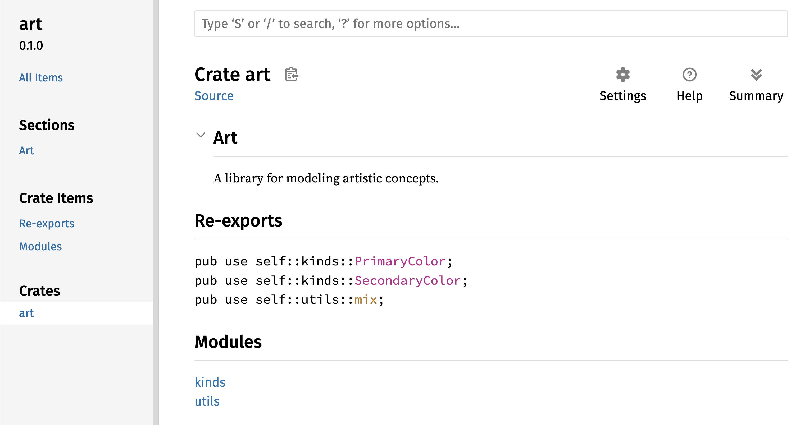

نوشته استیو کلابنیک، کارول نیکولز، و کریس کریچو، با مشارکت اعضای جامعه راست
این نسخه از متن فرض میکند که شما از راست نسخه 1.82.0 (منتشر شده در تاریخ 17-10-2024) یا نسخههای جدیدتر استفاده میکنید. برای نصب یا بهروزرسانی راست به بخش “نصب” از فصل 1 مراجعه کنید.
فرمت HTML بهصورت آنلاین در دسترس است در
https://doc.rust-lang.org/stable/book/
و بهصورت آفلاین با نصبهای راست که با rustup انجام شدهاند؛ دستور rustup doc --book را اجرا کنید تا باز شود.
🚨 میخواهید تجربه یادگیری تعاملیتری داشته باشید؟ نسخه دیگری از کتاب راست را امتحان کنید که شامل: آزمونها، برجستهسازیها، تجسمها، و موارد دیگر است: https://rust-book.cs.brown.edu
همیشه اینقدر واضح نبود، اما زبان برنامهنویسی راست اساساً درباره توانمندسازی است: فرقی نمیکند چه نوع کدی اکنون مینویسید، راست به شما این قدرت را میدهد که فراتر بروید، با اعتمادبهنفس در طیف وسیعتری از حوزهها برنامهنویسی کنید.
بهعنوان مثال، کارهای “در سطح سیستم” که با جزئیات سطح پایین مدیریت حافظه، نمایش دادهها و همروندی سر و کار دارند. به طور سنتی، این حوزه از برنامهنویسی پیچیده و فقط برای عده معدودی قابل دسترسی است که سالهای لازم را برای اجتناب از مشکلات معروف آن صرف کردهاند. حتی کسانی که در این زمینه فعالیت میکنند نیز با احتیاط عمل میکنند تا کد آنها در معرض بهرهبرداری، خرابی یا خرابی دادهها قرار نگیرد.
راست این موانع را از بین میبرد و با حذف مشکلات قدیمی و ارائه مجموعهای دوستانه و صیقلخورده از ابزارها به شما کمک میکند. برنامهنویسانی که نیاز دارند به کنترلهای سطح پایینتر “فرو روند”، میتوانند این کار را با راست انجام دهند، بدون پذیرش خطر معمول خرابیها یا مشکلات امنیتی و بدون نیاز به یادگیری جزئیات ابزارهای پیچیده. بهتر از آن، این زبان طوری طراحی شده است که شما را بهصورت طبیعی به سمت کدی قابلاطمینان و کارآمد از نظر سرعت و استفاده از حافظه هدایت میکند.
برنامهنویسانی که قبلاً با کد سطح پایین کار میکنند، میتوانند با راست جاهطلبیهای خود را افزایش دهند. بهعنوان مثال، معرفی همروندی در راست عملی نسبتاً کمخطر است: کامپایلر اشتباهات کلاسیک را برای شما میگیرد. و شما میتوانید با اطمینان به این که بهطور تصادفی خرابیها یا آسیبپذیریها را معرفی نمیکنید، بهینهسازیهای جسورانهتری را در کد خود پیاده کنید.
اما راست محدود به برنامهنویسی سیستمهای سطح پایین نیست. این زبان به قدری بیانگر و راحت است که نوشتن برنامههای خط فرمان (CLI)، سرورهای وب و بسیاری از انواع دیگر کدها را دلپذیر میکند — نمونههای سادهای از هر دو را در بخشهای بعدی کتاب خواهید یافت. کار با راست به شما این امکان را میدهد که مهارتهایی بسازید که از یک حوزه به حوزه دیگر قابلانتقال باشند؛ میتوانید راست را با نوشتن یک برنامه وب یاد بگیرید و سپس همان مهارتها را برای هدف قرار دادن رزبری پای خود به کار ببرید.
این کتاب پتانسیل راست برای توانمندسازی کاربرانش را به طور کامل در آغوش میگیرد. این متنی دوستانه و قابلدسترس است که قصد دارد نه تنها دانش شما در مورد راست، بلکه دامنه و اعتمادبهنفس شما را بهعنوان یک برنامهنویس به طور کلی ارتقا دهد. پس وارد شوید، آماده یادگیری باشید — و به جامعه راست خوش آمدید!
به زبان برنامهنویسی راست خوش آمدید، یک کتاب مقدماتی درباره راست. زبان برنامهنویسی راست به شما کمک میکند نرمافزاری سریعتر و قابلاعتمادتر بنویسید. در طراحی زبانهای برنامهنویسی، راحتی در سطح بالا و کنترل در سطح پایین اغلب در تضاد هستند؛ راست این تناقض را به چالش میکشد. با ایجاد تعادل بین تواناییهای فنی قدرتمند و تجربه عالی برنامهنویسی، راست به شما این امکان را میدهد که جزئیات سطح پایین (مانند استفاده از حافظه) را بدون دردسرهای سنتی مرتبط با چنین کنترلی مدیریت کنید.
راست ابزاری اثبات شده برای همکاری میان تیمهای بزرگ برنامهنویسان با سطوح مختلف دانش برنامهنویسی سیستم است. کد سطح پایین مستعد اشکالات ظریف متعددی است که در بیشتر زبانهای دیگر تنها از طریق تست گسترده و بازبینی دقیق کد توسط برنامهنویسان با تجربه قابل شناسایی هستند. در راست، کامپایلر نقش نگهبان را ایفا میکند و از کامپایل کردن کدهایی با این اشکالات گریزان، از جمله اشکالات همروندی، جلوگیری میکند. با کار کردن در کنار کامپایلر، تیم میتواند زمان خود را بر روی منطق برنامه به جای رفع اشکالات صرف کند.
راست همچنین ابزارهای مدرن برنامهنویسی را به دنیای برنامهنویسی سیستمها میآورد:
Cargo، مدیر وابستگی و ابزار ساخت، اضافه کردن، کامپایل کردن، و مدیریت وابستگیها را در سراسر اکوسیستم راست ساده و یکپارچه میکند.
ابزار قالببندی Rustfmt، یک سبک کدنویسی ثابت را در بین برنامهنویسان تضمین میکند.
rust-analyzer یکپارچگی محیط توسعه یکپارچه (IDE) را برای تکمیل کد و پیامهای خطای درونخطی فراهم میکند.
با استفاده از این ابزارها و دیگر ابزارهای اکوسیستم راست، برنامهنویسان میتوانند در هنگام نوشتن کد سطح سیستمها بهرهور باشند.
راست برای دانشجویان و کسانی است که به یادگیری مفاهیم سیستمها علاقهمند هستند. بسیاری از افراد با استفاده از راست موضوعاتی مانند توسعه سیستمعامل را آموختهاند. جامعه راست بسیار پذیرنده است و با خوشحالی به سوالات دانشجویان پاسخ میدهد. از طریق تلاشهایی مانند این کتاب، تیمهای راست میخواهند مفاهیم سیستمها را برای افراد بیشتری، به ویژه کسانی که تازه وارد برنامهنویسی هستند، قابل دسترستر کنند.
صدها شرکت، بزرگ و کوچک، از راست در تولید برای وظایف متنوعی استفاده میکنند، از جمله ابزارهای خط فرمان، خدمات وب، ابزارهای DevOps، دستگاههای تعبیهشده، تحلیل و رمزگذاری صدا و تصویر، ارزهای دیجیتال، زیستاطلاعات، موتورهای جستجو، برنامههای اینترنت اشیاء، یادگیری ماشین و حتی بخشهای اصلی مرورگر وب فایرفاکس.
راست برای کسانی است که میخواهند زبان برنامهنویسی راست، جامعه، ابزارهای توسعهدهنده و کتابخانهها را بسازند. ما دوست داریم شما در توسعه زبان راست مشارکت کنید.
راست برای افرادی است که به سرعت و پایداری در یک زبان برنامهنویسی علاقه دارند. منظور از سرعت، هم سرعت اجرای کدهای راست و هم سرعتی است که راست به شما اجازه میدهد برنامهها را بنویسید. بررسیهای کامپایلر راست پایداری را از طریق افزودن ویژگیها و بازسازی تضمین میکند. این در تضاد با کدهای قدیمی شکننده در زبانهایی است که فاقد این بررسیها هستند و توسعهدهندگان اغلب از تغییر آنها میترسند. با تلاش برای ارائه انتزاعات بدون هزینه، ویژگیهای سطح بالا که به کدهای سطح پایین با سرعتی معادل کدهای نوشته شده دستی کامپایل میشوند، راست میکوشد کد ایمن را به کد سریع تبدیل کند.
زبان راست امیدوار است از بسیاری از کاربران دیگر نیز پشتیبانی کند؛ افرادی که در اینجا ذکر شدند تنها برخی از بزرگترین ذینفعان هستند. در کل، بزرگترین جاهطلبی راست این است که با ارائه ایمنی و بهرهوری، سرعت و راحتی، مصالحههایی که برنامهنویسان دههها پذیرفتهاند را حذف کند. راست را امتحان کنید و ببینید آیا انتخابهای آن برای شما مناسب است یا خیر.
این کتاب فرض میکند که شما قبلاً در یک زبان برنامهنویسی دیگر کدنویسی کردهاید اما هیچ فرضی در مورد اینکه کدام زبان است، ندارد. ما سعی کردهایم مطالب را به گونهای ارائه دهیم که برای افراد با زمینههای برنامهنویسی متنوع قابل دسترسی باشد. ما زمان زیادی را صرف صحبت درباره اینکه برنامهنویسی چیست یا چگونه باید به آن فکر کنید، نمیکنیم. اگر کاملاً تازهوارد برنامهنویسی هستید، بهتر است کتابی را بخوانید که به طور خاص مقدمهای بر برنامهنویسی ارائه میدهد.
به طور کلی، این کتاب فرض میکند که شما آن را به ترتیب از ابتدا تا انتها میخوانید. فصلهای بعدی بر مفاهیم فصلهای قبلی بنا شدهاند و فصلهای اولیه ممکن است به جزئیات خاصی وارد نشوند اما در فصول بعدی به آن موضوعات بازمیگردند.
در این کتاب، دو نوع فصل وجود دارد: فصلهای مفهومی و فصلهای پروژهای. در فصلهای مفهومی، درباره یک جنبه از راست یاد خواهید گرفت. در فصلهای پروژهای، برنامههای کوچکی را با هم میسازیم و آنچه را که تاکنون آموختهاید به کار میگیریم. فصلهای ۲، ۱۲ و ۲۱ فصلهای پروژهای هستند؛ بقیه فصلها مفهومی هستند.
فصل ۱ نحوه نصب راست، نوشتن یک برنامه “سلام دنیا!” و استفاده از Cargo، مدیر بسته و ابزار ساخت راست را توضیح میدهد. فصل ۲ مقدمهای عملی برای نوشتن برنامهای در راست است و شما را به ساخت یک بازی حدس عدد میبرد. در اینجا مفاهیم را به طور کلی پوشش میدهیم و جزئیات بیشتری را در فصول بعدی ارائه خواهیم کرد. اگر میخواهید بلافاصله کار عملی انجام دهید، فصل ۲ مناسب شماست. فصل ۳ ویژگیهای راست را که مشابه ویژگیهای سایر زبانهای برنامهنویسی است پوشش میدهد و در فصل ۴ درباره سیستم مالکیت راست یاد خواهید گرفت. اگر شما یک یادگیرنده دقیق هستید که ترجیح میدهید قبل از ادامه، همه جزئیات را بیاموزید، ممکن است بخواهید فصل ۲ را رد کنید و مستقیماً به فصل ۳ بروید و پس از یادگیری جزئیات به فصل ۲ بازگردید تا روی پروژهای کار کنید.
فصل ۵ به ساختارها (structs) و متدها میپردازد و فصل ۶ شامل enumerations (enums)، عبارات match و سازه کنترلی if let است. از ساختارها و enumها برای ایجاد انواع سفارشی در راست استفاده خواهید کرد.
در فصل ۷، درباره سیستم ماژول راست و قوانین حریم خصوصی برای سازماندهی کد و رابط برنامهنویسی عمومی (API) آن یاد خواهید گرفت. فصل ۸ به بررسی برخی از ساختارهای داده مجموعه رایج که کتابخانه استاندارد ارائه میدهد، مانند vectors، strings و hash maps میپردازد. فصل ۹ فلسفه و تکنیکهای مدیریت خطا در راست را بررسی میکند.
فصل ۱۰ به مفاهیم جنریکها، traits و lifetimes میپردازد که به شما این قدرت را میدهد تا کدی بنویسید که به انواع مختلف اعمال شود. فصل ۱۱ کاملاً درباره تست است که حتی با تضمینهای ایمنی راست، برای اطمینان از درستی منطق برنامه شما ضروری است. در فصل ۱۲، پیادهسازی بخشی از ابزار خط فرمان grep که متن را در فایلها جستجو میکند، خواهیم ساخت. برای این کار، از بسیاری از مفاهیمی که در فصلهای قبلی مورد بحث قرار گرفتند استفاده خواهیم کرد.
فصل ۱۳ به بررسی closures و iterators میپردازد: ویژگیهایی از راست که از زبانهای برنامهنویسی تابعی آمدهاند. در فصل ۱۴، Cargo را به طور عمیقتری بررسی خواهیم کرد و درباره بهترین روشها برای اشتراکگذاری کتابخانههای خود با دیگران صحبت خواهیم کرد. فصل ۱۵ اشارهگرهای هوشمند (smart pointers) ارائهشده توسط کتابخانه استاندارد و traitsی که قابلیتهای آنها را امکانپذیر میسازد بررسی میکند.
در فصل ۱۶، مدلهای مختلف برنامهنویسی همزمان را بررسی میکنیم و درباره اینکه چگونه راست به شما کمک میکند بدون ترس با چندین رشته (string) کار کنید صحبت خواهیم کرد. در فصل ۱۷، این موضوع را با بررسی syntax async و await و مدل همزمانی سبکوزنی که پشتیبانی میکنند، گسترش خواهیم داد.
فصل ۱۸ نگاهی به چگونگی مقایسه اصطلاحات راست با اصول برنامهنویسی شیءگرا میاندازد که ممکن است با آنها آشنا باشید.
فصل ۱۹ مرجعی درباره الگوها و الگویابی (pattern matching) است که راههای قدرتمندی برای بیان ایدهها در سراسر برنامههای راست ارائه میدهد. فصل ۲۰ شامل مجموعهای از موضوعات پیشرفته جالب، از جمله راست ناامن، ماکروها، و مباحث بیشتر درباره lifetimes، traits، انواع، توابع و closures است.
در فصل ۲۱، پروژهای را تکمیل میکنیم که در آن یک سرور وب چندرشتهای سطح پایین پیادهسازی خواهیم کرد!
در نهایت، پیوستهایی شامل اطلاعات مفید درباره زبان به شکلی مرجعگونه ارائه میشوند. ضمیمه الف کلمات کلیدی راست، ضمیمه ب عملگرها و نمادهای راست، ضمیمه ج traits قابل اشتقاق ارائهشده توسط کتابخانه استاندارد، ضمیمه د برخی از ابزارهای توسعه مفید، و ضمیمه ه نسخههای راست را توضیح میدهد. در ضمیمه و میتوانید ترجمههای کتاب را پیدا کنید و در ضمیمه ی درباره چگونگی ساخت راست و راست nightly اطلاعات کسب کنید.
هیچ روش نادرستی برای خواندن این کتاب وجود ندارد: اگر میخواهید به جلو بروید، این کار را انجام دهید! ممکن است مجبور شوید به فصلهای قبلی بازگردید اگر با سردرگمی روبهرو شدید. اما هرچه برای شما مناسب است انجام دهید.
بخش مهمی از فرآیند یادگیری راست، یادگیری نحوه خواندن پیامهای خطای کامپایلر است: این پیامها شما را به سمت کدی که کار میکند هدایت میکنند. به همین دلیل، مثالهای زیادی را ارائه میدهیم که کامپایل نمیشوند، همراه با پیام خطایی که کامپایلر در هر وضعیت نمایش میدهد. بدانید که اگر یک مثال تصادفی را وارد کنید و اجرا کنید، ممکن است کامپایل نشود! مطمئن شوید که متن اطراف را بخوانید تا ببینید آیا مثالی که میخواهید اجرا کنید قرار است خطا بدهد یا خیر. Ferris همچنین به شما کمک میکند کدی که قرار نیست کار کند را تشخیص دهید:
Ferris
معنی
این کد کامپایل نمیشود!
این کد وحشت میکند!
این کد رفتار مورد انتظار را تولید نمیکند.
در بیشتر موارد، شما را به نسخه صحیح هر کدی که کامپایل نمیشود هدایت خواهیم کرد.
بیایید سفر خود به دنیای راست را آغاز کنیم! چیزهای زیادی برای یادگیری وجود دارد، اما هر سفری از جایی شروع میشود. در این فصل، درباره موارد زیر صحبت خواهیم کرد:
اولین قدم نصب راست است. ما راست را از طریق rustup دانلود میکنیم، ابزاری خط فرمان برای مدیریت نسخههای راست و ابزارهای مربوطه. برای دانلود به اتصال اینترنتی نیاز دارید.
توجه: اگر به هر دلیلی ترجیح میدهید از rustup استفاده نکنید، لطفاً صفحه روشهای نصب دیگر راست را برای گزینههای بیشتر مشاهده کنید.
مراحل زیر نسخه پایدار جدیدترین کامپایلر راست را نصب میکنند. تضمینهای پایداری راست اطمینان میدهند که تمام مثالهای کتاب که کامپایل میشوند، با نسخههای جدیدتر راست نیز کامپایل خواهند شد. خروجی ممکن است کمی متفاوت باشد، زیرا راست به طور مرتب پیغامهای خطا و هشدارها را بهبود میبخشد. به عبارت دیگر، هر نسخه پایدار جدیدی که با این مراحل نصب کنید، باید با محتوای این کتاب به درستی کار کند.
در این فصل و throughout the book، ما برخی از دستورات استفاده شده در ترمینال را نمایش خواهیم داد. خطوطی که باید در ترمینال وارد کنید، همگی با $ شروع میشوند. شما نیازی به وارد کردن نماد $ ندارید؛ این نماد نشاندهنده شروع هر دستور است. خطوطی که با $ شروع نمیشوند معمولاً خروجی دستور قبلی را نشان میدهند. علاوه بر این، مثالهای خاص PowerShell از > به جای $ استفاده میکنند.
اگر از لینوکس یا macOS استفاده میکنید، یک ترمینال باز کرده و دستور زیر را وارد کنید:
$ curl --proto '=https' --tlsv1.2 https://sh.rustup.rs -sSf | sh
این دستور یک اسکریپت دانلود کرده و نصب ابزار rustup را آغاز میکند که نسخه پایدار جدید راست را نصب میکند. ممکن است از شما خواسته شود تا رمز عبور خود را وارد کنید. اگر نصب موفقیتآمیز بود، خط زیر ظاهر میشود:
Rust is installed now. Great!
همچنین به یک لینکر نیاز خواهید داشت که برنامهای است که راست از آن برای ترکیب خروجیهای کامپایل شده خود به یک فایل استفاده میکند. احتمالاً شما یک لینکر دارید. اگر با ارورهای لینکر روبهرو شدید، باید یک کامپایلر C نصب کنید که معمولاً لینکر را نیز شامل میشود. یک کامپایلر C همچنین مفید است زیرا برخی از پکیجهای رایج راست به کد C وابستهاند و به یک کامپایلر C نیاز دارند.
برای نصب کامپایلر C در macOS، دستور زیر را اجرا کنید:
$ xcode-select --install
کاربران لینوکس معمولاً باید GCC یا Clang را طبق مستندات توزیع خود نصب کنند. برای مثال، اگر از اوبونتو استفاده میکنید، میتوانید پکیج build-essential را نصب کنید.
بقیه کتاب از دستورات استفاده شده در cmd.exe و PowerShell استفاده میکند. اگر تفاوتهای خاصی وجود داشته باشد، توضیح خواهیم داد که کدام را باید استفاده کنید.
برای بررسی اینکه راست به درستی نصب شده است یا خیر، یک شل باز کرده و این دستور را وارد کنید:
$ rustc --version
باید شماره نسخه، هش کمیّت و تاریخ کمیّت برای جدیدترین نسخه پایدار منتشر شده را به صورت زیر ببینید:
rustc x.y.z (abcabcabc yyyy-mm-dd)
اگر این اطلاعات را مشاهده کردید، راست به درستی نصب شده است! اگر این اطلاعات را مشاهده نکردید، بررسی کنید که راست در متغیر سیستم %PATH% شما قرار دارد.
در CMD ویندوز، از دستور زیر استفاده کنید:
> echo %PATH%
در PowerShell، از دستور زیر استفاده کنید:
> echo $env:Path
در لینوکس و macOS، از دستور زیر استفاده کنید:
$ echo $PATH
اگر همه چیز درست باشد و راست همچنان کار نکند، منابع زیادی برای کمک وجود دارد. برای تماس با سایر راستنویسان (لقب خندهداری که خودمان به کار میبریم)، به صفحه اجتماع مراجعه کنید.
نصب راست همچنین شامل یک نسخه محلی از مستندات است تا بتوانید آن را به صورت آفلاین مطالعه کنید. برای باز کردن مستندات محلی در مرورگر خود، دستور rustup doc را اجرا کنید.
هر زمان که از یک نوع یا تابع ارائهشده توسط کتابخانه استاندارد استفاده میکنید و مطمئن نیستید که چه کار میکند یا چگونه از آن استفاده کنید، از مستندات رابط برنامهنویسی (API) برای یافتن آن استفاده کنید!
این کتاب هیچ فرضی درباره ابزارهایی که برای نوشتن کد راست استفاده میکنید، ندارد. تقریباً هر ویرایشگر متنی کار را انجام میدهد! با این حال، بسیاری از ویرایشگرها و محیطهای توسعه یکپارچه (IDE) پشتیبانی داخلی برای راست دارند. همیشه میتوانید فهرست نسبتاً جدیدی از بسیاری از ویرایشگرها و IDEها را در صفحه ابزارها در وبسایت راست پیدا کنید.
حالا که Rust را نصب کردهاید، وقت آن است که اولین برنامهی Rust خود را بنویسید.
وقتی زبان جدیدی را یاد میگیرید، معمولاً یک برنامه کوچک مینویسید که متن Hello, world! را به صفحه نمایش چاپ کند، پس ما هم همین کار را خواهیم کرد!
نکته: این کتاب فرض میکند که شما با خط فرمان آشنایی پایهای دارید. Rust هیچگونه الزامی در مورد ویرایش یا ابزارهای شما یا جایی که کد شما قرار دارد ندارد، بنابراین اگر ترجیح میدهید از یک محیط توسعه یکپارچه (IDE) به جای خط فرمان استفاده کنید، میتوانید از IDE مورد علاقه خود استفاده کنید. بسیاری از IDEها اکنون از Rust پشتیبانی میکنند؛ برای جزئیات، مستندات IDE خود را بررسی کنید. تیم Rust تمرکز خود را بر enabling پشتیبانی خوب از IDE از طریق rust-analyzer گذاشته است. برای جزئیات بیشتر، به ضمیمه د مراجعه کنید.
شما با ایجاد یک دایرکتوری برای ذخیره کدهای Rust خود شروع خواهید کرد. برای Rust مهم نیست که کد شما کجا قرار دارد، اما برای تمرینها و پروژههای این کتاب، پیشنهاد میکنیم یک دایرکتوری projects در دایرکتوری خانهتان بسازید و تمام پروژههایتان را در آن نگهدارید.
یک ترمینال باز کنید و دستورات زیر را وارد کنید تا یک دایرکتوری projects و یک دایرکتوری برای پروژهی “Hello, world!” در داخل دایرکتوری projects ایجاد کنید.
برای لینوکس، macOS، و PowerShell در ویندوز، این دستورات را وارد کنید:
$ mkdir ~/projects
$ cd ~/projects
$ mkdir hello_world
$ cd hello_world
برای CMD ویندوز، این دستورات را وارد کنید:
> mkdir "%USERPROFILE%\projects"
> cd /d "%USERPROFILE%\projects"
> mkdir hello_world
> cd hello_world
حالا یک فایل سورس جدید بسازید و آن را main.rs نامگذاری کنید. فایلهای Rust همیشه با پسوند .rs تمام میشوند. اگر از بیش از یک کلمه در نام فایل استفاده میکنید، سنت معمول این است که از خط تیره زیر برای جدا کردن آنها استفاده کنید. به عنوان مثال، از hello_world.rs به جای helloworld.rs استفاده کنید.
حالا فایل main.rs که تازه ایجاد کردهاید را باز کنید و کد موجود در فهرست 1-1 را وارد کنید.
Filename: main.rs
fn main() {
println!("Hello, world!");
}
Listing 1-1: یک برنامه که Hello, world! را چاپ میکند
فایل را ذخیره کنید و به پنجره ترمینال خود در دایرکتوری
~/projects/hello_world برگردید. در لینوکس یا macOS، دستورات زیر را وارد کنید تا فایل را کامپایل کرده و اجرا کنید:
$ rustc main.rs
$ ./main
Hello, world!
در ویندوز، به جای ./main دستور .\main.exe را وارد کنید:
> rustc main.rs
> .\main.exe
Hello, world!
صرفنظر از سیستمعامل شما، رشته Hello, world! باید در ترمینال چاپ شود. اگر این خروجی را مشاهده نکردید، به بخش “رفع مشکلات” در قسمت نصب مراجعه کنید تا روشهای دریافت کمک را بیابید.
اگر Hello, world! چاپ شد، تبریک میگوییم! شما به طور رسمی یک برنامه نویس Rust شدهاید—خوش آمدید!
بیایید این برنامه “Hello, world!” را به طور دقیق بررسی کنیم. این اولین بخش معما است:
fn main() {
}
این خطوط یک تابع به نام main تعریف میکنند. تابع main خاص است: همیشه اولین کدی است که در هر برنامه Rust اجرایی اجرا میشود. در اینجا، خط اول یک تابع به نام main اعلام میکند که هیچ پارامتر ندارد و هیچ چیزی را برنمیگرداند. اگر پارامترهایی وجود داشتند، آنها داخل پرانتزهای () قرار میگرفتند.
بدن تابع در {} قرار دارد. Rust از آکولادها برای احاطه کردن تمام بدنههای توابع استفاده میکند. این یک سبک خوب است که آکولاد باز را در همان خط اعلام تابع قرار دهید و یک فضای خالی بین آنها اضافه کنید.
نکته: اگر میخواهید در پروژههای Rust خود از یک سبک استاندارد پیروی کنید، میتوانید از ابزاری به نام rustfmt برای فرمت کردن کد خود در یک سبک خاص استفاده کنید (بیشتر در مورد rustfmt در ضمیمه د). تیم Rust این ابزار را همراه با توزیع استاندارد Rust شامل کرده است، همانطور که rustc است، بنابراین باید قبلاً روی کامپیوتر شما نصب شده باشد!
این خط تمام کار را در این برنامه کوچک انجام میدهد: آن متن را به صفحه نمایش چاپ میکند. چهار نکته مهم وجود دارد که باید به آنها توجه کنید.
اول، println! یک ماکرو Rust را فراخوانی میکند. اگر به جای آن یک تابع فراخوانی میشد، باید به صورت println (بدون !) وارد میشد. ماکروهای Rust را در فصل 20 به طور مفصلتر بررسی خواهیم کرد. در حال حاضر، شما فقط باید بدانید که استفاده از ! به این معنی است که شما یک ماکرو را فراخوانی میکنید نه یک تابع معمولی و اینکه ماکروها همیشه از همان قوانین توابع پیروی نمیکنند.
دوم، شما رشته "Hello, world!" را مشاهده میکنید. این رشته را به عنوان آرگومان به println! میدهیم و این رشته به صفحه نمایش چاپ میشود.
سوم، خط را با یک نقطهویرگول (;) تمام میکنیم که نشان میدهد این عبارت تمام شده و عبارت بعدی آماده شروع است. بیشتر خطوط کد Rust با نقطهویرگول تمام میشوند.
شما به تازگی یک برنامه جدید ایجاد شده را اجرا کردهاید، بنابراین بیایید هر مرحله از فرآیند را بررسی کنیم.
قبل از اجرای یک برنامه Rust، باید آن را با استفاده از کامپایلر Rust کامپایل کنید. برای این کار باید دستور rustc را وارد کرده و نام فایل سورس خود را به آن بدهید، مانند این:
$ rustc main.rs
اگر پیشزمینهای از C یا C++ دارید، متوجه خواهید شد که این مشابه دستور gcc یا clang است. پس از کامپایل موفق، Rust یک فایل اجرایی باینری تولید میکند.
در لینوکس، macOS و PowerShell در ویندوز، میتوانید فایل اجرایی را با وارد کردن دستور ls در شل خود مشاهده کنید:
$ ls
main main.rs
در لینوکس و macOS، شما دو فایل خواهید دید. در PowerShell در ویندوز، همان سه فایلی را که با CMD میبینید مشاهده خواهید کرد. در CMD در ویندوز، باید دستور زیر را وارد کنید:
> dir /B %= گزینه /B میگوید که فقط نام فایلها نمایش داده شود =%
main.exe
main.pdb
main.rs
این لیست فایل سورس با پسوند .rs، فایل اجرایی (main.exe در ویندوز، اما main در سایر پلتفرمها)، و در صورت استفاده از ویندوز، یک فایل شامل اطلاعات دیباگ با پسوند .pdb را نشان میدهد. از اینجا، شما فایل main یا main.exe را اجرا میکنید، مانند این:
$ ./main # یا .\main.exe در ویندوز
اگر فایل main.rs شما برنامه “Hello, world!” باشد، این خط Hello, world! را در ترمینال شما چاپ میکند.
اگر با زبانهای داینامیک مانند Ruby، Python یا JavaScript آشنایی بیشتری دارید، ممکن است عادت نداشته باشید که کامپایل و اجرای یک برنامه را به عنوان مراحل جداگانه انجام دهید. Rust یک زبان کامپایل شده پیش از زمان است، به این معنی که شما میتوانید یک برنامه را کامپایل کرده و فایل اجرایی را به شخص دیگری بدهید تا آن را اجرا کند، حتی بدون اینکه Rust روی سیستم آن شخص نصب شده باشد. اگر به کسی فایل .rb، .py یا .js بدهید، آنها نیاز به نصب پیادهسازی Ruby، Python یا JavaScript (به ترتیب) دارند. اما در این زبانها، شما فقط به یک دستور نیاز دارید تا برنامه خود را کامپایل و اجرا کنید. همه چیز در طراحی زبانها یک تعادل است.
فقط با کامپایل کردن با rustc برای برنامههای ساده کافی است، اما با رشد پروژه شما، میخواهید تمام گزینهها را مدیریت کرده و اشتراکگذاری کد خود را آسان کنید. در ادامه، ما ابزار Cargo را معرفی خواهیم کرد که به شما کمک میکند برنامههای واقعی Rust بنویسید.
Cargo سیستم ساخت و مدیر بستههای Rust است. بیشتر Rustacean ها از این ابزار برای مدیریت پروژههای Rust خود استفاده میکنند زیرا Cargo بسیاری از وظایف را برای شما انجام میدهد، مانند ساختن کد شما، دانلود کتابخانههایی که کد شما به آنها وابسته است، و ساختن آن کتابخانهها. (ما به کتابخانههایی که کد شما به آنها نیاز دارد وابستگیها میگوییم.)
سادهترین برنامههای Rust، مانند برنامهای که تا کنون نوشتهایم، هیچ وابستگیای ندارند. اگر پروژه “Hello, world!” را با Cargo میساختیم، فقط از بخشی از Cargo استفاده میکرد که مسئول ساختن کد شما است. هنگامی که برنامههای پیچیدهتری در Rust بنویسید، وابستگیها را اضافه خواهید کرد و اگر پروژهای را با استفاده از Cargo شروع کنید، اضافه کردن وابستگیها بسیار راحتتر خواهد بود.
به دلیل اینکه اکثریت عظیم پروژههای Rust از Cargo استفاده میکنند، بقیه این کتاب فرض میکند که شما نیز از Cargo استفاده میکنید. Cargo با Rust نصب میشود اگر از نصبکنندههای رسمی که در بخش
[“نصب”][installation] بحث شدهاند استفاده کرده باشید. اگر Rust را از طریق روشهای دیگری نصب کردهاید، بررسی کنید که آیا Cargo نصب شده است یا نه با وارد کردن دستور زیر در ترمینال خود:
$ cargo --version
اگر شماره نسخهای مشاهده کردید، آن را دارید! اگر خطای command not found را دیدید، به مستندات روش نصب خود مراجعه کنید تا نحوه نصب جداگانه Cargo را پیدا کنید.
بیایید یک پروژه جدید با استفاده از Cargo بسازیم و ببینیم چگونه از پروژه اولیه “Hello, world!” ما متفاوت است. به دایرکتوری projects خود بروید (یا هر جایی که تصمیم گرفتهاید کد خود را ذخیره کنید). سپس، در هر سیستمعاملی، دستور زیر را وارد کنید:
$ cargo new hello_cargo
$ cd hello_cargo
دستور اول یک دایرکتوری جدید به نام hello_cargo ایجاد میکند و پروژهای به همین نام ایجاد میکند. ما پروژه خود را hello_cargo نامگذاری کردهایم و Cargo فایلهای خود را در دایرکتوری به همین نام ایجاد میکند.
به دایرکتوری hello_cargo بروید و فایلها را لیست کنید. خواهید دید که Cargo دو فایل و یک دایرکتوری برای ما ایجاد کرده است: یک فایل Cargo.toml و یک دایرکتوری src که داخل آن یک فایل main.rs است.
همچنین یک مخزن Git جدید به همراه یک فایل .gitignore ایجاد شده است. فایلهای Git در صورتی که دستور cargo new را در یک مخزن Git موجود اجرا کنید، ایجاد نمیشوند؛ میتوانید این رفتار را با استفاده از cargo new --vcs=git لغو کنید.
نکته: Git یک سیستم کنترل نسخه رایج است. شما میتوانید دستور cargo new را تغییر دهید تا از سیستم کنترل نسخهای متفاوت یا هیچ سیستم کنترل نسخهای استفاده کند با استفاده از پرچم --vcs. برای دیدن گزینههای موجود، دستور cargo new --help را اجرا کنید.
فایل Cargo.toml را در ویرایشگر متن دلخواه خود باز کنید. این فایل باید مشابه کدی باشد که در فهرست 1-2 آمده است.
Filename: Cargo.toml
[package]
name = "hello_cargo"
version = "0.1.0"
edition = "2021"
# برای مشاهده کلیدها و تعاریف بیشتر به https://doc.rust-lang.org/cargo/reference/manifest.html مراجعه کنید
[dependencies]
Listing 1-2: محتویات Cargo.toml که توسط cargo new ایجاد شده است
این فایل در فرمت [TOML][toml] (زبان ساده و آشکار تام) است که فرمت پیکربندی Cargo است.
خط اول، [package]، یک عنوان بخش است که نشان میدهد بیانیههای بعدی در حال پیکربندی یک بسته هستند. همانطور که اطلاعات بیشتری به این فایل اضافه میکنیم، بخشهای دیگری را اضافه خواهیم کرد.
سه خط بعدی اطلاعات پیکربندیای را تنظیم میکنند که Cargo برای کامپایل برنامه شما به آنها نیاز دارد: نام، نسخه و نسخهای از Rust که باید استفاده شود. در مورد کلید edition در [ضمیمه ه][appendix-e] صحبت خواهیم کرد.
آخرین خط، [dependencies]، شروع یک بخش است که شما باید وابستگیهای پروژه خود را در آن ذکر کنید. در Rust، بستههای کد به نام کرِیتها شناخته میشوند. برای این پروژه نیازی به کرِیتهای دیگر نداریم، اما در پروژه اول فصل 2 به آنها نیاز خواهیم داشت، بنابراین در آن زمان از این بخش وابستگیها استفاده خواهیم کرد.
حالا فایل src/main.rs را باز کنید و نگاهی بیندازید:
Filename: src/main.rs
fn main() {
println!("Hello, world!");
}
Cargo یک برنامه “Hello, world!” برای شما ایجاد کرده است، درست مانند برنامهای که در فهرست 1-1 نوشتیم! تا کنون، تفاوتهای بین پروژه ما و پروژهای که Cargo ایجاد کرده این است که Cargo کد را در دایرکتوری src قرار داده و ما یک فایل پیکربندی Cargo.toml در دایرکتوری بالای پروژه داریم.
Cargo انتظار دارد که فایلهای منبع شما داخل دایرکتوری src قرار داشته باشند. دایرکتوری بالای پروژه فقط برای فایلهای README، اطلاعات مجوز، فایلهای پیکربندی و هر چیز دیگری که مربوط به کد شما نباشد، استفاده میشود. استفاده از Cargo به شما کمک میکند پروژههایتان را سازماندهی کنید. برای هر چیز جایی وجود دارد و همه چیز در جای خود قرار دارد.
اگر پروژهای شروع کردهاید که از Cargo استفاده نمیکند، همانطور که در پروژه “Hello, world!” انجام دادیم، میتوانید آن را به پروژهای که از Cargo استفاده میکند تبدیل کنید. کد پروژه را به دایرکتوری src منتقل کرده و یک فایل Cargo.toml مناسب ایجاد کنید. یکی از راههای آسان برای بهدست آوردن آن فایل Cargo.toml این است که دستور cargo init را اجرا کنید که بهطور خودکار آن را برای شما ایجاد میکند.
حالا بیایید ببینیم که چه تفاوتی در زمانی که برنامه “Hello, world!” را با Cargo میسازیم و اجرا میکنیم وجود دارد! از دایرکتوری hello_cargo خود، پروژه را با وارد کردن دستور زیر بسازید:
$ cargo build
Compiling hello_cargo v0.1.0 (file:///projects/hello_cargo)
Finished dev [unoptimized + debuginfo] target(s) in 2.85 secs
این دستور یک فایل اجرایی در target/debug/hello_cargo (یا target\debug\hello_cargo.exe در ویندوز) ایجاد میکند به جای این که آن را در دایرکتوری فعلی شما قرار دهد. زیرا ساخت پیشفرض یک ساخت دیباگ است، Cargo فایل باینری را در دایرکتوری به نام debug قرار میدهد. شما میتوانید فایل اجرایی را با این دستور اجرا کنید:
$ ./target/debug/hello_cargo # یا .\target\debug\hello_cargo.exe در ویندوز
Hello, world!
اگر همه چیز درست پیش رفته باشد، Hello, world! باید در ترمینال چاپ شود. اجرای cargo build برای اولین بار همچنین باعث میشود که Cargo یک فایل جدید در بالای دایرکتوری ایجاد کند: Cargo.lock. این فایل نسخههای دقیق وابستگیهای پروژه شما را پیگیری میکند. چون این پروژه وابستگی ندارد، این فایل کمی خالی است. شما هیچگاه نیازی به تغییر دستی این فایل نخواهید داشت؛ Cargo محتویات آن را برای شما مدیریت میکند.
ما همین حالا پروژه را با دستور cargo build ساختیم و با ./target/debug/hello_cargo اجرا کردیم، اما همچنین میتوانیم از cargo run برای کامپایل کردن کد و سپس اجرای باینری حاصل در یک دستور استفاده کنیم:
$ cargo run
Finished dev [unoptimized + debuginfo] target(s) in 0.0 secs
Running `target/debug/hello_cargo`
Hello, world!
استفاده از cargo run راحتتر از این است که بخواهید دستور cargo build را اجرا کرده و سپس مسیر کامل به باینری را استفاده کنید، بنابراین بیشتر توسعهدهندگان از cargo run استفاده میکنند.
توجه کنید که این بار خروجیای که نشان دهد Cargo در حال کامپایل کردن hello_cargo است، مشاهده نکردیم. Cargo متوجه شد که فایلها تغییر نکردهاند، بنابراین بازسازی نکرد و فقط باینری را اجرا کرد. اگر کد منبع خود را تغییر داده بودید، Cargo ابتدا پروژه را بازسازی میکرد و سپس آن را اجرا میکرد، و شما این خروجی را میدیدید:
$ cargo run
Compiling hello_cargo v0.1.0 (file:///projects/hello_cargo)
Finished dev [unoptimized + debuginfo] target(s) in 0.33 secs
Running `target/debug/hello_cargo`
Hello, world!
Cargo همچنین یک دستور به نام cargo check را فراهم میکند. این دستور کد شما را به سرعت بررسی میکند تا مطمئن شود که کامپایل میشود اما هیچ اجرایی تولید نمیکند:
$ cargo check
Checking hello_cargo v0.1.0 (file:///projects/hello_cargo)
Finished dev [unoptimized + debuginfo] target(s) in 0.32 secs
چرا شما به یک فایل اجرایی نیاز ندارید؟ اغلب، cargo check بسیار سریعتر از cargo build است زیرا مرحله تولید یک فایل اجرایی را رد میکند. اگر شما به طور مداوم در حال بررسی کد خود هستید، استفاده از cargo check سرعت فرایند اطلاع دادن به شما از این که پروژه هنوز کامپایل میشود را افزایش میدهد! به همین دلیل، بسیاری از Rustaceans به طور دورهای cargo check را در حین نوشتن کد خود اجرا میکنند تا مطمئن شوند که پروژهشان کامپایل میشود. سپس زمانی که آماده استفاده از باینری شدند، از دستور cargo build استفاده میکنند.
بیایید خلاصهای از آنچه که تا به حال در مورد Cargo آموختهایم مرور کنیم:
ما میتوانیم یک پروژه با استفاده از cargo new بسازیم.
ما میتوانیم یک پروژه را با استفاده از cargo build بسازیم.
ما میتوانیم یک پروژه را با یک مرحله از ساخت و اجرا با استفاده از cargo run بسازیم و اجرا کنیم.
ما میتوانیم یک پروژه را بدون تولید باینری برای بررسی خطاها با استفاده از cargo check بسازیم.
به جای ذخیره نتیجه ساخت در همان دایرکتوری که کد ما قرار دارد، Cargo آن را در دایرکتوری target/debug ذخیره میکند.
یک مزیت اضافی استفاده از Cargo این است که دستورات آن در همه سیستمعاملها یکسان است. بنابراین، از این پس، دیگر دستورالعملهای خاصی برای لینوکس و macOS در مقابل ویندوز ارائه نخواهیم کرد.
وقتی پروژه شما آماده انتشار است، میتوانید از دستور cargo build --release برای کامپایل کردن آن با بهینهسازیها استفاده کنید. این دستور یک فایل اجرایی در دایرکتوری target/release به جای target/debug ایجاد میکند. بهینهسازیها باعث میشوند که کد Rust شما سریعتر اجرا شود، اما فعال کردن آنها زمان کامپایل برنامه را طولانیتر میکند. به همین دلیل، دو پروفایل مختلف وجود دارد: یکی برای توسعه که شما میخواهید سریعاً و به دفعات پروژه را بازسازی کنید، و دیگری برای ساختن برنامه نهایی که به کاربر تحویل خواهید داد، که به دفعات بازسازی نمیشود و باید سریعترین اجرا را داشته باشد. اگر در حال اندازهگیری زمان اجرای کد خود هستید، حتماً از دستور cargo build --release استفاده کنید و با فایل اجرایی در target/release اندازهگیری کنید.
در پروژههای ساده، Cargo نسبت به استفاده از rustc مزیت زیادی ندارد، اما با پیچیدهتر شدن برنامهها، ارزش خود را نشان میدهد. زمانی که برنامهها به چندین فایل نیاز پیدا میکنند یا وابستگی دارند، استفاده از Cargo برای هماهنگ کردن فرایند ساخت بسیار راحتتر میشود.
حتی اگر پروژه hello_cargo ساده باشد، اکنون از بسیاری از ابزارهای واقعی استفاده میکند که در طول مسیر Rust خود به آنها نیاز خواهید داشت. در واقع، برای کار بر روی هر پروژه موجود، میتوانید از دستورات زیر برای بررسی کد با استفاده از Git، تغییر به دایرکتوری آن پروژه و ساخت آن استفاده کنید:
$ git clone example.org/someproject
$ cd someproject
$ cargo build
برای اطلاعات بیشتر در مورد Cargo، میتوانید به مستندات آن مراجعه کنید.
شما در حال حاضر شروع بسیار خوبی برای سفر خود در Rust دارید! در این فصل، شما یاد گرفتهاید که چگونه:
آخرین نسخه پایدار Rust را با استفاده از rustup نصب کنید.
به نسخه جدیدتر Rust بروزرسانی کنید.
مستندات محلی نصبشده را باز کنید.
یک برنامه “Hello, world!” را با استفاده از rustc مستقیماً بنویسید و اجرا کنید.
یک پروژه جدید را با استفاده از کنوانسیونهای Cargo بسازید و اجرا کنید.
این زمان بسیار خوبی است که برنامهای بزرگتر بسازید تا با خواندن و نوشتن کد Rust بیشتر آشنا شوید. بنابراین، در فصل 2، یک برنامه بازی حدس زدن خواهیم ساخت. اگر ترجیح میدهید ابتدا یاد بگیرید که مفاهیم برنامهنویسی رایج در Rust چگونه کار میکنند، فصل 3 را مطالعه کنید و سپس به فصل 2 بازگردید.
بیایید با کار روی یک پروژه عملی با هم به دنیای Rust وارد شویم! این فصل با نشان دادن نحوه استفاده از مفاهیم رایج Rust در یک برنامه واقعی، شما را با آنها آشنا میکند. درباره let، match، متدها، توابع مرتبط (associated functions)، crateهای خارجی و موارد دیگر خواهید آموخت! در فصلهای بعدی، این ایدهها را به طور مفصل بررسی خواهیم کرد. در این فصل، فقط اصول اولیه را تمرین میکنید.
ما یک مسئله کلاسیک برنامهنویسی برای مبتدیان را پیادهسازی خواهیم کرد: یک بازی حدس زدن. این بازی به این صورت عمل میکند: برنامه یک عدد صحیح تصادفی بین 1 تا 100 تولید میکند. سپس از بازیکن میخواهد که یک حدس وارد کند. پس از وارد کردن حدس، برنامه مشخص میکند که آیا حدس خیلی پایین است یا خیلی بالا. اگر حدس درست باشد، برنامه یک پیام تبریک چاپ میکند و از بازی خارج میشود.
برای راهاندازی یک پروژه جدید، به دایرکتوری projects که در فصل 1 ایجاد کردید بروید و یک پروژه جدید با استفاده از Cargo ایجاد کنید، به این صورت:
$ cargo new guessing_game
$ cd guessing_game
دستور اول، cargo new، نام پروژه (guessing_game) را به عنوان آرگومان اول میگیرد. دستور دوم به دایرکتوری پروژه جدید منتقل میشود.
فایل Cargo.toml تولیدشده را مشاهده کنید:
Filename: Cargo.toml
[package]
name = "guessing_game"
version = "0.1.0"
edition = "2021"
[dependencies]
همانطور که در فصل 1 دیدید، cargo new یک برنامه “Hello, world!” برای شما تولید میکند. فایل src/main.rs را بررسی کنید:
Filename: src/main.rs
fn main() {
println!("Hello, world!");
}
حالا این برنامه “Hello, world!” را کامپایل کرده و در همان مرحله با استفاده از دستور cargo run اجرا کنید:
$ cargo run
Compiling guessing_game v0.1.0 (file:///projects/guessing_game)
Finished `dev` profile [unoptimized + debuginfo] target(s) in 0.20s
Running `target/debug/guessing_game`
Hello, world!
دستور run زمانی که نیاز دارید به سرعت روی یک پروژه تکرار کنید مفید است، همانطور که در این بازی انجام خواهیم داد، و به سرعت هر مرحله را قبل از ادامه به مرحله بعدی آزمایش میکنیم.
فایل src/main.rs را دوباره باز کنید. شما تمام کد را در این فایل خواهید نوشت.
اولین بخش از برنامه بازی حدس زدن از کاربر درخواست ورودی میکند، آن ورودی را پردازش میکند و بررسی میکند که ورودی در قالب مورد انتظار باشد. برای شروع، به بازیکن اجازه میدهیم یک حدس وارد کند. کد موجود در لیستینگ 2-1 را در فایل src/main.rs وارد کنید.
Filename: src/main.rs
use std::io;
fn main() {
println!("Guess the number!");
println!("Please input your guess.");
let mut guess = String::new();
io::stdin()
.read_line(&mut guess)
.expect("Failed to read line");
println!("You guessed: {}", guess);
}
Listing 2-1: کدی که یک حدس از کاربر دریافت کرده و آن را چاپ میکند
این کد اطلاعات زیادی دارد، پس بیایید خط به خط آن را بررسی کنیم. برای گرفتن ورودی کاربر و سپس چاپ نتیجه بهعنوان خروجی، نیاز داریم که کتابخانه ورودی/خروجی io را به دامنه بیاوریم. کتابخانه io از کتابخانه استاندارد که با نام std شناخته میشود، میآید:
use std::io;
fn main() {
println!("Guess the number!");
println!("Please input your guess.");
let mut guess = String::new();
io::stdin()
.read_line(&mut guess)
.expect("Failed to read line");
println!("You guessed: {}", guess);
}
بهطور پیشفرض، Rust مجموعهای از آیتمها را که در کتابخانه استاندارد تعریف شدهاند به دامنه هر برنامه وارد میکند. این مجموعه prelude نامیده میشود و میتوانید همه چیز در آن را در مستندات کتابخانه استاندارد ببینید.
اگر نوعی که میخواهید استفاده کنید در prelude نباشد، باید آن نوع را بهطور صریح با یک دستور use به دامنه بیاورید. استفاده از کتابخانه std::io به شما ویژگیهای مفیدی مانند امکان پذیرش ورودی کاربر میدهد.
همانطور که در فصل 1 دیدید، تابع main نقطه ورود به برنامه است:
use std::io;
fn main() {
println!("Guess the number!");
println!("Please input your guess.");
let mut guess = String::new();
io::stdin()
.read_line(&mut guess)
.expect("Failed to read line");
println!("You guessed: {}", guess);
}
نحو fn یک تابع جدید را اعلام میکند؛ پرانتزها () نشان میدهند که هیچ پارامتری وجود ندارد و کروشه باز { بدنه تابع را شروع میکند.
همچنین در فصل 1 آموختید که println! یک ماکرو است که یک رشته را به صفحه چاپ میکند:
use std::io;
fn main() {
println!("Guess the number!");
println!("Please input your guess.");
let mut guess = String::new();
io::stdin()
.read_line(&mut guess)
.expect("Failed to read line");
println!("You guessed: {}", guess);
}
این کد یک پیغام اعلام میکند که بازی چیست و از کاربر درخواست ورودی میکند.
سپس، یک متغیر ایجاد میکنیم تا ورودی کاربر را ذخیره کند، مانند این:
use std::io;
fn main() {
println!("Guess the number!");
println!("Please input your guess.");
let mut guess = String::new();
io::stdin()
.read_line(&mut guess)
.expect("Failed to read line");
println!("You guessed: {}", guess);
}
حالا برنامه جالبتر میشود! در این خط کوچک چیزهای زیادی در حال اتفاق است. ما از دستور let برای ایجاد متغیر استفاده میکنیم. در اینجا یک مثال دیگر آورده شده است:
let apples = 5;
این خط یک متغیر جدید به نام apples ایجاد میکند و آن را به مقدار 5 متصل میکند. در Rust، متغیرها بهطور پیشفرض غیرقابلتغییر هستند، به این معنا که پس از اختصاص مقدار به متغیر، مقدار تغییر نخواهد کرد. این مفهوم را بهطور مفصل در بخش “متغیرها و تغییرپذیری” در فصل 3 بررسی خواهیم کرد. برای متغیری که تغییرپذیر باشد، mut را قبل از نام متغیر اضافه میکنیم:
let apples = 5; // immutable
let mut bananas = 5; // mutable
نکته: نحو // یک نظر (comment) را آغاز میکند که تا انتهای خط ادامه دارد. Rust همه چیز در نظرات را نادیده میگیرد. نظرات را در فصل 3 با جزئیات بیشتری بررسی خواهیم کرد.
بازگشت به برنامه بازی حدس زدن: اکنون میدانید که let mut guess یک متغیر تغییرپذیر به نام guess معرفی میکند. علامت مساوی (=) به Rust میگوید که میخواهیم چیزی را به این متغیر متصل کنیم. در سمت راست علامت مساوی، مقداری قرار دارد که guess به آن متصل میشود، که نتیجه فراخوانی String::new است، یک تابع که یک نمونه جدید از نوع String بازمیگرداند. String یک نوع رشتهای ارائهشده توسط کتابخانه استاندارد است که بخشی از متن قابل رشد و با رمزگذاری UTF-8 است.
نحو :: در خط ::new نشان میدهد که new یک تابع مرتبط با نوع String است. یک تابع مرتبط تابعی است که روی یک نوع پیادهسازی شده است، در اینجا String. این تابع new یک رشته جدید و خالی ایجاد میکند. شما در بسیاری از انواع یک تابع new پیدا خواهید کرد، زیرا این نام معمولاً برای تابعی که یک مقدار جدید از یک نوع خاص ایجاد میکند استفاده میشود.
در مجموع، خط let mut guess = String::new(); یک متغیر تغییرپذیر ایجاد کرده است که در حال حاضر به یک نمونه جدید و خالی از String متصل شده است. خوب!
به یاد آورید که با use std::io; در اولین خط برنامه، قابلیت ورودی/خروجی را از کتابخانه استاندارد اضافه کردیم. اکنون تابع stdin را از ماژول io فراخوانی میکنیم که به ما امکان مدیریت ورودی کاربر را میدهد:
use std::io;
fn main() {
println!("Guess the number!");
println!("Please input your guess.");
let mut guess = String::new();
io::stdin()
.read_line(&mut guess)
.expect("Failed to read line");
println!("You guessed: {}", guess);
}
اگر کتابخانه io را با use std::io; در ابتدای برنامه وارد نکرده بودیم، همچنان میتوانستیم تابع را با نوشتن std::io::stdin فراخوانی کنیم. تابع stdin یک نمونه از نوع std::io::Stdin بازمیگرداند که یک نوع برای مدیریت ورودی استاندارد ترمینال شما است.
در خط بعدی، متد .read_line(&mut guess) را روی handle ورودی استاندارد فراخوانی میکنیم تا ورودی کاربر را دریافت کنیم. همچنین &mut guess را بهعنوان آرگومان به read_line ارسال میکنیم تا به آن بگوییم ورودی کاربر را در چه رشتهای ذخیره کند. وظیفه کامل read_line این است که هر چیزی را که کاربر در ورودی استاندارد تایپ میکند به رشتهای اضافه کند (بدون بازنویسی محتوای آن)، بنابراین این رشته را بهعنوان آرگومان ارسال میکنیم. آرگومان رشته باید تغییرپذیر باشد تا متد بتواند محتوای رشته را تغییر دهد.
علامت & نشان میدهد که این آرگومان یک ارجاع است، که به شما راهی میدهد تا به چندین بخش از کد اجازه دهید به یک قطعه داده دسترسی داشته باشند بدون اینکه نیاز به کپی کردن آن داده در حافظه چندین بار داشته باشید. ارجاعات یک ویژگی پیچیده هستند و یکی از مزایای اصلی Rust این است که استفاده از ارجاعات ایمن و آسان است. نیازی نیست جزئیات زیادی درباره آن بدانید تا این برنامه را کامل کنید. فعلاً، تنها چیزی که باید بدانید این است که، مانند متغیرها، ارجاعات بهطور پیشفرض غیرقابل تغییر هستند. بنابراین، باید &mut guess بنویسید بهجای &guess تا آن را تغییرپذیر کنید. (فصل 4 ارجاعات را بهطور کامل توضیح خواهد داد.)
ما همچنان روی همین خط کد کار میکنیم. اکنون در حال بحث درباره خط سوم هستیم، اما توجه داشته باشید که این هنوز بخشی از یک خط منطقی از کد است. قسمت بعدی این متد است:
use std::io;
fn main() {
println!("Guess the number!");
println!("Please input your guess.");
let mut guess = String::new();
io::stdin()
.read_line(&mut guess)
.expect("Failed to read line");
println!("You guessed: {}", guess);
}
ما میتوانستیم این کد را به این صورت بنویسیم:
io::stdin().read_line(&mut guess).expect("Failed to read line");
با این حال، یک خط طولانی خواندن آن را دشوار میکند، بنابراین بهتر است آن را تقسیم کنیم. اغلب توصیه میشود یک خط جدید و فضای سفید معرفی کنید تا خطوط طولانی را هنگام فراخوانی متدی با نحو .method_name() تقسیم کنید. حالا بیایید ببینیم این خط چه میکند.
همانطور که قبلاً ذکر شد، read_line هر چیزی که کاربر وارد میکند را در رشتهای که به آن ارسال میکنیم قرار میدهد، اما همچنین یک مقدار Result بازمیگرداند. Result یک enumeration است که اغلب به عنوان enum نامیده میشود و نوعی است که میتواند در یکی از چندین حالت ممکن باشد. ما هر حالت ممکن را یک متغیر (variant) مینامیم.
فصل 6 به جزئیات بیشتری در مورد enumها خواهد پرداخت. هدف از انواع Result رمزگذاری اطلاعات مدیریت خطا است.
متغیرهای Result شامل Ok و Err هستند. متغیر Ok نشان میدهد که عملیات موفقیتآمیز بوده و مقداری که با موفقیت تولید شده است را در خود دارد. متغیر Err به معنای این است که عملیات شکست خورده و اطلاعاتی درباره چگونگی یا دلیل شکست عملیات در خود دارد.
مقادیر نوع Result، مانند مقادیر هر نوع دیگری، متدهایی تعریفشده بر روی خود دارند. یک نمونه از Result یک متد expect دارد که میتوانید آن را فراخوانی کنید. اگر این نمونه از Result یک مقدار Err باشد، expect باعث میشود برنامه متوقف شده و پیغام خطایی که بهعنوان آرگومان به expect پاس دادهاید را نمایش دهد. اگر متد read_line یک Err بازگرداند، احتمالاً به دلیل خطایی از سیستمعامل زیربنایی است. اگر این نمونه از Result یک مقدار Ok باشد، expect مقدار بازگشتی که Ok در خود دارد را میگیرد و فقط آن مقدار را بازمیگرداند تا بتوانید از آن استفاده کنید. در این مورد، آن مقدار تعداد بایتهای ورودی کاربر است.
اگر expect را فراخوانی نکنید، برنامه کامپایل میشود، اما هشداری دریافت خواهید کرد:
$ cargo build
Compiling guessing_game v0.1.0 (file:///projects/guessing_game)
warning: unused `Result` that must be used
--> src/main.rs:10:5
|
10 | io::stdin().read_line(&mut guess);
| ^^^^^^^^^^^^^^^^^^^^^^^^^^^^^^^^^
|
= note: this `Result` may be an `Err` variant, which should be handled
= note: `#[warn(unused_must_use)]` on by default
help: use `let _ = ...` to ignore the resulting value
|
10 | let _ = io::stdin().read_line(&mut guess);
| +++++++
warning: `guessing_game` (bin "guessing_game") generated 1 warning
Finished `dev` profile [unoptimized + debuginfo] target(s) in 0.59s
Rust هشدار میدهد که از مقدار Result بازگشتی از read_line استفاده نکردهاید، که نشان میدهد برنامه یک خطای ممکن را مدیریت نکرده است.
روش درست برای جلوگیری از هشدار این است که واقعاً کد مدیریت خطا بنویسید، اما در مورد ما فقط میخواهیم وقتی مشکلی پیش آمد این برنامه متوقف شود، بنابراین میتوانیم از expect استفاده کنیم. درباره بازیابی از خطاها در فصل 9 خواهید آموخت.
علاوه بر کروشه بسته، فقط یک خط دیگر برای بحث در کدی که تاکنون نوشتهایم باقی مانده است:
use std::io;
fn main() {
println!("Guess the number!");
println!("Please input your guess.");
let mut guess = String::new();
io::stdin()
.read_line(&mut guess)
.expect("Failed to read line");
println!("You guessed: {}", guess);
}
این خط رشتهای را که اکنون ورودی کاربر را در خود دارد چاپ میکند. مجموعه {} از کروشههای باز و بسته یک جاینگهدار است: به {} بهعنوان پنجههای کوچک خرچنگی فکر کنید که یک مقدار را در جای خود نگه میدارند. هنگام چاپ مقدار یک متغیر، نام متغیر میتواند داخل کروشهها قرار گیرد. هنگام چاپ نتیجه ارزیابی یک عبارت، کروشههای باز و بسته خالی را در رشته فرمت قرار دهید، سپس رشته فرمت را با لیستی از عبارات جداشده با کاما دنبال کنید تا در هر جاینگهدار خالی به همان ترتیب چاپ شوند. چاپ یک متغیر و نتیجه یک عبارت در یک فراخوانی println! به این صورت خواهد بود:
#![allow(unused)]
fn main() {
let x = 5;
let y = 10;
println!("x = {x} and y + 2 = {}", y + 2);
}
در مرحله بعد، باید یک عدد مخفی تولید کنیم که کاربر سعی خواهد کرد آن را حدس بزند. عدد مخفی باید هر بار متفاوت باشد تا بازی بارها قابل بازی و لذتبخش باشد. از یک عدد تصادفی بین 1 تا 100 استفاده میکنیم تا بازی خیلی سخت نباشد. Rust هنوز قابلیت تولید اعداد تصادفی را در کتابخانه استاندارد خود ندارد. با این حال، تیم Rust یک crate rand با این قابلیت ارائه میدهد.
به یاد داشته باشید که یک crate مجموعهای از فایلهای کد منبع Rust است. پروژهای که ما در حال ساخت آن هستیم یک crate دودویی است که یک فایل اجرایی است. crate rand یک crate کتابخانهای است که حاوی کدی است که قرار است در برنامههای دیگر استفاده شود و به تنهایی قابل اجرا نیست.
هماهنگی Cargo با crateهای خارجی یکی از نقاط قوت آن است. قبل از اینکه بتوانیم کدی بنویسیم که از rand استفاده کند، باید فایل Cargo.toml را تغییر دهیم تا crate rand را به عنوان وابستگی اضافه کنیم. اکنون آن فایل را باز کنید و خط زیر را به انتهای آن، زیر بخش [dependencies] که Cargo برای شما ایجاد کرده است، اضافه کنید. مطمئن شوید که rand را دقیقاً همانطور که در اینجا آمده است با این شماره نسخه مشخص کنید، وگرنه مثالهای کد در این آموزش ممکن است کار نکنند:
Filename: Cargo.toml
[dependencies]
rand = "0.8.5"
در فایل Cargo.toml، هر چیزی که بعد از یک سرآیند بیاید بخشی از آن بخش است و تا زمانی که بخش دیگری شروع نشود ادامه مییابد. در [dependencies] به Cargo میگویید پروژه شما به کدام crateهای خارجی وابسته است و کدام نسخه از آن crateها را نیاز دارید. در این مورد، ما crate rand را با مشخصکننده نسخه 0.8.5 مشخص میکنیم. Cargo نسخهبندی معنایی (گاهی اوقات SemVer نامیده میشود) را درک میکند، که یک استاندارد برای نوشتن شماره نسخهها است. مشخصکننده 0.8.5 در واقع مخفف ^0.8.5 است که به این معناست که هر نسخهای که حداقل 0.8.5 باشد ولی کمتر از 0.9.0 باشد.
Cargo این نسخهها را دارای API عمومی سازگار با نسخه 0.8.5 در نظر میگیرد و این مشخصه تضمین میکند که آخرین نسخه patch را دریافت خواهید کرد که همچنان با کد موجود در این فصل کامپایل میشود. هیچ تضمینی وجود ندارد که نسخه 0.9.0 یا بالاتر همان API را داشته باشد که مثالهای زیر استفاده میکنند.
اکنون، بدون تغییر هیچ کدی، بیایید پروژه را بسازیم، همانطور که در لیستینگ 2-2 نشان داده شده است.
Listing 2-2: خروجی اجرای cargo build پس از افزودن crate rand به عنوان وابستگی
ممکن است نسخههای متفاوتی را ببینید (اما همه آنها با کد سازگار خواهند بود، به لطف SemVer!) و خطوط متفاوتی (بسته به سیستمعامل) داشته باشید، و این خطوط ممکن است به ترتیب متفاوتی ظاهر شوند.
وقتی یک وابستگی خارجی اضافه میکنیم، Cargo جدیدترین نسخههای هر چیزی که آن وابستگی نیاز دارد را از رجیستری دریافت میکند، که یک کپی از دادههای Crates.io است. Crates.io جایی است که افراد در اکوسیستم Rust پروژههای منبعباز Rust خود را برای استفاده دیگران ارسال میکنند.
پس از بهروزرسانی رجیستری، Cargo بخش [dependencies] را بررسی میکند و هر crateی را که در لیست نیست و هنوز دانلود نشده است دانلود میکند. در این مورد، اگرچه ما فقط rand را بهعنوان یک وابستگی لیست کردهایم، Cargo سایر crateهایی را که rand برای کارکردن به آنها وابسته است نیز دریافت کرده است. پس از دانلود crateها، Rust آنها را کامپایل میکند و سپس پروژه را با وابستگیهای موجود کامپایل میکند.
اگر بلافاصله دوباره دستور cargo build را اجرا کنید بدون اینکه هیچ تغییری ایجاد کرده باشید، خروجیای بهجز خط Finished دریافت نخواهید کرد. Cargo میداند که قبلاً وابستگیها را دانلود و کامپایل کرده است، و شما هیچ تغییری در فایل Cargo.toml خود ندادهاید. Cargo همچنین میداند که شما هیچ تغییری در کد خود ندادهاید، بنابراین آن را هم دوباره کامپایل نمیکند. وقتی کاری برای انجام دادن وجود ندارد، فقط خارج میشود.
اگر فایل src/main.rs را باز کنید، یک تغییر جزئی در آن ایجاد کنید، و سپس آن را ذخیره کرده و دوباره بسازید، فقط دو خط خروجی خواهید دید:
این خطوط نشان میدهند که Cargo فقط با تغییر کوچک شما در فایل src/main.rs بیلد را بهروزرسانی کرده است. وابستگیهای شما تغییری نکردهاند، بنابراین Cargo میداند که میتواند از آنچه قبلاً دانلود و کامپایل کرده است استفاده مجدد کند.
Cargo مکانیزمی دارد که اطمینان میدهد شما یا هر کس دیگری بتوانید هر بار که کد خود را بیلد میکنید، همان نتیجه را دریافت کنید: Cargo تنها از نسخههایی از وابستگیها که مشخص کردهاید استفاده میکند، مگر اینکه خلاف آن را اعلام کنید. برای مثال، فرض کنید هفته آینده نسخه 0.8.6 از crate rand منتشر میشود و آن نسخه شامل یک رفع باگ مهم است، اما همچنین شامل یک برگشت (regression) است که کد شما را خراب میکند. برای مدیریت این موضوع، Rust فایل Cargo.lock را در اولین باری که cargo build را اجرا میکنید ایجاد میکند، بنابراین اکنون این فایل در دایرکتوری guessing_game وجود دارد.
وقتی برای اولین بار پروژهای را بیلد میکنید، Cargo همه نسخههای وابستگیهایی که با معیارها تطابق دارند را پیدا میکند و سپس آنها را به فایل Cargo.lock مینویسد. وقتی در آینده پروژه خود را بیلد میکنید، Cargo میبیند که فایل Cargo.lock وجود دارد و از نسخههای مشخصشده در آن استفاده میکند، به جای اینکه تمام کار پیدا کردن نسخهها را دوباره انجام دهد. این کار به شما اجازه میدهد که بهطور خودکار یک بیلد قابل بازتولید داشته باشید. به عبارت دیگر، پروژه شما در نسخه 0.8.5 باقی خواهد ماند تا زمانی که به صورت صریح آن را بهروزرسانی کنید، به لطف فایل Cargo.lock. چون فایل Cargo.lock برای بیلدهای قابل بازتولید مهم است، معمولاً همراه با بقیه کد پروژه در سیستم کنترل نسخه (source control) ذخیره میشود.
وقتی میخواهید یک crate را بهروزرسانی کنید، Cargo دستور update را فراهم میکند که فایل Cargo.lock را نادیده میگیرد و تمام نسخههای جدیدی که با مشخصات شما در فایل Cargo.toml سازگار هستند را پیدا میکند. سپس Cargo آن نسخهها را به فایل Cargo.lock مینویسد. در این مورد، Cargo تنها به دنبال نسخههایی میگردد که بالاتر از 0.8.5 و کمتر از 0.9.0 باشند. اگر crate rand دو نسخه جدید 0.8.6 و 0.9.0 را منتشر کرده باشد، با اجرای cargo update چنین چیزی را خواهید دید:
Cargo نسخه 0.9.0 را نادیده میگیرد. در این مرحله، شما همچنین تغییری در فایل Cargo.lock مشاهده میکنید که نشان میدهد نسخه crate rand که اکنون استفاده میکنید 0.8.6 است. برای استفاده از نسخه 0.9.0 rand یا هر نسخهای در سری 0.9.x، باید فایل Cargo.toml را به این شکل تغییر دهید:
[dependencies]
rand = "0.9.0"
دفعه بعد که cargo build را اجرا کنید، Cargo رجیستری crateهای موجود را بهروزرسانی میکند و نیازمندیهای شما برای rand را بر اساس نسخه جدیدی که مشخص کردهاید ارزیابی میکند.
چیزهای بیشتری درباره Cargo و اکوسیستم آن وجود دارد که در فصل 14 بحث خواهیم کرد، اما فعلاً این تمام چیزی است که باید بدانید. Cargo استفاده از کتابخانهها را بسیار آسان میکند، بنابراین Rustaceans میتوانند پروژههای کوچکتری بنویسند که از تعدادی بسته تشکیل شدهاند.
بیایید استفاده از rand را برای تولید یک عدد برای حدس زدن شروع کنیم. مرحله بعد بهروزرسانی فایل src/main.rs است، همانطور که در لیستینگ 2-3 نشان داده شده است.
Filename: src/main.rs
use std::io;
use rand::Rng;
fn main() {
println!("Guess the number!");
let secret_number = rand::thread_rng().gen_range(1..=100);
println!("The secret number is: {secret_number}");
println!("Please input your guess.");
let mut guess = String::new();
io::stdin()
.read_line(&mut guess)
.expect("Failed to read line");
println!("You guessed: {guess}");
}
Listing 2-3: اضافه کردن کدی برای تولید یک عدد تصادفی
ابتدا خط use rand::Rng; را اضافه میکنیم. صفت (trait) Rng متدهایی را تعریف میکند که تولیدکنندگان اعداد تصادفی پیادهسازی میکنند، و این صفت باید در دامنه باشد تا بتوانیم از آن متدها استفاده کنیم. فصل 10 بهطور مفصل به بررسی صفتها خواهد پرداخت.
سپس دو خط در وسط اضافه میکنیم. در خط اول، تابع rand::thread_rng را فراخوانی میکنیم که تولیدکننده اعداد تصادفی خاصی را که میخواهیم استفاده کنیم به ما میدهد: تولیدکنندهای که محلی برای نخ فعلی اجرا است و توسط سیستمعامل seed میشود. سپس متد gen_range را روی تولیدکننده اعداد تصادفی فراخوانی میکنیم. این متد توسط صفت Rng که با دستور use rand::Rng; وارد دامنه کردیم، تعریف شده است. متد gen_range یک عبارت بازهای را بهعنوان آرگومان میگیرد و یک عدد تصادفی در آن بازه تولید میکند. نوع عبارت بازهای که در اینجا استفاده میکنیم به صورت start..=end است و شامل حد پایین و بالا میشود، بنابراین باید 1..=100 را مشخص کنیم تا عددی بین 1 تا 100 درخواست کنیم.
نکته: شما نمیتوانید بهطور پیشفرض بدانید که کدام صفتها را باید استفاده کنید و کدام متدها و توابع را از یک crate فراخوانی کنید، بنابراین هر crate دارای مستنداتی با دستورالعملهایی برای استفاده از آن است. ویژگی جالب دیگر Cargo این است که اجرای دستور cargo doc --open مستندات ارائهشده توسط تمام وابستگیهای شما را بهصورت محلی میسازد و در مرورگر شما باز میکند. اگر به دیگر قابلیتهای crate rand علاقهمند هستید، برای مثال دستور cargo doc --open را اجرا کنید و روی rand در نوار کناری سمت چپ کلیک کنید.
خط جدید دوم عدد مخفی را چاپ میکند. این خط در حین توسعه برنامه برای آزمایش آن مفید است، اما در نسخه نهایی آن را حذف خواهیم کرد. اگر برنامه به محض شروع پاسخ را چاپ کند، خیلی بازی هیجانانگیزی نخواهد بود!
برنامه را چند بار اجرا کنید:
$ cargo run
Compiling guessing_game v0.1.0 (file:///projects/guessing_game)
Finished `dev` profile [unoptimized + debuginfo] target(s) in 0.02s
Running `target/debug/guessing_game`
Guess the number!
The secret number is: 7
Please input your guess.
4
You guessed: 4
$ cargo run
Finished `dev` profile [unoptimized + debuginfo] target(s) in 0.02s
Running `target/debug/guessing_game`
Guess the number!
The secret number is: 83
Please input your guess.
5
You guessed: 5
شما باید اعداد تصادفی متفاوتی دریافت کنید و تمام آنها باید بین 1 تا 100 باشند. عالی!
حالا که ورودی کاربر و یک عدد تصادفی داریم، میتوانیم آنها را مقایسه کنیم. این مرحله در لیستینگ 2-4 نشان داده شده است. توجه داشته باشید که این کد هنوز کامپایل نخواهد شد، همانطور که توضیح خواهیم داد.
Filename: src/main.rs
use rand::Rng;
use std::cmp::Ordering;
use std::io;
fn main() {
// --snip--
println!("Guess the number!");
let secret_number = rand::thread_rng().gen_range(1..=100);
println!("The secret number is: {secret_number}");
println!("Please input your guess.");
let mut guess = String::new();
io::stdin()
.read_line(&mut guess)
.expect("Failed to read line");
println!("You guessed: {guess}");
match guess.cmp(&secret_number) {
Ordering::Less => println!("Too small!"),
Ordering::Greater => println!("Too big!"),
Ordering::Equal => println!("You win!"),
}
}
Listing 2-4: مدیریت مقادیر بازگشتی ممکن از مقایسه دو عدد
ابتدا یک دستور use دیگر اضافه میکنیم تا نوعی به نام std::cmp::Ordering را از کتابخانه استاندارد وارد دامنه کنیم. نوع Ordering یک enum دیگر است و دارای متغیرهای Less، Greater و Equal است. اینها سه نتیجه ممکن هنگام مقایسه دو مقدار هستند.
سپس پنج خط جدید در انتهای کد اضافه میکنیم که از نوع Ordering استفاده میکنند. متد cmp دو مقدار را مقایسه میکند و میتواند روی هر چیزی که قابل مقایسه باشد فراخوانی شود. این متد یک ارجاع به مقداری که میخواهید مقایسه کنید میگیرد: در اینجا مقایسه بین guess و secret_number است. سپس یکی از متغیرهای enum Ordering که با دستور use به دامنه آوردیم را بازمیگرداند. از یک عبارت match برای تصمیمگیری در مورد اقدام بعدی بر اساس اینکه کدام متغیر Ordering از فراخوانی cmp با مقادیر guess و secret_number بازگشته است استفاده میکنیم.
یک عبارت match از شاخهها (arms) تشکیل شده است. یک شاخه شامل یک الگو برای مطابقت است و کدی که باید اجرا شود اگر مقدار دادهشده به match با الگوی آن شاخه تطابق داشته باشد. Rust مقدار دادهشده به match را گرفته و به ترتیب هر الگوی شاخه را بررسی میکند. الگوها و سازه match از ویژگیهای قدرتمند Rust هستند: آنها به شما اجازه میدهند موقعیتهای مختلفی که کد شما ممکن است با آنها روبرو شود را بیان کنید و اطمینان حاصل کنید که همه آنها را مدیریت میکنید. این ویژگیها بهطور مفصل در فصل 6 و فصل 19 پوشش داده خواهند شد.
بیایید با یک مثال از عبارت match که در اینجا استفاده کردهایم، آن را بررسی کنیم. فرض کنید کاربر 50 را حدس زده و عدد مخفی که این بار بهطور تصادفی تولید شده 38 است.
وقتی کد 50 را با 38 مقایسه میکند، متد cmp مقدار Ordering::Greater را بازمیگرداند زیرا 50 بزرگتر از 38 است. عبارت match مقدار Ordering::Greater را گرفته و شروع به بررسی هر الگوی شاخه میکند. به الگوی شاخه اول، Ordering::Less نگاه میکند و میبیند که مقدار Ordering::Greater با Ordering::Less تطابق ندارد، بنابراین کد موجود در آن شاخه را نادیده میگیرد و به شاخه بعدی میرود. الگوی شاخه بعدی Ordering::Greater است که با Ordering::Greater تطابق دارد! کد مرتبط با آن شاخه اجرا شده و عبارت Too big! را روی صفحه چاپ میکند. عبارت match پس از اولین تطابق موفقیتآمیز پایان مییابد، بنابراین در این سناریو به شاخه آخر نگاه نمیکند.
با این حال، کد موجود در لیستینگ 2-4 هنوز کامپایل نخواهد شد. بیایید آن را امتحان کنیم:
$ cargo build
Compiling libc v0.2.86
Compiling getrandom v0.2.2
Compiling cfg-if v1.0.0
Compiling ppv-lite86 v0.2.10
Compiling rand_core v0.6.2
Compiling rand_chacha v0.3.0
Compiling rand v0.8.5
Compiling guessing_game v0.1.0 (file:///projects/guessing_game)
error[E0308]: mismatched types
--> src/main.rs:22:21
|
22 | match guess.cmp(&secret_number) {
| --- ^^^^^^^^^^^^^^ expected `&String`, found `&{integer}`
| |
| arguments to this method are incorrect
|
= note: expected reference `&String`
found reference `&{integer}`
note: method defined here
--> file:///home/.rustup/toolchains/1.82/lib/rustlib/src/rust/library/core/src/cmp.rs:838:8
|
838 | fn cmp(&self, other: &Self) -> Ordering;
| ^^^
For more information about this error, try `rustc --explain E0308`.
error: could not compile `guessing_game` (bin "guessing_game") due to 1 previous error
هسته خطا بیان میکند که انواع ناسازگار وجود دارند. Rust دارای یک سیستم نوع قوی و ایستا است. با این حال، همچنین دارای استنباط نوع است. وقتی let mut guess = String::new() نوشتیم، Rust توانست استنباط کند که guess باید یک String باشد و نیازی نبود که نوع را بهصورت صریح بنویسیم. از طرف دیگر، secret_number یک نوع عددی است. چند نوع عددی در Rust میتوانند مقداری بین 1 و 100 داشته باشند: i32، یک عدد 32 بیتی؛ u32، یک عدد بدون علامت 32 بیتی؛ i64، یک عدد 64 بیتی؛ و دیگران. مگر اینکه خلاف آن مشخص شده باشد، Rust بهطور پیشفرض از i32 استفاده میکند، که نوع secret_number است مگر اینکه اطلاعات نوع دیگری اضافه کنید که باعث شود Rust نوع عددی دیگری را استنباط کند. دلیل خطا این است که Rust نمیتواند یک رشته و یک نوع عددی را مقایسه کند.
در نهایت، میخواهیم String که برنامه بهعنوان ورودی میخواند را به یک نوع عددی تبدیل کنیم تا بتوانیم آن را بهصورت عددی با عدد مخفی مقایسه کنیم. این کار را با اضافه کردن این خط به بدنه تابع main انجام میدهیم:
Filename: src/main.rs
use rand::Rng;
use std::cmp::Ordering;
use std::io;
fn main() {
println!("Guess the number!");
let secret_number = rand::thread_rng().gen_range(1..=100);
println!("The secret number is: {secret_number}");
println!("Please input your guess.");
// --snip--
let mut guess = String::new();
io::stdin()
.read_line(&mut guess)
.expect("Failed to read line");
let guess: u32 = guess.trim().parse().expect("Please type a number!");
println!("You guessed: {guess}");
match guess.cmp(&secret_number) {
Ordering::Less => println!("Too small!"),
Ordering::Greater => println!("Too big!"),
Ordering::Equal => println!("You win!"),
}
}
خط موردنظر این است:
let guess: u32 = guess.trim().parse().expect("Please type a number!");
ما یک متغیر به نام guess ایجاد میکنیم. اما صبر کنید، آیا برنامه قبلاً یک متغیر به نام guess ندارد؟ دارد، اما Rust بهطور مفیدی به ما اجازه میدهد مقدار قبلی guess را با یک مقدار جدید پوشش دهیم. پوششدهی به ما اجازه میدهد که از نام متغیر guess دوباره استفاده کنیم، بهجای اینکه مجبور شویم دو متغیر منحصربهفرد مانند guess_str و guess ایجاد کنیم. این موضوع را در فصل 3 با جزئیات بیشتری بررسی خواهیم کرد، اما فعلاً بدانید که این ویژگی اغلب زمانی استفاده میشود که بخواهید مقدار را از یک نوع به نوع دیگری تبدیل کنید.
ما این متغیر جدید را به عبارت guess.trim().parse() متصل میکنیم. guess در این عبارت به متغیر اصلی guess که ورودی بهصورت رشتهای بود اشاره دارد. متد trim روی یک نمونه String تمام فضای سفید در ابتدا و انتهای رشته را حذف میکند، که قبل از تبدیل رشته به u32 که فقط میتواند دادههای عددی داشته باشد، باید این کار را انجام دهیم. کاربر باید کلید enter را فشار دهد تا read_line مقدار ورودی را دریافت کند، که یک کاراکتر newline به رشته اضافه میکند. برای مثال، اگر کاربر کلید 5 را تایپ کند و enter را فشار دهد، guess به این شکل خواهد بود: 5\n. \n نشاندهنده “خط جدید” است. (در ویندوز، فشار دادن enter منجر به carriage return و newline، یعنی \r\n میشود.) متد trim\n یا \r\n را حذف میکند و نتیجه فقط 5 است.
متد parse روی رشتهها یک رشته را به نوع دیگری تبدیل میکند. اینجا از آن برای تبدیل یک رشته به عدد استفاده میکنیم. باید به Rust نوع عدد دقیق موردنظرمان را با استفاده از let guess: u32 بگوییم. علامت : بعد از guess به Rust میگوید که نوع متغیر را مشخص خواهیم کرد. Rust چند نوع عدد داخلی دارد؛ u32 که اینجا دیده میشود، یک عدد صحیح 32 بیتی بدون علامت است. این یک انتخاب پیشفرض خوب برای یک عدد مثبت کوچک است. درباره دیگر انواع عددی در فصل 3 خواهید آموخت.
علاوه بر این، حاشیهنویسی u32 در این برنامه نمونه و مقایسه با secret_number به این معناست که Rust استنباط خواهد کرد که secret_number نیز باید یک u32 باشد. بنابراین اکنون مقایسه بین دو مقدار از یک نوع خواهد بود!
متد parse فقط روی کاراکترهایی کار میکند که منطقی بتوان آنها را به اعداد تبدیل کرد و بنابراین بهراحتی میتواند باعث خطا شود. برای مثال، اگر رشتهای شامل A👍% باشد، هیچ راهی برای تبدیل آن به عدد وجود ندارد. چون ممکن است این عملیات شکست بخورد، متد parse نوع Result را برمیگرداند، دقیقاً مانند متد read_line (که قبلاً در “مدیریت خطای احتمالی با Result” بحث کردیم). ما این Result را همانطور که قبلاً انجام دادیم با استفاده مجدد از متد expect مدیریت خواهیم کرد. اگر parse متغیر Err از نوع Result را برگرداند زیرا نتوانست یک عدد از رشته ایجاد کند، فراخوانی expect بازی را متوقف کرده و پیام مشخصشده را چاپ میکند. اگر parse بتواند با موفقیت رشته را به عدد تبدیل کند، متغیر Ok از نوع Result را برمیگرداند و expect عدد مورد نظر را از مقدار Ok بازمیگرداند.
$ cargo run
Compiling guessing_game v0.1.0 (file:///projects/guessing_game)
Finished `dev` profile [unoptimized + debuginfo] target(s) in 0.26s
Running `target/debug/guessing_game`
Guess the number!
The secret number is: 58
Please input your guess.
76
You guessed: 76
Too big!
عالی! حتی با اینکه قبل از حدس کاربر فاصلههایی اضافه شده بود، برنامه همچنان تشخیص داد که کاربر عدد 76 را حدس زده است. برنامه را چند بار اجرا کنید تا رفتارهای مختلف را با انواع مختلف ورودی بررسی کنید: عدد را درست حدس بزنید، عددی که خیلی بزرگ است حدس بزنید، و عددی که خیلی کوچک است را حدس بزنید.
اکنون بیشتر بخشهای بازی کار میکند، اما کاربر فقط میتواند یک حدس بزند. بیایید این موضوع را با اضافه کردن یک حلقه تغییر دهیم!
کلمه کلیدی loop یک حلقه بینهایت ایجاد میکند. ما یک حلقه اضافه میکنیم تا به کاربران فرصتهای بیشتری برای حدس زدن عدد بدهیم:
Filename: src/main.rs
use rand::Rng;
use std::cmp::Ordering;
use std::io;
fn main() {
println!("Guess the number!");
let secret_number = rand::thread_rng().gen_range(1..=100);
// --snip--
println!("The secret number is: {secret_number}");
loop {
println!("Please input your guess.");
// --snip--
let mut guess = String::new();
io::stdin()
.read_line(&mut guess)
.expect("Failed to read line");
let guess: u32 = guess.trim().parse().expect("Please type a number!");
println!("You guessed: {guess}");
match guess.cmp(&secret_number) {
Ordering::Less => println!("Too small!"),
Ordering::Greater => println!("Too big!"),
Ordering::Equal => println!("You win!"),
}
}
}
همانطور که میبینید، ما همه چیز از درخواست ورودی حدس به بعد را داخل یک حلقه قرار دادهایم. مطمئن شوید که خطوط داخل حلقه را چهار فاصله دیگر تورفتگی (indentation) بدهید و برنامه را دوباره اجرا کنید. اکنون برنامه بهطور بیپایان از شما حدس میخواهد، که در واقع یک مشکل جدید ایجاد میکند. به نظر میرسد که کاربر نمیتواند از برنامه خارج شود!
کاربر همیشه میتواند برنامه را با استفاده از میانبر صفحهکلید ctrl-c متوقف کند. اما راه دیگری برای فرار از این هیولای سیریناپذیر وجود دارد، همانطور که در بحث parse در “مقایسه حدس با عدد مخفی” ذکر شد: اگر کاربر پاسخی غیرعددی وارد کند، برنامه متوقف میشود. میتوانیم از این موضوع استفاده کنیم تا به کاربر اجازه دهیم خارج شود، همانطور که در اینجا نشان داده شده است:
$ cargo run
Compiling guessing_game v0.1.0 (file:///projects/guessing_game)
Finished `dev` profile [unoptimized + debuginfo] target(s) in 0.23s
Running `target/debug/guessing_game`
Guess the number!
The secret number is: 59
Please input your guess.
45
You guessed: 45
Too small!
Please input your guess.
60
You guessed: 60
Too big!
Please input your guess.
59
You guessed: 59
You win!
Please input your guess.
quit
thread 'main' panicked at 'Please type a number!: ParseIntError { kind: InvalidDigit }', src/main.rs:28:47
note: run with `RUST_BACKTRACE=1` environment variable to display a backtrace
تایپ کردن quit باعث خروج از بازی میشود، اما همانطور که متوجه خواهید شد، وارد کردن هر ورودی غیرعددی دیگر نیز همین کار را انجام میدهد. این رفتار چندان بهینه نیست؛ ما میخواهیم بازی همچنین وقتی عدد درست حدس زده شد متوقف شود.
بیایید برنامه را طوری تنظیم کنیم که وقتی کاربر برنده میشود، با افزودن یک دستور break از بازی خارج شود:
Filename: src/main.rs
use rand::Rng;
use std::cmp::Ordering;
use std::io;
fn main() {
println!("Guess the number!");
let secret_number = rand::thread_rng().gen_range(1..=100);
println!("The secret number is: {secret_number}");
loop {
println!("Please input your guess.");
let mut guess = String::new();
io::stdin()
.read_line(&mut guess)
.expect("Failed to read line");
let guess: u32 = guess.trim().parse().expect("Please type a number!");
println!("You guessed: {guess}");
// --snip--
match guess.cmp(&secret_number) {
Ordering::Less => println!("Too small!"),
Ordering::Greater => println!("Too big!"),
Ordering::Equal => {
println!("You win!");
break;
}
}
}
}
اضافه کردن خط break بعد از You win! باعث میشود که برنامه وقتی کاربر عدد مخفی را بهدرستی حدس میزند، از حلقه خارج شود. خروج از حلقه همچنین به معنای خروج از برنامه است، زیرا حلقه آخرین بخش از main است.
برای بهبود بیشتر رفتار بازی، به جای اینکه برنامه هنگام ورود ورودی غیرعددی توسط کاربر متوقف شود، بیایید بازی را طوری تنظیم کنیم که ورودی غیرعددی را نادیده بگیرد تا کاربر بتواند به حدس زدن ادامه دهد. این کار را میتوان با تغییر خطی که در آن guess از یک String به یک u32 تبدیل میشود انجام داد، همانطور که در لیستینگ 2-5 نشان داده شده است.
Filename: src/main.rs
use rand::Rng;
use std::cmp::Ordering;
use std::io;
fn main() {
println!("Guess the number!");
let secret_number = rand::thread_rng().gen_range(1..=100);
println!("The secret number is: {secret_number}");
loop {
println!("Please input your guess.");
let mut guess = String::new();
// --snip--
io::stdin()
.read_line(&mut guess)
.expect("Failed to read line");
let guess: u32 = match guess.trim().parse() {
Ok(num) => num,
Err(_) => continue,
};
println!("You guessed: {guess}");
// --snip--
match guess.cmp(&secret_number) {
Ordering::Less => println!("Too small!"),
Ordering::Greater => println!("Too big!"),
Ordering::Equal => {
println!("You win!");
break;
}
}
}
}
Listing 2-5: نادیده گرفتن یک حدس غیرعددی و درخواست یک حدس دیگر به جای متوقف کردن برنامه
ما از یک فراخوانی expect به یک عبارت match تغییر میدهیم تا به جای متوقف کردن برنامه در صورت خطا، خطا را مدیریت کنیم. به یاد داشته باشید که parse یک نوع Result بازمیگرداند و Result یک enum است که دارای متغیرهای Ok و Err است. ما در اینجا از یک عبارت match استفاده میکنیم، همانطور که با نتیجه Ordering از متد cmp انجام دادیم.
اگر parse بتواند رشته را با موفقیت به یک عدد تبدیل کند، یک مقدار Ok بازمیگرداند که عدد تولیدشده را در خود دارد. مقدار Ok با الگوی شاخه اول مطابقت خواهد داشت و عبارت match فقط مقدار num که parse تولید کرده و در داخل مقدار Ok قرار داده است را بازمیگرداند. آن عدد در همان جایی که میخواهیم، در متغیر جدید guess که ایجاد میکنیم، قرار میگیرد.
اگر parseنتواند رشته را به عدد تبدیل کند، یک مقدار Err بازمیگرداند که اطلاعات بیشتری درباره خطا دارد. مقدار Err با الگوی Ok(num) در شاخه اول match مطابقت ندارد، اما با الگوی Err(_) در شاخه دوم مطابقت دارد. کاراکتر زیرخط، _، یک مقدار کلی است؛ در این مثال، ما میگوییم که میخواهیم تمام مقادیر Err را بدون توجه به اطلاعات داخل آنها مطابقت دهیم. بنابراین برنامه کد شاخه دوم، continue را اجرا میکند، که به برنامه میگوید به تکرار بعدی loop برود و یک حدس دیگر درخواست کند. بنابراین، برنامه بهطور مؤثر تمام خطاهایی که parse ممکن است با آنها مواجه شود را نادیده میگیرد!
حالا همه چیز در برنامه باید طبق انتظار کار کند. بیایید آن را امتحان کنیم:
$ cargo run
Compiling guessing_game v0.1.0 (file:///projects/guessing_game)
Finished `dev` profile [unoptimized + debuginfo] target(s) in 0.13s
Running `target/debug/guessing_game`
Guess the number!
The secret number is: 61
Please input your guess.
10
You guessed: 10
Too small!
Please input your guess.
99
You guessed: 99
Too big!
Please input your guess.
foo
Please input your guess.
61
You guessed: 61
You win!
عالی! با یک تغییر کوچک نهایی، بازی حدس زدن را کامل خواهیم کرد. به یاد داشته باشید که برنامه همچنان عدد مخفی را چاپ میکند. این کار برای آزمایش خوب بود، اما بازی را خراب میکند. بیایید دستور println! که عدد مخفی را خروجی میدهد حذف کنیم. لیستینگ 2-6 کد نهایی را نشان میدهد.
Filename: src/main.rs
use rand::Rng;
use std::cmp::Ordering;
use std::io;
fn main() {
println!("Guess the number!");
let secret_number = rand::thread_rng().gen_range(1..=100);
loop {
println!("Please input your guess.");
let mut guess = String::new();
io::stdin()
.read_line(&mut guess)
.expect("Failed to read line");
let guess: u32 = match guess.trim().parse() {
Ok(num) => num,
Err(_) => continue,
};
println!("You guessed: {guess}");
match guess.cmp(&secret_number) {
Ordering::Less => println!("Too small!"),
Ordering::Greater => println!("Too big!"),
Ordering::Equal => {
println!("You win!");
break;
}
}
}
}
Listing 2-6: کد کامل بازی حدس زدن
در این مرحله، شما با موفقیت بازی حدس زدن را ساختهاید. تبریک میگویم!
این پروژه یک روش عملی برای معرفی بسیاری از مفاهیم جدید Rust به شما بود: let، match، توابع، استفاده از crateهای خارجی، و موارد دیگر. در چند فصل بعدی، این مفاهیم را با جزئیات بیشتری یاد خواهید گرفت. فصل 3 مفاهیمی را که بیشتر زبانهای برنامهنویسی دارند، مانند متغیرها، انواع داده و توابع را پوشش میدهد و نشان میدهد چگونه از آنها در Rust استفاده کنید. فصل 4 مالکیت را بررسی میکند، ویژگیای که Rust را از زبانهای دیگر متمایز میکند. فصل 5 ساختارها و نحو متدها را مورد بحث قرار میدهد و فصل 6 توضیح میدهد که enumها چگونه کار میکنند.
این فصل مفاهیمی را پوشش میدهد که در تقریباً هر زبان برنامهنویسی وجود دارند و نحوه کار آنها در Rust را توضیح میدهد. بسیاری از زبانهای برنامهنویسی در هسته خود اشتراکات زیادی دارند. هیچیک از مفاهیم ارائهشده در این فصل مختص Rust نیستند، اما ما آنها را در زمینه Rust مورد بحث قرار میدهیم و قراردادهای مرتبط با استفاده از این مفاهیم را توضیح میدهیم.
به طور خاص، شما با متغیرها، انواع پایه، توابع، نظرات و جریان کنترل آشنا خواهید شد. این مبانی در هر برنامه Rust وجود خواهند داشت و یادگیری آنها در اوایل کار، پایه قویای برای شروع به شما میدهد.
زبان Rust مجموعهای از کلمات کلیدی دارد که فقط برای استفاده توسط زبان رزرو شدهاند، همانند سایر زبانها. به خاطر داشته باشید که نمیتوانید از این کلمات بهعنوان نام متغیرها یا توابع استفاده کنید. اکثر کلمات کلیدی معانی خاصی دارند و شما از آنها برای انجام وظایف مختلف در برنامههای Rust خود استفاده خواهید کرد؛ تعدادی از آنها در حال حاضر هیچ عملکردی ندارند اما برای قابلیتهایی که ممکن است در آینده به Rust اضافه شوند رزرو شدهاند. شما میتوانید لیست کلمات کلیدی را در ضمیمه الف پیدا کنید.
همانطور که در بخش [“ذخیره مقادیر با استفاده از متغیرها”][storing-values-with-variables] ذکر شد، به طور پیشفرض متغیرها در Rust غیرقابلتغییر هستند. این یکی از راههایی است که Rust شما را به نوشتن کدی که از ایمنی و همزمانی آسان ارائهشده توسط این زبان بهره میبرد، تشویق میکند. با این حال، شما همچنان گزینهای دارید تا متغیرهای خود را قابلتغییر کنید. بیایید بررسی کنیم که چگونه و چرا Rust شما را تشویق به استفاده از غیرقابلتغییر بودن میکند و چرا ممکن است گاهی بخواهید این حالت را تغییر دهید.
وقتی یک متغیر غیرقابلتغییر است، وقتی مقداری به یک نام متصل شد، نمیتوانید آن مقدار را تغییر دهید. برای نشان دادن این موضوع، یک پروژه جدید به نام variables در دایرکتوری projects خود ایجاد کنید با استفاده از دستور cargo new variables.
سپس، در دایرکتوری جدید variables خود، فایل src/main.rs را باز کنید و کد آن را با کد زیر جایگزین کنید، که هنوز کامپایل نخواهد شد:
تام فایل: src/main.rs
fn main() {
let x = 5;
println!("The value of x is: {x}");
x = 6;
println!("The value of x is: {x}");
}
فایل را ذخیره کنید و برنامه را با استفاده از cargo run اجرا کنید. باید یک پیام خطا در مورد غیرقابلتغییر بودن دریافت کنید، همانطور که در این خروجی نشان داده شده است:
$ cargo run
Compiling variables v0.1.0 (file:///projects/variables)
error[E0384]: cannot assign twice to immutable variable `x`
--> src/main.rs:4:5
|
2 | let x = 5;
| - first assignment to `x`
3 | println!("The value of x is: {x}");
4 | x = 6;
| ^^^^^ cannot assign twice to immutable variable
|
help: consider making this binding mutable
|
2 | let mut x = 5;
| +++
For more information about this error, try `rustc --explain E0384`.
error: could not compile `variables` (bin "variables") due to 1 previous error
این مثال نشان میدهد که چگونه کامپایلر به شما کمک میکند تا خطاها را در برنامههای خود پیدا کنید. خطاهای کامپایلر ممکن است ناامیدکننده باشند، اما در واقع به این معنا هستند که برنامه شما هنوز به طور ایمن کاری را که میخواهید انجام نمیدهد؛ این به هیچ وجه به این معنا نیست که شما برنامهنویس خوبی نیستید! حتی برنامهنویسان باتجربه Rust نیز همچنان خطاهای کامپایلر دریافت میکنند.
شما پیام خطای cannot assign twice to immutable variable `x` را دریافت کردید زیرا سعی کردید مقدار دوم را به متغیر غیرقابلتغییر x تخصیص دهید.
این بسیار مهم است که ما خطاهای زمان کامپایل را دریافت کنیم وقتی سعی میکنیم مقدار یک متغیر غیرقابلتغییر را تغییر دهیم زیرا این وضعیت میتواند به باگ منجر شود. اگر یک بخش از کد ما با این فرض عمل کند که یک مقدار هرگز تغییر نمیکند و بخش دیگری از کد آن مقدار را تغییر دهد، ممکن است بخش اول کد کاری که برای انجام آن طراحی شده بود را به درستی انجام ندهد. علت این نوع باگ میتواند بعد از وقوع به سختی قابلردیابی باشد، بهویژه وقتی که بخش دوم کد فقط گاهی اوقات مقدار را تغییر میدهد. کامپایلر Rust تضمین میکند که وقتی بیان میکنید یک مقدار تغییر نخواهد کرد، واقعاً تغییر نخواهد کرد، بنابراین نیازی نیست که خودتان این موضوع را پیگیری کنید. به این ترتیب کد شما راحتتر قابلدرک خواهد بود.
اما قابلیت تغییر میتواند بسیار مفید باشد و نوشتن کد را راحتتر کند. اگرچه متغیرها به طور پیشفرض غیرقابلتغییر هستند، میتوانید با اضافه کردن mut قبل از نام متغیر آنها را قابلتغییر کنید، همانطور که در [فصل ۲][storing-values-with-variables] انجام دادید. اضافه کردن mut همچنین به خوانندگان آینده کد نیت شما را نشان میدهد که قسمتهای دیگر کد مقدار این متغیر را تغییر خواهند داد.
برای مثال، بیایید فایل src/main.rs را به کد زیر تغییر دهیم:
fn main() {
let mut x = 5;
println!("The value of x is: {x}");
x = 6;
println!("The value of x is: {x}");
}
وقتی اکنون برنامه را اجرا میکنیم، این خروجی را دریافت میکنیم:
$ cargo run
Compiling variables v0.1.0 (file:///projects/variables)
Finished `dev` profile [unoptimized + debuginfo] target(s) in 0.30s
Running `target/debug/variables`
The value of x is: 5
The value of x is: 6
ما اجازه داریم مقدار مرتبط با x را از 5 به 6 تغییر دهیم وقتی که از mut استفاده شود. در نهایت، تصمیمگیری در مورد استفاده یا عدم استفاده از قابلیت تغییر به عهده شما است و به این بستگی دارد که در آن موقعیت خاص چه چیزی واضحتر به نظر میرسد.
مانند متغیرهای غیرقابلتغییر، ثابتها مقادیری هستند که به یک نام متصل میشوند و اجازه تغییر ندارند، اما چند تفاوت بین ثابتها و متغیرها وجود دارد.
اول، شما نمیتوانید از mut با ثابتها استفاده کنید. ثابتها نه تنها به طور پیشفرض غیرقابلتغییر هستند، بلکه همیشه غیرقابلتغییر هستند. شما ثابتها را با استفاده از کلیدواژه const به جای کلیدواژه let تعریف میکنید و نوع مقدار باید مشخص شود. ما در بخش بعدی [“انواع داده”][data-types] درباره انواع و حاشیهنویسی نوع صحبت خواهیم کرد، بنابراین نگران جزئیات آن در حال حاضر نباشید. فقط بدانید که همیشه باید نوع را مشخص کنید.
ثابتها میتوانند در هر دامنهای، از جمله دامنهی جهانی، تعریف شوند، که این ویژگی آنها را برای مقادیری که بخشهای مختلف کد باید بدانند مفید میسازد.
آخرین تفاوت این است که ثابتها فقط میتوانند به یک عبارت ثابت تنظیم شوند، نه نتیجهای که فقط میتواند در زمان اجرا محاسبه شود.
نام ثابت THREE_HOURS_IN_SECONDS است و مقدار آن برابر با نتیجه ضرب ۶۰ (تعداد ثانیهها در یک دقیقه) در ۶۰ (تعداد دقیقهها در یک ساعت) در ۳ (تعداد ساعتهایی که میخواهیم در این برنامه شمارش کنیم) تنظیم شده است. قانون نامگذاری ثابتها در Rust استفاده از حروف بزرگ با خط زیر (_) بین کلمات است. کامپایلر قادر است مجموعه محدودی از عملیات را در زمان کامپایل ارزیابی کند، که به ما این امکان را میدهد تا این مقدار را به صورتی بنویسیم که آسانتر قابلدرک و بررسی باشد، به جای تنظیم این ثابت به مقدار ۱۰،۸۰۰. برای اطلاعات بیشتر در مورد اینکه چه عملیاتهایی میتوانند در زمان تعریف ثابتها استفاده شوند، به [بخش ارزیابی ثابتها در مرجع Rust][const-eval] مراجعه کنید.
ثابتها برای تمام مدت اجرای یک برنامه، در دامنهای که در آن تعریف شدهاند، معتبر هستند. این ویژگی، ثابتها را برای مقادیر موجود در دامنه برنامه شما که ممکن است بخشهای مختلف برنامه نیاز به دانستن آنها داشته باشند، مانند حداکثر تعداد امتیازاتی که هر بازیکن یک بازی میتواند کسب کند یا سرعت نور، مفید میسازد.
نامگذاری مقادیر ثابت در سراسر برنامه شما به عنوان ثابتها، در انتقال معنی آن مقدار به نگهدارندگان آینده کد شما مفید است. همچنین این کمک میکند که فقط یک مکان در کد وجود داشته باشد که اگر مقدار ثابت نیاز به بهروزرسانی داشت، باید تغییر کند.
همانطور که در آموزش بازی حدس زدن در [فصل ۲][comparing-the-guess-to-the-secret-number] دیدید، شما میتوانید یک متغیر جدید با همان نام متغیر قبلی تعریف کنید. Rustaceanها میگویند که متغیر اول توسط متغیر دوم سایه انداخته شده است، به این معنا که متغیر دوم چیزی است که کامپایلر وقتی از نام متغیر استفاده میکنید میبیند. در واقع، متغیر دوم متغیر اول را تحتالشعاع قرار میدهد، استفادههای مربوط به نام متغیر را به خود اختصاص میدهد تا زمانی که یا خودش تحتالشعاع قرار بگیرد یا دامنه تمام شود. ما میتوانیم یک متغیر را با استفاده از همان نام متغیر و تکرار استفاده از کلیدواژه let به شرح زیر سایهاندازی کنیم:
Filename: src/main.rs
fn main() {
let x = 5;
let x = x + 1;
{
let x = x * 2;
println!("The value of x in the inner scope is: {x}");
}
println!("The value of x is: {x}");
}
این برنامه ابتدا x را به مقدار ۵ متصل میکند. سپس یک متغیر جدید x با تکرار let x = ایجاد میکند و مقدار اصلی را میگیرد و ۱ اضافه میکند، بنابراین مقدار x به ۶ تغییر میکند. سپس، در یک دامنه داخلی که با آکولادها ایجاد شده است، عبارت سوم let نیز x را سایهاندازی میکند و یک متغیر جدید ایجاد میکند که مقدار قبلی را در ۲ ضرب میکند و به x مقدار ۱۲ میدهد. وقتی آن دامنه تمام میشود، سایهاندازی داخلی پایان مییابد و x به مقدار ۶ بازمیگردد. وقتی این برنامه را اجرا میکنیم، خروجی زیر را دریافت میکنیم:
$ cargo run
Compiling variables v0.1.0 (file:///projects/variables)
Finished `dev` profile [unoptimized + debuginfo] target(s) in 0.31s
Running `target/debug/variables`
The value of x in the inner scope is: 12
The value of x is: 6
سایهاندازی با علامتگذاری متغیر بهعنوان mut متفاوت است، زیرا اگر به طور تصادفی سعی کنید به این متغیر بدون استفاده از کلیدواژه let مقدار جدیدی تخصیص دهید، یک خطای زمان کامپایل دریافت میکنید. با استفاده از let، ما میتوانیم چند تبدیل روی یک مقدار انجام دهیم، اما متغیر بعد از اتمام این تبدیلها غیرقابل تغییر باقی میماند.
تفاوت دیگر بین mut و سایهاندازی این است که به دلیل اینکه ما عملاً یک متغیر جدید ایجاد میکنیم وقتی دوباره از کلیدواژه let استفاده میکنیم، میتوانیم نوع مقدار را تغییر دهیم اما همان نام را دوباره استفاده کنیم. برای مثال، فرض کنید برنامه ما از یک کاربر میخواهد تا نشان دهد که چند فاصله میخواهد بین متنهای خاص داشته باشد با وارد کردن کاراکترهای فاصله، و سپس میخواهیم آن ورودی را بهعنوان یک عدد ذخیره کنیم:
fn main() {
let spaces = " ";
let spaces = spaces.len();
}
اولین متغیر spaces یک نوع رشته است و دومین متغیر spaces یک نوع عدد است. سایهاندازی در نتیجه ما را از نیاز به یافتن نامهای مختلف، مانند spaces_str و spaces_num نجات میدهد. به جای آن، میتوانیم از نام سادهتر spaces استفاده کنیم. با این حال، اگر سعی کنیم برای این کار از mut استفاده کنیم، همانطور که در اینجا نشان داده شده است، یک خطای زمان کامپایل دریافت میکنیم:
خطا میگوید که مجاز نیستیم نوع متغیر را تغییر دهیم:
$ cargo run
Compiling variables v0.1.0 (file:///projects/variables)
error[E0308]: mismatched types
--> src/main.rs:3:14
|
2 | let mut spaces = " ";
| ----- expected due to this value
3 | spaces = spaces.len();
| ^^^^^^^^^^^^ expected `&str`, found `usize`
For more information about this error, try `rustc --explain E0308`.
error: could not compile `variables` (bin "variables") due to 1 previous error
حال که بررسی کردیم متغیرها چگونه کار میکنند، بیایید نگاهی به انواع دادههای بیشتری بیندازیم که متغیرها میتوانند داشته باشند.
هر مقدار در زبان راست نوع خاصی از داده را دارد که به راست میگوید چه نوع دادهای مشخص شده است تا بداند چگونه با آن داده کار کند. ما به دو زیرمجموعه از انواع داده نگاه خواهیم کرد: انواع ساده و ترکیبی.
به خاطر داشته باشید که راست یک زبان ایستا-تایپ است، به این معنا که باید نوع تمام متغیرها در زمان کامپایل مشخص باشد. کامپایلر معمولاً میتواند بر اساس مقدار و نحوه استفاده از آن، نوع مورد نظر ما را حدس بزند. در مواردی که انواع متعددی ممکن است، مانند زمانی که یک String را به نوع عددی تبدیل کردیم در بخش “مقایسه حدس با عدد مخفی” در فصل 2، باید یک تعریف نوع اضافه کنیم، مانند این:
#![allow(unused)]
fn main() {
let guess: u32 = "42".parse().expect("Not a number!");
}
اگر تعریف نوع : u32 را که در کد بالا آمده است اضافه نکنیم، راست خطای زیر را نمایش میدهد، که به معنای این است که کامپایلر به اطلاعات بیشتری از ما نیاز دارد تا بداند کدام نوع را میخواهیم استفاده کنیم:
$ cargo build
Compiling no_type_annotations v0.1.0 (file:///projects/no_type_annotations)
error[E0284]: type annotations needed
--> src/main.rs:2:9
|
2 | let guess = "42".parse().expect("Not a number!");
| ^^^^^ ----- type must be known at this point
|
= note: cannot satisfy `<_ as FromStr>::Err == _`
help: consider giving `guess` an explicit type
|
2 | let guess: /* Type */ = "42".parse().expect("Not a number!");
| ++++++++++++
For more information about this error, try `rustc --explain E0284`.
error: could not compile `no_type_annotations` (bin "no_type_annotations") due to 1 previous error
شما تعریفهای نوع مختلفی برای انواع دادههای دیگر خواهید دید.
یک نوع ساده نمایانگر یک مقدار واحد است. راست چهار نوع ساده اصلی دارد: اعداد صحیح، اعداد اعشاری، بولینها و کاراکترها. ممکن است اینها را از زبانهای برنامهنویسی دیگر بشناسید. بیایید ببینیم چگونه در راست کار میکنند.
یک عدد صحیح عددی بدون جزء اعشاری است. ما در فصل 2 از یک نوع عدد صحیح به نام u32 استفاده کردیم. این تعریف نوع نشان میدهد که مقدار مرتبط باید یک عدد صحیح بدون علامت (انواع اعداد صحیح با علامت با i به جای u شروع میشوند) باشد که 32 بیت فضا اشغال میکند. جدول 3-1 انواع اعداد صحیح ساخته شده در راست را نشان میدهد. ما میتوانیم از هر یک از این حالتها برای تعریف نوع یک مقدار عدد صحیح استفاده کنیم.
جدول 3-1: انواع اعداد صحیح در راست
طول
با علامت
بدون علامت
8 بیت
i8
u8
16 بیت
i16
u16
32 بیت
i32
u32
64 بیت
i64
u64
128 بیت
i128
u128
معماری
isize
usize
هر حالت میتواند یا با علامت یا بدون علامت باشد و اندازه صریحی دارد. با علامت و بدون علامت به این اشاره دارند که آیا ممکن است عدد منفی باشد یا خیر؛ به عبارت دیگر، آیا عدد نیاز به علامت دارد (با علامت) یا اینکه فقط مثبت خواهد بود و بنابراین میتوان آن را بدون علامت نشان داد (بدون علامت). این شبیه به نوشتن اعداد روی کاغذ است: وقتی علامت مهم باشد، عدد با علامت مثبت یا منفی نشان داده میشود؛ اما وقتی فرض مثبت بودن عدد ایمن باشد، بدون علامت نشان داده میشود. اعداد با علامت با استفاده از نمایش دو مکمل ذخیره میشوند.
هر حالت با علامت میتواند اعداد را از -(2n - 1) تا 2n - 1 - 1 شامل شود، جایی که n تعداد بیتهایی است که آن حالت استفاده میکند. بنابراین یک i8 میتواند اعداد را از -(27) تا 27 - 1 ذخیره کند، که برابر است با -128 تا 127. حالتهای بدون علامت میتوانند اعداد را از 0 تا 2n - 1 ذخیره کنند، بنابراین یک u8 میتواند اعداد را از 0 تا 28 - 1 ذخیره کند، که برابر است با 0 تا 255.
علاوه بر این، نوعهای isize و usize به معماری رایانهای که برنامه شما روی آن اجرا میشود بستگی دارند، که در جدول به عنوان “معماری” مشخص شده است: 64 بیت اگر روی معماری 64 بیتی باشید و 32 بیت اگر روی معماری 32 بیتی باشید.
شما میتوانید اعداد صحیح را به هر یک از اشکال نشان داده شده در جدول 3-2 بنویسید. توجه داشته باشید که عددهایی که میتوانند به چندین نوع عددی تبدیل شوند، یک پسوند نوع دارند، مانند 57u8، برای تعیین نوع. اعداد همچنین میتوانند از _ به عنوان جداکننده بصری برای خواناتر کردن استفاده کنند، مانند 1_000، که همان مقدار 1000 را دارد.
جدول 3-2: نمایش اعداد صحیح در راست
نوع اعداد
مثال
دهدهی
98_222
هگزادسیمال
0xff
اکتال
0o77
باینری
0b1111_0000
بایت (فقط u8)
b'A'
حال چگونه میدانید که از کدام نوع عدد صحیح استفاده کنید؟ اگر مطمئن نیستید، مقادیر پیشفرض راست معمولاً مکان خوبی برای شروع هستند: نوعهای عدد صحیح پیشفرض به i32 تبدیل میشوند. وضعیت اصلی که در آن ممکن است از isize یا usize استفاده کنید زمانی است که میخواهید به یک نوع مجموعه اشاره کنید.
فرض کنید یک متغیر از نوع u8 دارید که میتواند مقادیر بین 0 و 255 را نگه دارد. اگر تلاش کنید مقدار متغیر را به عددی خارج از این بازه، مانند 256، تغییر دهید، سرریز عدد صحیح رخ خواهد داد که میتواند منجر به یکی از دو رفتار شود. وقتی برنامه خود را در حالت دیباگ کامپایل میکنید، راست شامل بررسیهایی برای سرریز عدد صحیح است که باعث میشود برنامه شما در زمان اجرا پانیک کند اگر این رفتار رخ دهد. راست از اصطلاح پانیک کردن زمانی استفاده میکند که برنامه با یک خطا خارج شود؛ ما در بخش “خطاهای غیرقابل بازیابی با panic!” در فصل 9 به طور عمیقتر درباره پانیکها بحث خواهیم کرد.
وقتی برنامه خود را در حالت انتشار با پرچم --release کامپایل میکنید، راست این بررسیها را برای سرریز عدد صحیح شامل نمیشود. در عوض، اگر سرریز رخ دهد، راست از دو مکمل بستهبندی استفاده میکند. به طور خلاصه، مقادیر بزرگتر از حداکثر مقداری که نوع میتواند نگه دارد به “حداقل مقادیر” بازه نوع بستهبندی میشوند. در مورد یک u8، مقدار 256 به 0 تبدیل میشود، مقدار 257 به 1 و غیره. برنامه پانیک نخواهد کرد، اما متغیر مقدار متفاوتی نسبت به آنچه انتظار میرفت خواهد داشت. اعتماد به رفتار بستهبندی سرریز عدد صحیح یک خطا محسوب میشود.
برای مدیریت صریح امکان سرریز، میتوانید از این خانوادههای روشها استفاده کنید که توسط کتابخانه استاندارد برای نوعهای عددی اولیه ارائه شدهاند:
بستهبندی در همه حالتها با روشهای wrapping_*، مانند wrapping_add.
بازگرداندن مقدار None اگر سرریز رخ دهد با روشهای checked_*.
بازگرداندن مقدار و یک بولین که نشاندهنده سرریز است با روشهای overflowing_*.
اشباع در مقادیر حداقل یا حداکثر مقدار نوع با روشهای saturating_*.
راست همچنین دو نوع اولیه برای اعداد اعشاری دارد، که اعدادی با نقطه اعشار هستند. نوعهای اعشاری راست f32 و f64 هستند که به ترتیب 32 بیت و 64 بیت اندازه دارند. نوع پیشفرض f64 است زیرا روی CPUهای مدرن، سرعت آن تقریباً مشابه f32 است اما دقت بیشتری دارد. همه نوعهای اعشاری علامتدار هستند.
در اینجا مثالی که اعداد اعشاری را در عمل نشان میدهد آورده شده است:
Filename: src/main.rs
fn main() {
let x = 2.0; // f64
let y: f32 = 3.0; // f32
}
اعداد اعشاری طبق استاندارد IEEE-754 نمایش داده میشوند.
راست از عملیات ریاضی پایهای که برای تمام انواع عددی انتظار دارید پشتیبانی میکند: جمع، تفریق، ضرب، تقسیم و باقیمانده. تقسیم اعداد صحیح به نزدیکترین عدد صحیح به سمت صفر گرد میشود. کد زیر نشان میدهد چگونه میتوانید از هر عملیات عددی در یک عبارت let استفاده کنید:
Filename: src/main.rs
fn main() {
// addition
let sum = 5 + 10;
// subtraction
let difference = 95.5 - 4.3;
// multiplication
let product = 4 * 30;
// division
let quotient = 56.7 / 32.2;
let truncated = -5 / 3; // Results in -1
// remainder
let remainder = 43 % 5;
}
هر عبارت در این دستورات از یک عملگر ریاضی استفاده میکند و به یک مقدار واحد ارزیابی میشود، که سپس به یک متغیر متصل میشود. ضمیمه ب شامل لیستی از تمام عملگرهایی است که راست فراهم میکند.
مانند اکثر زبانهای برنامهنویسی دیگر، نوع بولین در راست دو مقدار ممکن دارد: true و false. نوع بولین در راست یک بایت اندازه دارد. نوع بولین در راست با استفاده از bool مشخص میشود. برای مثال:
Filename: src/main.rs
fn main() {
let t = true;
let f: bool = false; // with explicit type annotation
}
راه اصلی استفاده از مقادیر بولین از طریق عبارات شرطی، مانند عبارت if است. ما در بخش “جریان کنترل” توضیح میدهیم که چگونه عبارات if در راست کار میکنند.
نوع char در راست ابتداییترین نوع الفبایی زبان است. در اینجا برخی از مثالهای اعلام مقادیر char آورده شده است:
Filename: src/main.rs
fn main() {
let c = 'z';
let z: char = 'ℤ'; // with explicit type annotation
let heart_eyed_cat = '😻';
}
توجه داشته باشید که مقادیر char با استفاده از علامت نقل قول تکی مشخص میشوند، در حالی که مقادیر رشتهای از علامت نقل قول دوتایی استفاده میکنند. نوع char در راست چهار بایت اندازه دارد و نمایانگر یک مقدار اسکالر یونیکد است، به این معنی که میتواند خیلی بیشتر از فقط ASCII را نمایان کند. حروف با لهجه؛ حروف چینی، ژاپنی و کرهای؛ ایموجی؛ و فاصلههای بدون عرض همگی مقادیر char معتبر در راست هستند. مقادیر اسکالر یونیکد در بازه U+0000 تا U+D7FF و U+E000 تا U+10FFFF قرار دارند. با این حال، “کاراکتر” واقعاً یک مفهوم در یونیکد نیست، بنابراین درک انسانی شما از آنچه یک “کاراکتر” است ممکن است با آنچه یک char در راست است همخوانی نداشته باشد. ما این موضوع را به تفصیل در بخش “ذخیره متن رمزگذاریشده UTF-8 با رشتهها” در فصل 8 بحث خواهیم کرد.
تاپل یک روش کلی برای گروهبندی چند مقدار با انواع مختلف در یک نوع ترکیبی است. تاپلها طول ثابتی دارند: پس از اعلام، نمیتوانند بزرگتر یا کوچکتر شوند.
ما یک تاپل را با نوشتن یک لیست جدا شده با کاما از مقادیر در داخل پرانتز ایجاد میکنیم. هر موقعیت در تاپل یک نوع دارد، و انواع مقادیر مختلف در تاپل نیازی به یکسان بودن ندارند. ما در این مثال حاشیهنویسی نوع اختیاری اضافه کردهایم:
متغیر tup به کل تاپل متصل میشود زیرا یک تاپل به عنوان یک عنصر ترکیبی واحد در نظر گرفته میشود. برای استخراج مقادیر جداگانه از یک تاپل، میتوانیم از تطابق الگو برای تجزیه مقدار تاپل استفاده کنیم، مانند این:
Filename: src/main.rs
fn main() {
let tup = (500, 6.4, 1);
let (x, y, z) = tup;
println!("The value of y is: {y}");
}
این برنامه ابتدا یک تاپل ایجاد کرده و آن را به متغیر tup متصل میکند. سپس از یک الگو با let برای گرفتن tup و تبدیل آن به سه متغیر جداگانه، x، y، و z استفاده میکند. این فرآیند تجزیه نامیده میشود زیرا تاپل واحد را به سه قسمت تقسیم میکند. در نهایت، برنامه مقدار y را که 6.4 است، چاپ میکند.
ما همچنین میتوانیم یک عنصر از تاپل را مستقیماً با استفاده از یک نقطه (.) به دنبال شماره شاخص مقدار مورد نظر دسترسی داشته باشیم. برای مثال:
Filename: src/main.rs
fn main() {
let x: (i32, f64, u8) = (500, 6.4, 1);
let five_hundred = x.0;
let six_point_four = x.1;
let one = x.2;
}
این برنامه تاپل x را ایجاد کرده و سپس به هر عنصر تاپل با استفاده از شاخصهای مربوطه آنها دسترسی پیدا میکند. همانند اکثر زبانهای برنامهنویسی، اولین شاخص در یک تاپل 0 است.
تاپل بدون هیچ مقداری یک نام خاص دارد، واحد. این مقدار و نوع مربوط به آن هر دو با () نوشته میشوند و یک مقدار خالی یا یک نوع بازگشت خالی را نشان میدهند. عبارات به طور ضمنی مقدار واحد را بازمیگردانند اگر هیچ مقدار دیگری بازنگردانند.
روش دیگری برای داشتن مجموعهای از چند مقدار، استفاده از آرایه است. برخلاف تاپل، هر عنصر آرایه باید از یک نوع باشد. برخلاف آرایهها در برخی زبانهای دیگر، آرایهها در راست طول ثابتی دارند.
ما مقادیر یک آرایه را به صورت یک لیست جدا شده با کاما در داخل کروشه مینویسیم:
Filename: src/main.rs
fn main() {
let a = [1, 2, 3, 4, 5];
}
آرایهها زمانی مفید هستند که بخواهید دادههای شما در استک تخصیص یابد، همانند سایر انواعی که تاکنون دیدهایم، نه در هیپ (ما در فصل ۴ استک و هیپ را بیشتر توضیح خواهیم داد) یا وقتی میخواهید مطمئن شوید که همیشه تعداد عناصر ثابتی دارید. با این حال، آرایه به اندازه نوع وکتور انعطافپذیر نیست. یک وکتور یک نوع مجموعه مشابه است که توسط کتابخانه استاندارد فراهم شده و میتواند به اندازه تغییر کند. اگر مطمئن نیستید که از آرایه یا وکتور استفاده کنید، احتمالاً باید از وکتور استفاده کنید. فصل ۸ وکتورها را با جزئیات بیشتری توضیح میدهد.
با این حال، آرایهها زمانی مفیدتر هستند که بدانید تعداد عناصر نیاز به تغییر ندارد. برای مثال، اگر از نامهای ماه در یک برنامه استفاده میکردید، احتمالاً از یک آرایه به جای یک وکتور استفاده میکردید زیرا میدانید همیشه ۱۲ عنصر خواهد داشت:
در اینجا، i32 نوع هر عنصر است. پس از نقطه ویرگول، عدد ۵ نشان میدهد که آرایه شامل پنج عنصر است.
شما همچنین میتوانید یک آرایه را طوری مقداردهی اولیه کنید که هر عنصر مقدار یکسانی داشته باشد، با مشخص کردن مقدار اولیه، یک نقطه ویرگول، و سپس طول آرایه در کروشهها، مانند این:
#![allow(unused)]
fn main() {
let a = [3; 5];
}
آرایهای با نام a شامل ۵ عنصر خواهد بود که همه ابتدا مقدار ۳ دارند. این همان نوشتن let a = [3, 3, 3, 3, 3]; است، اما به شیوهای مختصرتر.
یک آرایه یک بخش واحد از حافظه با اندازهای مشخص و ثابت است که میتواند روی استک تخصیص داده شود. شما میتوانید به عناصر یک آرایه با استفاده از ایندکس دسترسی پیدا کنید، مانند این:
Filename: src/main.rs
fn main() {
let a = [1, 2, 3, 4, 5];
let first = a[0];
let second = a[1];
}
در این مثال، متغیری با نام first مقدار 1 را میگیرد زیرا این مقدار در ایندکس [0] در آرایه قرار دارد. متغیری با نام second مقدار 2 را از ایندکس [1] در آرایه میگیرد.
ببینیم چه اتفاقی میافتد اگر بخواهید به عنصری از آرایه دسترسی پیدا کنید که خارج از محدوده آرایه است. فرض کنید این کد را اجرا کنید که مشابه بازی حدس در فصل ۲ است، تا یک ایندکس آرایه را از کاربر دریافت کند:
Filename: src/main.rs
use std::io;
fn main() {
let a = [1, 2, 3, 4, 5];
println!("Please enter an array index.");
let mut index = String::new();
io::stdin()
.read_line(&mut index)
.expect("Failed to read line");
let index: usize = index
.trim()
.parse()
.expect("Index entered was not a number");
let element = a[index];
println!("The value of the element at index {index} is: {element}");
}
این کد به درستی کامپایل میشود. اگر این کد را با استفاده از cargo run اجرا کنید و مقادیری مانند 0، 1، 2، 3 یا 4 را وارد کنید، برنامه مقدار متناظر در آن ایندکس از آرایه را چاپ میکند. اما اگر به جای آن عددی خارج از محدوده آرایه، مانند 10، وارد کنید، خروجی چیزی شبیه به این خواهد بود:
thread 'main' panicked at src/main.rs:19:19:
index out of bounds: the len is 5 but the index is 10
note: run with `RUST_BACKTRACE=1` environment variable to display a backtrace
این برنامه در نقطه استفاده از مقدار نامعتبر در عملیات ایندکسگذاری دچار خطای زمان اجرا شد. برنامه با یک پیام خطا خاتمه یافت و دستور نهایی println! را اجرا نکرد. زمانی که شما تلاش میکنید به یک عنصر با استفاده از ایندکس دسترسی پیدا کنید، راست بررسی میکند که ایندکسی که مشخص کردهاید کمتر از طول آرایه باشد. اگر ایندکس بزرگتر یا برابر با طول باشد، راست متوقف میشود (پانیک میکند). این بررسی باید در زمان اجرا انجام شود، بهویژه در این مورد، زیرا کامپایلر نمیتواند بداند که کاربر چه مقداری را هنگام اجرای کد وارد خواهد کرد.
این یک مثال از اصول ایمنی حافظه راست در عمل است. در بسیاری از زبانهای سطح پایین، این نوع بررسی انجام نمیشود و زمانی که شما یک ایندکس اشتباه ارائه میکنید، میتوان به حافظه نامعتبر دسترسی پیدا کرد. راست شما را از این نوع خطا با متوقف کردن فوری برنامه به جای اجازه دسترسی به حافظه و ادامه برنامه محافظت میکند. فصل ۹ خطایابی در راست و نحوه نوشتن کد خوانا و ایمن که نه دچار پانیک شود و نه اجازه دسترسی نامعتبر به حافظه را بدهد، بیشتر بررسی میکند.
توابع در کدهای راست بسیار رایج هستند. شما تاکنون یکی از مهمترین توابع در این زبان را دیدهاید: تابع main، که نقطه ورود بسیاری از برنامهها است. همچنین با کلمه کلیدی fn آشنا شدید که به شما امکان تعریف توابع جدید را میدهد.
کدهای راست از حالت snake case به عنوان سبک متعارف برای نامگذاری توابع و متغیرها استفاده میکنند، که در آن تمام حروف کوچک هستند و کلمات با زیرخط از یکدیگر جدا میشوند. این یک برنامه است که شامل یک مثال از تعریف تابع میباشد:
ما با وارد کردن fn به همراه نام تابع و یک مجموعه پرانتز، یک تابع را در راست تعریف میکنیم. کروشههای باز و بسته به کامپایلر میگویند که بدنه تابع از کجا شروع و پایان مییابد.
ما میتوانیم هر تابعی را که تعریف کردهایم با وارد کردن نام آن به همراه یک مجموعه پرانتز فراخوانی کنیم. از آنجا که another_function در برنامه تعریف شده است، میتوان آن را از داخل تابع main فراخوانی کرد. توجه داشته باشید که ما another_function را بعد از تابع main در کد منبع تعریف کردیم؛ همچنین میتوانستیم آن را قبل از آن تعریف کنیم. راست اهمیتی نمیدهد که توابع شما کجا تعریف شدهاند، فقط باید در محدودهای باشند که توسط فراخوانی کننده قابل مشاهده باشد.
بیایید یک پروژه باینری جدید به نام functions ایجاد کنیم تا توابع را بیشتر بررسی کنیم. مثال another_function را در فایل src/main.rs قرار دهید و آن را اجرا کنید. باید خروجی زیر را مشاهده کنید:
$ cargo run
Compiling functions v0.1.0 (file:///projects/functions)
Finished `dev` profile [unoptimized + debuginfo] target(s) in 0.28s
Running `target/debug/functions`
Hello, world!
Another function.
دستورات به ترتیبی که در تابع main ظاهر شدهاند اجرا میشوند. ابتدا پیام “Hello, world!” چاپ میشود و سپس another_function فراخوانی شده و پیام آن چاپ میشود.
ما میتوانیم توابعی تعریف کنیم که پارامتر داشته باشند، که متغیرهای خاصی هستند که بخشی از امضای تابع محسوب میشوند. وقتی یک تابع پارامتر دارد، شما میتوانید مقادیر مشخصی برای آن پارامترها ارائه دهید. از نظر فنی، به مقادیر مشخص آرگومان گفته میشود، اما در مکالمات معمول، مردم معمولاً از کلمات پارامتر و آرگومان به جای یکدیگر استفاده میکنند، چه برای متغیرهای تعریف شده در یک تابع یا مقادیر مشخص هنگام فراخوانی تابع.
در این نسخه از another_function، ما یک پارامتر اضافه میکنیم:
Filename: src/main.rs
fn main() {
another_function(5);
}
fn another_function(x: i32) {
println!("The value of x is: {x}");
}
این برنامه را اجرا کنید؛ باید خروجی زیر را ببینید:
$ cargo run
Compiling functions v0.1.0 (file:///projects/functions)
Finished `dev` profile [unoptimized + debuginfo] target(s) in 1.21s
Running `target/debug/functions`
The value of x is: 5
اعلان another_function دارای یک پارامتر به نام x است. نوع x به عنوان i32 مشخص شده است. وقتی ما مقدار 5 را به another_function میدهیم، ماکروی println! مقدار 5 را در جایی که جفت کروشه حاوی x در رشته فرمت بود، قرار میدهد.
در امضای توابع، شما باید نوع هر پارامتر را اعلام کنید. این یک تصمیم عمدی در طراحی راست است: نیاز به حاشیهنویسی نوع در تعریف توابع به این معنا است که کامپایلر تقریباً هرگز نیازی به استفاده از آنها در جاهای دیگر کد برای فهمیدن نوع مورد نظر شما ندارد. کامپایلر همچنین قادر است پیامهای خطای مفیدتری ارائه دهد اگر بداند تابع چه نوعهایی انتظار دارد.
هنگام تعریف چندین پارامتر، اعلام پارامترها را با کاما جدا کنید، مانند این:
این مثال یک تابع به نام print_labeled_measurement با دو پارامتر ایجاد میکند. پارامتر اول به نام value و از نوع i32 است. پارامتر دوم به نام unit_label و از نوع char است. سپس تابع متنی حاوی هر دو value و unit_label را چاپ میکند.
بیایید این کد را اجرا کنیم. برنامهای که در حال حاضر در فایل src/main.rs پروژه functions شما است را با مثال بالا جایگزین کنید و آن را با استفاده از cargo run اجرا کنید:
$ cargo run
Compiling functions v0.1.0 (file:///projects/functions)
Finished `dev` profile [unoptimized + debuginfo] target(s) in 0.31s
Running `target/debug/functions`
The measurement is: 5h
از آنجا که ما تابع را با 5 به عنوان مقدار برای value و 'h' به عنوان مقدار برای unit_label فراخوانی کردیم، خروجی برنامه شامل این مقادیر است.
بدنه توابع از یک سری اظهارات تشکیل شده است که به طور اختیاری با یک عبارت پایان مییابند. تاکنون، توابعی که پوشش دادهایم شامل یک عبارت پایانی نبودهاند، اما شما یک عبارت را به عنوان بخشی از یک اظهار دیدهاید. از آنجا که راست یک زبان مبتنی بر عبارات است، این تمایز بسیار مهم است که درک شود. زبانهای دیگر این تمایز را ندارند، بنابراین بیایید نگاهی به اظهارات و عبارات بیندازیم و ببینیم چگونه تفاوتهای آنها بر بدن توابع تأثیر میگذارد.
اظهارات دستورالعملهایی هستند که یک عمل انجام میدهند و هیچ مقداری باز نمیگردانند.
عبارات به یک مقدار نتیجهگیری میرسند. بیایید چند مثال را بررسی کنیم.
ما در واقع قبلاً از اظهارات و عبارات استفاده کردهایم. ایجاد یک متغیر و اختصاص یک مقدار به آن با کلمه کلیدی let یک اظهار است. در لیستینگ ۳-۱، let y = 6; یک اظهار است.
Filename: src/main.rs
fn main() {
let y = 6;
}
Listing 3-1: تعریف تابع main که شامل یک اظهار است
تعریف توابع نیز اظهارات هستند؛ کل مثال پیشین خود یک اظهار است. (همانطور که در زیر خواهیم دید، فراخوانی یک تابع یک اظهار نیست.)
اظهارات هیچ مقداری باز نمیگردانند. بنابراین، نمیتوانید یک اظهار let را به یک متغیر دیگر اختصاص دهید، همانطور که کد زیر سعی دارد انجام دهد؛ شما با یک خطا روبرو خواهید شد:
Filename: src/main.rs
fn main() {
let x = (let y = 6);
}
وقتی این برنامه را اجرا کنید، خطایی که دریافت خواهید کرد به شکل زیر خواهد بود:
$ cargo run
Compiling functions v0.1.0 (file:///projects/functions)
error: expected expression, found `let` statement
--> src/main.rs:2:14
|
2 | let x = (let y = 6);
| ^^^
|
= note: only supported directly in conditions of `if` and `while` expressions
warning: unnecessary parentheses around assigned value
--> src/main.rs:2:13
|
2 | let x = (let y = 6);
| ^ ^
|
= note: `#[warn(unused_parens)]` on by default
help: remove these parentheses
|
2 - let x = (let y = 6);
2 + let x = let y = 6;
|
warning: `functions` (bin "functions") generated 1 warning
error: could not compile `functions` (bin "functions") due to 1 previous error; 1 warning emitted
اظهار let y = 6 هیچ مقداری باز نمیگرداند، بنابراین چیزی برای اتصال به x وجود ندارد. این با آنچه در زبانهای دیگر، مانند C و Ruby رخ میدهد، متفاوت است، جایی که تخصیص مقدار باز میگرداند. در آن زبانها، میتوانید x = y = 6 بنویسید و هر دو x و y مقدار 6 را داشته باشند؛ این حالت در راست وجود ندارد.
عبارات به یک مقدار ارزیابی میشوند و بیشتر بقیه کدی که در راست مینویسید را تشکیل میدهند. به عنوان مثال یک عملیات ریاضی، مانند 5 + 6، که یک عبارت است که به مقدار 11 ارزیابی میشود. عبارات میتوانند بخشی از اظهارات باشند: در لیستینگ ۳-۱، مقدار 6 در اظهار let y = 6; یک عبارت است که به مقدار 6 ارزیابی میشود. فراخوانی یک تابع یک عبارت است. فراخوانی یک ماکرو یک عبارت است. یک بلوک جدید از دامنه که با کروشههای باز و بسته ایجاد شده است نیز یک عبارت است، برای مثال:
Filename: src/main.rs
fn main() {
let y = {
let x = 3;
x + 1
};
println!("The value of y is: {y}");
}
این عبارت:
{
let x = 3;
x + 1
}
یک بلوک است که در این مورد به مقدار 4 ارزیابی میشود. آن مقدار به عنوان بخشی از اظهار let به y متصل میشود. توجه داشته باشید که خط x + 1 در انتها یک نقطه ویرگول ندارد، که برخلاف اکثر خطوطی است که تاکنون دیدهاید. عبارات شامل نقطه ویرگول انتهایی نمیشوند. اگر به انتهای یک عبارت یک نقطه ویرگول اضافه کنید، آن را به یک اظهار تبدیل میکنید و دیگر مقداری باز نمیگرداند. این نکته را در ذهن داشته باشید زیرا در ادامه به بررسی مقادیر بازگشتی توابع و عبارات میپردازیم.
توابع میتوانند مقادیری را به کدی که آنها را فراخوانی کرده است بازگردانند. ما به مقادیر بازگشتی نام نمیدهیم، اما باید نوع آنها را بعد از یک فلش (->) اعلام کنیم. در راست، مقدار بازگشتی تابع معادل مقدار عبارت نهایی در بلوک بدنه تابع است. شما میتوانید با استفاده از کلمه کلیدی return و مشخص کردن یک مقدار، زودتر از یک تابع بازگردید، اما بیشتر توابع به طور ضمنی مقدار آخرین عبارت را بازمیگردانند. در اینجا یک مثال از یک تابع که مقدار بازمیگرداند آورده شده است:
Filename: src/main.rs
fn five() -> i32 {
5
}
fn main() {
let x = five();
println!("The value of x is: {x}");
}
هیچ فراخوانی تابع، ماکرو یا حتی اظهار let در تابع five وجود ندارد—فقط عدد 5 به تنهایی. این یک تابع کاملاً معتبر در راست است. توجه کنید که نوع مقدار بازگشتی تابع نیز به صورت -> i32 مشخص شده است. این کد را اجرا کنید؛ خروجی باید به صورت زیر باشد:
$ cargo run
Compiling functions v0.1.0 (file:///projects/functions)
Finished `dev` profile [unoptimized + debuginfo] target(s) in 0.30s
Running `target/debug/functions`
The value of x is: 5
عدد 5 در five مقدار بازگشتی تابع است، به همین دلیل نوع بازگشتی i32 است. بیایید این موضوع را با جزئیات بیشتری بررسی کنیم. دو نکته مهم وجود دارد: اول، خط let x = five(); نشان میدهد که ما از مقدار بازگشتی یک تابع برای مقداردهی یک متغیر استفاده میکنیم. چون تابع five مقدار 5 را بازمیگرداند، این خط مشابه خط زیر است:
#![allow(unused)]
fn main() {
let x = 5;
}
دوم، تابع five هیچ پارامتری ندارد و نوع مقدار بازگشتی را تعریف میکند، اما بدنه تابع یک عدد تنها 5 بدون نقطه ویرگول است زیرا این یک عبارت است که مقدار آن را میخواهیم بازگردانیم.
بیایید به مثال دیگری نگاه کنیم:
Filename: src/main.rs
fn main() {
let x = plus_one(5);
println!("The value of x is: {x}");
}
fn plus_one(x: i32) -> i32 {
x + 1
}
اجرای این کد مقدار The value of x is: 6 را چاپ خواهد کرد. اما اگر یک نقطه ویرگول به انتهای خط حاوی x + 1 اضافه کنیم و آن را از یک عبارت به یک اظهار تبدیل کنیم، با خطا مواجه خواهیم شد:
Filename: src/main.rs
fn main() {
let x = plus_one(5);
println!("The value of x is: {x}");
}
fn plus_one(x: i32) -> i32 {
x + 1;
}
کامپایل این کد خطایی به شرح زیر تولید میکند:
$ cargo run
Compiling functions v0.1.0 (file:///projects/functions)
error[E0308]: mismatched types
--> src/main.rs:7:24
|
7 | fn plus_one(x: i32) -> i32 {
| -------- ^^^ expected `i32`, found `()`
| |
| implicitly returns `()` as its body has no tail or `return` expression
8 | x + 1;
| - help: remove this semicolon to return this value
For more information about this error, try `rustc --explain E0308`.
error: could not compile `functions` (bin "functions") due to 1 previous error
پیام خطای اصلی، mismatched types، مسئله اصلی این کد را آشکار میکند. تعریف تابع plus_one میگوید که این تابع یک i32 بازمیگرداند، اما اظهارات به یک مقدار ارزیابی نمیشوند، که با ()، نوع واحد، نشان داده میشود. بنابراین، چیزی بازگردانده نمیشود که با تعریف تابع تناقض دارد و باعث ایجاد خطا میشود. در این خروجی، راست پیامی ارائه میدهد تا شاید به حل این مشکل کمک کند: پیشنهاد حذف نقطه ویرگول، که این خطا را برطرف میکند.
تمام برنامهنویسان تلاش میکنند کدهایشان را به گونهای بنویسند که به راحتی قابل فهم باشد، اما گاهی اوقات توضیحات اضافی لازم است. در این موارد، برنامهنویسان کامنتهایی را در کد منبع خود میگذارند که کامپایلر آنها را نادیده میگیرد اما ممکن است برای افرادی که کد منبع را میخوانند مفید باشد.
در اینجا یک کامنت ساده آورده شده است:
#![allow(unused)]
fn main() {
// hello, world
}
در راست، سبک متعارف کامنتگذاری با دو اسلش شروع میشود و کامنت تا پایان خط ادامه دارد. برای کامنتهایی که بیشتر از یک خط هستند، باید روی هر خط از // استفاده کنید، به این صورت:
#![allow(unused)]
fn main() {
// پس اینجا داریم کاری پیچیده انجام میدهیم، به قدری طولانی که به چندین
// خط کامنت نیاز داریم! هاه! امیدواریم این کامنت توضیح دهد که چه اتفاقی
// در حال وقوع است.
}
کامنتها همچنین میتوانند در انتهای خطوطی که حاوی کد هستند قرار گیرند:
راست همچنین نوع دیگری از کامنتها، کامنتهای مستندات (documentation comments) دارد که آنها را در بخش “انتشار یک کرات در Crates.io” از فصل 14 بررسی خواهیم کرد.
توانایی اجرای کدی که وابسته به درست بودن یا نبودن یک شرط است و اجرای مکرر کدی در حالی که یک شرط درست است، از ساختارهای اساسی در بیشتر زبانهای برنامهنویسی محسوب میشود. رایجترین ساختارهایی که به شما امکان کنترل جریان اجرای کد در راست را میدهند، عبارتند از عبارات if و حلقهها.
یک عبارت if به شما امکان میدهد کد خود را بسته به شرایطی شاخهبندی کنید. شما یک شرط مشخص میکنید و سپس میگویید: «اگر این شرط برقرار بود، این بلوک کد اجرا شود. اگر شرط برقرار نبود، این بلوک کد اجرا نشود.»
یک پروژه جدید به نام branches در دایرکتوری projects خود ایجاد کنید تا عبارت if را بررسی کنید. در فایل src/main.rs کد زیر را وارد کنید:
Filename: src/main.rs
fn main() {
let number = 3;
if number < 5 {
println!("condition was true");
} else {
println!("condition was false");
}
}
تمام عبارات if با کلمه کلیدی if شروع میشوند و سپس یک شرط دنبال میشود. در این مثال، شرط بررسی میکند که آیا مقدار متغیر number کمتر از 5 است یا خیر. بلوک کدی که در صورت درست بودن شرط باید اجرا شود، بلافاصله بعد از شرط و داخل کروشهها قرار میگیرد. بلوکهای کدی که با شرایط در عبارات if مرتبط هستند، گاهی بازو (arm) نامیده میشوند، همانند بازوهای موجود در عبارات match که در بخش “مقایسه حدس با عدد مخفی” از فصل 2 مورد بحث قرار گرفت.
بهصورت اختیاری، میتوانیم یک عبارت else نیز اضافه کنیم، همانطور که اینجا انتخاب کردیم، تا به برنامه یک بلوک کد جایگزین برای اجرا ارائه دهیم، در صورتی که شرط به false ارزیابی شود. اگر عبارت else ارائه ندهید و شرط false باشد، برنامه بلوک if را نادیده گرفته و به بخش بعدی کد میرود.
این کد را اجرا کنید؛ باید خروجی زیر را مشاهده کنید:
$ cargo run
Compiling branches v0.1.0 (file:///projects/branches)
Finished `dev` profile [unoptimized + debuginfo] target(s) in 0.31s
Running `target/debug/branches`
condition was true
بیایید مقدار number را به مقداری تغییر دهیم که شرط false شود تا ببینیم چه اتفاقی میافتد:
fn main() {
let number = 7;
if number < 5 {
println!("condition was true");
} else {
println!("condition was false");
}
}
برنامه را دوباره اجرا کنید و خروجی را مشاهده کنید:
$ cargo run
Compiling branches v0.1.0 (file:///projects/branches)
Finished `dev` profile [unoptimized + debuginfo] target(s) in 0.31s
Running `target/debug/branches`
condition was false
همچنین قابل توجه است که شرط در این کد باید یک bool باشد. اگر شرط یک bool نباشد، خطا دریافت خواهیم کرد. به عنوان مثال، این کد را اجرا کنید:
Filename: src/main.rs
fn main() {
let number = 3;
if number {
println!("number was three");
}
}
این بار شرط if به مقدار 3 ارزیابی میشود و راست خطا میدهد:
$ cargo run
Compiling branches v0.1.0 (file:///projects/branches)
error[E0308]: mismatched types
--> src/main.rs:4:8
|
4 | if number {
| ^^^^^^ expected `bool`, found integer
For more information about this error, try `rustc --explain E0308`.
error: could not compile `branches` (bin "branches") due to 1 previous error
خطا نشان میدهد که راست انتظار یک bool داشت اما یک عدد صحیح دریافت کرد. برخلاف زبانهایی مانند Ruby و JavaScript، راست بهصورت خودکار تلاش نمیکند انواع غیر bool را به یک bool تبدیل کند. شما باید صریح باشید و همیشه یک bool را بهعنوان شرط به if بدهید. اگر میخواهید بلوک کد if فقط زمانی اجرا شود که یک عدد برابر 0 نباشد، میتوانید عبارت if را به این صورت تغییر دهید:
Filename: src/main.rs
fn main() {
let number = 3;
if number != 0 {
println!("number was something other than zero");
}
}
اجرای این کد number was something other than zero را چاپ خواهد کرد.
شما میتوانید با ترکیب if و else در یک عبارت else if، شرایط متعددی را مدیریت کنید. به عنوان مثال:
Filename: src/main.rs
fn main() {
let number = 6;
if number % 4 == 0 {
println!("number is divisible by 4");
} else if number % 3 == 0 {
println!("number is divisible by 3");
} else if number % 2 == 0 {
println!("number is divisible by 2");
} else {
println!("number is not divisible by 4, 3, or 2");
}
}
این برنامه چهار مسیر ممکن برای اجرا دارد. پس از اجرای آن، باید خروجی زیر را مشاهده کنید:
$ cargo run
Compiling branches v0.1.0 (file:///projects/branches)
Finished `dev` profile [unoptimized + debuginfo] target(s) in 0.31s
Running `target/debug/branches`
number is divisible by 3
هنگامی که این برنامه اجرا میشود، هر عبارت if را به ترتیب بررسی کرده و اولین بلوکی که شرط آن به true ارزیابی شود، اجرا میکند. توجه داشته باشید که حتی با وجود اینکه 6 بر 2 بخشپذیر است، خروجی number is divisible by 2 را نمیبینیم و همچنین متن number is not divisible by 4, 3, or 2 از بلوک else را نیز نمیبینیم. این به این دلیل است که راست فقط بلوک مربوط به اولین شرط درست را اجرا میکند و پس از یافتن آن، بقیه را بررسی نمیکند.
استفاده از تعداد زیادی عبارت else if میتواند کد شما را شلوغ کند، بنابراین اگر بیش از یک مورد دارید، ممکن است بخواهید کد خود را بازنویسی کنید. فصل 6 یک ساختار شاخهبندی قدرتمند در راست به نام match را برای این موارد توضیح میدهد.
از آنجایی که if یک عبارت است، میتوانیم از آن در سمت راست یک عبارت let برای تخصیص نتیجه به یک متغیر استفاده کنیم، همانطور که در لیست 3-2 نشان داده شده است.
Filename: src/main.rs
fn main() {
let condition = true;
let number = if condition { 5 } else { 6 };
println!("The value of number is: {number}");
}
Listing 3-2: تخصیص نتیجه یک عبارت if به یک متغیر
متغیر number به مقداری بر اساس نتیجه عبارت if متصل خواهد شد. این کد را اجرا کنید تا ببینید چه اتفاقی میافتد:
$ cargo run
Compiling branches v0.1.0 (file:///projects/branches)
Finished `dev` profile [unoptimized + debuginfo] target(s) in 0.30s
Running `target/debug/branches`
The value of number is: 5
به خاطر داشته باشید که بلوکهای کد به آخرین عبارت در آنها ارزیابی میشوند و اعداد به تنهایی نیز عبارات محسوب میشوند. در این حالت، مقدار کل عبارت if بستگی به این دارد که کدام بلوک کد اجرا شود. این بدان معناست که مقادیری که میتوانند نتایج هر بازوی if باشند، باید از یک نوع باشند. در لیست 3-2، نتایج بازوی if و بازوی else هر دو اعداد صحیح i32 بودند. اگر انواع ناسازگار باشند، مانند مثال زیر، خطایی دریافت خواهیم کرد:
Filename: src/main.rs
fn main() {
let condition = true;
let number = if condition { 5 } else { "six" };
println!("The value of number is: {number}");
}
هنگامی که تلاش میکنیم این کد را کامپایل کنیم، خطایی دریافت میکنیم. بازوهای if و else دارای انواع مقداری ناسازگار هستند و راست دقیقاً نشان میدهد که مشکل در برنامه کجاست:
$ cargo run
Compiling branches v0.1.0 (file:///projects/branches)
error[E0308]: `if` and `else` have incompatible types
--> src/main.rs:4:44
|
4 | let number = if condition { 5 } else { "six" };
| - ^^^^^ expected integer, found `&str`
| |
| expected because of this
For more information about this error, try `rustc --explain E0308`.
error: could not compile `branches` (bin "branches") due to 1 previous error
عبارت موجود در بلوک if به یک عدد صحیح ارزیابی میشود و عبارت موجود در بلوک else به یک رشته ارزیابی میشود. این کار نمیکند زیرا متغیرها باید یک نوع مشخص داشته باشند و راست باید در زمان کامپایل بداند که نوع متغیر number چیست. دانستن نوع number به کامپایلر این امکان را میدهد که بررسی کند نوع آن در هر جایی که از number استفاده میکنیم معتبر است. راست نمیتوانست این کار را انجام دهد اگر نوع number تنها در زمان اجرا مشخص میشد. کامپایلر پیچیدهتر میشد و تضمینهای کمتری درباره کد ارائه میداد اگر مجبور بود انواع فرضی مختلفی را برای هر متغیر پیگیری کند.
اغلب مفید است که یک بلوک کد بیش از یک بار اجرا شود. برای این کار، Rust چندین حلقه ارائه میدهد که کد داخل بدنه حلقه را اجرا کرده و سپس بلافاصله به ابتدای حلقه بازمیگردند. برای آزمایش با حلقهها، یک پروژه جدید به نام loops ایجاد کنید.
Rust سه نوع حلقه دارد: loop، while و for. بیایید هر کدام را امتحان کنیم.
کلمه کلیدی loop به Rust میگوید که یک بلوک کد را بارها و بارها اجرا کند، تا زمانی که شما به طور صریح به آن بگویید متوقف شود.
به عنوان مثال، فایل src/main.rs را در دایرکتوری loops خود به شکل زیر تغییر دهید:
Filename: src/main.rs
fn main() {
loop {
println!("again!");
}
}
وقتی این برنامه را اجرا کنیم، again! بارها و بارها به طور مداوم چاپ میشود تا زمانی که برنامه را به صورت دستی متوقف کنیم. اکثر ترمینالها از میانبر صفحه کلید ctrl-c برای متوقف کردن برنامهای که در یک حلقه بیپایان گیر کرده است، پشتیبانی میکنند. آن را امتحان کنید:
نماد ^C نشان میدهد که شما ctrl-c را فشار دادهاید. ممکن است کلمه again! پس از ^C چاپ شود یا نشود، بسته به اینکه کد در حلقه در چه مرحلهای بوده است که سیگنال قطع دریافت شده است.
خوشبختانه، Rust همچنین روشی برای خروج از یک حلقه با استفاده از کد ارائه میدهد. شما میتوانید کلمه کلیدی break را درون حلقه قرار دهید تا به برنامه بگویید که چه زمانی اجرای حلقه را متوقف کند. به یاد داشته باشید که این کار را در بازی حدس عدد در بخش “خروج پس از یک حدس درست” در فصل 2 انجام دادیم تا زمانی که کاربر با حدس درست بازی را برنده شد، برنامه خاتمه یابد.
ما همچنین از continue در بازی حدس عدد استفاده کردیم که در یک حلقه به برنامه میگوید هر کد باقیمانده در این تکرار حلقه را نادیده بگیرد و به تکرار بعدی برود.
یکی از کاربردهای loop این است که یک عملیات را که ممکن است شکست بخورد دوباره امتحان کنید، مثلاً بررسی کنید که آیا یک نخ (thread) کار خود را تمام کرده است یا نه. همچنین ممکن است نیاز داشته باشید نتیجه این عملیات را از حلقه به بقیه کد خود منتقل کنید. برای انجام این کار، میتوانید مقداری که میخواهید برگردانده شود را پس از عبارت break اضافه کنید. این مقدار از حلقه بازگردانده میشود تا بتوانید از آن استفاده کنید، همانطور که در اینجا نشان داده شده است:
fn main() {
let mut counter = 0;
let result = loop {
counter += 1;
if counter == 10 {
break counter * 2;
}
};
println!("The result is {result}");
}
قبل از حلقه، یک متغیر به نام counter اعلام میکنیم و مقدار آن را 0 مقداردهی اولیه میکنیم. سپس یک متغیر به نام result اعلام میکنیم تا مقدار بازگشتی از حلقه را نگه دارد. در هر تکرار حلقه، مقدار 1 را به متغیر counter اضافه میکنیم و سپس بررسی میکنیم که آیا مقدار counter برابر با 10 است یا نه. زمانی که این شرط برقرار باشد، از کلمه کلیدی break با مقدار counter * 2 استفاده میکنیم. پس از حلقه، با استفاده از یک سمیکالن، مقدار به result تخصیص داده میشود. در نهایت، مقدار result را چاپ میکنیم که در این مثال برابر با 20 است.
شما همچنین میتوانید از داخل یک حلقه return استفاده کنید. در حالی که break فقط از حلقه جاری خارج میشود، return همیشه از تابع جاری خارج میشود.
اگر حلقههایی تو در تو داشته باشید، break و continue به حلقه داخلیترین حلقه در آن نقطه اعمال میشوند. به طور اختیاری میتوانید یک برچسب حلقه روی یک حلقه مشخص کنید که سپس میتوانید از آن برچسب با break یا continue استفاده کنید تا مشخص کنید که این کلمات کلیدی به حلقه برچسبدار اعمال میشوند نه حلقه داخلیترین. برچسبهای حلقه باید با یک آپاستروف شروع شوند. در اینجا یک مثال با دو حلقه تو در تو آمده است:
حلقه بیرونی دارای برچسب 'counting_up است و از 0 تا 2 شمارش میکند. حلقه داخلی بدون برچسب از 10 تا 9 شمارش معکوس میکند. اولین break که برچسبی مشخص نمیکند فقط از حلقه داخلی خارج میشود. عبارت break 'counting_up; از حلقه بیرونی خارج میشود. این کد موارد زیر را چاپ میکند:
یک برنامه اغلب نیاز دارد که یک شرط را درون یک حلقه ارزیابی کند. تا زمانی که شرط true باشد، حلقه اجرا میشود. زمانی که شرط دیگر true نباشد، برنامه با فراخوانی break، حلقه را متوقف میکند. امکان پیادهسازی چنین رفتاری با استفاده از ترکیب loop، if، else و break وجود دارد. میتوانید این را اکنون در یک برنامه امتحان کنید، اگر مایل هستید. با این حال، این الگو آنقدر رایج است که Rust یک سازه زبان داخلی برای آن دارد که به آن حلقه while گفته میشود. در Listing 3-3، از while برای اجرای برنامه سه بار، شمارش معکوس در هر بار، و سپس چاپ یک پیام و خروج از حلقه استفاده میکنیم.
Filename: src/main.rs
fn main() {
let mut number = 3;
while number != 0 {
println!("{number}!");
number -= 1;
}
println!("LIFTOFF!!!");
}
Listing 3-3: استفاده از یک حلقه while برای اجرای کد تا زمانی که شرط برقرار باشد
این سازه مقدار زیادی از تو در تویی که در صورت استفاده از loop، if، else و break لازم بود را حذف میکند و واضحتر است. تا زمانی که یک شرط به مقدار true ارزیابی شود، کد اجرا میشود؛ در غیر این صورت، حلقه متوقف میشود.
شما همچنین میتوانید از ساختار while برای تکرار در عناصر یک مجموعه مانند یک آرایه استفاده کنید. به عنوان مثال، حلقه در Listing 3-4 هر عنصر در آرایه a را چاپ میکند.
Filename: src/main.rs
fn main() {
let a = [10, 20, 30, 40, 50];
let mut index = 0;
while index < 5 {
println!("the value is: {}", a[index]);
index += 1;
}
}
Listing 3-4: تکرار در هر عنصر یک مجموعه با استفاده از حلقه while
در اینجا، کد از طریق عناصر آرایه شمارش میکند. از اندیس (index)0 شروع میکند و سپس تا زمانی که به آخرین اندیس (index)در آرایه برسد (یعنی وقتی که index < 5 دیگر true نباشد) حلقه میزند. اجرای این کد هر عنصر در آرایه را چاپ میکند:
$ cargo run
Compiling loops v0.1.0 (file:///projects/loops)
Finished `dev` profile [unoptimized + debuginfo] target(s) in 0.32s
Running `target/debug/loops`
the value is: 10
the value is: 20
the value is: 30
the value is: 40
the value is: 50
همه پنج مقدار آرایه همانطور که انتظار میرود در ترمینال ظاهر میشوند. حتی اگر index در نهایت به مقدار 5 برسد، حلقه قبل از تلاش برای گرفتن مقدار ششم از آرایه متوقف میشود.
با این حال، این روش مستعد خطاست؛ ما میتوانیم باعث شویم برنامه در صورت اشتباه بودن مقدار اندیس (index)یا شرط آزمایشی متوقف شود. به عنوان مثال، اگر تعریف آرایه a را به چهار عنصر تغییر دهید اما فراموش کنید شرط را به while index < 4 بهروزرسانی کنید، کد متوقف خواهد شد. همچنین این روش کند است، زیرا کامپایلر کد زمان اجرا را برای انجام بررسی شرطی در مورد اینکه آیا اندیس (index)در محدوده آرایه است یا نه در هر تکرار حلقه اضافه میکند.
به عنوان یک جایگزین مختصرتر، میتوانید از حلقه for استفاده کنید و برای هر مورد در یک مجموعه، کدی اجرا کنید. یک حلقه for شبیه کدی در Listing 3-5 است.
Filename: src/main.rs
fn main() {
let a = [10, 20, 30, 40, 50];
for element in a {
println!("the value is: {element}");
}
}
Listing 3-5: تکرار در هر عنصر یک مجموعه با استفاده از حلقه for
وقتی این کد را اجرا میکنیم، خروجی مشابه Listing 3-4 را مشاهده خواهیم کرد. مهمتر اینکه، اکنون ایمنی کد را افزایش دادهایم و احتمال خطاهایی که ممکن است ناشی از فراتر رفتن از انتهای آرایه یا عدم دسترسی به برخی از آیتمها باشد را حذف کردهایم.
با استفاده از حلقه for، نیازی به به خاطر سپردن تغییر کد دیگری ندارید اگر تعداد مقادیر در آرایه را تغییر دهید، همانطور که با روش استفاده شده در Listing 3-4 باید انجام میدادید.
ایمنی و مختصر بودن حلقههای for آنها را به رایجترین سازه حلقهای در Rust تبدیل کرده است. حتی در موقعیتهایی که میخواهید کدی را تعداد مشخصی از دفعات اجرا کنید، مانند مثال شمارش معکوس که از حلقه while در Listing 3-3 استفاده میکرد، اکثر برنامهنویسان Rust از حلقه for استفاده میکنند. روش انجام این کار استفاده از Range، که توسط کتابخانه استاندارد ارائه میشود، است که تمام اعداد را به ترتیب از یک عدد شروع کرده و قبل از عدد دیگری به پایان میرساند.
این چیزی است که شمارش معکوس با استفاده از یک حلقه for و روش دیگری که هنوز در مورد آن صحبت نکردهایم، یعنی rev برای معکوس کردن محدوده، به نظر میرسد:
Filename: src/main.rs
fn main() {
for number in (1..4).rev() {
println!("{number}!");
}
println!("LIFTOFF!!!");
}
شما موفق شدید! این یک فصل بزرگ بود: شما درباره متغیرها، انواع داده اسکالر و مرکب، توابع، نظرات، عبارات if و حلقهها یاد گرفتید! برای تمرین با مفاهیم مطرحشده در این فصل، سعی کنید برنامههایی برای انجام موارد زیر بسازید:
تبدیل دما بین فارنهایت و سلسیوس.
تولید عدد nام دنباله فیبوناچی.
چاپ متن سرود کریسمس “The Twelve Days of Christmas”، با استفاده از تکرار موجود در این آهنگ.
وقتی آماده شدید تا به مرحله بعد بروید، ما درباره مفهومی در Rust صحبت خواهیم کرد که معمولاً در زبانهای برنامهنویسی دیگر وجود ندارد: مالکیت.
مالکیت یکی از ویژگیهای منحصر به فرد Rust است و تأثیرات عمیقی بر سایر بخشهای زبان دارد. این ویژگی به Rust اجازه میدهد تا بدون نیاز به یک جمعآوری زباله (garbage collector)، تضمینهای ایمنی حافظه را فراهم کند، بنابراین درک چگونگی کارکرد مالکیت بسیار مهم است. در این فصل، ما درباره مالکیت و چند ویژگی مرتبط دیگر صحبت خواهیم کرد: قرض گرفتن (borrowing)، برشها (slices) و نحوه چیدمان دادهها در حافظه توسط Rust.
مالکیت مجموعهای از قوانین است که نحوه مدیریت حافظه را در برنامههای Rust تعیین میکند. همه برنامهها باید نحوه استفاده از حافظه کامپیوتر را در هنگام اجرا مدیریت کنند. برخی زبانها از جمعآوری زباله استفاده میکنند که به طور منظم حافظهای را که دیگر استفاده نمیشود بررسی میکند؛ در دیگر زبانها، برنامهنویس باید حافظه را به صورت صریح تخصیص داده و آزاد کند. Rust از یک روش سوم استفاده میکند: حافظه از طریق سیستمی از مالکیت با مجموعهای از قوانین مدیریت میشود که کامپایلر آنها را بررسی میکند. اگر هر یک از این قوانین نقض شود، برنامه کامپایل نخواهد شد. هیچیک از ویژگیهای مالکیت برنامه شما را در هنگام اجرا کند نمیکند.
از آنجا که مالکیت یک مفهوم جدید برای بسیاری از برنامهنویسان است، زمان میبرد تا به آن عادت کنید. خبر خوب این است که هر چه بیشتر با Rust و قوانین سیستم مالکیت آن آشنا شوید، نوشتن کدی که امن و کارآمد باشد برایتان آسانتر خواهد شد. به تلاش ادامه دهید!
وقتی مالکیت را درک کنید، پایهای محکم برای درک ویژگیهایی که Rust را منحصر به فرد میکنند خواهید داشت. در این فصل، مالکیت را با کار بر روی چند مثال که بر یک ساختار داده بسیار رایج تمرکز دارند یاد خواهید گرفت: رشتهها.
بسیاری از زبانهای برنامهنویسی شما را مجبور نمیکنند که به پشته و حافظه زیاد فکر کنید. اما در یک زبان برنامهنویسی سیستمی مانند Rust، این که آیا یک مقدار در پشته است یا در حافظه تأثیر میگذارد که زبان چگونه رفتار میکند و چرا باید تصمیمات خاصی بگیرید. بخشهایی از مالکیت در رابطه با پشته و حافظه در ادامه این فصل توضیح داده خواهند شد، بنابراین در اینجا توضیحی مختصر به عنوان آمادگی آورده شده است.
پشته و حافظه هر دو بخشهایی از حافظه هستند که در زمان اجرا در اختیار کد شما قرار میگیرند، اما به روشهای مختلفی ساختار یافتهاند. پشته مقادیر را به ترتیبی که دریافت میکند ذخیره میکند و مقادیر را به ترتیب معکوس حذف میکند. این به عنوان آخرین ورودی، اولین خروجی شناخته میشود. به یک دسته بشقاب فکر کنید: وقتی بشقابهای بیشتری اضافه میکنید، آنها را روی بالای دسته قرار میدهید و وقتی به یک بشقاب نیاز دارید، یکی را از بالای دسته برمیدارید. افزودن یا حذف بشقابها از وسط یا پایین دسته به خوبی کار نمیکند! افزودن داده به پشته پوشکردن به پشته نامیده میشود و حذف داده از آن پاپکردن از پشته. تمام دادههایی که در پشته ذخیره میشوند باید اندازهای شناختهشده و ثابت داشته باشند. دادههایی با اندازه ناشناخته در زمان کامپایل یا اندازهای که ممکن است تغییر کند باید در حافظه ذخیره شوند.
حافظه کمتر سازمانیافته است: وقتی دادهای را در حافظه قرار میدهید، مقدار مشخصی از فضا را درخواست میکنید. تخصیصدهنده حافظه یک مکان خالی در حافظه پیدا میکند که به اندازه کافی بزرگ باشد، آن را به عنوان استفاده شده علامتگذاری میکند و یک اشارهگر بازمیگرداند که آدرس آن مکان است. این فرآیند تخصیص در حافظه نامیده میشود و گاهی اوقات به اختصار تخصیص نامیده میشود (پوشکردن مقادیر به پشته به عنوان تخصیص در نظر گرفته نمیشود). از آنجا که اشارهگر به حافظه اندازهای شناختهشده و ثابت دارد، میتوانید اشارهگر را در پشته ذخیره کنید، اما وقتی داده واقعی را میخواهید، باید اشارهگر را دنبال کنید. به ورود به یک رستوران فکر کنید. وقتی وارد میشوید، تعداد افراد گروه خود را اعلام میکنید و میزبان یک میز خالی پیدا میکند که همه را جا دهد و شما را به آنجا میبرد. اگر کسی از گروه شما دیر برسد، میتواند بپرسد کجا نشستهاید تا شما را پیدا کند.
پوشکردن به پشته سریعتر از تخصیص در حافظه است، زیرا تخصیصدهنده هرگز مجبور نیست مکان جدیدی برای ذخیره دادهها جستجو کند؛ آن مکان همیشه بالای پشته است. در مقایسه، تخصیص فضا در حافظه نیاز به کار بیشتری دارد زیرا تخصیصدهنده باید ابتدا مکانی به اندازه کافی بزرگ برای داده پیدا کند و سپس برای تخصیص بعدی آمادهسازی انجام دهد.
دسترسی به داده در حافظه کندتر از دسترسی به داده در پشته است زیرا باید یک اشارهگر را دنبال کنید تا به آن برسید. پردازندههای معاصر سریعتر هستند اگر در حافظه کمتر پرش کنند. ادامه دادن این تمثیل، در نظر بگیرید که یک پیشخدمت در رستوران سفارشهای بسیاری از میزها را میگیرد. این کارآمدتر است که تمام سفارشهای یک میز را بگیرد قبل از اینکه به میز بعدی برود. گرفتن سفارش از میز A، سپس از میز B، سپس دوباره یکی از A، و سپس یکی از B فرآیند بسیار کندتری خواهد بود. به همین ترتیب، یک پردازنده میتواند بهتر کار خود را انجام دهد اگر روی دادهای کار کند که به دادههای دیگر نزدیک باشد (مانند آنچه در پشته است) تا دادهای که دورتر باشد (مانند آنچه ممکن است در حافظه باشد).
وقتی کد شما یک تابع را فراخوانی میکند، مقادیری که به تابع منتقل میشوند (از جمله، احتمالاً، اشارهگرهایی به داده در حافظه) و متغیرهای محلی تابع به پشته پوش میشوند. وقتی تابع تمام میشود، آن مقادیر از پشته پاپ میشوند.
پیگیری این که چه بخشهایی از کد از چه دادههایی در حافظه استفاده میکنند، به حداقل رساندن مقدار دادههای تکراری در حافظه، و پاک کردن دادههای استفاده نشده در حافظه به طوری که فضای بیشتری اشغال نشود همه مشکلاتی هستند که مالکیت به آنها میپردازد. هنگامی که مالکیت را درک کنید، نیازی نخواهید داشت که اغلب به پشته و حافظه فکر کنید، اما دانستن این که هدف اصلی مالکیت مدیریت دادههای حافظه است میتواند توضیح دهد که چرا به این صورت عمل میکند.
حال که از سینتکس پایه Rust گذشتهایم، در مثالها کد کامل fn main() { را نخواهیم آورد. بنابراین، اگر دنبال میکنید، مطمئن شوید که مثالهای زیر را به صورت دستی داخل یک تابع main قرار دهید. در نتیجه، مثالهای ما کمی مختصرتر خواهند بود و میتوانیم بر روی جزئیات واقعی به جای کد ابتدایی تمرکز کنیم.
به عنوان اولین مثال از مالکیت، به دامنه برخی متغیرها نگاه میکنیم. دامنه محدودهای است که در آن یک آیتم در یک برنامه معتبر است. به متغیر زیر توجه کنید:
#![allow(unused)]
fn main() {
let s = "hello";
}
متغیر s به یک رشتهی ثابت اشاره دارد، جایی که مقدار رشته به صورت ثابت در متن برنامه ما کدنویسی شده است. این متغیر از نقطهای که اعلام شده معتبر است تا انتهای دامنه جاری. لیست 4-1 برنامهای را با توضیحاتی که نشان میدهند متغیر s در کجا معتبر است، نمایش میدهد.
fn main() {
{ // s is not valid here, it’s not yet declared
let s = "hello"; // s is valid from this point forward
// do stuff with s
} // this scope is now over, and s is no longer valid
}
Listing 4-1: یک متغیر و دامنهای که در آن معتبر است
به عبارت دیگر، در اینجا دو نقطهی مهم زمانی وجود دارد:
وقتی s وارد دامنه میشود، معتبر است.
تا زمانی که از دامنه خارج شود معتبر باقی میماند.
در این نقطه، رابطه بین دامنهها و زمانهایی که متغیرها معتبر هستند مشابه با زبانهای برنامهنویسی دیگر است. حالا بر اساس این درک، نوع String را معرفی میکنیم.
برای نشان دادن قوانین مالکیت، به نوع دادهای نیاز داریم که پیچیدهتر از آنهایی باشد که در بخش “انواع داده” فصل ۳ بررسی کردیم. انواعی که قبلاً پوشش داده شد، اندازهی مشخصی دارند، میتوانند در استک ذخیره شوند و وقتی دامنهشان تمام شد از استک برداشته شوند و میتوانند به سرعت و به سادگی برای ساختن یک نمونهی جدید و مستقل کپی شوند اگر قسمت دیگری از کد بخواهد همان مقدار را در دامنهی دیگری استفاده کند. اما ما میخواهیم به دادههایی نگاه کنیم که در هیپ ذخیره شدهاند و بررسی کنیم چگونه Rust میداند چه زمانی باید این دادهها را پاکسازی کند، و نوع String یک مثال عالی است.
ما روی بخشهایی از String تمرکز خواهیم کرد که به مالکیت مربوط میشوند. این جنبهها همچنین به سایر انواع دادههای پیچیده اعمال میشوند، چه آنهایی که توسط کتابخانه استاندارد ارائه شدهاند و چه آنهایی که خودتان ایجاد کردهاید. ما String را در فصل ۸ با جزئیات بیشتری بررسی خواهیم کرد.
قبلاً رشتههای ثابت را دیدهایم، جایی که مقدار رشته در کد ما به صورت ثابت قرار گرفته است. رشتههای ثابت راحت هستند، اما برای هر موقعیتی که ممکن است بخواهیم از متن استفاده کنیم مناسب نیستند. یکی از دلایل این است که آنها تغییرناپذیر هستند. دلیل دیگر این است که نمیتوان هر مقدار رشته را هنگام نوشتن کد خود دانست: به عنوان مثال، اگر بخواهیم ورودی کاربر را بگیریم و ذخیره کنیم چه؟ برای این شرایط، Rust یک نوع رشتهی دیگر به نام String دارد. این نوع دادههای تخصیصیافته در هیپ را مدیریت میکند و به همین دلیل میتواند مقدار متنی را ذخیره کند که اندازهی آن در زمان کامپایل برای ما ناشناخته است. شما میتوانید یک String را از یک رشتهی ثابت با استفاده از تابع from ایجاد کنید، به این صورت:
#![allow(unused)]
fn main() {
let s = String::from("hello");
}
عملگر :: به ما اجازه میدهد این تابع from خاص را تحت نوع String نامگذاری کنیم به جای استفاده از نوعی نام مانند string_from. این سینتکس را بیشتر در بخش “سینتکس متد” فصل ۵ و هنگامی که در مورد نامگذاری با ماژولها صحبت میکنیم در بخش “مسیرها برای ارجاع به یک آیتم در درخت ماژول” فصل ۷ بررسی خواهیم کرد.
این نوع رشته میتواند تغییر کند:
fn main() {
let mut s = String::from("hello");
s.push_str(", world!"); // push_str() appends a literal to a String
println!("{s}"); // This will print `hello, world!`
}
پس، تفاوت اینجا چیست؟ چرا String میتواند تغییر کند اما رشتههای ثابت نمیتوانند؟ تفاوت در نحوهی مدیریت حافظه توسط این دو نوع است.
در مورد یک رشتهی ثابت، ما محتوا را در زمان کامپایل میدانیم، بنابراین متن به طور مستقیم در فایل اجرایی نهایی کدنویسی شده است. به همین دلیل رشتههای ثابت سریع و کارآمد هستند. اما این ویژگیها فقط از تغییرناپذیری رشتهی ثابت ناشی میشوند. متأسفانه، نمیتوانیم یک تکه حافظه را برای هر قطعه متنی که اندازهی آن در زمان کامپایل ناشناخته است و ممکن است در حین اجرای برنامه تغییر کند، در فایل باینری قرار دهیم.
با نوع String، برای پشتیبانی از یک متن قابل تغییر و قابل رشد، ما نیاز داریم مقداری حافظه را در هیپ تخصیص دهیم که در زمان کامپایل ناشناخته است تا محتوا را نگه داریم. این به این معناست که:
حافظه باید در زمان اجرا از تخصیصدهنده حافظه درخواست شود.
ما نیاز داریم راهی برای بازگرداندن این حافظه به تخصیصدهنده زمانی که کارمان با String تمام شد، داشته باشیم.
قسمت اول توسط ما انجام میشود: وقتی که String::from را فراخوانی میکنیم، پیادهسازی آن حافظهای را که نیاز دارد درخواست میکند. این تقریباً در تمام زبانهای برنامهنویسی رایج است.
اما قسمت دوم متفاوت است. در زبانهایی که دارای جمعکننده زباله (GC) هستند، GC حافظهای را که دیگر استفاده نمیشود پیگیری و پاکسازی میکند و ما نیازی به فکر کردن در مورد آن نداریم. در بیشتر زبانهایی که GC ندارند، این مسئولیت بر عهده ماست که مشخص کنیم چه زمانی حافظه دیگر استفاده نمیشود و کدی را برای آزادسازی صریح آن فراخوانی کنیم، دقیقاً همانطور که آن را درخواست کردهایم. انجام درست این کار در تاریخ برنامهنویسی یک مشکل دشوار بوده است. اگر فراموش کنیم، حافظه هدر میرود. اگر خیلی زود این کار را انجام دهیم، یک متغیر نامعتبر خواهیم داشت. اگر دو بار این کار را انجام دهیم، این هم یک باگ است. ما نیاز داریم دقیقاً یک allocate را با دقیقاً یک free جفت کنیم.
Rust مسیر متفاوتی را طی میکند: حافظه به طور خودکار وقتی که متغیری که مالک آن است از دامنه خارج میشود بازگردانده میشود. در اینجا نسخهای از مثال دامنه ما از فهرست ۴-۱ وجود دارد که از یک String به جای یک رشتهی ثابت استفاده میکند:
fn main() {
{
let s = String::from("hello"); // s is valid from this point forward
// do stuff with s
} // this scope is now over, and s is no
// longer valid
}
یک نقطه طبیعی وجود دارد که میتوانیم حافظهای را که String ما نیاز دارد به تخصیصدهنده بازگردانیم: وقتی s از دامنه خارج میشود. وقتی یک متغیر از دامنه خارج میشود، Rust یک تابع خاص را برای ما فراخوانی میکند. این تابع drop نامیده میشود، و اینجا جایی است که نویسنده String میتواند کدی برای بازگرداندن حافظه قرار دهد. Rust به طور خودکار drop را در زمان بستن آکولاد فراخوانی میکند.
نکته: در C++، این الگو که منابع در انتهای دوره عمر یک آیتم آزاد میشوند گاهی اوقات Resource Acquisition Is Initialization (RAII) نامیده میشود. تابع drop در Rust برای کسانی که از الگوهای RAII استفاده کردهاند آشنا خواهد بود.
این الگو تأثیر عمیقی بر نحوه نوشتن کد در Rust دارد. ممکن است اکنون ساده به نظر برسد، اما رفتار کد میتواند در موقعیتهای پیچیدهتر که میخواهیم متغیرهای متعددی از دادههایی که در هیپ تخصیص دادهایم استفاده کنند، غیرمنتظره باشد. اکنون به بررسی برخی از این موقعیتها میپردازیم.
متغیرهای مختلف میتوانند در Rust به روشهای مختلفی با دادهها تعامل داشته باشند. بیایید به مثالی با استفاده از یک عدد صحیح در فهرست ۴-۲ نگاه کنیم.
fn main() {
let x = 5;
let y = x;
}
Listing 4-2: اختصاص مقدار عدد صحیح متغیر x به y
ما احتمالاً میتوانیم حدس بزنیم این کد چه میکند: “مقدار 5 را به x اختصاص بده؛ سپس یک کپی از مقدار x بگیر و آن را به y اختصاص بده.” اکنون دو متغیر داریم، x و y، و هر دو برابر 5 هستند. این دقیقاً همان چیزی است که اتفاق میافتد، زیرا اعداد صحیح مقادیر سادهای با اندازهی مشخص هستند، و این دو مقدار 5 به استک اضافه میشوند.
اکنون بیایید به نسخه String نگاه کنیم:
fn main() {
let s1 = String::from("hello");
let s2 = s1;
}
این بسیار مشابه به نظر میرسد، بنابراین ممکن است فرض کنیم که نحوه عملکرد آن نیز مشابه است: یعنی، خط دوم یک کپی از مقدار موجود در s1 میگیرد و آن را به s2 اختصاص میدهد. اما این دقیقاً چیزی نیست که اتفاق میافتد.
به شکل ۴-۱ نگاه کنید تا ببینید که در پشت صحنه با String چه اتفاقی میافتد. یک String از سه بخش تشکیل شده است که در سمت چپ نشان داده شدهاند: یک اشارهگر به حافظهای که محتوای رشته را نگه میدارد، یک طول، و یک ظرفیت. این گروه دادهها روی استک ذخیره میشوند. در سمت راست، حافظه روی هیپ قرار دارد که محتوای رشته را نگه میدارد.
شکل ۴-۱: نمایش در حافظه یک String که مقدار "hello" به s1 متصل است
طول مشخص میکند که محتوای String در حال حاضر چقدر حافظه به بایت استفاده میکند. ظرفیت مقدار کل حافظهای است که String از تخصیصدهنده دریافت کرده است. تفاوت بین طول و ظرفیت اهمیت دارد، اما نه در این زمینه، بنابراین در حال حاضر میتوان ظرفیت را نادیده گرفت.
وقتی s1 را به s2 اختصاص میدهیم، دادههای String کپی میشوند، به این معنی که اشارهگر، طول، و ظرفیت موجود روی استک را کپی میکنیم. ما دادههای روی هیپ را که اشارهگر به آن اشاره میکند، کپی نمیکنیم. به عبارت دیگر، نمایش دادهها در حافظه به شکل ۴-۲ به نظر میرسد.
شکل ۴-۲: نمایش در حافظه متغیر s2 که یک کپی از اشارهگر، طول، و ظرفیت s1 دارد
نمایش دادهها به این شکل نیست که در شکل ۴-۳ آمده است، که نشان میدهد حافظه به گونهای باشد که Rust همچنین دادههای هیپ را کپی کند. اگر Rust این کار را انجام میداد، عملیات s2 = s1 میتوانست از نظر عملکرد زمان اجرا بسیار گران باشد اگر دادههای روی هیپ بزرگ بودند.
شکل ۴-۳: یک امکان دیگر برای آنچه که s2 = s1 ممکن است انجام دهد اگر Rust دادههای هیپ را نیز کپی کند
قبلاً گفتیم که وقتی یک متغیر از دامنه خارج میشود، Rust به طور خودکار تابع drop را فراخوانی میکند و حافظه هیپ را برای آن متغیر پاکسازی میکند. اما شکل ۴-۲ نشان میدهد که هر دو اشارهگر دادهها به یک مکان اشاره میکنند. این یک مشکل است: وقتی s2 و s1 از دامنه خارج میشوند، هر دو سعی میکنند همان حافظه را آزاد کنند. این به عنوان یک خطای آزادسازی دوباره شناخته میشود و یکی از مشکلات ایمنی حافظه است که قبلاً ذکر کردیم. آزادسازی حافظه دو بار میتواند منجر به خراب شدن حافظه شود، که به طور بالقوه میتواند منجر به آسیبپذیریهای امنیتی شود.
برای اطمینان از ایمنی حافظه، پس از خط let s2 = s1;، Rust متغیر s1 را دیگر معتبر نمیداند. بنابراین، Rust نیازی به آزادسازی هیچ چیزی ندارد وقتی s1 از دامنه خارج میشود. بررسی کنید که وقتی سعی میکنید s1 را پس از ایجاد s2 استفاده کنید، چه اتفاقی میافتد؛ این کار جواب نمیدهد:
fn main() {
let s1 = String::from("hello");
let s2 = s1;
println!("{s1}, world!");
}
شما خطایی مشابه این دریافت خواهید کرد زیرا Rust از استفاده از مرجع نامعتبر جلوگیری میکند:
$ cargo run
Compiling ownership v0.1.0 (file:///projects/ownership)
error[E0382]: borrow of moved value: `s1`
--> src/main.rs:5:15
|
2 | let s1 = String::from("hello");
| -- move occurs because `s1` has type `String`, which does not implement the `Copy` trait
3 | let s2 = s1;
| -- value moved here
4 |
5 | println!("{s1}, world!");
| ^^^^ value borrowed here after move
|
= note: this error originates in the macro `$crate::format_args_nl` which comes from the expansion of the macro `println` (in Nightly builds, run with -Z macro-backtrace for more info)
help: consider cloning the value if the performance cost is acceptable
|
3 | let s2 = s1.clone();
| ++++++++
For more information about this error, try `rustc --explain E0382`.
error: could not compile `ownership` (bin "ownership") due to 1 previous error
اگر اصطلاحات کپی سطحی و کپی عمیق را هنگام کار با زبانهای دیگر شنیدهاید، مفهوم کپی کردن اشارهگر، طول، و ظرفیت بدون کپی کردن داده احتمالاً شبیه به انجام یک کپی سطحی است. اما به دلیل اینکه Rust همچنین متغیر اول را نامعتبر میکند، به جای اینکه آن را کپی سطحی بنامند، به عنوان یک انتقال شناخته میشود. در این مثال، میتوانیم بگوییم که s1 به s2منتقل شده است. بنابراین، آنچه در واقع اتفاق میافتد در شکل ۴-۴ نشان داده شده است.
شکل ۴-۴: نمایش در حافظه پس از اینکه s1 نامعتبر شده است
این مشکل ما را حل میکند! با تنها s2 که معتبر است، وقتی از دامنه خارج میشود، تنها آن حافظه را آزاد خواهد کرد و کار ما تمام است.
علاوه بر این، یک انتخاب طراحی وجود دارد که از این نتیجهگیری میشود: Rust هرگز به طور خودکار “کپی عمیق” دادههای شما را ایجاد نمیکند. بنابراین، هر گونه کپی خودکار میتواند بهعنوان عملی ارزان از نظر عملکرد زمان اجرا در نظر گرفته شود.
عکس این رابطه بین دامنهبندی، مالکیت، و آزادسازی حافظه از طریق تابع drop نیز صحیح است. وقتی یک مقدار کاملاً جدید به یک متغیر موجود اختصاص میدهید، Rust تابع drop را فراخوانی میکند و حافظه مقدار اصلی را بلافاصله آزاد میکند. به این کد توجه کنید:
fn main() {
let mut s = String::from("hello");
s = String::from("ahoy");
println!("{s}, world!");
}
ابتدا یک متغیر s را اعلان میکنیم و آن را به یک String با مقدار "hello" اختصاص میدهیم. سپس بلافاصله یک String جدید با مقدار "ahoy" ایجاد میکنیم و آن را به s اختصاص میدهیم. در این نقطه، هیچ چیزی به مقدار اصلی روی هیپ اشاره نمیکند.
شکل ۴-۵: نمایش در حافظه پس از اینکه مقدار اولیه به طور کامل جایگزین شده است.
رشته اصلی بلافاصله از دامنه خارج میشود. Rust تابع drop را روی آن اجرا میکند و حافظه آن بلافاصله آزاد میشود. وقتی مقدار را در انتها چاپ میکنیم، مقدار "ahoy, world!" خواهد بود.
اگر بخواهیم دادههای هیپ String را عمیقاً کپی کنیم، نه فقط دادههای استک، میتوانیم از یک متد معمول به نام clone استفاده کنیم. ما نحو متدها را در فصل ۵ بررسی خواهیم کرد، اما از آنجا که متدها یک ویژگی رایج در بسیاری از زبانهای برنامهنویسی هستند، احتمالاً قبلاً آنها را دیدهاید.
در اینجا یک مثال از روش clone در عمل آورده شده است:
fn main() {
let s1 = String::from("hello");
let s2 = s1.clone();
println!("s1 = {s1}, s2 = {s2}");
}
این کد به خوبی کار میکند و به وضوح رفتار نشان داده شده در شکل ۴-۳ را تولید میکند، جایی که دادههای هیپ کپی میشوند.
وقتی یک فراخوانی به clone میبینید، میدانید که کدی دلخواه اجرا میشود و ممکن است این کد هزینهبر باشد. این یک شاخص بصری است که نشان میدهد چیزی متفاوت در حال رخ دادن است.
یک نکته دیگر وجود دارد که هنوز درباره آن صحبت نکردهایم. این کد که از اعداد صحیح استفاده میکند - بخشی از آن در لیستینگ ۴-۲ نشان داده شده است - کار میکند و معتبر است:
fn main() {
let x = 5;
let y = x;
println!("x = {x}, y = {y}");
}
اما این کد به نظر میرسد با آنچه که به تازگی یاد گرفتیم تناقض دارد: ما یک فراخوانی به clone نداریم، اما x همچنان معتبر است و به y منتقل نشده است.
دلیل این است که انواعی مانند اعداد صحیح که اندازه مشخصی در زمان کامپایل دارند، به طور کامل روی استک ذخیره میشوند، بنابراین کپی کردن مقادیر واقعی سریع است. این به این معناست که هیچ دلیلی وجود ندارد که بخواهیم x پس از ایجاد متغیر y نامعتبر شود. به عبارت دیگر، در اینجا تفاوتی بین کپی عمیق و کپی سطحی وجود ندارد، بنابراین فراخوانی clone کاری متفاوت از کپی سطحی معمول انجام نمیدهد و میتوانیم آن را حذف کنیم.
Rust دارای یک نشانهگذاری ویژه به نام ویژگی Copy است که میتوانیم روی انواعی که روی استک ذخیره میشوند (مانند اعداد صحیح) اعمال کنیم (ما در فصل ۱۰ بیشتر درباره ویژگیها صحبت خواهیم کرد). اگر یک نوع ویژگی Copy را پیادهسازی کند، متغیرهایی که از آن استفاده میکنند جابهجا نمیشوند، بلکه به سادگی کپی میشوند و پس از اختصاص به متغیر دیگری همچنان معتبر باقی میمانند.
Rust به ما اجازه نمیدهد یک نوع را با Copy نشانهگذاری کنیم اگر نوع یا هر یک از اجزای آن ویژگی Drop را پیادهسازی کرده باشند. اگر نوع به چیزی خاص نیاز داشته باشد تا زمانی که مقدار از دامنه خارج شود و ما ویژگی Copy را به آن نوع اضافه کنیم، یک خطای زمان کامپایل دریافت خواهیم کرد. برای یادگیری نحوه افزودن ویژگی Copy به نوع خود برای پیادهسازی این ویژگی، به “ویژگیهای قابل اشتقاق” در ضمیمه ج مراجعه کنید.
پس، چه نوعهایی ویژگی Copy را پیادهسازی میکنند؟ میتوانید برای اطمینان، مستندات نوع داده شده را بررسی کنید، اما به عنوان یک قانون کلی، هر گروه از مقادیر ساده و اسکالر میتوانند ویژگی Copy را پیادهسازی کنند و هیچ چیزی که نیاز به تخصیص یا نوعی منبع داشته باشد نمیتواند ویژگی Copy را پیادهسازی کند. در اینجا تعدادی از انواعی که ویژگی Copy را پیادهسازی میکنند آورده شده است:
تمام انواع اعداد صحیح، مانند u32.
نوع بولی، bool، با مقادیر true و false.
تمام انواع اعشاری، مانند f64.
نوع کاراکتر، char.
تاپلها، اگر تنها شامل انواعی باشند که ویژگی Copy را نیز پیادهسازی میکنند. برای مثال، (i32, i32) ویژگی Copy را پیادهسازی میکند، اما (i32, String) این کار را نمیکند.
مکانیزمهای انتقال یک مقدار به یک تابع مشابه زمانی است که مقداری را به یک متغیر اختصاص میدهیم. انتقال یک متغیر به یک تابع به همان صورت که تخصیص انجام میشود، جابهجا یا کپی میشود. لیستینگ ۴-۳ مثالی با برخی حاشیهنویسیها دارد که نشان میدهد متغیرها کجا وارد و از دامنه خارج میشوند.
Filename: src/main.rs
fn main() {
let s = String::from("hello"); // s comes into scope
takes_ownership(s); // s's value moves into the function...
// ... and so is no longer valid here
let x = 5; // x comes into scope
makes_copy(x); // because i32 implements the Copy trait,
// x does NOT move into the function,
println!("{}", x); // so it's okay to use x afterward
} // Here, x goes out of scope, then s. But because s's value was moved, nothing
// special happens.
fn takes_ownership(some_string: String) { // some_string comes into scope
println!("{some_string}");
} // Here, some_string goes out of scope and `drop` is called. The backing
// memory is freed.
fn makes_copy(some_integer: i32) { // some_integer comes into scope
println!("{some_integer}");
} // Here, some_integer goes out of scope. Nothing special happens.
Listing 4-3: توابع با مالکیت و دامنه حاشیهنویسی شده
اگر بخواهیم از s پس از فراخوانی به takes_ownership استفاده کنیم، Rust یک خطای زمان کامپایل صادر میکند. این بررسیهای استاتیک ما را از اشتباهات محافظت میکنند. سعی کنید کدی به main اضافه کنید که از s و x استفاده کند تا ببینید کجا میتوانید از آنها استفاده کنید و کجا قوانین مالکیت مانع شما میشوند.
بازگرداندن مقادیر نیز میتواند مالکیت را منتقل کند. لیستینگ ۴-۴ مثالی از یک تابع که مقداری را بازمیگرداند نشان میدهد، با حاشیهنویسیهایی مشابه آنچه در لیستینگ ۴-۳ وجود داشت.
Filename: src/main.rs
fn main() {
let s1 = gives_ownership(); // gives_ownership moves its return
// value into s1
let s2 = String::from("hello"); // s2 comes into scope
let s3 = takes_and_gives_back(s2); // s2 is moved into
// takes_and_gives_back, which also
// moves its return value into s3
} // Here, s3 goes out of scope and is dropped. s2 was moved, so nothing
// happens. s1 goes out of scope and is dropped.
fn gives_ownership() -> String { // gives_ownership will move its
// return value into the function
// that calls it
let some_string = String::from("yours"); // some_string comes into scope
some_string // some_string is returned and
// moves out to the calling
// function
}
// This function takes a String and returns one
fn takes_and_gives_back(a_string: String) -> String { // a_string comes into
// scope
a_string // a_string is returned and moves out to the calling function
}
Listing 4-4: انتقال مالکیت مقادیر بازگشتی
مالکیت یک متغیر همیشه از یک الگوی یکسان پیروی میکند: تخصیص یک مقدار به متغیر دیگر آن را جابهجا میکند. زمانی که یک متغیر شامل دادههایی در هیپ از دامنه خارج میشود، مقدار با استفاده از drop پاکسازی میشود مگر اینکه مالکیت دادهها به متغیر دیگری منتقل شده باشد.
در حالی که این روش کار میکند، گرفتن مالکیت و سپس بازگرداندن آن با هر تابع کمی خستهکننده است. اگر بخواهیم اجازه دهیم یک تابع از یک مقدار استفاده کند اما مالکیت آن را نگیرد، چه میشود؟ این که هر چیزی که به تابع ارسال میکنیم باید بازگردانده شود تا بتوانیم دوباره از آن استفاده کنیم، علاوه بر هر دادهای که از بدنه تابع ممکن است بخواهیم بازگردانیم، کمی آزاردهنده است.
Rust به ما اجازه میدهد مقادیر متعددی را با استفاده از یک tuple بازگردانیم، همانطور که در لیستینگ ۴-۵ نشان داده شده است.
Filename: src/main.rs
fn main() {
let s1 = String::from("hello");
let (s2, len) = calculate_length(s1);
println!("The length of '{s2}' is {len}.");
}
fn calculate_length(s: String) -> (String, usize) {
let length = s.len(); // len() returns the length of a String
(s, length)
}
Listing 4-5: بازگرداندن مالکیت پارامترها
اما این کار بسیار رسمی و زمانبر است برای مفهومی که باید رایج باشد. خوشبختانه، Rust ویژگیای برای استفاده از یک مقدار بدون انتقال مالکیت دارد که ارجاعات نامیده میشود.
مشکل کدی که در لیستینگ 4-5 با استفاده از تاپل وجود دارد این است که باید
String را به تابع فراخوانیکننده بازگردانیم تا بعد از فراخوانی
calculate_length بتوانیم همچنان از
String استفاده کنیم، زیرا
String به
calculate_length منتقل شده است. در عوض، میتوانیم یک ارجاع به مقدار
String ارائه دهیم. یک ارجاع مشابه یک اشارهگر است، به این معنا که یک آدرس است که میتوانیم از آن پیروی کنیم تا به دادههایی که در آن آدرس ذخیره شدهاند دسترسی پیدا کنیم؛ این دادهها متعلق به متغیر دیگری هستند. برخلاف اشارهگر، یک ارجاع تضمین میکند که به یک مقدار معتبر از نوع خاصی در طول عمر آن ارجاع اشاره میکند.
در اینجا نحوه تعریف و استفاده از یک تابع
calculate_length آورده شده است که به جای گرفتن مالکیت مقدار، یک ارجاع به یک شی به عنوان پارامتر دارد:
Filename: src/main.rs
fn main() {
let s1 = String::from("hello");
let len = calculate_length(&s1);
println!("The length of '{s1}' is {len}.");
}
fn calculate_length(s: &String) -> usize {
s.len()
}
اول، توجه کنید که تمام کد مربوط به تاپل در اعلام متغیر و مقدار بازگشتی تابع حذف شده است. دوم، دقت کنید که ما
&s1 را به
calculate_length میدهیم و در تعریف آن،
&String میگیریم به جای
String. این علامتهای & نمایندهی ارجاعات هستند و به شما اجازه میدهند تا به مقداری اشاره کنید بدون اینکه مالکیت آن را بگیرید. شکل 4-6 این مفهوم را نشان میدهد.
شکل 4-6: نمودار &String s که به String s1 اشاره میکند
توجه: متضاد ارجاع دادن با استفاده از &، عدم ارجاع است که با عملگر عدم ارجاع، یعنی *، انجام میشود. برخی از موارد استفاده از عملگر عدم ارجاع را در فصل 8 خواهیم دید و جزئیات مربوط به عدم ارجاع را در فصل 15 بحث خواهیم کرد.
بیایید نگاهی دقیقتر به فراخوانی تابع بیندازیم:
fn main() {
let s1 = String::from("hello");
let len = calculate_length(&s1);
println!("The length of '{s1}' is {len}.");
}
fn calculate_length(s: &String) -> usize {
s.len()
}
سینتکس &s1 به ما اجازه میدهد یک ارجاع ایجاد کنیم که به مقدار
s1اشاره میکند اما مالک آن نیست. از آنجایی که ارجاع مالک آن نیست، مقداری که به آن اشاره میکند زمانی که ارجاع استفاده نمیشود حذف نخواهد شد.
به همین ترتیب، امضای تابع از & استفاده میکند تا نشان دهد که نوع پارامتر s یک ارجاع است. بیایید برخی توضیحات اضافه کنیم:
fn main() {
let s1 = String::from("hello");
let len = calculate_length(&s1);
println!("The length of '{s1}' is {len}.");
}
fn calculate_length(s: &String) -> usize { // s is a reference to a String
s.len()
} // Here, s goes out of scope. But because s does not have ownership of what
// it refers to, the value is not dropped.
دامنهای که متغیر s در آن معتبر است، مشابه دامنهی هر پارامتر تابع است، اما مقدار اشارهشده توسط ارجاع زمانی که s استفاده نمیشود حذف نمیشود، زیرا s مالکیت ندارد. وقتی توابع ارجاعات را به جای مقادیر واقعی به عنوان پارامتر دارند، نیازی نخواهیم داشت مقادیر را بازگردانیم تا مالکیت را بازگردانیم، زیرا هرگز مالکیتی نداشتهایم.
ما عمل ایجاد یک ارجاع را قرض گرفتن مینامیم. همانند زندگی واقعی، اگر شخصی چیزی را مالک باشد، شما میتوانید آن را از او قرض بگیرید. وقتی کارتان تمام شد، باید آن را بازگردانید. شما مالک آن نیستید.
پس چه اتفاقی میافتد اگر بخواهیم چیزی که قرض گرفتهایم را تغییر دهیم؟ کد موجود در لیستینگ 4-6 را امتحان کنید. هشدار: این کار نمیکند!
Filename: src/main.rs
fn main() {
let s = String::from("hello");
change(&s);
}
fn change(some_string: &String) {
some_string.push_str(", world");
}
Listing 4-6: تلاش برای تغییر مقدار قرض گرفته شده
در اینجا خطا آورده شده است:
$ cargo run
Compiling ownership v0.1.0 (file:///projects/ownership)
error[E0596]: cannot borrow `*some_string` as mutable, as it is behind a `&` reference
--> src/main.rs:8:5
|
8 | some_string.push_str(", world");
| ^^^^^^^^^^^ `some_string` is a `&` reference, so the data it refers to cannot be borrowed as mutable
|
help: consider changing this to be a mutable reference
|
7 | fn change(some_string: &mut String) {
| +++
For more information about this error, try `rustc --explain E0596`.
error: could not compile `ownership` (bin "ownership") due to 1 previous error
همانطور که متغیرها به صورت پیشفرض غیرقابل تغییر هستند، ارجاعات نیز به همین صورت هستند. ما اجازه نداریم چیزی که به آن ارجاع داریم را تغییر دهیم.
ما میتوانیم کد موجود در لیستینگ 4-6 را طوری اصلاح کنیم که به ما اجازه دهد یک مقدار قرض گرفته شده را تغییر دهیم، با چند تغییر کوچک که به جای آن از ارجاع متغیر استفاده کنیم:
Filename: src/main.rs
fn main() {
let mut s = String::from("hello");
change(&mut s);
}
fn change(some_string: &mut String) {
some_string.push_str(", world");
}
ابتدا s را به mut تغییر میدهیم. سپس یک ارجاع متغیر با &mut s ایجاد میکنیم، جایی که تابع change را فراخوانی میکنیم، و امضای تابع را بهروزرسانی میکنیم تا یک ارجاع متغیر با some_string: &mut String بپذیرد. این بسیار واضح میکند که تابع change مقدار قرض گرفته شده را تغییر خواهد داد.
ارجاعات متغیر یک محدودیت بزرگ دارند: اگر یک ارجاع متغیر به یک مقدار داشته باشید، نمیتوانید هیچ ارجاع دیگری به آن مقدار داشته باشید. این کد که تلاش میکند دو ارجاع متغیر به s ایجاد کند، ناموفق خواهد بود:
Filename: src/main.rs
fn main() {
let mut s = String::from("hello");
let r1 = &mut s;
let r2 = &mut s;
println!("{}, {}", r1, r2);
}
در اینجا خطا آورده شده است:
$ cargo run
Compiling ownership v0.1.0 (file:///projects/ownership)
error[E0499]: cannot borrow `s` as mutable more than once at a time
--> src/main.rs:5:14
|
4 | let r1 = &mut s;
| ------ first mutable borrow occurs here
5 | let r2 = &mut s;
| ^^^^^^ second mutable borrow occurs here
6 |
7 | println!("{}, {}", r1, r2);
| -- first borrow later used here
For more information about this error, try `rustc --explain E0499`.
error: could not compile `ownership` (bin "ownership") due to 1 previous error
این خطا میگوید که این کد نامعتبر است زیرا نمیتوانیم s را به طور همزمان بیش از یک بار به صورت متغیر قرض بگیریم. اولین قرض متغیر در r1 است و باید تا زمانی که در println! استفاده شود باقی بماند، اما بین ایجاد آن ارجاع متغیر و استفاده از آن، ما سعی کردیم یک ارجاع متغیر دیگر در r2 ایجاد کنیم که همان دادهای را قرض میگیرد که r1 نیز قرض گرفته است.
محدودیتی که از ایجاد چند ارجاع متغیر به دادههای یکسان به طور همزمان جلوگیری میکند، امکان تغییر دادهها را فراهم میکند اما به صورت بسیار کنترل شده. این چیزی است که تازهکاران زبان Rust ممکن است با آن مشکل داشته باشند زیرا اکثر زبانها به شما اجازه میدهند هر زمان که بخواهید دادهها را تغییر دهید. مزیت این محدودیت این است که Rust میتواند از مسابقات داده (data race) در زمان کامپایل جلوگیری کند. یک مسابقه داده مشابه یک شرایط مسابقه (race condition) است و زمانی رخ میدهد که این سه رفتار اتفاق بیفتند:
دو یا چند اشارهگر به طور همزمان به دادههای یکسان دسترسی پیدا میکنند.
حداقل یکی از اشارهگرها برای نوشتن در دادهها استفاده میشود.
هیچ مکانیزمی برای هماهنگ کردن دسترسی به دادهها استفاده نمیشود.
مسابقات داده باعث رفتار نامشخص میشوند و در زمان اجرای برنامه ممکن است یافتن و رفع آنها دشوار باشد؛ Rust با عدم کامپایل کدهای دارای مسابقات داده از این مشکل جلوگیری میکند!
همانطور که همیشه، میتوانیم از آکولادها برای ایجاد یک اسکوپ جدید استفاده کنیم که امکان وجود ارجاعات متغیر متعدد را فراهم میکند، اما نه به صورت همزمان:
fn main() {
let mut s = String::from("hello");
{
let r1 = &mut s;
} // r1 goes out of scope here, so we can make a new reference with no problems.
let r2 = &mut s;
}
Rust یک قانون مشابه برای ترکیب ارجاعات متغیر و غیرمتغیر اعمال میکند. این کد منجر به خطا میشود:
fn main() {
let mut s = String::from("hello");
let r1 = &s; // no problem
let r2 = &s; // no problem
let r3 = &mut s; // BIG PROBLEM
println!("{}, {}, and {}", r1, r2, r3);
}
در اینجا خطا آورده شده است:
$ cargo run
Compiling ownership v0.1.0 (file:///projects/ownership)
error[E0502]: cannot borrow `s` as mutable because it is also borrowed as immutable
--> src/main.rs:6:14
|
4 | let r1 = &s; // no problem
| -- immutable borrow occurs here
5 | let r2 = &s; // no problem
6 | let r3 = &mut s; // BIG PROBLEM
| ^^^^^^ mutable borrow occurs here
7 |
8 | println!("{}, {}, and {}", r1, r2, r3);
| -- immutable borrow later used here
For more information about this error, try `rustc --explain E0502`.
error: could not compile `ownership` (bin "ownership") due to 1 previous error
ای وای! ما همچنین نمیتوانیم یک ارجاع متغیر داشته باشیم در حالی که یک ارجاع غیرمتغیر به همان مقدار داریم.
کاربرانی که از یک ارجاع غیرمتغیر استفاده میکنند، انتظار ندارند که مقدار به طور ناگهانی تغییر کند! با این حال، چندین ارجاع غیرمتغیر مجاز هستند زیرا هیچکسی که فقط دادهها را میخواند، نمیتواند خواندن دیگران را تحت تأثیر قرار دهد.
توجه داشته باشید که اسکوپ یک ارجاع از جایی که معرفی میشود شروع شده و تا آخرین باری که از آن استفاده میشود ادامه دارد. به عنوان مثال، این کد کامپایل میشود زیرا آخرین استفاده از ارجاعات غیرمتغیر در println! است، قبل از اینکه ارجاع متغیر معرفی شود:
fn main() {
let mut s = String::from("hello");
let r1 = &s; // no problem
let r2 = &s; // no problem
println!("{r1} and {r2}");
// variables r1 and r2 will not be used after this point
let r3 = &mut s; // no problem
println!("{r3}");
}
اسکوپهای ارجاعات غیرمتغیر r1 و r2 بعد از println! که در آنجا آخرین بار استفاده شدهاند به پایان میرسند، که این قبل از ایجاد ارجاع متغیر r3 است. این اسکوپها همپوشانی ندارند، بنابراین این کد مجاز است: کامپایلر میتواند تشخیص دهد که ارجاع دیگر در نقطهای قبل از پایان اسکوپ استفاده نمیشود.
حتی اگر خطاهای قرض گرفتن ممکن است گاهی اوقات ناامیدکننده باشند، به یاد داشته باشید که این کامپایلر Rust است که به شما نشان میدهد یک باگ بالقوه در اوایل (در زمان کامپایل به جای زمان اجرا) وجود دارد و دقیقا به شما میگوید مشکل کجاست. سپس نیازی نیست که پیگیری کنید چرا دادههای شما آن چیزی نیست که فکر میکردید.
در زبانهایی که از اشارهگرها استفاده میکنند، ایجاد اشتباه یک اشارهگر آویزان آسان است—اشارهگری که به مکانی در حافظه اشاره میکند که ممکن است به شخص دیگری داده شده باشد—با آزاد کردن مقداری حافظه در حالی که اشارهگر به آن حافظه را حفظ میکنید. در Rust، برعکس، کامپایلر تضمین میکند که ارجاعات هرگز ارجاعات آویزان نخواهند بود: اگر به دادههایی ارجاع دارید، کامپایلر اطمینان میدهد که دادهها قبل از ارجاع به دادهها از محدوده خارج نمیشوند.
بیایید سعی کنیم یک ارجاع آویزان ایجاد کنیم تا ببینیم چگونه Rust با یک خطای زمان کامپایل از این اتفاق جلوگیری میکند:
Filename: src/main.rs
fn main() {
let reference_to_nothing = dangle();
}
fn dangle() -> &String {
let s = String::from("hello");
&s
}
در اینجا خطا آورده شده است:
$ cargo run
Compiling ownership v0.1.0 (file:///projects/ownership)
error[E0106]: missing lifetime specifier
--> src/main.rs:5:16
|
5 | fn dangle() -> &String {
| ^ expected named lifetime parameter
|
= help: this function's return type contains a borrowed value, but there is no value for it to be borrowed from
help: consider using the `'static` lifetime, but this is uncommon unless you're returning a borrowed value from a `const` or a `static`
|
5 | fn dangle() -> &'static String {
| +++++++
help: instead, you are more likely to want to return an owned value
|
5 - fn dangle() -> &String {
5 + fn dangle() -> String {
|
error[E0515]: cannot return reference to local variable `s`
--> src/main.rs:8:5
|
8 | &s
| ^^ returns a reference to data owned by the current function
Some errors have detailed explanations: E0106, E0515.
For more information about an error, try `rustc --explain E0106`.
error: could not compile `ownership` (bin "ownership") due to 2 previous errors
این پیام خطا به ویژگیای اشاره دارد که هنوز پوشش ندادهایم: طول عمرها (lifetimes). ما طول عمرها را به طور مفصل در فصل 10 مورد بحث قرار خواهیم داد. اما، اگر بخشهای مربوط به طول عمرها را نادیده بگیرید، پیام کلید مشکل این کد را بیان میکند:
this function's return type contains a borrowed value, but there is no value
for it to be borrowed from
بیایید نگاهی دقیقتر به آنچه که در هر مرحله از کد dangle اتفاق میافتد بیندازیم:
Filename: src/main.rs
fn main() {
let reference_to_nothing = dangle();
}
fn dangle() -> &String { // dangle returns a reference to a String
let s = String::from("hello"); // s is a new String
&s // we return a reference to the String, s
} // Here, s goes out of scope, and is dropped. Its memory goes away.
// Danger!
از آنجا که s داخل dangle ایجاد میشود، زمانی که کد dangle تمام میشود، s از محدوده خارج میشود و آزاد میگردد. اما ما سعی کردیم یک ارجاع به آن برگردانیم. این بدان معناست که این ارجاع به یک String نامعتبر اشاره میکند. این خوب نیست! Rust اجازه نمیدهد این کار را انجام دهیم.
راهحل در اینجا این است که به جای آن String را به طور مستقیم برگردانید:
fn main() {
let string = no_dangle();
}
fn no_dangle() -> String {
let s = String::from("hello");
s
}
این بدون هیچ مشکلی کار میکند. مالکیت به بیرون منتقل میشود و هیچ چیزی آزاد نمیشود.
Slice ها به شما اجازه میدهند تا به یک توالی پیوسته از عناصر در یک مجموعه ارجاع دهید، به جای کل مجموعه. یک slice نوعی ارجاع است، بنابراین مالکیت ندارد.
در اینجا یک مسئله برنامهنویسی کوچک داریم: یک تابع بنویسید که یک رشته از کلمات جدا شده با فاصلهها را بگیرد و اولین کلمهای که در آن رشته پیدا میکند را برگرداند. اگر تابع هیچ فاصلهای در رشته پیدا نکند، کل رشته باید یک کلمه باشد، بنابراین باید کل رشته برگردانده شود.
بیایید بررسی کنیم که چگونه میتوانیم امضای این تابع را بدون استفاده از slices بنویسیم تا مسئلهای که slices حل میکنند را بهتر درک کنیم:
fn first_word(s: &String) -> ?
تابع first_word یک &String به عنوان پارامتر دارد. ما به مالکیت نیاز نداریم، بنابراین این مشکلی ندارد. (در Rust ایدئال، توابع مالکیت آرگومانهای خود را مگر در مواقع ضروری نمیگیرند، و دلایل این موضوع در ادامه مشخص خواهد شد!) اما چه چیزی باید برگردانیم؟ ما واقعاً راهی برای صحبت درباره بخشی از یک رشته نداریم. با این حال، میتوانیم شاخص انتهای کلمه را که با یک فاصله مشخص میشود، برگردانیم. بیایید این کار را انجام دهیم، همانطور که در لیستینگ 4-7 نشان داده شده است.
Filename: src/main.rs
fn first_word(s: &String) -> usize {
let bytes = s.as_bytes();
for (i, &item) in bytes.iter().enumerate() {
if item == b' ' {
return i;
}
}
s.len()
}
fn main() {}
Listing 4-7: تابع first_word که یک مقدار شاخص بایت در String پارامتر را برمیگرداند
زیرا ما نیاز داریم عنصر به عنصر از String عبور کنیم و بررسی کنیم که آیا یک مقدار فاصله است یا خیر، رشته خود را به یک آرایه از بایتها با استفاده از متد as_bytes تبدیل میکنیم.
fn first_word(s: &String) -> usize {
let bytes = s.as_bytes();
for (i, &item) in bytes.iter().enumerate() {
if item == b' ' {
return i;
}
}
s.len()
}
fn main() {}
در مرحله بعد، یک iterator روی آرایه بایتها با استفاده از متد iter ایجاد میکنیم:
fn first_word(s: &String) -> usize {
let bytes = s.as_bytes();
for (i, &item) in bytes.iter().enumerate() {
if item == b' ' {
return i;
}
}
s.len()
}
fn main() {}
ما در فصل 13 بیشتر درباره iterators بحث خواهیم کرد. فعلاً بدانید که iter یک متد است که هر عنصر در یک مجموعه را برمیگرداند و enumerate نتیجه iter را میپیچد و هر عنصر را به عنوان بخشی از یک tuple برمیگرداند. اولین عنصر tuple برگردانده شده از enumerate شاخص است و دومین عنصر ارجاع به عنصر است. این کار کمی راحتتر از محاسبه شاخص به صورت دستی است.
زیرا متد enumerate یک tuple برمیگرداند، میتوانیم از الگوها برای جدا کردن این tuple استفاده کنیم. ما در فصل 6 بیشتر درباره الگوها صحبت خواهیم کرد. در حلقه for، الگویی مشخص میکنیم که i برای شاخص در tuple و &item برای بایت منفرد در tuple باشد. زیرا ما یک ارجاع به عنصر از .iter().enumerate() دریافت میکنیم، از & در الگو استفاده میکنیم.
داخل حلقه for، به دنبال بایتی که نماینده فاصله باشد میگردیم با استفاده از نحوه نوشتن بایت به صورت literale. اگر یک فاصله پیدا کردیم، موقعیت را برمیگردانیم. در غیر این صورت، طول رشته را با استفاده از s.len() برمیگردانیم.
fn first_word(s: &String) -> usize {
let bytes = s.as_bytes();
for (i, &item) in bytes.iter().enumerate() {
if item == b' ' {
return i;
}
}
s.len()
}
fn main() {}
اکنون راهی برای یافتن شاخص انتهای اولین کلمه در رشته داریم، اما مشکلی وجود دارد. ما یک usize به تنهایی برمیگردانیم، اما این تنها یک عدد معنادار در زمینه &String است. به عبارت دیگر، زیرا این مقدار از String جدا است، هیچ تضمینی وجود ندارد که در آینده همچنان معتبر باشد. برنامهای که در لیستینگ 4-8 استفاده میشود و از تابع first_word از لیستینگ 4-7 استفاده میکند را در نظر بگیرید.
Filename: src/main.rs
fn first_word(s: &String) -> usize {
let bytes = s.as_bytes();
for (i, &item) in bytes.iter().enumerate() {
if item == b' ' {
return i;
}
}
s.len()
}
fn main() {
let mut s = String::from("hello world");
let word = first_word(&s); // word will get the value 5
s.clear(); // this empties the String, making it equal to ""
// `word` still has the value `5` here, but `s` no longer has any content
// that we could meaningfully use with the value `5`, so `word` is now
// totally invalid!
}
Listing 4-8: ذخیره نتیجه از فراخوانی تابع first_word و سپس تغییر محتوای String
این برنامه بدون هیچ خطایی کامپایل میشود و حتی اگر word را بعد از فراخوانی s.clear() استفاده کنیم، همچنان درست کار خواهد کرد. زیرا word اصلاً به حالت s متصل نیست، word همچنان مقدار 5 را دارد. ما میتوانیم از مقدار 5 همراه با متغیر s استفاده کنیم تا تلاش کنیم اولین کلمه را استخراج کنیم، اما این یک باگ خواهد بود زیرا محتوای s از زمانی که 5 را در word ذخیره کردیم، تغییر کرده است.
نگران هماهنگ نگه داشتن شاخص در word با دادههای موجود در s بودن، خستهکننده و مستعد خطاست! مدیریت این شاخصها حتی شکنندهتر میشود اگر بخواهیم یک تابع second_word بنویسیم. امضای آن باید به این صورت باشد:
fn second_word(s: &String) -> (usize, usize) {
حالا ما یک شاخص شروع و یک شاخص پایان را دنبال میکنیم و مقادیر بیشتری داریم که از دادهها در یک وضعیت خاص محاسبه شدهاند اما اصلاً به آن وضعیت مرتبط نیستند. ما سه متغیر نامرتبط داریم که باید همگام نگه داشته شوند.
خوشبختانه، Rust یک راهحل برای این مشکل دارد: برشهای رشتهای.
برش رشتهای یک ارجاع به بخشی از یک String است و به این شکل به نظر میرسد:
fn main() {
let s = String::from("hello world");
let hello = &s[0..5];
let world = &s[6..11];
}
به جای یک ارجاع به کل String، hello یک ارجاع به بخشی از String است که در بخش اضافی [0..5] مشخص شده است. ما با استفاده از یک محدوده در داخل کروشهها برشها را ایجاد میکنیم، با مشخص کردن [starting_index..ending_index] که در آن starting_index اولین موقعیت در برش و ending_index یکی بیشتر از آخرین موقعیت در برش است. به صورت داخلی، ساختار داده برش موقعیت شروع و طول برش را ذخیره میکند که متناظر با ending_index منهای starting_index است. بنابراین، در حالت let world = &s[6..11];، world یک برش است که شامل یک اشارهگر به بایت در شاخص 6 از s با یک مقدار طول 5 است.
شکل 4-7 این موضوع را در یک نمودار نشان میدهد.
شکل 4-7: برش رشتهای اشاره به بخشی از یک String
با استفاده از نحوی محدوده .. در Rust، اگر میخواهید از شاخص 0 شروع کنید، میتوانید مقدار قبل از دو نقطه را حذف کنید. به عبارت دیگر، این دو معادل هستند:
#![allow(unused)]
fn main() {
let s = String::from("hello");
let slice = &s[0..2];
let slice = &s[..2];
}
به همین ترتیب، اگر برش شما شامل آخرین بایت String باشد، میتوانید عدد پایانی را حذف کنید. این به این معناست که این دو معادل هستند:
#![allow(unused)]
fn main() {
let s = String::from("hello");
let len = s.len();
let slice = &s[3..len];
let slice = &s[3..];
}
شما همچنین میتوانید هر دو مقدار را حذف کنید تا یک برش از کل رشته بگیرید. بنابراین این دو معادل هستند:
#![allow(unused)]
fn main() {
let s = String::from("hello");
let len = s.len();
let slice = &s[0..len];
let slice = &s[..];
}
توجه: شاخصهای محدوده برش رشته باید در مرزهای معتبر کاراکتر UTF-8 رخ دهند. اگر بخواهید یک برش رشته در وسط یک کاراکتر چندبایتی ایجاد کنید، برنامه شما با یک خطا خاتمه خواهد یافت. برای مقاصد معرفی برشهای رشتهای، ما فقط ASCII را در این بخش در نظر گرفتهایم؛ بحث دقیقتری در مورد مدیریت UTF-8 در بخش “ذخیره متن رمزگذاری شده UTF-8 با رشتهها” در فصل 8 وجود دارد.
با در نظر گرفتن این اطلاعات، بیایید first_word را بازنویسی کنیم تا یک برش برگرداند. نوعی که نشاندهنده “برش رشتهای” است به صورت &str نوشته میشود:
Filename: src/main.rs
fn first_word(s: &String) -> &str {
let bytes = s.as_bytes();
for (i, &item) in bytes.iter().enumerate() {
if item == b' ' {
return &s[0..i];
}
}
&s[..]
}
fn main() {}
ما شاخص پایان کلمه را به همان روشی که در لیستینگ 4-7 انجام دادیم، پیدا میکنیم، یعنی با جستجوی اولین فضای خالی. وقتی یک فضای خالی پیدا میکنیم، یک برش رشتهای با استفاده از شروع رشته و شاخص فضای خالی بهعنوان شاخصهای شروع و پایان برمیگردانیم.
اکنون وقتی first_word را فراخوانی میکنیم، یک مقدار واحد دریافت میکنیم که به دادههای پایه متصل است. این مقدار شامل یک ارجاع به نقطه شروع برش و تعداد عناصر موجود در برش است.
بازگرداندن یک برش برای یک تابع second_word نیز کار میکند:
fn second_word(s: &String) -> &str {
اکنون یک API ساده داریم که بسیار سختتر است اشتباه شود زیرا کامپایلر اطمینان حاصل میکند که ارجاعها به داخل String معتبر باقی میمانند. به یاد دارید خطای منطقی برنامه در لیستینگ 4-8، وقتی شاخص انتهای اولین کلمه را به دست آوردیم اما سپس رشته را پاک کردیم، بنابراین شاخص ما نامعتبر شد؟ آن کد منطقی نادرست بود اما هیچ خطای فوری نشان نمیداد. مشکلات بعداً وقتی تلاش میکردیم از شاخص اولین کلمه با یک رشته خالی استفاده کنیم، ظاهر میشد. برشها این خطا را غیرممکن میکنند و به ما اطلاع میدهند که مشکلی در کد ما وجود دارد خیلی زودتر. استفاده از نسخه برش first_word یک خطای زمان کامپایل ایجاد میکند:
Filename: src/main.rs
fn first_word(s: &String) -> &str {
let bytes = s.as_bytes();
for (i, &item) in bytes.iter().enumerate() {
if item == b' ' {
return &s[0..i];
}
}
&s[..]
}
fn main() {
let mut s = String::from("hello world");
let word = first_word(&s);
s.clear(); // error!
println!("the first word is: {word}");
}
این هم خطای کامپایلر:
$ cargo run
Compiling ownership v0.1.0 (file:///projects/ownership)
error[E0502]: cannot borrow `s` as mutable because it is also borrowed as immutable
--> src/main.rs:18:5
|
16 | let word = first_word(&s);
| -- immutable borrow occurs here
17 |
18 | s.clear(); // error!
| ^^^^^^^^^ mutable borrow occurs here
19 |
20 | println!("the first word is: {word}");
| ------ immutable borrow later used here
For more information about this error, try `rustc --explain E0502`.
error: could not compile `ownership` (bin "ownership") due to 1 previous error
به یاد بیاورید از قوانین وام گرفتن که اگر ما یک ارجاع غیرقابل تغییر به چیزی داشته باشیم، نمیتوانیم یک ارجاع قابل تغییر نیز بگیریم. از آنجایی که clear نیاز دارد که String را کوتاه کند، نیاز دارد یک ارجاع قابل تغییر بگیرد. println! بعد از فراخوانی به clear از ارجاع در word استفاده میکند، بنابراین ارجاع غیرقابل تغییر باید هنوز در آن نقطه فعال باشد. Rust ارجاع قابل تغییر در clear و ارجاع غیرقابل تغییر در word را از همزمان وجود داشتن ممنوع میکند و کامپایل شکست میخورد. نه تنها Rust API ما را آسانتر کرده، بلکه یک دسته کامل از خطاها را در زمان کامپایل حذف کرده است!
به یاد بیاورید که ما درباره ذخیره رشتههای متنی در داخل باینری صحبت کردیم. اکنون که درباره برشها میدانیم، میتوانیم رشتههای متنی را به درستی درک کنیم:
#![allow(unused)]
fn main() {
let s = "Hello, world!";
}
نوع s در اینجا &str است: این یک برش است که به یک نقطه خاص از باینری اشاره میکند. این همچنین دلیل غیرقابل تغییر بودن رشتههای متنی است؛ &str یک ارجاع غیرقابل تغییر است.
دانستن اینکه میتوانید برشهایی از رشتههای متنی و مقادیر String بگیرید ما را به یک بهبود دیگر در first_word میرساند، و آن امضای آن است:
fn first_word(s: &String) -> &str {
یک برنامهنویس باتجربهتر Rust امضای نشان داده شده در لیستینگ 4-9 را مینویسد زیرا این اجازه را میدهد که از همان تابع برای مقادیر &String و &str استفاده کنیم.
fn first_word(s: &str) -> &str {
let bytes = s.as_bytes();
for (i, &item) in bytes.iter().enumerate() {
if item == b' ' {
return &s[0..i];
}
}
&s[..]
}
fn main() {
let my_string = String::from("hello world");
// `first_word` works on slices of `String`s, whether partial or whole
let word = first_word(&my_string[0..6]);
let word = first_word(&my_string[..]);
// `first_word` also works on references to `String`s, which are equivalent
// to whole slices of `String`s
let word = first_word(&my_string);
let my_string_literal = "hello world";
// `first_word` works on slices of string literals, whether partial or whole
let word = first_word(&my_string_literal[0..6]);
let word = first_word(&my_string_literal[..]);
// Because string literals *are* string slices already,
// this works too, without the slice syntax!
let word = first_word(my_string_literal);
}
Listing 4-9: بهبود تابع first_word با استفاده از برش رشتهای برای نوع پارامتر s
اگر ما یک برش رشتهای داشته باشیم، میتوانیم آن را مستقیماً ارسال کنیم. اگر یک String داشته باشیم، میتوانیم یک برش از String یا یک ارجاع به String ارسال کنیم. این انعطافپذیری از ویژگی دریف کوئرسین استفاده میکند، که در بخش “Implicit Deref Coercions with Functions and Methods” در فصل 15 به آن خواهیم پرداخت.
تعریف یک تابع برای گرفتن یک برش رشتهای به جای یک ارجاع به String، API ما را عمومیتر و مفیدتر میکند بدون اینکه هیچ کاربردی از دست برود:
Filename: src/main.rs
fn first_word(s: &str) -> &str {
let bytes = s.as_bytes();
for (i, &item) in bytes.iter().enumerate() {
if item == b' ' {
return &s[0..i];
}
}
&s[..]
}
fn main() {
let my_string = String::from("hello world");
// `first_word` works on slices of `String`s, whether partial or whole
let word = first_word(&my_string[0..6]);
let word = first_word(&my_string[..]);
// `first_word` also works on references to `String`s, which are equivalent
// to whole slices of `String`s
let word = first_word(&my_string);
let my_string_literal = "hello world";
// `first_word` works on slices of string literals, whether partial or whole
let word = first_word(&my_string_literal[0..6]);
let word = first_word(&my_string_literal[..]);
// Because string literals *are* string slices already,
// this works too, without the slice syntax!
let word = first_word(my_string_literal);
}
برشهای رشتهای، همانطور که تصور میکنید، مختص رشتهها هستند. اما یک نوع برش عمومیتر نیز وجود دارد. این آرایه را در نظر بگیرید:
#![allow(unused)]
fn main() {
let a = [1, 2, 3, 4, 5];
}
همانطور که ممکن است بخواهیم به بخشی از یک رشته ارجاع دهیم، ممکن است بخواهیم به بخشی از یک آرایه نیز ارجاع دهیم. این کار را میتوانیم به این شکل انجام دهیم:
#![allow(unused)]
fn main() {
let a = [1, 2, 3, 4, 5];
let slice = &a[1..3];
assert_eq!(slice, &[2, 3]);
}
این برش دارای نوع &[i32] است. این دقیقاً همانطور که برشهای رشتهای کار میکنند، با ذخیره یک ارجاع به اولین عنصر و یک طول عمل میکند. شما از این نوع برش برای انواع دیگر مجموعهها نیز استفاده خواهید کرد. ما این مجموعهها را به تفصیل وقتی درباره وکتورها در فصل 8 صحبت کنیم، بررسی خواهیم کرد.
مفاهیم مالکیت، وام گرفتن، و برشها، ایمنی حافظه را در برنامههای Rust در زمان کامپایل تضمین میکنند. زبان Rust به شما همان کنترلی بر استفاده از حافظه میدهد که سایر زبانهای برنامهنویسی سیستم ارائه میدهند، اما این واقعیت که مالک داده به طور خودکار آن داده را هنگامی که مالک از حوزه خارج میشود، پاکسازی میکند، به این معنی است که نیازی به نوشتن و اشکالزدایی کد اضافی برای دستیابی به این کنترل ندارید.
مالکیت بر نحوه عملکرد بسیاری از بخشهای دیگر Rust تأثیر میگذارد، بنابراین در طول بقیه کتاب این مفاهیم را بیشتر بررسی خواهیم کرد. بیایید به فصل 5 برویم و نگاهی به گروهبندی قطعات داده در یک struct بیندازیم.
یک struct یا ساختار، نوع دادهای سفارشی است که به شما اجازه میدهد چندین مقدار مرتبط را به صورت گروهی در کنار هم بستهبندی و نامگذاری کنید. اگر با یک زبان برنامهنویسی شیءگرا آشنا باشید، یک struct شبیه به ویژگیهای دادهای یک شیء است. در این فصل، ما ساختارها را با تاپلها مقایسه و مقایسه خواهیم کرد تا نشان دهیم چه زمانی ساختارها روش بهتری برای گروهبندی دادهها هستند.
ما نحوه تعریف و نمونهسازی ساختارها را نشان خواهیم داد. همچنین بحث خواهیم کرد که چگونه توابع مرتبط، بهویژه نوعی از توابع مرتبط به نام متدها را تعریف کنیم تا رفتار مرتبط با یک نوع ساختار را مشخص کنیم. ساختارها و Enumها (که در فصل ۶ مورد بحث قرار گرفتهاند) بلوکهای سازندهای برای ایجاد انواع جدید در حوزه برنامه شما هستند که از بررسی نوع در زمان کامپایل در Rust به طور کامل استفاده میکنند.
ساختارها مشابه تاپلها هستند که در بخش «نوع Tuple» مورد بحث قرار گرفتند، به این معنا که هر دو شامل مقادیر مرتبط متعددی هستند. مانند تاپلها، اجزای یک ساختار میتوانند از انواع مختلفی باشند. اما برخلاف تاپلها، در یک ساختار شما برای هر جزء داده نام تعیین میکنید تا معنای مقادیر روشنتر شود. افزودن این نامها باعث میشود که ساختارها از تاپلها انعطافپذیرتر باشند: شما مجبور نیستید برای مشخص کردن یا دسترسی به مقادیر یک نمونه به ترتیب دادهها تکیه کنید.
برای تعریف یک ساختار، کلمه کلیدی struct را وارد کرده و نام کل ساختار را تعیین میکنیم. نام یک ساختار باید توصیفکننده اهمیت اجزای دادهای باشد که با هم گروهبندی میشوند. سپس، داخل آکولادها، نامها و انواع اجزای دادهای را که به آنها فیلد میگوییم، تعریف میکنیم. برای مثال، لیست ۵-۱ یک ساختار را نشان میدهد که اطلاعات مربوط به یک حساب کاربری را ذخیره میکند.
برای استفاده از یک ساختار پس از تعریف آن، ما یک نمونه از آن ساختار ایجاد میکنیم که مقادیر مشخصی را برای هر یک از فیلدها مشخص میکند. ما نمونهای را با تعیین نام ساختار و سپس اضافه کردن آکولادهایی که شامل زوجهای کلید: مقدار هستند، ایجاد میکنیم، جایی که کلیدها نام فیلدها و مقادیر دادهای هستند که میخواهیم در آن فیلدها ذخیره کنیم. نیازی نیست که فیلدها را به همان ترتیبی که در ساختار تعریف شدهاند، مشخص کنیم. به عبارت دیگر، تعریف ساختار مانند یک قالب کلی برای نوع است و نمونهها این قالب را با دادههای خاص پر میکنند تا مقادیر آن نوع را ایجاد کنند. برای مثال، میتوانیم کاربر خاصی را همانطور که در لیست ۵-۲ نشان داده شده است، تعریف کنیم.
Filename: src/main.rs
struct User {
active: bool,
username: String,
email: String,
sign_in_count: u64,
}
fn main() {
let user1 = User {
active: true,
username: String::from("someusername123"),
email: String::from("someone@example.com"),
sign_in_count: 1,
};
}
Listing 5-2: ایجاد یک نمونه از ساختار User
برای بهدستآوردن مقدار خاصی از یک ساختار، از نشانهگذاری نقطه استفاده میکنیم. به عنوان مثال، برای دسترسی به آدرس ایمیل این کاربر، از user1.email استفاده میکنیم. اگر نمونه قابل تغییر باشد، میتوانیم مقدار را با استفاده از نشانهگذاری نقطه تغییر داده و در یک فیلد خاص مقداردهی کنیم. لیست ۵-۳ نشان میدهد که چگونه مقدار در فیلد email یک نمونه قابل تغییر User را تغییر دهیم.
Listing 5-3: تغییر مقدار در فیلد email یک نمونه User
توجه داشته باشید که کل نمونه باید قابل تغییر باشد؛ Rust به ما اجازه نمیدهد که فقط برخی از فیلدها را به صورت قابل تغییر علامتگذاری کنیم. مانند هر عبارت دیگری، میتوانیم یک نمونه جدید از ساختار را به عنوان آخرین عبارت در بدنه یک تابع بسازیم تا به طور ضمنی آن نمونه جدید را بازگردانیم.
لیست ۵-۴ یک تابع build_user را نشان میدهد که یک نمونه از User را با ایمیل و نام کاربری مشخص برمیگرداند. فیلد active مقدار true میگیرد و sign_in_count مقدار 1 دریافت میکند.
Listing 5-4: یک تابع build_user که یک ایمیل و نام کاربری میگیرد و یک نمونه User را بازمیگرداند
نوشتن نام پارامترهای تابع با همان نام فیلدهای ساختار منطقی است، اما تکرار نامهای email و username برای هر دو فیلد و متغیرها کمی خستهکننده است. اگر ساختار فیلدهای بیشتری داشت، تکرار هر نام حتی آزاردهندهتر میشد. خوشبختانه، یک راه میانبر راحت وجود دارد!
از آنجا که نام پارامترها و نام فیلدهای ساختار دقیقاً یکسان هستند، میتوانیم از نحو میانبر مقداردهی فیلد برای بازنویسی build_user استفاده کنیم تا همان رفتار را داشته باشد اما تکرار username و email را نداشته باشد، همانطور که در لیست ۵-۵ نشان داده شده است.
Listing 5-5: یک تابع build_user که از میانبر مقداردهی فیلد استفاده میکند زیرا پارامترهای username و email همان نام فیلدهای ساختار را دارند
اینجا، ما یک نمونه جدید از ساختار User میسازیم که فیلدی به نام email دارد. ما میخواهیم مقدار فیلد email را به مقداری که در پارامتر email تابع build_user وجود دارد تنظیم کنیم. از آنجا که فیلد email و پارامتر email نام یکسانی دارند، فقط نیاز داریم email بنویسیم، نه email: email.
اغلب مفید است که یک نمونه جدید از یک ساختار ایجاد کنیم که شامل اکثر مقادیر از یک نمونه دیگر است، اما برخی از آنها تغییر کردهاند. شما میتوانید این کار را با استفاده از نحو بهروزرسانی Struct انجام دهید.
ابتدا، در لیست ۵-۶ نشان داده شده است که چگونه میتوان یک نمونه جدید User در user2 ایجاد کرد، بدون استفاده از نحو بهروزرسانی. ما یک مقدار جدید برای email تنظیم میکنیم اما در غیر این صورت از همان مقادیر در user1 که قبلاً در لیست ۵-۲ ایجاد شده است، استفاده میکنیم.
Filename: src/main.rs
struct User {
active: bool,
username: String,
email: String,
sign_in_count: u64,
}
fn main() {
// --snip--
let user1 = User {
email: String::from("someone@example.com"),
username: String::from("someusername123"),
active: true,
sign_in_count: 1,
};
let user2 = User {
active: user1.active,
username: user1.username,
email: String::from("another@example.com"),
sign_in_count: user1.sign_in_count,
};
}
Listing 5-6: ایجاد یک نمونه جدید User با استفاده از تمام مقادیر به جز یکی از user1
با استفاده از نحو بهروزرسانی Struct، میتوانیم همان نتیجه را با کد کمتری به دست آوریم، همانطور که در لیست ۵-۷ نشان داده شده است. نحو .. مشخص میکند که فیلدهای باقیماندهای که به صورت صریح تنظیم نشدهاند باید همان مقادیری را داشته باشند که در نمونه داده شده هستند.
Filename: src/main.rs
struct User {
active: bool,
username: String,
email: String,
sign_in_count: u64,
}
fn main() {
// --snip--
let user1 = User {
email: String::from("someone@example.com"),
username: String::from("someusername123"),
active: true,
sign_in_count: 1,
};
let user2 = User {
email: String::from("another@example.com"),
..user1
};
}
Listing 5-7: استفاده از نحو بهروزرسانی Struct برای تنظیم یک مقدار جدید email برای یک نمونه User اما استفاده از مقادیر باقیمانده از user1
کد در لیست ۵-۷ همچنین نمونهای در user2 ایجاد میکند که مقدار متفاوتی برای email دارد اما دارای مقادیر مشابهی برای فیلدهای username، active و sign_in_count از user1 است. ..user1 باید در انتها بیاید تا مشخص کند که فیلدهای باقیمانده باید مقادیر خود را از فیلدهای مربوطه در user1 دریافت کنند، اما میتوانیم مقادیر را برای هر تعداد فیلدی که میخواهیم به هر ترتیبی مشخص کنیم، بدون توجه به ترتیب فیلدها در تعریف ساختار.
توجه داشته باشید که نحو بهروزرسانی Struct از = مانند یک عملگر انتساب استفاده میکند؛ این به این دلیل است که دادهها را جابهجا میکند، همانطور که در بخش «تعامل متغیرها و دادهها با انتقال» مورد بحث قرار گرفت. در این مثال، دیگر نمیتوانیم از user1 به عنوان یک کل پس از ایجاد user2 استفاده کنیم، زیرا String در فیلد username از user1 به user2 منتقل شد. اگر ما به user2 مقادیر جدید String برای هر دو email و username داده بودیم و بنابراین فقط از مقادیر active و sign_in_count از user1 استفاده کرده بودیم، user1 پس از ایجاد user2 همچنان معتبر باقی میماند. هم active و هم sign_in_count از انواعی هستند که ویژگی Copy را پیادهسازی میکنند، بنابراین رفتار مورد بحث در بخش «دادههای فقط روی پشته: Copy» اعمال میشود. در این مثال، همچنان میتوانیم از user1.email استفاده کنیم، زیرا مقدار آن منتقل نشده است.
Rust همچنین از ساختارهایی که شبیه تاپلها هستند پشتیبانی میکند که به آنها ساختارهای Tuple میگویند. ساختارهای Tuple به دلیل نام ساختار معنای بیشتری دارند اما نامهایی برای فیلدهای خود ندارند؛ بلکه فقط نوع فیلدها را دارند. ساختارهای Tuple زمانی مفید هستند که بخواهید به کل تاپل یک نام بدهید و آن را به عنوان نوعی متفاوت از تاپلهای دیگر مشخص کنید، و وقتی نامگذاری هر فیلد مانند یک ساختار معمولی طولانی یا زائد باشد.
برای تعریف یک ساختار Tuple، با کلمه کلیدی struct و نام ساختار شروع کنید و سپس نوعهای موجود در تاپل را مشخص کنید. به عنوان مثال، در اینجا ما دو ساختار Tuple به نامهای Color و Point تعریف و استفاده کردهایم:
Filename: src/main.rs
struct Color(i32, i32, i32);
struct Point(i32, i32, i32);
fn main() {
let black = Color(0, 0, 0);
let origin = Point(0, 0, 0);
}
توجه کنید که مقادیر black و origin انواع متفاوتی دارند زیرا آنها نمونههایی از ساختارهای Tuple متفاوت هستند. هر ساختاری که تعریف میکنید نوع خودش را دارد، حتی اگر فیلدهای درون ساختار نوع یکسانی داشته باشند. برای مثال، یک تابع که پارامتری از نوع Color میگیرد نمیتواند یک Point را به عنوان آرگومان بگیرد، حتی اگر هر دو نوع از سه مقدار i32 تشکیل شده باشند. در غیر این صورت، نمونههای ساختار Tuple مشابه تاپلها هستند به این معنا که میتوانید آنها را به اجزای فردی تجزیه کنید و میتوانید از یک . به همراه ایندکس برای دسترسی به مقدار خاصی استفاده کنید. برخلاف تاپلها، ساختارهای Tuple نیاز دارند که هنگام تجزیه آنها نوع ساختار را مشخص کنید. برای مثال، میتوانیم بنویسیم let Point(x, y, z) = point.
شما همچنین میتوانید ساختارهایی تعریف کنید که هیچ فیلدی ندارند! اینها به عنوان ساختارهای شبیه Unit شناخته میشوند زیرا شبیه به نوع ()، نوع Unit، رفتار میکنند که در بخش «نوع Tuple» مورد اشاره قرار گرفت. ساختارهای شبیه Unit زمانی مفید هستند که نیاز به پیادهسازی یک ویژگی بر روی یک نوع داشته باشید اما هیچ دادهای برای ذخیره در خود نوع نداشته باشید. ما ویژگیها را در فصل ۱۰ بحث خواهیم کرد. در اینجا مثالی از اعلام و نمونهسازی یک ساختار شبیه Unit به نام AlwaysEqual آورده شده است:
Filename: src/main.rs
struct AlwaysEqual;
fn main() {
let subject = AlwaysEqual;
}
برای تعریف AlwaysEqual، از کلمه کلیدی struct، نام دلخواه و سپس یک نقطه ویرگول استفاده میکنیم. نیازی به آکولاد یا پرانتز نیست! سپس میتوانیم یک نمونه از AlwaysEqual را در متغیر subject با استفاده از همان نامی که تعریف کردهایم، بدون هیچ آکولاد یا پرانتزی دریافت کنیم. تصور کنید که در آینده رفتاری را برای این نوع پیادهسازی خواهیم کرد که همه نمونههای AlwaysEqual همیشه با تمام نمونههای دیگر برابر باشند، شاید برای داشتن نتیجهای مشخص برای اهداف آزمایشی. برای پیادهسازی آن رفتار نیازی به هیچ دادهای نداریم! شما در فصل ۱۰ خواهید دید که چگونه میتوانید ویژگیها را تعریف و آنها را بر روی هر نوعی، از جمله ساختارهای شبیه به Unit، پیادهسازی کنید.
در تعریف ساختار User در لیست ۵-۱، ما از نوع مالک String به جای نوع برش رشته &str استفاده کردیم. این یک انتخاب عمدی است زیرا ما میخواهیم هر نمونه از این ساختار همه دادههای خود را مالک باشد و این دادهها به مدت زمانی که کل ساختار معتبر است، معتبر باقی بمانند.
همچنین ممکن است ساختارهایی وجود داشته باشند که به دادههای متعلق به چیز دیگری ارجاع میدهند، اما برای انجام این کار نیاز به استفاده از طول عمرها داریم، یک ویژگی از Rust که ما در فصل ۱۰ مورد بحث قرار خواهیم داد. طول عمرها اطمینان حاصل میکنند که دادههایی که توسط یک ساختار ارجاع داده شدهاند تا زمانی که ساختار معتبر است، معتبر باقی میمانند. بیایید بگوییم شما سعی دارید یک ارجاع را در یک ساختار ذخیره کنید بدون اینکه طول عمرها را مشخص کنید، مانند مثال زیر؛ این کار نخواهد کرد:
Filename: src/main.rs
struct User {
active: bool,
username: &str,
email: &str,
sign_in_count: u64,
}
fn main() {
let user1 = User {
active: true,
username: "someusername123",
email: "someone@example.com",
sign_in_count: 1,
};
}
کامپایلر شکایت خواهد کرد که به مشخصکنندههای طول عمر نیاز دارد:
$ cargo run
Compiling structs v0.1.0 (file:///projects/structs)
error[E0106]: missing lifetime specifier
--> src/main.rs:3:15
|
3 | username: &str,
| ^ expected named lifetime parameter
|
help: consider introducing a named lifetime parameter
|
1 ~ struct User<'a> {
2 | active: bool,
3 ~ username: &'a str,
|
error[E0106]: missing lifetime specifier
--> src/main.rs:4:12
|
4 | email: &str,
| ^ expected named lifetime parameter
|
help: consider introducing a named lifetime parameter
|
1 ~ struct User<'a> {
2 | active: bool,
3 | username: &str,
4 ~ email: &'a str,
|
For more information about this error, try `rustc --explain E0106`.
error: could not compile `structs` (bin "structs") due to 2 previous errors
در فصل ۱۰، ما بحث خواهیم کرد که چگونه این خطاها را برطرف کنید تا بتوانید ارجاعها را در ساختارها ذخیره کنید، اما در حال حاضر، ما این خطاها را با استفاده از انواع مالک مانند String به جای ارجاعها مانند &str برطرف خواهیم کرد.
برای درک بهتر زمانی که ممکن است بخواهیم از ساختارها استفاده کنیم، بیایید یک برنامه بنویسیم که مساحت یک مستطیل را محاسبه کند. ما ابتدا با استفاده از متغیرهای جداگانه شروع میکنیم و سپس برنامه را بازنویسی میکنیم تا از ساختارها استفاده کند.
بیایید یک پروژه باینری جدید با Cargo به نام rectangles ایجاد کنیم که عرض و ارتفاع یک مستطیل را بر حسب پیکسل مشخص کرده و مساحت آن را محاسبه کند. لیست ۵-۸ یک برنامه کوتاه نشان میدهد که دقیقاً همین کار را در فایل src/main.rs پروژه ما انجام میدهد.
Filename: src/main.rs
fn main() {
let width1 = 30;
let height1 = 50;
println!(
"The area of the rectangle is {} square pixels.",
area(width1, height1)
);
}
fn area(width: u32, height: u32) -> u32 {
width * height
}
Listing 5-8: محاسبه مساحت یک مستطیل که با متغیرهای عرض و ارتفاع جداگانه مشخص شده است
اکنون، این برنامه را با استفاده از دستور cargo run اجرا کنید:
$ cargo run
Compiling rectangles v0.1.0 (file:///projects/rectangles)
Finished `dev` profile [unoptimized + debuginfo] target(s) in 0.42s
Running `target/debug/rectangles`
The area of the rectangle is 1500 square pixels.
این کد با فراخوانی تابع area با هر یک از ابعاد موفق به محاسبه مساحت مستطیل میشود، اما میتوانیم این کد را خواناتر و قابل درکتر کنیم.
مشکل این کد در امضای تابع area مشخص است:
fn main() {
let width1 = 30;
let height1 = 50;
println!(
"The area of the rectangle is {} square pixels.",
area(width1, height1)
);
}
fn area(width: u32, height: u32) -> u32 {
width * height
}
تابع area قرار است مساحت یک مستطیل را محاسبه کند، اما تابعی که نوشتیم دو پارامتر دارد و هیچکجا در برنامه مشخص نیست که این پارامترها به هم مرتبط هستند. بهتر است عرض و ارتفاع را به صورت گروهی تعریف کنیم تا خوانایی و مدیریت کد بهتر شود. یکی از روشهایی که قبلاً در بخش «نوع Tuple» فصل ۳ بحث کردیم این است که از تاپلها استفاده کنیم.
لیست ۵-۹ نسخه دیگری از برنامه ما را نشان میدهد که از تاپلها استفاده میکند.
Filename: src/main.rs
fn main() {
let rect1 = (30, 50);
println!(
"The area of the rectangle is {} square pixels.",
area(rect1)
);
}
fn area(dimensions: (u32, u32)) -> u32 {
dimensions.0 * dimensions.1
}
Listing 5-9: مشخص کردن عرض و ارتفاع مستطیل با یک Tuple
از یک منظر، این برنامه بهتر است. تاپلها کمی ساختار اضافه میکنند و اکنون ما فقط یک آرگومان ارسال میکنیم. اما از منظر دیگر، این نسخه کمتر واضح است: تاپلها اجزای خود را نامگذاری نمیکنند، بنابراین باید به بخشهای تاپل با استفاده از ایندکسها دسترسی پیدا کنیم که محاسبات ما را کمتر شفاف میکند.
اگر بخواهیم مستطیل را روی صفحه نمایش بکشیم، جابهجایی عرض و ارتفاع اهمیتی ندارد، اما برای رسم آن اهمیت پیدا میکند! ما باید به خاطر داشته باشیم که width ایندکس 0 تاپل و height ایندکس 1 تاپل است. این کار حتی برای کسی که از کد ما استفاده میکند سختتر خواهد بود و به اشتباهات بیشتری منجر میشود. چون معنای دادههای ما در کد مشخص نشده است، احتمال خطا بیشتر میشود.
ما از ساختارها استفاده میکنیم تا با نامگذاری دادهها، معنای بیشتری به آنها بدهیم. میتوانیم تاپلی که استفاده میکنیم را به یک ساختار تبدیل کنیم که برای کل دادهها یک نام و همچنین برای بخشهای مختلف آن نامهایی مشخص کنیم، همانطور که در لیست ۵-۱۰ نشان داده شده است.
Filename: src/main.rs
struct Rectangle {
width: u32,
height: u32,
}
fn main() {
let rect1 = Rectangle {
width: 30,
height: 50,
};
println!(
"The area of the rectangle is {} square pixels.",
area(&rect1)
);
}
fn area(rectangle: &Rectangle) -> u32 {
rectangle.width * rectangle.height
}
Listing 5-10: تعریف یک ساختار Rectangle
در اینجا یک ساختار تعریف کردهایم و نام آن را Rectangle گذاشتهایم. داخل آکولادها، فیلدهایی به نامهای width و height تعریف کردهایم که هر دو از نوع u32 هستند. سپس، در main، یک نمونه خاص از Rectangle ایجاد کردهایم که عرض آن 30 و ارتفاع آن 50 است.
تابع area ما اکنون با یک پارامتر تعریف شده است که آن را rectangle نامیدهایم و نوع آن یک ارجاع غیرقابل تغییر به یک نمونه از ساختار Rectangle است. همانطور که در فصل ۴ اشاره شد، ما میخواهیم ساختار را قرض بگیریم نه اینکه مالکیت آن را بگیریم. به این ترتیب، main مالکیت خود را حفظ میکند و میتواند همچنان از rect1 استفاده کند. به همین دلیل است که از & در امضای تابع و در جایی که تابع را فراخوانی میکنیم استفاده میکنیم.
تابع area به فیلدهای width و height در نمونه Rectangle دسترسی پیدا میکند (توجه داشته باشید که دسترسی به فیلدهای یک نمونه قرضگرفتهشده باعث انتقال مقادیر فیلدها نمیشود، به همین دلیل است که اغلب قرضگیری ساختارها را مشاهده میکنید). امضای تابع area ما اکنون دقیقاً همان چیزی را میگوید که منظور ماست: مساحت Rectangle را با استفاده از فیلدهای width و height آن محاسبه کن. این کار نشان میدهد که عرض و ارتفاع به یکدیگر مرتبط هستند و نامهای توصیفی به مقادیر میدهد، به جای استفاده از مقادیر ایندکس تاپلها مانند 0 و 1. این یک پیروزی برای شفافیت است.
زمانی که در حال اشکالزدایی برنامه خود هستیم، مفید است که بتوانیم نمونهای از Rectangle را چاپ کرده و مقادیر تمام فیلدهای آن را ببینیم. لیست ۵-۱۱ تلاش میکند با استفاده از ماکروی println! که در فصلهای قبلی استفاده کردهایم، این کار را انجام دهد. با این حال، این کار موفق نخواهد بود.
ماکروی println! میتواند بسیاری از انواع فرمتبندی را انجام دهد، و به صورت پیشفرض، آکولادها به println! میگویند که از فرمتبندیای که به نام Display شناخته میشود استفاده کند: خروجیای که برای مصرف مستقیم کاربر نهایی در نظر گرفته شده است. انواع ابتدایی که تاکنون دیدهایم به صورت پیشفرض ویژگی Display را پیادهسازی میکنند زیرا تنها یک روش برای نمایش یک مقدار مانند 1 یا هر نوع ابتدایی دیگری به کاربر وجود دارد. اما با ساختارها، روش فرمتبندی خروجی کمتر واضح است زیرا امکانات بیشتری برای نمایش وجود دارد: آیا میخواهید از ویرگول استفاده شود یا خیر؟ آیا میخواهید آکولادها چاپ شوند؟ آیا تمام فیلدها باید نشان داده شوند؟ به دلیل این ابهام، Rust سعی نمیکند حدس بزند که ما چه میخواهیم، و ساختارها پیادهسازیای برای Display ندارند که بتوان با println! و جایگزین {} استفاده کرد.
اگر به خواندن خطاها ادامه دهیم، به این یادداشت مفید خواهیم رسید:
= help: the trait `std::fmt::Display` is not implemented for `Rectangle`
= note: in format strings you may be able to use `{:?}` (or {:#?} for pretty-print) instead
بیایید آن را امتحان کنیم! اکنون فراخوانی ماکروی println! به صورت println!("rect1 is {rect1:?}"); خواهد بود. قرار دادن مشخصکننده :? داخل آکولادها به println! میگوید که میخواهیم از یک فرمت خروجی به نام Debug استفاده کنیم. ویژگی Debug به ما اجازه میدهد تا ساختار خود را به روشی که برای توسعهدهندگان مفید است چاپ کنیم تا مقدار آن را هنگام اشکالزدایی کد خود ببینیم.
کد را با این تغییر کامپایل کنید. خب، باز هم یک خطا دریافت میکنیم:
= help: the trait `Debug` is not implemented for `Rectangle`
= note: add `#[derive(Debug)]` to `Rectangle` or manually `impl Debug for Rectangle`
Rust در واقع قابلیت چاپ اطلاعات اشکالزدایی را دارد، اما باید به صورت صریح این قابلیت را برای ساختار خود فعال کنیم. برای انجام این کار، ویژگی بیرونی #[derive(Debug)] را دقیقاً قبل از تعریف ساختار اضافه میکنیم، همانطور که در لیست ۵-۱۲ نشان داده شده است.
Listing 5-12: افزودن ویژگی برای مشتق کردن Debug و چاپ نمونه Rectangle با استفاده از فرمت اشکالزدایی
اکنون وقتی برنامه را اجرا میکنیم، هیچ خطایی دریافت نخواهیم کرد و خروجی زیر را خواهیم دید:
$ cargo run
Compiling rectangles v0.1.0 (file:///projects/rectangles)
Finished `dev` profile [unoptimized + debuginfo] target(s) in 0.48s
Running `target/debug/rectangles`
rect1 is Rectangle { width: 30, height: 50 }
عالی! این خروجی ممکن است زیباترین نباشد، اما مقادیر تمام فیلدها را برای این نمونه نشان میدهد که قطعاً در هنگام اشکالزدایی کمک میکند. زمانی که ساختارهای بزرگتری داریم، مفید است که خروجی کمی آسانتر خوانده شود؛ در چنین مواردی میتوانیم به جای {:?} از {:#?} در رشته println! استفاده کنیم. در این مثال، استفاده از سبک {:#?} خروجی زیر را ایجاد خواهد کرد:
$ cargo run
Compiling rectangles v0.1.0 (file:///projects/rectangles)
Finished `dev` profile [unoptimized + debuginfo] target(s) in 0.48s
Running `target/debug/rectangles`
rect1 is Rectangle {
width: 30,
height: 50,
}
روش دیگر برای چاپ مقدار با استفاده از فرمت Debug، استفاده از ماکروی dbg! است که مالکیت یک عبارت را میگیرد (برخلاف println!، که ارجاع میگیرد)، فایل و شماره خطی که فراخوانی dbg! در آن اتفاق میافتد همراه با مقدار حاصل از آن عبارت را چاپ میکند و مالکیت مقدار را بازمیگرداند.
Here is the continuation of the translation for “ch05-02-example-structs.md” into Persian:
در اینجا مثالی آورده شده است که در آن ما به مقدار اختصاص داده شده به فیلد width و همچنین مقدار کل ساختار در rect1 علاقهمند هستیم:
ما میتوانیم dbg! را در اطراف عبارت 30 * scale قرار دهیم و چون dbg! مالکیت مقدار عبارت را بازمیگرداند، فیلد width همان مقداری را خواهد داشت که اگر فراخوانی dbg! در آنجا وجود نداشت. ما نمیخواهیم dbg! مالکیت rect1 را بگیرد، بنابراین از یک ارجاع به rect1 در فراخوانی بعدی استفاده میکنیم. در اینجا خروجی این مثال آورده شده است:
میتوانیم ببینیم که اولین بخش خروجی از خط ۱۰ در src/main.rs آمده است، جایی که ما در حال اشکالزدایی عبارت 30 * scale هستیم، و مقدار حاصل آن 60 است (فرمتبندی Debug که برای اعداد صحیح پیادهسازی شده است فقط مقدار آنها را چاپ میکند). فراخوانی dbg! در خط ۱۴ از src/main.rs مقدار &rect1 را چاپ میکند که ساختار Rectangle است. این خروجی از فرمتبندی زیبا و مفید Debug برای نوع Rectangle استفاده میکند. ماکروی dbg! میتواند در هنگام تلاش برای درک رفتار کدتان بسیار مفید باشد!
علاوه بر ویژگی Debug، Rust تعدادی ویژگی برای ما فراهم کرده است که میتوانیم با استفاده از ویژگی derive آنها را به نوعهای سفارشی خود اضافه کنیم و رفتار مفیدی ارائه دهند. این ویژگیها و رفتار آنها در ضمیمه ج فهرست شدهاند. ما در فصل ۱۰ به نحوه پیادهسازی این ویژگیها با رفتار سفارشی و همچنین نحوه ایجاد ویژگیهای خود میپردازیم. همچنین بسیاری از ویژگیهای دیگر به غیر از derive وجود دارند؛ برای اطلاعات بیشتر، به بخش «ویژگیها» در مرجع Rust مراجعه کنید.
تابع area ما بسیار خاص است: فقط مساحت مستطیلها را محاسبه میکند. مفید خواهد بود اگر این رفتار را به صورت نزدیکتر با ساختار Rectangle مرتبط کنیم، زیرا این تابع با هیچ نوع دیگری کار نخواهد کرد. بیایید ببینیم که چگونه میتوانیم با تبدیل تابع area به یک متد که برای نوع Rectangle تعریف شده است، این کد را بازنویسی کنیم.
متدها شبیه به توابع هستند: ما آنها را با کلمه کلیدی fn و یک نام تعریف میکنیم، میتوانند پارامترها و یک مقدار بازگشتی داشته باشند و شامل کدی هستند که وقتی متد از جایی دیگر فراخوانی میشود، اجرا میشود. برخلاف توابع، متدها در زمینه یک ساختار (یا یک Enum یا یک Trait Object، که آنها را به ترتیب در فصل ۶ و فصل ۱۷ پوشش میدهیم) تعریف میشوند و پارامتر اول آنها همیشه self است که نمونهای از ساختاری که متد روی آن فراخوانی شده است را نمایش میدهد.
بیایید تابع area که یک نمونه از Rectangle را به عنوان پارامتر میگیرد، تغییر دهیم و به جای آن، یک متد area تعریف کنیم که روی ساختار Rectangle تعریف شده است، همانطور که در لیست ۵-۱۳ نشان داده شده است.
Filename: src/main.rs
#[derive(Debug)]
struct Rectangle {
width: u32,
height: u32,
}
impl Rectangle {
fn area(&self) -> u32 {
self.width * self.height
}
}
fn main() {
let rect1 = Rectangle {
width: 30,
height: 50,
};
println!(
"The area of the rectangle is {} square pixels.",
rect1.area()
);
}
Listing 5-13: تعریف یک متد area روی ساختار Rectangle
برای تعریف تابع در زمینه Rectangle، یک بلوک impl (پیادهسازی) برای Rectangle شروع میکنیم. هر چیزی در این بلوک impl با نوع Rectangle مرتبط خواهد بود. سپس، تابع area را به درون آکولادهای impl منتقل کرده و اولین (و در اینجا تنها) پارامتر آن را در امضا و در هر جایی در بدنه به self تغییر میدهیم. در main، جایی که تابع area را فراخوانی میکردیم و rect1 را به عنوان آرگومان ارسال میکردیم، اکنون میتوانیم از نحو متد برای فراخوانی متد area روی نمونه Rectangle خود استفاده کنیم. نحو متد بعد از یک نمونه قرار میگیرد: نقطهای اضافه میکنیم و به دنبال آن نام متد، پرانتزها و هر آرگومان دیگری قرار میدهیم.
در امضای area، از &self به جای rectangle: &Rectangle استفاده میکنیم. &self در واقع معادل کوتاهشدهای از self: &Self است. درون یک بلوک impl، نوع Self نام مستعاری برای نوعی است که بلوک impl برای آن تعریف شده است. متدها باید به عنوان پارامتر اول خود یک پارامتری به نام self از نوع Self داشته باشند، بنابراین Rust به شما اجازه میدهد این عبارت را با فقط نوشتن self در محل اولین پارامتر کوتاه کنید. توجه داشته باشید که همچنان باید از & در مقابل اختصار self استفاده کنیم تا نشان دهیم که این متد نمونه Self را قرض میگیرد، دقیقاً همانطور که در rectangle: &Rectangle استفاده میکردیم. متدها میتوانند مالکیت self را بگیرند، self را به صورت غیرقابل تغییر قرض بگیرند، همانطور که در اینجا انجام دادهایم، یا self را به صورت قابل تغییر قرض بگیرند، دقیقاً مانند هر پارامتر دیگری.
ما در اینجا &self را انتخاب کردهایم به همان دلیلی که در نسخه تابع از &Rectangle استفاده کردیم: ما نمیخواهیم مالکیت را بگیریم و فقط میخواهیم دادهها را در ساختار بخوانیم، نه اینکه آنها را تغییر دهیم. اگر بخواهیم نمونهای که متد روی آن فراخوانی شده است را به عنوان بخشی از کاری که متد انجام میدهد تغییر دهیم، به عنوان پارامتر اول از &mut self استفاده میکنیم. داشتن متدی که مالکیت نمونه را میگیرد با استفاده از فقط self به عنوان پارامتر اول به ندرت اتفاق میافتد؛ این تکنیک معمولاً زمانی استفاده میشود که متد self را به چیز دیگری تبدیل کند و شما بخواهید از استفاده از نمونه اصلی پس از تبدیل جلوگیری کنید.
دلیل اصلی استفاده از متدها به جای توابع، علاوه بر ارائه نحو متد و عدم نیاز به تکرار نوع self در امضای هر متد، سازماندهی است. ما تمام کارهایی که میتوانیم با یک نمونه از یک نوع انجام دهیم را در یک بلوک impl قرار دادهایم، به جای اینکه کاربران آینده کد ما به دنبال قابلیتهای Rectangle در مکانهای مختلف در کتابخانهای که ارائه میدهیم بگردند.
توجه داشته باشید که میتوانیم تصمیم بگیریم متدی با همان نام یک فیلد ساختار تعریف کنیم. برای مثال، میتوانیم متدی روی Rectangle تعریف کنیم که نام آن نیز width باشد:
Filename: src/main.rs
#[derive(Debug)]
struct Rectangle {
width: u32,
height: u32,
}
impl Rectangle {
fn width(&self) -> bool {
self.width > 0
}
}
fn main() {
let rect1 = Rectangle {
width: 30,
height: 50,
};
if rect1.width() {
println!("The rectangle has a nonzero width; it is {}", rect1.width);
}
}
Here is the continuation of the translation for “ch05-03-method-syntax.md” into Persian:
در اینجا ما تصمیم گرفتهایم متد width را طوری تعریف کنیم که اگر مقدار در فیلد width نمونه بزرگتر از 0 باشد مقدار true و در غیر این صورت مقدار false برگرداند: ما میتوانیم از یک فیلد درون یک متد با همان نام برای هر منظوری استفاده کنیم. در main، وقتی که ما rect1.width را با پرانتز دنبال میکنیم، Rust میداند که منظور ما متد width است. وقتی از پرانتز استفاده نمیکنیم، Rust میداند که منظور ما فیلد width است.
اغلب، اما نه همیشه، زمانی که به یک متد نامی مشابه یک فیلد میدهیم، میخواهیم که این متد تنها مقدار موجود در فیلد را بازگرداند و هیچ کار دیگری انجام ندهد. متدهایی مانند اینها getter نامیده میشوند، و Rust آنها را به صورت خودکار برای فیلدهای ساختار پیادهسازی نمیکند، همانطور که برخی از زبانهای دیگر انجام میدهند. Getterها مفید هستند زیرا میتوانید فیلد را خصوصی کنید اما متد را عمومی کنید و به این ترتیب دسترسی فقط-خواندنی به آن فیلد را به عنوان بخشی از API عمومی نوع فعال کنید. ما در فصل ۷ در مورد عمومی و خصوصی بودن و چگونگی تعیین عمومی یا خصوصی بودن یک فیلد یا متد بحث خواهیم کرد.
در C و C++، دو عملگر مختلف برای فراخوانی متدها استفاده میشود: شما از . استفاده میکنید اگر متد را روی خود شیء فراخوانی میکنید و از -> اگر متد را روی یک اشارهگر به شیء فراخوانی میکنید و نیاز دارید ابتدا اشارهگر را اشارهبرداری کنید. به عبارت دیگر، اگر object یک اشارهگر باشد، object->something() شبیه به (*object).something() است.
Rust معادل عملگر -> را ندارد؛ به جای آن، Rust یک ویژگی به نام ارجاعدهی و اشارهبرداری خودکار دارد. فراخوانی متدها یکی از معدود مکانهایی در Rust است که این رفتار را دارد.
اینگونه کار میکند: وقتی یک متد را با object.something() فراخوانی میکنید، Rust به طور خودکار &، &mut یا * را اضافه میکند تا object با امضای متد مطابقت داشته باشد. به عبارت دیگر، موارد زیر یکسان هستند:
#![allow(unused)]
fn main() {
#[derive(Debug,Copy,Clone)]
struct Point {
x: f64,
y: f64,
}
impl Point {
fn distance(&self, other: &Point) -> f64 {
let x_squared = f64::powi(other.x - self.x, 2);
let y_squared = f64::powi(other.y - self.y, 2);
f64::sqrt(x_squared + y_squared)
}
}
let p1 = Point { x: 0.0, y: 0.0 };
let p2 = Point { x: 5.0, y: 6.5 };
p1.distance(&p2);
(&p1).distance(&p2);
}
اولین مورد خیلی تمیزتر به نظر میرسد. این رفتار ارجاعدهی خودکار کار میکند زیرا متدها یک گیرنده واضح دارند—نوع self. با توجه به گیرنده و نام یک متد، Rust میتواند به طور قطعی تعیین کند که آیا متد در حال خواندن (&self)، تغییر (&mut self) یا مصرف (self) است. این واقعیت که Rust قرضگیری را برای گیرندههای متد ضمنی میکند، بخش بزرگی از راحتی کار با مالکیت در عمل است.
بیایید با تعریف یک متد دیگر روی ساختار Rectangle تمرین کنیم. این بار میخواهیم یک نمونه از Rectangle نمونه دیگری از Rectangle را بگیرد و مقدار true برگرداند اگر Rectangle دوم کاملاً در self (اولین Rectangle) جای گیرد؛ در غیر این صورت مقدار false برگرداند. به عبارت دیگر، پس از تعریف متد can_hold، میخواهیم بتوانیم برنامهای بنویسیم که در لیست ۵-۱۴ نشان داده شده است.
Filename: src/main.rs
fn main() {
let rect1 = Rectangle {
width: 30,
height: 50,
};
let rect2 = Rectangle {
width: 10,
height: 40,
};
let rect3 = Rectangle {
width: 60,
height: 45,
};
println!("Can rect1 hold rect2? {}", rect1.can_hold(&rect2));
println!("Can rect1 hold rect3? {}", rect1.can_hold(&rect3));
}
Listing 5-14: استفاده از متد can_hold که هنوز نوشته نشده است
خروجی مورد انتظار به صورت زیر خواهد بود زیرا هر دو بُعد rect2 کوچکتر از ابعاد rect1 هستند، اما rect3 از rect1 عریضتر است:
Can rect1 hold rect2? true
Can rect1 hold rect3? false
ما میدانیم که میخواهیم یک متد تعریف کنیم، بنابراین این متد در بلوک impl Rectangle خواهد بود. نام متد can_hold خواهد بود و یک قرض غیرقابل تغییر از یک Rectangle دیگر به عنوان پارامتر خواهد گرفت. میتوانیم نوع پارامتر را با نگاه به کدی که متد را فراخوانی میکند تشخیص دهیم: rect1.can_hold(&rect2) مقدار &rect2 را ارسال میکند، که یک قرض غیرقابل تغییر به rect2، یک نمونه از Rectangle است. این منطقی است زیرا ما فقط نیاز به خواندن rect2 داریم (نه نوشتن، که به یک قرض قابل تغییر نیاز داشت) و میخواهیم مالکیت rect2 در main باقی بماند تا بتوانیم پس از فراخوانی متد can_hold دوباره از آن استفاده کنیم. مقدار بازگشتی can_hold یک مقدار بولی خواهد بود و پیادهسازی بررسی میکند که آیا عرض و ارتفاع self به ترتیب بزرگتر از عرض و ارتفاع Rectangle دیگر هستند. بیایید متد جدید can_hold را به بلوک impl از لیست ۵-۱۳ اضافه کنیم، همانطور که در لیست ۵-۱۵ نشان داده شده است.
Listing 5-15: پیادهسازی متد can_hold روی Rectangle که یک نمونه دیگر از Rectangle را به عنوان پارامتر میگیرد
Here is the continuation of the translation for “ch05-03-method-syntax.md” into Persian:
وقتی این کد را با تابع main موجود در لیست ۵-۱۴ اجرا میکنیم، خروجی دلخواه را دریافت خواهیم کرد. متدها میتوانند چندین پارامتر بگیرند که ما آنها را پس از پارامتر self به امضا اضافه میکنیم، و این پارامترها همانند پارامترهای توابع عمل میکنند.
تمام توابعی که در یک بلوک impl تعریف شدهاند توابع مرتبط نامیده میشوند، زیرا با نوعی که بعد از impl نامگذاری شده است، مرتبط هستند. ما میتوانیم توابع مرتبطی را تعریف کنیم که self را به عنوان اولین پارامتر خود ندارند (و بنابراین متد نیستند) زیرا نیازی به کار با یک نمونه از نوع ندارند. ما قبلاً از یک تابع مشابه استفاده کردهایم: تابع String::from که روی نوع String تعریف شده است.
توابع مرتبطی که متد نیستند اغلب برای سازندهها استفاده میشوند که نمونه جدیدی از ساختار را بازمیگردانند. این توابع معمولاً new نامیده میشوند، اما new یک نام خاص نیست و در زبان به صورت داخلی تعریف نشده است. برای مثال، ما میتوانیم تصمیم بگیریم تابع مرتبطی به نام square ارائه دهیم که یک پارامتر برای ابعاد بگیرد و از آن به عنوان عرض و ارتفاع استفاده کند، بنابراین ایجاد یک Rectangle مربعی را آسانتر میکند به جای اینکه مجبور باشیم مقدار یکسان را دو بار مشخص کنیم:
کلمات کلیدی Self در نوع بازگشتی و در بدنه تابع، نام مستعاری برای نوعی هستند که بعد از کلمه کلیدی impl ظاهر میشود، که در اینجا Rectangle است.
برای فراخوانی این تابع مرتبط، از نحو :: همراه با نام ساختار استفاده میکنیم؛ برای مثال: let sq = Rectangle::square(3);. این تابع با ساختار فضای نامگذاری شده است: نحو :: برای توابع مرتبط و فضای نامهای ایجاد شده توسط ماژولها استفاده میشود. ما ماژولها را در فصل ۷ بررسی خواهیم کرد.
هر ساختار اجازه دارد چندین بلوک impl داشته باشد. برای مثال، لیست ۵-۱۵ معادل کدی است که در لیست ۵-۱۶ نشان داده شده است، که هر متد در بلوک impl خود قرار دارد.
Listing 5-16: بازنویسی لیست ۵-۱۵ با استفاده از بلوکهای متعدد impl
هیچ دلیلی برای جدا کردن این متدها به بلوکهای متعدد impl در اینجا وجود ندارد، اما این یک نحو معتبر است. ما در فصل ۱۰ موردی را خواهیم دید که در آن بلوکهای متعدد impl مفید هستند، جایی که ما نوعهای عمومی و ویژگیها را بررسی خواهیم کرد.
ساختارها به شما اجازه میدهند تا نوعهای سفارشی ایجاد کنید که برای حوزه کاری شما معنادار باشند. با استفاده از ساختارها، میتوانید قطعات دادهای مرتبط را به هم متصل کنید و برای هر قطعه نامی تعیین کنید تا کد شما شفاف شود. در بلوکهای impl، شما میتوانید توابعی را تعریف کنید که با نوع شما مرتبط هستند، و متدها نوعی از توابع مرتبط هستند که به شما اجازه میدهند رفتار نمونههای ساختارهایتان را مشخص کنید.
اما ساختارها تنها راه ایجاد نوعهای سفارشی نیستند: بیایید به ویژگی Enum در Rust بپردازیم تا ابزار دیگری به جعبه ابزار شما اضافه کنیم.
در این فصل، به شمارندهها که همچنین به عنوان enums شناخته میشوند، میپردازیم. شمارندهها به شما اجازه میدهند
یک نوع را با شمردن مقادیر ممکن آن تعریف کنید. ابتدا، یک شمارنده تعریف کرده و از آن استفاده میکنیم تا نشان دهیم چگونه
شمارنده میتواند معنی را همراه با داده کدگذاری کند. سپس، به شمارندهای بسیار مفید به نام Option خواهیم پرداخت که
بیان میکند یک مقدار میتواند چیزی باشد یا هیچ چیز. بعد، بررسی خواهیم کرد که چگونه تطابق الگو در عبارت match
باعث میشود اجرای کد مختلف برای مقادیر مختلف یک شمارنده آسان شود. در نهایت، پوشش خواهیم داد که ساختار if let چگونه
ایدهآل و مختصر برای مدیریت شمارندهها در کد شما است.
در حالی که ساختارها (Structs) روشی برای گروهبندی فیلدها و دادههای مرتبط فراهم میکنند، Enumها به شما امکان میدهند که بگویید یک مقدار یکی از مجموعه مقادیر ممکن است. به عنوان مثال، ممکن است بخواهیم بگوییم که Rectangle یکی از مجموعه اشکالی است که همچنین شامل Circle و Triangle میشود. برای انجام این کار، زبان Rust به ما اجازه میدهد تا این امکانها را بهعنوان یک Enum کدگذاری کنیم.
بیایید نگاهی به یک موقعیت بیندازیم که ممکن است بخواهیم در کد بیان کنیم و ببینیم چرا Enumها مفیدتر و مناسبتر از Structها هستند. فرض کنید باید با آدرسهای IP کار کنیم. در حال حاضر، دو استاندارد اصلی برای آدرسهای IP وجود دارد: نسخه چهار و نسخه شش. از آنجا که این تنها حالتهای ممکن برای آدرسهای IP هستند که برنامه ما با آنها مواجه خواهد شد، میتوانیم تمام حالتهای ممکن را شمارش کنیم، که همین موضوع اساس نامگذاری Enumها است.
هر آدرس IP میتواند یا نسخه چهار یا نسخه شش باشد، اما نمیتواند بهطور همزمان هر دو باشد. این ویژگی آدرسهای IP استفاده از ساختار داده Enum را مناسب میکند زیرا مقدار یک Enum میتواند فقط یکی از حالتهایش باشد. هر دو آدرس نسخه چهار و نسخه شش همچنان اساساً آدرس IP هستند، بنابراین باید هنگام کار با کدی که به هر نوع آدرس IP اعمال میشود، بهعنوان یک نوع یکسان رفتار شوند.
ما میتوانیم این مفهوم را در کد با تعریف یک Enumeration به نام IpAddrKind و فهرست کردن انواع ممکن یک آدرس IP، یعنی V4 و V6، بیان کنیم. اینها حالتهای Enum هستند:
enum IpAddrKind {
V4,
V6,
}
fn main() {
let four = IpAddrKind::V4;
let six = IpAddrKind::V6;
route(IpAddrKind::V4);
route(IpAddrKind::V6);
}
fn route(ip_kind: IpAddrKind) {}
اکنون IpAddrKind یک نوع داده سفارشی است که میتوانیم در قسمتهای دیگر کد خود استفاده کنیم.
میتوانیم نمونههایی از هر یک از دو حالت IpAddrKind را به این صورت ایجاد کنیم:
enum IpAddrKind {
V4,
V6,
}
fn main() {
let four = IpAddrKind::V4;
let six = IpAddrKind::V6;
route(IpAddrKind::V4);
route(IpAddrKind::V6);
}
fn route(ip_kind: IpAddrKind) {}
توجه داشته باشید که حالتهای Enum تحت شناسه آن نامگذاری شدهاند و برای جدا کردن دو حالت از یکدیگر از دو نقطه استفاده میکنیم. این ویژگی مفید است زیرا اکنون هر دو مقدار IpAddrKind::V4 و IpAddrKind::V6 از نوع یکسان IpAddrKind هستند. سپس میتوانیم به عنوان مثال یک تابع تعریف کنیم که هر نوع IpAddrKind را به عنوان ورودی بپذیرد:
enum IpAddrKind {
V4,
V6,
}
fn main() {
let four = IpAddrKind::V4;
let six = IpAddrKind::V6;
route(IpAddrKind::V4);
route(IpAddrKind::V6);
}
fn route(ip_kind: IpAddrKind) {}
و میتوانیم این تابع را با هر دو حالت فراخوانی کنیم:
enum IpAddrKind {
V4,
V6,
}
fn main() {
let four = IpAddrKind::V4;
let six = IpAddrKind::V6;
route(IpAddrKind::V4);
route(IpAddrKind::V6);
}
fn route(ip_kind: IpAddrKind) {}
استفاده از Enumها مزایای بیشتری دارد. اگر بیشتر به نوع آدرس IP خود فکر کنیم، متوجه میشویم که در حال حاضر راهی برای ذخیره دادههای واقعی آدرس IP نداریم؛ فقط میدانیم که چه نوعی است. با توجه به اینکه بهتازگی درباره Structها در فصل 5 یاد گرفتهاید، ممکن است وسوسه شوید این مشکل را با Structها همانطور که در فهرست 6-1 نشان داده شده است، حل کنید.
Listing 6-1: ذخیره دادهها و حالت IpAddrKind یک آدرس IP با استفاده از یک struct
در اینجا ما یک Struct به نام IpAddr تعریف کردهایم که دو فیلد دارد: یک فیلد kind که از نوع IpAddrKind است (همان Enum که قبلاً تعریف کردیم) و یک فیلد address از نوع String. ما دو نمونه از این Struct داریم. اولین مورد home نام دارد و مقدار IpAddrKind::V4 بهعنوان kind با دادههای آدرس مرتبط 127.0.0.1 دارد. نمونه دوم loopback نام دارد. این نمونه حالت دیگر Enum یعنی V6 را بهعنوان مقدار kind دارد و آدرس مرتبط ::1 است. ما از یک Struct برای بستهبندی مقادیر kind و address با هم استفاده کردهایم، بنابراین اکنون حالت با مقدار مرتبط شده است.
با این حال، نمایش همان مفهوم با استفاده از فقط یک Enum مختصرتر است: بهجای استفاده از Enum داخل یک Struct، میتوانیم دادهها را مستقیماً به هر حالت Enum متصل کنیم. این تعریف جدید Enum IpAddr نشان میدهد که هر دو حالت V4 و V6 مقادیر String مرتبط دارند:
fn main() {
enum IpAddr {
V4(String),
V6(String),
}
let home = IpAddr::V4(String::from("127.0.0.1"));
let loopback = IpAddr::V6(String::from("::1"));
}
ما دادهها را مستقیماً به هر حالت Enum متصل کردهایم، بنابراین نیازی به یک Struct اضافی نیست. در اینجا همچنین میتوان جزئیات دیگری از نحوه عملکرد Enumها را مشاهده کرد: نام هر حالت Enum که تعریف میکنیم بهصورت یک تابع تبدیل میشود که نمونهای از Enum ایجاد میکند. یعنی IpAddr::V4() یک فراخوانی تابع است که یک آرگومان از نوع String میگیرد و نمونهای از نوع IpAddr برمیگرداند. این تابع سازنده بهطور خودکار بهعنوان نتیجه تعریف Enum تعریف میشود.
یک مزیت دیگر استفاده از Enum بهجای Struct این است که هر حالت میتواند انواع و مقادیر داده مرتبط متفاوتی داشته باشد. آدرسهای IP نسخه چهار همیشه چهار مؤلفه عددی خواهند داشت که مقادیرشان بین 0 و 255 است. اگر بخواهیم آدرسهای V4 را بهصورت چهار مقدار u8 ذخیره کنیم اما همچنان آدرسهای V6 را بهصورت یک مقدار String بیان کنیم، با یک Struct نمیتوانیم این کار را انجام دهیم. Enumها بهراحتی این حالت را مدیریت میکنند:
fn main() {
enum IpAddr {
V4(u8, u8, u8, u8),
V6(String),
}
let home = IpAddr::V4(127, 0, 0, 1);
let loopback = IpAddr::V6(String::from("::1"));
}
ما چندین روش مختلف برای تعریف ساختارهای داده برای ذخیره آدرسهای IP نسخه چهار و نسخه شش نشان دادهایم. با این حال، همانطور که مشخص است، ذخیره آدرسهای IP و کدگذاری نوع آنها بهقدری رایج است که کتابخانه استاندارد تعریفی برای این کار ارائه میدهد! بیایید نگاهی به نحوه تعریف IpAddr در کتابخانه استاندارد بیندازیم: این کتابخانه دارای همان Enum و حالتهایی است که ما تعریف کرده و استفاده کردهایم، اما دادههای آدرس را بهصورت داخلی در حالتها در قالب دو Struct مختلف تعبیه کرده است، که بهطور متفاوت برای هر حالت تعریف شدهاند:
این کد نشان میدهد که شما میتوانید هر نوع دادهای مانند رشتهها، انواع عددی، یا Structها را داخل حالتهای Enum قرار دهید. حتی میتوانید یک Enum دیگر را نیز شامل کنید! همچنین، انواع استاندارد کتابخانه معمولاً خیلی پیچیدهتر از چیزی نیستند که ممکن است خودتان ارائه دهید.
توجه داشته باشید که با وجود اینکه کتابخانه استاندارد تعریفی برای IpAddr دارد، ما همچنان میتوانیم تعریف خودمان را ایجاد و استفاده کنیم بدون اینکه تضادی پیش بیاید زیرا تعریف کتابخانه استاندارد را به محدوده خود وارد نکردهایم. ما در فصل 7 درباره وارد کردن انواع به محدوده بیشتر صحبت خواهیم کرد.
بیایید به مثال دیگری از یک Enum در فهرست 6-2 نگاه کنیم: این مورد دارای انواع متنوعی از دادههای جاسازیشده در حالتهای خود است.
Listing 6-2: یک Enum به نام Message که هر یک از حالتهای آن مقادیر متفاوتی ذخیره میکنند
این Enum دارای چهار حالت با انواع مختلف است:
Quit هیچ دادهای با آن مرتبط نیست.
Move دارای فیلدهای نامگذاری شده، شبیه به یک Struct است.
Write شامل یک مقدار String است.
ChangeColor شامل سه مقدار i32 است.
تعریف یک Enum با حالتهایی مانند حالتهای فهرست 6-2 مشابه تعریف انواع مختلف ساختارها است، با این تفاوت که Enum از کلمه کلیدی struct استفاده نمیکند و تمام حالتها تحت نوع Message گروهبندی شدهاند. ساختارهای زیر میتوانند همان دادههایی را نگه دارند که حالتهای Enum قبلی نگه میدارند:
اما اگر از ساختارهای مختلفی استفاده کنیم که هر یک نوع خاص خود را دارند، نمیتوانیم بهراحتی یک تابع تعریف کنیم که بتواند هر یک از این انواع پیامها را مانند چیزی که با Enum Message تعریفشده در فهرست 6-2 امکانپذیر است، دریافت کند.
یک شباهت دیگر بین Enumها و ساختارها این است: همانطور که میتوانیم متدها را با استفاده از impl برای ساختارها تعریف کنیم، میتوانیم متدها را برای Enumها نیز تعریف کنیم. اینجا یک متد به نام call است که میتوانیم برای Enum Message خود تعریف کنیم:
fn main() {
enum Message {
Quit,
Move { x: i32, y: i32 },
Write(String),
ChangeColor(i32, i32, i32),
}
impl Message {
fn call(&self) {
// method body would be defined here
}
}
let m = Message::Write(String::from("hello"));
m.call();
}
بدنه این متد از self برای دسترسی به مقداری که متد روی آن فراخوانی شده است استفاده میکند. در این مثال، ما یک متغیر به نام m ایجاد کردهایم که مقدار Message::Write(String::from("hello")) را دارد و این همان چیزی است که self در بدن متد call هنگام اجرای m.call() خواهد بود.
بیایید به یک Enum دیگر در کتابخانه استاندارد که بسیار متداول و مفید است نگاهی بیندازیم: Option.
این بخش به مطالعه موردی Option میپردازد که یکی دیگر از Enumهای تعریف شده در کتابخانه استاندارد است. نوع Option سناریوی بسیار رایجی را نشان میدهد که در آن یک مقدار میتواند وجود داشته باشد یا هیچ مقداری وجود نداشته باشد.
به عنوان مثال، اگر اولین مورد را در یک لیست غیر خالی درخواست کنید، مقداری دریافت خواهید کرد. اگر اولین مورد را در یک لیست خالی درخواست کنید، هیچ مقداری دریافت نخواهید کرد. بیان این مفهوم در قالب سیستم نوع به کامپایلر امکان میدهد تا بررسی کند آیا تمام مواردی که باید مدیریت شوند را در نظر گرفتهاید؛ این ویژگی میتواند از بروز باگهایی که در دیگر زبانهای برنامهنویسی بسیار رایج هستند جلوگیری کند.
طراحی زبانهای برنامهنویسی اغلب از نظر ویژگیهایی که شامل میشوند بررسی میشود، اما ویژگیهایی که کنار گذاشته میشوند نیز مهم هستند. Rust ویژگی null را که بسیاری از زبانهای دیگر دارند، ندارد. Null یک مقدار است که به معنای وجود نداشتن مقدار میباشد. در زبانهایی که دارای null هستند، متغیرها میتوانند همیشه در یکی از دو حالت باشند: null یا not-null.
در ارائه سال 2009 خود به نام “Null References: The Billion Dollar Mistake”، تونی هور، مخترع null، چنین میگوید:
من آن را اشتباه میلیارد دلاری خود مینامم. در آن زمان، من در حال طراحی اولین سیستم نوع جامع برای مراجع در یک زبان شیءگرا بودم. هدف من اطمینان از این بود که تمام استفادههای از مراجع کاملاً امن باشند، با بررسیهایی که بهطور خودکار توسط کامپایلر انجام میشوند. اما نتوانستم در برابر وسوسه قرار دادن یک مرجع null مقاومت کنم، فقط به این دلیل که پیادهسازی آن بسیار آسان بود. این منجر به خطاها، آسیبپذیریها، و خرابیهای سیستمهای بیشماری شده است که احتمالاً باعث یک میلیارد دلار درد و ضرر در چهل سال گذشته شدهاند.
مشکل مقادیر null این است که اگر بخواهید از یک مقدار null بهعنوان یک مقدار not-null استفاده کنید، نوعی خطا دریافت خواهید کرد. از آنجا که خاصیت null یا not-null فراگیر است، بسیار آسان است که این نوع خطا را مرتکب شوید.
با این حال، مفهومی که null سعی در بیان آن دارد همچنان مفید است: null یک مقدار است که در حال حاضر به دلایلی نامعتبر یا غایب است.
مشکل واقعاً با مفهوم نیست، بلکه با پیادهسازی خاص است. به این ترتیب، Rust مقادیر null ندارد، اما یک Enum دارد که میتواند مفهوم وجود داشتن یا نداشتن یک مقدار را کدگذاری کند. این Enum Option<T> است که به صورت زیر توسط کتابخانه استاندارد تعریف شده است:
Enum Option<T> آنقدر مفید است که حتی در بخش پیشفرض (Prelude) گنجانده شده است؛ نیازی نیست که بهطور صریح آن را به محدوده بیاورید. حالتهای آن نیز در بخش پیشفرض هستند: میتوانید مستقیماً از Some و None بدون پیشوند Option:: استفاده کنید. Enum Option<T> همچنان یک Enum معمولی است، و Some(T) و None همچنان حالتهایی از نوع Option<T> هستند.
سینتکس <T> یک ویژگی از Rust است که هنوز درباره آن صحبت نکردهایم. این یک پارامتر نوع عمومی (Generic) است و ما در فصل 10 به جزئیات بیشتری درباره آن خواهیم پرداخت. برای حالا، تنها چیزی که باید بدانید این است که <T> به این معنا است که حالت Some از Enum Option میتواند یک قطعه داده از هر نوعی را نگه دارد، و هر نوع مشخصی که به جای T استفاده شود، کل نوع Option<T> را به یک نوع متفاوت تبدیل میکند. در اینجا چند مثال از استفاده از مقادیر Option برای نگهداری انواع عددی و کاراکتری آورده شده است:
fn main() {
let some_number = Some(5);
let some_char = Some('e');
let absent_number: Option<i32> = None;
}
نوع some_number برابر با Option<i32> است. نوع some_char برابر با Option<char> است که یک نوع متفاوت است. Rust میتواند این انواع را تشخیص دهد زیرا ما مقداری را در حالت Some مشخص کردهایم. برای absent_number، Rust از ما میخواهد که نوع کلی Option را مشخص کنیم: کامپایلر نمیتواند نوعی را که حالت Some مرتبط نگه خواهد داشت فقط با نگاه کردن به یک مقدار None تشخیص دهد. در اینجا، ما به Rust میگوییم که منظور ما این است که absent_number از نوع Option<i32> باشد.
هنگامی که ما یک مقدار Some داریم، میدانیم که یک مقدار وجود دارد و این مقدار درون Some نگهداری میشود. هنگامی که ما یک مقدار None داریم، از یک نظر، این همان معنای null را دارد: ما یک مقدار معتبر نداریم. پس چرا داشتن Option<T> بهتر از داشتن null است؟
به طور خلاصه، به این دلیل که Option<T> و T (جایی که T میتواند هر نوعی باشد) انواع متفاوتی هستند، کامپایلر به ما اجازه نمیدهد که یک مقدار Option<T> را بهعنوان یک مقدار قطعاً معتبر استفاده کنیم. به عنوان مثال، این کد کامپایل نخواهد شد، زیرا سعی در جمع یک i8 با یک Option<i8> دارد:
fn main() {
let x: i8 = 5;
let y: Option<i8> = Some(5);
let sum = x + y;
}
اگر این کد را اجرا کنیم، پیام خطایی شبیه به این دریافت میکنیم:
$ cargo run
Compiling enums v0.1.0 (file:///projects/enums)
error[E0277]: cannot add `Option<i8>` to `i8`
--> src/main.rs:5:17
|
5 | let sum = x + y;
| ^ no implementation for `i8 + Option<i8>`
|
= help: the trait `Add<Option<i8>>` is not implemented for `i8`
= help: the following other types implement trait `Add<Rhs>`:
`&'a i8` implements `Add<i8>`
`&i8` implements `Add<&i8>`
`i8` implements `Add<&i8>`
`i8` implements `Add`
For more information about this error, try `rustc --explain E0277`.
error: could not compile `enums` (bin "enums") due to 1 previous error
شدید است! در واقع، این پیام خطا به این معنا است که Rust نمیداند چگونه یک i8 و یک Option<i8> را جمع کند، زیرا آنها انواع مختلفی هستند. هنگامی که یک مقدار از نوعی مانند i8 در Rust داریم، کامپایلر اطمینان میدهد که همیشه یک مقدار معتبر داریم. میتوانیم با اطمینان ادامه دهیم بدون اینکه مجبور باشیم قبل از استفاده از آن مقدار، null را بررسی کنیم. فقط زمانی که یک Option<i8> (یا هر نوع مقداری که با آن کار میکنیم) داریم باید نگران احتمال عدم وجود مقدار باشیم، و کامپایلر اطمینان میدهد که ما آن حالت را قبل از استفاده از مقدار مدیریت کردهایم.
به عبارت دیگر، شما باید یک مقدار Option<T> را به یک مقدار T تبدیل کنید قبل از اینکه بتوانید عملیات T را با آن انجام دهید. به طور کلی، این به جلوگیری از یکی از شایعترین مشکلات null کمک میکند: فرض غلط که چیزی null نیست در حالی که واقعاً null است.
از بین بردن خطر فرض نادرست درباره یک مقدار not-null به شما کمک میکند تا در کد خود اطمینان بیشتری داشته باشید. برای داشتن مقداری که ممکن است null باشد، باید صریحاً با تعیین نوع آن مقدار بهعنوان Option<T> به آن رضایت دهید. سپس، هنگامی که از آن مقدار استفاده میکنید، موظف هستید که بهطور صریح حالتی را که مقدار null است مدیریت کنید. هر جا که مقداری از نوعی است که Option<T> نیست، میتوانید با خیال راحت فرض کنید که مقدار null نیست. این تصمیم طراحی برای محدود کردن شیوع null و افزایش ایمنی کدهای Rust بود.
پس چگونه مقدار T را از حالت Some وقتی که یک مقدار از نوع Option<T> دارید استخراج میکنید تا بتوانید از آن مقدار استفاده کنید؟ Enum Option<T> تعداد زیادی متد دارد که در موقعیتهای مختلف مفید هستند؛ میتوانید آنها را در مستندات آن بررسی کنید. آشنایی با متدهای موجود در Option<T> در مسیر یادگیری Rust بسیار مفید خواهد بود.
به طور کلی، برای استفاده از یک مقدار Option<T>، میخواهید کدی داشته باشید که هر حالت را مدیریت کند. میخواهید کدی داشته باشید که تنها زمانی اجرا شود که یک مقدار Some(T) دارید، و این کد اجازه دارد از مقدار داخلی T استفاده کند. همچنین، میخواهید کدی داشته باشید که فقط در صورت وجود مقدار None اجرا شود، و این کد به هیچ مقدار T دسترسی ندارد. عبارت match یک سازه جریان کنترلی است که وقتی با Enumها استفاده میشود دقیقاً این کار را انجام میدهد: این عبارت کد متفاوتی را بسته به اینکه کدام حالت از Enum موجود است اجرا میکند، و آن کد میتواند از داده داخل مقدار منطبق شده استفاده کند.
زبان Rust دارای یک سازه جریان کنترلی بسیار قدرتمند به نام match است که به شما اجازه میدهد تا یک مقدار را با یک سری الگوها مقایسه کنید و سپس بر اساس الگویی که مطابقت دارد، کد مربوطه را اجرا کنید. الگوها میتوانند شامل مقادیر ثابت، نام متغیرها، wildcardها و چیزهای دیگر باشند. فصل 19 انواع مختلف الگوها و عملکرد آنها را پوشش میدهد. قدرت match از بیانپذیری الگوها و این واقعیت ناشی میشود که کامپایلر تأیید میکند که همه حالتهای ممکن مدیریت شدهاند.
میتوانید یک عبارت match را مانند یک دستگاه مرتبکننده سکه تصور کنید: سکهها در یک مسیر با سوراخهایی با اندازههای مختلف قرار میگیرند و هر سکه از اولین سوراخی که در آن جا میشود عبور میکند. به همین ترتیب، مقادیر از هر الگو در یک match عبور میکنند و در اولین الگویی که مقدار “جا میشود”، مقدار به بلوک کد مرتبط میافتد و برای اجرا استفاده میشود.
حال بیایید از یک مثال واقعی با سکهها استفاده کنیم! میتوانیم تابعی بنویسیم که یک سکه ناشناخته از ایالات متحده را بگیرد و به شیوهای مشابه دستگاه شمارنده سکهها، تعیین کند که آن سکه کدام نوع است و ارزش آن را به سنت برگرداند، همانطور که در فهرست 6-3 نشان داده شده است.
ابتدا کلمه کلیدی match و سپس یک عبارت را فهرست میکنیم که در این مورد مقدار coin است. این کار بسیار مشابه یک عبارت شرطی که با if استفاده میشود به نظر میرسد، اما تفاوت بزرگی دارد: با if، شرط باید به یک مقدار بولین ارزیابی شود، اما اینجا میتواند هر نوعی باشد. نوع coin در این مثال enum Coin است که در اولین خط تعریف کردیم.
بازوهای match دو قسمت دارند: یک الگو و مقداری کد. اولین بازو در اینجا دارای الگویی است که مقدار Coin::Penny است و سپس اپراتور => که الگو و کد اجرایی را از هم جدا میکند. کد در اینجا فقط مقدار 1 است. هر بازو با یک کاما از بازوی بعدی جدا میشود.
هنگامی که عبارت match اجرا میشود، مقدار حاصل را با الگوی هر بازو به ترتیب مقایسه میکند. اگر الگویی با مقدار مطابقت داشته باشد، کدی که با آن الگو مرتبط است اجرا میشود. اگر آن الگو با مقدار مطابقت نداشته باشد، اجرا به بازوی بعدی ادامه مییابد، همانطور که در یک دستگاه مرتبکننده سکهها عمل میکند. ما میتوانیم به هر تعداد بازو که نیاز داریم داشته باشیم: در فهرست 6-3، match ما چهار بازو دارد.
کد مرتبط با هر بازو یک عبارت است و مقدار حاصل از عبارت در بازوی منطبق شده، مقداری است که برای کل عبارت match بازگردانده میشود.
معمولاً اگر کد بازوی match کوتاه باشد، از آکولاد استفاده نمیکنیم، همانطور که در فهرست 6-3 که هر بازو فقط یک مقدار را برمیگرداند. اگر بخواهید چندین خط کد را در یک بازو اجرا کنید، باید از آکولاد استفاده کنید، و در این صورت کاما پس از بازو اختیاری است. به عنوان مثال، کد زیر هر بار که متد با یک Coin::Penny فراخوانی میشود، “Lucky penny!” را چاپ میکند، اما همچنان آخرین مقدار بلوک یعنی 1 را بازمیگرداند:
یکی دیگر از ویژگیهای مفید بازوهای match این است که میتوانند به بخشهایی از مقادیر که با الگو مطابقت دارند متصل شوند. این همان روشی است که میتوانیم مقادیر را از حالتهای enum استخراج کنیم.
به عنوان مثال، بیایید یکی از حالتهای enum خود را تغییر دهیم تا دادههایی را درون خود نگه دارد. از سال 1999 تا 2008، ایالات متحده ربعهایی با طرحهای مختلف برای هر یک از 50 ایالت در یک طرف ضرب کرد. هیچ سکه دیگری طرح ایالتی نداشت، بنابراین فقط ربعها این مقدار اضافی را دارند. میتوانیم این اطلاعات را به enum خود با تغییر حالت Quarter به گونهای که یک مقدار UsState درون آن ذخیره شود اضافه کنیم، همانطور که در فهرست 6-4 انجام دادیم.
#[derive(Debug)] // so we can inspect the state in a minute
enum UsState {
Alabama,
Alaska,
// --snip--
}
enum Coin {
Penny,
Nickel,
Dime,
Quarter(UsState),
}
fn main() {}
Listing 6-4: یک enum به نام Coin که حالت Quarter آن همچنین یک مقدار UsState را نگه میدارد
بیایید تصور کنیم که یک دوست ما سعی دارد تمام 50 ربع ایالتی را جمعآوری کند. در حالی که ما پولهای خود را بر اساس نوع سکه مرتب میکنیم، همچنین نام ایالتی که با هر ربع مرتبط است را اعلام میکنیم تا اگر این یکی از آنهایی باشد که دوست ما ندارد، بتوانند آن را به مجموعه خود اضافه کنند.
در عبارت match برای این کد، یک متغیر به نام state به الگو اضافه میکنیم که مقادیری از حالت Coin::Quarter را تطبیق میدهد. وقتی که یک مقدار Coin::Quarter منطبق میشود، متغیر state به مقدار ایالت آن ربع متصل خواهد شد. سپس میتوانیم از state در کد بازوی آن استفاده کنیم، به این صورت:
اگر ما value_in_cents(Coin::Quarter(UsState::Alaska)) را فراخوانی کنیم، مقدار coin برابر با Coin::Quarter(UsState::Alaska) خواهد بود. هنگامی که آن مقدار را با هر بازوی match مقایسه میکنیم، هیچکدام از آنها مطابقت ندارند تا اینکه به Coin::Quarter(state) برسیم. در این نقطه، اتصال برای state مقدار UsState::Alaska خواهد بود. سپس میتوانیم از آن اتصال در عبارت println! استفاده کنیم و به این ترتیب مقدار داخلی ایالت را از حالت Quarter enum Coin استخراج کنیم.
در بخش قبلی، ما میخواستیم مقدار داخلی T را از حالت Some استخراج کنیم زمانی که از Option<T> استفاده میکردیم؛ همچنین میتوانیم با استفاده از match حالتهای Option<T> را مدیریت کنیم، همانطور که با enum Coin انجام دادیم! به جای مقایسه سکهها، حالتهای Option<T> را مقایسه میکنیم، اما روش کار عبارت match همان باقی میماند.
بیایید فرض کنیم که میخواهیم تابعی بنویسیم که یک Option<i32> بگیرد و اگر یک مقدار درون آن باشد، مقدار 1 را به آن اضافه کند. اگر هیچ مقداری درون آن نباشد، تابع باید مقدار None را بازگرداند و هیچ عملیاتی را انجام ندهد.
نوشتن این تابع با استفاده از match بسیار آسان است و به این صورت خواهد بود:
fn main() {
fn plus_one(x: Option<i32>) -> Option<i32> {
match x {
None => None,
Some(i) => Some(i + 1),
}
}
let five = Some(5);
let six = plus_one(five);
let none = plus_one(None);
}
اجازه دهید اولین اجرای plus_one را با جزئیات بیشتری بررسی کنیم. وقتی که plus_one(five) را فراخوانی میکنیم، متغیر x در بدنه plus_one مقدار Some(5) خواهد داشت. سپس آن را با هر بازوی match مقایسه میکنیم:
fn main() {
fn plus_one(x: Option<i32>) -> Option<i32> {
match x {
None => None,
Some(i) => Some(i + 1),
}
}
let five = Some(5);
let six = plus_one(five);
let none = plus_one(None);
}
مقدار Some(5) با الگوی None مطابقت ندارد، بنابراین به بازوی بعدی میرویم:
fn main() {
fn plus_one(x: Option<i32>) -> Option<i32> {
match x {
None => None,
Some(i) => Some(i + 1),
}
}
let five = Some(5);
let six = plus_one(five);
let none = plus_one(None);
}
آیا Some(5) با Some(i) مطابقت دارد؟ بله! ما همان حالت را داریم. مقدار i به مقدار داخل Some متصل میشود، بنابراین i مقدار 5 میگیرد. سپس کد موجود در بازوی match اجرا میشود، بنابراین مقدار 1 به مقدار i اضافه میکنیم و یک مقدار جدید Some با مقدار کل 6 ایجاد میکنیم.
حالا اجازه دهید اجرای دوم plus_one را در فهرست 6-5 در نظر بگیریم، جایی که مقدار x برابر با None است. ما وارد match میشویم و آن را با اولین بازو مقایسه میکنیم:
fn main() {
fn plus_one(x: Option<i32>) -> Option<i32> {
match x {
None => None,
Some(i) => Some(i + 1),
}
}
let five = Some(5);
let six = plus_one(five);
let none = plus_one(None);
}
این بار مطابقت دارد! هیچ مقداری برای اضافه کردن وجود ندارد، بنابراین برنامه متوقف میشود و مقدار None در سمت راست => را بازمیگرداند. از آنجا که اولین بازو مطابقت داشت، بازوهای دیگر بررسی نمیشوند.
ترکیب match و enumها در بسیاری از موقعیتها مفید است. این الگو را در کد Rust زیاد خواهید دید: match روی یک enum، اتصال یک متغیر به داده داخل، و سپس اجرای کد بر اساس آن. ممکن است در ابتدا کمی سخت باشد، اما وقتی به آن عادت کنید، آرزو خواهید کرد که در همه زبانها وجود داشته باشد. این سازه همواره یکی از ویژگیهای مورد علاقه کاربران است.
یکی دیگر از جنبههای عبارت match این است که الگوهای بازوها باید تمام حالتهای ممکن را پوشش دهند. به این نسخه از تابع plus_one که یک باگ دارد و کامپایل نمیشود توجه کنید:
fn main() {
fn plus_one(x: Option<i32>) -> Option<i32> {
match x {
Some(i) => Some(i + 1),
}
}
let five = Some(5);
let six = plus_one(five);
let none = plus_one(None);
}
ما حالت None را مدیریت نکردهایم، بنابراین این کد باعث بروز یک باگ خواهد شد. خوشبختانه، این یک باگ است که Rust میتواند آن را تشخیص دهد. اگر تلاش کنیم این کد را کامپایل کنیم، این خطا را دریافت خواهیم کرد:
$ cargo run
Compiling enums v0.1.0 (file:///projects/enums)
error[E0004]: non-exhaustive patterns: `None` not covered
--> src/main.rs:3:15
|
3 | match x {
| ^ pattern `None` not covered
|
note: `Option<i32>` defined here
--> file:///home/.rustup/toolchains/1.82/lib/rustlib/src/rust/library/core/src/option.rs:571:1
|
571 | pub enum Option<T> {
| ^^^^^^^^^^^^^^^^^^
...
575 | None,
| ---- not covered
= note: the matched value is of type `Option<i32>`
help: ensure that all possible cases are being handled by adding a match arm with a wildcard pattern or an explicit pattern as shown
|
4 ~ Some(i) => Some(i + 1),
5 ~ None => todo!(),
|
For more information about this error, try `rustc --explain E0004`.
error: could not compile `enums` (bin "enums") due to 1 previous error
Rust میداند که ما هر حالت ممکن را پوشش ندادهایم و حتی میداند که کدام الگو را فراموش کردهایم! تطابقها در Rust exhaustive هستند: ما باید هر حالت ممکن را مدیریت کنیم تا کد معتبر باشد. به ویژه در مورد Option<T>، وقتی که Rust از فراموش کردن مدیریت صریح حالت None جلوگیری میکند، از فرض نادرست وجود مقدار زمانی که ممکن است null باشد محافظت میکند و به این ترتیب اشتباه میلیارد دلاری که قبلاً بحث شد را غیرممکن میسازد.
با استفاده از Enumها، میتوانیم اقدامات ویژهای برای چند مقدار خاص انجام دهیم، اما برای تمام مقادیر دیگر یک عمل پیشفرض داشته باشیم. تصور کنید که در حال پیادهسازی یک بازی هستید که اگر بازیکن عدد 3 روی تاس بیاورد، حرکت نمیکند اما یک کلاه زیبا جدید میگیرد. اگر عدد 7 بیاورد، بازیکن یک کلاه زیبا از دست میدهد. برای تمام مقادیر دیگر، بازیکن به اندازه عدد روی تخته بازی حرکت میکند. در اینجا یک عبارت match آورده شده است که این منطق را پیادهسازی میکند. نتیجهی پرتاب تاس به جای مقدار تصادفی، به صورت هاردکد شده قرار داده شده است، و تمام منطق دیگر با توابعی بدون بدنه نشان داده شدهاند زیرا پیادهسازی آنها خارج از محدوده این مثال است:
برای دو بازوی اول، الگوها مقادیر ثابت 3 و 7 هستند. برای بازوی آخر که تمام مقادیر ممکن دیگر را پوشش میدهد، الگو یک متغیر است که ما آن را other نامیدهایم. کدی که برای بازوی other اجرا میشود، متغیر را با استفاده از تابع move_player میفرستد.
این کد کامپایل میشود، حتی اگر تمام مقادیر ممکن یک u8 را فهرست نکرده باشیم، زیرا بازوی آخر همه مقادیر ذکر نشده را تطبیق میدهد. این الگوی catch-all نیاز تطابق exhaustive را برآورده میکند. توجه داشته باشید که باید بازوی catch-all را در آخر قرار دهیم زیرا الگوها به ترتیب ارزیابی میشوند. اگر بازوی catch-all را زودتر قرار دهیم، بازوهای دیگر هرگز اجرا نخواهند شد، بنابراین Rust به ما هشدار میدهد اگر بعد از یک بازوی catch-all بازوهای دیگری اضافه کنیم!
Rust همچنین یک الگو به نام _ دارد که میتوانیم از آن استفاده کنیم وقتی که میخواهیم یک catch-all داشته باشیم اما نمیخواهیم مقدار در الگوی catch-all را استفاده کنیم. این به Rust میگوید که ما قصد نداریم مقدار را استفاده کنیم، بنابراین Rust درباره یک متغیر استفاده نشده به ما هشدار نمیدهد.
بیایید قوانین بازی را تغییر دهیم: حالا اگر بازیکن هر چیزی به غیر از 3 یا 7 بیاورد، باید دوباره تاس بیندازد. دیگر نیازی به استفاده از مقدار catch-all نیست، بنابراین میتوانیم کد خود را بهجای متغیری به نام other از _ استفاده کنیم:
این مثال نیز نیاز تطابق exhaustive را برآورده میکند زیرا ما صریحاً تمام مقادیر دیگر را در بازوی آخر نادیده گرفتهایم و چیزی را فراموش نکردهایم.
در نهایت، قوانین بازی را یک بار دیگر تغییر میدهیم، بنابراین اگر بازیکن هر چیزی غیر از 3 یا 7 بیاورد، هیچ کار دیگری در نوبت او انجام نمیشود. میتوانیم این موضوع را با استفاده از مقدار واحد (نوع tuple خالی که قبلاً در بخش “نوع Tuple” ذکر شد) به عنوان کدی که با بازوی _ همراه است بیان کنیم:
اینجا، ما به Rust صریحاً میگوییم که قصد نداریم هیچ مقدار دیگری را که با هیچ الگویی در بازوهای قبلی مطابقت ندارد استفاده کنیم و نمیخواهیم در این حالت کدی اجرا کنیم.
درباره الگوها و تطبیق آنها مطالب بیشتری در فصل 19 پوشش خواهیم داد. فعلاً به سینتکس if let میپردازیم که میتواند در مواقعی که عبارت match کمی طولانی به نظر میرسد، مفید باشد.
دستور if let به شما اجازه میدهد که if و let را ترکیب کنید و به شکلی کمتر پرحجم، مقادیر مطابق با یک الگو را مدیریت کنید و سایر مقادیر را نادیده بگیرید. برنامهای که در لیستینگ 6-6 نشان داده شده است، بر روی یک مقدار Option<u8> در متغیر config_max مطابقت دارد، اما تنها زمانی که مقدار Some باشد کد را اجرا میکند.
fn main() {
let config_max = Some(3u8);
match config_max {
Some(max) => println!("The maximum is configured to be {max}"),
_ => (),
}
}
Listing 6-6: یک match که تنها به اجرای کد زمانی که مقدار Some است اهمیت میدهد
اگر مقدار Some باشد، مقدار موجود در متغیر Some را با اتصال به متغیر max در الگو چاپ میکنیم. ما نمیخواهیم با مقدار None کاری انجام دهیم. برای برآورده کردن دستور match، باید _ => () را بعد از پردازش تنها یک مورد اضافه کنیم، که کد اضافی آزاردهندهای است.
در عوض، میتوانیم این کد را به شکلی کوتاهتر با استفاده از if let بنویسیم. کد زیر به همان شکل match در لیستینگ 6-6 عمل میکند:
fn main() {
let config_max = Some(3u8);
if let Some(max) = config_max {
println!("The maximum is configured to be {max}");
}
}
دستور if let یک الگو و یک عبارت را میگیرد که با یک علامت مساوی جدا شدهاند. این دستور همانند match عمل میکند، جایی که عبارت به match داده میشود و الگو بازوی اول آن است. در این مورد، الگو Some(max) است و متغیر max مقدار داخل Some را میگیرد. سپس میتوانیم از max در بدنه بلوک if let همانطور که در بازوی متناظر match استفاده کردیم، استفاده کنیم. کد در بلوک if let تنها در صورتی اجرا میشود که مقدار با الگو مطابقت داشته باشد.
استفاده از if let به معنای تایپ کمتر، تورفتگی کمتر و کد اضافی کمتر است. با این حال، شما بررسی کامل که match اعمال میکند را از دست میدهید. انتخاب بین match و if let به این بستگی دارد که در وضعیت خاص شما چه کاری انجام میدهید و آیا بهدست آوردن اختصار به بهای از دست دادن بررسی کامل، معاملهی مناسبی است یا خیر.
به عبارت دیگر، میتوانید if let را به عنوان یک قند سینتکس برای match تصور کنید که کد را زمانی که مقدار با یک الگو مطابقت دارد اجرا میکند و سپس تمام مقادیر دیگر را نادیده میگیرد.
ما میتوانیم یک else با یک if let اضافه کنیم. بلوک کدی که با else همراه میشود همان بلوک کدی است که با مورد _ در دستور match که معادل if let و else است همراه میشود. دستور Coin را در لیستینگ 6-4 به یاد بیاورید، جایی که نوع Quarter یک مقدار UsState را نیز در خود جای داده بود. اگر میخواستیم تمام سکههای غیر Quarter را که میبینیم بشماریم، همزمان ایالتهای سکههای Quarter را اعلام کنیم، میتوانستیم این کار را با یک دستور match انجام دهیم، مانند این:
یک الگوی معمول این است که زمانی که مقداری وجود دارد محاسباتی را انجام دهید و در غیر این صورت یک مقدار پیشفرض را بازگردانید. با ادامه مثال ما از سکهها با مقدار UsState، اگر میخواستیم چیزی خندهدار بگوییم که بسته به سن ایالت بر روی سکه بود، ممکن است متدی برای بررسی سن ایالت ایجاد کنیم، مانند این:
#[derive(Debug)] // so we can inspect the state in a minute
enum UsState {
Alabama,
Alaska,
// --snip--
}
impl UsState {
fn existed_in(&self, year: u16) -> bool {
match self {
UsState::Alabama => year >= 1819,
UsState::Alaska => year >= 1959,
// -- snip --
}
}
}
enum Coin {
Penny,
Nickel,
Dime,
Quarter(UsState),
}
fn describe_state_quarter(coin: Coin) -> Option<String> {
if let Coin::Quarter(state) = coin {
if state.existed_in(1900) {
Some(format!("{state:?} is pretty old, for America!"))
} else {
Some(format!("{state:?} is relatively new."))
}
} else {
None
}
}
fn main() {
if let Some(desc) = describe_state_quarter(Coin::Quarter(UsState::Alaska)) {
println!("{desc}");
}
}
سپس ممکن است از if let برای مطابقت با نوع سکه استفاده کنیم، متغیری به نام state را در بدنه شرط معرفی کنیم، همانطور که در لیستینگ 6-7 نشان داده شده است.
Filename: src/main.rs
#[derive(Debug)] // so we can inspect the state in a minute
enum UsState {
Alabama,
Alaska,
// --snip--
}
impl UsState {
fn existed_in(&self, year: u16) -> bool {
match self {
UsState::Alabama => year >= 1819,
UsState::Alaska => year >= 1959,
// -- snip --
}
}
}
enum Coin {
Penny,
Nickel,
Dime,
Quarter(UsState),
}
fn describe_state_quarter(coin: Coin) -> Option<String> {
if let Coin::Quarter(state) = coin {
if state.existed_in(1900) {
Some(format!("{state:?} is pretty old, for America!"))
} else {
Some(format!("{state:?} is relatively new."))
}
} else {
None
}
}
fn main() {
if let Some(desc) = describe_state_quarter(Coin::Quarter(UsState::Alaska)) {
println!("{desc}");
}
}
Listing 6-7: استفاده از if let برای تولید یک مقدار یا بازگشت زودهنگام.
این کار انجام میشود، اما کار را به داخل بدنه دستور if let منتقل میکند، و اگر کار انجامشده پیچیدهتر باشد، ممکن است دشوار باشد که دقیقاً چگونه شاخههای سطح بالا به هم مربوط هستند. ما همچنین میتوانیم از این واقعیت استفاده کنیم که عبارات یک مقدار تولید میکنند، یا برای تولید state از if let یا برای بازگشت زودهنگام، همانطور که در لیستینگ 6-8 نشان داده شده است. (شما میتوانید مشابه آن را با یک match نیز انجام دهید!)
Filename: src/main.rs
#[derive(Debug)] // so we can inspect the state in a minute
enum UsState {
Alabama,
Alaska,
// --snip--
}
impl UsState {
fn existed_in(&self, year: u16) -> bool {
match self {
UsState::Alabama => year >= 1819,
UsState::Alaska => year >= 1959,
// -- snip --
}
}
}
enum Coin {
Penny,
Nickel,
Dime,
Quarter(UsState),
}
fn describe_state_quarter(coin: Coin) -> Option<String> {
let state = if let Coin::Quarter(state) = coin {
state
} else {
return None;
};
if state.existed_in(1900) {
Some(format!("{state:?} is pretty old, for America!"))
} else {
Some(format!("{state:?} is relatively new."))
}
}
fn main() {
if let Some(desc) = describe_state_quarter(Coin::Quarter(UsState::Alaska)) {
println!("{desc}");
}
}
Listing 6-8: استفاده از if let برای تولید یک مقدار یا بازگشت زودهنگام.
این تا حدی آزاردهنده است! یک شاخه if let یک مقدار تولید میکند و دیگری کاملاً از تابع بازمیگردد.
برای سادهتر بیان کردن این الگوی رایج، Rust دارای let else است. سینتکس let else یک الگو در سمت چپ و یک عبارت در سمت راست میگیرد، مشابه if let، اما شاخه if ندارد و تنها یک شاخه else دارد. اگر الگو مطابقت داشته باشد، مقدار از الگو در محدوده بیرونی متصل خواهد شد. اگر الگو مطابقت نداشته باشد، برنامه به شاخه else جریان پیدا میکند، که باید از تابع بازگردد.
در لیستینگ 6-9، میتوانید ببینید که لیستینگ 6-8 چگونه با استفاده از let else به جای if let به نظر میرسد. توجه کنید که این روش “در مسیر خوشحال” در بدنه اصلی تابع باقی میماند، بدون اینکه کنترل جریان برای دو شاخه به طور قابل توجهی متفاوت باشد همانطور که if let انجام داد.
Filename: src/main.rs
#[derive(Debug)] // so we can inspect the state in a minute
enum UsState {
Alabama,
Alaska,
// --snip--
}
impl UsState {
fn existed_in(&self, year: u16) -> bool {
match self {
UsState::Alabama => year >= 1819,
UsState::Alaska => year >= 1959,
// -- snip --
}
}
}
enum Coin {
Penny,
Nickel,
Dime,
Quarter(UsState),
}
fn describe_state_quarter(coin: Coin) -> Option<String> {
let Coin::Quarter(state) = coin else {
return None;
};
if state.existed_in(1900) {
Some(format!("{state:?} is pretty old, for America!"))
} else {
Some(format!("{state:?} is relatively new."))
}
}
fn main() {
if let Some(desc) = describe_state_quarter(Coin::Quarter(UsState::Alaska)) {
println!("{desc}");
}
}
Listing 6-9: استفاده از let else برای واضحتر کردن جریان درون تابع.
اگر در موقعیتی هستید که منطق برنامه شما برای استفاده از یک match بسیار پرحجم است، به یاد داشته باشید که if let و let else نیز در ابزارهای Rust شما موجود هستند.
ما اکنون پوشش دادهایم که چگونه از enumها برای ایجاد انواع سفارشی که میتوانند یکی از مجموعه مقادیر شمارششده باشند استفاده کنید. ما نشان دادهایم که چگونه نوع Option<T> از کتابخانه استاندارد به شما کمک میکند از سیستم نوع برای جلوگیری از خطاها استفاده کنید. وقتی مقادیر enum دادههایی درون خود دارند، میتوانید از match یا if let برای استخراج و استفاده از آن مقادیر استفاده کنید، بسته به تعداد مواردی که باید مدیریت کنید.
برنامههای Rust شما اکنون میتوانند مفاهیمی را در حوزه خود بیان کنند و از ساختارها و enumها استفاده کنند. ایجاد انواع سفارشی برای استفاده در API شما ایمنی نوع را تضمین میکند: کامپایلر مطمئن میشود که توابع شما فقط مقادیری از نوعی که هر تابع انتظار دارد دریافت میکنند.
برای ارائه یک API سازمانیافته به کاربران خود که استفاده از آن ساده باشد و فقط دقیقاً آنچه کاربران شما نیاز دارند را آشکار کند، حالا به ماژولهای Rust میپردازیم.
با نوشتن برنامههای بزرگتر، سازماندهی کد شما اهمیت بیشتری پیدا میکند. با گروهبندی قابلیتهای مرتبط و جدا کردن کدی که ویژگیهای متمایزی دارد، میتوانید مشخص کنید که کد یک ویژگی خاص در کجا پیادهسازی شده و کجا میتوان آن را تغییر داد.
برنامههایی که تاکنون نوشتهایم در یک ماژول و یک فایل بودهاند. همانطور که پروژه رشد میکند، باید کد را با تقسیم آن به ماژولهای مختلف و سپس فایلهای مختلف سازماندهی کنید. یک بسته میتواند شامل چندین کرت باینری و به صورت اختیاری یک کرت کتابخانه باشد. همانطور که بسته رشد میکند، میتوانید بخشهایی را به کرتهای جداگانهای که به عنوان وابستگیهای خارجی عمل میکنند استخراج کنید. این فصل تمام این تکنیکها را پوشش میدهد. برای پروژههای بسیار بزرگ که شامل مجموعهای از بستههای مرتبط است که با یکدیگر تکامل مییابند، Cargo ویژگیهایی به نام فضای کاری ارائه میدهد که در بخش «فضای کاری Cargo» فصل ۱۴ به آن میپردازیم.
همچنین درباره جزئیات پیادهسازی که به شما امکان میدهد کد را در سطح بالاتری بازاستفاده کنید صحبت خواهیم کرد: وقتی یک عملیات را پیادهسازی کردهاید، سایر کدها میتوانند از طریق رابط عمومی کد شما آن را فراخوانی کنند بدون این که لازم باشد بدانند چگونه پیادهسازی شده است. نحوه نوشتن کد شما مشخص میکند که کدام بخشها برای سایر کدها عمومی و قابل استفاده هستند و کدام بخشها جزئیات پیادهسازی خصوصی هستند که میتوانید هر زمان بخواهید تغییر دهید. این رویکرد یکی دیگر از روشهایی است که مقدار جزئیاتی که باید به خاطر بسپارید را محدود میکند.
یک مفهوم مرتبط، محدوده (scope) است: زمینهای که در آن کد نوشته شده است و مجموعهای از نامها که به عنوان «در محدوده» تعریف میشوند. هنگام خواندن، نوشتن و کامپایل کد، برنامهنویسان و کامپایلرها باید بدانند که آیا یک نام خاص در یک مکان خاص به متغیر، تابع، ساختار، enum، ماژول، ثابت یا مورد دیگری اشاره دارد و معنای آن مورد چیست. شما میتوانید محدودهها ایجاد کنید و مشخص کنید که کدام نامها در محدوده هستند یا خارج از آن. نمیتوانید دو مورد با نام یکسان در یک محدوده داشته باشید؛ ابزارهایی برای رفع تعارض نامها در دسترس هستند.
Rust مجموعهای از ویژگیها دارد که به شما امکان میدهد سازماندهی کد خود را مدیریت کنید، از جمله جزئیاتی که آشکار میشوند، جزئیاتی که خصوصی هستند، و نامهایی که در هر محدوده در برنامههای شما قرار دارند. این ویژگیها که گاهی به صورت جمعی سیستم ماژول نامیده میشوند شامل موارد زیر هستند:
بستهها: ویژگیای در Cargo که به شما امکان ساخت، تست و اشتراکگذاری کرتها را میدهد.
کرتها: درختی از ماژولها که یک کتابخانه یا یک اجرایی تولید میکنند.
ماژولها و use: به شما اجازه میدهند سازماندهی، محدوده و حریم خصوصی مسیرها را کنترل کنید.
مسیرها: راهی برای نامگذاری یک مورد مانند یک ساختار، تابع یا ماژول.
در این فصل، تمام این ویژگیها را پوشش خواهیم داد، نحوه تعامل آنها را توضیح میدهیم و نحوه استفاده از آنها برای مدیریت محدوده را بررسی میکنیم. تا پایان، باید درک جامعی از سیستم ماژول داشته باشید و بتوانید با محدودهها مانند یک حرفهای کار کنید!
اولین بخشهایی که در سیستم ماژول بررسی خواهیم کرد، بستهها و کرتها هستند.
یک کرت کوچکترین واحد کدی است که کامپایلر Rust در یک زمان در نظر میگیرد. حتی اگر به جای cargo از rustc استفاده کنید و یک فایل کد منبع را ارسال کنید (همانطور که در بخش «نوشتن و اجرای یک برنامه Rust» در فصل ۱ انجام دادیم)، کامپایلر آن فایل را به عنوان یک کرت در نظر میگیرد. کرتها میتوانند شامل ماژولها باشند، و این ماژولها ممکن است در فایلهای دیگری تعریف شوند که همراه با کرت کامپایل میشوند، همانطور که در بخشهای آینده خواهیم دید.
یک کرت میتواند به یکی از دو شکل باشد: کرت باینری یا کرت کتابخانهای.
کرتهای باینری برنامههایی هستند که میتوانید آنها را به یک فایل اجرایی کامپایل کنید و اجرا کنید، مانند یک برنامه خط فرمان یا یک سرور. هر کرت باینری باید یک تابع به نام main داشته باشد که مشخص کند وقتی فایل اجرایی اجرا میشود چه اتفاقی میافتد. تمامی کرتهایی که تاکنون ایجاد کردهایم، کرتهای باینری بودهاند.
کرتهای کتابخانهای تابع main ندارند و به یک فایل اجرایی کامپایل نمیشوند. بلکه، آنها عملکردهایی را تعریف میکنند که برای اشتراکگذاری میان چندین پروژه طراحی شدهاند. به عنوان مثال، کرت rand که در فصل ۲ از آن استفاده کردیم، قابلیت تولید اعداد تصادفی را فراهم میکند. اغلب اوقات وقتی Rustaceanها میگویند “کرت”، منظورشان کرت کتابخانهای است، و آن را به صورت متناوب با مفهوم عمومی برنامهنویسی “کتابخانه” استفاده میکنند.
ریشه کرت یک فایل منبع است که کامپایلر Rust از آن شروع میکند و ریشه ماژول کرت را تشکیل میدهد (ماژولها را در بخش «تعریف ماژولها برای کنترل محدوده و حریم خصوصی» به طور کامل بررسی خواهیم کرد).
یک بسته مجموعهای از یک یا چند کرت است که مجموعهای از عملکردها را فراهم میکند. یک بسته شامل یک فایل Cargo.toml است که توضیح میدهد چگونه باید این کرتها ساخته شوند. Cargo خود یک بسته است که شامل کرت باینری ابزار خط فرمانی که از آن برای ساخت کدتان استفاده کردهاید میشود. بسته Cargo همچنین شامل یک کرت کتابخانهای است که کرت باینری به آن وابسته است. پروژههای دیگر میتوانند به کرت کتابخانهای Cargo وابسته شوند تا از همان منطقی که ابزار خط فرمان Cargo استفاده میکند بهرهمند شوند. یک بسته میتواند شامل هر تعداد کرت باینری باشد که میخواهید، اما در بیشترین حالت تنها یک کرت کتابخانهای میتواند داشته باشد. یک بسته باید حداقل یک کرت شامل باشد، چه آن کرت یک کتابخانه باشد یا یک کرت باینری.
بیایید ببینیم وقتی یک بسته ایجاد میکنیم چه اتفاقی میافتد. ابتدا دستور cargo new my-project را وارد میکنیم:
$ cargo new my-project
Created binary (application) `my-project` package
$ ls my-project
Cargo.toml
src
$ ls my-project/src
main.rs
بعد از اجرای cargo new my-project، از دستور ls استفاده میکنیم تا ببینیم Cargo چه چیزی ایجاد کرده است. در دایرکتوری پروژه، یک فایل Cargo.toml وجود دارد که به ما یک بسته میدهد. همچنین یک دایرکتوری src وجود دارد که شامل فایل main.rs است. فایل Cargo.toml را در ویرایشگر متن خود باز کنید و توجه کنید که هیچ اشارهای به src/main.rs نشده است. Cargo از یک قرارداد پیروی میکند که src/main.rs ریشه کرت یک کرت باینری با همان نام بسته است. به همین ترتیب، Cargo میداند که اگر دایرکتوری بسته شامل src/lib.rs باشد، بسته شامل یک کرت کتابخانهای با همان نام بسته است و src/lib.rs ریشه کرت آن است. Cargo فایلهای ریشه کرت را به rustc ارسال میکند تا کتابخانه یا فایل اجرایی ساخته شود.
در اینجا، ما یک بسته داریم که تنها شامل src/main.rs است، به این معنی که تنها یک کرت باینری به نام my-project دارد. اگر یک بسته شامل src/main.rs و src/lib.rs باشد، آن بسته دو کرت خواهد داشت: یک کرت باینری و یک کتابخانه، هر دو با همان نام بسته. یک بسته میتواند چندین کرت باینری داشته باشد با قرار دادن فایلها در دایرکتوری src/bin: هر فایل یک کرت باینری جداگانه خواهد بود.
در این بخش، ما درباره ماژولها و سایر بخشهای سیستم ماژول صحبت خواهیم کرد، یعنی مسیرها که به شما امکان میدهند آیتمها را نامگذاری کنید؛ کلمه کلیدی use که مسیر را به محدوده وارد میکند؛ و کلمه کلیدی pub برای عمومی کردن آیتمها. همچنین درباره کلمه کلیدی as، بستههای خارجی، و عملگر glob صحبت خواهیم کرد.
قبل از اینکه به جزئیات ماژولها و مسیرها بپردازیم، اینجا یک مرجع سریع در مورد نحوه عملکرد ماژولها، مسیرها، کلمه کلیدی use و کلمه کلیدی pub در کامپایلر ارائه میدهیم و همچنین نحوه سازماندهی کد توسط اکثر توسعهدهندگان را نشان میدهیم. ما در طول این فصل به مثالهایی از هر یک از این قواعد خواهیم پرداخت، اما این یک مکان عالی برای یادآوری نحوه عملکرد ماژولها است.
شروع از ریشه کرت: هنگام کامپایل یک کرت، کامپایلر ابتدا در فایل ریشه کرت (معمولاً src/lib.rs برای یک کرت کتابخانهای یا src/main.rs برای یک کرت باینری) به دنبال کد برای کامپایل میگردد.
تعریف ماژولها: در فایل ریشه کرت، میتوانید ماژولهای جدید تعریف کنید؛ مثلاً میتوانید یک ماژول “garden” با mod garden; تعریف کنید. کامپایلر کد ماژول را در مکانهای زیر جستجو میکند:
به صورت درونخطی، داخل براکتهای موجدار که به جای علامت نقطهویرگول بعد از mod garden قرار میگیرند.
در فایل src/garden.rs
در فایل src/garden/mod.rs
تعریف زیرماژولها: در هر فایلی به جز فایل ریشه کرت، میتوانید زیرماژولها تعریف کنید. برای مثال، ممکن است mod vegetables; را در فایل src/garden.rs تعریف کنید. کامپایلر کد زیرماژول را در دایرکتوریای که به نام ماژول والد است، در مکانهای زیر جستجو میکند:
به صورت درونخطی، مستقیماً بعد از mod vegetables، داخل براکتهای موجدار به جای نقطهویرگول
در فایل src/garden/vegetables.rs
در فایل src/garden/vegetables/mod.rs
مسیرها به کد در ماژولها: وقتی یک ماژول بخشی از کرت شما باشد، میتوانید از هر جای دیگر در همان کرت (تا زمانی که قواعد حریم خصوصی اجازه دهند) با استفاده از مسیر به کد آن ارجاع دهید. برای مثال، یک نوع Asparagus در ماژول vegetables در garden به این صورت پیدا میشود:
crate::garden::vegetables::Asparagus.
خصوصی در مقابل عمومی: کد درون یک ماژول به صورت پیشفرض برای ماژولهای والد خصوصی است. برای عمومی کردن یک ماژول، آن را با pub mod به جای mod تعریف کنید. برای عمومی کردن آیتمهای داخل یک ماژول عمومی، از pub قبل از اعلان آنها استفاده کنید.
کلمه کلیدی use: در یک محدوده، کلمه کلیدی use میانبری به آیتمها ایجاد میکند تا تکرار مسیرهای طولانی کاهش یابد. در هر محدودهای که میتواند به crate::garden::vegetables::Asparagus ارجاع دهد، میتوانید یک میانبر با use crate::garden::vegetables::Asparagus; ایجاد کنید و از آن به بعد فقط کافی است Asparagus را در آن محدوده استفاده کنید.
اینجا، ما یک کرت باینری به نام backyard ایجاد میکنیم که این قواعد را نشان میدهد. دایرکتوری کرت که آن هم backyard نامیده میشود شامل این فایلها و دایرکتوریها است:
ماژولها به ما امکان میدهند کد را در یک کرت برای خوانایی و بازاستفاده آسان سازماندهی کنیم. ماژولها همچنین به ما امکان کنترل حریم خصوصی آیتمها را میدهند زیرا کد درون یک ماژول به صورت پیشفرض خصوصی است. آیتمهای خصوصی جزئیات پیادهسازی داخلی هستند که برای استفاده خارجی در دسترس نیستند. ما میتوانیم انتخاب کنیم که ماژولها و آیتمهای درون آنها عمومی باشند، که این موارد را برای استفاده خارجی آشکار میکند.
برای مثال، بیایید یک کرت کتابخانهای بنویسیم که عملکرد یک رستوران را ارائه دهد. امضای توابع را تعریف میکنیم اما بدنه آنها را خالی میگذاریم تا بیشتر بر سازماندهی کد تمرکز کنیم تا پیادهسازی عملکرد یک رستوران.
در صنعت رستوران، برخی قسمتهای یک رستوران به عنوان جلوی خانه و دیگر قسمتها به عنوان پشت خانه شناخته میشوند. جلوی خانه جایی است که مشتریان هستند؛ این شامل جایی است که میزبانها مشتریان را مینشانند، گارسونها سفارش میگیرند و پرداختها را انجام میدهند، و بارتندرها نوشیدنی درست میکنند. پشت خانه جایی است که سرآشپزها و آشپزها در آشپزخانه کار میکنند، ظرفشورها ظروف را تمیز میکنند، و مدیران کارهای اداری انجام میدهند.
برای ساختاردهی کرت خود به این روش، میتوانیم عملکردها را در ماژولهای تو در تو سازماندهی کنیم. یک کتابخانه جدید به نام restaurant با اجرای دستور cargo new restaurant --lib ایجاد کنید. سپس کد لیستینگ 7-1 را در src/lib.rs وارد کنید تا برخی ماژولها و امضای توابع تعریف شود. این کد بخش جلوی خانه را تعریف میکند.
Filename: src/lib.rs
mod front_of_house {
mod hosting {
fn add_to_waitlist() {}
fn seat_at_table() {}
}
mod serving {
fn take_order() {}
fn serve_order() {}
fn take_payment() {}
}
}
Listing 7-1: یک ماژول front_of_house که شامل ماژولهای دیگر است که سپس شامل توابع میشوند
ما یک ماژول با کلمه کلیدی mod و سپس نام ماژول تعریف میکنیم (در این مورد، front_of_house). بدنه ماژول سپس داخل براکتهای موجدار قرار میگیرد. داخل ماژولها، میتوانیم ماژولهای دیگری قرار دهیم، همانطور که در اینجا با ماژولهای hosting و serving انجام دادهایم. ماژولها همچنین میتوانند تعاریف آیتمهای دیگر را نگه دارند، مانند ساختارها، enumها، ثابتها، traits و—همانطور که در لیستینگ 7-1 دیده میشود—توابع.
با استفاده از ماژولها، میتوانیم تعاریف مرتبط را با هم گروهبندی کنیم و دلیل ارتباط آنها را نامگذاری کنیم. برنامهنویسانی که از این کد استفاده میکنند میتوانند بر اساس گروهها کد را مرور کنند، به جای اینکه مجبور باشند تمام تعاریف را بخوانند. این کار پیدا کردن تعاریف مرتبط با آنها را آسانتر میکند. برنامهنویسانی که عملکرد جدیدی به این کد اضافه میکنند میدانند که کد را کجا قرار دهند تا برنامه سازماندهی شده باقی بماند.
قبلاً اشاره کردیم که src/main.rs و src/lib.rs به نام ریشه کرت شناخته میشوند. دلیل نامگذاری آنها این است که محتوای هر یک از این دو فایل یک ماژول به نام crate را در ریشه ساختار ماژول کرت تشکیل میدهند، که به عنوان درخت ماژول شناخته میشود.
لیستینگ 7-2 درخت ماژول را برای ساختار موجود در لیستینگ 7-1 نشان میدهد.
Listing 7-2: درخت ماژول برای کد موجود در لیستینگ 7-1
این درخت نشان میدهد که برخی از ماژولها در داخل ماژولهای دیگر قرار دارند؛ برای مثال، hosting در داخل front_of_house قرار دارد. درخت همچنین نشان میدهد که برخی از ماژولها همسطح هستند، به این معنی که در همان ماژول تعریف شدهاند؛ hosting و serving همسطح هستند و درون front_of_house تعریف شدهاند. اگر ماژول A درون ماژول B قرار گیرد، میگوییم ماژول A فرزند ماژول B است و ماژول B والد ماژول A است. توجه کنید که کل درخت ماژول در زیر ماژول ضمنی به نام crate ریشه دارد.
درخت ماژول ممکن است شما را به یاد درخت دایرکتوریهای فایلسیستم کامپیوتر بیندازد؛ این مقایسه بسیار مناسبی است! درست همانطور که دایرکتوریها در فایلسیستم کد را سازماندهی میکنند، شما میتوانید از ماژولها برای سازماندهی کد خود استفاده کنید. و درست مانند فایلها در یک دایرکتوری، ما نیاز به روشی برای پیدا کردن ماژولها داریم.
برای نشان دادن به Rust که یک آیتم را در درخت ماژول کجا پیدا کند، از یک مسیر استفاده میکنیم، مشابه استفاده از مسیر هنگام پیمایش در یک فایلسیستم. برای فراخوانی یک تابع، باید مسیر آن را بدانیم.
یک مسیر میتواند به دو شکل باشد:
یک مسیر مطلق مسیری کامل است که از ریشه کرت شروع میشود؛ برای کدی که از یک کرت خارجی میآید، مسیر مطلق با نام کرت شروع میشود، و برای کدی که از کرت فعلی میآید، با کلمه کلیدی crate شروع میشود.
یک مسیر نسبی از ماژول فعلی شروع میشود و از self، super یا یک شناسه در ماژول فعلی استفاده میکند.
هر دو مسیر مطلق و نسبی با یک یا چند شناسه که با دو نقطه دوبل (::) جدا شدهاند دنبال میشوند.
با بازگشت به لیستینگ 7-1، فرض کنید که میخواهیم تابع add_to_waitlist را فراخوانی کنیم. این کار مشابه پرسیدن این است: مسیر تابع add_to_waitlist چیست؟ لیستینگ 7-3 شامل لیستینگ 7-1 با حذف برخی از ماژولها و توابع است.
ما دو روش برای فراخوانی تابع add_to_waitlist از یک تابع جدید، eat_at_restaurant، که در ریشه کرت تعریف شده است، نشان خواهیم داد. این مسیرها درست هستند، اما یک مشکل دیگر وجود دارد که مانع کامپایل این مثال به شکل فعلی میشود. بعداً توضیح خواهیم داد که چرا.
تابع eat_at_restaurant بخشی از API عمومی کرت کتابخانهای ما است، بنابراین آن را با کلمه کلیدی pub علامت میزنیم. در بخش «آشکار کردن مسیرها با کلمه کلیدی pub»، به جزئیات بیشتری درباره pub خواهیم پرداخت.
Listing 7-3: فراخوانی تابع add_to_waitlist با استفاده از مسیرهای مطلق و نسبی
بار اولی که تابع add_to_waitlist را در eat_at_restaurant فراخوانی میکنیم، از یک مسیر مطلق استفاده میکنیم. تابع add_to_waitlist در همان کرت تعریف شده است که eat_at_restaurant در آن قرار دارد، که به این معنی است که میتوانیم از کلمه کلیدی crate برای شروع مسیر مطلق استفاده کنیم. سپس هر یک از ماژولهای متوالی را شامل میکنیم تا به add_to_waitlist برسیم. میتوانید یک فایلسیستم با ساختار مشابه تصور کنید: ما مسیر /front_of_house/hosting/add_to_waitlist را برای اجرای برنامه add_to_waitlist مشخص میکنیم؛ استفاده از نام crate برای شروع از ریشه کرت مانند استفاده از / برای شروع از ریشه فایلسیستم در شل است.
بار دوم که تابع add_to_waitlist را در eat_at_restaurant فراخوانی میکنیم، از یک مسیر نسبی استفاده میکنیم. مسیر با front_of_house شروع میشود، که نام ماژولی است که در همان سطح از درخت ماژول به عنوان eat_at_restaurant تعریف شده است. اینجا معادل فایلسیستم استفاده از مسیر front_of_house/hosting/add_to_waitlist است. شروع با نام ماژول به این معنی است که مسیر نسبی است.
انتخاب بین استفاده از مسیر نسبی یا مطلق یک تصمیم است که بر اساس پروژه شما گرفته میشود، و به این بستگی دارد که آیا احتمال بیشتری دارد کد تعریف آیتم را به طور مستقل از یا همراه با کدی که از آیتم استفاده میکند جابجا کنید. برای مثال، اگر ماژول front_of_house و تابع eat_at_restaurant را به یک ماژول به نام customer_experience منتقل کنیم، باید مسیر مطلق به add_to_waitlist را بهروزرسانی کنیم، اما مسیر نسبی همچنان معتبر خواهد بود. با این حال، اگر تابع eat_at_restaurant را به طور مستقل به یک ماژول به نام dining منتقل کنیم، مسیر مطلق به فراخوانی add_to_waitlist تغییر نمیکند، اما مسیر نسبی باید بهروزرسانی شود. ترجیح ما به طور کلی این است که مسیرهای مطلق را مشخص کنیم زیرا احتمال بیشتری دارد که بخواهیم تعریف کد و فراخوانی آیتمها را مستقل از یکدیگر جابجا کنیم.
بیایید سعی کنیم کد لیستینگ 7-3 را کامپایل کنیم و ببینیم چرا هنوز کامپایل نمیشود! خطاهایی که دریافت میکنیم در لیستینگ 7-4 نشان داده شدهاند.
$ cargo build
Compiling restaurant v0.1.0 (file:///projects/restaurant)
error[E0603]: module `hosting` is private
--> src/lib.rs:9:28
|
9 | crate::front_of_house::hosting::add_to_waitlist();
| ^^^^^^^ --------------- function `add_to_waitlist` is not publicly re-exported
| |
| private module
|
note: the module `hosting` is defined here
--> src/lib.rs:2:5
|
2 | mod hosting {
| ^^^^^^^^^^^
error[E0603]: module `hosting` is private
--> src/lib.rs:12:21
|
12 | front_of_house::hosting::add_to_waitlist();
| ^^^^^^^ --------------- function `add_to_waitlist` is not publicly re-exported
| |
| private module
|
note: the module `hosting` is defined here
--> src/lib.rs:2:5
|
2 | mod hosting {
| ^^^^^^^^^^^
For more information about this error, try `rustc --explain E0603`.
error: could not compile `restaurant` (lib) due to 2 previous errors
Listing 7-4: خطاهای کامپایلر هنگام ساخت کد در لیستینگ 7-3
پیامهای خطا میگویند که ماژول hosting خصوصی است. به عبارت دیگر، ما مسیرهای صحیح برای ماژول hosting و تابع add_to_waitlist داریم، اما Rust به ما اجازه نمیدهد از آنها استفاده کنیم زیرا به بخشهای خصوصی دسترسی ندارد. در Rust، تمام آیتمها (توابع، متدها، ساختارها، enumها، ماژولها و ثابتها) به صورت پیشفرض برای ماژولهای والد خصوصی هستند. اگر بخواهید آیتمی مانند یک تابع یا ساختار را خصوصی کنید، آن را در یک ماژول قرار میدهید.
آیتمهای موجود در یک ماژول والد نمیتوانند از آیتمهای خصوصی درون ماژولهای فرزند استفاده کنند، اما آیتمهای درون ماژولهای فرزند میتوانند از آیتمهای ماژولهای اجداد خود استفاده کنند. این به این دلیل است که ماژولهای فرزند جزئیات پیادهسازی خود را بستهبندی و پنهان میکنند، اما ماژولهای فرزند میتوانند زمینهای که در آن تعریف شدهاند را ببینند. برای ادامه مثال، قواعد حریم خصوصی را مانند دفتر پشتی یک رستوران تصور کنید: آنچه در آنجا میگذرد برای مشتریان رستوران خصوصی است، اما مدیران دفتر میتوانند همه چیز را در رستوران ببینند و انجام دهند.
Rust تصمیم گرفته است که سیستم ماژول به این صورت کار کند تا پنهان کردن جزئیات پیادهسازی داخلی به صورت پیشفرض باشد. به این ترتیب، میدانید کدام بخشهای کد داخلی را میتوانید تغییر دهید بدون اینکه کد بیرونی را خراب کنید. با این حال، Rust به شما این امکان را میدهد که بخشهای داخلی کد ماژولهای فرزند را به ماژولهای اجداد بیرونی با استفاده از کلمه کلیدی pub عمومی کنید.
بیایید به خطای لیستینگ 7-4 برگردیم که به ما گفت ماژول hosting خصوصی است. ما میخواهیم تابع eat_at_restaurant در ماژول والد به تابع add_to_waitlist در ماژول فرزند دسترسی داشته باشد، بنابراین ماژول hosting را با کلمه کلیدی pub علامت میزنیم، همانطور که در لیستینگ 7-5 نشان داده شده است.
Listing 7-5: اعلان ماژول hosting به عنوان pub برای استفاده از آن در eat_at_restaurant
متأسفانه، کد در لیستینگ 7-5 همچنان به خطاهای کامپایلر منجر میشود، همانطور که در لیستینگ 7-6 نشان داده شده است.
$ cargo build
Compiling restaurant v0.1.0 (file:///projects/restaurant)
error[E0603]: function `add_to_waitlist` is private
--> src/lib.rs:9:37
|
9 | crate::front_of_house::hosting::add_to_waitlist();
| ^^^^^^^^^^^^^^^ private function
|
note: the function `add_to_waitlist` is defined here
--> src/lib.rs:3:9
|
3 | fn add_to_waitlist() {}
| ^^^^^^^^^^^^^^^^^^^^
error[E0603]: function `add_to_waitlist` is private
--> src/lib.rs:12:30
|
12 | front_of_house::hosting::add_to_waitlist();
| ^^^^^^^^^^^^^^^ private function
|
note: the function `add_to_waitlist` is defined here
--> src/lib.rs:3:9
|
3 | fn add_to_waitlist() {}
| ^^^^^^^^^^^^^^^^^^^^
For more information about this error, try `rustc --explain E0603`.
error: could not compile `restaurant` (lib) due to 2 previous errors
Listing 7-6: خطاهای کامپایلر هنگام ساخت کد در لیستینگ 7-5
چه اتفاقی افتاد؟ اضافه کردن کلمه کلیدی pub در جلوی mod hosting ماژول را عمومی میکند. با این تغییر، اگر به front_of_house دسترسی داشته باشیم، میتوانیم به hosting نیز دسترسی داشته باشیم. اما محتویاتhosting همچنان خصوصی است؛ عمومی کردن ماژول به معنای عمومی کردن محتوای آن نیست. کلمه کلیدی pub روی یک ماژول فقط به کدهای موجود در ماژولهای اجداد اجازه میدهد به آن ارجاع دهند، نه اینکه به کد داخلی آن دسترسی داشته باشند. از آنجایی که ماژولها به عنوان ظرف عمل میکنند، تنها عمومی کردن ماژول کافی نیست؛ باید فراتر رفته و یک یا چند مورد از آیتمهای درون ماژول را نیز عمومی کنیم.
خطاهای موجود در لیستینگ 7-6 نشان میدهند که تابع add_to_waitlist خصوصی است. قواعد حریم خصوصی برای ساختارها، enumها، توابع، متدها و همچنین ماژولها اعمال میشوند.
بیایید تابع add_to_waitlist را نیز با اضافه کردن کلمه کلیدی pub قبل از تعریف آن عمومی کنیم، همانطور که در لیستینگ 7-7 نشان داده شده است.
Listing 7-7: اضافه کردن کلمه کلیدی pub به mod hosting و fn add_to_waitlist به ما اجازه میدهد تابع را از eat_at_restaurant فراخوانی کنیم
حالا کد کامپایل میشود! برای اینکه ببینیم چرا اضافه کردن کلمه کلیدی pub به ما اجازه میدهد از این مسیرها در eat_at_restaurant استفاده کنیم، بیایید به مسیرهای مطلق و نسبی نگاه کنیم.
در مسیر مطلق، با crate، ریشه درخت ماژول کرت خود شروع میکنیم. ماژول front_of_house در ریشه کرت تعریف شده است. اگرچه front_of_house عمومی نیست، از آنجا که تابع eat_at_restaurant در همان ماژول به عنوان front_of_house تعریف شده است (یعنی eat_at_restaurant و front_of_house همسطح هستند)، میتوانیم از eat_at_restaurant به front_of_house ارجاع دهیم. بعد، ماژول hosting که با pub علامتگذاری شده است قرار دارد. ما میتوانیم به ماژول والد hosting دسترسی داشته باشیم، بنابراین میتوانیم به hosting دسترسی داشته باشیم. در نهایت، تابع add_to_waitlist با pub علامتگذاری شده است و میتوانیم به ماژول والد آن دسترسی داشته باشیم، بنابراین این فراخوانی تابع کار میکند!
در مسیر نسبی، منطق همان مسیر مطلق است با این تفاوت که مرحله اول متفاوت است: به جای شروع از ریشه کرت، مسیر از front_of_house شروع میشود. ماژول front_of_house در همان ماژولی که eat_at_restaurant تعریف شده است قرار دارد، بنابراین مسیر نسبی که از ماژولی که eat_at_restaurant در آن تعریف شده است شروع میشود کار میکند. سپس، از آنجا که hosting و add_to_waitlist با pub علامتگذاری شدهاند، بقیه مسیر کار میکند و این فراخوانی تابع معتبر است!
اگر قصد دارید کرت کتابخانه خود را به اشتراک بگذارید تا پروژههای دیگر بتوانند از کد شما استفاده کنند، API عمومی شما قرارداد شما با کاربران کرت است که تعیین میکند چگونه میتوانند با کد شما تعامل داشته باشند. نکات زیادی در مورد مدیریت تغییرات API عمومی شما وجود دارد که به افراد کمک میکند به کرت شما وابسته باشند. این ملاحظات خارج از دامنه این کتاب هستند؛ اگر به این موضوع علاقهمند هستید، به راهنمای API Rust مراجعه کنید.
ما اشاره کردیم که یک بسته میتواند هم یک ریشه کرت باینری در src/main.rs و هم یک ریشه کرت کتابخانهای در src/lib.rs داشته باشد، و هر دو کرت به صورت پیشفرض نام بسته را خواهند داشت. معمولاً بستههایی که این الگو را دنبال میکنند فقط به اندازه کافی کد در کرت باینری دارند تا یک فایل اجرایی ایجاد کنند که کدی درون کرت کتابخانهای را فراخوانی کند. این کار به پروژههای دیگر اجازه میدهد از بیشتر عملکردهایی که بسته ارائه میدهد بهرهمند شوند، زیرا کد کرت کتابخانهای میتواند به اشتراک گذاشته شود.
درخت ماژول باید در src/lib.rs تعریف شود. سپس، هر آیتم عمومی را میتوان در کرت باینری با شروع مسیرها با نام بسته استفاده کرد. کرت باینری به یک کاربر از کرت کتابخانهای تبدیل میشود، درست مثل اینکه یک کرت کاملاً خارجی از کرت کتابخانهای استفاده میکند: تنها میتواند از API عمومی استفاده کند. این کار به شما کمک میکند یک API خوب طراحی کنید؛ نه تنها نویسنده آن هستید، بلکه یک کاربر نیز هستید!
در فصل ۱۲، ما این شیوه سازماندهی را با یک برنامه خط فرمان که هم یک کرت باینری و هم یک کرت کتابخانهای دارد نشان خواهیم داد.
ما میتوانیم مسیرهای نسبیای بسازیم که از ماژول والد شروع شوند، نه از ماژول فعلی یا ریشه کرت، با استفاده از super در ابتدای مسیر. این مشابه شروع مسیر در فایلسیستم با سینتکس .. است. استفاده از super به ما امکان میدهد به آیتمی که میدانیم در ماژول والد قرار دارد ارجاع دهیم، که میتواند جابجایی درخت ماژول را آسانتر کند، به خصوص زمانی که ماژول به ماژول والد مرتبط است اما ممکن است روزی والد به جای دیگری در درخت ماژول منتقل شود.
کد موجود در لیستینگ 7-8 را در نظر بگیرید که موقعیتی را مدلسازی میکند که در آن یک آشپز سفارش نادرست را اصلاح کرده و شخصاً آن را به مشتری میآورد. تابع fix_incorrect_order که در ماژول back_of_house تعریف شده است، تابع deliver_order را که در ماژول والد تعریف شده است، فراخوانی میکند و مسیر deliver_order را با شروع از super مشخص میکند.
Listing 7-8: فراخوانی یک تابع با استفاده از یک مسیر نسبی که با super شروع میشود
تابع fix_incorrect_order در ماژول back_of_house است، بنابراین میتوانیم از super برای رفتن به ماژول والد back_of_house استفاده کنیم، که در این مورد crate، یعنی ریشه است. از آنجا به دنبال deliver_order میگردیم و آن را پیدا میکنیم. موفقیت! ما فکر میکنیم که ماژول back_of_house و تابع deliver_order احتمالاً در همان رابطه با یکدیگر باقی میمانند و اگر بخواهیم درخت ماژول کرت را سازماندهی مجدد کنیم، با هم جابجا میشوند. بنابراین، از super استفاده کردیم تا در آینده، اگر این کد به ماژول دیگری منتقل شد، تغییرات کمتری در کد لازم باشد.
ما همچنین میتوانیم از pub برای مشخص کردن ساختارها و enumها به عنوان عمومی استفاده کنیم، اما چند جزئیات اضافی در مورد استفاده از pub با ساختارها و enumها وجود دارد. اگر از pub قبل از تعریف یک ساختار استفاده کنیم، ساختار عمومی میشود، اما فیلدهای ساختار همچنان خصوصی خواهند بود. ما میتوانیم هر فیلد را به صورت موردی عمومی یا خصوصی کنیم. در لیستینگ 7-9، یک ساختار عمومی به نام back_of_house::Breakfast تعریف کردهایم که یک فیلد عمومی به نام toast دارد اما فیلد seasonal_fruit خصوصی است. این مدلسازی حالتی است که در آن مشتری میتواند نوع نان همراه با وعده غذایی را انتخاب کند، اما سرآشپز تصمیم میگیرد که کدام میوه همراه وعده غذایی باشد بر اساس آنچه در فصل و موجودی است. میوههای موجود به سرعت تغییر میکنند، بنابراین مشتریان نمیتوانند میوه را انتخاب کنند یا حتی ببینند که چه میوهای دریافت خواهند کرد.
Filename: src/lib.rs
mod back_of_house {
pub struct Breakfast {
pub toast: String,
seasonal_fruit: String,
}
impl Breakfast {
pub fn summer(toast: &str) -> Breakfast {
Breakfast {
toast: String::from(toast),
seasonal_fruit: String::from("peaches"),
}
}
}
}
pub fn eat_at_restaurant() {
// Order a breakfast in the summer with Rye toast
let mut meal = back_of_house::Breakfast::summer("Rye");
// Change our mind about what bread we'd like
meal.toast = String::from("Wheat");
println!("I'd like {} toast please", meal.toast);
// The next line won't compile if we uncomment it; we're not allowed
// to see or modify the seasonal fruit that comes with the meal
// meal.seasonal_fruit = String::from("blueberries");
}
Listing 7-9: یک ساختار با برخی فیلدهای عمومی و برخی خصوصی
از آنجا که فیلد toast در ساختار back_of_house::Breakfast عمومی است، میتوانیم در eat_at_restaurant به این فیلد با استفاده از نقطهگذاری مقدار بدهیم یا مقدار آن را بخوانیم. توجه کنید که نمیتوانیم از فیلد seasonal_fruit در eat_at_restaurant استفاده کنیم، زیرا seasonal_fruit خصوصی است. خطی که مقدار فیلد seasonal_fruit را تغییر میدهد را لغو کامنت کنید تا ببینید چه خطایی دریافت میکنید!
همچنین توجه کنید که چون back_of_house::Breakfast یک فیلد خصوصی دارد، ساختار باید یک تابع وابسته عمومی ارائه دهد که یک نمونه از Breakfast بسازد (ما آن را اینجا summer نامیدهایم). اگر Breakfast چنین تابعی نداشت، نمیتوانستیم یک نمونه از Breakfast را در eat_at_restaurant ایجاد کنیم، زیرا نمیتوانستیم مقدار فیلد خصوصی seasonal_fruit را در eat_at_restaurant تنظیم کنیم.
در مقابل، اگر یک enum را عمومی کنیم، تمام متغیرهای آن نیز عمومی میشوند. ما فقط به pub قبل از کلمه کلیدی enum نیاز داریم، همانطور که در لیستینگ 7-10 نشان داده شده است.
Filename: src/lib.rs
mod back_of_house {
pub enum Appetizer {
Soup,
Salad,
}
}
pub fn eat_at_restaurant() {
let order1 = back_of_house::Appetizer::Soup;
let order2 = back_of_house::Appetizer::Salad;
}
Listing 7-10: عمومی کردن یک enum تمام متغیرهای آن را عمومی میکند
از آنجایی که enum Appetizer را عمومی کردیم، میتوانیم از متغیرهای Soup و Salad در eat_at_restaurant استفاده کنیم.
Enums خیلی مفید نیستند مگر اینکه متغیرهای آنها عمومی باشند؛ اضافه کردن pub به تمام متغیرهای enum در هر مورد کار خستهکنندهای خواهد بود، بنابراین به طور پیشفرض متغیرهای enum عمومی هستند. ساختارها اغلب بدون عمومی بودن فیلدهایشان مفید هستند، بنابراین فیلدهای ساختار از قانون کلی پیروی میکنند که همه چیز به صورت پیشفرض خصوصی است مگر اینکه با pub مشخص شود.
یک وضعیت دیگر مرتبط با pub وجود دارد که هنوز آن را پوشش ندادهایم، و آن آخرین ویژگی سیستم ماژول ما است: کلمه کلیدی use. ابتدا use را به تنهایی بررسی خواهیم کرد، و سپس نشان خواهیم داد چگونه pub و use را ترکیب کنیم.
نوشتن مسیرهای کامل برای فراخوانی توابع میتواند خستهکننده و تکراری باشد. در لیستینگ 7-7، چه مسیر مطلق یا نسبی را برای تابع add_to_waitlist انتخاب کنیم، هر بار که بخواهیم این تابع را فراخوانی کنیم باید front_of_house و hosting را نیز مشخص کنیم. خوشبختانه، راهی برای سادهتر کردن این فرآیند وجود دارد: میتوانیم یک میانبر به یک مسیر با استفاده از کلمه کلیدی use ایجاد کنیم و سپس در هر جای دیگر محدوده، از نام کوتاهتر استفاده کنیم.
در لیستینگ 7-11، ماژول crate::front_of_house::hosting را به محدوده تابع eat_at_restaurant میآوریم تا فقط نیاز به مشخص کردن hosting::add_to_waitlist برای فراخوانی تابع add_to_waitlist در eat_at_restaurant داشته باشیم.
Filename: src/lib.rs
mod front_of_house {
pub mod hosting {
pub fn add_to_waitlist() {}
}
}
use crate::front_of_house::hosting;
pub fn eat_at_restaurant() {
hosting::add_to_waitlist();
}
Listing 7-11: وارد کردن یک ماژول به محدوده با use
اضافه کردن use و یک مسیر در یک محدوده مشابه ایجاد یک لینک نمادین در فایلسیستم است. با اضافه کردن use crate::front_of_house::hosting در ریشه کرت، hosting اکنون یک نام معتبر در آن محدوده است، درست مانند اینکه ماژول hosting در ریشه کرت تعریف شده باشد. مسیرهایی که با use به محدوده آورده میشوند مانند هر مسیر دیگری حریم خصوصی را بررسی میکنند.
توجه کنید که use فقط میانبر را برای محدوده خاصی که در آن use استفاده شده ایجاد میکند. لیستینگ 7-12 تابع eat_at_restaurant را به یک زیرماژول جدید به نام customer منتقل میکند که سپس یک محدوده متفاوت از دستور use است، بنابراین بدنه تابع کامپایل نمیشود.
Filename: src/lib.rs
mod front_of_house {
pub mod hosting {
pub fn add_to_waitlist() {}
}
}
use crate::front_of_house::hosting;
mod customer {
pub fn eat_at_restaurant() {
hosting::add_to_waitlist();
}
}
Listing 7-12: یک دستور use فقط در محدودهای که در آن قرار دارد اعمال میشود
خطای کامپایلر نشان میدهد که میانبر دیگر در ماژول customer اعمال نمیشود:
$ cargo build
Compiling restaurant v0.1.0 (file:///projects/restaurant)
error[E0433]: failed to resolve: use of undeclared crate or module `hosting`
--> src/lib.rs:11:9
|
11 | hosting::add_to_waitlist();
| ^^^^^^^ use of undeclared crate or module `hosting`
|
help: consider importing this module through its public re-export
|
10 + use crate::hosting;
|
warning: unused import: `crate::front_of_house::hosting`
--> src/lib.rs:7:5
|
7 | use crate::front_of_house::hosting;
| ^^^^^^^^^^^^^^^^^^^^^^^^^^^^^^
|
= note: `#[warn(unused_imports)]` on by default
For more information about this error, try `rustc --explain E0433`.
warning: `restaurant` (lib) generated 1 warning
error: could not compile `restaurant` (lib) due to 1 previous error; 1 warning emitted
توجه کنید که همچنین یک هشدار وجود دارد که use دیگر در محدوده خود استفاده نمیشود! برای رفع این مشکل، دستور use را نیز به داخل ماژول customer منتقل کنید، یا میانبر را در ماژول والد با super::hosting در داخل ماژول customer ارجاع دهید.
در لیستینگ 7-11، ممکن است این سوال پیش بیاید که چرا ما use crate::front_of_house::hosting را مشخص کردهایم و سپس hosting::add_to_waitlist را در eat_at_restaurant فراخوانی کردهایم، به جای اینکه مسیر use را تا تابع add_to_waitlist مشخص کنیم تا همان نتیجه را به دست آوریم، همانطور که در لیستینگ 7-13 نشان داده شده است.
Filename: src/lib.rs
mod front_of_house {
pub mod hosting {
pub fn add_to_waitlist() {}
}
}
use crate::front_of_house::hosting::add_to_waitlist;
pub fn eat_at_restaurant() {
add_to_waitlist();
}
Listing 7-13: وارد کردن تابع add_to_waitlist به محدوده با use که غیر ایدیوماتیک است
اگرچه هم لیستینگ 7-11 و هم لیستینگ 7-13 کار مشابهی انجام میدهند، لیستینگ 7-11 روش ایدیوماتیک برای وارد کردن یک تابع به محدوده با use است. وارد کردن ماژول والد تابع با use به این معنا است که باید ماژول والد را هنگام فراخوانی تابع مشخص کنیم. مشخص کردن ماژول والد هنگام فراخوانی تابع نشان میدهد که تابع به صورت محلی تعریف نشده است، در حالی که همچنان تکرار مسیر کامل را به حداقل میرساند. کد موجود در لیستینگ 7-13 مشخص نمیکند که add_to_waitlist کجا تعریف شده است.
از طرف دیگر، وقتی ساختارها، enumها، و سایر آیتمها را با use وارد میکنیم، ایدیوماتیک است که مسیر کامل را مشخص کنیم. لیستینگ 7-14 روش ایدیوماتیک برای وارد کردن ساختار HashMap از کتابخانه استاندارد به محدوده کرت باینری را نشان میدهد.
Filename: src/main.rs
use std::collections::HashMap;
fn main() {
let mut map = HashMap::new();
map.insert(1, 2);
}
Listing 7-14: وارد کردن HashMap به محدوده به روش ایدیوماتیک
هیچ دلیل قوی پشت این عرف نیست: این فقط کنوانسیونی است که در جامعه Rust به وجود آمده و افراد به خواندن و نوشتن کد Rust به این روش عادت کردهاند.
استثنای این عرف زمانی است که دو آیتم با نام یکسان را با دستورات use وارد محدوده میکنیم، زیرا Rust این اجازه را نمیدهد. لیستینگ 7-15 نشان میدهد که چگونه دو نوع Result را که نام یکسانی دارند اما از ماژولهای والد متفاوتی میآیند وارد محدوده کنیم و چگونه به آنها ارجاع دهیم.
Listing 7-15: وارد کردن دو نوع با نام یکسان به یک محدوده نیازمند استفاده از ماژولهای والد آنها است.
همانطور که میبینید، استفاده از ماژولهای والد دو نوع Result را از هم متمایز میکند. اگر به جای آن use std::fmt::Result و use std::io::Result مشخص کنیم، دو نوع Result در یک محدوده خواهیم داشت و Rust نمیتواند بفهمد منظور ما از Result کدام است.
یک راهحل دیگر برای مشکل وارد کردن دو نوع با نام یکسان به یک محدوده با use این است که پس از مسیر، با استفاده از as یک نام محلی جدید یا نام مستعار برای نوع مشخص کنیم. لیستینگ 7-16 راه دیگری برای نوشتن کد در لیستینگ 7-15 را نشان میدهد که در آن یکی از دو نوع Result را با استفاده از as تغییر نام دادهایم.
Filename: src/lib.rs
use std::fmt::Result;
use std::io::Result as IoResult;
fn function1() -> Result {
// --snip--
Ok(())
}
fn function2() -> IoResult<()> {
// --snip--
Ok(())
}
Listing 7-16: تغییر نام یک نوع هنگام وارد کردن به محدوده با کلمه کلیدی as
در دستور دوم use، ما نام جدید IoResult را برای نوع std::io::Result انتخاب کردیم، که با نوع Result از std::fmt که آن را نیز وارد محدوده کردهایم، تضاد نخواهد داشت. هر دو لیستینگ 7-15 و 7-16 ایدیوماتیک در نظر گرفته میشوند، بنابراین انتخاب با شماست!
وقتی با استفاده از کلمه کلیدی use یک نام را وارد محدوده میکنیم، نام وارد شده در محدوده جدید خصوصی است. برای این که کدی که کد ما را فراخوانی میکند بتواند به این نام به گونهای ارجاع دهد که گویی در محدوده کد خود تعریف شده است، میتوانیم pub و use را ترکیب کنیم. این تکنیک دوباره صادر کردن نامیده میشود زیرا ما یک آیتم را وارد محدوده میکنیم و همچنین آن را برای دیگران در دسترس قرار میدهیم تا وارد محدوده خودشان کنند.
لیستینگ 7-17 کد موجود در لیستینگ 7-11 را با تغییر دستور use در ماژول ریشه به pub use نشان میدهد.
Filename: src/lib.rs
mod front_of_house {
pub mod hosting {
pub fn add_to_waitlist() {}
}
}
pub use crate::front_of_house::hosting;
pub fn eat_at_restaurant() {
hosting::add_to_waitlist();
}
Listing 7-17: در دسترس قرار دادن یک نام برای هر کدی که از محدوده جدید استفاده میکند با pub use
قبل از این تغییر، کد خارجی باید تابع add_to_waitlist را با استفاده از مسیر restaurant::front_of_house::hosting::add_to_waitlist() فراخوانی میکرد، که همچنین نیاز داشت ماژول front_of_house به عنوان pub علامتگذاری شود. حالا که این pub use ماژول hosting را از ماژول ریشه دوباره صادر کرده است، کد خارجی میتواند از مسیر restaurant::hosting::add_to_waitlist() استفاده کند.
دوباره صادر کردن زمانی مفید است که ساختار داخلی کد شما با نحوه فکر کردن برنامهنویسانی که کد شما را فراخوانی میکنند در مورد دامنه متفاوت باشد. برای مثال، در این استعاره از رستوران، افرادی که رستوران را مدیریت میکنند در مورد “جلوی خانه” و “پشت خانه” فکر میکنند. اما مشتریانی که به رستوران میآیند احتمالاً در این قالب به بخشهای رستوران فکر نمیکنند. با استفاده از pub use، میتوانیم کد خود را با یک ساختار بنویسیم اما یک ساختار متفاوت را آشکار کنیم. این کار کتابخانه ما را برای برنامهنویسانی که روی آن کار میکنند و همچنین برای برنامهنویسانی که از آن استفاده میکنند، خوب سازماندهی میکند. در بخش «صادرات یک API عمومی مناسب با pub use» فصل ۱۴ به مثال دیگری از pub use و تأثیر آن بر مستندات کرت شما خواهیم پرداخت.
در فصل ۲، ما یک پروژه بازی حدسزنی برنامهریزی کردیم که از یک بسته خارجی به نام rand برای تولید اعداد تصادفی استفاده میکرد. برای استفاده از rand در پروژه خود، این خط را به Cargo.toml اضافه کردیم:
Filename: Cargo.toml
rand = "0.8.5"
اضافه کردن rand به عنوان یک وابستگی در Cargo.toml به Cargo میگوید که بسته rand و هرگونه وابستگی را از crates.io دانلود کرده و rand را در پروژه ما در دسترس قرار دهد.
سپس، برای وارد کردن تعاریف rand به محدوده بسته خود، یک خط use اضافه کردیم که با نام کرت، rand شروع میشد و آیتمهایی را که میخواستیم وارد محدوده کنیم فهرست کردیم. به یاد بیاورید که در بخش «تولید یک عدد تصادفی» فصل ۲، ما ویژگی Rng را به محدوده آوردیم و تابع rand::thread_rng را فراخوانی کردیم:
use std::io;
use rand::Rng;
fn main() {
println!("Guess the number!");
let secret_number = rand::thread_rng().gen_range(1..=100);
println!("The secret number is: {secret_number}");
println!("Please input your guess.");
let mut guess = String::new();
io::stdin()
.read_line(&mut guess)
.expect("Failed to read line");
println!("You guessed: {guess}");
}
اعضای جامعه Rust بسیاری از بستهها را در crates.io به اشتراک گذاشتهاند، و وارد کردن هر یک از آنها به بسته شما شامل این مراحل است: فهرست کردن آنها در فایل Cargo.toml بسته شما و استفاده از use برای وارد کردن آیتمها از کرت آنها به محدوده.
توجه داشته باشید که کتابخانه استاندارد std نیز یک کرت خارجی برای بسته ما است. از آنجا که کتابخانه استاندارد همراه با زبان Rust ارائه میشود، نیازی به تغییر Cargo.toml برای گنجاندن std نداریم. اما برای وارد کردن آیتمها از آن به محدوده بسته خود، باید به آن با use ارجاع دهیم. برای مثال، با HashMap از این خط استفاده میکردیم:
#![allow(unused)]
fn main() {
use std::collections::HashMap;
}
این یک مسیر مطلق است که با std، نام کرت کتابخانه استاندارد، شروع میشود.
اگر از چندین آیتم تعریفشده در یک کرت یا ماژول استفاده کنیم، فهرست کردن هر آیتم در خط خود میتواند فضای عمودی زیادی در فایلهای ما اشغال کند. برای مثال، این دو دستور use که در بازی حدسزنی در لیستینگ ۲-۴ استفاده کردیم آیتمهایی از std را به محدوده میآورند:
Filename: src/main.rs
use rand::Rng;
// --snip--
use std::cmp::Ordering;
use std::io;
// --snip--
fn main() {
println!("Guess the number!");
let secret_number = rand::thread_rng().gen_range(1..=100);
println!("The secret number is: {secret_number}");
println!("Please input your guess.");
let mut guess = String::new();
io::stdin()
.read_line(&mut guess)
.expect("Failed to read line");
println!("You guessed: {guess}");
match guess.cmp(&secret_number) {
Ordering::Less => println!("Too small!"),
Ordering::Greater => println!("Too big!"),
Ordering::Equal => println!("You win!"),
}
}
در عوض، میتوانیم از مسیرهای تو در تو استفاده کنیم تا همان آیتمها را در یک خط به محدوده بیاوریم. این کار را با مشخص کردن بخش مشترک مسیر، به دنبال آن دو نقطه دوبل و سپس یک لیست از بخشهای متفاوت مسیرها در داخل آکولاد انجام میدهیم، همانطور که در لیستینگ 7-18 نشان داده شده است.
Filename: src/main.rs
use rand::Rng;
// --snip--
use std::{cmp::Ordering, io};
// --snip--
fn main() {
println!("Guess the number!");
let secret_number = rand::thread_rng().gen_range(1..=100);
println!("The secret number is: {secret_number}");
println!("Please input your guess.");
let mut guess = String::new();
io::stdin()
.read_line(&mut guess)
.expect("Failed to read line");
let guess: u32 = guess.trim().parse().expect("Please type a number!");
println!("You guessed: {guess}");
match guess.cmp(&secret_number) {
Ordering::Less => println!("Too small!"),
Ordering::Greater => println!("Too big!"),
Ordering::Equal => println!("You win!"),
}
}
Listing 7-18: مشخص کردن یک مسیر تو در تو برای وارد کردن چندین آیتم با پیشوند مشابه به محدوده
در برنامههای بزرگتر، وارد کردن بسیاری از آیتمها از یک کرت یا ماژول مشابه با استفاده از مسیرهای تو در تو میتواند تعداد دستورات use جداگانه مورد نیاز را به طور قابلتوجهی کاهش دهد.
ما میتوانیم در هر سطحی از یک مسیر، از یک مسیر تو در تو استفاده کنیم، که این کار در مواقعی که دو دستور use دارای یک زیرمسیر مشترک هستند، مفید است. برای مثال، لیستینگ 7-19 دو دستور use را نشان میدهد: یکی که std::io را به محدوده وارد میکند و دیگری که std::io::Write را به محدوده وارد میکند.
Filename: src/lib.rs
use std::io;
use std::io::Write;
Listing 7-19: دو دستور use که یکی زیرمسیر دیگری است
بخش مشترک این دو مسیر، std::io است که مسیر کامل اولین دستور use را تشکیل میدهد. برای ترکیب این دو مسیر به یک دستور use، میتوانیم از self در مسیر تو در تو استفاده کنیم، همانطور که در لیستینگ 7-20 نشان داده شده است.
Filename: src/lib.rs
use std::io::{self, Write};
Listing 7-20: ترکیب مسیرهای موجود در لیستینگ 7-19 به یک دستور use
این خط، std::io و std::io::Write را به محدوده وارد میکند.
اگر بخواهیم تمام آیتمهای عمومی تعریفشده در یک مسیر را به محدوده وارد کنیم، میتوانیم آن مسیر را به همراه عملگر * مشخص کنیم:
#![allow(unused)]
fn main() {
use std::collections::*;
}
این دستور use تمام آیتمهای عمومی تعریفشده در std::collections را به محدوده فعلی وارد میکند. هنگام استفاده از عملگر glob دقت کنید! استفاده از glob میتواند تشخیص این که چه نامهایی در محدوده قرار دارند و نامی که در برنامه شما استفاده شده در کجا تعریف شده است را دشوارتر کند.
عملگر glob اغلب در زمان تست استفاده میشود تا همه چیز تحت تست به ماژول tests وارد شود؛ در بخش «چگونه تست بنویسیم» در فصل 11 در مورد این موضوع صحبت خواهیم کرد. عملگر glob همچنین گاهی به عنوان بخشی از الگوی prelude استفاده میشود: برای اطلاعات بیشتر در مورد این الگو، به مستندات کتابخانه استاندارد مراجعه کنید.
تا به اینجا، تمام مثالهای این فصل چندین ماژول را در یک فایل تعریف کردهاند. هنگامی که ماژولها بزرگ میشوند، ممکن است بخواهید تعریفهای آنها را به یک فایل جداگانه منتقل کنید تا کد آسانتر خوانده و مدیریت شود.
برای مثال، بیایید از کد موجود در لیستینگ 7-17 شروع کنیم که شامل چندین ماژول مرتبط با رستوران بود. ما این ماژولها را به جای تعریف در فایل ریشه کرت، به فایلهای جداگانه منتقل میکنیم. در این مثال، فایل ریشه کرت src/lib.rs است، اما این روش برای کرتهای باینری که فایل ریشه آنها src/main.rs است نیز کار میکند.
ابتدا ماژول front_of_house را به فایل خودش منتقل میکنیم. کدی که داخل آکولادهای ماژول front_of_house است را حذف کرده و فقط اعلان mod front_of_house; را باقی میگذاریم. نتیجه کد در src/lib.rs مانند لیستینگ 7-21 خواهد بود. توجه داشته باشید که این کد تا زمانی که فایل src/front_of_house.rs مطابق لیستینگ 7-22 ایجاد نشود کامپایل نخواهد شد.
Filename: src/lib.rs
mod front_of_house;
pub use crate::front_of_house::hosting;
pub fn eat_at_restaurant() {
hosting::add_to_waitlist();
}
Listing 7-21: اعلان ماژول front_of_house که بدنه آن در src/front_of_house.rs خواهد بود
سپس، کدی که داخل آکولادهای ماژول front_of_house بود را به یک فایل جدید به نام src/front_of_house.rs منتقل میکنیم، همانطور که در لیستینگ 7-22 نشان داده شده است. کامپایلر میداند که باید این فایل را بررسی کند زیرا در فایل ریشه کرت با نام front_of_house اعلان ماژول را دیده است.
Filename: src/front_of_house.rs
pub mod hosting {
pub fn add_to_waitlist() {}
}
Listing 7-22: تعریفهای داخل ماژول front_of_house در src/front_of_house.rs
توجه داشته باشید که شما فقط یک بار نیاز دارید تا یک فایل را با استفاده از دستور mod در درخت ماژول خود بارگذاری کنید. وقتی کامپایلر میفهمد که فایل بخشی از پروژه است (و میفهمد که کد در کجای درخت ماژول قرار دارد به خاطر جایی که دستور mod را قرار دادهاید)، سایر فایلهای پروژه شما باید با استفاده از مسیری که به محل اعلان فایل اشاره میکند به کد بارگذاری شده ارجاع دهند، همانطور که در بخش «مسیرها برای اشاره به یک آیتم در درخت ماژول» توضیح داده شد. به عبارت دیگر، mod یک عملیات “شامل کردن” (include) نیست که ممکن است در زبانهای برنامهنویسی دیگر دیده باشید.
در مرحله بعد، ماژول hosting را به فایل خودش منتقل میکنیم. این فرآیند کمی متفاوت است زیرا hosting یک زیرماژول از front_of_house است، نه از ماژول ریشه. فایل مربوط به hosting را در یک دایرکتوری جدید قرار میدهیم که به نام والدین آن در درخت ماژول نامگذاری شده است، که در اینجا src/front_of_house است.
برای شروع انتقال hosting، فایل src/front_of_house.rs را تغییر میدهیم تا فقط شامل اعلان ماژول hosting باشد:
Filename: src/front_of_house.rs
pub mod hosting;
سپس یک دایرکتوری به نام src/front_of_house و یک فایل hosting.rs ایجاد میکنیم تا تعریفهایی که در ماژول hosting انجام شدهاند را در آن قرار دهیم:
Filename: src/front_of_house/hosting.rs
pub fn add_to_waitlist() {}
اگر به جای آن فایل hosting.rs را در دایرکتوری src قرار دهیم، کامپایلر انتظار خواهد داشت که کد hosting.rs در یک ماژول hosting که در ریشه کرت اعلان شده باشد قرار داشته باشد، نه به عنوان یک زیرماژول از ماژول front_of_house. قوانین کامپایلر برای مشخص کردن این که کدام فایلها برای کدام ماژولها بررسی شوند، به این معناست که دایرکتوریها و فایلها با درخت ماژول مطابقت بیشتری دارند.
تاکنون مسیرهای فایل ایدیوماتیک را که کامپایلر Rust استفاده میکند پوشش دادهایم، اما Rust از یک سبک قدیمیتر از مسیر فایل نیز پشتیبانی میکند. برای یک ماژول به نام front_of_house که در ریشه کرت اعلان شده است، کامپایلر کد ماژول را در مکانهای زیر جستجو میکند:
اگر هر دو سبک را برای یک ماژول استفاده کنید، یک خطای کامپایلر دریافت خواهید کرد. استفاده از ترکیبی از هر دو سبک برای ماژولهای مختلف در یک پروژه مجاز است، اما ممکن است برای کسانی که پروژه شما را مرور میکنند گیجکننده باشد.
نکته منفی اصلی سبک استفاده از فایلهایی با نام mod.rs این است که پروژه شما ممکن است تعداد زیادی فایل با نام mod.rs داشته باشد، که میتواند هنگام باز بودن همزمان این فایلها در ویرایشگر شما گیجکننده باشد.
ما کد هر ماژول را به یک فایل جداگانه منتقل کردهایم و درخت ماژول به همان شکل باقی مانده است. فراخوانی توابع در eat_at_restaurant بدون هیچ تغییری کار خواهد کرد، حتی اگر تعریفها در فایلهای مختلف قرار داشته باشند. این تکنیک به شما امکان میدهد ماژولها را به فایلهای جدید منتقل کنید زیرا اندازه آنها افزایش مییابد.
توجه داشته باشید که دستور pub use crate::front_of_house::hosting در src/lib.rs نیز تغییری نکرده است، و همچنین use هیچ تأثیری بر اینکه چه فایلهایی به عنوان بخشی از کرت کامپایل شوند ندارد. کلمه کلیدی mod ماژولها را اعلان میکند و Rust در فایلی با همان نام ماژول به دنبال کدی میگردد که وارد آن ماژول شود.
Rust به شما اجازه میدهد یک بسته را به چندین کرت و یک کرت را به ماژولها تقسیم کنید تا بتوانید به آیتمهایی که در یک ماژول تعریف شدهاند از ماژول دیگری ارجاع دهید. میتوانید این کار را با مشخص کردن مسیرهای مطلق یا نسبی انجام دهید. این مسیرها میتوانند با یک دستور use به محدوده وارد شوند تا بتوانید از یک مسیر کوتاهتر برای استفادههای متعدد از آن آیتم در آن محدوده استفاده کنید. کد ماژول به صورت پیشفرض خصوصی است، اما میتوانید با افزودن کلمه کلیدی pub تعریفها را عمومی کنید.
در فصل بعدی، به برخی از ساختارهای دادهای مجموعه در کتابخانه استاندارد خواهیم پرداخت که میتوانید در کد مرتب و سازماندهیشده خود از آنها استفاده کنید.
کتابخانه استاندارد زبان Rust شامل تعدادی ساختار داده بسیار مفید به نام
مجموعهها میباشد. اکثر انواع دادهها نماینده یک مقدار مشخص هستند، اما
مجموعهها میتوانند شامل مقادیر متعددی باشند. برخلاف انواع داخلی آرایه و
تاپل، دادهای که این مجموعهها به آن اشاره میکنند در heap ذخیره میشود،
که به این معنی است که مقدار داده نیازی به شناخته شدن در زمان کامپایل ندارد
و میتواند در حین اجرای برنامه رشد کند یا کوچک شود. هر نوع مجموعه قابلیتها
و هزینههای متفاوتی دارد و انتخاب نوع مناسب برای موقعیت فعلی شما، مهارتی
است که با گذشت زمان توسعه خواهید داد. در این فصل، سه مجموعهای که به طور
متداول در برنامههای Rust استفاده میشوند، مورد بحث قرار خواهند گرفت:
یک بردار به شما اجازه میدهد که تعداد متغیری از مقادیر را در کنار
یکدیگر ذخیره کنید.
یک رشته یک مجموعه از کاراکترها است. ما قبلاً نوع String را ذکر کردهایم،
اما در این فصل به طور عمیقتر درباره آن صحبت خواهیم کرد.
یک هش مپ به شما اجازه میدهد که یک مقدار را با یک کلید مشخص مرتبط کنید.
این یک پیادهسازی خاص از ساختار داده کلیتر به نام نقشه است.
برای یادگیری درباره انواع دیگر مجموعههایی که توسط کتابخانه استاندارد ارائه شدهاند،
مستندات را مشاهده کنید.
ما درباره نحوه ایجاد و بهروزرسانی بردارها، رشتهها و هش مپها، همچنین ویژگیهایی
که هر کدام را خاص میکند، صحبت خواهیم کرد.
اولین نوع مجموعهای که به آن خواهیم پرداخت، Vec<T> یا همان بردار است.
بردارها به شما اجازه میدهند که بیش از یک مقدار را در یک ساختار داده ذخیره کنید
که تمامی مقادیر را در کنار یکدیگر در حافظه قرار میدهد. بردارها فقط میتوانند
مقادیر از یک نوع را ذخیره کنند. این ابزار زمانی مفید است که لیستی از آیتمها
مانند خطوط متنی در یک فایل یا قیمت آیتمها در یک سبد خرید داشته باشید.
برای ایجاد یک بردار خالی جدید، از تابع Vec::new استفاده میکنیم، همانطور که
در لیست ۸-۱ نشان داده شده است.
fn main() {
let v: Vec<i32> = Vec::new();
}
Listing 8-1: ایجاد یک بردار جدید و خالی برای نگهداری مقادیر نوع i32
توجه داشته باشید که ما یک توضیح نوع اضافه کردهایم. چون ما هیچ مقداری به این بردار
اضافه نکردهایم، Rust نمیداند چه نوع عناصری را قصد داریم ذخیره کنیم. این نکته
مهمی است. بردارها با استفاده از جنریکها پیادهسازی شدهاند؛ در فصل ۱۰ خواهیم دید
که چگونه میتوان جنریکها را در انواع خودتان استفاده کرد. در حال حاضر بدانید که
نوع Vec<T> ارائه شده توسط کتابخانه استاندارد میتواند هر نوعی را نگهداری کند.
وقتی یک بردار برای نگهداری نوع خاصی ایجاد میکنیم، میتوانیم نوع موردنظر را داخل
براکتهای زاویهای مشخص کنیم. در لیست ۸-۱، ما به Rust اعلام کردهایم که بردار Vec<T>
در v عناصر نوع i32 را نگهداری خواهد کرد.
بیشتر اوقات، شما یک Vec<T> با مقادیر اولیه ایجاد خواهید کرد و Rust نوع مقادیر
را از روی آنها استنتاج خواهد کرد، بنابراین به ندرت نیاز به توضیح نوع خواهید داشت.
Rust به راحتی ماکروی vec! را فراهم میکند که یک بردار جدید ایجاد کرده و مقادیر
مورد نظر شما را در آن قرار میدهد. لیست ۸-۲ یک بردار جدید Vec<i32> را ایجاد میکند
که مقادیر 1، 2 و 3 را نگهداری میکند. نوع عدد صحیح i32 است چون این نوع
پیشفرض برای اعداد صحیح است، همانطور که در بخش “انواع دادهها”
فصل ۳ بحث کردیم.
fn main() {
let v = vec![1, 2, 3];
}
Listing 8-2: ایجاد یک بردار جدید شامل مقادیر
چون مقادیر اولیه i32 دادهایم، Rust میتواند استنتاج کند که نوع vVec<i32> است و نیازی به توضیح نوع نیست. حالا به نحوه بهروزرسانی یک بردار
خواهیم پرداخت.
برای ایجاد یک بردار و سپس اضافه کردن عناصر به آن، میتوانیم از متد push استفاده کنیم،
همانطور که در لیست ۸-۳ نشان داده شده است.
fn main() {
let mut v = Vec::new();
v.push(5);
v.push(6);
v.push(7);
v.push(8);
}
Listing 8-3: استفاده از متد push برای اضافه کردن مقادیر به یک بردار
همانطور که با هر متغیری دیگر انجام میدهیم، اگر بخواهیم بتوانیم مقدار آن را تغییر دهیم،
باید آن را با استفاده از کلیدواژه mut قابل تغییر کنیم، همانطور که در فصل ۳ بحث شد.
اعدادی که در داخل بردار قرار میدهیم همه از نوع i32 هستند و Rust این نوع را از دادهها
استنتاج میکند، بنابراین نیازی به توضیح نوع Vec<i32> نیست.
دو روش برای ارجاع به یک مقدار ذخیره شده در بردار وجود دارد: از طریق استفاده از اندیس (index)یا
با استفاده از متد get. در مثالهای زیر، انواع مقادیر بازگشتی از این توابع برای وضوح بیشتر
مشخص شدهاند.
لیست ۸-۴ هر دو روش دسترسی به یک مقدار در بردار، با استفاده از سینتکس اندیس (index)و متد get
را نشان میدهد.
fn main() {
let v = vec![1, 2, 3, 4, 5];
let third: &i32 = &v[2];
println!("The third element is {third}");
let third: Option<&i32> = v.get(2);
match third {
Some(third) => println!("The third element is {third}"),
None => println!("There is no third element."),
}
}
Listing 8-4: استفاده از سینتکس اندیس (index)و متد get برای دسترسی به یک آیتم در بردار
به چند جزئیات اینجا توجه کنید. ما از مقدار اندیس (index)2 برای دسترسی به عنصر سوم استفاده میکنیم
زیرا بردارها با شماره از صفر اندیسگذاری میشوند. استفاده از & و [] یک مرجع به عنصر
در مقدار اندیس (index)را به ما میدهد. وقتی از متد get با اندیسی که به عنوان آرگومان داده میشود
استفاده میکنیم، یک Option<&T> دریافت میکنیم که میتوانیم با match از آن استفاده کنیم.
Rust این دو روش ارجاع به یک عنصر را ارائه میدهد تا بتوانید انتخاب کنید که برنامه شما چگونه رفتار کند
وقتی تلاش میکنید از یک مقدار اندیس (index)خارج از محدوده عناصر موجود استفاده کنید. به عنوان یک مثال،
بیایید ببینیم چه اتفاقی میافتد وقتی یک بردار با پنج عنصر داشته باشیم و سپس تلاش کنیم به یک عنصر
در اندیس (index)۱۰۰ با هر دو تکنیک دسترسی پیدا کنیم، همانطور که در لیست ۸-۵ نشان داده شده است.
fn main() {
let v = vec![1, 2, 3, 4, 5];
let does_not_exist = &v[100];
let does_not_exist = v.get(100);
}
Listing 8-5: تلاش برای دسترسی به عنصر در اندیس (index)۱۰۰ در یک بردار شامل پنج عنصر
وقتی این کد را اجرا میکنیم، روش اول [] باعث میشود برنامه متوقف شود زیرا به یک
عنصر غیرموجود اشاره میکند. این روش زمانی بهترین استفاده را دارد که بخواهید برنامهتان
در صورت تلاش برای دسترسی به عنصری خارج از انتهای بردار، متوقف شود.
وقتی متد get یک اندیس (index)خارج از بردار دریافت میکند، مقدار None را بدون متوقف کردن
برنامه بازمیگرداند. شما از این روش استفاده میکنید اگر دسترسی به عنصری خارج از محدوده بردار
ممکن است گاهبهگاه در شرایط عادی رخ دهد. کد شما سپس منطق لازم برای مدیریت داشتن
Some(&element) یا None را خواهد داشت، همانطور که در فصل ۶ بحث شد. برای مثال،
اندیس (index)ممکن است از یک عدد ورودی توسط کاربر بیاید. اگر کاربر تصادفاً عددی وارد کند که بیش از حد
بزرگ باشد و برنامه مقدار None دریافت کند، شما میتوانید به کاربر اطلاع دهید که چند آیتم
در بردار موجود است و به او فرصت دیگری برای وارد کردن یک مقدار معتبر بدهید. این راهکار برای
کاربر پسندتر است تا این که برنامه به دلیل یک اشتباه تایپی متوقف شود!
وقتی برنامه یک مرجع معتبر دارد، بررسیکننده قرض قوانین مالکیت و قرضگیری (که در فصل ۴ پوشش داده شد)
را اعمال میکند تا اطمینان حاصل کند که این مرجع و هر مرجع دیگری به محتوای بردار معتبر باقی میمانند.
به یاد بیاورید که قانون بیان میکند نمیتوانید مرجعهای قابل تغییر و غیرقابل تغییر را در یک حوزه
داشته باشید. این قانون در لیست ۸-۶ اعمال میشود، جایی که یک مرجع غیرقابل تغییر به اولین عنصر
در یک بردار نگه داشته شده است و سعی داریم یک عنصر به انتها اضافه کنیم. این برنامه زمانی کار نخواهد کرد
اگر همچنین بخواهیم بعداً در تابع به آن عنصر ارجاع دهیم.
fn main() {
let mut v = vec![1, 2, 3, 4, 5];
let first = &v[0];
v.push(6);
println!("The first element is: {first}");
}
Listing 8-6: تلاش برای اضافه کردن یک عنصر به یک بردار در حالی که یک مرجع به یک آیتم نگه داشته شده است
کامپایل کردن این کد به این خطا منجر میشود:
$ cargo run
Compiling collections v0.1.0 (file:///projects/collections)
error[E0502]: cannot borrow `v` as mutable because it is also borrowed as immutable
--> src/main.rs:6:5
|
4 | let first = &v[0];
| - immutable borrow occurs here
5 |
6 | v.push(6);
| ^^^^^^^^^ mutable borrow occurs here
7 |
8 | println!("The first element is: {first}");
| ------- immutable borrow later used here
For more information about this error, try `rustc --explain E0502`.
error: could not compile `collections` (bin "collections") due to 1 previous error
کد در لیست ۸-۶ ممکن است به نظر بیاید که باید کار کند: چرا یک مرجع به اولین عنصر باید
به تغییرات انتهای بردار اهمیت دهد؟ این خطا به نحوه کار بردارها مربوط است: چون بردارها مقادیر
را در کنار یکدیگر در حافظه قرار میدهند، اضافه کردن یک عنصر جدید به انتهای بردار ممکن است نیازمند
اختصاص حافظه جدید و کپی کردن عناصر قدیمی به مکان جدید باشد، اگر فضای کافی برای قرار دادن
همه عناصر در کنار یکدیگر در محل کنونی بردار وجود نداشته باشد. در این حالت، مرجع به اولین
عنصر به حافظهای اشاره میکند که آزاد شده است. قوانین قرضگیری از به وجود آمدن این شرایط
در برنامهها جلوگیری میکنند.
نکته: برای اطلاعات بیشتر درباره جزئیات پیادهسازی نوع Vec<T>، به “The Rustonomicon” مراجعه کنید.
برای دسترسی به هر عنصر در یک بردار به ترتیب، میتوانیم به جای استفاده از اندیسها
برای دسترسی به یک عنصر در هر بار، بر روی تمامی عناصر پیمایش کنیم. لیست ۸-۷ نشان میدهد
چگونه میتوان از یک حلقه for برای گرفتن مرجعهای غیرقابل تغییر به هر عنصر در یک بردار
از مقادیر i32 استفاده کرد و آنها را چاپ کرد.
fn main() {
let v = vec![100, 32, 57];
for i in &v {
println!("{i}");
}
}
Listing 8-7: چاپ هر عنصر در یک بردار با پیمایش بر روی عناصر با استفاده از یک حلقه for
همچنین میتوانیم بر روی مرجعهای قابل تغییر به هر عنصر در یک بردار قابل تغییر پیمایش کنیم
تا تغییراتی روی تمام عناصر اعمال کنیم. حلقه for در لیست ۸-۸ مقدار 50 را به هر عنصر اضافه میکند.
fn main() {
let mut v = vec![100, 32, 57];
for i in &mut v {
*i += 50;
}
}
Listing 8-8: پیمایش بر روی مرجعهای قابل تغییر به عناصر در یک بردار
برای تغییر مقدار مرجع قابل تغییر، باید از عملگر * (dereference) استفاده کنیم تا به مقدار
موجود در i دسترسی پیدا کنیم، سپس میتوانیم از عملگر += استفاده کنیم. درباره عملگر dereference
در بخش “دنبال کردن اشارهگر به مقدار با عملگر dereference” در فصل ۱۵
بیشتر صحبت خواهیم کرد.
پیمایش بر روی یک بردار، چه به صورت غیرقابل تغییر و چه به صورت قابل تغییر، امن است
زیرا از قوانین بررسیکننده قرض پیروی میکند. اگر بخواهیم در بدنه حلقههای for در لیست ۸-۷
و لیست ۸-۸ آیتمها را درج یا حذف کنیم، با خطای کامپایل مشابهی با کدی که در لیست ۸-۶ دیدیم
روبرو خواهیم شد. مرجع به برداری که حلقه for نگه میدارد از تغییر همزمان کل بردار
جلوگیری میکند.
بردارها فقط میتوانند مقادیر از یک نوع را ذخیره کنند. این موضوع ممکن است گاهی
ناخوشایند باشد؛ مطمئناً موارد استفادهای وجود دارند که نیاز به ذخیره یک لیست
از آیتمها با انواع مختلف دارید. خوشبختانه، متغیرهای یک enum تحت یک نوع
enum تعریف شدهاند، بنابراین وقتی نیاز به یک نوع برای نمایش عناصر از انواع
مختلف دارید، میتوانید یک enum تعریف کرده و از آن استفاده کنید!
برای مثال، فرض کنید میخواهیم مقادیر یک ردیف از یک صفحه گسترده را که برخی از
ستونهای آن شامل اعداد صحیح، برخی شامل اعداد اعشاری و برخی شامل رشتهها
میباشند، دریافت کنیم. میتوانیم یک enum تعریف کنیم که متغیرهای آن انواع
مختلف مقادیر را نگهداری کنند، و تمام متغیرهای enum به عنوان یک نوع مشابه
(یعنی نوع enum) در نظر گرفته میشوند. سپس میتوانیم یک بردار ایجاد کنیم
که این enum را نگهداری کند و در نتیجه انواع مختلف را ذخیره کند. این موضوع
در لیست ۸-۹ نمایش داده شده است.
Listing 8-9: تعریف یک enum برای ذخیره انواع مختلف در یک بردار
Rust باید بداند چه انواعی در بردار خواهند بود تا بتواند در زمان کامپایل
دقیقاً مشخص کند چه مقدار حافظه در heap برای ذخیره هر عنصر نیاز است.
همچنین باید به طور صریح مشخص کنیم که چه انواعی در این بردار مجاز هستند.
اگر Rust اجازه میداد که بردار هر نوعی را نگهداری کند، احتمال داشت که
یک یا چند نوع باعث ایجاد خطا در عملیات انجام شده روی عناصر بردار شوند.
استفاده از یک enum به علاوه یک عبارت match به این معنی است که Rust
در زمان کامپایل اطمینان حاصل خواهد کرد که تمام حالتهای ممکن مدیریت شدهاند،
همانطور که در فصل ۶ بحث شد.
اگر مجموعه جامعی از انواعی که برنامه در زمان اجرا دریافت میکند و باید
در بردار ذخیره شود را نمیدانید، تکنیک enum کار نخواهد کرد. به جای آن،
میتوانید از یک شیء ویژگی (trait object) استفاده کنید که در فصل ۱۸
مورد بررسی قرار خواهد گرفت.
اکنون که برخی از رایجترین روشهای استفاده از بردارها را بحث کردیم، مطمئن شوید
که مستندات API را برای تمام متدهای مفیدی که کتابخانه
استاندارد روی Vec<T> تعریف کرده است مرور کنید. برای مثال، علاوه بر push،
متد pop عنصر آخر را حذف کرده و بازمیگرداند.
مانند هر struct دیگری، یک بردار وقتی از محدوده خارج میشود آزاد میشود،
همانطور که در لیست ۸-۱۰ نشان داده شده است.
fn main() {
{
let v = vec![1, 2, 3, 4];
// do stuff with v
} // <- v goes out of scope and is freed here
}
Listing 8-10: نمایش زمان حذف بردار و عناصر آن
وقتی بردار حذف میشود، تمام محتوای آن نیز حذف میشوند، به این معنی که اعداد
صحیحی که نگهداری میکند تمیزکاری میشوند. بررسیکننده قرض اطمینان حاصل میکند
که هر مرجع به محتوای یک بردار فقط تا زمانی که خود بردار معتبر است استفاده شود.
ما در فصل ۴ درباره رشتهها صحبت کردیم، اما اکنون به آنها با عمق بیشتری نگاه خواهیم کرد.
Rustaceanهای تازهوارد معمولاً به دلیل ترکیبی از سه عامل در رشتهها دچار مشکل میشوند:
گرایش Rust به آشکارسازی خطاهای ممکن، رشتهها به عنوان یک ساختار داده پیچیدهتر از آنچه
بسیاری از برنامهنویسان تصور میکنند، و UTF-8. این عوامل به نحوی ترکیب میشوند که میتوانند
برای کسانی که از زبانهای برنامهنویسی دیگر میآیند دشوار باشند.
ما رشتهها را در زمینه مجموعهها بررسی میکنیم، زیرا رشتهها به عنوان مجموعهای از بایتها
پیادهسازی شدهاند، به علاوه تعدادی متد برای ارائه قابلیتهای مفید زمانی که این بایتها
به عنوان متن تفسیر میشوند. در این بخش، درباره عملیاتهایی که روی String انجام میشود
و هر نوع مجموعهای آنها را دارد، مانند ایجاد، بهروزرسانی، و خواندن صحبت خواهیم کرد.
همچنین تفاوتهای String با سایر مجموعهها را مورد بحث قرار میدهیم، بهویژه نحوه پیچیدگی
اندیسگذاری در یک String به دلیل تفاوتهای بین تفسیر دادههای String توسط انسانها
و کامپیوترها.
ابتدا تعریف میکنیم که منظور ما از اصطلاح رشته چیست. Rust فقط یک نوع رشته در زبان
هسته خود دارد که همان قطعه رشته str است که معمولاً به صورت قرض گرفته شده &str
دیده میشود. در فصل ۴ درباره قطعههای رشته صحبت کردیم، که ارجاعاتی به دادههای رشتهای
کدگذاری شده UTF-8 هستند که در جای دیگری ذخیره شدهاند. به عنوان مثال، رشتههای
لیترال در باینری برنامه ذخیره میشوند و بنابراین قطعههای رشته هستند.
نوع String، که توسط کتابخانه استاندارد Rust ارائه شده است و نه مستقیماً در زبان هسته
کدگذاری شده، یک نوع رشته رشدپذیر، قابل تغییر، و مالک UTF-8 است. وقتی Rustaceanها
به “رشتهها” در Rust اشاره میکنند، ممکن است به نوع String یا قطعه رشته &str اشاره
کنند، نه فقط یکی از این دو نوع. اگرچه این بخش عمدتاً درباره String است، اما هر دو نوع
در کتابخانه استاندارد Rust به شدت مورد استفاده قرار میگیرند و هر دو String و قطعههای
رشته کدگذاری UTF-8 دارند.
بسیاری از عملیات مشابه موجود در Vec<T> برای String نیز در دسترس است، زیرا String
در واقع به عنوان یک پوششی بر روی یک بردار از بایتها پیادهسازی شده است، با برخی
ضمانتها، محدودیتها، و قابلیتهای اضافی. مثالی از یک تابع که به همان روش با
Vec<T> و String کار میکند، تابع new برای ایجاد یک نمونه است، همانطور که در لیست
۸-۱۱ نشان داده شده است.
fn main() {
let mut s = String::new();
}
Listing 8-11: ایجاد یک String جدید و خالی
این خط یک رشته جدید و خالی به نام s ایجاد میکند که میتوانیم دادهها را در آن بارگذاری کنیم.
اغلب، دادههای اولیهای خواهیم داشت که میخواهیم رشته را با آنها شروع کنیم. برای این کار،
از متد to_string استفاده میکنیم که بر روی هر نوعی که ویژگی Display را پیادهسازی
میکند، همانند رشتههای لیترال، در دسترس است. لیست ۸-۱۲ دو مثال را نشان میدهد.
fn main() {
let data = "initial contents";
let s = data.to_string();
// the method also works on a literal directly:
let s = "initial contents".to_string();
}
Listing 8-12: استفاده از متد to_string برای ایجاد یک String از یک رشته لیترال
این کد یک رشته حاوی initial contents ایجاد میکند.
ما همچنین میتوانیم از تابع String::from برای ایجاد یک String از یک رشته لیترال
استفاده کنیم. کد در لیست ۸-۱۳ معادل کدی است که در لیست ۸-۱۲ از to_string استفاده میکند.
fn main() {
let s = String::from("initial contents");
}
Listing 8-13: استفاده از تابع String::from برای ایجاد یک String از یک رشته لیترال
از آنجا که رشتهها برای موارد بسیاری استفاده میشوند، میتوانیم از بسیاری از APIهای
جنریک مختلف برای رشتهها استفاده کنیم که گزینههای زیادی را در اختیار ما قرار میدهند.
برخی از اینها ممکن است به نظر اضافی بیایند، اما هرکدام جایگاه خاص خود را دارند!
در این مورد، String::from و to_string عملکرد یکسانی دارند، بنابراین انتخاب بین آنها
مسئله سبک و خوانایی کد است.
به یاد داشته باشید که رشتهها با کدگذاری UTF-8 هستند، بنابراین میتوانیم هر دادهای که
به طور صحیح کدگذاری شده باشد را در آنها قرار دهیم، همانطور که در لیست ۸-۱۴ نشان داده شده است.
fn main() {
let hello = String::from("السلام عليكم");
let hello = String::from("Dobrý den");
let hello = String::from("Hello");
let hello = String::from("שלום");
let hello = String::from("नमस्ते");
let hello = String::from("こんにちは");
let hello = String::from("안녕하세요");
let hello = String::from("你好");
let hello = String::from("Olá");
let hello = String::from("Здравствуйте");
let hello = String::from("Hola");
}
Listing 8-14: ذخیره سلامها به زبانهای مختلف در رشتهها
یک String میتواند از نظر اندازه رشد کند و محتوای آن تغییر کند، همانطور که محتوای
یک Vec<T> تغییر میکند، اگر داده بیشتری به آن اضافه کنیم. علاوه بر این، میتوانیم به راحتی
از عملگر + یا ماکروی format! برای الحاق مقادیر String استفاده کنیم.
ما میتوانیم یک String را با استفاده از متد push_str برای الحاق یک قطعه رشته رشد دهیم،
همانطور که در لیست ۸-۱۵ نشان داده شده است.
fn main() {
let mut s = String::from("foo");
s.push_str("bar");
}
Listing 8-15: الحاق یک قطعه رشته به یک String با استفاده از متد push_str
بعد از این دو خط، مقدار s شامل foobar خواهد بود. متد push_str یک قطعه رشته را به عنوان آرگومان میگیرد
زیرا ما لزوماً نمیخواهیم مالکیت پارامتر را بگیریم. برای مثال، در کدی که در لیست ۸-۱۶ نشان داده شده است،
ما میخواهیم بتوانیم پس از الحاق محتوای s2 به s1 همچنان از s2 استفاده کنیم.
fn main() {
let mut s1 = String::from("foo");
let s2 = "bar";
s1.push_str(s2);
println!("s2 is {s2}");
}
Listing 8-16: استفاده از یک قطعه رشته پس از الحاق محتوای آن به یک String
اگر متد push_str مالکیت s2 را میگرفت، نمیتوانستیم مقدار آن را در خط آخر چاپ کنیم. با این حال،
این کد همانطور که انتظار میرود کار میکند!
متد push یک کاراکتر را به عنوان پارامتر میگیرد و آن را به String اضافه میکند. لیست ۸-۱۷
حرف l را با استفاده از متد push به یک String اضافه میکند.
fn main() {
let mut s = String::from("lo");
s.push('l');
}
Listing 8-17: اضافه کردن یک کاراکتر به مقدار String با استفاده از push
اغلب، ممکن است بخواهید دو رشته موجود را با هم ترکیب کنید. یکی از راههای انجام این کار
استفاده از عملگر + است، همانطور که در لیست ۸-۱۸ نشان داده شده است.
fn main() {
let s1 = String::from("Hello, ");
let s2 = String::from("world!");
let s3 = s1 + &s2; // note s1 has been moved here and can no longer be used
}
Listing 8-18: استفاده از عملگر + برای ترکیب دو مقدار String در یک مقدار String جدید
مقدار s3 شامل Hello, world! خواهد بود. دلیل اینکه s1 پس از این الحاق دیگر معتبر نیست
و دلیل اینکه ما از یک مرجع به s2 استفاده کردیم، به امضای متدی که هنگام استفاده از
عملگر + فراخوانی میشود مربوط است. عملگر + از متد add استفاده میکند که امضای آن به شکل زیر است:
fn add(self, s: &str) -> String {
در کتابخانه استاندارد، شما add را خواهید دید که با استفاده از جنریکها و انواع مرتبط تعریف شده است.
اینجا، ما انواع مشخصی را جایگزین کردهایم، که این همان چیزی است که هنگام فراخوانی این متد با مقادیر
String اتفاق میافتد. درباره جنریکها در فصل ۱۰ صحبت خواهیم کرد. این امضا به ما سرنخهایی میدهد
تا بتوانیم بخشهای چالشبرانگیز عملگر + را درک کنیم.
اول، s2 یک & دارد، به این معنی که ما یک مرجع از رشته دوم را به رشته اول اضافه میکنیم.
این به دلیل پارامتر s در تابع add است: ما فقط میتوانیم یک &str را به یک String اضافه کنیم؛
نمیتوانیم دو مقدار String را با هم جمع کنیم. اما صبر کنید—نوع &s2، &String است، نه &str
همانطور که در پارامتر دوم add مشخص شده است. پس چرا کد در لیست ۸-۱۸ کامپایل میشود؟
دلیل اینکه میتوانیم از &s2 در فراخوانی add استفاده کنیم این است که کامپایلر میتواند آرگومان
&String را به &str تبدیل کند. هنگامی که ما متد add را فراخوانی میکنیم، Rust از یک
coercion deref استفاده میکند که در اینجا &s2 را به &s2[..] تبدیل میکند. ما این موضوع
را در فصل ۱۵ به طور عمیقتری بررسی خواهیم کرد. از آنجا که add مالکیت پارامتر s را نمیگیرد،
س2 پس از این عملیات همچنان یک String معتبر باقی خواهد ماند.
دوم، میتوانیم در امضا ببینیم که add مالکیت self را میگیرد زیرا self یک & ندارد.
این بدان معناست که s1 در لیست ۸-۱۸ به فراخوانی add منتقل میشود و پس از آن دیگر معتبر نخواهد بود.
بنابراین، اگرچه let s3 = s1 + &s2; به نظر میرسد که هر دو رشته را کپی میکند و یک رشته جدید ایجاد
میکند، این عبارت در واقع مالکیت s1 را میگیرد، یک کپی از محتوای s2 را اضافه میکند، و سپس مالکیت
نتیجه را بازمیگرداند. به عبارت دیگر، به نظر میرسد که کپیهای زیادی انجام میدهد، اما اینطور نیست؛
پیادهسازی کارآمدتر از کپی کردن است.
اگر نیاز به الحاق چندین رشته داشته باشیم، رفتار عملگر + دستوپاگیر میشود:
fn main() {
let s1 = String::from("tic");
let s2 = String::from("tac");
let s3 = String::from("toe");
let s = s1 + "-" + &s2 + "-" + &s3;
}
در این نقطه، مقدار s برابر با tic-tac-toe خواهد بود. با تمام این + و کاراکترهای "،
دیدن اینکه چه اتفاقی میافتد دشوار است. برای ترکیب رشتهها به روشهای پیچیدهتر، میتوانیم
به جای آن از ماکروی format! استفاده کنیم:
fn main() {
let s1 = String::from("tic");
let s2 = String::from("tac");
let s3 = String::from("toe");
let s = format!("{s1}-{s2}-{s3}");
}
این کد نیز مقدار s را به tic-tac-toe تنظیم میکند. ماکروی format! شبیه به println! کار میکند،
اما به جای چاپ خروجی روی صفحه، یک String با محتوای مورد نظر بازمیگرداند. نسخه کد با استفاده از
format! بسیار خواناتر است و کدی که توسط ماکروی format! تولید میشود از مراجع استفاده میکند،
بنابراین این فراخوانی مالکیت هیچیک از پارامترهایش را نمیگیرد.
در بسیاری از زبانهای برنامهنویسی دیگر، دسترسی به کاراکترهای منفرد در یک رشته با اشاره به آنها
توسط اندیس (index)یک عملیات معتبر و رایج است. با این حال، اگر تلاش کنید در Rust با استفاده از سینتکس
اندیسگذاری به بخشهایی از یک String دسترسی پیدا کنید، با خطا مواجه میشوید. کد نامعتبر
در لیست ۸-۱۹ را در نظر بگیرید.
fn main() {
let s1 = String::from("hello");
let h = s1[0];
}
Listing 8-19: تلاش برای استفاده از سینتکس اندیسگذاری با یک String
این کد به خطای زیر منجر خواهد شد:
$ cargo run
Compiling collections v0.1.0 (file:///projects/collections)
error[E0277]: the type `str` cannot be indexed by `{integer}`
--> src/main.rs:3:16
|
3 | let h = s1[0];
| ^ string indices are ranges of `usize`
|
= help: the trait `SliceIndex<str>` is not implemented for `{integer}`, which is required by `String: Index<_>`
= note: you can use `.chars().nth()` or `.bytes().nth()`
for more information, see chapter 8 in The Book: <https://doc.rust-lang.org/book/ch08-02-strings.html#indexing-into-strings>
= help: the trait `SliceIndex<[_]>` is implemented for `usize`
= help: for that trait implementation, expected `[_]`, found `str`
= note: required for `String` to implement `Index<{integer}>`
For more information about this error, try `rustc --explain E0277`.
error: could not compile `collections` (bin "collections") due to 1 previous error
خطا و توضیحات آن گویای موضوع است: رشتههای Rust از اندیسگذاری پشتیبانی نمیکنند. اما چرا؟
برای پاسخ به این سؤال، باید درباره نحوه ذخیرهسازی رشتهها در حافظه توسط Rust صحبت کنیم.
یک String در واقع یک پوشش بر روی Vec<u8> است. بیایید به برخی از مثالهای رشتههای کدگذاری
شده UTF-8 در لیست ۸-۱۴ نگاه کنیم. ابتدا این مورد:
fn main() {
let hello = String::from("السلام عليكم");
let hello = String::from("Dobrý den");
let hello = String::from("Hello");
let hello = String::from("שלום");
let hello = String::from("नमस्ते");
let hello = String::from("こんにちは");
let hello = String::from("안녕하세요");
let hello = String::from("你好");
let hello = String::from("Olá");
let hello = String::from("Здравствуйте");
let hello = String::from("Hola");
}
در این حالت، مقدار len برابر با 4 خواهد بود، به این معنی که برداری که رشته "Hola" را
ذخیره میکند ۴ بایت طول دارد. هر یک از این حروف هنگام کدگذاری در UTF-8 یک بایت میگیرد.
با این حال، خط زیر ممکن است شما را شگفتزده کند (توجه داشته باشید که این رشته با حرف بزرگ
سیریلیک Ze آغاز میشود، نه عدد ۳):
fn main() {
let hello = String::from("السلام عليكم");
let hello = String::from("Dobrý den");
let hello = String::from("Hello");
let hello = String::from("שלום");
let hello = String::from("नमस्ते");
let hello = String::from("こんにちは");
let hello = String::from("안녕하세요");
let hello = String::from("你好");
let hello = String::from("Olá");
let hello = String::from("Здравствуйте");
let hello = String::from("Hola");
}
اگر از شما پرسیده شود طول این رشته چقدر است، ممکن است بگویید ۱۲. اما در واقع، پاسخ Rust
۲۴ است: این تعداد بایتهایی است که برای کدگذاری “Здравствуйте” در UTF-8 نیاز است، زیرا هر مقدار
اسکالر Unicode در این رشته ۲ بایت فضای ذخیرهسازی میگیرد. بنابراین، یک اندیس (index)در بایتهای رشته
همیشه با یک مقدار اسکالر Unicode معتبر مطابقت ندارد. برای نشان دادن این موضوع، کد نامعتبر
زیر در Rust را در نظر بگیرید:
let hello = "Здравствуйте";
let answer = &hello[0];
شما قبلاً میدانید که مقدار answer برابر با З، اولین حرف، نخواهد بود. وقتی در UTF-8 کدگذاری
میشود، اولین بایت از З برابر با 208 و دومین بایت برابر با 151 است، بنابراین ممکن است به نظر
برسد که answer باید در واقع 208 باشد، اما 208 به تنهایی یک کاراکتر معتبر نیست. بازگرداندن
208 احتمالاً چیزی نیست که یک کاربر بخواهد اگر درخواست اولین حرف این رشته را داشته باشد؛
با این حال، این تنها دادهای است که Rust در اندیس (index)بایت ۰ دارد. کاربران به طور کلی نمیخواهند
مقدار بایت بازگردانده شود، حتی اگر رشته فقط حروف لاتین داشته باشد: اگر &"hi"[0] یک کد معتبر
بود که مقدار بایت را بازمیگرداند، مقدار 104 و نه h را بازمیگرداند.
پاسخ این است که برای جلوگیری از بازگرداندن یک مقدار غیرمنتظره و ایجاد باگهایی که ممکن است فوراً
کشف نشوند، Rust این کد را اصلاً کامپایل نمیکند و از سوءتفاهمها در اوایل فرآیند توسعه جلوگیری میکند.
نکته دیگری درباره UTF-8 این است که در واقع سه روش مرتبط برای مشاهده رشتهها از دیدگاه Rust وجود دارد:
به صورت بایت، مقادیر اسکالر، و خوشههای گرافیمی (نزدیکترین چیز به چیزی که ما حروف مینامیم).
اگر به کلمه هندی “नमस्ते” نوشته شده در اسکریپت Devanagari نگاه کنیم، این کلمه به صورت یک بردار
از مقادیر u8 ذخیره میشود که به شکل زیر است:
این ۱۸ بایت است و این همان چیزی است که کامپیوترها در نهایت این داده را ذخیره میکنند.
اگر به آنها به عنوان مقادیر اسکالر Unicode نگاه کنیم، که همان نوع char در Rust است، این بایتها
به این صورت به نظر میرسند:
['न', 'म', 'स', '्', 'त', 'े']
اینجا شش مقدار char وجود دارد، اما مقدار چهارم و ششم حروف نیستند: اینها دیاکریتیکهایی هستند که
به تنهایی معنایی ندارند. در نهایت، اگر به آنها به عنوان خوشههای گرافیمی نگاه کنیم، همان چیزی
که یک فرد به عنوان حروف کلمه هندی تشخیص میدهد، اینطور خواهد بود:
["न", "म", "स्", "ते"]
Rust روشهای مختلفی برای تفسیر داده خام رشته ارائه میدهد که کامپیوترها ذخیره میکنند، بنابراین هر
برنامه میتواند تفسیری را که نیاز دارد انتخاب کند، صرف نظر از اینکه داده به چه زبان انسانی است.
یکی دیگر از دلایل اینکه Rust به ما اجازه نمیدهد در یک String اندیسگذاری کنیم تا یک کاراکتر را
دریافت کنیم این است که عملیات اندیسگذاری باید همیشه در زمان ثابت (O(1)) انجام شود. اما امکان
تضمین این عملکرد با یک String وجود ندارد، زیرا Rust باید محتویات را از ابتدا تا اندیس (index)مرور کند تا
تعیین کند که چند کاراکتر معتبر وجود دارد.
اندیسگذاری در یک رشته اغلب ایده خوبی نیست زیرا مشخص نیست که نوع بازگشتی عملیات اندیسگذاری
رشته چه باید باشد: یک مقدار بایت، یک کاراکتر، یک خوشه گرافیمی، یا یک قطعه رشته. بنابراین،
اگر واقعاً نیاز به استفاده از اندیسها برای ایجاد قطعههای رشته دارید، Rust از شما میخواهد
بیشتر مشخص کنید.
به جای اندیسگذاری با استفاده از [] و یک عدد، میتوانید از [] با یک بازه استفاده کنید
تا یک قطعه رشته که شامل بایتهای خاصی است ایجاد کنید:
#![allow(unused)]
fn main() {
let hello = "Здравствуйте";
let s = &hello[0..4];
}
اینجا، s یک &str خواهد بود که شامل چهار بایت اول رشته است. پیشتر اشاره کردیم که هر
یک از این کاراکترها دو بایت طول دارند، که به این معنی است که مقدار s برابر با Зд خواهد بود.
اگر سعی کنیم فقط بخشی از بایتهای یک کاراکتر را با چیزی مثل &hello[0..1] برش دهیم،
Rust در زمان اجرا دچار خطا میشود، به همان شکلی که اگر یک اندیس (index)نامعتبر در یک بردار
دسترسی داده شود:
$ cargo run
Compiling collections v0.1.0 (file:///projects/collections)
Finished `dev` profile [unoptimized + debuginfo] target(s) in 0.43s
Running `target/debug/collections`
thread 'main' panicked at src/main.rs:4:19:
byte index 1 is not a char boundary; it is inside 'З' (bytes 0..2) of `Здравствуйте`
note: run with `RUST_BACKTRACE=1` environment variable to display a backtrace
هنگام ایجاد قطعههای رشته با بازهها باید احتیاط کنید، زیرا این کار ممکن است باعث خرابی
برنامه شما شود.
بهترین راه برای کار با بخشهایی از رشتهها این است که به وضوح مشخص کنید که آیا میخواهید
روی کاراکترها یا بایتها کار کنید. برای مقادیر اسکالر Unicode منفرد، از متد chars استفاده کنید.
فراخوانی chars روی "Зд" دو مقدار از نوع char را جدا کرده و بازمیگرداند، و میتوانید
با استفاده از نتیجه پیمایش کنید تا به هر عنصر دسترسی پیدا کنید:
#![allow(unused)]
fn main() {
for c in "Зд".chars() {
println!("{c}");
}
}
این کد خروجی زیر را چاپ خواهد کرد:
З
д
به صورت جایگزین، متد bytes هر بایت خام را بازمیگرداند که ممکن است برای حوزه کاری شما مناسب باشد:
#![allow(unused)]
fn main() {
for b in "Зд".bytes() {
println!("{b}");
}
}
این کد چهار بایتی که این رشته را تشکیل میدهند چاپ خواهد کرد:
208
151
208
180
اما حتماً به یاد داشته باشید که مقادیر اسکالر Unicode معتبر ممکن است از بیش از یک بایت تشکیل شده باشند.
دریافت خوشههای گرافیمی از رشتهها، همانند اسکریپت Devanagari، پیچیده است، بنابراین این قابلیت
توسط کتابخانه استاندارد ارائه نمیشود. اگر به این قابلیت نیاز دارید، کرایتهایی در
crates.io موجود هستند.
به طور خلاصه، رشتهها پیچیده هستند. زبانهای برنامهنویسی مختلف انتخابهای متفاوتی درباره نحوه
نمایش این پیچیدگی به برنامهنویس میکنند. Rust انتخاب کرده است که مدیریت صحیح دادههای
String رفتار پیشفرض برای تمام برنامههای Rust باشد، که به این معنی است که برنامهنویسان
باید در ابتدا بیشتر درباره مدیریت دادههای UTF-8 فکر کنند. این معامله پیچیدگی بیشتری از رشتهها
را نسبت به سایر زبانهای برنامهنویسی نشان میدهد، اما از مواجهه با خطاهای مربوط به کاراکترهای
غیر-ASCII در مراحل بعدی چرخه توسعه جلوگیری میکند.
خبر خوب این است که کتابخانه استاندارد عملکردهای زیادی را بر اساس انواع String و &str
برای کمک به مدیریت صحیح این شرایط پیچیده ارائه میدهد. حتماً مستندات را برای متدهای مفیدی مانند
contains برای جستجو در یک رشته و replace برای جایگزینی بخشهایی از یک رشته با رشتهای دیگر
بررسی کنید.
آخرین مورد از مجموعههای رایج ما، هش مپ است. نوع HashMap<K, V> یک نگاشت از کلیدهایی
با نوع K به مقادیری با نوع V را با استفاده از یک تابع هش ذخیره میکند، که تعیین میکند
چگونه این کلیدها و مقادیر در حافظه قرار بگیرند. بسیاری از زبانهای برنامهنویسی از این نوع
ساختار داده پشتیبانی میکنند، اما اغلب از نامهای متفاوتی مانند هش، مپ، شیء،
جدول هش، دایرکتوری، یا آرایه ارتباطی برای اشاره به آن استفاده میکنند.
هش مپها زمانی مفید هستند که بخواهید دادهها را نه با استفاده از یک اندیس، مانند بردارها،
بلکه با استفاده از یک کلید که میتواند هر نوعی باشد، جستجو کنید. برای مثال، در یک بازی،
میتوانید امتیاز هر تیم را در یک هش مپ ذخیره کنید که هر کلید نام یک تیم و هر مقدار
امتیاز آن تیم باشد. با داشتن نام یک تیم، میتوانید امتیاز آن را بازیابی کنید.
در این بخش، به API اصلی هش مپها میپردازیم، اما امکانات بیشتری در توابع تعریف شده
روی HashMap<K, V> در کتابخانه استاندارد وجود دارد. مانند همیشه، مستندات کتابخانه
استاندارد را برای اطلاعات بیشتر بررسی کنید.
یکی از راههای ایجاد یک هش مپ خالی استفاده از new و افزودن عناصر با insert است.
در لیست ۸-۲۰، ما امتیازات دو تیم به نامهای Blue و Yellow را پیگیری میکنیم. تیم
آبی با ۱۰ امتیاز و تیم زرد با ۵۰ امتیاز شروع میکنند.
fn main() {
use std::collections::HashMap;
let mut scores = HashMap::new();
scores.insert(String::from("Blue"), 10);
scores.insert(String::from("Yellow"), 50);
}
Listing 8-20: ایجاد یک هش مپ جدید و درج تعدادی کلید و مقدار
توجه داشته باشید که ابتدا باید HashMap را از بخش مجموعههای کتابخانه استاندارد use
کنیم. از میان سه مجموعه رایج ما، این یکی کمتر مورد استفاده قرار میگیرد، بنابراین به طور
پیشفرض در محدوده وارد نمیشود. همچنین، هش مپها از حمایت کمتری از کتابخانه استاندارد
برخوردارند؛ برای مثال، هیچ ماکروی داخلی برای ساخت آنها وجود ندارد.
همانند بردارها، هش مپها دادههای خود را روی heap ذخیره میکنند. این HashMap دارای
کلیدهایی از نوع String و مقادیری از نوع i32 است. مانند بردارها، هش مپها همگن هستند:
تمام کلیدها باید از یک نوع باشند و تمام مقادیر نیز باید از یک نوع باشند.
میتوانیم یک مقدار را با ارائه کلید آن به متد get از هش مپ دریافت کنیم، همانطور که
در لیست ۸-۲۱ نشان داده شده است.
fn main() {
use std::collections::HashMap;
let mut scores = HashMap::new();
scores.insert(String::from("Blue"), 10);
scores.insert(String::from("Yellow"), 50);
let team_name = String::from("Blue");
let score = scores.get(&team_name).copied().unwrap_or(0);
}
Listing 8-21: دسترسی به امتیاز تیم Blue ذخیره شده در هش مپ
اینجا، مقدار score برابر با مقداری خواهد بود که به تیم Blue مرتبط است، و نتیجه 10 خواهد بود.
متد get یک Option<&V> را بازمیگرداند؛ اگر هیچ مقداری برای آن کلید در هش مپ وجود نداشته
باشد، get مقدار None را بازمیگرداند. این برنامه مقدار Option را با فراخوانی copied
برای دریافت یک Option<i32> به جای Option<&i32> مدیریت میکند، سپس با استفاده از unwrap_or
مقدار score را به صفر تنظیم میکند اگر scores یک ورودی برای کلید نداشته باشد.
میتوانیم بر روی هر جفت کلید–مقدار در یک هش مپ مشابه کاری که با بردارها انجام میدهیم،
با استفاده از یک حلقه for پیمایش کنیم:
fn main() {
use std::collections::HashMap;
let mut scores = HashMap::new();
scores.insert(String::from("Blue"), 10);
scores.insert(String::from("Yellow"), 50);
for (key, value) in &scores {
println!("{key}: {value}");
}
}
برای انواعی که ویژگی Copy را پیادهسازی میکنند، مانند i32، مقادیر درون هش مپ کپی میشوند.
برای مقادیر مالک مانند String، مقادیر منتقل شده و هش مپ مالک آنها خواهد شد، همانطور که در
لیست ۸-۲۲ نشان داده شده است.
fn main() {
use std::collections::HashMap;
let field_name = String::from("Favorite color");
let field_value = String::from("Blue");
let mut map = HashMap::new();
map.insert(field_name, field_value);
// field_name and field_value are invalid at this point, try using them and
// see what compiler error you get!
}
Listing 8-22: نشان دادن اینکه کلیدها و مقادیر پس از وارد شدن به هش مپ، متعلق به آن میشوند
پس از انتقال متغیرهای field_name و field_value به هش مپ با فراخوانی insert، دیگر نمیتوانیم
از آنها استفاده کنیم.
اگر مراجع به مقادیر را درون هش مپ وارد کنیم، مقادیر به هش مپ منتقل نخواهند شد. مقادیری که
مراجع به آنها اشاره میکنند باید حداقل تا زمانی که هش مپ معتبر است، معتبر باقی بمانند. درباره
این مسائل در بخش “تأیید مراجع با عمرها”
در فصل ۱۰ بیشتر صحبت خواهیم کرد.
اگرچه تعداد جفتهای کلید و مقدار قابل افزایش است، هر کلید یکتا فقط میتواند یک مقدار
مرتبط داشته باشد (اما نه بالعکس: برای مثال، هر دو تیم Blue و Yellow میتوانند مقدار 10
را در هش مپ scores ذخیره کنند).
وقتی میخواهید دادهها را در یک هش مپ تغییر دهید، باید تصمیم بگیرید چگونه با حالتی که
یک کلید قبلاً دارای مقدار است برخورد کنید. میتوانید مقدار قدیمی را با مقدار جدید جایگزین کنید
و مقدار قدیمی را کاملاً نادیده بگیرید. میتوانید مقدار قدیمی را نگه دارید و مقدار جدید را نادیده بگیرید،
فقط مقدار جدید را اضافه کنید اگر کلید ندارد قبلاً یک مقدار. یا میتوانید مقدار قدیمی و مقدار جدید
را با هم ترکیب کنید. بیایید ببینیم چگونه هر یک از این کارها را انجام دهیم!
اگر یک کلید و مقدار را به یک هش مپ وارد کنیم و سپس همان کلید را با یک مقدار متفاوت وارد کنیم،
مقداری که با آن کلید مرتبط است جایگزین خواهد شد. حتی اگر کد در لیست ۸-۲۳ دوبار insert را فراخوانی کند،
هش مپ فقط یک جفت کلید–مقدار را شامل خواهد شد زیرا ما مقدار مرتبط با کلید تیم Blue را در هر دو بار وارد میکنیم.
fn main() {
use std::collections::HashMap;
let mut scores = HashMap::new();
scores.insert(String::from("Blue"), 10);
scores.insert(String::from("Blue"), 25);
println!("{scores:?}");
}
Listing 8-23: جایگزینی یک مقدار ذخیره شده با یک کلید خاص
این کد مقدار {"Blue": 25} را چاپ خواهد کرد. مقدار اصلی 10 بازنویسی شده است.
بررسی اینکه آیا یک کلید خاص در هش مپ دارای مقدار است یا خیر و سپس انجام اقدامات زیر رایج است:
اگر کلید در هش مپ وجود دارد، مقدار موجود باید همانطور که هست باقی بماند؛ اگر کلید وجود ندارد،
آن را به همراه یک مقدار وارد کنید.
هش مپها یک API خاص برای این کار دارند که به نام entry شناخته میشود و کلیدی که میخواهید بررسی کنید
را به عنوان پارامتر میگیرد. مقدار بازگشتی متد entry یک enum به نام Entry است که نشاندهنده مقداری
است که ممکن است وجود داشته باشد یا نداشته باشد. فرض کنید میخواهیم بررسی کنیم که آیا کلید تیم Yellow
دارای مقدار مرتبط است یا خیر. اگر ندارد، میخواهیم مقدار 50 را وارد کنیم، و همینطور برای تیم Blue.
با استفاده از API entry، کد به شکل لیست ۸-۲۴ خواهد بود.
fn main() {
use std::collections::HashMap;
let mut scores = HashMap::new();
scores.insert(String::from("Blue"), 10);
scores.entry(String::from("Yellow")).or_insert(50);
scores.entry(String::from("Blue")).or_insert(50);
println!("{scores:?}");
}
Listing 8-24: استفاده از متد entry برای وارد کردن مقدار فقط در صورتی که کلید قبلاً مقدار ندارد
متد or_insert روی Entry به گونهای تعریف شده است که یک مرجع قابل تغییر به مقدار مرتبط با کلید
Entry برمیگرداند اگر آن کلید وجود داشته باشد، و اگر نه، پارامتر را به عنوان مقدار جدید برای
این کلید وارد کرده و یک مرجع قابل تغییر به مقدار جدید بازمیگرداند. این تکنیک بسیار تمیزتر از نوشتن
منطق به صورت دستی است و علاوه بر این، با بررسیکننده قرض بهتر کار میکند.
اجرای کد در لیست ۸-۲۴ مقدار {"Yellow": 50, "Blue": 10} را چاپ خواهد کرد. اولین فراخوانی به entry
کلید تیم Yellow را با مقدار 50 وارد میکند زیرا تیم Yellow قبلاً مقداری ندارد. دومین فراخوانی
به entry هش مپ را تغییر نمیدهد زیرا تیم Blue قبلاً مقدار 10 را دارد.
یکی دیگر از موارد استفاده رایج برای هش مپها این است که مقدار یک کلید را جستجو کرده و سپس بر اساس
مقدار قدیمی آن را بهروزرسانی کنیم. برای مثال، لیست ۸-۲۵ کدی را نشان میدهد که تعداد دفعات ظاهر شدن
هر کلمه در یک متن را میشمارد. ما از یک هش مپ با کلمات به عنوان کلید و مقدار برای نگهداری تعداد دفعات
ظاهر شدن هر کلمه استفاده میکنیم. اگر این اولین بار باشد که یک کلمه را مشاهده میکنیم، ابتدا مقدار
0 را وارد میکنیم.
fn main() {
use std::collections::HashMap;
let text = "hello world wonderful world";
let mut map = HashMap::new();
for word in text.split_whitespace() {
let count = map.entry(word).or_insert(0);
*count += 1;
}
println!("{map:?}");
}
Listing 8-25: شمارش تعداد وقوع کلمات با استفاده از یک هش مپ که کلمات و تعداد دفعات آنها را ذخیره میکند
این کد مقدار {"world": 2, "hello": 1, "wonderful": 1} را چاپ خواهد کرد. ممکن است همین جفتهای
کلید–مقدار را به ترتیب دیگری مشاهده کنید: به بخش “دسترسی به مقادیر در یک هش مپ”
رجوع کنید که توضیح میدهد پیمایش بر روی یک هش مپ به صورت دلخواه انجام میشود.
متد split_whitespace یک iterator بر روی زیررشتههایی که با فضای خالی جدا شدهاند از مقدار موجود
در text بازمیگرداند. متد or_insert یک مرجع قابل تغییر (&mut V) به مقدار مرتبط با کلید مشخص
برمیگرداند. اگر آن کلید وجود داشته باشد، مقدار بازگشتی همان مقدار موجود است؛ و اگر نه، پارامتر
را به عنوان مقدار جدید برای این کلید وارد میکند و مرجع قابل تغییر به مقدار جدید را بازمیگرداند.
در اینجا، ما این مرجع قابل تغییر را در متغیر count ذخیره میکنیم، بنابراین برای تخصیص مقدار
به آن، باید ابتدا count را با استفاده از عملگر ستاره (*) dereference کنیم. مرجع قابل تغییر
در انتهای حلقه for از محدوده خارج میشود، بنابراین تمام این تغییرات ایمن هستند و قوانین
قرضگیری را نقض نمیکنند.
به طور پیشفرض، HashMap از یک تابع هش به نام SipHash استفاده میکند که مقاومت در برابر
حملات انکار سرویس (DoS) مربوط به جداول هش1 را فراهم میکند. این سریعترین
الگوریتم هش موجود نیست، اما مبادله برای امنیت بهتر با کاهش عملکرد ارزشمند است. اگر کد خود را
پروفایل کنید و متوجه شوید که تابع هش پیشفرض برای اهداف شما بسیار کند است، میتوانید با مشخص کردن
یک هشکننده دیگر آن را تغییر دهید. یک هشکننده نوعی است که ویژگی BuildHasher را پیادهسازی
میکند. درباره ویژگیها (traits) و نحوه پیادهسازی آنها در فصل ۱۰ صحبت
خواهیم کرد. نیازی نیست حتماً هشکننده خود را از ابتدا پیادهسازی کنید؛ در
crates.io کتابخانههایی موجود هستند که توسط کاربران Rust به
اشتراک گذاشته شدهاند و هشکنندههایی با بسیاری از الگوریتمهای هش رایج ارائه میدهند.
بردارها، رشتهها، و هش مپها مقدار زیادی از قابلیتهای مورد نیاز برای ذخیره، دسترسی، و
تغییر دادهها در برنامهها را فراهم میکنند. در اینجا چند تمرین وجود دارد که اکنون باید
قادر به حل آنها باشید:
با داشتن یک لیست از اعداد صحیح، از یک بردار استفاده کرده و میانه (وقتی مرتبسازی شود، مقداری که
در موقعیت وسط قرار دارد) و مد (مقداری که بیشترین بار ظاهر میشود؛ یک هش مپ در اینجا مفید خواهد بود)
لیست را بازگردانید.
رشتهها را به زبان لاتین خوکی تبدیل کنید. اولین صامت هر کلمه به انتهای کلمه منتقل شده و ay
به آن اضافه میشود، بنابراین first به irst-fay تبدیل میشود. کلماتی که با یک حرف صدادار
شروع میشوند، hay به انتهای آنها اضافه میشود (apple به apple-hay تبدیل میشود). جزئیات
مربوط به کدگذاری UTF-8 را در نظر داشته باشید!
با استفاده از یک هش مپ و بردارها، یک رابط متنی ایجاد کنید تا به کاربر امکان اضافه کردن نام کارمندان
به یک دپارتمان در شرکت را بدهد؛ برای مثال، “Add Sally to Engineering” یا “Add Amir to Sales”.
سپس به کاربر اجازه دهید لیستی از تمام افراد در یک دپارتمان یا تمام افراد در شرکت بر اساس
دپارتمان، مرتب شده به صورت حروف الفبا، بازیابی کند.
مستندات API کتابخانه استاندارد متدهایی را که بردارها، رشتهها، و هش مپها دارند و برای این تمرینها
مفید خواهند بود توصیف میکنند!
ما وارد برنامههای پیچیدهتری شدهایم که در آنها عملیات ممکن است با شکست مواجه شوند، بنابراین
زمان مناسبی است تا درباره مدیریت خطا صحبت کنیم. این کار را در ادامه انجام خواهیم داد!
خطاها واقعیتی در نرمافزار هستند، بنابراین Rust تعدادی ویژگی برای مدیریت شرایطی که در آنها
چیزی اشتباه میرود ارائه میدهد. در بسیاری از موارد، Rust شما را مجبور میکند امکان وقوع خطا را
تشخیص داده و اقدامی انجام دهید تا کد شما کامپایل شود. این الزام برنامه شما را مقاومتر میکند
زیرا اطمینان حاصل میکند که قبل از انتشار کد به تولید، خطاها را کشف کرده و آنها را به درستی مدیریت
میکنید!
Rust خطاها را به دو دسته اصلی تقسیم میکند: خطاهای قابل بازیابی و خطاهای غیرقابل بازیابی.
برای یک خطای قابل بازیابی، مانند خطای فایل یافت نشد، احتمالاً میخواهیم مشکل را به کاربر
گزارش دهیم و عملیات را دوباره انجام دهیم. خطاهای غیرقابل بازیابی همیشه نشانههای باگها هستند،
مانند تلاش برای دسترسی به مکانی خارج از انتهای یک آرایه، بنابراین میخواهیم بلافاصله برنامه
را متوقف کنیم.
بیشتر زبانها بین این دو نوع خطا تفاوت قائل نمیشوند و هر دو را به یک شکل مدیریت میکنند،
با استفاده از مکانیزمهایی مانند استثناها. Rust استثناها ندارد. در عوض، نوع Result<T, E> برای
خطاهای قابل بازیابی و ماکروی panic! که اجرای برنامه را زمانی که با یک خطای غیرقابل بازیابی
روبرو میشود متوقف میکند، ارائه میدهد. این فصل ابتدا به فراخوانی panic! میپردازد و سپس
در مورد بازگرداندن مقادیر Result<T, E> صحبت میکند. علاوه بر این، ملاحظاتی را هنگام تصمیمگیری
در مورد اینکه آیا سعی در بازیابی از یک خطا کنیم یا اجرای برنامه را متوقف کنیم، بررسی خواهیم کرد.
گاهی اوقات اتفاقات بدی در کد شما رخ میدهد و هیچ کاری نمیتوانید در مورد آن انجام دهید. در این موارد،
Rust ماکروی panic! را ارائه میدهد. دو راه برای ایجاد یک خطا با panic! وجود دارد: با انجام عملی
که باعث ایجاد خطا میشود (مانند دسترسی به یک اندیس (index)خارج از محدوده در یک آرایه) یا با صراحت
فراخوانی ماکروی panic!. در هر دو حالت، ما یک خطا در برنامه خود ایجاد میکنیم. به طور پیشفرض،
این خطاها یک پیام خطا چاپ میکنند، استک را unwind میکنند، دادهها را پاکسازی میکنند و برنامه
را متوقف میکنند. با استفاده از یک متغیر محیطی، میتوانید Rust را مجبور کنید هنگام وقوع یک
panic، استک فراخوانی را نمایش دهد تا ردیابی منبع خطا آسانتر شود.
به طور پیشفرض، هنگامی که یک خطا رخ میدهد، برنامه شروع به unwinding میکند، که به معنی این
است که Rust استک را به سمت بالا پیمایش میکند و دادهها را از هر تابعی که با آن برخورد میکند
پاکسازی میکند. با این حال، پیمایش به بالا و پاکسازی کار زیادی است. بنابراین، Rust به شما اجازه
میدهد گزینه جایگزین abort کردن فوری را انتخاب کنید، که برنامه را بدون پاکسازی متوقف میکند.
حافظهای که برنامه استفاده میکرد نیاز به پاکسازی توسط سیستم عامل خواهد داشت. اگر در پروژه
خود نیاز دارید تا فایل باینری حاصل را تا حد ممکن کوچک کنید، میتوانید از unwind به abort در
زمان خطا تغییر دهید با اضافه کردن panic = 'abort' به بخشهای مناسب [profile] در فایل
Cargo.toml خود. برای مثال، اگر میخواهید در حالت release در زمان وقوع خطا متوقف شوید،
این مورد را اضافه کنید:
[profile.release]
panic = 'abort'
بیایید فراخوانی panic! را در یک برنامه ساده امتحان کنیم:
Filename: src/main.rs
fn main() {
panic!("crash and burn");
}
وقتی برنامه را اجرا کنید، چیزی شبیه به این خواهید دید:
$ cargo run
Compiling panic v0.1.0 (file:///projects/panic)
Finished `dev` profile [unoptimized + debuginfo] target(s) in 0.25s
Running `target/debug/panic`
thread 'main' panicked at src/main.rs:2:5:
crash and burn
note: run with `RUST_BACKTRACE=1` environment variable to display a backtrace
فراخوانی panic! پیام خطای موجود در دو خط آخر را ایجاد میکند. خط اول پیام خطای panic! ما
و مکانی در کد منبع ما که این خطا رخ داده است را نشان میدهد: src/main.rs:2:5 نشان میدهد
که این خط دوم، پنجمین کاراکتر در فایل src/main.rs ما است.
در این مورد، خط نشان داده شده بخشی از کد ما است، و اگر به آن خط برویم، فراخوانی ماکروی
panic! را میبینیم. در موارد دیگر، فراخوانی panic! ممکن است در کدی باشد که کد ما آن را
فراخوانی میکند، و نام فایل و شماره خط گزارش شده توسط پیام خطا کدی از دیگران را نشان میدهد
که در آن ماکروی panic! فراخوانی شده است، نه خطی از کد ما که در نهایت منجر به فراخوانی
panic! شد.
ما میتوانیم از backtrace توابعی که فراخوانی panic! از آنها آمده است استفاده کنیم تا بخش کد
ما که باعث مشکل شده است را پیدا کنیم. برای درک نحوه استفاده از backtrace یک panic!، بیایید
یک مثال دیگر ببینیم و مشاهده کنیم زمانی که یک فراخوانی panic! از یک کتابخانه به دلیل یک باگ
در کد ما رخ میدهد، به جای اینکه کد ما مستقیماً ماکرو را فراخوانی کند، چگونه است. لیست ۹-۱
کدی دارد که تلاش میکند به یک اندیس (index)در یک بردار که خارج از محدوده اندیسهای معتبر است
دسترسی پیدا کند.
Filename: src/main.rs
fn main() {
let v = vec![1, 2, 3];
v[99];
}
Listing 9-1: تلاش برای دسترسی به عنصری که خارج از انتهای بردار است، که منجر به فراخوانی panic! خواهد شد
در اینجا، ما سعی داریم به عنصر صدم بردار خود دسترسی پیدا کنیم (که در اندیس (index)۹۹ است زیرا اندیسگذاری از صفر شروع میشود)، اما بردار فقط سه عنصر دارد. در این وضعیت، Rust با یک خطا متوقف میشود. استفاده از [] قرار است یک عنصر را بازگرداند، اما اگر یک اندیس (index)نامعتبر را ارائه دهید، هیچ عنصری وجود ندارد که Rust بتواند به درستی بازگرداند.
در زبان C، تلاش برای خواندن فراتر از انتهای یک ساختار داده رفتاری نامشخص دارد. ممکن است هر چیزی که در مکان حافظهای که با آن عنصر در ساختار داده مطابقت دارد باشد را دریافت کنید، حتی اگر آن حافظه متعلق به آن ساختار نباشد. این به عنوان buffer overread شناخته میشود و میتواند به آسیبپذیریهای امنیتی منجر شود اگر یک مهاجم بتواند اندیس (index)را به گونهای دستکاری کند که دادههایی را بخواند که نباید به آنها دسترسی داشته باشد و پس از ساختار داده ذخیره شدهاند.
برای محافظت از برنامه شما در برابر این نوع آسیبپذیری، اگر تلاش کنید یک عنصر را در یک اندیسی که وجود ندارد بخوانید، Rust اجرای برنامه را متوقف کرده و از ادامه دادن امتناع میکند. بیایید این موضوع را امتحان کنیم و ببینیم:
$ cargo run
Compiling panic v0.1.0 (file:///projects/panic)
Finished `dev` profile [unoptimized + debuginfo] target(s) in 0.27s
Running `target/debug/panic`
thread 'main' panicked at src/main.rs:4:6:
index out of bounds: the len is 3 but the index is 99
note: run with `RUST_BACKTRACE=1` environment variable to display a backtrace
این خطا به خط ۴ فایل main.rs ما اشاره میکند، جایی که سعی داریم به اندیس (index)99 بردار v دسترسی پیدا کنیم.
خط note: به ما میگوید که میتوانیم متغیر محیطی RUST_BACKTRACE را تنظیم کنیم تا یک backtrace دقیقاً از آنچه باعث خطا شده است دریافت کنیم. یک backtrace لیستی از تمام توابعی است که تا این نقطه فراخوانی شدهاند. backtraceها در Rust مانند زبانهای دیگر کار میکنند: کلید خواندن backtrace این است که از بالا شروع کرده و تا زمانی که فایلهایی که شما نوشتهاید را ببینید، بخوانید. این همان جایی است که مشکل از آنجا منشأ گرفته است. خطوط بالاتر از آن نقطه کدی است که کد شما فراخوانی کرده است؛ خطوط پایینتر کدی است که کد شما را فراخوانی کرده است. این خطوط قبل و بعد ممکن است شامل کد هسته Rust، کد کتابخانه استاندارد، یا کرایتهایی که استفاده میکنید باشند. بیایید با تنظیم متغیر محیطی RUST_BACKTRACE به هر مقداری به غیر از 0 یک backtrace دریافت کنیم. لیست ۹-۲ خروجی مشابه چیزی را که خواهید دید نشان میدهد.
$ RUST_BACKTRACE=1 cargo run
thread 'main' panicked at src/main.rs:4:6:
index out of bounds: the len is 3 but the index is 99
stack backtrace:
0: rust_begin_unwind
at /rustc/f6e511eec7342f59a25f7c0534f1dbea00d01b14/library/std/src/panicking.rs:662:5
1: core::panicking::panic_fmt
at /rustc/f6e511eec7342f59a25f7c0534f1dbea00d01b14/library/core/src/panicking.rs:74:14
2: core::panicking::panic_bounds_check
at /rustc/f6e511eec7342f59a25f7c0534f1dbea00d01b14/library/core/src/panicking.rs:276:5
3: <usize as core::slice::index::SliceIndex<[T]>>::index
at /rustc/f6e511eec7342f59a25f7c0534f1dbea00d01b14/library/core/src/slice/index.rs:302:10
4: core::slice::index::<impl core::ops::index::Index<I> for [T]>::index
at /rustc/f6e511eec7342f59a25f7c0534f1dbea00d01b14/library/core/src/slice/index.rs:16:9
5: <alloc::vec::Vec<T,A> as core::ops::index::Index<I>>::index
at /rustc/f6e511eec7342f59a25f7c0534f1dbea00d01b14/library/alloc/src/vec/mod.rs:2920:9
6: panic::main
at ./src/main.rs:4:6
7: core::ops::function::FnOnce::call_once
at /rustc/f6e511eec7342f59a25f7c0534f1dbea00d01b14/library/core/src/ops/function.rs:250:5
note: Some details are omitted, run with `RUST_BACKTRACE=full` for a verbose backtrace.
Listing 9-2: backtrace تولید شده توسط فراخوانی به panic! که وقتی متغیر محیطی RUST_BACKTRACE تنظیم شده است نمایش داده میشود
این مقدار زیادی خروجی است! خروجی دقیق ممکن است بسته به سیستم عامل و نسخه Rust شما متفاوت باشد. برای دریافت backtraceها با این اطلاعات، باید نمادهای اشکالزدایی (debug symbols) فعال باشند. نمادهای اشکالزدایی به طور پیشفرض هنگام استفاده از cargo build یا cargo run بدون فلگ --release فعال هستند، همانطور که در اینجا انجام دادیم.
در خروجی لیست ۹-۲، خط ۶ از backtrace به خطی در پروژه ما اشاره میکند که باعث مشکل شده است: خط ۴ فایل src/main.rs. اگر نمیخواهیم برنامه ما دچار خطا شود، باید بررسی خود را از مکانی که توسط اولین خطی که اشاره به فایلی که نوشتهایم دارد، آغاز کنیم. در لیست ۹-۱، جایی که به عمد کدی نوشتهایم که باعث خطا شود، راه حل رفع این خطا این است که درخواست یک عنصر فراتر از محدوده اندیسهای بردار نکنیم. زمانی که کد شما در آینده دچار خطا میشود، باید بفهمید که کد با چه مقادیری چه عملی انجام میدهد که باعث خطا میشود و کد چه کاری باید انجام دهد.
ما در بخش “To panic! or Not to panic!” که بعداً در این فصل آمده است، دوباره به موضوع panic! و زمانی که باید و نباید از panic! برای مدیریت شرایط خطا استفاده کنیم بازخواهیم گشت. اکنون، به بررسی نحوه بازیابی از یک خطا با استفاده از Result میپردازیم.
بیشتر خطاها به اندازهای جدی نیستند که نیاز به توقف کامل برنامه داشته باشند. گاهی اوقات وقتی
یک تابع با شکست مواجه میشود، دلیلی وجود دارد که میتوانید آن را به راحتی تفسیر کرده و به آن
پاسخ دهید. برای مثال، اگر بخواهید یک فایل را باز کنید و این عملیات به دلیل وجود نداشتن فایل شکست
بخورد، ممکن است بخواهید فایل را ایجاد کنید به جای اینکه فرآیند را متوقف کنید.
T و E پارامترهای نوع جنریک هستند: ما درباره جنریکها به طور کاملتر در فصل ۱۰ صحبت خواهیم کرد.
چیزی که اکنون باید بدانید این است که T نمایانگر نوع مقداری است که در حالت موفقیت در داخل Ok
بازگردانده میشود، و E نمایانگر نوع خطایی است که در حالت شکست در داخل Err بازگردانده میشود.
زیرا Result این پارامترهای نوع جنریک را دارد، میتوانیم نوع Result و توابع تعریف شده روی آن را
در بسیاری از شرایط مختلف که مقادیر موفقیت و خطا ممکن است متفاوت باشند، استفاده کنیم.
بیایید تابعی را فراخوانی کنیم که یک مقدار Result را بازمیگرداند زیرا این تابع ممکن است با شکست
مواجه شود. در لیست ۹-۳ سعی میکنیم یک فایل را باز کنیم.
Filename: src/main.rs
use std::fs::File;
fn main() {
let greeting_file_result = File::open("hello.txt");
}
Listing 9-3: باز کردن یک فایل
نوع بازگشتی File::open یک Result<T, E> است. پارامتر نوع جنریک T توسط پیادهسازی
File::open با نوع مقدار موفقیت، یعنی std::fs::File، که یک فایل هندل است، مقداردهی
شده است. نوع E استفاده شده در مقدار خطا std::io::Error است. این نوع بازگشتی به این معنی
است که فراخوانی File::open ممکن است موفقیتآمیز باشد و یک فایل هندل بازگرداند که میتوانیم از
آن برای خواندن یا نوشتن استفاده کنیم. همچنین ممکن است این فراخوانی با شکست مواجه شود: برای مثال،
فایل ممکن است وجود نداشته باشد یا ممکن است مجوز دسترسی به فایل را نداشته باشیم. تابع File::open
باید روشی داشته باشد تا به ما بگوید که آیا موفقیتآمیز بود یا شکست خورد و در عین حال فایل هندل یا
اطلاعات خطا را به ما بدهد. این اطلاعات دقیقاً همان چیزی است که enum Result منتقل میکند.
در حالتی که File::open موفقیتآمیز باشد، مقدار در متغیر greeting_file_result یک نمونه از Ok
خواهد بود که یک فایل هندل را شامل میشود. در حالتی که با شکست مواجه شود، مقدار در
greeting_file_result یک نمونه از Err خواهد بود که اطلاعات بیشتری در مورد نوع خطایی که رخ
داده است را شامل میشود.
باید به کد در لیست ۹-۳ اضافه کنیم تا اقدامات متفاوتی بسته به مقداری که File::open بازمیگرداند
انجام دهیم. لیست ۹-۴ یک روش برای مدیریت Result با استفاده از یک ابزار پایه، یعنی عبارت match
که در فصل ۶ مورد بحث قرار گرفت، نشان میدهد.
Filename: src/main.rs
use std::fs::File;
fn main() {
let greeting_file_result = File::open("hello.txt");
let greeting_file = match greeting_file_result {
Ok(file) => file,
Err(error) => panic!("Problem opening the file: {error:?}"),
};
}
Listing 9-4: استفاده از عبارت match برای مدیریت حالتهای Result که ممکن است بازگردانده شود
توجه داشته باشید که مانند enum Option، enum Result و حالات آن به وسیله prelude به محدوده آورده شدهاند، بنابراین نیازی نیست قبل از حالات Ok و Err در بازوهای match از Result:: استفاده کنیم.
وقتی نتیجه Ok باشد، این کد مقدار داخلی file را از حالت Ok بازمیگرداند و سپس آن مقدار فایل هندل را به متغیر greeting_file اختصاص میدهیم. بعد از match، میتوانیم از فایل هندل برای خواندن یا نوشتن استفاده کنیم.
بازوی دیگر match حالت زمانی را مدیریت میکند که از File::open یک مقدار Err دریافت میکنیم. در این مثال، تصمیم گرفتهایم ماکروی panic! را فراخوانی کنیم. اگر فایل hello.txt در دایرکتوری فعلی ما وجود نداشته باشد و این کد را اجرا کنیم، خروجی زیر را از ماکروی panic! خواهیم دید:
$ cargo run
Compiling error-handling v0.1.0 (file:///projects/error-handling)
Finished `dev` profile [unoptimized + debuginfo] target(s) in 0.73s
Running `target/debug/error-handling`
thread 'main' panicked at src/main.rs:8:23:
Problem opening the file: Os { code: 2, kind: NotFound, message: "No such file or directory" }
note: run with `RUST_BACKTRACE=1` environment variable to display a backtrace
مثل همیشه، این خروجی دقیقاً به ما میگوید چه اشتباهی رخ داده است.
کد در لیست ۹-۴ در هر صورتی که File::open با شکست مواجه شود، ماکروی panic! را فراخوانی میکند. با این حال، ما میخواهیم اقدامات متفاوتی برای دلایل مختلف شکست انجام دهیم. اگر File::open به دلیل وجود نداشتن فایل شکست بخورد، میخواهیم فایل را ایجاد کنیم و هندل فایل جدید را بازگردانیم. اگر File::open به دلایل دیگری شکست بخورد—برای مثال، به دلیل نداشتن مجوز باز کردن فایل—همچنان میخواهیم کد مانند لیست ۹-۴ panic! کند. برای این کار، یک عبارت match داخلی اضافه میکنیم که در لیست ۹-۵ نشان داده شده است.
Filename: src/main.rs
use std::fs::File;
use std::io::ErrorKind;
fn main() {
let greeting_file_result = File::open("hello.txt");
let greeting_file = match greeting_file_result {
Ok(file) => file,
Err(error) => match error.kind() {
ErrorKind::NotFound => match File::create("hello.txt") {
Ok(fc) => fc,
Err(e) => panic!("Problem creating the file: {e:?}"),
},
other_error => {
panic!("Problem opening the file: {other_error:?}");
}
},
};
}
Listing 9-5: مدیریت انواع مختلف خطاها به روشهای مختلف
نوع مقداری که File::open درون حالت Err بازمیگرداند، io::Error است که یک ساختار داده ارائه شده توسط کتابخانه استاندارد است. این ساختار دارای متدی به نام kind است که میتوانیم آن را برای دریافت مقدار io::ErrorKind فراخوانی کنیم. enum io::ErrorKind توسط کتابخانه استاندارد ارائه شده و شامل حالتهایی است که انواع مختلف خطاهای ممکن در یک عملیات io را نمایش میدهد. حالتی که میخواهیم از آن استفاده کنیم ErrorKind::NotFound است که نشان میدهد فایل مورد نظر برای باز کردن هنوز وجود ندارد. بنابراین، ما بر روی greeting_file_result مطابقت میدهیم، اما همچنین یک match داخلی بر روی error.kind() داریم.
شرطی که میخواهیم در match داخلی بررسی کنیم این است که آیا مقدار بازگردانده شده توسط error.kind() همان حالت NotFound از enum ErrorKind است یا خیر. اگر چنین باشد، سعی میکنیم فایل را با File::create ایجاد کنیم. با این حال، از آنجایی که File::create نیز ممکن است شکست بخورد، به یک بازوی دوم در عبارت match داخلی نیاز داریم. هنگامی که فایل نمیتواند ایجاد شود، یک پیام خطای متفاوت چاپ میشود. بازوی دوم match بیرونی به همان شکل باقی میماند، بنابراین برنامه برای هر خطایی به جز خطای وجود نداشتن فایل، با خطا متوقف میشود.
استفاده از match زیاد است! عبارت match بسیار مفید است اما همچنان ابتدایی محسوب میشود.
در فصل ۱۳، درباره closures یاد خواهید گرفت که در بسیاری از متدهایی که روی Result<T, E>
تعریف شدهاند استفاده میشوند. این متدها میتوانند هنگام مدیریت مقادیر Result<T, E> در کد شما،
مختصرتر از استفاده از match باشند.
برای مثال، در اینجا راه دیگری برای نوشتن همان منطق نشان داده شده در لیست ۹-۵ آورده شده است،
این بار با استفاده از closures و متد unwrap_or_else:
use std::fs::File;
use std::io::ErrorKind;
fn main() {
let greeting_file = File::open("hello.txt").unwrap_or_else(|error| {
if error.kind() == ErrorKind::NotFound {
File::create("hello.txt").unwrap_or_else(|error| {
panic!("Problem creating the file: {error:?}");
})
} else {
panic!("Problem opening the file: {error:?}");
}
});
}
اگرچه این کد همان رفتار لیست ۹-۵ را دارد، اما شامل هیچ عبارت match نیست و خواندن آن تمیزتر است.
بعد از خواندن فصل ۱۳، به این مثال بازگردید و متد unwrap_or_else را در مستندات کتابخانه استاندارد
بررسی کنید. بسیاری از این متدها میتوانند عبارتهای match تو در تو را هنگام کار با خطاها ساده کنند.
استفاده از match به اندازه کافی خوب کار میکند، اما ممکن است کمی طولانی باشد و همیشه به خوبی نیت
را منتقل نکند. نوع Result<T, E> دارای بسیاری از متدهای کمکی است که برای انجام وظایف خاصتر تعریف
شدهاند. متد unwrap یک روش میانبر است که دقیقاً مانند عبارت match که در لیست ۹-۴ نوشتیم،
پیادهسازی شده است. اگر مقدار Result در حالت Ok باشد، unwrap مقدار داخل Ok را بازمیگرداند.
اگر مقدار Result در حالت Err باشد، unwrap ماکروی panic! را برای ما فراخوانی میکند. در اینجا
یک مثال از استفاده از unwrap آورده شده است:
Filename: src/main.rs
use std::fs::File;
fn main() {
let greeting_file = File::open("hello.txt").unwrap();
}
اگر این کد را بدون فایل hello.txt اجرا کنیم، یک پیام خطا از فراخوانی panic! که متد unwrap انجام
میدهد خواهیم دید:
thread 'main' panicked at src/main.rs:4:49:
called `Result::unwrap()` on an `Err` value: Os { code: 2, kind: NotFound, message: "No such file or directory" }
به همین ترتیب، متد expect به ما اجازه میدهد پیام خطای ماکروی panic! را نیز انتخاب کنیم. استفاده
از expect به جای unwrap و ارائه پیامهای خطای خوب میتواند نیت شما را بهتر منتقل کند و پیگیری منبع
یک خطا را آسانتر کند. سینتکس expect به این شکل است:
Filename: src/main.rs
use std::fs::File;
fn main() {
let greeting_file = File::open("hello.txt")
.expect("hello.txt should be included in this project");
}
ما از expect به همان شیوهای استفاده میکنیم که از unwrap استفاده میکنیم: برای بازگرداندن فایل هندل یا فراخوانی ماکروی panic!. پیام خطایی که توسط expect در فراخوانی panic! استفاده میشود، پارامتری است که ما به expect میدهیم، به جای پیام پیشفرض panic! که توسط unwrap استفاده میشود. اینجا چیزی است که به نظر میرسد:
thread 'main' panicked at src/main.rs:5:10:
hello.txt should be included in this project: Os { code: 2, kind: NotFound, message: "No such file or directory" }
در کد با کیفیت تولید، بیشتر Rustaceanها expect را به جای unwrap انتخاب میکنند و اطلاعات بیشتری درباره اینکه چرا عملیات باید همیشه موفقیتآمیز باشد ارائه میدهند. به این ترتیب، اگر فرضیات شما هرگز اشتباه ثابت شوند، اطلاعات بیشتری برای استفاده در اشکالزدایی خواهید داشت.
وقتی پیادهسازی یک تابع چیزی را فراخوانی میکند که ممکن است شکست بخورد، به جای مدیریت خطا درون خود تابع، میتوانید خطا را به کدی که تابع را فراخوانی کرده است بازگردانید تا تصمیم بگیرد چه کاری انجام دهد. این به عنوان انتشار خطا شناخته میشود و کنترل بیشتری به کدی که فراخوانی میکند میدهد، جایی که ممکن است اطلاعات یا منطقی وجود داشته باشد که تعیین کند چگونه باید خطا مدیریت شود بیشتر از آنچه در زمینه کد شما موجود است.
برای مثال، لیست ۹-۶ یک تابع را نشان میدهد که یک نام کاربری را از یک فایل میخواند. اگر فایل وجود نداشته باشد یا قابل خواندن نباشد، این تابع آن خطاها را به کدی که تابع را فراخوانی کرده بازمیگرداند.
Filename: src/main.rs
#![allow(unused)]
fn main() {
use std::fs::File;
use std::io::{self, Read};
fn read_username_from_file() -> Result<String, io::Error> {
let username_file_result = File::open("hello.txt");
let mut username_file = match username_file_result {
Ok(file) => file,
Err(e) => return Err(e),
};
let mut username = String::new();
match username_file.read_to_string(&mut username) {
Ok(_) => Ok(username),
Err(e) => Err(e),
}
}
}
Listing 9-6: یک تابع که خطاها را به کد فراخوانیکننده بازمیگرداند با استفاده از match
این تابع میتواند به روشی بسیار کوتاهتر نوشته شود، اما ما قرار است با انجام بسیاری از کارها به صورت دستی، مدیریت خطاها را بررسی کنیم. در انتها، راه کوتاهتر را نشان خواهیم داد. بیایید ابتدا به نوع بازگشتی تابع نگاه کنیم: Result<String, io::Error>. این به این معناست که تابع مقداری از نوع Result<T, E> بازمیگرداند، جایی که پارامتر جنریک T با نوع مشخص String مقداردهی شده است و نوع جنریک E با نوع مشخص io::Error.
اگر این تابع بدون هیچ مشکلی موفقیتآمیز باشد، کدی که این تابع را فراخوانی میکند یک مقدار Ok دریافت میکند که یک String را نگهداری میکند—نام کاربریای که این تابع از فایل خوانده است. اگر این تابع با مشکلی مواجه شود، کدی که آن را فراخوانی کرده است یک مقدار Err دریافت میکند که یک نمونه از io::Error را نگهداری میکند که اطلاعات بیشتری درباره مشکلاتی که رخ دادهاند شامل میشود. ما io::Error را به عنوان نوع بازگشتی این تابع انتخاب کردیم زیرا این همان نوعی است که مقدار خطا از هر دو عملیات فراخوانی شده در بدنه این تابع که ممکن است شکست بخورند بازمیگرداند: تابع File::open و متد read_to_string.
بدنه تابع با فراخوانی تابع File::open شروع میشود. سپس مقدار Result را با یک match مشابه
آنچه در لیست ۹-۴ دیدیم مدیریت میکنیم. اگر File::open موفق شود، هندل فایل در متغیر الگو file
به مقدار در متغیر قابل تغییر username_file تبدیل میشود و تابع ادامه مییابد. در حالت Err،
به جای فراخوانی panic!، از کلیدواژه return استفاده میکنیم تا زودتر از تابع خارج شویم و مقدار
خطا از File::open که اکنون در متغیر الگو e قرار دارد را به کدی که تابع را فراخوانی کرده بازگردانیم.
بنابراین، اگر یک هندل فایل در username_file داشته باشیم، تابع سپس یک String جدید در متغیر
username ایجاد کرده و متد read_to_string را روی هندل فایل در username_file فراخوانی میکند
تا محتوای فایل را در username بخواند. متد read_to_string نیز یک مقدار Result بازمیگرداند
زیرا ممکن است با شکست مواجه شود، حتی اگر File::open موفق بوده باشد. بنابراین، به یک match
دیگر برای مدیریت آن Result نیاز داریم: اگر read_to_string موفق شود، آنگاه تابع ما موفقیتآمیز
بوده و نام کاربری از فایل که اکنون در username است، درون یک Ok بازمیگرداند. اگر
read_to_string شکست بخورد، مقدار خطا را به همان شیوهای که مقدار خطا را در match که مقدار
بازگشتی File::open را مدیریت میکرد بازمیگردانیم. با این حال، نیازی نیست که به صراحت بگوییم
return، زیرا این آخرین عبارت در تابع است.
کدی که این تابع را فراخوانی میکند سپس مدیریت دریافت مقدار Ok که شامل یک نام کاربری است یا
مقدار Err که شامل یک io::Error است را انجام میدهد. این به کدی که تابع را فراخوانی میکند بستگی دارد
که تصمیم بگیرد با این مقادیر چه کاری انجام دهد. اگر کد فراخوانیکننده یک مقدار Err دریافت کند،
میتواند panic! را فراخوانی کرده و برنامه را متوقف کند، از یک نام کاربری پیشفرض استفاده کند، یا
به جای فایل نام کاربری را از مکان دیگری جستجو کند، برای مثال. ما اطلاعات کافی درباره اینکه کد فراخوانیکننده
دقیقاً چه میخواهد انجام دهد نداریم، بنابراین تمام اطلاعات موفقیت یا خطا را به بالا منتقل میکنیم
تا آن را به درستی مدیریت کند.
این الگوی انتشار خطاها در Rust آنقدر رایج است که Rust عملگر ? را برای آسانتر کردن این کار
فراهم میکند.
لیست ۹-۷ پیادهسازی read_username_from_file را نشان میدهد که همان عملکرد لیست ۹-۶ را دارد،
اما این پیادهسازی از عملگر ? استفاده میکند.
Filename: src/main.rs
#![allow(unused)]
fn main() {
use std::fs::File;
use std::io::{self, Read};
fn read_username_from_file() -> Result<String, io::Error> {
let mut username_file = File::open("hello.txt")?;
let mut username = String::new();
username_file.read_to_string(&mut username)?;
Ok(username)
}
}
Listing 9-7: یک تابع که خطاها را به کد فراخوانیکننده با استفاده از عملگر ? بازمیگرداند
عملگر ? که پس از یک مقدار Result قرار میگیرد تقریباً به همان شیوهای عمل میکند که عبارات
match که برای مدیریت مقادیر Result در لیست ۹-۶ تعریف کردیم. اگر مقدار Result در حالت
Ok باشد، مقدار درون Ok از این عبارت بازگردانده میشود و برنامه ادامه مییابد. اگر مقدار در حالت
Err باشد، مقدار Err از کل تابع بازگردانده میشود به گونهای که انگار کلیدواژه return را
استفاده کردهایم تا مقدار خطا به کد فراخوانیکننده منتقل شود.
تفاوتی بین کاری که عبارت match در لیست ۹-۶ انجام میدهد و کاری که عملگر ? انجام میدهد وجود
دارد: مقادیر خطا که عملگر ? روی آنها فراخوانی میشود از طریق تابع from که در ویژگی
From کتابخانه استاندارد تعریف شده است عبور میکنند، که برای تبدیل مقادیر از یک نوع به نوع دیگر
استفاده میشود. وقتی عملگر ? تابع from را فراخوانی میکند، نوع خطای دریافت شده به نوع خطای
تعریف شده در نوع بازگشتی تابع فعلی تبدیل میشود. این موضوع زمانی مفید است که یک تابع یک نوع خطا
را برای نمایش تمام راههایی که ممکن است یک تابع شکست بخورد بازگرداند، حتی اگر بخشهایی ممکن است
به دلایل بسیار مختلفی شکست بخورند.
برای مثال، میتوانیم تابع read_username_from_file در لیست ۹-۷ را تغییر دهیم تا یک نوع خطای سفارشی به نام OurError که تعریف کردهایم بازگرداند. اگر همچنین impl From<io::Error> for OurError را تعریف کنیم تا یک نمونه از OurError را از یک io::Error بسازد، سپس فراخوانیهای عملگر ? در بدنه تابع read_username_from_file تابع from را فراخوانی کرده و نوع خطاها را بدون نیاز به افزودن کد اضافی به تابع تبدیل میکنند.
در زمینه لیست ۹-۷، عملگر ? در انتهای فراخوانی File::open مقدار درون یک Ok را به متغیر username_file بازمیگرداند. اگر خطایی رخ دهد، عملگر ? زودتر از کل تابع خارج شده و هر مقدار Err را به کد فراخوانیکننده بازمیگرداند. همین موضوع برای عملگر ? در انتهای فراخوانی read_to_string صدق میکند.
عملگر ? مقدار زیادی از کد اضافی را حذف کرده و پیادهسازی این تابع را سادهتر میکند. حتی میتوانیم این کد را بیشتر کوتاه کنیم با زنجیره کردن فراخوانی متدها بلافاصله بعد از ?، همانطور که در لیست ۹-۸ نشان داده شده است.
Filename: src/main.rs
#![allow(unused)]
fn main() {
use std::fs::File;
use std::io::{self, Read};
fn read_username_from_file() -> Result<String, io::Error> {
let mut username = String::new();
File::open("hello.txt")?.read_to_string(&mut username)?;
Ok(username)
}
}
Listing 9-8: زنجیره کردن فراخوانی متدها پس از عملگر ?
ما ایجاد String جدید در username را به ابتدای تابع منتقل کردهایم؛ آن قسمت تغییر نکرده است. به جای ایجاد یک متغیر username_file، ما فراخوانی read_to_string را مستقیماً به نتیجه File::open("hello.txt")? زنجیره کردهایم. همچنان یک عملگر ? در انتهای فراخوانی read_to_string داریم و همچنان مقدار Ok شامل username را زمانی که هر دو File::open و read_to_string موفق هستند بازمیگردانیم، به جای بازگرداندن خطاها. عملکرد دوباره همانند لیست ۹-۶ و لیست ۹-۷ است؛ این فقط یک روش متفاوت و کاربرپسندتر برای نوشتن آن است.
لیست ۹-۹ روشی برای کوتاهتر کردن این کد با استفاده از fs::read_to_string را نشان میدهد.
Filename: src/main.rs
#![allow(unused)]
fn main() {
use std::fs;
use std::io;
fn read_username_from_file() -> Result<String, io::Error> {
fs::read_to_string("hello.txt")
}
}
Listing 9-9: استفاده از fs::read_to_string به جای باز کردن و سپس خواندن فایل
خواندن یک فایل به یک رشته یک عملیات نسبتاً رایج است، بنابراین کتابخانه استاندارد تابع مناسب fs::read_to_string را فراهم میکند که فایل را باز میکند، یک String جدید ایجاد میکند، محتوای فایل را میخواند، محتوا را در آن String قرار میدهد و آن را بازمیگرداند. البته، استفاده از fs::read_to_string به ما فرصتی برای توضیح تمام مدیریت خطاها نمیدهد، بنابراین ابتدا آن را به روش طولانیتر انجام دادیم.
عملگر ? فقط در توابعی استفاده میشود که نوع بازگشتی آنها با مقدار استفاده شده توسط ? سازگار باشد. این به این دلیل است که عملگر ? برای بازگرداندن زودهنگام یک مقدار از تابع تعریف شده است، به همان شیوهای که عبارت match در لیست ۹-۶ تعریف شده است. در لیست ۹-۶، match از یک مقدار Result استفاده میکرد و بازوی بازگشتی زودهنگام یک مقدار Err(e) را بازمیگرداند. نوع بازگشتی تابع باید یک Result باشد تا با این بازگشت سازگار باشد.
در لیست ۹-۱۰، بیایید به خطایی که دریافت میکنیم وقتی که از عملگر ? در یک تابع main با نوع بازگشتیای که با نوع مقدار استفاده شده در ? سازگار نیست استفاده میکنیم نگاه کنیم.
Filename: src/main.rs
use std::fs::File;
fn main() {
let greeting_file = File::open("hello.txt")?;
}
Listing 9-10: تلاش برای استفاده از ? در تابع main که نوع بازگشتی آن () است و کامپایل نمیشود.
این کد یک فایل را باز میکند، که ممکن است شکست بخورد. عملگر ? مقدار Result بازگردانده شده توسط File::open را دنبال میکند، اما این تابع main نوع بازگشتی () دارد، نه Result. وقتی این کد را کامپایل میکنیم، پیام خطای زیر را دریافت میکنیم:
$ cargo run
Compiling error-handling v0.1.0 (file:///projects/error-handling)
error[E0277]: the `?` operator can only be used in a function that returns `Result` or `Option` (or another type that implements `FromResidual`)
--> src/main.rs:4:48
|
3 | fn main() {
| --------- this function should return `Result` or `Option` to accept `?`
4 | let greeting_file = File::open("hello.txt")?;
| ^ cannot use the `?` operator in a function that returns `()`
|
= help: the trait `FromResidual<Result<Infallible, std::io::Error>>` is not implemented for `()`
help: consider adding return type
|
3 ~ fn main() -> Result<(), Box<dyn std::error::Error>> {
4 | let greeting_file = File::open("hello.txt")?;
5 + Ok(())
|
For more information about this error, try `rustc --explain E0277`.
error: could not compile `error-handling` (bin "error-handling") due to 1 previous error
این خطا نشان میدهد که فقط میتوان از عملگر ? در توابعی که نوع بازگشتی آنها Result، Option، یا نوع دیگری که FromResidual را پیادهسازی میکند استفاده کرد.
برای رفع این خطا، دو انتخاب دارید. یکی این است که نوع بازگشتی تابع خود را تغییر دهید تا با مقداری که از عملگر ? استفاده میکنید سازگار باشد، به شرطی که محدودیتی مانع از انجام این کار نداشته باشید. انتخاب دیگر این است که از یک match یا یکی از متدهای Result<T, E> برای مدیریت Result<T, E> به شیوهای که مناسب است استفاده کنید.
پیام خطا همچنین اشاره کرد که ? میتواند با مقادیر Option<T> نیز استفاده شود. همانند استفاده از ? روی Result، فقط میتوانید از ? روی Option در تابعی استفاده کنید که یک Option بازمیگرداند. رفتار عملگر ? وقتی روی یک Option<T> فراخوانی میشود شبیه به رفتار آن وقتی روی یک Result<T, E> فراخوانی میشود: اگر مقدار None باشد، None زودهنگام از تابع بازگردانده میشود. اگر مقدار Some باشد، مقدار داخل Some مقدار نتیجه عبارت است و تابع ادامه میدهد. لیست ۹-۱۱ مثالی از تابعی را نشان میدهد که آخرین کاراکتر خط اول متن داده شده را پیدا میکند.
Listing 9-11: استفاده از عملگر ? روی یک مقدار Option<T>
این تابع Option<char> بازمیگرداند زیرا ممکن است یک کاراکتر وجود داشته باشد، اما ممکن است وجود نداشته باشد. این کد آرگومان قطعه رشته text را میگیرد و متد lines را روی آن فراخوانی میکند، که یک iterator روی خطوط درون رشته بازمیگرداند. چون این تابع میخواهد خط اول را بررسی کند، next را روی iterator فراخوانی میکند تا اولین مقدار از iterator را دریافت کند. اگر text رشتهای خالی باشد، این فراخوانی به next مقدار None بازمیگرداند، که در این صورت از ? برای متوقف کردن و بازگرداندن None از last_char_of_first_line استفاده میکنیم. اگر text رشته خالی نباشد، next یک مقدار Some شامل یک قطعه رشته از خط اول در text بازمیگرداند.
عملگر ? قطعه رشته را استخراج میکند و میتوانیم متد chars را روی آن فراخوانی کنیم تا یک iterator از کاراکترهای آن دریافت کنیم. ما به آخرین کاراکتر در این خط اول علاقهمند هستیم، بنابراین متد last را فراخوانی میکنیم تا آخرین مورد در iterator را بازگرداند. این یک Option است زیرا ممکن است خط اول رشتهای خالی باشد؛ برای مثال، اگر text با یک خط خالی شروع شود اما کاراکترهایی در خطوط دیگر داشته باشد، مانند "\nhi". با این حال، اگر آخرین کاراکتری در خط اول وجود داشته باشد، در حالت Some بازگردانده میشود. عملگر ? در میانه به ما راهی مختصر برای بیان این منطق میدهد و اجازه میدهد تابع را در یک خط پیادهسازی کنیم. اگر نمیتوانستیم از عملگر ? روی Option استفاده کنیم، باید این منطق را با فراخوانی متدهای بیشتر یا یک عبارت match پیادهسازی میکردیم.
توجه داشته باشید که میتوانید از عملگر ? روی یک Result در یک تابع که یک Result بازمیگرداند استفاده کنید، و میتوانید از عملگر ? روی یک Option در یک تابع که یک Option بازمیگرداند استفاده کنید، اما نمیتوانید این دو را با هم ترکیب کنید. عملگر ? به طور خودکار یک Result را به یک Option یا برعکس تبدیل نمیکند؛ در این موارد، میتوانید از متدهایی مانند ok روی Result یا ok_or روی Option برای تبدیل صریح استفاده کنید.
تا کنون، تمام توابع main که استفاده کردهایم مقدار () بازمیگرداندند. تابع main خاص است زیرا نقطه ورود و خروج یک برنامه اجرایی است، و محدودیتهایی در نوع بازگشتی آن وجود دارد تا برنامه همانطور که انتظار میرود رفتار کند.
خوشبختانه، main میتواند یک Result<(), E> نیز بازگرداند. لیست ۹-۱۲ کد لیست ۹-۱۰ را دارد، اما نوع بازگشتی main را به Result<(), Box<dyn Error>> تغییر دادهایم و یک مقدار بازگشتی Ok(()) به انتهای آن اضافه کردهایم. این کد اکنون کامپایل میشود.
Filename: src/main.rs
use std::error::Error;
use std::fs::File;
fn main() -> Result<(), Box<dyn Error>> {
let greeting_file = File::open("hello.txt")?;
Ok(())
}
Listing 9-12: تغییر تابع main برای بازگرداندن Result<(), E> اجازه میدهد از عملگر ? روی مقادیر Result استفاده شود.
نوع Box<dyn Error> یک شیء ویژگی (trait object) است که در بخش “Using Trait Objects that Allow for Values of Different Types” در فصل ۱۸ درباره آن صحبت خواهیم کرد. در حال حاضر، میتوانید Box<dyn Error> را به معنای “هر نوع خطا” در نظر بگیرید. استفاده از ? روی یک مقدار Result در یک تابع main با نوع خطای Box<dyn Error> مجاز است زیرا این امکان را میدهد که هر مقدار Err زودتر بازگردانده شود. اگرچه بدنه این تابع main فقط خطاهای نوع std::io::Error را بازمیگرداند، با مشخص کردن Box<dyn Error>، این امضا حتی اگر کد بیشتری که خطاهای دیگری بازمیگرداند به بدنه main اضافه شود، صحیح باقی میماند.
وقتی یک تابع main یک Result<(), E> بازمیگرداند، برنامه اجرایی با مقدار 0 خارج میشود اگر main مقدار Ok(()) بازگرداند و با یک مقدار غیر صفر خارج میشود اگر main مقدار Err بازگرداند. برنامههای اجرایی نوشته شده در C هنگام خروج مقادیر صحیح بازمیگردانند: برنامههایی که با موفقیت خارج میشوند مقدار صحیح 0 را بازمیگردانند و برنامههایی که دچار خطا میشوند مقداری غیر از 0 بازمیگردانند. Rust نیز مقادیر صحیح را از برنامههای اجرایی بازمیگرداند تا با این قرارداد سازگار باشد.
تابع main میتواند هر نوعی را که ویژگی std::process::Termination را پیادهسازی میکند بازگرداند، که شامل تابع report است که یک ExitCode بازمیگرداند. مستندات کتابخانه استاندارد را برای اطلاعات بیشتر درباره پیادهسازی ویژگی Termination برای انواع خودتان مطالعه کنید.
اکنون که جزئیات فراخوانی panic! یا بازگرداندن Result را بررسی کردیم، بیایید به موضوع نحوه تصمیمگیری درباره اینکه کدامیک در چه مواردی مناسب است بازگردیم.
چگونه تصمیم میگیرید که چه زمانی باید panic! را فراخوانی کنید و چه زمانی باید یک Result بازگردانید؟ وقتی کد دچار خطا میشود، هیچ راهی برای بازیابی وجود ندارد. شما میتوانید در هر وضعیت خطایی، چه قابل بازیابی باشد و چه نباشد، panic! را فراخوانی کنید، اما در این صورت، شما به جای کد فراخوانیکننده تصمیم میگیرید که وضعیت غیرقابل بازیابی است. وقتی تصمیم میگیرید یک مقدار Result بازگردانید، به کد فراخوانیکننده گزینههایی میدهید. کد فراخوانیکننده میتواند انتخاب کند که تلاش کند خطا را به روشی که برای وضعیت خودش مناسب است بازیابی کند، یا میتواند تصمیم بگیرد که مقدار Err در این مورد غیرقابل بازیابی است و بنابراین panic! را فراخوانی کرده و خطای قابل بازیابی شما را به یک خطای غیرقابل بازیابی تبدیل کند. بنابراین، بازگرداندن Result یک انتخاب پیشفرض خوب است وقتی تابعی تعریف میکنید که ممکن است شکست بخورد.
در وضعیتهایی مانند مثالها، کد نمونهسازی (prototype) و آزمونها، مناسبتر است که کدی بنویسید که متوقف شود به جای بازگرداندن یک Result. بیایید بررسی کنیم چرا، سپس وضعیتهایی را بحث کنیم که کامپایلر نمیتواند بفهمد که شکست غیرممکن است، اما شما به عنوان یک انسان میتوانید. این فصل با برخی دستورالعملهای کلی درباره تصمیمگیری درباره اینکه آیا در کد کتابخانه باید از panic! استفاده کرد یا نه، به پایان خواهد رسید.
وقتی مثالی مینویسید تا یک مفهوم را توضیح دهید، همچنین افزودن کد مدیریت خطای قدرتمند میتواند مثال را کمتر واضح کند. در مثالها، این نکته فهمیده میشود که فراخوانی به متدی مانند unwrap که ممکن است متوقف شود، به عنوان یک جایگزین برای روشی که میخواهید برنامه شما خطاها را مدیریت کند در نظر گرفته میشود، که میتواند بسته به آنچه بقیه کد شما انجام میدهد متفاوت باشد.
به همین ترتیب، متدهای unwrap و expect بسیار مفید هستند وقتی که در حال نمونهسازی هستید و هنوز تصمیم نگرفتهاید که چگونه خطاها را مدیریت کنید. آنها نشانههای واضحی در کد شما میگذارند برای زمانی که آماده باشید برنامه خود را قدرتمندتر کنید.
اگر یک متد در یک آزمون شکست بخورد، میخواهید کل آزمون شکست بخورد، حتی اگر آن متد ویژگیای که تحت آزمون قرار دارد نباشد. از آنجا که panic! راهی است که یک آزمون به عنوان شکستخورده علامتگذاری میشود، فراخوانی unwrap یا expect دقیقاً همان چیزی است که باید اتفاق بیفتد.
همچنین مناسب است که unwrap یا expect را فراخوانی کنید وقتی منطق دیگری دارید که تضمین میکند مقدار Result دارای یک مقدار Ok خواهد بود، اما این منطق چیزی نیست که کامپایلر آن را بفهمد. شما همچنان یک مقدار Result دارید که باید مدیریت کنید: عملیاتی که فراخوانی میکنید همچنان امکان شکست خوردن دارد، حتی اگر به صورت منطقی در وضعیت خاص شما غیرممکن باشد. اگر میتوانید با بازرسی دستی کد تضمین کنید که هرگز یک حالت Err نخواهید داشت، کاملاً قابل قبول است که unwrap را فراخوانی کنید و حتی بهتر است که دلیل خود را در متن expect مستند کنید. در اینجا یک مثال آورده شده است:
fn main() {
use std::net::IpAddr;
let home: IpAddr = "127.0.0.1"
.parse()
.expect("Hardcoded IP address should be valid");
}
ما یک نمونه IpAddr را با تجزیه یک رشته ثابتشده ایجاد میکنیم. ما میتوانیم ببینیم که 127.0.0.1 یک آدرس IP معتبر است، بنابراین استفاده از expect در اینجا قابل قبول است. با این حال، داشتن یک رشته ثابتشده و معتبر نوع بازگشتی متد parse را تغییر نمیدهد: ما همچنان یک مقدار Result دریافت میکنیم و کامپایلر همچنان ما را مجبور میکند که با Result برخورد کنیم، انگار که حالت Err ممکن است، زیرا کامپایلر به اندازه کافی هوشمند نیست تا ببیند این رشته همیشه یک آدرس IP معتبر است. اگر رشته آدرس IP از یک کاربر میآمد به جای اینکه در برنامه ثابت شده باشد و بنابراین امکان شکست وجود داشت، قطعاً میخواستیم که Result را به روشی قدرتمندتر مدیریت کنیم. اشاره به این فرض که این آدرس IP ثابتشده است، ما را ترغیب میکند که در صورت نیاز به دریافت آدرس IP از منبع دیگری در آینده، expect را به کد مدیریت خطای بهتر تغییر دهیم.
توصیه میشود که کد شما زمانی که ممکن است به وضعیت نامناسبی برسد، دچار panic! شود. در این زمینه، یک وضعیت نامناسب زمانی رخ میدهد که برخی فرضیات، تضمینها، قراردادها، یا تغییرناپذیریها شکسته شوند، مانند زمانی که مقادیر نامعتبر، مقادیر متناقض، یا مقادیر گمشده به کد شما پاس داده میشوند—به علاوه یکی یا بیشتر از شرایط زیر:
وضعیت نامناسب چیزی غیرمنتظره است، بر خلاف چیزی که احتمالاً گهگاهی رخ میدهد، مانند کاربری که دادهها را در قالب اشتباه وارد میکند.
کد شما پس از این نقطه نیاز دارد که به عدم وجود در این وضعیت نامناسب تکیه کند، به جای اینکه مشکل را در هر مرحله بررسی کند.
راه مناسبی برای رمزگذاری این اطلاعات در نوعهایی که استفاده میکنید وجود ندارد. ما در بخش “رمزگذاری وضعیتها و رفتار به عنوان نوعها” در فصل ۱۸ یک مثال از آنچه که منظورمان است را بررسی خواهیم کرد.
اگر کسی کد شما را فراخوانی کند و مقادیری که منطقی نیستند را پاس دهد، بهتر است که یک خطا بازگردانید تا کاربر کتابخانه بتواند تصمیم بگیرد که در آن مورد چه کاری انجام دهد. با این حال، در مواردی که ادامه دادن میتواند ناامن یا مضر باشد، بهترین انتخاب ممکن است فراخوانی panic! و هشدار به شخصی که از کتابخانه شما استفاده میکند درباره باگ در کد آنها باشد تا بتوانند آن را در حین توسعه رفع کنند. به همین ترتیب، panic! اغلب مناسب است اگر کد خارجی که از کنترل شما خارج است را فراخوانی میکنید و آن کد یک وضعیت نامعتبر بازمیگرداند که شما هیچ راهی برای رفع آن ندارید.
با این حال، زمانی که شکست مورد انتظار است، مناسبتر است که یک Result بازگردانید تا یک فراخوانی panic!. مثالها شامل پردازشی هستند که دادههای نادرست دریافت میکند یا یک درخواست HTTP که بازگشت وضعیت نشان میدهد که به محدودیت نرخ برخورد کردهاید. در این موارد، بازگرداندن یک Result نشان میدهد که شکست یک احتمال مورد انتظار است که کد فراخوانیکننده باید تصمیم بگیرد چگونه آن را مدیریت کند.
وقتی کد شما عملیاتی انجام میدهد که میتواند در صورت فراخوانی با مقادیر نامعتبر کاربر را در معرض خطر قرار دهد، کد شما باید ابتدا مقادیر را تأیید کند و اگر مقادیر نامعتبر هستند دچار panic! شود. این بیشتر به دلایل ایمنی است: تلاش برای انجام عملیات روی دادههای نامعتبر میتواند کد شما را در معرض آسیبپذیریها قرار دهد. این دلیل اصلی است که کتابخانه استاندارد اگر شما تلاش کنید به حافظه خارج از محدوده دسترسی پیدا کنید، دچار panic! میشود: تلاش برای دسترسی به حافظهای که به ساختار داده جاری تعلق ندارد یک مشکل امنیتی رایج است. توابع اغلب قراردادهایی دارند: رفتار آنها فقط در صورتی تضمین میشود که ورودیها نیازمندیهای خاصی را برآورده کنند. دچار panic! شدن وقتی که قرارداد نقض میشود منطقی است زیرا نقض قرارداد همیشه نشاندهنده یک باگ در طرف فراخوانیکننده است و نوع خطایی نیست که بخواهید کد فراخوانیکننده به طور صریح مدیریت کند. در واقع، هیچ راه معقولی برای بازیابی کد فراخوانیکننده وجود ندارد؛ برنامهنویسان فراخوانیکننده باید کد را اصلاح کنند. قراردادهای یک تابع، به خصوص زمانی که نقض آن باعث panic! میشود، باید در مستندات API تابع توضیح داده شوند.
با این حال، داشتن بررسیهای خطا در تمام توابع شما بسیار طولانی و ناخوشایند خواهد بود. خوشبختانه، شما میتوانید از سیستم نوع Rust (و در نتیجه بررسی نوعی که توسط کامپایلر انجام میشود) برای انجام بسیاری از بررسیها استفاده کنید. اگر تابع شما یک نوع خاص را به عنوان پارامتر داشته باشد، میتوانید با اطمینان از اینکه کامپایلر قبلاً تضمین کرده است که یک مقدار معتبر دارید، منطق کد خود را پیش ببرید. برای مثال، اگر شما یک نوع به جای یک Option داشته باشید، برنامه شما انتظار دارد که چیزی به جای هیچچیز وجود داشته باشد. سپس کد شما نیازی به مدیریت دو حالت برای حالتهای Some و None ندارد: فقط یک حالت برای داشتن یک مقدار به طور قطعی خواهد داشت. کدی که سعی میکند هیچچیز به تابع شما پاس دهد حتی کامپایل نخواهد شد، بنابراین تابع شما نیازی به بررسی این حالت در زمان اجرا ندارد. مثال دیگر استفاده از یک نوع عددی بدون علامت مانند u32 است که تضمین میکند پارامتر هرگز منفی نخواهد بود.
بیایید ایده استفاده از سیستم نوع Rust برای اطمینان از داشتن یک مقدار معتبر را یک قدم فراتر ببریم و به ایجاد یک نوع سفارشی برای اعتبارسنجی نگاه کنیم. بازی حدس عدد در فصل ۲ را به یاد بیاورید که کد ما از کاربر خواست تا یک عدد بین ۱ تا ۱۰۰ حدس بزند. ما هرگز اعتبارسنجی نکردیم که حدس کاربر بین این اعداد باشد قبل از اینکه آن را با عدد مخفی مقایسه کنیم؛ فقط بررسی کردیم که حدس مثبت باشد. در این مورد، پیامدها چندان شدید نبودند: خروجی ما با پیامهای “خیلی بزرگ” یا “خیلی کوچک” همچنان درست بود. اما این میتواند بهبودی مفید باشد که کاربر را به سمت حدسهای معتبر هدایت کنیم و رفتار متفاوتی داشته باشیم وقتی کاربر عددی خارج از محدوده حدس میزند در مقابل زمانی که، برای مثال، حروف تایپ میکند.
یک راه برای انجام این کار این است که حدس را به جای فقط یک u32، به صورت یک i32 تجزیه کنیم تا اجازه دهیم اعداد منفی نیز در نظر گرفته شوند، و سپس یک بررسی برای اینکه عدد در محدوده است یا نه اضافه کنیم، مانند زیر:
Filename: src/main.rs
use rand::Rng;
use std::cmp::Ordering;
use std::io;
fn main() {
println!("Guess the number!");
let secret_number = rand::thread_rng().gen_range(1..=100);
loop {
// --snip--
println!("Please input your guess.");
let mut guess = String::new();
io::stdin()
.read_line(&mut guess)
.expect("Failed to read line");
let guess: i32 = match guess.trim().parse() {
Ok(num) => num,
Err(_) => continue,
};
if guess < 1 || guess > 100 {
println!("The secret number will be between 1 and 100.");
continue;
}
match guess.cmp(&secret_number) {
// --snip--
Ordering::Less => println!("Too small!"),
Ordering::Greater => println!("Too big!"),
Ordering::Equal => {
println!("You win!");
break;
}
}
}
}
عبارت if بررسی میکند که آیا مقدار ما خارج از محدوده است، به کاربر درباره مشکل اطلاع میدهد و continue را فراخوانی میکند تا تکرار بعدی حلقه شروع شود و درخواست یک حدس دیگر شود. بعد از عبارت if، میتوانیم با مقایسه بین guess و عدد مخفی ادامه دهیم، زیرا میدانیم که guess بین ۱ و ۱۰۰ است.
با این حال، این یک راهحل ایدهآل نیست: اگر بسیار حیاتی باشد که برنامه فقط بر روی مقادیر بین ۱ و ۱۰۰ عمل کند، و برنامه توابع زیادی با این نیاز داشته باشد، داشتن چنین بررسیهایی در هر تابع خستهکننده خواهد بود (و ممکن است عملکرد را تحت تأثیر قرار دهد).
در عوض، میتوانیم یک نوع جدید ایجاد کنیم و اعتبارسنجیها را در یک تابع برای ایجاد یک نمونه از نوع جدید قرار دهیم به جای تکرار اعتبارسنجیها در همهجا. به این ترتیب، استفاده از نوع جدید در امضاهای توابع ایمن است و میتوان با اطمینان از مقادیری که دریافت میکنند استفاده کرد. لیست ۹-۱۳ یک روش برای تعریف یک نوع Guess را نشان میدهد که فقط یک نمونه از Guess ایجاد میکند اگر تابع new مقداری بین ۱ و ۱۰۰ دریافت کند.
#![allow(unused)]
fn main() {
pub struct Guess {
value: i32,
}
impl Guess {
pub fn new(value: i32) -> Guess {
if value < 1 || value > 100 {
panic!("Guess value must be between 1 and 100, got {value}.");
}
Guess { value }
}
pub fn value(&self) -> i32 {
self.value
}
}
}
Listing 9-13: یک نوع Guess که فقط با مقادیر بین ۱ و ۱۰۰ ادامه میدهد
ابتدا یک ساختار داده به نام Guess تعریف میکنیم که دارای یک فیلد به نام value است که یک i32 نگه میدارد. اینجا جایی است که عدد ذخیره خواهد شد.
سپس یک تابع وابسته به نام new روی Guess پیادهسازی میکنیم که نمونههایی از مقادیر Guess ایجاد میکند. تابع new به گونهای تعریف شده که یک پارامتر به نام value از نوع i32 داشته باشد و یک Guess بازگرداند. کدی که در بدنه تابع new قرار دارد مقدار value را بررسی میکند تا مطمئن شود که بین ۱ و ۱۰۰ است. اگر مقدار value این آزمون را پاس نکند، یک فراخوانی به panic! انجام میدهیم، که به برنامهنویسی که کد فراخوانیکننده را مینویسد هشدار میدهد که باگی دارد که باید برطرف کند، زیرا ایجاد یک Guess با مقدار value خارج از این محدوده قرارداد تابع Guess::new را نقض میکند. شرایطی که ممکن است باعث panic! در Guess::new شود باید در مستندات عمومی API آن مورد بحث قرار گیرد؛ ما در فصل ۱۴ درباره قراردادهای مستندات که نشاندهنده احتمال وقوع panic! هستند صحبت خواهیم کرد. اگر مقدار value آزمون را پاس کند، یک Guess جدید با فیلد value تنظیم شده به پارامتر value ایجاد میکنیم و Guess را بازمیگردانیم.
سپس یک متد به نام value پیادهسازی میکنیم که self را قرض میگیرد، هیچ پارامتر دیگری ندارد و یک i32 بازمیگرداند. این نوع متد گاهی اوقات getter نامیده میشود زیرا هدف آن دریافت دادهای از فیلدهای خود و بازگرداندن آن است. این متد عمومی ضروری است زیرا فیلد value ساختار داده Guess خصوصی است. مهم است که فیلد value خصوصی باشد تا کدی که از ساختار Guess استفاده میکند مجاز نباشد مقدار value را مستقیماً تنظیم کند: کدی که خارج از ماژول است باید از تابع Guess::new برای ایجاد یک نمونه از Guess استفاده کند، و بنابراین تضمین میشود که هیچ راهی برای ایجاد یک Guess با مقدار value وجود ندارد که توسط شرایط در تابع Guess::new بررسی نشده باشد.
تابعی که یک پارامتر میگیرد یا فقط اعدادی بین ۱ و ۱۰۰ بازمیگرداند میتواند در امضای خود اعلام کند که یک Guess میگیرد یا بازمیگرداند به جای یک i32 و نیازی به انجام بررسیهای اضافی در بدنه خود ندارد.
ویژگیهای مدیریت خطای Rust طراحی شدهاند تا به شما کمک کنند کدی قدرتمندتر بنویسید. ماکروی panic! نشان میدهد که برنامه شما در حالتی قرار دارد که نمیتواند آن را مدیریت کند و به شما امکان میدهد فرآیند را متوقف کنید به جای اینکه سعی کنید با مقادیر نامعتبر یا نادرست ادامه دهید. Enum Result از سیستم نوع Rust استفاده میکند تا نشان دهد که عملیات ممکن است به روشی شکست بخورد که کد شما میتواند از آن بازیابی کند. میتوانید از Result برای اطلاع دادن به کدی که کد شما را فراخوانی میکند استفاده کنید که باید موفقیت یا شکست احتمالی را نیز مدیریت کند. استفاده از panic! و Result در شرایط مناسب باعث میشود کد شما در برابر مشکلات اجتنابناپذیر قابل اطمینانتر شود.
حالا که راههای مفید استفاده کتابخانه استاندارد از جنریکها با Enums Option و Result را دیدهاید، درباره نحوه عملکرد جنریکها و نحوه استفاده از آنها در کد خود صحبت خواهیم کرد.
هر زبان برنامهنویسی ابزارهایی برای مدیریت موثر تکرار مفاهیم دارد. در Rust، یکی از این ابزارها جنریکها هستند: جایگزینهای انتزاعی برای انواع مشخص یا ویژگیهای دیگر. ما میتوانیم رفتار جنریکها یا نحوه ارتباط آنها با جنریکهای دیگر را بیان کنیم بدون اینکه بدانیم هنگام کامپایل و اجرای کد چه چیزی جایگزین آنها خواهد شد.
توابع میتوانند پارامترهایی از نوع جنریک بگیرند، به جای یک نوع مشخص مانند i32 یا String، به همان روشی که پارامترهایی با مقادیر ناشناخته میگیرند تا بتوانند کد مشابهی را روی مقادیر مشخص مختلف اجرا کنند. در واقع، ما قبلاً در فصل ۶ با Option<T>، در فصل ۸ با Vec<T> و HashMap<K, V>، و در فصل ۹ با Result<T, E> از جنریکها استفاده کردهایم. در این فصل، یاد خواهید گرفت که چگونه انواع، توابع، و متدهای خود را با جنریکها تعریف کنید!
ابتدا نحوه استخراج یک تابع برای کاهش تکرار کد را مرور میکنیم. سپس از همان تکنیک برای ایجاد یک تابع جنریک از دو تابع که تنها در نوع پارامترهایشان متفاوت هستند استفاده خواهیم کرد. همچنین توضیح خواهیم داد که چگونه میتوان از انواع جنریک در تعریف ساختار دادهها (struct) و شمارشها (enum) استفاده کرد.
سپس یاد میگیرید که چگونه از ویژگیها (Traits) برای تعریف رفتار به صورت جنریک استفاده کنید. میتوانید ویژگیها را با انواع جنریک ترکیب کنید تا نوع جنریک را محدود کنید که فقط آن نوعهایی را بپذیرد که رفتار خاصی دارند، به جای هر نوعی.
در نهایت، درباره طول عمرها (Lifetimes) صحبت خواهیم کرد: نوعی از جنریکها که به کامپایلر اطلاعاتی درباره نحوه ارتباط مراجع با یکدیگر میدهند. طول عمرها به ما اجازه میدهند اطلاعات کافی درباره مقادیر قرض گرفته شده به کامپایلر بدهیم تا اطمینان حاصل کند که مراجع در شرایط بیشتری معتبر خواهند بود.
جنریکها به ما اجازه میدهند که نوعهای مشخص را با یک جایگزین که نمایانگر چندین نوع است جایگزین کنیم تا تکرار کد را حذف کنیم. قبل از ورود به نحو جنریکها، ابتدا به نحوه حذف تکرار به روشی که شامل انواع جنریک نمیشود، با استخراج یک تابع که مقادیر مشخص را با یک جایگزین که نمایانگر مقادیر چندگانه است جایگزین میکند، نگاه خواهیم کرد. سپس از همان تکنیک برای استخراج یک تابع جنریک استفاده خواهیم کرد! با بررسی نحوه تشخیص کد تکراری که میتوانید به یک تابع استخراج کنید، شروع به تشخیص کد تکراری خواهید کرد که میتواند از جنریکها استفاده کند.
با برنامه کوتاه در لیست ۱۰-۱ که بزرگترین عدد را در یک لیست پیدا میکند، شروع میکنیم.
Filename: src/main.rs
fn main() {
let number_list = vec![34, 50, 25, 100, 65];
let mut largest = &number_list[0];
for number in &number_list {
if number > largest {
largest = number;
}
}
println!("The largest number is {largest}");
assert_eq!(*largest, 100);
}
Listing 10-1: یافتن بزرگترین عدد در یک لیست اعداد
ما یک لیست از اعداد صحیح را در متغیر number_list ذخیره میکنیم و یک مرجع به اولین عدد در لیست را در متغیری به نام largest قرار میدهیم. سپس تمام اعداد لیست را پیمایش میکنیم و اگر عدد فعلی بزرگتر از عدد ذخیره شده در largest باشد، مرجع در آن متغیر را جایگزین میکنیم. با این حال، اگر عدد فعلی کوچکتر یا مساوی با بزرگترین عدد دیده شده تاکنون باشد، متغیر تغییری نمیکند و کد به عدد بعدی در لیست میرود. پس از بررسی تمام اعداد در لیست، largest باید به بزرگترین عدد اشاره کند که در این مورد ۱۰۰ است.
اکنون از ما خواسته شده است که بزرگترین عدد را در دو لیست مختلف اعداد پیدا کنیم. برای انجام این کار، میتوانیم انتخاب کنیم که کد در لیست ۱۰-۱ را تکرار کنیم و از همان منطق در دو مکان مختلف در برنامه استفاده کنیم، همانطور که در لیست ۱۰-۲ نشان داده شده است.
Filename: src/main.rs
fn main() {
let number_list = vec![34, 50, 25, 100, 65];
let mut largest = &number_list[0];
for number in &number_list {
if number > largest {
largest = number;
}
}
println!("The largest number is {largest}");
let number_list = vec![102, 34, 6000, 89, 54, 2, 43, 8];
let mut largest = &number_list[0];
for number in &number_list {
if number > largest {
largest = number;
}
}
println!("The largest number is {largest}");
}
Listing 10-2: کدی برای یافتن بزرگترین عدد در دو لیست اعداد
اگرچه این کد کار میکند، تکرار کد خستهکننده و مستعد خطاست. همچنین وقتی بخواهیم کد را تغییر دهیم، باید به یاد داشته باشیم که آن را در مکانهای مختلف بهروزرسانی کنیم.
برای حذف این تکرار، یک انتزاع ایجاد خواهیم کرد با تعریف یک تابع که روی هر لیستی از اعداد صحیح که به عنوان پارامتر پاس داده میشود عمل میکند. این راهحل کد ما را واضحتر میکند و به ما اجازه میدهد مفهوم یافتن بزرگترین عدد در یک لیست را به صورت انتزاعی بیان کنیم.
در لیست ۱۰-۳، کدی که بزرگترین عدد را پیدا میکند در تابعی به نام largest استخراج میکنیم. سپس این تابع را فراخوانی میکنیم تا بزرگترین عدد را در دو لیست از لیست ۱۰-۲ پیدا کنیم. همچنین میتوانیم از این تابع روی هر لیست دیگری از مقادیر i32 که ممکن است در آینده داشته باشیم استفاده کنیم.
Filename: src/main.rs
fn largest(list: &[i32]) -> &i32 {
let mut largest = &list[0];
for item in list {
if item > largest {
largest = item;
}
}
largest
}
fn main() {
let number_list = vec![34, 50, 25, 100, 65];
let result = largest(&number_list);
println!("The largest number is {result}");
assert_eq!(*result, 100);
let number_list = vec![102, 34, 6000, 89, 54, 2, 43, 8];
let result = largest(&number_list);
println!("The largest number is {result}");
assert_eq!(*result, 6000);
}
Listing 10-3: کد انتزاعی برای یافتن بزرگترین عدد در دو لیست
تابع largest یک پارامتر به نام list دارد که نمایانگر هر بخش مشخصی از مقادیر i32 است که ممکن است به تابع پاس دهیم. در نتیجه، وقتی تابع را فراخوانی میکنیم، کد روی مقادیر مشخصی که پاس میدهیم اجرا میشود.
به طور خلاصه، مراحل زیر را برای تغییر کد از لیست ۱۰-۲ به لیست ۱۰-۳ طی کردیم:
کد تکراری را شناسایی کنید.
کد تکراری را به بدنه یک تابع استخراج کرده و ورودیها و مقادیر بازگشتی آن کد را در امضای تابع مشخص کنید.
دو نمونه از کد تکراری را به جای آن با فراخوانی تابع بهروزرسانی کنید.
در مرحله بعد، از همین مراحل با جنریکها برای کاهش تکرار کد استفاده خواهیم کرد. همانطور که بدنه تابع میتواند روی یک list انتزاعی به جای مقادیر مشخص عمل کند، جنریکها به کد اجازه میدهند که روی انواع انتزاعی عمل کند.
برای مثال، فرض کنید دو تابع داشتیم: یکی که بزرگترین مورد را در یک بخش از مقادیر i32 پیدا میکند و دیگری که بزرگترین مورد را در یک بخش از مقادیر char پیدا میکند. چگونه میتوانیم این تکرار را حذف کنیم؟ بیایید پیدا کنیم!
ما از جنریکها برای ایجاد تعریفهایی برای مواردی مانند امضای توابع یا ساختارها (struct) استفاده میکنیم، که سپس میتوانیم با انواع داده مشخص مختلف از آنها استفاده کنیم. بیایید ابتدا ببینیم چگونه میتوان توابع، ساختارها، شمارشها (enum)، و متدها را با استفاده از جنریکها تعریف کرد. سپس درباره اینکه جنریکها چگونه بر عملکرد کد تأثیر میگذارند صحبت خواهیم کرد.
هنگام تعریف یک تابع که از جنریکها استفاده میکند، جنریکها را در امضای تابع قرار میدهیم، جایی که معمولاً نوع داده پارامترها و مقدار بازگشتی را مشخص میکنیم. این کار کد ما را انعطافپذیرتر میکند و به فراخوانیکنندگان تابع ما عملکرد بیشتری ارائه میدهد، در حالی که از تکرار کد جلوگیری میکند.
با ادامه تابع largest، لیست ۱۰-۴ دو تابع را نشان میدهد که هر دو بزرگترین مقدار را در یک بخش (slice) پیدا میکنند. سپس اینها را به یک تابع واحد که از جنریکها استفاده میکند ترکیب خواهیم کرد.
Filename: src/main.rs
fn largest_i32(list: &[i32]) -> &i32 {
let mut largest = &list[0];
for item in list {
if item > largest {
largest = item;
}
}
largest
}
fn largest_char(list: &[char]) -> &char {
let mut largest = &list[0];
for item in list {
if item > largest {
largest = item;
}
}
largest
}
fn main() {
let number_list = vec![34, 50, 25, 100, 65];
let result = largest_i32(&number_list);
println!("The largest number is {result}");
assert_eq!(*result, 100);
let char_list = vec!['y', 'm', 'a', 'q'];
let result = largest_char(&char_list);
println!("The largest char is {result}");
assert_eq!(*result, 'y');
}
Listing 10-4: دو تابع که فقط در نامها و انواع موجود در امضاهایشان متفاوت هستند
تابع largest_i32 همان تابعی است که در لیست ۱۰-۳ استخراج کردیم و بزرگترین مقدار i32 را در یک بخش پیدا میکند. تابع largest_char بزرگترین مقدار char را در یک بخش پیدا میکند. بدنه توابع دارای کد یکسانی هستند، بنابراین با معرفی یک پارامتر نوع جنریک در یک تابع واحد، تکرار را حذف میکنیم.
برای پارامتری کردن نوعها در یک تابع جدید، باید نام پارامتر نوع را مشخص کنیم، همانطور که برای پارامترهای مقداری در یک تابع انجام میدهیم. میتوانید از هر شناسهای به عنوان نام پارامتر نوع استفاده کنید. اما از آنجا که طبق قرارداد، نامهای پارامتر نوع در Rust کوتاه هستند، اغلب فقط یک حرف، و قرارداد نامگذاری نوع در Rust UpperCamelCase است، ما از T استفاده میکنیم. کوتاه برای type، T انتخاب پیشفرض بیشتر برنامهنویسان Rust است.
وقتی از یک پارامتر در بدنه تابع استفاده میکنیم، باید نام پارامتر را در امضا اعلام کنیم تا کامپایلر بداند آن نام به چه معناست. به طور مشابه، وقتی از نام پارامتر نوع در امضای تابع استفاده میکنیم، باید نام پارامتر نوع را قبل از استفاده از آن اعلام کنیم. برای تعریف تابع جنریک largest، نام نوعها را داخل پرانتزهای زاویهای، <>، بین نام تابع و لیست پارامتر قرار میدهیم، مانند زیر:
fn largest<T>(list: &[T]) -> &T {
این تعریف را به این صورت میخوانیم: تابع largest بر روی یک نوع T جنریک است. این تابع یک پارامتر به نام list دارد، که یک بخش از مقادیر نوع T است. تابع largest یک مرجع به مقداری از همان نوع T بازمیگرداند.
لیست ۱۰-۵ تعریف تابع ترکیبی largest با استفاده از نوع داده جنریک در امضای آن را نشان میدهد. این لیست همچنین نشان میدهد که چگونه میتوان تابع را با یک بخش از مقادیر i32 یا مقادیر char فراخوانی کرد. توجه داشته باشید که این کد هنوز کامپایل نمیشود، اما بعداً در این فصل آن را رفع خواهیم کرد.
Filename: src/main.rs
fn largest<T>(list: &[T]) -> &T {
let mut largest = &list[0];
for item in list {
if item > largest {
largest = item;
}
}
largest
}
fn main() {
let number_list = vec![34, 50, 25, 100, 65];
let result = largest(&number_list);
println!("The largest number is {result}");
let char_list = vec!['y', 'm', 'a', 'q'];
let result = largest(&char_list);
println!("The largest char is {result}");
}
Listing 10-5: تابع largest با استفاده از پارامترهای نوع جنریک؛ این کد هنوز کامپایل نمیشود
اگر همین حالا این کد را کامپایل کنیم، این خطا را دریافت میکنیم:
$ cargo run
Compiling chapter10 v0.1.0 (file:///projects/chapter10)
error[E0369]: binary operation `>` cannot be applied to type `&T`
--> src/main.rs:5:17
|
5 | if item > largest {
| ---- ^ ------- &T
| |
| &T
|
help: consider restricting type parameter `T`
|
1 | fn largest<T: std::cmp::PartialOrd>(list: &[T]) -> &T {
| ++++++++++++++++++++++
For more information about this error, try `rustc --explain E0369`.
error: could not compile `chapter10` (bin "chapter10") due to 1 previous error
متن کمکی به std::cmp::PartialOrd اشاره میکند که یک ویژگی (trait) است، و ما در بخش بعدی درباره ویژگیها صحبت خواهیم کرد. در حال حاضر، بدانید که این خطا بیان میکند که بدنه تابع largest برای همه نوعهای ممکن که T میتواند باشد، کار نمیکند. از آنجا که میخواهیم مقادیر نوع T را در بدنه مقایسه کنیم، فقط میتوانیم از نوعهایی استفاده کنیم که مقادیرشان قابل مرتبسازی باشد. برای فعال کردن مقایسهها، کتابخانه استاندارد ویژگی std::cmp::PartialOrd را ارائه میدهد که میتوانید روی نوعها پیادهسازی کنید (برای اطلاعات بیشتر درباره این ویژگی به ضمیمه ج مراجعه کنید). با دنبال کردن پیشنهاد متن کمکی، نوعهای معتبر برای T را به آنهایی که PartialOrd را پیادهسازی میکنند محدود میکنیم و این مثال کامپایل خواهد شد، زیرا کتابخانه استاندارد ویژگی PartialOrd را برای هر دو نوع i32 و char پیادهسازی کرده است.
ما میتوانیم ساختارها را نیز به گونهای تعریف کنیم که از یک پارامتر نوع جنریک در یک یا چند فیلد استفاده کنند، با استفاده از نحو <>. لیست ۱۰-۶ ساختار Point<T> را تعریف میکند که مقادیر مختصات x و y از هر نوعی را نگه میدارد.
Filename: src/main.rs
struct Point<T> {
x: T,
y: T,
}
fn main() {
let integer = Point { x: 5, y: 10 };
let float = Point { x: 1.0, y: 4.0 };
}
Listing 10-6: ساختار Point<T> که مقادیر x و y از نوع T را نگه میدارد
نحو استفاده از جنریکها در تعریف ساختارها مشابه استفاده آنها در تعریف توابع است. ابتدا نام پارامتر نوع را در داخل پرانتزهای زاویهای بلافاصله پس از نام ساختار اعلام میکنیم. سپس نوع جنریک را در تعریف ساختار استفاده میکنیم، جایی که در غیر این صورت نوع داده مشخص را مشخص میکردیم.
توجه داشته باشید که از آنجا که فقط یک نوع جنریک برای تعریف Point<T> استفاده کردهایم، این تعریف بیان میکند که ساختار Point<T> برای یک نوع T جنریک است و فیلدهای x و yهر دو از همان نوع هستند، هرچه که آن نوع باشد. اگر نمونهای از Point<T> ایجاد کنیم که مقادیر آن انواع مختلف داشته باشند، همانطور که در لیست ۱۰-۷ آمده است، کد ما کامپایل نخواهد شد.
Listing 10-7: فیلدهای x و y باید از همان نوع باشند زیرا هر دو دارای نوع داده جنریک T هستند.
در این مثال، وقتی مقدار عدد صحیح 5 را به x اختصاص میدهیم، به کامپایلر اطلاع میدهیم که نوع جنریک T برای این نمونه از Point<T> یک عدد صحیح خواهد بود. سپس وقتی 4.0 را برای y مشخص میکنیم، که تعریف کردهایم همان نوع x را داشته باشد، یک خطای عدم تطابق نوع دریافت میکنیم، مانند این:
$ cargo run
Compiling chapter10 v0.1.0 (file:///projects/chapter10)
error[E0308]: mismatched types
--> src/main.rs:7:38
|
7 | let wont_work = Point { x: 5, y: 4.0 };
| ^^^ expected integer, found floating-point number
For more information about this error, try `rustc --explain E0308`.
error: could not compile `chapter10` (bin "chapter10") due to 1 previous error
برای تعریف یک ساختار Point که در آن x و y هر دو جنریک هستند اما میتوانند انواع مختلفی داشته باشند، میتوانیم از پارامترهای نوع جنریک چندگانه استفاده کنیم. برای مثال، در لیست ۱۰-۸، تعریف Point را تغییر میدهیم تا برای نوعهای T و U جنریک باشد، جایی که x از نوع T و y از نوع U است.
Filename: src/main.rs
struct Point<T, U> {
x: T,
y: U,
}
fn main() {
let both_integer = Point { x: 5, y: 10 };
let both_float = Point { x: 1.0, y: 4.0 };
let integer_and_float = Point { x: 5, y: 4.0 };
}
Listing 10-8: یک ساختار Point<T, U> جنریک بر روی دو نوع، به طوری که x و y میتوانند مقادیری از انواع مختلف باشند
حالا تمام نمونههای Point نشان داده شده معتبر هستند! شما میتوانید به تعداد دلخواه پارامترهای نوع جنریک در یک تعریف استفاده کنید، اما استفاده از تعداد زیاد خوانایی کد شما را دشوار میکند. اگر میبینید که نیاز به انواع جنریک زیادی در کد خود دارید، ممکن است نشاندهنده این باشد که کد شما نیاز به ساختاربندی مجدد به بخشهای کوچکتر دارد.
همانطور که با ساختارها انجام دادیم، میتوانیم شمارشها را به گونهای تعریف کنیم که نوع دادههای جنریک را در حالتهای خود نگه دارند. بیایید دوباره به شمارش Option<T> که کتابخانه استاندارد ارائه میدهد و در فصل ۶ از آن استفاده کردیم نگاه کنیم:
این تعریف اکنون باید برای شما بیشتر معنا پیدا کند. همانطور که میبینید، شمارش Option<T> بر روی نوع T جنریک است و دو حالت دارد: Some که یک مقدار از نوع T را نگه میدارد و حالت None که هیچ مقداری را نگه نمیدارد. با استفاده از شمارش Option<T>، میتوانیم مفهوم انتزاعی یک مقدار اختیاری را بیان کنیم، و از آنجا که Option<T> جنریک است، میتوانیم از این انتزاع بدون توجه به نوع مقدار اختیاری استفاده کنیم.
شمارشها نیز میتوانند از انواع جنریک چندگانه استفاده کنند. تعریف شمارش Result که در فصل ۹ استفاده کردیم یک مثال است:
شمارش Result بر روی دو نوع جنریک T و E است و دو حالت دارد: Ok که یک مقدار از نوع T نگه میدارد و Err که یک مقدار از نوع E نگه میدارد. این تعریف استفاده از شمارش Result را در هر جایی که یک عملیات ممکن است موفق شود (یک مقدار از نوع T بازگرداند) یا شکست بخورد (یک خطا از نوع E بازگرداند) آسان میکند. در واقع، این همان چیزی است که برای باز کردن یک فایل در لیست ۹-۳ استفاده کردیم، جایی که T با نوع std::fs::File پر شده بود وقتی فایل با موفقیت باز شد و E با نوع std::io::Error پر شده بود وقتی مشکلاتی در باز کردن فایل وجود داشت.
وقتی وضعیتهایی در کد خود را شناسایی کردید که چندین تعریف ساختار یا شمارش وجود دارد که فقط در نوع مقادیر نگهداری شده متفاوت هستند، میتوانید با استفاده از نوعهای جنریک از تکرار جلوگیری کنید.
ما میتوانیم متدهایی را روی ساختارها و شمارشها پیادهسازی کنیم (همانطور که در فصل ۵ انجام دادیم) و از انواع جنریک در تعریف آنها نیز استفاده کنیم. لیست ۱۰-۹ ساختار Point<T> که در لیست ۱۰-۶ تعریف کردیم را نشان میدهد، با متدی به نام x که روی آن پیادهسازی شده است.
Listing 10-9: پیادهسازی متدی به نام x روی ساختار Point<T> که یک مرجع به فیلد x از نوع T بازمیگرداند
در اینجا، یک متد به نام x روی Point<T> تعریف کردهایم که یک مرجع به داده موجود در فیلد x بازمیگرداند.
توجه داشته باشید که باید T را بلافاصله بعد از impl اعلام کنیم تا بتوانیم از T برای مشخص کردن اینکه داریم متدها را روی نوع Point<T> پیادهسازی میکنیم، استفاده کنیم. با اعلام T به عنوان یک نوع جنریک بعد از impl، Rust میتواند تشخیص دهد که نوع موجود در پرانتزهای زاویهای در Point یک نوع جنریک است، نه یک نوع مشخص. میتوانستیم نامی متفاوت از پارامتر جنریک اعلامشده در تعریف ساختار برای این پارامتر جنریک انتخاب کنیم، اما استفاده از همان نام یک عرف است. اگر یک متد را درون یک impl که یک نوع جنریک اعلام میکند بنویسید، آن متد روی هر نمونهای از آن نوع تعریف میشود، بدون توجه به اینکه چه نوع مشخصی جایگزین نوع جنریک میشود.
همچنین میتوانیم محدودیتهایی بر روی نوعهای جنریک هنگام تعریف متدها روی یک نوع مشخص کنیم. میتوانیم، برای مثال، متدهایی را فقط روی نمونههای Point<f32> پیادهسازی کنیم، نه روی نمونههای Point<T> با هر نوع جنریک. در لیست ۱۰-۱۰ از نوع مشخص f32 استفاده کردهایم، به این معنی که هیچ نوعی را بعد از impl اعلام نمیکنیم.
Listing 10-10: یک بلوک impl که فقط برای یک ساختار با یک نوع مشخص برای پارامتر نوع جنریک T اعمال میشود
این کد به این معنی است که نوع Point<f32> دارای یک متد distance_from_origin خواهد بود؛ سایر نمونههای Point<T> که T از نوع f32 نیستند، این متد را تعریف نخواهند کرد. این متد فاصله نقطه ما از نقطهای با مختصات (0.0, 0.0) را اندازهگیری میکند و از عملیات ریاضی استفاده میکند که فقط برای نوعهای اعداد اعشاری در دسترس هستند.
پارامترهای نوع جنریک در تعریف یک ساختار همیشه با آنهایی که در امضاهای متد همان ساختار استفاده میشوند یکسان نیستند. لیست ۱۰-۱۱ از نوعهای جنریک X1 و Y1 برای ساختار Point و X2 و Y2 برای امضای متد mixup استفاده میکند تا مثال را واضحتر کند. این متد یک نمونه جدید از Point ایجاد میکند با مقدار x از Pointself (از نوع X1) و مقدار y از Point پاسدادهشده (از نوع Y2).
Listing 10-11: یک متد که از نوعهای جنریک متفاوت از تعریف ساختار خود استفاده میکند
در تابع main، یک Point تعریف کردهایم که x آن یک i32 (با مقدار 5) و y آن یک f64 (با مقدار 10.4) است. متغیر p2 یک ساختار Point است که x آن یک قطعه رشته (با مقدار "Hello") و y آن یک char (با مقدار c) است. فراخوانی mixup روی p1 با آرگومان p2 به ما p3 را میدهد، که x آن یک i32 خواهد بود زیرا x از p1 آمده است. متغیر p3 یک char برای y خواهد داشت زیرا y از p2 آمده است. فراخوانی ماکرو println! مقدار p3.x = 5, p3.y = c را چاپ میکند.
هدف این مثال این است که وضعیتی را نشان دهد که در آن برخی پارامترهای جنریک با impl اعلام میشوند و برخی دیگر با تعریف متد اعلام میشوند. در اینجا، پارامترهای جنریک X1 و Y1 بعد از impl اعلام شدهاند زیرا با تعریف ساختار همراه هستند. پارامترهای جنریک X2 و Y2 بعد از fn mixup اعلام شدهاند زیرا فقط به متد مربوط هستند.
ممکن است این سوال برای شما پیش بیاید که آیا هنگام استفاده از پارامترهای نوع جنریک، هزینهای در زمان اجرا وجود دارد یا خیر. خبر خوب این است که استفاده از انواع جنریک برنامه شما را کندتر از حالتی که از انواع مشخص استفاده میکردید، نمیکند.
Rust این کار را با انجام فرآیندی به نام تکریختسازی (monomorphization) روی کدی که از جنریکها استفاده میکند در زمان کامپایل انجام میدهد. تکریختسازی فرآیند تبدیل کد جنریک به کد مشخص است با پر کردن انواع مشخصی که هنگام کامپایل استفاده میشوند. در این فرآیند، کامپایلر برعکس مراحلی که برای ایجاد تابع جنریک در لیست ۱۰-۵ استفاده کردیم را انجام میدهد: کامپایلر به تمام جاهایی که کد جنریک فراخوانی شده نگاه میکند و کدی را برای انواع مشخصی که کد جنریک با آنها فراخوانی شده ایجاد میکند.
بیایید ببینیم این کار چگونه انجام میشود با استفاده از شمارش جنریک Option<T> در کتابخانه استاندارد:
#![allow(unused)]
fn main() {
let integer = Some(5);
let float = Some(5.0);
}
وقتی Rust این کد را کامپایل میکند، فرآیند تکریختسازی را انجام میدهد. در طول این فرآیند، کامپایلر مقادیر استفاده شده در نمونههای Option<T> را میخواند و دو نوع Option<T> را شناسایی میکند: یکی i32 و دیگری f64. به این ترتیب، تعریف جنریک Option<T> را به دو تعریف ویژه برای i32 و f64 گسترش میدهد و بنابراین تعریف جنریک را با تعریفهای مشخص جایگزین میکند.
نسخه تکریختسازی شده کد شبیه به چیزی به نظر میرسد (کامپایلر از نامهای متفاوتی استفاده میکند، اما برای توضیح از این نامها استفاده کردهایم):
شمارش جنریک Option<T> با تعریفهای مشخص ایجاد شده توسط کامپایلر جایگزین شده است. از آنجا که Rust کد جنریک را به کدی که نوع را در هر نمونه مشخص میکند کامپایل میکند، هیچ هزینهای در زمان اجرا برای استفاده از جنریکها پرداخت نمیکنیم. وقتی کد اجرا میشود، دقیقاً همانطور عمل میکند که اگر هر تعریف را به صورت دستی تکرار کرده بودیم. فرآیند تکریختسازی جنریکهای Rust را در زمان اجرا بسیار کارآمد میکند.
یک ویژگی (trait) عملکردی را که یک نوع خاص دارد تعریف میکند و میتواند با انواع دیگر به اشتراک بگذارد. ما میتوانیم از traitها برای تعریف رفتار مشترک به صورت انتزاعی استفاده کنیم. همچنین میتوانیم از محدودیتهای ویژگی (trait bounds) برای مشخص کردن اینکه یک نوع جنریک میتواند هر نوعی باشد که رفتار خاصی دارد، استفاده کنیم.
توجه: ویژگیها شبیه به مفهومی هستند که اغلب در زبانهای دیگر به نام interfaces شناخته میشود، البته با برخی تفاوتها.
رفتار یک نوع شامل متدهایی است که میتوانیم روی آن نوع فراخوانی کنیم. انواع مختلف یک رفتار مشترک دارند اگر بتوانیم همان متدها را روی تمام آن انواع فراخوانی کنیم. تعریف ویژگیها راهی برای گروهبندی امضاهای متدها با هم است تا مجموعهای از رفتارها را که برای دستیابی به یک هدف خاص ضروری است، تعریف کنیم.
برای مثال، فرض کنید چندین ساختار داده داریم که انواع و مقادیر مختلفی از متن را نگه میدارند: یک ساختار NewsArticle که یک خبر ذخیره شده در یک مکان خاص را نگه میدارد و یک ساختار Tweet که میتواند حداکثر ۲۸۰ کاراکتر به همراه متادیتایی که نشان میدهد آیا این یک توییت جدید، بازتوییت، یا پاسخ به توییت دیگری بوده است را نگه دارد.
ما میخواهیم یک کتابخانه گردآورنده رسانه به نام aggregator ایجاد کنیم که بتواند خلاصههایی از دادههایی که ممکن است در یک نمونه از NewsArticle یا Tweet ذخیره شده باشند، نمایش دهد. برای این کار، نیاز به خلاصهای از هر نوع داریم و این خلاصه را با فراخوانی متد summarize روی یک نمونه درخواست خواهیم کرد. لیست ۱۰-۱۲ تعریف یک ویژگی عمومی Summary را نشان میدهد که این رفتار را بیان میکند.
Listing 10-12: ویژگی Summary که شامل رفتار ارائهشده توسط یک متد summarize است
در اینجا، یک ویژگی با استفاده از کلیدواژه trait و سپس نام ویژگی، که در اینجا Summary است، اعلام میکنیم. همچنین ویژگی را به عنوان pub اعلام میکنیم تا کرایتهایی که به این کرایت وابسته هستند نیز بتوانند از این ویژگی استفاده کنند، همانطور که در چند مثال خواهیم دید. در داخل آکولادها، امضاهای متدی را اعلام میکنیم که رفتارهای نوعهایی که این ویژگی را پیادهسازی میکنند توصیف میکنند، که در این مورد fn summarize(&self) -> String است.
بعد از امضای متد، به جای ارائه یک پیادهسازی در داخل آکولادها، از یک نقطهویرگول استفاده میکنیم. هر نوعی که این ویژگی را پیادهسازی میکند باید رفتار سفارشی خود را برای بدنه متد ارائه دهد. کامپایلر اطمینان خواهد داد که هر نوعی که ویژگی Summary را دارد، متد summarize را دقیقاً با این امضا تعریف خواهد کرد.
یک ویژگی میتواند چندین متد در بدنه خود داشته باشد: امضاهای متدها به صورت یک خط در هر خط فهرست میشوند و هر خط با یک نقطهویرگول پایان مییابد.
اکنون که امضاهای مورد نظر متدهای ویژگی Summary را تعریف کردهایم، میتوانیم آن را روی نوعهای موجود در گردآورنده رسانه خود پیادهسازی کنیم. لیست ۱۰-۱۳ یک پیادهسازی از ویژگی Summary روی ساختار NewsArticle را نشان میدهد که از تیتر، نویسنده، و مکان برای ایجاد مقدار بازگشتی summarize استفاده میکند. برای ساختار Tweet، متد summarize را به صورت نام کاربری به همراه تمام متن توییت تعریف میکنیم، با فرض اینکه محتوای توییت قبلاً به ۲۸۰ کاراکتر محدود شده است.
Listing 10-13: پیادهسازی ویژگی Summary روی نوعهای NewsArticle و Tweet
پیادهسازی یک ویژگی روی یک نوع مشابه پیادهسازی متدهای معمولی است. تفاوت این است که بعد از impl، نام ویژگیای که میخواهیم پیادهسازی کنیم را قرار میدهیم، سپس از کلمه کلیدی for استفاده میکنیم و سپس نام نوعی که میخواهیم ویژگی را برای آن پیادهسازی کنیم مشخص میکنیم. درون بلوک impl، امضاهای متدی که تعریف ویژگی مشخص کردهاند را قرار میدهیم. به جای اضافه کردن یک نقطهویرگول بعد از هر امضا، از آکولادها استفاده میکنیم و بدنه متد را با رفتار خاصی که میخواهیم متدهای ویژگی برای نوع خاص داشته باشند پر میکنیم.
حالا که کتابخانه ویژگی Summary را روی NewsArticle و Tweet پیادهسازی کرده است، کاربران این کرایت میتوانند متدهای ویژگی را روی نمونههای NewsArticle و Tweet فراخوانی کنند، به همان روشی که متدهای معمولی را فراخوانی میکنیم. تنها تفاوت این است که کاربر باید ویژگی را به همراه نوعها به محدوده وارد کند. در اینجا مثالی از اینکه چگونه یک کرایت باینری میتواند از کرایت کتابخانه aggregator ما استفاده کند آورده شده است:
use aggregator::{Summary, Tweet};
fn main() {
let tweet = Tweet {
username: String::from("horse_ebooks"),
content: String::from(
"of course, as you probably already know, people",
),
reply: false,
retweet: false,
};
println!("1 new tweet: {}", tweet.summarize());
}
این کد 1 new tweet: horse_ebooks: of course, as you probably already know, people را چاپ میکند.
کرایتهای دیگری که به کرایت aggregator وابسته هستند نیز میتوانند ویژگی Summary را به محدوده وارد کنند تا Summary را روی نوعهای خودشان پیادهسازی کنند. یکی از محدودیتهایی که باید به آن توجه داشت این است که ما فقط میتوانیم یک ویژگی را روی یک نوع پیادهسازی کنیم اگر یا ویژگی یا نوع، یا هر دو، به کرایت ما محلی باشند. برای مثال، ما میتوانیم ویژگیهایی از کتابخانه استاندارد مانند Display را روی یک نوع سفارشی مانند Tweet به عنوان بخشی از عملکرد کرایت aggregator پیادهسازی کنیم زیرا نوع Tweet به کرایت aggregator محلی است. همچنین میتوانیم Summary را روی Vec<T> در کرایت aggregator پیادهسازی کنیم زیرا ویژگی Summary به کرایت aggregator محلی است.
اما نمیتوانیم ویژگیهای خارجی را روی نوعهای خارجی پیادهسازی کنیم. برای مثال، نمیتوانیم ویژگی Display را روی Vec<T> در کرایت aggregator پیادهسازی کنیم زیرا Display و Vec<T> هر دو در کتابخانه استاندارد تعریف شدهاند و به کرایت aggregator محلی نیستند. این محدودیت بخشی از خاصیتی به نام انسجام (coherence) و به طور خاصتر قانون یتیم (orphan rule) است، که به این دلیل نامگذاری شده است که نوع والد وجود ندارد. این قانون اطمینان میدهد که کد دیگران نمیتواند کد شما را خراب کند و برعکس. بدون این قانون، دو کرایت میتوانستند همان ویژگی را برای همان نوع پیادهسازی کنند و Rust نمیدانست کدام پیادهسازی را استفاده کند.
گاهی اوقات مفید است که رفتار پیشفرضی برای برخی یا همه متدهای یک ویژگی داشته باشید به جای اینکه پیادهسازیها برای تمام متدها در هر نوع اجباری باشند. سپس، وقتی ویژگی را روی یک نوع خاص پیادهسازی میکنیم، میتوانیم رفتار پیشفرض هر متد را نگه داریم یا جایگزین کنیم.
در لیست ۱۰-۱۴، یک رشته پیشفرض برای متد summarize ویژگی Summary مشخص میکنیم به جای اینکه فقط امضای متد را تعریف کنیم، همانطور که در لیست ۱۰-۱۲ انجام دادیم.
Listing 10-14: تعریف ویژگی Summary با یک پیادهسازی پیشفرض برای متد summarize
برای استفاده از یک پیادهسازی پیشفرض برای خلاصه کردن نمونههای NewsArticle، یک بلوک impl خالی با impl Summary for NewsArticle {} مشخص میکنیم.
اگرچه دیگر متد summarize را مستقیماً روی NewsArticle تعریف نمیکنیم، یک پیادهسازی پیشفرض ارائه دادهایم و مشخص کردهایم که NewsArticle ویژگی Summary را پیادهسازی میکند. در نتیجه، همچنان میتوانیم متد summarize را روی یک نمونه از NewsArticle فراخوانی کنیم، مانند این:
use aggregator::{self, NewsArticle, Summary};
fn main() {
let article = NewsArticle {
headline: String::from("Penguins win the Stanley Cup Championship!"),
location: String::from("Pittsburgh, PA, USA"),
author: String::from("Iceburgh"),
content: String::from(
"The Pittsburgh Penguins once again are the best \
hockey team in the NHL.",
),
};
println!("New article available! {}", article.summarize());
}
این کد New article available! (Read more...) را چاپ میکند.
ایجاد یک پیادهسازی پیشفرض نیازی به تغییر چیزی در پیادهسازی ویژگی Summary روی Tweet در لیست ۱۰-۱۳ ندارد. دلیل آن این است که نحو برای بازنویسی یک پیادهسازی پیشفرض همانند نحو برای پیادهسازی یک متد ویژگی است که پیادهسازی پیشفرض ندارد.
پیادهسازیهای پیشفرض میتوانند متدهای دیگر را در همان ویژگی فراخوانی کنند، حتی اگر آن متدهای دیگر پیادهسازی پیشفرض نداشته باشند. به این روش، یک ویژگی میتواند مقدار زیادی عملکرد مفید ارائه دهد و فقط از پیادهسازان بخواهد که بخشی از آن را مشخص کنند. برای مثال، میتوانیم ویژگی Summary را به گونهای تعریف کنیم که یک متد summarize_author داشته باشد که پیادهسازی آن الزامی است و سپس یک متد summarize تعریف کنیم که یک پیادهسازی پیشفرض دارد و متد summarize_author را فراخوانی میکند:
بعد از اینکه summarize_author را تعریف کردیم، میتوانیم متد summarize را روی نمونههای ساختار Tweet فراخوانی کنیم، و پیادهسازی پیشفرض summarize، تعریف متد summarize_author که ارائه دادهایم را فراخوانی خواهد کرد. از آنجا که ما summarize_author را پیادهسازی کردهایم، ویژگی Summary رفتار متد summarize را بدون نیاز به نوشتن کد اضافی به ما داده است. به این شکل عمل میکند:
use aggregator::{self, Summary, Tweet};
fn main() {
let tweet = Tweet {
username: String::from("horse_ebooks"),
content: String::from(
"of course, as you probably already know, people",
),
reply: false,
retweet: false,
};
println!("1 new tweet: {}", tweet.summarize());
}
این کد 1 new tweet: (Read more from @horse_ebooks...) را چاپ میکند.
توجه داشته باشید که امکان فراخوانی پیادهسازی پیشفرض از یک پیادهسازی بازنویسی شده از همان متد وجود ندارد.
اکنون که میدانید چگونه ویژگیها را تعریف و پیادهسازی کنید، میتوانیم بررسی کنیم که چگونه از ویژگیها برای تعریف توابعی که انواع مختلفی را میپذیرند استفاده کنیم. ما از ویژگی Summary که روی نوعهای NewsArticle و Tweet در لیست ۱۰-۱۳ پیادهسازی کردیم استفاده خواهیم کرد تا تابعی به نام notify تعریف کنیم که متد summarize را روی پارامتر item خود فراخوانی میکند، که از نوعی است که ویژگی Summary را پیادهسازی میکند. برای این کار، از نحو impl Trait استفاده میکنیم، مانند این:
به جای یک نوع مشخص برای پارامتر item، کلمه کلیدی impl و نام ویژگی را مشخص میکنیم. این پارامتر هر نوعی را که ویژگی مشخصشده را پیادهسازی میکند میپذیرد. در بدنه notify، میتوانیم هر متدی روی item که از ویژگی Summary آمده باشد، مانند summarize را فراخوانی کنیم. میتوانیم notify را فراخوانی کرده و هر نمونهای از NewsArticle یا Tweet را به آن پاس دهیم. کدی که تابع را با هر نوع دیگری، مانند یک String یا یک i32 فراخوانی کند، کامپایل نمیشود زیرا آن نوعها ویژگی Summary را پیادهسازی نمیکنند.
این فرم طولانی معادل مثال بخش قبلی است اما مفصلتر است. ما محدودیتهای ویژگی را با اعلام پارامتر نوع جنریک بعد از یک دونقطه و داخل پرانتزهای زاویهای قرار میدهیم.
نحو impl Trait در موارد ساده مناسب است و کد را مختصرتر میکند، در حالی که نحو کاملتر محدودیت ویژگی میتواند پیچیدگی بیشتری را در موارد دیگر بیان کند. برای مثال، میتوانیم دو پارامتر داشته باشیم که ویژگی Summary را پیادهسازی میکنند. انجام این کار با نحو impl Trait به این صورت است:
استفاده از impl Trait مناسب است اگر بخواهیم این تابع اجازه دهد item1 و item2 انواع مختلفی داشته باشند (به شرطی که هر دو نوع ویژگی Summary را پیادهسازی کنند). اما اگر بخواهیم هر دو پارامتر یک نوع یکسان داشته باشند، باید از محدودیت ویژگی استفاده کنیم، مانند این:
pub fn notify<T: Summary>(item1: &T, item2: &T) {
نوع جنریک T که به عنوان نوع پارامترهای item1 و item2 مشخص شده است، تابع را محدود میکند به این صورت که نوع مشخص مقدار پاسدادهشده به عنوان آرگومان برای item1 و item2 باید یکسان باشد.
ما همچنین میتوانیم بیش از یک محدودیت ویژگی مشخص کنیم. فرض کنید میخواهیم notify از فرمتبندی نمایش (display formatting) و همچنین summarize روی item استفاده کند: در تعریف notify مشخص میکنیم که item باید هر دو ویژگی Display و Summary را پیادهسازی کند. این کار را میتوانیم با نحو + انجام دهیم:
pub fn notify(item: &(impl Summary + Display)) {
نحو + همچنین با محدودیت ویژگی روی انواع جنریک معتبر است:
pub fn notify<T: Summary + Display>(item: &T) {
با مشخص کردن این دو محدودیت ویژگی، بدنه notify میتواند متد summarize را فراخوانی کند و از {} برای فرمتبندی item استفاده کند.
استفاده از تعداد زیادی محدودیت ویژگی معایب خود را دارد. هر جنریک محدودیتهای ویژگی مخصوص به خود را دارد، بنابراین توابعی با چندین پارامتر نوع جنریک میتوانند شامل اطلاعات زیادی درباره محدودیتهای ویژگی بین نام تابع و لیست پارامترهای آن باشند، که باعث سخت شدن خواندن امضای تابع میشود. به همین دلیل، Rust نحو جایگزینی برای مشخص کردن محدودیتهای ویژگی در داخل یک بند where پس از امضای تابع ارائه میدهد. بنابراین، به جای نوشتن این:
ما همچنین میتوانیم از نحو impl Trait در موقعیت بازگشتی استفاده کنیم تا مقداری از نوعی که یک ویژگی را پیادهسازی میکند بازگردانیم، همانطور که در اینجا نشان داده شده است:
با استفاده از impl Summary برای نوع بازگشتی، مشخص میکنیم که تابع returns_summarizable مقداری از نوعی که ویژگی Summary را پیادهسازی میکند بازمیگرداند، بدون نیاز به نام بردن از نوع مشخص. در این مورد، returns_summarizable یک Tweet بازمیگرداند، اما کدی که این تابع را فراخوانی میکند نیازی به دانستن این موضوع ندارد.
توانایی مشخص کردن یک نوع بازگشتی تنها بر اساس ویژگیای که پیادهسازی میکند، به ویژه در زمینه closures و iterators مفید است، که در فصل ۱۳ به آنها میپردازیم. closures و iterators نوعهایی ایجاد میکنند که تنها کامپایلر آنها را میشناسد یا نوعهایی که بسیار طولانی هستند تا مشخص شوند. نحو impl Trait به شما اجازه میدهد که به طور مختصر مشخص کنید یک تابع نوعی که ویژگی Iterator را پیادهسازی میکند بازمیگرداند، بدون نیاز به نوشتن یک نوع بسیار طولانی.
با این حال، فقط زمانی میتوانید از impl Trait استفاده کنید که یک نوع بازگردانده شود. برای مثال، این کد که یا یک NewsArticle یا یک Tweet بازمیگرداند و نوع بازگشتی به عنوان impl Summary مشخص شده، کار نخواهد کرد:
pub trait Summary {
fn summarize(&self) -> String;
}
pub struct NewsArticle {
pub headline: String,
pub location: String,
pub author: String,
pub content: String,
}
impl Summary for NewsArticle {
fn summarize(&self) -> String {
format!("{}, by {} ({})", self.headline, self.author, self.location)
}
}
pub struct Tweet {
pub username: String,
pub content: String,
pub reply: bool,
pub retweet: bool,
}
impl Summary for Tweet {
fn summarize(&self) -> String {
format!("{}: {}", self.username, self.content)
}
}
fn returns_summarizable(switch: bool) -> impl Summary {
if switch {
NewsArticle {
headline: String::from(
"Penguins win the Stanley Cup Championship!",
),
location: String::from("Pittsburgh, PA, USA"),
author: String::from("Iceburgh"),
content: String::from(
"The Pittsburgh Penguins once again are the best \
hockey team in the NHL.",
),
}
} else {
Tweet {
username: String::from("horse_ebooks"),
content: String::from(
"of course, as you probably already know, people",
),
reply: false,
retweet: false,
}
}
}
با استفاده از یک محدودیت ویژگی در یک بلوک impl که از پارامترهای نوع جنریک استفاده میکند، میتوانیم متدها را به طور شرطی برای نوعهایی که ویژگیهای مشخصشده را پیادهسازی میکنند پیادهسازی کنیم. برای مثال، نوع Pair<T> در لیست ۱۰-۱۵ همیشه تابع new را پیادهسازی میکند تا یک نمونه جدید از Pair<T> بازگرداند (به یاد داشته باشید از بخش “تعریف متدها” در فصل ۵ که Self یک نام مستعار برای نوع بلوک impl است که در اینجا Pair<T> است). اما در بلوک impl بعدی، Pair<T> فقط متد cmp_display را پیادهسازی میکند اگر نوع داخلی T ویژگی PartialOrd که مقایسه را ممکن میکند و ویژگی Display که چاپ را ممکن میکند، پیادهسازی کند.
Filename: src/lib.rs
use std::fmt::Display;
struct Pair<T> {
x: T,
y: T,
}
impl<T> Pair<T> {
fn new(x: T, y: T) -> Self {
Self { x, y }
}
}
impl<T: Display + PartialOrd> Pair<T> {
fn cmp_display(&self) {
if self.x >= self.y {
println!("The largest member is x = {}", self.x);
} else {
println!("The largest member is y = {}", self.y);
}
}
}
Listing 10-15: پیادهسازی شرطی متدها روی یک نوع جنریک بر اساس محدودیتهای ویژگی
ما همچنین میتوانیم یک ویژگی را به طور شرطی برای هر نوعی که ویژگی دیگری را پیادهسازی میکند، پیادهسازی کنیم. پیادهسازیهای یک ویژگی روی هر نوعی که محدودیتهای ویژگی را برآورده میکند پیادهسازیهای کلی (blanket implementations) نامیده میشوند و به طور گسترده در کتابخانه استاندارد Rust استفاده میشوند. برای مثال، کتابخانه استاندارد ویژگی ToString را روی هر نوعی که ویژگی Display را پیادهسازی میکند، پیادهسازی میکند. بلوک impl در کتابخانه استاندارد شبیه به این کد است:
impl<T: Display> ToString for T {
// --snip--
}
از آنجا که کتابخانه استاندارد این پیادهسازی کلی را دارد، میتوانیم متد to_string تعریفشده توسط ویژگی ToString را روی هر نوعی که ویژگی Display را پیادهسازی میکند، فراخوانی کنیم. برای مثال، میتوانیم اعداد صحیح را به مقادیر String متناظرشان تبدیل کنیم مانند این:
#![allow(unused)]
fn main() {
let s = 3.to_string();
}
پیادهسازیهای کلی در مستندات ویژگی در بخش “Implementors” ظاهر میشوند.
ویژگیها و محدودیتهای ویژگی به ما امکان میدهند که کدی بنویسیم که از پارامترهای نوع جنریک برای کاهش تکرار استفاده کند اما همچنین به کامپایلر مشخص کند که میخواهیم نوع جنریک رفتار خاصی داشته باشد. سپس کامپایلر میتواند از اطلاعات محدودیت ویژگی استفاده کند تا بررسی کند که تمام نوعهای مشخص استفادهشده با کد ما رفتار صحیح را ارائه میدهند. در زبانهای تایپگذاری پویا، ما هنگام اجرا خطا دریافت میکنیم اگر یک متد روی یک نوع که آن متد را تعریف نکرده فراخوانی کنیم. اما Rust این خطاها را به زمان کامپایل منتقل میکند تا ما مجبور شویم مشکلات را قبل از اینکه کد ما اجرا شود برطرف کنیم. علاوه بر این، نیازی به نوشتن کدی نداریم که رفتار را در زمان اجرا بررسی کند زیرا قبلاً آن را در زمان کامپایل بررسی کردهایم. این کار عملکرد را بهبود میبخشد بدون اینکه انعطافپذیری جنریکها را قربانی کند.
طول عمرها نوع دیگری از جنریکها هستند که ما قبلاً از آنها استفاده کردهایم. به جای اطمینان از اینکه یک نوع رفتار مورد نظر ما را دارد، طول عمرها تضمین میکنند که مراجع به اندازهای که نیاز داریم معتبر باقی میمانند.
یکی از جزئیاتی که در بخش “مراجع و قرض گرفتن” در فصل ۴ بررسی نکردیم این است که هر مرجع در Rust دارای یک طول عمر است، که محدودهای است که آن مرجع در آن معتبر است. بیشتر اوقات، طول عمرها ضمنی و استنتاجشده هستند، دقیقاً مانند انواع. ما فقط زمانی نیاز داریم که نوعها را حاشیهنویسی کنیم که چندین نوع ممکن باشند. به طور مشابه، ما فقط زمانی نیاز داریم که طول عمرها را حاشیهنویسی کنیم که طول عمر مراجع بتوانند به چند روش مختلف مرتبط باشند. Rust ما را ملزم میکند تا روابط را با استفاده از پارامترهای جنریک طول عمر حاشیهنویسی کنیم تا اطمینان حاصل کنیم که مراجع واقعی استفادهشده در زمان اجرا قطعاً معتبر خواهند بود.
حاشیهنویسی طول عمر مفهومی نیست که بیشتر زبانهای برنامهنویسی داشته باشند، بنابراین ممکن است این موضوع برای شما ناآشنا باشد. اگرچه در این فصل طول عمرها را به طور کامل پوشش نمیدهیم، اما روشهای رایجی که ممکن است با نحو طول عمر مواجه شوید را بررسی میکنیم تا بتوانید با این مفهوم آشنا شوید.
هدف اصلی طول عمرها جلوگیری از مراجع آویزان است، که باعث میشوند یک برنامه به دادههایی غیر از دادههایی که قرار بوده مراجعه کند اشاره کند. برنامهای را در نظر بگیرید که در لیست ۱۰-۱۶ نشان داده شده است و دارای یک محدوده خارجی و یک محدوده داخلی است.
fn main() {
let r;
{
let x = 5;
r = &x;
}
println!("r: {r}");
}
Listing 10-16: تلاشی برای استفاده از مرجعی که مقدار آن از محدوده خارج شده است
توجه: مثالهای لیست ۱۰-۱۶، ۱۰-۱۷، و ۱۰-۲۳ متغیرهایی را بدون مقدار اولیه اعلام میکنند، بنابراین نام متغیر در محدوده خارجی وجود دارد. در نگاه اول، این ممکن است در تضاد با عدم وجود مقادیر null در Rust به نظر برسد. با این حال، اگر سعی کنیم از متغیری قبل از مقداردهی آن استفاده کنیم، یک خطای زمان کامپایل دریافت خواهیم کرد، که نشان میدهد Rust واقعاً مقادیر null را مجاز نمیداند.
محدوده خارجی یک متغیر به نام r را بدون مقدار اولیه اعلام میکند، و محدوده داخلی یک متغیر به نام x را با مقدار اولیه 5 اعلام میکند. در داخل محدوده داخلی، تلاش میکنیم مقدار r را به عنوان یک مرجع به x تنظیم کنیم. سپس محدوده داخلی به پایان میرسد و سعی میکنیم مقدار موجود در r را چاپ کنیم. این کد کامپایل نخواهد شد زیرا مقداری که r به آن اشاره میکند قبل از اینکه سعی کنیم از آن استفاده کنیم از محدوده خارج شده است. پیام خطای زیر را دریافت میکنیم:
$ cargo run
Compiling chapter10 v0.1.0 (file:///projects/chapter10)
error[E0597]: `x` does not live long enough
--> src/main.rs:6:13
|
5 | let x = 5;
| - binding `x` declared here
6 | r = &x;
| ^^ borrowed value does not live long enough
7 | }
| - `x` dropped here while still borrowed
8 |
9 | println!("r: {r}");
| --- borrow later used here
For more information about this error, try `rustc --explain E0597`.
error: could not compile `chapter10` (bin "chapter10") due to 1 previous error
پیام خطا میگوید که متغیر x “به اندازه کافی طول عمر ندارد.” دلیل این است که x وقتی محدوده داخلی در خط ۷ پایان مییابد، از محدوده خارج میشود. اما r همچنان برای محدوده خارجی معتبر است؛ زیرا محدوده آن بزرگتر است، میگوییم که “طول عمر بیشتری دارد.” اگر Rust به این کد اجازه کار کردن میداد، r به حافظهای اشاره میکرد که وقتی x از محدوده خارج شد آزاد شده است، و هر کاری که سعی میکردیم با r انجام دهیم به درستی کار نمیکرد. پس چگونه Rust تشخیص میدهد که این کد نامعتبر است؟ از یک بررسیکننده قرض (borrow checker) استفاده میکند.
کامپایلر Rust دارای یک بررسیکننده قرض است که محدودهها را مقایسه میکند تا تعیین کند که آیا تمام قرضها معتبر هستند یا خیر. لیست ۱۰-۱۷ همان کد لیست ۱۰-۱۶ را نشان میدهد اما با حاشیهنویسیهایی که طول عمر متغیرها را نشان میدهد.
fn main() {
let r; // ---------+-- 'a
// |
{ // |
let x = 5; // -+-- 'b |
r = &x; // | |
} // -+ |
// |
println!("r: {r}"); // |
} // ---------+
Listing 10-17: حاشیهنویسی طول عمرهای r و x که به ترتیب به نامهای 'a و 'b نامگذاری شدهاند
در اینجا، طول عمر r را با 'a و طول عمر x را با 'b حاشیهنویسی کردهایم. همانطور که میبینید، بلوک داخلی 'b بسیار کوچکتر از بلوک طول عمر خارجی 'a است. در زمان کامپایل، Rust اندازه دو طول عمر را مقایسه میکند و میبیند که r دارای طول عمر 'a است اما به حافظهای اشاره میکند که طول عمر آن 'b است. برنامه رد میشود زیرا 'b کوتاهتر از 'a است: موضوع مرجع به اندازه مرجع زنده نیست.
لیست ۱۰-۱۸ کد را اصلاح میکند تا یک مرجع آویزان نداشته باشد و بدون هیچ خطایی کامپایل شود.
fn main() {
let x = 5; // ----------+-- 'b
// |
let r = &x; // --+-- 'a |
// | |
println!("r: {r}"); // | |
// --+ |
} // ----------+
Listing 10-18: یک مرجع معتبر زیرا دادهها طول عمری طولانیتر از مرجع دارند
در اینجا، x دارای طول عمر 'b است که در این مورد بزرگتر از 'a است. این بدان معناست که r میتواند به x اشاره کند زیرا Rust میداند که مرجع در r همیشه در حالی که x معتبر است، معتبر خواهد بود.
حالا که میدانید طول عمر مراجع چیست و چگونه Rust طول عمرها را تحلیل میکند تا اطمینان حاصل کند که مراجع همیشه معتبر خواهند بود، بیایید طول عمرهای جنریک پارامترها و مقادیر بازگشتی را در زمینه توابع بررسی کنیم.
ما تابعی خواهیم نوشت که طولانیترین قطعه رشته (string slice) را بازمیگرداند. این تابع دو قطعه رشته میگیرد و یک قطعه رشته بازمیگرداند. پس از پیادهسازی تابع longest، کد در لیست ۱۰-۱۹ باید The longest string is abcd را چاپ کند.
Filename: src/main.rs
fn main() {
let string1 = String::from("abcd");
let string2 = "xyz";
let result = longest(string1.as_str(), string2);
println!("The longest string is {result}");
}
Listing 10-19: یک تابع main که تابع longest را فراخوانی میکند تا طولانیترین قطعه رشته را پیدا کند
توجه داشته باشید که میخواهیم تابع قطعه رشتهها، که مراجع هستند، بگیرد نه رشتهها، زیرا نمیخواهیم تابع longest مالکیت پارامترهای خود را بگیرد. برای بحث بیشتر درباره اینکه چرا پارامترهایی که در لیست ۱۰-۱۹ استفاده میکنیم همانهایی هستند که میخواهیم، به بخش “قطعه رشتهها به عنوان پارامترها” در فصل ۴ مراجعه کنید.
اگر سعی کنیم تابع longest را همانطور که در لیست ۱۰-۲۰ نشان داده شده است پیادهسازی کنیم، کامپایل نمیشود.
Filename: src/main.rs
fn main() {
let string1 = String::from("abcd");
let string2 = "xyz";
let result = longest(string1.as_str(), string2);
println!("The longest string is {result}");
}
fn longest(x: &str, y: &str) -> &str {
if x.len() > y.len() {
x
} else {
y
}
}
Listing 10-20: پیادهسازی تابع longest که طولانیترین قطعه رشته را بازمیگرداند اما هنوز کامپایل نمیشود
به جای آن، خطای زیر را دریافت میکنیم که درباره طول عمرها صحبت میکند:
$ cargo run
Compiling chapter10 v0.1.0 (file:///projects/chapter10)
error[E0106]: missing lifetime specifier
--> src/main.rs:9:33
|
9 | fn longest(x: &str, y: &str) -> &str {
| ---- ---- ^ expected named lifetime parameter
|
= help: this function's return type contains a borrowed value, but the signature does not say whether it is borrowed from `x` or `y`
help: consider introducing a named lifetime parameter
|
9 | fn longest<'a>(x: &'a str, y: &'a str) -> &'a str {
| ++++ ++ ++ ++
For more information about this error, try `rustc --explain E0106`.
error: could not compile `chapter10` (bin "chapter10") due to 1 previous error
متن کمکی نشان میدهد که نوع بازگشتی نیاز به یک پارامتر طول عمر جنریک دارد زیرا Rust نمیتواند تشخیص دهد که مرجع بازگرداندهشده به x اشاره میکند یا به y. در واقع، ما هم نمیدانیم، زیرا بلوک if در بدنه این تابع یک مرجع به x بازمیگرداند و بلوک else یک مرجع به y بازمیگرداند!
وقتی این تابع را تعریف میکنیم، مقادیر مشخصی که به این تابع پاس داده میشوند را نمیدانیم، بنابراین نمیدانیم که آیا حالت if یا حالت else اجرا خواهد شد. همچنین طول عمرهای مشخص مراجع پاسدادهشده را نمیدانیم، بنابراین نمیتوانیم به محدودهها مانند لیستهای ۱۰-۱۷ و ۱۰-۱۸ نگاه کنیم تا تعیین کنیم که مرجعی که بازمیگردانیم همیشه معتبر خواهد بود. بررسیکننده قرض هم نمیتواند این موضوع را تعیین کند زیرا نمیداند چگونه طول عمرهای x و y به طول عمر مقدار بازگشتی مرتبط هستند. برای رفع این خطا، پارامترهای طول عمر جنریک اضافه میکنیم که رابطه بین مراجع را تعریف میکنند تا بررسیکننده قرض بتواند تحلیل خود را انجام دهد.
حاشیهنویسی طول عمر طول عمر هیچیک از مراجع را تغییر نمیدهد. بلکه، آنها روابط طول عمرهای چندین مرجع را بدون تأثیر بر طول عمرها توصیف میکنند. همانطور که توابع میتوانند هر نوعی را بپذیرند وقتی امضا یک پارامتر نوع جنریک را مشخص میکند، توابع میتوانند مراجع با هر طول عمری را بپذیرند با مشخص کردن یک پارامتر طول عمر جنریک.
حاشیهنویسی طول عمر دارای نحو کمی غیرمعمول است: نامهای پارامتر طول عمر باید با یک آپاستروف (') شروع شوند و معمولاً همه حروف کوچک و بسیار کوتاه هستند، مانند نوعهای جنریک. بیشتر افراد از نام 'a برای اولین حاشیهنویسی طول عمر استفاده میکنند. ما حاشیهنویسیهای پارامتر طول عمر را بعد از & یک مرجع قرار میدهیم و از یک فاصله برای جدا کردن حاشیهنویسی از نوع مرجع استفاده میکنیم.
در اینجا چند مثال آورده شده است: یک مرجع به یک i32 بدون پارامتر طول عمر، یک مرجع به یک i32 که یک پارامتر طول عمر به نام 'a دارد، و یک مرجع قابل تغییر به یک i32 که همچنین طول عمر 'a دارد:
&i32 // یک مرجع
&'a i32 // یک مرجع با طول عمر صریح
&'a mut i32 // یک مرجع قابل تغییر با طول عمر صریح
یک حاشیهنویسی طول عمر به تنهایی معنای زیادی ندارد زیرا حاشیهنویسیها برای توضیح دادن به Rust هستند که پارامترهای طول عمر جنریک چندین مرجع چگونه به یکدیگر مرتبط هستند. بیایید بررسی کنیم که حاشیهنویسیهای طول عمر چگونه در زمینه تابع longest به یکدیگر مرتبط هستند.
برای استفاده از حاشیهنویسیهای طول عمر در امضاهای توابع، باید پارامترهای طول عمر جنریک را در داخل پرانتزهای زاویهای بین نام تابع و لیست پارامتر اعلام کنیم، همانطور که با پارامترهای نوع جنریک انجام دادیم.
ما میخواهیم امضا محدودیت زیر را بیان کند: مرجع بازگرداندهشده تا زمانی که هر دو پارامتر معتبر هستند معتبر خواهد بود. این رابطه بین طول عمرهای پارامترها و مقدار بازگشتی است. طول عمر را به نام 'a مینامیم و سپس آن را به هر مرجع اضافه میکنیم، همانطور که در لیست ۱۰-۲۱ نشان داده شده است.
Filename: src/main.rs
fn main() {
let string1 = String::from("abcd");
let string2 = "xyz";
let result = longest(string1.as_str(), string2);
println!("The longest string is {result}");
}
fn longest<'a>(x: &'a str, y: &'a str) -> &'a str {
if x.len() > y.len() {
x
} else {
y
}
}
Listing 10-21: تعریف تابع longest که مشخص میکند تمام مراجع در امضا باید طول عمر یکسانی به نام 'a داشته باشند
این کد باید کامپایل شود و نتیجه مورد نظر ما را زمانی که با تابع main در لیست ۱۰-۱۹ استفاده میکنیم تولید کند.
امضای تابع اکنون به Rust میگوید که برای برخی طول عمر 'a، تابع دو پارامتر میگیرد که هر دو قطعه رشتههایی هستند که حداقل به مدت طول عمر 'a زندگی میکنند. امضای تابع همچنین به Rust میگوید که قطعه رشتهای که از تابع بازگردانده میشود حداقل به مدت طول عمر 'a زندگی میکند. در عمل، این بدان معناست که طول عمر مرجعی که توسط تابع longest بازگردانده میشود همان طول عمر کوچکتر مقادیر اشارهشده توسط آرگومانهای تابع است. این روابط چیزی است که ما میخواهیم Rust هنگام تحلیل این کد از آنها استفاده کند.
به یاد داشته باشید، وقتی پارامترهای طول عمر را در این امضای تابع مشخص میکنیم، طول عمر هیچیک از مقادیر پاسدادهشده یا بازگرداندهشده را تغییر نمیدهیم. بلکه، مشخص میکنیم که بررسیکننده قرض باید هر مقداری را که به این محدودیتها پایبند نیست رد کند. توجه داشته باشید که تابع longest نیازی به دانستن دقیق اینکه x و y چقدر زنده خواهند ماند ندارد، تنها اینکه برخی محدودهها میتوانند جایگزین 'a شوند که این امضا را برآورده کنند.
هنگام حاشیهنویسی طول عمرها در توابع، حاشیهنویسیها در امضای تابع قرار میگیرند، نه در بدنه تابع. حاشیهنویسیهای طول عمر بخشی از قرارداد تابع میشوند، مشابه انواع موجود در امضا. داشتن امضای تابع که شامل قرارداد طول عمر است به این معنی است که تحلیلی که کامپایلر Rust انجام میدهد میتواند سادهتر باشد. اگر مشکلی در نحوه حاشیهنویسی یک تابع یا نحوه فراخوانی آن وجود داشته باشد، خطاهای کامپایلر میتوانند به بخش مشخصی از کد ما و محدودیتها اشاره کنند. اگر، به جای آن، کامپایلر Rust استنتاج بیشتری درباره آنچه که قصد داریم روابط طول عمرها باشند انجام دهد، کامپایلر ممکن است فقط بتواند به استفادهای از کد ما اشاره کند که چندین مرحله دور از علت مشکل باشد.
وقتی مراجع مشخصی را به longest پاس میدهیم، طول عمر مشخصی که برای 'a جایگزین میشود بخشی از محدوده x است که با محدوده y همپوشانی دارد. به عبارت دیگر، طول عمر جنریک 'a طول عمر مشخصی را میگیرد که برابر با کوچکترین طول عمرهای x و y است. از آنجا که مرجع بازگرداندهشده را با همان پارامتر طول عمر 'a حاشیهنویسی کردهایم، مرجع بازگرداندهشده نیز برای مدت کوچکترین طول عمرهای x و y معتبر خواهد بود.
بیایید ببینیم حاشیهنویسی طول عمرها چگونه تابع longest را محدود میکند با پاس دادن مراجع که طول عمرهای مشخص مختلفی دارند. لیست ۱۰-۲۲ یک مثال ساده است.
Filename: src/main.rs
fn main() {
let string1 = String::from("long string is long");
{
let string2 = String::from("xyz");
let result = longest(string1.as_str(), string2.as_str());
println!("The longest string is {result}");
}
}
fn longest<'a>(x: &'a str, y: &'a str) -> &'a str {
if x.len() > y.len() {
x
} else {
y
}
}
Listing 10-22: استفاده از تابع longest با مراجع به مقادیر String که طول عمرهای مشخص مختلفی دارند
در این مثال، string1 تا پایان محدوده خارجی معتبر است، string2 تا پایان محدوده داخلی معتبر است، و result به چیزی اشاره میکند که تا پایان محدوده داخلی معتبر است. این کد را اجرا کنید و خواهید دید که بررسیکننده قرض آن را تأیید میکند؛ کد کامپایل میشود و The longest string is long string is long را چاپ میکند.
حال، بیایید مثالی را امتحان کنیم که نشان دهد طول عمر مرجع در result باید کوچکترین طول عمر دو آرگومان باشد. اعلام متغیر result را به بیرون از محدوده داخلی منتقل میکنیم، اما مقداردهی به متغیر result را درون محدوده با string2 نگه میداریم. سپس println! که از result استفاده میکند را به بیرون از محدوده داخلی، پس از پایان محدوده داخلی منتقل میکنیم. کد در لیست ۱۰-۲۳ کامپایل نمیشود.
Filename: src/main.rs
fn main() {
let string1 = String::from("long string is long");
let result;
{
let string2 = String::from("xyz");
result = longest(string1.as_str(), string2.as_str());
}
println!("The longest string is {result}");
}
fn longest<'a>(x: &'a str, y: &'a str) -> &'a str {
if x.len() > y.len() {
x
} else {
y
}
}
Listing 10-23: تلاش برای استفاده از result پس از اینکه string2 از محدوده خارج شده است
وقتی تلاش میکنیم این کد را کامپایل کنیم، خطای زیر را دریافت میکنیم:
$ cargo run
Compiling chapter10 v0.1.0 (file:///projects/chapter10)
error[E0597]: `string2` does not live long enough
--> src/main.rs:6:44
|
5 | let string2 = String::from("xyz");
| ------- binding `string2` declared here
6 | result = longest(string1.as_str(), string2.as_str());
| ^^^^^^^ borrowed value does not live long enough
7 | }
| - `string2` dropped here while still borrowed
8 | println!("The longest string is {result}");
| -------- borrow later used here
For more information about this error, try `rustc --explain E0597`.
error: could not compile `chapter10` (bin "chapter10") due to 1 previous error
این خطا نشان میدهد که برای اینکه result برای دستور println! معتبر باشد، string2 باید تا پایان محدوده خارجی معتبر باشد. Rust این را میداند زیرا طول عمرهای پارامترهای تابع و مقادیر بازگشتی را با استفاده از همان پارامتر طول عمر 'a حاشیهنویسی کردهایم.
به عنوان انسان، میتوانیم به این کد نگاه کنیم و ببینیم که string1 طولانیتر از string2 است، و بنابراین، result یک مرجع به string1 خواهد داشت. زیرا string1 هنوز از محدوده خارج نشده است، یک مرجع به string1 برای دستور println! همچنان معتبر خواهد بود. با این حال، کامپایلر نمیتواند ببیند که این مرجع در این مورد معتبر است. ما به Rust گفتهایم که طول عمر مرجع بازگرداندهشده توسط تابع longest همان طول عمر کوچکترین مرجعهای پاسدادهشده است. بنابراین، بررسیکننده قرض کد در لیست ۱۰-۲۳ را به عنوان داشتن یک مرجع نامعتبر احتمالی رد میکند.
سعی کنید آزمایشهای بیشتری طراحی کنید که مقادیر و طول عمر مراجع پاسدادهشده به تابع longest و نحوه استفاده از مرجع بازگرداندهشده را تغییر دهند. فرضیاتی درباره اینکه آیا آزمایشهای شما بررسیکننده قرض را پاس میکنند یا نه ایجاد کنید؛ سپس بررسی کنید که آیا درست میگویید!
نحوه نیاز شما به مشخص کردن پارامترهای طول عمر به آنچه که تابع شما انجام میدهد بستگی دارد. برای مثال، اگر پیادهسازی تابع longest را تغییر دهیم تا همیشه اولین پارامتر را به جای طولانیترین قطعه رشته بازگرداند، نیازی به مشخص کردن طول عمر برای پارامتر y نخواهیم داشت. کد زیر کامپایل میشود:
Filename: src/main.rs
fn main() {
let string1 = String::from("abcd");
let string2 = "efghijklmnopqrstuvwxyz";
let result = longest(string1.as_str(), string2);
println!("The longest string is {result}");
}
fn longest<'a>(x: &'a str, y: &str) -> &'a str {
x
}
ما یک پارامتر طول عمر 'a برای پارامتر x و نوع بازگشتی مشخص کردهایم، اما برای پارامتر y نه، زیرا طول عمر y هیچ رابطهای با طول عمر x یا مقدار بازگشتی ندارد.
هنگام بازگرداندن یک مرجع از یک تابع، پارامتر طول عمر برای نوع بازگشتی باید با پارامتر طول عمر یکی از پارامترها مطابقت داشته باشد. اگر مرجع بازگرداندهشده به یکی از پارامترها اشاره نکند، باید به مقداری که در این تابع ایجاد شده است اشاره کند. با این حال، این یک مرجع آویزان خواهد بود زیرا مقدار در پایان تابع از محدوده خارج میشود. به این پیادهسازی ناموفق تابع longest که کامپایل نمیشود توجه کنید:
Filename: src/main.rs
fn main() {
let string1 = String::from("abcd");
let string2 = "xyz";
let result = longest(string1.as_str(), string2);
println!("The longest string is {result}");
}
fn longest<'a>(x: &str, y: &str) -> &'a str {
let result = String::from("really long string");
result.as_str()
}
در اینجا، حتی اگر یک پارامتر طول عمر 'a برای نوع بازگشتی مشخص کرده باشیم، این پیادهسازی کامپایل نمیشود زیرا طول عمر مقدار بازگشتی به هیچ وجه به طول عمر پارامترها مرتبط نیست. پیام خطایی که دریافت میکنیم به این شکل است:
$ cargo run
Compiling chapter10 v0.1.0 (file:///projects/chapter10)
error[E0515]: cannot return value referencing local variable `result`
--> src/main.rs:11:5
|
11 | result.as_str()
| ------^^^^^^^^^
| |
| returns a value referencing data owned by the current function
| `result` is borrowed here
For more information about this error, try `rustc --explain E0515`.
error: could not compile `chapter10` (bin "chapter10") due to 1 previous error
مشکل این است که result از محدوده خارج میشود و در پایان تابع longest پاک میشود. همچنین سعی میکنیم یک مرجع به result را از تابع بازگردانیم. هیچ راهی وجود ندارد که بتوانیم پارامترهای طول عمری مشخص کنیم که مرجع آویزان را تغییر دهد، و Rust به ما اجازه نمیدهد یک مرجع آویزان ایجاد کنیم. در این مورد، بهترین راه حل این است که یک نوع داده مالک (owned) به جای یک مرجع بازگردانیم تا تابع فراخوانیکننده مسئول پاکسازی مقدار باشد.
در نهایت، نحو طول عمرها درباره ارتباط دادن طول عمرهای پارامترها و مقادیر بازگشتی توابع است. وقتی این ارتباط برقرار شد، Rust اطلاعات کافی برای اجازه دادن به عملیاتهای ایمن از نظر حافظه و منع عملیاتهایی که باعث ایجاد اشارهگرهای آویزان یا نقض ایمنی حافظه میشوند، دارد.
تا کنون، ساختارهایی که تعریف کردهایم همه دارای نوعهای مالک بودهاند. میتوانیم ساختارهایی را تعریف کنیم که مراجع نگه میدارند، اما در این صورت باید برای هر مرجعی در تعریف ساختار یک حاشیهنویسی طول عمر اضافه کنیم. لیست ۱۰-۲۴ یک ساختار به نام ImportantExcerpt دارد که یک قطعه رشته نگه میدارد.
Filename: src/main.rs
struct ImportantExcerpt<'a> {
part: &'a str,
}
fn main() {
let novel = String::from("Call me Ishmael. Some years ago...");
let first_sentence = novel.split('.').next().unwrap();
let i = ImportantExcerpt {
part: first_sentence,
};
}
Listing 10-24: یک ساختار که یک مرجع نگه میدارد و نیاز به یک حاشیهنویسی طول عمر دارد
این ساختار دارای یک فیلد به نام part است که یک قطعه رشته نگه میدارد، که یک مرجع است. همانند نوعهای داده جنریک، ما نام پارامتر طول عمر جنریک را در داخل پرانتزهای زاویهای بعد از نام ساختار اعلام میکنیم تا بتوانیم پارامتر طول عمر را در بدنه تعریف ساختار استفاده کنیم. این حاشیهنویسی به این معنی است که یک نمونه از ImportantExcerpt نمیتواند بیشتر از مرجعی که در فیلد part خود نگه میدارد زنده بماند.
تابع main در اینجا یک نمونه از ساختار ImportantExcerpt ایجاد میکند که یک مرجع به اولین جمله از String که توسط متغیر novel نگه داشته میشود، نگه میدارد. دادههای novel قبل از ایجاد نمونه ImportantExcerpt وجود دارند. علاوه بر این، novel تا بعد از خروج ImportantExcerpt از محدوده از محدوده خارج نمیشود، بنابراین مرجع در نمونه ImportantExcerpt معتبر است.
آموختید که هر مرجع دارای یک طول عمر است و شما باید برای توابع یا ساختارهایی که از مراجع استفاده میکنند پارامترهای طول عمر مشخص کنید. با این حال، ما تابعی در لیست ۴-۹ داشتیم که دوباره در لیست ۱۰-۲۵ نشان داده شده است، که بدون حاشیهنویسی طول عمر کامپایل شد.
Filename: src/lib.rs
fn first_word(s: &str) -> &str {
let bytes = s.as_bytes();
for (i, &item) in bytes.iter().enumerate() {
if item == b' ' {
return &s[0..i];
}
}
&s[..]
}
fn main() {
let my_string = String::from("hello world");
// first_word works on slices of `String`s
let word = first_word(&my_string[..]);
let my_string_literal = "hello world";
// first_word works on slices of string literals
let word = first_word(&my_string_literal[..]);
// Because string literals *are* string slices already,
// this works too, without the slice syntax!
let word = first_word(my_string_literal);
}
Listing 10-25: یک تابع که در لیست ۴-۹ تعریف کردیم و بدون حاشیهنویسی طول عمر کامپایل شد، حتی با اینکه پارامتر و نوع بازگشتی مراجع هستند
دلیل اینکه این تابع بدون حاشیهنویسی طول عمر کامپایل میشود تاریخی است: در نسخههای اولیه (قبل از 1.0) از Rust، این کد کامپایل نمیشد زیرا هر مرجع نیاز به یک طول عمر صریح داشت. در آن زمان، امضای تابع به این صورت نوشته میشد:
fn first_word<'a>(s: &'a str) -> &'a str {
پس از نوشتن مقدار زیادی کد Rust، تیم Rust متوجه شد که برنامهنویسان Rust در موقعیتهای خاصی حاشیهنویسیهای طول عمر یکسانی را بارها و بارها وارد میکردند. این موقعیتها قابل پیشبینی بودند و از چند الگوی تعیینکننده پیروی میکردند. توسعهدهندگان این الگوها را در کد کامپایلر برنامهریزی کردند تا بررسیکننده قرض بتواند طول عمرها را در این موقعیتها استنتاج کند و نیازی به حاشیهنویسی صریح نباشد.
این بخش از تاریخ Rust مرتبط است زیرا ممکن است الگوهای تعیینکننده بیشتری ظاهر شوند و به کامپایلر اضافه شوند. در آینده، حتی حاشیهنویسیهای طول عمر کمتری ممکن است لازم باشد.
الگوهایی که در تحلیل مراجع Rust برنامهریزی شدهاند قوانین حذف طول عمر (lifetime elision rules) نامیده میشوند. اینها قوانینی نیستند که برنامهنویسان باید رعایت کنند؛ بلکه مجموعهای از موارد خاص هستند که کامپایلر آنها را در نظر میگیرد و اگر کد شما با این موارد مطابقت داشته باشد، نیازی به نوشتن طول عمرها به صورت صریح نخواهید داشت.
قوانین حذف طول عمر استنتاج کامل ارائه نمیدهند. اگر پس از اعمال قوانین توسط Rust همچنان ابهامی در مورد طول عمر مراجع وجود داشته باشد، کامپایلر حدس نمیزند که طول عمر باقیمانده چه باید باشد. به جای حدس زدن، کامپایلر به شما خطایی میدهد که میتوانید با افزودن حاشیهنویسیهای طول عمر آن را برطرف کنید.
طول عمرهای روی پارامترهای تابع یا متد طول عمر ورودی (input lifetimes) نامیده میشوند، و طول عمرهای روی مقادیر بازگشتی طول عمر خروجی (output lifetimes) نامیده میشوند.
کامپایلر از سه قانون برای تشخیص طول عمر مراجع استفاده میکند وقتی که حاشیهنویسیهای صریح وجود ندارند. قانون اول برای طول عمرهای ورودی اعمال میشود، و قانون دوم و سوم برای طول عمرهای خروجی. اگر کامپایلر به انتهای این سه قانون برسد و هنوز مراجع وجود داشته باشند که نتواند طول عمرهای آنها را تشخیص دهد، کامپایلر با یک خطا متوقف میشود. این قوانین به تعاریف fn و همچنین بلوکهای impl اعمال میشوند.
قانون اول: کامپایلر یک پارامتر طول عمر به هر پارامتر که یک مرجع است اختصاص میدهد. به عبارت دیگر، یک تابع با یک پارامتر یک پارامتر طول عمر میگیرد: fn foo<'a>(x: &'a i32)؛ یک تابع با دو پارامتر دو پارامتر طول عمر جداگانه میگیرد: fn foo<'a, 'b>(x: &'a i32, y: &'b i32)؛ و به همین ترتیب.
قانون دوم: اگر دقیقاً یک پارامتر طول عمر ورودی وجود داشته باشد، آن طول عمر به تمام پارامترهای طول عمر خروجی اختصاص داده میشود: fn foo<'a>(x: &'a i32) -> &'a i32.
قانون سوم: اگر چندین پارامتر طول عمر ورودی وجود داشته باشد، اما یکی از آنها &self یا &mut self باشد زیرا این یک متد است، طول عمر self به تمام پارامترهای طول عمر خروجی اختصاص داده میشود. این قانون سوم خواندن و نوشتن متدها را بسیار آسانتر میکند زیرا نمادهای کمتری لازم است.
بیایید وانمود کنیم که ما کامپایلر هستیم. این قوانین را برای تشخیص طول عمر مراجع در امضای تابع first_word در لیست ۱۰-۲۵ اعمال میکنیم. امضا بدون هیچ طول عمری که با مراجع مرتبط باشد شروع میشود:
fn first_word(s: &str) -> &str {
سپس کامپایلر قانون اول را اعمال میکند که مشخص میکند هر پارامتر طول عمر خاص خود را دریافت میکند. ما آن را طبق معمول 'a مینامیم، بنابراین امضا اکنون به این صورت است:
fn first_word<'a>(s: &'a str) -> &str {
قانون دوم اعمال میشود زیرا دقیقاً یک طول عمر ورودی وجود دارد. قانون دوم مشخص میکند که طول عمر یک پارامتر ورودی به طول عمر خروجی اختصاص داده میشود، بنابراین امضا اکنون به این صورت است:
fn first_word<'a>(s: &'a str) -> &'a str {
حالا تمام مراجع در این امضای تابع طول عمر دارند و کامپایلر میتواند تحلیل خود را بدون نیاز به برنامهنویس برای حاشیهنویسی طول عمرها در این امضای تابع ادامه دهد.
بیایید به یک مثال دیگر نگاه کنیم، این بار با استفاده از تابع longest که در ابتدا هیچ پارامتر طول عمری نداشت، همانطور که در لیست ۱۰-۲۰ کار خود را با آن شروع کردیم:
fn longest(x: &str, y: &str) -> &str {
بیایید قانون اول را اعمال کنیم: هر پارامتر طول عمر خاص خود را دریافت میکند. این بار دو پارامتر داریم، بنابراین دو طول عمر داریم:
میبینید که قانون دوم اعمال نمیشود زیرا بیش از یک طول عمر ورودی وجود دارد. قانون سوم نیز اعمال نمیشود زیرا longest یک تابع است و نه یک متد، بنابراین هیچ یک از پارامترها self نیستند. پس از عبور از تمام سه قانون، هنوز طول عمر نوع بازگشتی را تعیین نکردهایم. به همین دلیل است که هنگام تلاش برای کامپایل کد در لیست ۱۰-۲۰ خطا گرفتیم: کامپایلر قوانین حذف طول عمر را مرور کرد اما همچنان نتوانست تمام طول عمرهای مراجع در امضا را تعیین کند.
از آنجا که قانون سوم واقعاً فقط در امضاهای متد اعمال میشود، به بررسی طول عمرها در آن زمینه میپردازیم تا ببینیم چرا قانون سوم باعث میشود که اغلب نیازی به حاشیهنویسی طول عمر در امضاهای متد نداشته باشیم.
وقتی متدهایی را روی یک ساختار با طول عمرها پیادهسازی میکنیم، از همان نحوی که برای پارامترهای نوع جنریک در لیست ۱۰-۱۱ استفاده شده است، بهره میبریم. جایی که پارامترهای طول عمر را اعلام و استفاده میکنیم به این بستگی دارد که آیا آنها به فیلدهای ساختار یا به پارامترها و مقادیر بازگشتی متد مربوط هستند یا خیر.
نامهای طول عمر برای فیلدهای ساختار همیشه باید بعد از کلمه کلیدی impl اعلام شوند و سپس بعد از نام ساختار استفاده شوند، زیرا این طول عمرها بخشی از نوع ساختار هستند.
در امضاهای متد در داخل بلوک impl، مراجع ممکن است به طول عمر مراجع در فیلدهای ساختار مرتبط باشند، یا ممکن است مستقل باشند. علاوه بر این، قوانین حذف طول عمر اغلب باعث میشوند که حاشیهنویسی طول عمر در امضاهای متد ضروری نباشد. بیایید به چند مثال با استفاده از ساختار ImportantExcerpt که در لیست ۱۰-۲۴ تعریف کردیم، نگاه کنیم.
ابتدا از متدی به نام level استفاده میکنیم که تنها پارامتر آن مرجعی به self است و مقدار بازگشتی آن یک i32 است که به چیزی اشاره نمیکند:
struct ImportantExcerpt<'a> {
part: &'a str,
}
impl<'a> ImportantExcerpt<'a> {
fn level(&self) -> i32 {
3
}
}
impl<'a> ImportantExcerpt<'a> {
fn announce_and_return_part(&self, announcement: &str) -> &str {
println!("Attention please: {announcement}");
self.part
}
}
fn main() {
let novel = String::from("Call me Ishmael. Some years ago...");
let first_sentence = novel.split('.').next().unwrap();
let i = ImportantExcerpt {
part: first_sentence,
};
}
اعلام پارامتر طول عمر بعد از impl و استفاده از آن بعد از نام نوع الزامی است، اما ما نیازی به حاشیهنویسی طول عمر مرجع به self نداریم زیرا قانون اول حذف اعمال میشود.
در اینجا مثالی است که قانون سوم حذف طول عمر اعمال میشود:
struct ImportantExcerpt<'a> {
part: &'a str,
}
impl<'a> ImportantExcerpt<'a> {
fn level(&self) -> i32 {
3
}
}
impl<'a> ImportantExcerpt<'a> {
fn announce_and_return_part(&self, announcement: &str) -> &str {
println!("Attention please: {announcement}");
self.part
}
}
fn main() {
let novel = String::from("Call me Ishmael. Some years ago...");
let first_sentence = novel.split('.').next().unwrap();
let i = ImportantExcerpt {
part: first_sentence,
};
}
دو طول عمر ورودی وجود دارد، بنابراین Rust قانون اول حذف طول عمر را اعمال میکند و طول عمرهای جداگانهای به &self و announcement میدهد. سپس، چون یکی از پارامترها &self است، نوع بازگشتی طول عمر &self را دریافت میکند، و تمام طول عمرها در نظر گرفته شدهاند.
یک طول عمر خاص که باید درباره آن صحبت کنیم 'static است، که نشان میدهد مرجع مورد نظر میتواند برای کل مدت اجرای برنامه زنده بماند. تمام رشتههای لیتری دارای طول عمر 'static هستند، که میتوانیم آن را به این صورت حاشیهنویسی کنیم:
#![allow(unused)]
fn main() {
let s: &'static str = "I have a static lifetime.";
}
متن این رشته مستقیماً در باینری برنامه ذخیره میشود، که همیشه در دسترس است. بنابراین، طول عمر تمام رشتههای لیتری 'static است.
ممکن است در پیامهای خطا پیشنهادهایی برای استفاده از طول عمر 'static ببینید. اما قبل از مشخص کردن طول عمر 'static برای یک مرجع، فکر کنید که آیا مرجعی که دارید واقعاً برای کل مدت اجرای برنامه زنده است یا خیر، و آیا میخواهید چنین باشد. بیشتر اوقات، یک پیام خطا که طول عمر 'static را پیشنهاد میدهد نتیجه تلاش برای ایجاد یک مرجع آویزان یا ناسازگاری طول عمرهای موجود است. در چنین مواردی، راه حل این است که این مشکلات را برطرف کنید، نه اینکه طول عمر 'static را مشخص کنید.
بیایید به طور مختصر به نحو مشخص کردن پارامترهای نوع جنریک، محدودیت ویژگی، و طول عمرها در یک تابع نگاه کنیم!
fn main() {
let string1 = String::from("abcd");
let string2 = "xyz";
let result = longest_with_an_announcement(
string1.as_str(),
string2,
"Today is someone's birthday!",
);
println!("The longest string is {result}");
}
use std::fmt::Display;
fn longest_with_an_announcement<'a, T>(
x: &'a str,
y: &'a str,
ann: T,
) -> &'a str
where
T: Display,
{
println!("Announcement! {ann}");
if x.len() > y.len() {
x
} else {
y
}
}
این تابع longest از لیست ۱۰-۲۱ است که طولانیترین قطعه رشته را بازمیگرداند. اما اکنون یک پارامتر اضافی به نام ann دارد که از نوع جنریک T است، که میتواند با هر نوعی که ویژگی Display را پیادهسازی میکند، پر شود، همانطور که توسط بند where مشخص شده است. این پارامتر اضافی با استفاده از {} چاپ خواهد شد، به همین دلیل محدودیت ویژگی Display ضروری است. از آنجا که طول عمرها نوعی جنریک هستند، اعلام طول عمر 'a و پارامتر نوع جنریک T در همان لیست داخل پرانتزهای زاویهای بعد از نام تابع قرار میگیرند.
در این فصل مطالب زیادی را پوشش دادیم! حالا که با پارامترهای نوع جنریک، ویژگیها و محدودیتهای ویژگی، و پارامترهای طول عمر جنریک آشنا شدید، آماده هستید تا کدی بدون تکرار بنویسید که در بسیاری از موقعیتهای مختلف کار کند. پارامترهای نوع جنریک به شما اجازه میدهند که کد را روی انواع مختلف اعمال کنید. ویژگیها و محدودیتهای ویژگی اطمینان حاصل میکنند که حتی با اینکه نوعها جنریک هستند، رفتار مورد نیاز کد را خواهند داشت. شما یاد گرفتید چگونه از حاشیهنویسی طول عمر استفاده کنید تا اطمینان حاصل شود که این کد انعطافپذیر هیچ مرجع آویزانی نخواهد داشت. و تمام این تحلیلها در زمان کامپایل انجام میشود، که بر عملکرد زمان اجرا تأثیری ندارد!
باور کنید یا نه، مطالب بیشتری برای یادگیری در مورد موضوعاتی که در این فصل بحث شد وجود دارد: فصل ۱۸ به اشیاء ویژگی (trait objects) میپردازد، که راه دیگری برای استفاده از ویژگیها است. همچنین سناریوهای پیچیدهتری وجود دارد که شامل حاشیهنویسی طول عمر هستند و فقط در سناریوهای بسیار پیشرفته به آنها نیاز خواهید داشت. برای این موارد، باید مرجع Rust را مطالعه کنید. اما بعد از این، یاد خواهید گرفت که چگونه تستهایی در Rust بنویسید تا مطمئن شوید کد شما همانطور که باید کار میکند.
در مقالهای در سال ۱۹۷۲ به نام “The Humble Programmer”، Edsger W. Dijkstra گفت:
«آزمایش برنامه میتواند راهی بسیار مؤثر برای نشان دادن وجود باگها باشد، اما برای نشان دادن عدم وجود آنها کاملاً ناکافی است.»
این به این معنی نیست که نباید تلاش کنیم تا جایی که ممکن است آزمایش کنیم!
درستی در برنامههای ما میزان انطباق کد ما با آنچه که قصد انجامش را داریم، است. Rust با نگرانی بالایی درباره درستی برنامهها طراحی شده است، اما درستی پیچیده و اثبات آن آسان نیست. سیستم نوع Rust بخش عظیمی از این بار را به دوش میکشد، اما سیستم نوع نمیتواند همه چیز را پوشش دهد. به همین دلیل، Rust شامل پشتیبانی برای نوشتن تستهای خودکار نرمافزار است.
فرض کنید یک تابع به نام add_two مینویسیم که ۲ را به هر عددی که به آن پاس داده شود اضافه میکند. امضای این تابع یک عدد صحیح به عنوان پارامتر میپذیرد و یک عدد صحیح به عنوان نتیجه بازمیگرداند. هنگامی که این تابع را پیادهسازی و کامپایل میکنیم، Rust تمام بررسیهای نوع و قرضگیری را که تا کنون آموختهاید انجام میدهد تا اطمینان حاصل شود که، به عنوان مثال، ما یک مقدار String یا یک مرجع نامعتبر را به این تابع پاس نمیدهیم. اما Rust نمیتواند بررسی کند که این تابع دقیقاً همان کاری را که ما قصد داریم انجام دهد، که بازگرداندن پارامتر به علاوه ۲ است نه مثلاً پارامتر به علاوه ۱۰ یا پارامتر منهای ۵۰! اینجا جایی است که تستها وارد میشوند.
ما میتوانیم تستهایی بنویسیم که، به عنوان مثال، تأیید میکنند که وقتی 3 را به تابع add_two پاس میدهیم، مقدار بازگردانده شده 5 است. میتوانیم این تستها را هر زمان که تغییری در کد خود ایجاد میکنیم اجرا کنیم تا مطمئن شویم که هر رفتار درستی که وجود داشته تغییر نکرده است.
تستنویسی یک مهارت پیچیده است: اگرچه نمیتوانیم در یک فصل تمام جزئیات مربوط به نحوه نوشتن تستهای خوب را پوشش دهیم، در این فصل درباره مکانیک تسهیلات تست Rust بحث خواهیم کرد. درباره حاشیهنویسیها و ماکروهایی که هنگام نوشتن تستها در اختیار دارید صحبت خواهیم کرد، رفتار پیشفرض و گزینههای ارائهشده برای اجرای تستها را بررسی خواهیم کرد، و نحوه سازماندهی تستها به تستهای واحد و تستهای یکپارچه را یاد خواهیم گرفت.
تستها توابعی در Rust هستند که بررسی میکنند کد غیرتستی به شکل مورد انتظار کار میکند. بدنه توابع تست معمولاً این سه عمل را انجام میدهد:
تنظیم هر داده یا وضعیت مورد نیاز.
اجرای کدی که میخواهید تست کنید.
تأیید اینکه نتایج همان چیزی است که انتظار دارید.
بیایید به ویژگیهایی که Rust به طور خاص برای نوشتن تستهایی که این اقدامات را انجام میدهند فراهم کرده است نگاهی بیندازیم. این ویژگیها شامل ویژگی test، چند ماکرو و ویژگی should_panic هستند.
در سادهترین حالت، یک تست در Rust یک تابع است که با ویژگی test حاشیهنویسی شده است. ویژگیها متادادههایی درباره بخشهای کد Rust هستند؛ یک مثال ویژگی derive است که در فصل ۵ با ساختارها استفاده کردیم. برای تغییر یک تابع به یک تابع تست، #[test] را به خط قبل از fn اضافه کنید. وقتی تستهای خود را با فرمان cargo test اجرا میکنید، Rust یک باینری تست رانر ایجاد میکند که توابع حاشیهنویسیشده را اجرا میکند و گزارش میدهد که آیا هر تابع تست موفق یا ناموفق بوده است.
هر زمان که یک پروژه کتابخانهای جدید با Cargo ایجاد میکنیم، یک ماژول تست با یک تابع تست در آن به صورت خودکار برای ما تولید میشود. این ماژول یک قالب برای نوشتن تستهای شما فراهم میکند تا نیازی به جستجوی ساختار و نحو دقیق هر بار که یک پروژه جدید شروع میکنید نداشته باشید. میتوانید هر تعداد تابع تست اضافی و هر تعداد ماژول تست اضافی که میخواهید اضافه کنید!
ما برخی از جنبههای نحوه عملکرد تستها را با آزمایش قالب تست قبل از اینکه واقعاً کدی را تست کنیم بررسی خواهیم کرد. سپس تستهایی در دنیای واقعی مینویسیم که برخی کدهایی که نوشتهایم را فراخوانی میکنند و تأیید میکنند که رفتار آن صحیح است.
بیایید یک پروژه کتابخانهای جدید به نام adder ایجاد کنیم که دو عدد را با هم جمع کند:
$ cargo new adder --lib
Created library `adder` project
$ cd adder
محتویات فایل src/lib.rs در کتابخانه adder شما باید شبیه به لیست ۱۱-۱ باشد.
Filename: src/lib.rs
pub fn add(left: u64, right: u64) -> u64 {
left + right
}
#[cfg(test)]
mod tests {
use super::*;
#[test]
fn it_works() {
let result = add(2, 2);
assert_eq!(result, 4);
}
}
Listing 11-1: کدی که به طور خودکار توسط cargo new تولید میشود
این فایل با یک تابع نمونه به نام add شروع میشود تا چیزی برای تست کردن داشته باشیم.
فعلاً روی تابع it_works تمرکز میکنیم. به حاشیهنویسی #[test] توجه کنید: این ویژگی نشان میدهد که این یک تابع تست است، بنابراین تست رانر میداند که این تابع را به عنوان یک تست در نظر بگیرد. ممکن است توابع غیرتستی نیز در ماژول tests داشته باشیم که به تنظیم سناریوهای مشترک یا انجام عملیاتهای مشترک کمک میکنند، بنابراین همیشه باید مشخص کنیم کدام توابع تست هستند.
بدنه تابع نمونه از ماکرو assert_eq! استفاده میکند تا اطمینان حاصل کند که result، که حاوی نتیجه فراخوانی add با مقادیر ۲ و ۲ است، برابر با ۴ باشد. این اطمینان به عنوان یک مثال از فرمت یک تست معمولی عمل میکند. بیایید آن را اجرا کنیم تا ببینیم این تست پاس میشود.
فرمان cargo test تمام تستهای پروژه ما را اجرا میکند، همانطور که در لیست ۱۱-۲ نشان داده شده است.
$ cargo test
Compiling adder v0.1.0 (file:///projects/adder)
Finished `test` profile [unoptimized + debuginfo] target(s) in 0.57s
Running unittests src/lib.rs (file:///projects/adder/target/debug/deps/adder-7acb243c25ffd9dc)
running 1 test
test tests::it_works ... ok
test result: ok. 1 passed; 0 failed; 0 ignored; 0 measured; 0 filtered out; finished in 0.00s
Doc-tests adder
running 0 tests
test result: ok. 0 passed; 0 failed; 0 ignored; 0 measured; 0 filtered out; finished in 0.00s
Listing 11-2: خروجی اجرای تستی که به طور خودکار تولید شده است
Cargo تست را کامپایل و اجرا کرد. خط running 1 test را میبینیم. خط بعدی نام تابع تست تولیدشده را نشان میدهد، که tests::it_works نام دارد، و نتیجه اجرای آن تست ok است. خلاصه کلی test result: ok. نشان میدهد که تمام تستها پاس شدهاند، و بخشی که 1 passed; 0 failed را میخواند تعداد تستهایی که پاس شدهاند یا ناموفق بودهاند را نشان میدهد.
این امکان وجود دارد که یک تست را به عنوان نادیدهگرفتهشده علامتگذاری کنیم تا در یک نمونه خاص اجرا نشود؛ ما این مورد را در بخش “نادیدهگرفتن برخی تستها مگر اینکه صریحاً درخواست شوند” در ادامه این فصل پوشش خواهیم داد. چون اینجا این کار را انجام ندادهایم، خلاصه 0 ignored را نشان میدهد.
آمار 0 measured برای تستهای بنچمارک است که عملکرد را اندازهگیری میکنند. تستهای بنچمارک، در زمان نوشتن این متن، فقط در نسخه شبانه Rust موجود هستند. برای اطلاعات بیشتر مستندات مربوط به تستهای بنچمارک را ببینید.
ما میتوانیم یک آرگومان به فرمان cargo test بدهیم تا فقط تستهایی که نام آنها با یک رشته مطابقت دارد اجرا شوند؛ این به فیلتر کردن معروف است و ما آن را در بخش “اجرای زیرمجموعهای از تستها با نام” پوشش خواهیم داد. اینجا ما تستهای در حال اجرا را فیلتر نکردهایم، بنابراین پایان خلاصه 0 filtered out را نشان میدهد.
قسمت بعدی خروجی تست که با Doc-tests adder شروع میشود، نتایج هر تست مستنداتی را نشان میدهد. هنوز هیچ تست مستنداتی نداریم، اما Rust میتواند هر نمونه کدی که در مستندات API ما ظاهر میشود را کامپایل کند. این ویژگی به همگام نگه داشتن مستندات و کد شما کمک میکند! ما نحوه نوشتن تستهای مستنداتی را در بخش “توضیحات مستندات به عنوان تستها” از فصل ۱۴ بررسی خواهیم کرد. فعلاً خروجی Doc-tests را نادیده میگیریم.
بیایید تست را مطابق نیازهای خود شخصیسازی کنیم. ابتدا نام تابع it_works را به یک نام دیگر، مانند exploration تغییر دهید، به این صورت:
Filename: src/lib.rs
pub fn add(left: u64, right: u64) -> u64 {
left + right
}
#[cfg(test)]
mod tests {
use super::*;
#[test]
fn exploration() {
let result = add(2, 2);
assert_eq!(result, 4);
}
}
سپس دوباره cargo test را اجرا کنید. خروجی اکنون به جای it_works نام exploration را نشان میدهد:
$ cargo test
Compiling adder v0.1.0 (file:///projects/adder)
Finished `test` profile [unoptimized + debuginfo] target(s) in 0.59s
Running unittests src/lib.rs (target/debug/deps/adder-92948b65e88960b4)
running 1 test
test tests::exploration ... ok
test result: ok. 1 passed; 0 failed; 0 ignored; 0 measured; 0 filtered out; finished in 0.00s
Doc-tests adder
running 0 tests
test result: ok. 0 passed; 0 failed; 0 ignored; 0 measured; 0 filtered out; finished in 0.00s
حالا یک تست دیگر اضافه میکنیم، اما این بار تستی مینویسیم که شکست بخورد! تستها زمانی شکست میخورند که چیزی در تابع تست باعث ایجاد panic شود. هر تست در یک نخ (thread) جدید اجرا میشود، و وقتی نخ اصلی میبیند که یک نخ تست متوقف شده است، تست به عنوان شکستخورده علامتگذاری میشود. در فصل ۹، درباره اینکه سادهترین راه برای panic کردن فراخوانی ماکروی panic! است صحبت کردیم. تابع جدیدی به نام another وارد کنید تا فایل src/lib.rs شما شبیه به لیست ۱۱-۳ شود.
Filename: src/lib.rs
pub fn add(left: u64, right: u64) -> u64 {
left + right
}
#[cfg(test)]
mod tests {
use super::*;
#[test]
fn exploration() {
let result = add(2, 2);
assert_eq!(result, 4);
}
#[test]
fn another() {
panic!("Make this test fail");
}
}
Listing 11-3: اضافه کردن یک تست دوم که به دلیل فراخوانی ماکروی panic! شکست میخورد
دوباره تستها را با استفاده از cargo test اجرا کنید. خروجی باید شبیه به لیست ۱۱-۴ باشد، که نشان میدهد تست exploration موفق شده است و another شکست خورده است.
$ cargo test
Compiling adder v0.1.0 (file:///projects/adder)
Finished `test` profile [unoptimized + debuginfo] target(s) in 0.72s
Running unittests src/lib.rs (target/debug/deps/adder-92948b65e88960b4)
running 2 tests
test tests::another ... FAILED
test tests::exploration ... ok
failures:
---- tests::another stdout ----
thread 'tests::another' panicked at src/lib.rs:17:9:
Make this test fail
note: run with `RUST_BACKTRACE=1` environment variable to display a backtrace
failures:
tests::another
test result: FAILED. 1 passed; 1 failed; 0 ignored; 0 measured; 0 filtered out; finished in 0.00s
error: test failed, to rerun pass `--lib`
Listing 11-4: نتایج تست زمانی که یک تست موفق میشود و یک تست شکست میخورد
به جای ok، خط test tests::another نشان میدهد FAILED. دو بخش جدید بین نتایج فردی و خلاصه ظاهر میشود: بخش اول دلیل دقیق شکست هر تست را نشان میدهد. در این مورد، ما جزئیات را دریافت میکنیم که another به دلیل panicked at 'Make this test fail' در خط ۱۷ فایل src/lib.rs شکست خورده است. بخش بعدی فقط نام تمام تستهای شکستخورده را لیست میکند، که وقتی تعداد زیادی تست و خروجیهای شکستخورده زیاد هستند مفید است. ما میتوانیم نام یک تست شکستخورده را برای اجرای فقط همان تست استفاده کنیم تا راحتتر آن را اشکالزدایی کنیم؛ ما در بخش “کنترل نحوه اجرای تستها” بیشتر در مورد روشهای اجرای تستها صحبت خواهیم کرد.
خط خلاصه در انتها نمایش داده میشود: به طور کلی، نتیجه تست ما FAILED است. یک تست موفق شد و یک تست شکست خورد.
حالا که دیدید نتایج تست در سناریوهای مختلف چگونه به نظر میرسند، بیایید به برخی از ماکروهای دیگر به جز panic! که در تستها مفید هستند نگاهی بیندازیم.
ماکروی assert! که توسط کتابخانه استاندارد ارائه شده است، زمانی مفید است که بخواهید اطمینان حاصل کنید که یک شرط در یک تست به true ارزیابی میشود. ماکروی assert! یک آرگومان میگیرد که به یک مقدار بولی ارزیابی میشود. اگر مقدار true باشد، هیچ اتفاقی نمیافتد و تست پاس میشود. اگر مقدار false باشد، ماکروی assert! فراخوانی panic! را انجام میدهد تا باعث شکست تست شود. استفاده از ماکروی assert! به ما کمک میکند تا بررسی کنیم که کد ما همانطور که قصد داریم عمل میکند.
در فصل ۵، لیست ۵-۱۵، از یک ساختار Rectangle و یک متد can_hold استفاده کردیم، که در لیست ۱۱-۵ دوباره تکرار شده است. این کد را در فایل src/lib.rs قرار دهید، سپس با استفاده از ماکروی assert! چند تست برای آن بنویسید.
Listing 11-5: ساختار Rectangle و متد can_hold آن از فصل ۵
متد can_hold یک مقدار بولی بازمیگرداند، که به این معنی است که یک مورد استفاده عالی برای ماکروی assert! است. در لیست ۱۱-۶، ما تستی مینویسیم که متد can_hold را با ایجاد یک نمونه از Rectangle که عرض ۸ و ارتفاع ۷ دارد آزمایش میکند و تأیید میکند که میتواند نمونه دیگری از Rectangle که عرض ۵ و ارتفاع ۱ دارد را در خود جای دهد.
Listing 11-6: تستی برای can_hold که بررسی میکند آیا یک مستطیل بزرگتر میتواند واقعاً یک مستطیل کوچکتر را در خود جای دهد
به خط use super::*; در داخل ماژول tests توجه کنید. ماژول tests یک ماژول معمولی است که از قوانین دیدپذیری معمولی که در فصل ۷ در بخش “مسیرها برای اشاره به یک مورد در درخت ماژول” پوشش دادیم پیروی میکند. از آنجا که ماژول tests یک ماژول داخلی است، باید کدی که در ماژول خارجی است را به دامنه ماژول داخلی بیاوریم. در اینجا از یک glob استفاده میکنیم، بنابراین هر چیزی که در ماژول خارجی تعریف کنیم برای این ماژول tests در دسترس است.
تست خود را larger_can_hold_smaller نامگذاری کردهایم، و دو نمونه Rectangle که نیاز داشتیم را ایجاد کردهایم. سپس ماکروی assert! را فراخوانی کردیم و نتیجه فراخوانی larger.can_hold(&smaller) را به آن پاس دادیم. این عبارت قرار است true بازگرداند، بنابراین تست ما باید پاس شود. بیایید ببینیم چه اتفاقی میافتد!
$ cargo test
Compiling rectangle v0.1.0 (file:///projects/rectangle)
Finished `test` profile [unoptimized + debuginfo] target(s) in 0.66s
Running unittests src/lib.rs (target/debug/deps/rectangle-6584c4561e48942e)
running 1 test
test tests::larger_can_hold_smaller ... ok
test result: ok. 1 passed; 0 failed; 0 ignored; 0 measured; 0 filtered out; finished in 0.00s
Doc-tests rectangle
running 0 tests
test result: ok. 0 passed; 0 failed; 0 ignored; 0 measured; 0 filtered out; finished in 0.00s
پاس شد! حالا یک تست دیگر اضافه کنیم، این بار تأیید میکنیم که یک مستطیل کوچکتر نمیتواند یک مستطیل بزرگتر را در خود جای دهد:
از آنجا که نتیجه صحیح تابع can_hold در این مورد false است، باید آن نتیجه را قبل از پاس دادن به ماکروی assert! منفی کنیم. به این ترتیب، تست ما زمانی پاس میشود که can_hold مقدار false را بازگرداند:
$ cargo test
Compiling rectangle v0.1.0 (file:///projects/rectangle)
Finished `test` profile [unoptimized + debuginfo] target(s) in 0.66s
Running unittests src/lib.rs (target/debug/deps/rectangle-6584c4561e48942e)
running 2 tests
test tests::larger_can_hold_smaller ... ok
test tests::smaller_cannot_hold_larger ... ok
test result: ok. 2 passed; 0 failed; 0 ignored; 0 measured; 0 filtered out; finished in 0.00s
Doc-tests rectangle
running 0 tests
test result: ok. 0 passed; 0 failed; 0 ignored; 0 measured; 0 filtered out; finished in 0.00s
دو تست که پاس میشوند! حالا بیایید ببینیم وقتی باگی به کد خود وارد میکنیم چه اتفاقی برای نتایج تست ما میافتد. پیادهسازی متد can_hold را با جایگزینی علامت بزرگتر (>) با علامت کوچکتر (<) هنگام مقایسه عرضها تغییر میدهیم:
$ cargo test
Compiling rectangle v0.1.0 (file:///projects/rectangle)
Finished `test` profile [unoptimized + debuginfo] target(s) in 0.66s
Running unittests src/lib.rs (target/debug/deps/rectangle-6584c4561e48942e)
running 2 tests
test tests::larger_can_hold_smaller ... FAILED
test tests::smaller_cannot_hold_larger ... ok
failures:
---- tests::larger_can_hold_smaller stdout ----
thread 'tests::larger_can_hold_smaller' panicked at src/lib.rs:28:9:
assertion failed: larger.can_hold(&smaller)
note: run with `RUST_BACKTRACE=1` environment variable to display a backtrace
failures:
tests::larger_can_hold_smaller
test result: FAILED. 1 passed; 1 failed; 0 ignored; 0 measured; 0 filtered out; finished in 0.00s
error: test failed, to rerun pass `--lib`
تستهای ما باگ را پیدا کردند! از آنجا که larger.width مقدار 8 و smaller.width مقدار 5 دارد، مقایسه عرضها در can_hold اکنون false بازمیگرداند: ۸ کمتر از ۵ نیست.
یک روش معمول برای بررسی عملکرد، تست برابری بین نتیجه کد تحت تست و مقدار مورد انتظار است. میتوانید این کار را با استفاده از ماکروی assert! و پاس دادن یک عبارت با استفاده از عملگر == انجام دهید. با این حال، این یک تست بسیار معمول است که کتابخانه استاندارد یک جفت ماکرو—assert_eq! و assert_ne!—برای انجام این تست به صورت راحتتر فراهم کرده است. این ماکروها به ترتیب دو آرگومان را برای برابری یا نابرابری مقایسه میکنند. اگر ادعا شکست بخورد، این ماکروها دو مقدار را نیز چاپ میکنند، که مشاهده دلیل شکست تست را آسانتر میکند. در مقابل، ماکروی assert! فقط نشان میدهد که یک مقدار false برای عبارت == دریافت کرده است، بدون چاپ مقادیری که منجر به مقدار false شدهاند.
در لیست ۱۱-۷، تابعی به نام add_two مینویسیم که ۲ را به پارامتر خود اضافه میکند، سپس این تابع را با استفاده از ماکروی assert_eq! تست میکنیم.
Filename: src/lib.rs
pub fn add_two(a: usize) -> usize {
a + 2
}
#[cfg(test)]
mod tests {
use super::*;
#[test]
fn it_adds_two() {
let result = add_two(2);
assert_eq!(result, 4);
}
}
Listing 11-7: تست تابع add_two با استفاده از ماکروی assert_eq!
بیایید بررسی کنیم که آیا پاس میشود!
$ cargo test
Compiling adder v0.1.0 (file:///projects/adder)
Finished `test` profile [unoptimized + debuginfo] target(s) in 0.58s
Running unittests src/lib.rs (target/debug/deps/adder-92948b65e88960b4)
running 1 test
test tests::it_adds_two ... ok
test result: ok. 1 passed; 0 failed; 0 ignored; 0 measured; 0 filtered out; finished in 0.00s
Doc-tests adder
running 0 tests
test result: ok. 0 passed; 0 failed; 0 ignored; 0 measured; 0 filtered out; finished in 0.00s
یک متغیر به نام result ایجاد میکنیم که نتیجه فراخوانی add_two(2) را نگه میدارد. سپس result و 4 را به عنوان آرگومانها به assert_eq! پاس میدهیم. خط خروجی برای این تست test tests::it_adds_two ... ok است، و متن ok نشان میدهد که تست ما پاس شده است!
بیایید یک باگ به کد خود وارد کنیم تا ببینیم ماکروی assert_eq! وقتی شکست میخورد چگونه به نظر میرسد. پیادهسازی تابع add_two را تغییر میدهیم تا به جای ۲ مقدار ۳ را اضافه کند:
pub fn add_two(a: usize) -> usize {
a + 3
}
#[cfg(test)]
mod tests {
use super::*;
#[test]
fn it_adds_two() {
let result = add_two(2);
assert_eq!(result, 4);
}
}
تستها را دوباره اجرا کنید:
$ cargo test
Compiling adder v0.1.0 (file:///projects/adder)
Finished `test` profile [unoptimized + debuginfo] target(s) in 0.61s
Running unittests src/lib.rs (target/debug/deps/adder-92948b65e88960b4)
running 1 test
test tests::it_adds_two ... FAILED
failures:
---- tests::it_adds_two stdout ----
thread 'tests::it_adds_two' panicked at src/lib.rs:12:9:
assertion `left == right` failed
left: 5
right: 4
note: run with `RUST_BACKTRACE=1` environment variable to display a backtrace
failures:
tests::it_adds_two
test result: FAILED. 0 passed; 1 failed; 0 ignored; 0 measured; 0 filtered out; finished in 0.00s
error: test failed, to rerun pass `--lib`
تست ما باگ را پیدا کرد! تست it_adds_two شکست خورد، و پیام به ما میگوید assertion `left == right` failed و مقادیر left و right چیستند. این پیام به ما کمک میکند اشکالزدایی را شروع کنیم: آرگومان left، جایی که نتیجه فراخوانی add_two(2) را داشتیم، مقدار 5 بود، اما آرگومان right مقدار 4 بود. میتوانید تصور کنید که این موضوع وقتی تعداد زیادی تست داشته باشیم بسیار مفید خواهد بود.
توجه داشته باشید که در برخی زبانها و چارچوبهای تست، پارامترهای توابع بررسی برابری expected و actual نامیده میشوند و ترتیب مشخص کردن آرگومانها مهم است. اما در Rust، آنها left و right نامیده میشوند، و ترتیب مشخص کردن مقداری که انتظار داریم و مقداری که کد تولید میکند مهم نیست. میتوانیم ادعا را در این تست به صورت assert_eq!(4, result) بنویسیم، که همان پیام شکست را که assertion failed: `(left == right)` نمایش میدهد، تولید میکند.
ماکروی assert_ne! زمانی پاس میشود که دو مقداری که به آن میدهیم برابر نباشند و شکست میخورد اگر برابر باشند. این ماکرو برای مواردی مفید است که مطمئن نیستیم یک مقدار چه خواهد بود، اما میدانیم که مقدار به طور قطع چه نباید باشد. برای مثال، اگر تابعی را تست میکنیم که تضمین شده است ورودی خود را به نوعی تغییر دهد، اما نحوه تغییر ورودی به روز هفتهای که تستهای خود را اجرا میکنیم بستگی دارد، بهترین چیزی که میتوانیم تأیید کنیم این است که خروجی تابع برابر با ورودی نیست.
در پسزمینه، ماکروهای assert_eq! و assert_ne! به ترتیب از عملگرهای == و != استفاده میکنند. وقتی ادعا شکست میخورد، این ماکروها آرگومانهای خود را با استفاده از قالببندی دیباگ چاپ میکنند، که به این معنی است که مقادیر مقایسهشده باید ویژگیهای PartialEq و Debug را پیادهسازی کنند. تمام نوعهای اولیه و بیشتر نوعهای کتابخانه استاندارد این ویژگیها را پیادهسازی میکنند. برای ساختارها و انومهایی که خودتان تعریف میکنید، باید PartialEq را برای تأیید برابری این نوعها پیادهسازی کنید. همچنین باید Debug را برای چاپ مقادیر زمانی که ادعا شکست میخورد پیادهسازی کنید. از آنجا که هر دو ویژگی قابل اشتقاق هستند، همانطور که در لیست ۵-۱۲ فصل ۵ اشاره شد، این معمولاً به سادگی افزودن حاشیهنویسی #[derive(PartialEq, Debug)] به تعریف ساختار یا انوم شما است. برای جزئیات بیشتر در مورد این ویژگیها و سایر ویژگیهای قابل اشتقاق، به ضمیمه ج، “ویژگیهای قابل اشتقاق” مراجعه کنید.
همچنین میتوانید یک پیام سفارشی برای چاپ همراه با پیام شکست به عنوان آرگومانهای اختیاری به ماکروهای assert!، assert_eq! و assert_ne! اضافه کنید. هر آرگومانی که بعد از آرگومانهای اجباری مشخص شده باشد به ماکروی format! (که در فصل ۸ در بخش “ادغام با عملگر + یا ماکروی format!” بحث شد) پاس داده میشود، بنابراین میتوانید یک رشته قالب که شامل نگهدارندههای {} است و مقادیری که در آن نگهدارندهها قرار میگیرند را پاس دهید. پیامهای سفارشی برای مستندسازی معنای یک ادعا مفید هستند؛ وقتی یک تست شکست میخورد، ایده بهتری از مشکل کد خواهید داشت.
برای مثال، فرض کنید تابعی داریم که افراد را با نامشان خوشامد میگوید و میخواهیم تست کنیم که نامی که به تابع پاس میدهیم در خروجی ظاهر میشود:
Filename: src/lib.rs
pub fn greeting(name: &str) -> String {
format!("Hello {name}!")
}
#[cfg(test)]
mod tests {
use super::*;
#[test]
fn greeting_contains_name() {
let result = greeting("Carol");
assert!(result.contains("Carol"));
}
}
نیازمندیهای این برنامه هنوز مورد توافق قرار نگرفتهاند، و ما تقریباً مطمئن هستیم که متن Hello در ابتدای پیام خوشامد تغییر خواهد کرد. تصمیم گرفتیم که نمیخواهیم وقتی نیازمندیها تغییر میکنند، تست را بهروزرسانی کنیم، بنابراین به جای بررسی برابری دقیق با مقدار بازگشتی از تابع greeting، فقط تأیید میکنیم که خروجی شامل متن پارامتر ورودی است.
حالا بیایید یک باگ به این کد وارد کنیم با تغییر greeting بهطوری که name را شامل نشود تا ببینیم پیام شکست تست پیشفرض چگونه است:
pub fn greeting(name: &str) -> String {
String::from("Hello!")
}
#[cfg(test)]
mod tests {
use super::*;
#[test]
fn greeting_contains_name() {
let result = greeting("Carol");
assert!(result.contains("Carol"));
}
}
اجرای این تست خروجی زیر را تولید میکند:
$ cargo test
Compiling greeter v0.1.0 (file:///projects/greeter)
Finished `test` profile [unoptimized + debuginfo] target(s) in 0.91s
Running unittests src/lib.rs (target/debug/deps/greeter-170b942eb5bf5e3a)
running 1 test
test tests::greeting_contains_name ... FAILED
failures:
---- tests::greeting_contains_name stdout ----
thread 'tests::greeting_contains_name' panicked at src/lib.rs:12:9:
assertion failed: result.contains("Carol")
note: run with `RUST_BACKTRACE=1` environment variable to display a backtrace
failures:
tests::greeting_contains_name
test result: FAILED. 0 passed; 1 failed; 0 ignored; 0 measured; 0 filtered out; finished in 0.00s
error: test failed, to rerun pass `--lib`
این نتیجه فقط نشان میدهد که ادعا شکست خورده است و خطی که ادعا در آن قرار دارد کدام است. یک پیام شکست مفیدتر مقدار بازگشتی از تابع greeting را چاپ میکرد. بیایید یک پیام شکست سفارشی اضافه کنیم که از یک رشته قالب با یک نگهدارنده که با مقدار واقعی بازگشتی از تابع greeting پر شده است، تشکیل شده باشد:
pub fn greeting(name: &str) -> String {
String::from("Hello!")
}
#[cfg(test)]
mod tests {
use super::*;
#[test]
fn greeting_contains_name() {
let result = greeting("Carol");
assert!(
result.contains("Carol"),
"Greeting did not contain name, value was `{result}`"
);
}
}
حالا وقتی تست را اجرا میکنیم، یک پیام خطای اطلاعرسانتر دریافت خواهیم کرد:
$ cargo test
Compiling greeter v0.1.0 (file:///projects/greeter)
Finished `test` profile [unoptimized + debuginfo] target(s) in 0.93s
Running unittests src/lib.rs (target/debug/deps/greeter-170b942eb5bf5e3a)
running 1 test
test tests::greeting_contains_name ... FAILED
failures:
---- tests::greeting_contains_name stdout ----
thread 'tests::greeting_contains_name' panicked at src/lib.rs:12:9:
Greeting did not contain name, value was `Hello!`
note: run with `RUST_BACKTRACE=1` environment variable to display a backtrace
failures:
tests::greeting_contains_name
test result: FAILED. 0 passed; 1 failed; 0 ignored; 0 measured; 0 filtered out; finished in 0.00s
error: test failed, to rerun pass `--lib`
ما میتوانیم مقدار واقعیای که در خروجی تست دریافت کردیم را ببینیم، که به ما کمک میکند تا اشکالزدایی کنیم که چه اتفاقی افتاد به جای آنچه که انتظار داشتیم اتفاق بیفتد.
علاوه بر بررسی مقادیر بازگشتی، مهم است که بررسی کنیم کد ما شرایط خطا را همانطور که انتظار داریم مدیریت میکند. برای مثال، نوع Guess را که در فصل ۹، لیست ۹-۱۳ ایجاد کردیم در نظر بگیرید. سایر کدهایی که از Guess استفاده میکنند به این تضمین وابسته هستند که نمونههای Guess فقط مقادیر بین ۱ و ۱۰۰ را شامل میشوند. میتوانیم تستی بنویسیم که اطمینان حاصل کند که تلاش برای ایجاد یک نمونه Guess با مقداری خارج از این بازه منجر به پانیک میشود.
این کار را با افزودن ویژگی should_panic به تابع تست خود انجام میدهیم. اگر کد داخل تابع پانیک کند، تست پاس میشود؛ اگر کد داخل تابع پانیک نکند، تست شکست میخورد.
لیست ۱۱-۸ یک تست را نشان میدهد که بررسی میکند شرایط خطای Guess::new زمانی که انتظار داریم رخ میدهند.
Filename: src/lib.rs
pub struct Guess {
value: i32,
}
impl Guess {
pub fn new(value: i32) -> Guess {
if value < 1 || value > 100 {
panic!("Guess value must be between 1 and 100, got {value}.");
}
Guess { value }
}
}
#[cfg(test)]
mod tests {
use super::*;
#[test]
#[should_panic]
fn greater_than_100() {
Guess::new(200);
}
}
Listing 11-8: تست کردن اینکه آیا یک شرط باعث یک panic! میشود
ما ویژگی #[should_panic] را بعد از ویژگی #[test] و قبل از تابع تستی که به آن اعمال میشود قرار میدهیم. بیایید به نتیجهای که وقتی این تست پاس میشود نگاه کنیم:
$ cargo test
Compiling guessing_game v0.1.0 (file:///projects/guessing_game)
Finished `test` profile [unoptimized + debuginfo] target(s) in 0.58s
Running unittests src/lib.rs (target/debug/deps/guessing_game-57d70c3acb738f4d)
running 1 test
test tests::greater_than_100 - should panic ... ok
test result: ok. 1 passed; 0 failed; 0 ignored; 0 measured; 0 filtered out; finished in 0.00s
Doc-tests guessing_game
running 0 tests
test result: ok. 0 passed; 0 failed; 0 ignored; 0 measured; 0 filtered out; finished in 0.00s
به نظر خوب میآید! حالا بیایید یک باگ در کد خود وارد کنیم با حذف شرطی که تابع new را مجبور میکند اگر مقدار بیشتر از ۱۰۰ باشد پانیک کند:
pub struct Guess {
value: i32,
}
// --snip--
impl Guess {
pub fn new(value: i32) -> Guess {
if value < 1 {
panic!("Guess value must be between 1 and 100, got {value}.");
}
Guess { value }
}
}
#[cfg(test)]
mod tests {
use super::*;
#[test]
#[should_panic]
fn greater_than_100() {
Guess::new(200);
}
}
وقتی تست در لیست ۱۱-۸ را اجرا میکنیم، شکست میخورد:
$ cargo test
Compiling guessing_game v0.1.0 (file:///projects/guessing_game)
Finished `test` profile [unoptimized + debuginfo] target(s) in 0.62s
Running unittests src/lib.rs (target/debug/deps/guessing_game-57d70c3acb738f4d)
running 1 test
test tests::greater_than_100 - should panic ... FAILED
failures:
---- tests::greater_than_100 stdout ----
note: test did not panic as expected
failures:
tests::greater_than_100
test result: FAILED. 0 passed; 1 failed; 0 ignored; 0 measured; 0 filtered out; finished in 0.00s
error: test failed, to rerun pass `--lib`
در این مورد پیام خیلی مفیدی دریافت نمیکنیم، اما وقتی به تابع تست نگاه میکنیم، میبینیم که با #[should_panic] حاشیهنویسی شده است. شکست به این معناست که کدی که در تابع تست قرار دارد باعث یک پانیک نشده است.
تستهایی که از should_panic استفاده میکنند میتوانند دقیق نباشند. یک تست should_panic حتی اگر تست برای دلیلی غیر از آنچه انتظار داشتیم پانیک کند، پاس میشود. برای دقیقتر کردن تستهای should_panic، میتوانیم یک پارامتر اختیاری expected به ویژگی should_panic اضافه کنیم. تست رانر اطمینان حاصل میکند که پیام شکست شامل متن ارائهشده است. برای مثال، کد تغییر دادهشده برای Guess در لیست ۱۱-۹ را در نظر بگیرید که تابع new با پیامهای مختلف بسته به اینکه مقدار خیلی کوچک یا خیلی بزرگ باشد پانیک میکند.
Filename: src/lib.rs
pub struct Guess {
value: i32,
}
// --snip--
impl Guess {
pub fn new(value: i32) -> Guess {
if value < 1 {
panic!(
"Guess value must be greater than or equal to 1, got {value}."
);
} else if value > 100 {
panic!(
"Guess value must be less than or equal to 100, got {value}."
);
}
Guess { value }
}
}
#[cfg(test)]
mod tests {
use super::*;
#[test]
#[should_panic(expected = "less than or equal to 100")]
fn greater_than_100() {
Guess::new(200);
}
}
Listing 11-9: تست کردن یک panic! با یک پیام پانیک که حاوی یک زیررشته مشخص است
این تست پاس میشود زیرا مقداری که در پارامتر expected ویژگی should_panic قرار دادهایم یک زیررشته از پیامی است که تابع Guess::new با آن پانیک میکند. میتوانستیم کل پیام پانیکی که انتظار داریم را مشخص کنیم، که در این مورد میشد Guess value must be less than or equal to 100, got 200. آنچه انتخاب میکنید بستگی به این دارد که چه مقدار از پیام پانیک منحصر به فرد یا پویا است و چقدر میخواهید تست شما دقیق باشد. در این مورد، یک زیررشته از پیام پانیک کافی است تا اطمینان حاصل شود که کد در تابع تست مورد else if value > 100 را اجرا میکند.
برای دیدن اینکه وقتی یک تست should_panic با یک پیام expected شکست میخورد چه اتفاقی میافتد، بیایید دوباره یک باگ به کد خود وارد کنیم با جابهجا کردن بدنههای بلوکهای if value < 1 و else if value > 100:
pub struct Guess {
value: i32,
}
impl Guess {
pub fn new(value: i32) -> Guess {
if value < 1 {
panic!(
"Guess value must be less than or equal to 100, got {value}."
);
} else if value > 100 {
panic!(
"Guess value must be greater than or equal to 1, got {value}."
);
}
Guess { value }
}
}
#[cfg(test)]
mod tests {
use super::*;
#[test]
#[should_panic(expected = "less than or equal to 100")]
fn greater_than_100() {
Guess::new(200);
}
}
این بار وقتی تست should_panic را اجرا میکنیم، شکست خواهد خورد:
$ cargo test
Compiling guessing_game v0.1.0 (file:///projects/guessing_game)
Finished `test` profile [unoptimized + debuginfo] target(s) in 0.66s
Running unittests src/lib.rs (target/debug/deps/guessing_game-57d70c3acb738f4d)
running 1 test
test tests::greater_than_100 - should panic ... FAILED
failures:
---- tests::greater_than_100 stdout ----
thread 'tests::greater_than_100' panicked at src/lib.rs:12:13:
Guess value must be greater than or equal to 1, got 200.
note: run with `RUST_BACKTRACE=1` environment variable to display a backtrace
note: panic did not contain expected string
panic message: `"Guess value must be greater than or equal to 1, got 200."`,
expected substring: `"less than or equal to 100"`
failures:
tests::greater_than_100
test result: FAILED. 0 passed; 1 failed; 0 ignored; 0 measured; 0 filtered out; finished in 0.00s
error: test failed, to rerun pass `--lib`
پیام شکست نشان میدهد که این تست همانطور که انتظار داشتیم پانیک کرد، اما پیام پانیک شامل رشته مورد انتظار less than or equal to 100 نبود. پیام پانیکی که در این مورد دریافت کردیم Guess value must be greater than or equal to 1, got 200. بود. حالا میتوانیم شروع به پیدا کردن محل باگ کنیم!
تستهای ما تا اینجا همه زمانی که شکست میخورند پانیک میکنند. همچنین میتوانیم تستهایی بنویسیم که از Result<T, E> استفاده کنند! در اینجا تست لیست ۱۱-۱ را بازنویسی کردهایم تا از Result<T, E> استفاده کند و به جای پانیک کردن، یک Err بازگرداند:
pub fn add(left: u64, right: u64) -> u64 {
left + right
}
#[cfg(test)]
mod tests {
use super::*;
#[test]
fn it_works() -> Result<(), String> {
let result = add(2, 2);
if result == 4 {
Ok(())
} else {
Err(String::from("two plus two does not equal four"))
}
}
}
تابع it_works اکنون نوع بازگشتی Result<(), String> دارد. در بدنه تابع، به جای فراخوانی ماکروی assert_eq!، وقتی تست پاس میشود Ok(()) و وقتی تست شکست میخورد یک Err با یک String داخل آن بازمیگردانیم.
نوشتن تستهایی که یک Result<T, E> بازمیگردانند به شما اجازه میدهد از عملگر سوالی ? در بدنه تستها استفاده کنید، که میتواند راهی راحت برای نوشتن تستهایی باشد که اگر هر عملیاتی در آنها یک واریانت Err بازگرداند، شکست بخورند.
شما نمیتوانید از حاشیهنویسی #[should_panic] در تستهایی که از Result<T, E> استفاده میکنند استفاده کنید. برای تأیید اینکه یک عملیات یک واریانت Err بازمیگرداند، از عملگر سوالی روی مقدار Result<T, E> استفاده نکنید. در عوض، از assert!(value.is_err()) استفاده کنید.
حالا که چندین روش برای نوشتن تستها را یاد گرفتید، بیایید نگاهی به آنچه هنگام اجرای تستها اتفاق میافتد بیندازیم و گزینههای مختلفی را که میتوانیم با cargo test استفاده کنیم بررسی کنیم.
دقیقاً همانطور که cargo run کد شما را کامپایل کرده و باینری حاصل را اجرا میکند، cargo test کد شما را در حالت تست کامپایل کرده و باینری تست حاصل را اجرا میکند. رفتار پیشفرض باینری تولیدشده توسط cargo test این است که تمام تستها را به صورت موازی اجرا کرده و خروجی تولید شده در طول اجرای تستها را ضبط کند. این کار از نمایش خروجی جلوگیری کرده و خواندن خروجی مرتبط با نتایج تست را آسانتر میکند. با این حال، میتوانید با مشخص کردن گزینههای خط فرمان این رفتار پیشفرض را تغییر دهید.
برخی گزینههای خط فرمان به cargo test میروند و برخی دیگر به باینری تست حاصل ارسال میشوند. برای جدا کردن این دو نوع آرگومان، آرگومانهایی که به cargo test میروند را ذکر کنید و سپس جداکننده -- و آرگومانهایی که به باینری تست میروند را بیاورید. اجرای cargo test --help گزینههایی را نمایش میدهد که میتوانید با cargo test استفاده کنید، و اجرای cargo test -- --help گزینههایی را که میتوانید پس از جداکننده استفاده کنید نمایش میدهد. این گزینهها همچنین در بخش “تستها” از کتاب rustc مستند شدهاند.
وقتی چندین تست را اجرا میکنید، به طور پیشفرض این تستها به صورت موازی با استفاده از نخها (threads) اجرا میشوند، به این معنی که سریعتر به پایان میرسند و بازخورد سریعتری دریافت میکنید. از آنجا که تستها به صورت همزمان اجرا میشوند، باید اطمینان حاصل کنید که تستهای شما به یکدیگر یا به هیچ حالت مشترکی، از جمله یک محیط مشترک مانند دایرکتوری کاری جاری یا متغیرهای محیطی، وابسته نیستند.
برای مثال، فرض کنید هر یک از تستهای شما کدی را اجرا میکند که یک فایل به نام test-output.txt روی دیسک ایجاد کرده و دادههایی در آن فایل مینویسد. سپس هر تست دادههای موجود در آن فایل را خوانده و تأیید میکند که فایل شامل یک مقدار خاص است، که در هر تست متفاوت است. چون تستها به طور همزمان اجرا میشوند، ممکن است یک تست فایل را در زمانی که تست دیگری در حال نوشتن و خواندن فایل است، بازنویسی کند. در این صورت، تست دوم شکست خواهد خورد، نه به این دلیل که کد اشتباه است بلکه به این دلیل که تستها در هنگام اجرای موازی با یکدیگر تداخل پیدا کردهاند. یک راهحل این است که مطمئن شوید هر تست به یک فایل متفاوت مینویسد؛ راهحل دیگر این است که تستها را یکی یکی اجرا کنید.
اگر نمیخواهید تستها به صورت موازی اجرا شوند یا اگر میخواهید کنترل بیشتری بر تعداد نخهای استفادهشده داشته باشید، میتوانید فلگ --test-threads و تعداد نخهایی که میخواهید استفاده کنید را به باینری تست ارسال کنید. به مثال زیر توجه کنید:
$ cargo test -- --test-threads=1
ما تعداد نخهای تست را به 1 تنظیم کردیم، به برنامه میگوییم از هیچ موازیسازی استفاده نکند. اجرای تستها با یک نخ بیشتر از اجرای آنها به صورت موازی طول میکشد، اما تستها در صورتی که حالت مشترکی داشته باشند با یکدیگر تداخل پیدا نمیکنند.
به طور پیشفرض، اگر یک تست پاس شود، کتابخانه تست Rust هر چیزی که به خروجی استاندارد چاپ شده را ضبط میکند. برای مثال، اگر در یک تست از println! استفاده کنیم و تست پاس شود، خروجی println! را در ترمینال نخواهیم دید؛ فقط خطی که نشان میدهد تست پاس شده است را خواهیم دید. اگر یک تست شکست بخورد، هر چیزی که به خروجی استاندارد چاپ شده باشد را همراه با پیام شکست خواهیم دید.
برای مثال، لیست ۱۱-۱۰ یک تابع ساده دارد که مقدار پارامتر خود را چاپ کرده و مقدار ۱۰ را بازمیگرداند، همچنین یک تست که پاس میشود و یک تست که شکست میخورد.
Filename: src/lib.rs
fn prints_and_returns_10(a: i32) -> i32 {
println!("I got the value {a}");
10
}
#[cfg(test)]
mod tests {
use super::*;
#[test]
fn this_test_will_pass() {
let value = prints_and_returns_10(4);
assert_eq!(value, 10);
}
#[test]
fn this_test_will_fail() {
let value = prints_and_returns_10(8);
assert_eq!(value, 5);
}
}
Listing 11-10: تستهایی برای یک تابع که از println! استفاده میکند
وقتی این تستها را با cargo test اجرا میکنیم، خروجی زیر را خواهیم دید:
$ cargo test
Compiling silly-function v0.1.0 (file:///projects/silly-function)
Finished `test` profile [unoptimized + debuginfo] target(s) in 0.58s
Running unittests src/lib.rs (target/debug/deps/silly_function-160869f38cff9166)
running 2 tests
test tests::this_test_will_fail ... FAILED
test tests::this_test_will_pass ... ok
failures:
---- tests::this_test_will_fail stdout ----
I got the value 8
thread 'tests::this_test_will_fail' panicked at src/lib.rs:19:9:
assertion `left == right` failed
left: 10
right: 5
note: run with `RUST_BACKTRACE=1` environment variable to display a backtrace
failures:
tests::this_test_will_fail
test result: FAILED. 1 passed; 1 failed; 0 ignored; 0 measured; 0 filtered out; finished in 0.00s
error: test failed, to rerun pass `--lib`
توجه کنید که در هیچ جای این خروجی I got the value 4 که هنگام اجرای تست پاسشده چاپ میشود، نمیبینیم. این خروجی ضبط شده است. خروجی تست شکستخورده، I got the value 8، در بخش خلاصه خروجی تست ظاهر میشود که علت شکست تست را نیز نشان میدهد.
اگر بخواهیم مقادیر چاپشده برای تستهای پاسشده را نیز ببینیم، میتوانیم به Rust بگوییم که خروجی تستهای موفق را با استفاده از --show-output نیز نمایش دهد:
$ cargo test -- --show-output
وقتی تستهای لیست ۱۱-۱۰ را دوباره با فلگ --show-output اجرا میکنیم، خروجی زیر را خواهیم دید:
$ cargo test -- --show-output
Compiling silly-function v0.1.0 (file:///projects/silly-function)
Finished `test` profile [unoptimized + debuginfo] target(s) in 0.60s
Running unittests src/lib.rs (target/debug/deps/silly_function-160869f38cff9166)
running 2 tests
test tests::this_test_will_fail ... FAILED
test tests::this_test_will_pass ... ok
successes:
---- tests::this_test_will_pass stdout ----
I got the value 4
successes:
tests::this_test_will_pass
failures:
---- tests::this_test_will_fail stdout ----
I got the value 8
thread 'tests::this_test_will_fail' panicked at src/lib.rs:19:9:
assertion `left == right` failed
left: 10
right: 5
note: run with `RUST_BACKTRACE=1` environment variable to display a backtrace
failures:
tests::this_test_will_fail
test result: FAILED. 1 passed; 1 failed; 0 ignored; 0 measured; 0 filtered out; finished in 0.00s
error: test failed, to rerun pass `--lib`
گاهی اوقات، اجرای یک مجموعه کامل از تستها میتواند زمان زیادی ببرد. اگر در حال کار روی کدی در یک بخش خاص هستید، ممکن است بخواهید فقط تستهای مربوط به آن کد را اجرا کنید. میتوانید با پاس دادن نام یا نامهای تستهایی که میخواهید اجرا کنید به cargo test، انتخاب کنید که کدام تستها اجرا شوند.
برای نشان دادن نحوه اجرای یک زیرمجموعه از تستها، ابتدا سه تست برای تابع add_two خود ایجاد میکنیم، همانطور که در لیست ۱۱-۱۱ نشان داده شده است، و انتخاب میکنیم کدامیک را اجرا کنیم.
Filename: src/lib.rs
pub fn add_two(a: usize) -> usize {
a + 2
}
#[cfg(test)]
mod tests {
use super::*;
#[test]
fn add_two_and_two() {
let result = add_two(2);
assert_eq!(result, 4);
}
#[test]
fn add_three_and_two() {
let result = add_two(3);
assert_eq!(result, 5);
}
#[test]
fn one_hundred() {
let result = add_two(100);
assert_eq!(result, 102);
}
}
Listing 11-11: سه تست با سه نام مختلف
اگر تستها را بدون پاس دادن هیچ آرگومانی اجرا کنیم، همانطور که قبلاً دیدیم، تمام تستها به صورت موازی اجرا میشوند:
$ cargo test
Compiling adder v0.1.0 (file:///projects/adder)
Finished `test` profile [unoptimized + debuginfo] target(s) in 0.62s
Running unittests src/lib.rs (target/debug/deps/adder-92948b65e88960b4)
running 3 tests
test tests::add_three_and_two ... ok
test tests::add_two_and_two ... ok
test tests::one_hundred ... ok
test result: ok. 3 passed; 0 failed; 0 ignored; 0 measured; 0 filtered out; finished in 0.00s
Doc-tests adder
running 0 tests
test result: ok. 0 passed; 0 failed; 0 ignored; 0 measured; 0 filtered out; finished in 0.00s
میتوانیم نام هر تابع تست را به cargo test پاس دهیم تا فقط همان تست اجرا شود:
$ cargo test one_hundred
Compiling adder v0.1.0 (file:///projects/adder)
Finished `test` profile [unoptimized + debuginfo] target(s) in 0.69s
Running unittests src/lib.rs (target/debug/deps/adder-92948b65e88960b4)
running 1 test
test tests::one_hundred ... ok
test result: ok. 1 passed; 0 failed; 0 ignored; 0 measured; 2 filtered out; finished in 0.00s
فقط تستی با نام one_hundred اجرا شد؛ دو تست دیگر با این نام مطابقت نداشتند. خروجی تست به ما اطلاع میدهد که تستهای بیشتری وجود داشتهاند که اجرا نشدهاند و در انتها 2 filtered out را نمایش میدهد.
نمیتوانیم به این روش نام چندین تست را مشخص کنیم؛ فقط اولین مقداری که به cargo test داده میشود استفاده خواهد شد. اما راهی برای اجرای چندین تست وجود دارد.
میتوانیم بخشی از یک نام تست را مشخص کنیم، و هر تستی که نامش با آن مقدار مطابقت داشته باشد اجرا خواهد شد. برای مثال، چون دو تا از نامهای تستهای ما شامل add هستند، میتوانیم آن دو را با اجرای cargo test add اجرا کنیم:
$ cargo test add
Compiling adder v0.1.0 (file:///projects/adder)
Finished `test` profile [unoptimized + debuginfo] target(s) in 0.61s
Running unittests src/lib.rs (target/debug/deps/adder-92948b65e88960b4)
running 2 tests
test tests::add_three_and_two ... ok
test tests::add_two_and_two ... ok
test result: ok. 2 passed; 0 failed; 0 ignored; 0 measured; 1 filtered out; finished in 0.00s
این فرمان تمام تستهایی که add در نامشان دارند را اجرا کرد و تستی با نام one_hundred را فیلتر کرد. همچنین توجه داشته باشید که ماژولی که یک تست در آن ظاهر میشود بخشی از نام تست میشود، بنابراین میتوانیم تمام تستهای یک ماژول را با فیلتر کردن روی نام ماژول اجرا کنیم.
گاهی اوقات چند تست خاص میتوانند بسیار وقتگیر باشند، بنابراین ممکن است بخواهید آنها را در اکثر اجراهای cargo test حذف کنید. به جای لیست کردن تمام تستهایی که میخواهید اجرا کنید، میتوانید تستهای وقتگیر را با استفاده از ویژگی ignore حاشیهنویسی کنید تا آنها را حذف کنید، همانطور که در اینجا نشان داده شده است:
Filename: src/lib.rs
pub fn add(left: u64, right: u64) -> u64 {
left + right
}
#[cfg(test)]
mod tests {
use super::*;
#[test]
fn it_works() {
let result = add(2, 2);
assert_eq!(result, 4);
}
#[test]
#[ignore]
fn expensive_test() {
// code that takes an hour to run
}
}
بعد از #[test]، خط #[ignore] را به تستی که میخواهیم حذف کنیم اضافه میکنیم. حالا وقتی تستهای خود را اجرا میکنیم، it_works اجرا میشود، اما expensive_test اجرا نمیشود:
$ cargo test
Compiling adder v0.1.0 (file:///projects/adder)
Finished `test` profile [unoptimized + debuginfo] target(s) in 0.60s
Running unittests src/lib.rs (target/debug/deps/adder-92948b65e88960b4)
running 2 tests
test tests::expensive_test ... ignored
test tests::it_works ... ok
test result: ok. 1 passed; 0 failed; 1 ignored; 0 measured; 0 filtered out; finished in 0.00s
Doc-tests adder
running 0 tests
test result: ok. 0 passed; 0 failed; 0 ignored; 0 measured; 0 filtered out; finished in 0.00s
تابع expensive_test به عنوان ignored فهرست شده است. اگر بخواهیم فقط تستهای نادیدهگرفتهشده را اجرا کنیم، میتوانیم از cargo test -- --ignored استفاده کنیم:
$ cargo test -- --ignored
Compiling adder v0.1.0 (file:///projects/adder)
Finished `test` profile [unoptimized + debuginfo] target(s) in 0.61s
Running unittests src/lib.rs (target/debug/deps/adder-92948b65e88960b4)
running 1 test
test expensive_test ... ok
test result: ok. 1 passed; 0 failed; 0 ignored; 0 measured; 1 filtered out; finished in 0.00s
Doc-tests adder
running 0 tests
test result: ok. 0 passed; 0 failed; 0 ignored; 0 measured; 0 filtered out; finished in 0.00s
با کنترل اینکه کدام تستها اجرا میشوند، میتوانید مطمئن شوید که نتایج cargo test شما به سرعت بازگردانده میشوند. وقتی در نقطهای هستید که منطقی است نتایج تستهای ignored را بررسی کنید و زمان برای انتظار نتایج دارید، میتوانید به جای آن cargo test -- --ignored را اجرا کنید. اگر میخواهید تمام تستها را اجرا کنید، چه نادیدهگرفتهشده و چه نشده، میتوانید cargo test -- --include-ignored را اجرا کنید.
همانطور که در ابتدای فصل ذکر شد، تستنویسی یک رشته پیچیده است، و افراد مختلف از اصطلاحات و سازماندهی متفاوتی استفاده میکنند. جامعه Rust تستها را به دو دسته اصلی تقسیم میکند: تستهای واحد و تستهای یکپارچه. تستهای واحد کوچک و متمرکزتر هستند، یک ماژول را به طور جداگانه در یک زمان تست میکنند و میتوانند رابطهای خصوصی را تست کنند. تستهای یکپارچه کاملاً خارجی نسبت به کتابخانه شما هستند و از کد شما همانطور که هر کد خارجی دیگری استفاده میکند، تنها از طریق رابط عمومی استفاده میکنند و ممکن است چندین ماژول را در هر تست بررسی کنند.
نوشتن هر دو نوع تست برای اطمینان از اینکه قطعات کتابخانه شما به صورت جداگانه و با هم کار میکنند، مهم است.
هدف تستهای واحد این است که هر واحد کد را به طور جداگانه از سایر کدها تست کنند تا به سرعت مشخص شود که کد کجا به درستی کار میکند و کجا نه. تستهای واحد را در دایرکتوری src در هر فایل با کدی که تست میکنند قرار میدهید. کنوانسیون این است که یک ماژول به نام tests در هر فایل ایجاد کنید تا توابع تست را در آن قرار دهید و ماژول را با cfg(test) حاشیهنویسی کنید.
حاشیهنویسی #[cfg(test)] روی ماژول tests به Rust میگوید که کد تست فقط وقتی که cargo test اجرا شود کامپایل و اجرا شود، نه وقتی که cargo build اجرا شود. این باعث صرفهجویی در زمان کامپایل وقتی فقط میخواهید کتابخانه را بسازید میشود و فضای کمتری در نتیجه کامپایلشده میگیرد زیرا تستها شامل نمیشوند. مشاهده خواهید کرد که چون تستهای یکپارچه در یک دایرکتوری جداگانه قرار میگیرند، نیازی به حاشیهنویسی #[cfg(test)] ندارند. با این حال، چون تستهای واحد در همان فایلهایی که کد قرار دارد قرار میگیرند، از #[cfg(test)] استفاده میکنید تا مشخص کنید که نباید در نتیجه کامپایلشده قرار گیرند.
به یاد بیاورید وقتی پروژه جدید adder را در بخش اول این فصل تولید کردیم، Cargo این کد را برای ما تولید کرد:
Filename: src/lib.rs
pub fn add(left: u64, right: u64) -> u64 {
left + right
}
#[cfg(test)]
mod tests {
use super::*;
#[test]
fn it_works() {
let result = add(2, 2);
assert_eq!(result, 4);
}
}
روی ماژول tests که به طور خودکار تولید شده است، ویژگی cfg مخفف پیکربندی است و به Rust میگوید که آیتم زیر فقط در صورت وجود یک گزینه پیکربندی مشخص گنجانده شود. در این مورد، گزینه پیکربندی test است، که توسط Rust برای کامپایل و اجرای تستها ارائه میشود. با استفاده از ویژگی cfg، Cargo کد تست ما را فقط در صورتی که تستها را به طور فعال با cargo test اجرا کنیم، کامپایل میکند. این شامل هر تابع کمکی که ممکن است در این ماژول باشد نیز میشود، علاوه بر توابعی که با #[test] حاشیهنویسی شدهاند.
در جامعه تستنویسی بحثهایی درباره اینکه آیا توابع خصوصی باید مستقیماً تست شوند یا نه وجود دارد، و برخی زبانها تست کردن توابع خصوصی را دشوار یا غیرممکن میکنند. صرف نظر از اینکه از کدام ایدئولوژی تستنویسی پیروی میکنید، قوانین خصوصیسازی Rust به شما اجازه میدهند توابع خصوصی را تست کنید. کدی که در لیست ۱۱-۱۲ با تابع خصوصی internal_adder ارائه شده است را در نظر بگیرید.
Filename: src/lib.rs
pub fn add_two(a: usize) -> usize {
internal_adder(a, 2)
}
fn internal_adder(left: usize, right: usize) -> usize {
left + right
}
#[cfg(test)]
mod tests {
use super::*;
#[test]
fn internal() {
let result = internal_adder(2, 2);
assert_eq!(result, 4);
}
}
Listing 11-12: تست یک تابع خصوصی
توجه داشته باشید که تابع internal_adder با pub علامتگذاری نشده است. تستها فقط کد Rust هستند، و ماژول tests فقط یک ماژول دیگر است. همانطور که در بخش “مسیرها برای اشاره به یک مورد در درخت ماژول” بحث شد، آیتمهای موجود در ماژولهای فرزند میتوانند از آیتمهای موجود در ماژولهای والد خود استفاده کنند. در این تست، تمام آیتمهای والد ماژول tests را با use super::* به دامنه وارد میکنیم، و سپس تست میتواند internal_adder را فراخوانی کند. اگر فکر میکنید توابع خصوصی نباید تست شوند، هیچ چیزی در Rust وجود ندارد که شما را مجبور به انجام این کار کند.
در Rust، تستهای یکپارچه کاملاً خارجی نسبت به کتابخانه شما هستند. آنها از کتابخانه شما همانطور که هر کد دیگری استفاده میکند استفاده میکنند، که به این معنی است که فقط میتوانند توابعی را که بخشی از رابط عمومی کتابخانه شما هستند فراخوانی کنند. هدف آنها این است که بررسی کنند آیا قسمتهای مختلف کتابخانه شما با یکدیگر به درستی کار میکنند یا نه. واحدهای کدی که به تنهایی به درستی کار میکنند میتوانند هنگام یکپارچهسازی مشکل داشته باشند، بنابراین پوشش تست کد یکپارچه نیز مهم است. برای ایجاد تستهای یکپارچه، ابتدا به یک دایرکتوری به نام tests نیاز دارید.
ما یک دایرکتوری به نام tests در سطح بالای دایرکتوری پروژه خود، در کنار src ایجاد میکنیم. Cargo میداند که باید به دنبال فایلهای تست یکپارچه در این دایرکتوری بگردد. سپس میتوانیم به هر تعداد فایل تست که میخواهیم ایجاد کنیم، و Cargo هر یک از فایلها را به عنوان یک crate جداگانه کامپایل میکند.
بیایید یک تست یکپارچه ایجاد کنیم. با کدی که هنوز در فایل src/lib.rs از لیست ۱۱-۱۲ قرار دارد، یک دایرکتوری tests ایجاد کنید و یک فایل جدید به نام tests/integration_test.rs بسازید. ساختار دایرکتوری شما باید به این صورت باشد:
کد موجود در لیست ۱۱-۱۳ را در فایل tests/integration_test.rs وارد کنید.
Filename: tests/integration_test.rs
use adder::add_two;
#[test]
fn it_adds_two() {
let result = add_two(2);
assert_eq!(result, 4);
}
Listing 11-13: یک تست یکپارچه برای تابعی در crate adder
هر فایل در دایرکتوری tests یک crate جداگانه است، بنابراین باید کتابخانه خود را به دامنه هر crate تست وارد کنیم. به همین دلیل، در بالای کد use adder::add_two; را اضافه میکنیم، که در تستهای واحد نیازی به آن نداشتیم.
نیازی نیست هیچ کدی در فایل tests/integration_test.rs را با #[cfg(test)] علامتگذاری کنیم. Cargo دایرکتوری tests را به طور خاص مدیریت میکند و فایلهای موجود در این دایرکتوری را فقط زمانی که cargo test اجرا کنیم کامپایل میکند. اکنون cargo test را اجرا کنید:
$ cargo test
Compiling adder v0.1.0 (file:///projects/adder)
Finished `test` profile [unoptimized + debuginfo] target(s) in 1.31s
Running unittests src/lib.rs (target/debug/deps/adder-1082c4b063a8fbe6)
running 1 test
test tests::internal ... ok
test result: ok. 1 passed; 0 failed; 0 ignored; 0 measured; 0 filtered out; finished in 0.00s
Running tests/integration_test.rs (target/debug/deps/integration_test-1082c4b063a8fbe6)
running 1 test
test it_adds_two ... ok
test result: ok. 1 passed; 0 failed; 0 ignored; 0 measured; 0 filtered out; finished in 0.00s
Doc-tests adder
running 0 tests
test result: ok. 0 passed; 0 failed; 0 ignored; 0 measured; 0 filtered out; finished in 0.00s
سه بخش خروجی شامل تستهای واحد، تست یکپارچه، و تستهای مستندات هستند. توجه داشته باشید که اگر هر تستی در یک بخش شکست بخورد، بخشهای بعدی اجرا نخواهند شد. برای مثال، اگر یک تست واحد شکست بخورد، هیچ خروجیای برای تستهای یکپارچه و مستندات وجود نخواهد داشت زیرا آن تستها فقط در صورتی اجرا میشوند که تمام تستهای واحد پاس شوند.
بخش اول برای تستهای واحد همان چیزی است که قبلاً دیدهایم: یک خط برای هر تست واحد (یکی به نام internal که در لیست ۱۱-۱۲ اضافه کردیم) و سپس یک خط خلاصه برای تستهای واحد.
بخش تستهای یکپارچه با خط Running tests/integration_test.rs شروع میشود. سپس یک خط برای هر تابع تست در آن تست یکپارچه و یک خط خلاصه برای نتایج تست یکپارچه دقیقاً قبل از شروع بخش Doc-tests adder وجود دارد.
هر فایل تست یکپارچه بخش خاص خود را دارد، بنابراین اگر فایلهای بیشتری در دایرکتوری tests اضافه کنیم، بخشهای بیشتری برای تستهای یکپارچه خواهیم داشت.
ما هنوز میتوانیم یک تابع تست خاص در یکپارچه را با مشخص کردن نام تابع تست به عنوان یک آرگومان برای cargo test اجرا کنیم. برای اجرای تمام تستهای یک فایل تست یکپارچه خاص، از آرگومان --test برای cargo test به همراه نام فایل استفاده کنید:
$ cargo test --test integration_test
Compiling adder v0.1.0 (file:///projects/adder)
Finished `test` profile [unoptimized + debuginfo] target(s) in 0.64s
Running tests/integration_test.rs (target/debug/deps/integration_test-82e7799c1bc62298)
running 1 test
test it_adds_two ... ok
test result: ok. 1 passed; 0 failed; 0 ignored; 0 measured; 0 filtered out; finished in 0.00s
این فرمان فقط تستهای موجود در فایل tests/integration_test.rs را اجرا میکند.
با اضافه کردن تستهای یکپارچه بیشتر، ممکن است بخواهید فایلهای بیشتری در دایرکتوری tests برای کمک به سازماندهی آنها ایجاد کنید؛ برای مثال، میتوانید توابع تست را بر اساس عملکردی که تست میکنند گروهبندی کنید. همانطور که قبلاً ذکر شد، هر فایل در دایرکتوری tests به عنوان یک crate جداگانه کامپایل میشود، که برای ایجاد دامنههای جداگانه مفید است تا بیشتر شبیه نحوه استفاده کاربران نهایی از crate شما باشد. با این حال، این به این معنی است که فایلهای موجود در دایرکتوری tests رفتار یکسانی با فایلهای موجود در src ندارند، همانطور که در فصل ۷ درباره جدا کردن کد به ماژولها و فایلها آموختید.
این رفتار متفاوت فایلهای دایرکتوری tests بیشترین توجه را زمانی جلب میکند که مجموعهای از توابع کمکی برای استفاده در چندین فایل تست یکپارچه دارید و سعی میکنید مراحل بخش “جدا کردن ماژولها به فایلهای مختلف” در فصل ۷ را برای استخراج آنها به یک ماژول مشترک دنبال کنید. برای مثال، اگر tests/common.rs ایجاد کنیم و یک تابع به نام setup در آن قرار دهیم، میتوانیم کدی به setup اضافه کنیم که میخواهیم از چندین تابع تست در چندین فایل تست فراخوانی کنیم:
Filename: tests/common.rs
pub fn setup() {
// setup code specific to your library's tests would go here
}
وقتی دوباره تستها را اجرا میکنیم، یک بخش جدید در خروجی تست برای فایل common.rs خواهیم دید، حتی اگر این فایل هیچ تابع تستی ندارد و تابع setup را از هیچ جایی فراخوانی نکردهایم:
$ cargo test
Compiling adder v0.1.0 (file:///projects/adder)
Finished `test` profile [unoptimized + debuginfo] target(s) in 0.89s
Running unittests src/lib.rs (target/debug/deps/adder-92948b65e88960b4)
running 1 test
test tests::internal ... ok
test result: ok. 1 passed; 0 failed; 0 ignored; 0 measured; 0 filtered out; finished in 0.00s
Running tests/common.rs (target/debug/deps/common-92948b65e88960b4)
running 0 tests
test result: ok. 0 passed; 0 failed; 0 ignored; 0 measured; 0 filtered out; finished in 0.00s
Running tests/integration_test.rs (target/debug/deps/integration_test-92948b65e88960b4)
running 1 test
test it_adds_two ... ok
test result: ok. 1 passed; 0 failed; 0 ignored; 0 measured; 0 filtered out; finished in 0.00s
Doc-tests adder
running 0 tests
test result: ok. 0 passed; 0 failed; 0 ignored; 0 measured; 0 filtered out; finished in 0.00s
داشتن common در نتایج تست با running 0 tests نمایش داده شده برای آن، چیزی نبود که میخواستیم. ما فقط میخواستیم برخی کدها را با دیگر فایلهای تست یکپارچه به اشتراک بگذاریم. برای جلوگیری از نمایش common در خروجی تست، به جای ایجاد tests/common.rs، فایل tests/common/mod.rs را ایجاد میکنیم. اکنون ساختار دایرکتوری پروژه به این شکل است:
این یک نامگذاری قدیمی است که Rust نیز آن را درک میکند، همانطور که در بخش “مسیرهای جایگزین فایل” فصل ۷ ذکر شد. نامگذاری فایل به این شکل به Rust میگوید که ماژول common را به عنوان یک فایل تست یکپارچه در نظر نگیرد. وقتی کد تابع setup را به tests/common/mod.rs منتقل میکنیم و فایل tests/common.rs را حذف میکنیم، دیگر بخش مربوطه در خروجی تست ظاهر نخواهد شد. فایلهای موجود در زیرشاخههای دایرکتوری tests به عنوان crateهای جداگانه کامپایل نمیشوند یا بخشهایی در خروجی تست ندارند.
پس از ایجاد tests/common/mod.rs، میتوانیم از آن به عنوان یک ماژول در هر یک از فایلهای تست یکپارچه استفاده کنیم. در اینجا یک مثال از فراخوانی تابع setup از تست it_adds_two در tests/integration_test.rs آمده است:
Filename: tests/integration_test.rs
use adder::add_two;
mod common;
#[test]
fn it_adds_two() {
common::setup();
let result = add_two(2);
assert_eq!(result, 4);
}
توجه داشته باشید که اعلان mod common; مشابه اعلان ماژولی است که در لیست ۷-۲۱ نشان دادیم. سپس، در تابع تست، میتوانیم تابع common::setup() را فراخوانی کنیم.
اگر پروژه ما یک crate دودویی باشد که فقط شامل یک فایل src/main.rs است و فایل src/lib.rs ندارد، نمیتوانیم تستهای یکپارچه را در دایرکتوری tests ایجاد کنیم و توابع تعریفشده در فایل src/main.rs را با یک عبارت use به دامنه وارد کنیم. فقط crateهای کتابخانهای توابعی را که سایر crateها میتوانند استفاده کنند در معرض قرار میدهند؛ crateهای دودویی برای اجرای مستقل طراحی شدهاند.
این یکی از دلایلی است که پروژههای Rust که یک دودویی ارائه میدهند، معمولاً یک فایل src/main.rs ساده دارند که به منطق موجود در فایل src/lib.rs فراخوانی میکند. با استفاده از این ساختار، تستهای یکپارچه میتوانند crate کتابخانهای را با use تست کنند تا قابلیت مهم را در دسترس قرار دهند. اگر قابلیت مهم کار کند، مقدار کمی کد در فایل src/main.rs نیز کار خواهد کرد، و نیازی به تست آن مقدار کم از کد نیست.
ویژگیهای تستنویسی در Rust راهی برای مشخص کردن نحوه عملکرد کد فراهم میکنند تا اطمینان حاصل شود که کد همانطور که انتظار میرود کار میکند، حتی زمانی که تغییراتی در آن ایجاد میکنید. تستهای واحد بخشهای مختلف یک کتابخانه را به طور جداگانه آزمایش میکنند و میتوانند جزئیات پیادهسازی خصوصی را تست کنند. تستهای یکپارچه بررسی میکنند که آیا بخشهای مختلف کتابخانه به درستی با یکدیگر کار میکنند یا نه، و از رابط عمومی کتابخانه برای تست کد به همان روشی که کد خارجی از آن استفاده میکند، استفاده میکنند. حتی با وجود اینکه سیستم نوعها و قوانین مالکیت در Rust به جلوگیری از برخی انواع باگها کمک میکند، تستها همچنان برای کاهش باگهای منطقی که به نحوه عملکرد مورد انتظار کد مربوط میشوند، مهم هستند.
بیایید دانش خود را که در این فصل و فصلهای قبلی یاد گرفتید، ترکیب کرده و روی یک پروژه کار کنیم!
این فصل مروری بر بسیاری از مهارتهایی است که تا کنون آموختهاید و همچنین بررسی چند ویژگی دیگر از کتابخانه استاندارد. ما یک ابزار خط فرمان خواهیم ساخت که با ورودی/خروجی فایل و خط فرمان تعامل میکند تا برخی از مفاهیم Rust را که اکنون در اختیار دارید تمرین کنیم.
سرعت، ایمنی، خروجی تکباینری و پشتیبانی چندپلتفرمی Rust، آن را به زبانی ایدهآل برای ایجاد ابزارهای خط فرمان تبدیل میکند. بنابراین برای پروژه خود، نسخهای از ابزار جستجوی خط فرمان کلاسیک grep (globally search a regular expression and print) را خواهیم ساخت. در سادهترین حالت، grep یک فایل مشخص را برای یک رشته مشخص جستجو میکند. برای انجام این کار، grep به عنوان آرگومانهای خود مسیر فایل و یک رشته را دریافت میکند. سپس فایل را میخواند، خطوطی که شامل آرگومان رشته هستند را پیدا میکند و آن خطوط را چاپ میکند.
در طول مسیر، نشان خواهیم داد که چگونه ابزار خط فرمان ما از ویژگیهای ترمینال استفاده کند که بسیاری از ابزارهای خط فرمان دیگر از آنها استفاده میکنند. مقدار یک متغیر محیطی را برای اجازه به کاربر برای پیکربندی رفتار ابزار خود میخوانیم. همچنین پیامهای خطا را به جریان کنسول خطای استاندارد (stderr) به جای خروجی استاندارد (stdout) چاپ میکنیم تا مثلاً کاربر بتواند خروجی موفقیتآمیز را به یک فایل هدایت کند در حالی که هنوز پیامهای خطا را روی صفحه مشاهده میکند.
یکی از اعضای جامعه Rust، Andrew Gallant، نسخهای کامل، بسیار سریع از grep به نام ripgrep ایجاد کرده است. در مقایسه، نسخه ما نسبتاً ساده خواهد بود، اما این فصل به شما برخی از دانشهای پایهای که برای درک پروژههای واقعی مانند ripgrep نیاز دارید را خواهد داد.
پروژه grep ما ترکیبی از تعدادی مفاهیمی است که تاکنون آموختهاید:
بیایید با استفاده از cargo new یک پروژه جدید ایجاد کنیم. پروژه خود را minigrep مینامیم تا آن را از ابزار grep که ممکن است در سیستم شما وجود داشته باشد متمایز کنیم.
$ cargo new minigrep
Created binary (application) `minigrep` project
$ cd minigrep
اولین کار این است که minigrep آرگومانهای خط فرمان خود، شامل مسیر فایل و رشتهای برای جستجو، را بپذیرد. به عبارت دیگر، میخواهیم بتوانیم برنامه خود را با cargo run، دو خط تیره برای نشان دادن اینکه آرگومانهای بعدی برای برنامه ما هستند و نه برای cargo، یک رشته برای جستجو و یک مسیر فایل برای جستجو اجرا کنیم، مانند زیر:
$ cargo run -- searchstring example-filename.txt
در حال حاضر، برنامهای که توسط cargo new تولید شده است نمیتواند آرگومانهایی که به آن میدهیم را پردازش کند. برخی کتابخانههای موجود در crates.io میتوانند برای نوشتن برنامهای که آرگومانهای خط فرمان را بپذیرد کمک کنند، اما چون شما تازه با این مفهوم آشنا میشوید، بیایید این قابلیت را خودمان پیادهسازی کنیم.
برای اینکه minigrep بتواند مقادیر آرگومانهای خط فرمان را که به آن میدهیم بخواند، به تابع std::env::args که در کتابخانه استاندارد Rust ارائه شده است نیاز خواهیم داشت. این تابع یک iterator از آرگومانهای خط فرمانی که به minigrep داده شده است بازمیگرداند. ما در فصل ۱۳ به طور کامل iteratorها را پوشش خواهیم داد. در حال حاضر، فقط باید دو نکته درباره iteratorها بدانید: iteratorها یک سری مقادیر تولید میکنند و ما میتوانیم تابع collect را روی یک iterator فراخوانی کنیم تا آن را به یک collection، مانند یک بردار، که شامل تمام عناصر تولیدشده توسط iterator است، تبدیل کنیم.
کد موجود در لیست ۱۲-۱ به برنامه minigrep شما اجازه میدهد تا هر آرگومان خط فرمانی که به آن داده شده را بخواند و سپس مقادیر را به یک بردار جمعآوری کند.
Filename: src/main.rs
use std::env;
fn main() {
let args: Vec<String> = env::args().collect();
dbg!(args);
}
Listing 12-1: جمعآوری آرگومانهای خط فرمان به یک بردار و چاپ آنها
ابتدا ماژول std::env را با یک دستور use به دامنه وارد میکنیم تا بتوانیم از تابع args آن استفاده کنیم. توجه کنید که تابع std::env::args در دو سطح ماژول تو در تو قرار دارد. همانطور که در فصل ۷ بحث کردیم، در مواردی که تابع موردنظر در بیش از یک ماژول تو در تو قرار دارد، ترجیح میدهیم ماژول والد را به دامنه وارد کنیم نه تابع. با این کار، میتوانیم به راحتی از توابع دیگر std::env استفاده کنیم. همچنین این روش کمتر مبهم است نسبت به اضافه کردن use std::env::args و سپس فراخوانی تابع با فقط args، چون args ممکن است به راحتی با یک تابع تعریفشده در ماژول جاری اشتباه گرفته شود.
توجه داشته باشید که std::env::args اگر هر آرگومانی شامل یونیکد نامعتبر باشد، پانیک خواهد کرد. اگر برنامه شما نیاز به پذیرش آرگومانهایی با یونیکد نامعتبر دارد، به جای آن از std::env::args_os استفاده کنید. این تابع یک iterator بازمیگرداند که مقادیر OsString به جای String تولید میکند. ما برای سادگی std::env::args را اینجا انتخاب کردهایم زیرا مقادیر OsString بسته به پلتفرم متفاوت هستند و کار با آنها پیچیدهتر از مقادیر String است.
در اولین خط از تابع main، ما تابع env::args را فراخوانی میکنیم و بلافاصله از تابع collect استفاده میکنیم تا iterator را به یک بردار که شامل تمام مقادیر تولیدشده توسط iterator است، تبدیل کنیم. میتوانیم از تابع collect برای ایجاد انواع مختلفی از collectionها استفاده کنیم، بنابراین نوع args را به طور صریح با ذکر میکنیم که میخواهیم یک بردار از رشتهها داشته باشیم. با اینکه به ندرت نیاز به ذکر نوعها در Rust دارید، تابع collect یکی از تابعهایی است که اغلب باید نوع آن را ذکر کنید، زیرا Rust نمیتواند نوع collection مورد نظر شما را استنباط کند.
در نهایت، بردار را با استفاده از ماکروی debug چاپ میکنیم. بیایید ابتدا کد را بدون آرگومان اجرا کنیم و سپس با دو آرگومان:
توجه کنید که اولین مقدار در بردار "target/debug/minigrep" است، که نام باینری ما است. این رفتار با لیست آرگومانها در زبان C مطابقت دارد و به برنامهها اجازه میدهد از نامی که با آن اجرا شدهاند، در اجرای خود استفاده کنند. دسترسی به نام برنامه اغلب مفید است، مثلاً برای چاپ آن در پیامها یا تغییر رفتار برنامه بر اساس نام مستعار خط فرمانی که برای اجرای برنامه استفاده شده است. اما برای اهداف این فصل، آن را نادیده میگیریم و فقط دو آرگومان مورد نیاز را ذخیره میکنیم.
در حال حاضر، برنامه قادر به دسترسی به مقادیر مشخصشده به عنوان آرگومانهای خط فرمان است. اکنون نیاز داریم مقادیر دو آرگومان را در متغیرهایی ذخیره کنیم تا بتوانیم از آنها در بقیه برنامه استفاده کنیم. این کار را در لیست ۱۲-۲ انجام میدهیم.
Filename: src/main.rs
use std::env;
fn main() {
let args: Vec<String> = env::args().collect();
let query = &args[1];
let file_path = &args[2];
println!("Searching for {query}");
println!("In file {file_path}");
}
Listing 12-2: ایجاد متغیرها برای نگهداری آرگومان جستجو و مسیر فایل
همانطور که هنگام چاپ بردار مشاهده کردیم، نام برنامه اولین مقدار در بردار را در args[0] اشغال میکند، بنابراین آرگومانها را از اندیس (index)۱ شروع میکنیم. اولین آرگومان که minigrep دریافت میکند، رشتهای است که میخواهیم جستجو کنیم، بنابراین یک مرجع به اولین آرگومان را در متغیر query قرار میدهیم. آرگومان دوم مسیر فایل خواهد بود، بنابراین یک مرجع به آرگومان دوم را در متغیر file_path قرار میدهیم.
ما به طور موقت مقادیر این متغیرها را چاپ میکنیم تا اثبات کنیم که کد همانطور که میخواهیم کار میکند. بیایید دوباره این برنامه را با آرگومانهای test و sample.txt اجرا کنیم:
$ cargo run -- test sample.txt
Compiling minigrep v0.1.0 (file:///projects/minigrep)
Finished `dev` profile [unoptimized + debuginfo] target(s) in 0.0s
Running `target/debug/minigrep test sample.txt`
Searching for test
In file sample.txt
عالی است، برنامه کار میکند! مقادیر آرگومانهای مورد نیاز ما در متغیرهای درست ذخیره میشوند. بعداً برخی از خطاها را مدیریت خواهیم کرد، مثل وقتی که کاربر هیچ آرگومانی ارائه نمیدهد؛ فعلاً، آن شرایط را نادیده میگیریم و روی افزودن قابلیت خواندن فایل تمرکز میکنیم.
اکنون قابلیت خواندن فایل مشخصشده در آرگومان file_path را اضافه میکنیم. ابتدا به یک فایل نمونه برای تست نیاز داریم: از یک فایل با مقدار کمی متن در چندین خط که برخی کلمات در آن تکرار شدهاند استفاده میکنیم. لیست ۱۲-۳ شامل شعری از امیلی دیکینسون است که به خوبی برای این منظور مناسب است! یک فایل به نام poem.txt در سطح اصلی پروژه خود ایجاد کنید و شعر “I’m Nobody! Who are you?” را وارد کنید.
Filename: poem.txt
I'm nobody! Who are you?
Are you nobody, too?
Then there's a pair of us - don't tell!
They'd banish us, you know.
How dreary to be somebody!
How public, like a frog
To tell your name the livelong day
To an admiring bog!
Listing 12-3: شعری از امیلی دیکینسون که مورد تست مناسبی است.
با متن در جای خود، فایل src/main.rs را ویرایش کرده و کدی برای خواندن فایل اضافه کنید، همانطور که در لیست ۱۲-۴ نشان داده شده است.
Filename: src/main.rs
use std::env;
use std::fs;
fn main() {
// --snip--
let args: Vec<String> = env::args().collect();
let query = &args[1];
let file_path = &args[2];
println!("Searching for {query}");
println!("In file {file_path}");
let contents = fs::read_to_string(file_path)
.expect("Should have been able to read the file");
println!("With text:\n{contents}");
}
Listing 12-4: خواندن محتوای فایل مشخصشده توسط آرگومان دوم
ابتدا بخشی مرتبط از کتابخانه استاندارد را با یک دستور use وارد میکنیم: برای مدیریت فایلها به std::fs نیاز داریم.
در تابع main، دستور جدید fs::read_to_string مقدار file_path را میگیرد، آن فایل را باز میکند و مقداری از نوع std::io::Result<String> را که شامل محتوای فایل است، بازمیگرداند.
پس از آن، دوباره یک دستور موقت println! اضافه میکنیم که مقدار contents را پس از خواندن فایل چاپ میکند تا مطمئن شویم برنامه تا اینجا کار میکند.
بیایید این کد را با هر رشتهای به عنوان اولین آرگومان خط فرمان (چون هنوز بخش جستجو را پیادهسازی نکردهایم) و فایل poem.txt به عنوان آرگومان دوم اجرا کنیم:
$ cargo run -- the poem.txt
Compiling minigrep v0.1.0 (file:///projects/minigrep)
Finished `dev` profile [unoptimized + debuginfo] target(s) in 0.0s
Running `target/debug/minigrep the poem.txt`
Searching for the
In file poem.txt
With text:
I'm nobody! Who are you?
Are you nobody, too?
Then there's a pair of us - don't tell!
They'd banish us, you know.
How dreary to be somebody!
How public, like a frog
To tell your name the livelong day
To an admiring bog!
عالی است! کد محتوای فایل را خواند و سپس چاپ کرد. اما کد چند نقص دارد. در حال حاضر، تابع main چندین مسئولیت دارد: به طور کلی، توابع واضحتر و آسانتر برای نگهداری هستند اگر هر تابع فقط مسئول یک ایده باشد. مشکل دیگر این است که ما خطاها را به خوبی مدیریت نمیکنیم. برنامه هنوز کوچک است، بنابراین این مشکلات مشکل بزرگی نیستند، اما با رشد برنامه، رفع آنها به صورت تمیز سختتر خواهد شد. بهتر است که زودتر در فرایند توسعه برنامه شروع به بازسازی کنیم، زیرا بازسازی کدهای کمتر بسیار آسانتر است. در مرحله بعد این کار را انجام خواهیم داد.
برای بهبود برنامه خود، چهار مشکلی که به ساختار برنامه و نحوه مدیریت خطاهای بالقوه مربوط میشوند را رفع خواهیم کرد.
تکمسئولیتی کردن تابع main:
در حال حاضر، تابع main دو وظیفه را انجام میدهد: تجزیه آرگومانها و خواندن فایلها. با رشد برنامه، تعداد وظایف جداگانهای که تابع main باید مدیریت کند افزایش خواهد یافت. هرچه یک تابع مسئولیتهای بیشتری داشته باشد، درک آن سختتر میشود، تست کردن آن پیچیدهتر خواهد شد و تغییر آن بدون آسیب به بخشهای دیگر دشوارتر میشود. بهتر است قابلیتها را جدا کنیم تا هر تابع فقط مسئول یک وظیفه باشد.
گروهبندی متغیرهای پیکربندی:
متغیرهایی مانند query و file_path متغیرهای پیکربندی برای برنامه ما هستند، در حالی که متغیرهایی مانند contents برای اجرای منطق برنامه استفاده میشوند. هرچه تابع main طولانیتر شود، به متغیرهای بیشتری نیاز خواهد داشت که وارد دامنه شوند؛ و هرچه تعداد متغیرها بیشتر شود، پیگیری هدف هر متغیر دشوارتر خواهد شد. بهتر است متغیرهای پیکربندی را در یک ساختار گروهبندی کنیم تا هدف آنها واضحتر باشد.
بهبود پیامهای خطا:
هنگام شکست در خواندن فایل، از expect برای چاپ پیام خطا استفاده کردهایم، اما پیام خطا فقط Should have been able to read the file را چاپ میکند. خواندن یک فایل میتواند به دلایل مختلفی شکست بخورد: مثلاً ممکن است فایل وجود نداشته باشد یا ممکن است اجازه دسترسی به آن را نداشته باشیم. در حال حاضر، بدون توجه به شرایط، همان پیام خطا برای همه چیز چاپ میشود که اطلاعاتی به کاربر نمیدهد.
یکپارچهسازی مدیریت خطاها:
اگر کاربر برنامه ما را بدون مشخص کردن تعداد کافی آرگومان اجرا کند، یک خطای index out of bounds از Rust دریافت میکنند که به وضوح مشکل را توضیح نمیدهد. بهتر است تمام کد مدیریت خطاها در یک مکان قرار گیرد تا نگهداریکنندگان آینده تنها یک مکان را برای بررسی تغییرات در منطق مدیریت خطا داشته باشند. این کار همچنین اطمینان حاصل میکند که پیامهایی که چاپ میشوند برای کاربران نهایی معنادار هستند.
مشکل تخصیص مسئولیتهای چندگانه به تابع main در بسیاری از پروژههای دودویی رایج است. به همین دلیل، جامعه Rust دستورالعملهایی برای تقسیم دغدغههای جداگانه یک برنامه دودویی ارائه داده است. این فرایند شامل مراحل زیر است:
برنامه خود را به فایلهای _main.rs_ و _lib.rs_ تقسیم کرده و منطق برنامه را به _lib.rs_ منتقل کنید.
تا زمانی که منطق تجزیه آرگومانهای خط فرمان کوچک است، میتواند در _main.rs_ باقی بماند.
وقتی منطق تجزیه آرگومانها پیچیده شد، آن را از _main.rs_ جدا کرده و به _lib.rs_ منتقل کنید.
وظایفی که پس از این فرایند در تابع main باقی میمانند باید محدود به موارد زیر باشند:
فراخوانی منطق تجزیه آرگومانهای خط فرمان با مقادیر آرگومانها
تنظیم هرگونه پیکربندی دیگر
فراخوانی یک تابع `run` در _lib.rs_
مدیریت خطاها در صورت بازگرداندن خطا توسط `run`
این الگو درباره جداسازی وظایف است: main.rs اجرای برنامه را مدیریت میکند و lib.rs تمام منطق مربوط به کار مورد نظر را مدیریت میکند. از آنجا که نمیتوان تابع main را مستقیماً تست کرد، این ساختار به شما اجازه میدهد تمام منطق برنامه خود را با انتقال آن به توابع در lib.rs تست کنید. کدی که در main.rs باقی میماند به اندازه کافی کوچک خواهد بود که با خواندن آن از صحت آن اطمینان حاصل کنید. بیایید برنامه خود را با پیروی از این فرایند بازسازی کنیم.
ما قابلیت تجزیه آرگومانها را به یک تابع جداگانه استخراج میکنیم که تابع main آن را فراخوانی خواهد کرد تا برای انتقال منطق تجزیه آرگومان خط فرمان به فایل src/lib.rs آماده شویم. لیست ۱۲-۵ شروع جدید تابع main را نشان میدهد که یک تابع جدید به نام parse_config را فراخوانی میکند، که در حال حاضر در src/main.rs تعریف خواهیم کرد.
Filename: src/main.rs
use std::env;
use std::fs;
fn main() {
let args: Vec<String> = env::args().collect();
let (query, file_path) = parse_config(&args);
// --snip--
println!("Searching for {query}");
println!("In file {file_path}");
let contents = fs::read_to_string(file_path)
.expect("Should have been able to read the file");
println!("With text:\n{contents}");
}
fn parse_config(args: &[String]) -> (&str, &str) {
let query = &args[1];
let file_path = &args[2];
(query, file_path)
}
Listing 12-5: استخراج تابع parse_config از main
ما همچنان آرگومانهای خط فرمان را به یک بردار جمعآوری میکنیم، اما به جای اینکه مقدار آرگومان در اندیس (index)۱ را به متغیر query و مقدار آرگومان در اندیس (index)۲ را به متغیر file_path در تابع main اختصاص دهیم، کل بردار را به تابع parse_config ارسال میکنیم. تابع parse_config سپس منطق مشخص میکند که کدام آرگومان در کدام متغیر قرار میگیرد و مقادیر را به تابع main بازمیگرداند. ما همچنان متغیرهای query و file_path را در main ایجاد میکنیم، اما main دیگر مسئول تعیین ارتباط آرگومانهای خط فرمان و متغیرها نیست.
این تغییر ممکن است برای برنامه کوچک ما زیادهروی به نظر برسد، اما ما در حال بازسازی کد به صورت گامهای کوچک و تدریجی هستیم. پس از اعمال این تغییر، دوباره برنامه را اجرا کنید تا اطمینان حاصل کنید که تجزیه آرگومان همچنان کار میکند. بررسی مداوم پیشرفت کد کمک میکند تا در صورت بروز مشکلات، علت آنها را سریعتر شناسایی کنید.
میتوانیم یک گام کوچک دیگر برای بهبود بیشتر تابع parse_config برداریم. در حال حاضر، ما یک tuple بازمیگردانیم، اما بلافاصله آن tuple را به قسمتهای جداگانه تقسیم میکنیم. این نشانهای است که شاید هنوز انتزاع درستی نداریم.
نشانه دیگری که نشان میدهد جا برای بهبود وجود دارد، قسمت config در parse_config است، که نشان میدهد دو مقداری که بازمیگردانیم به هم مرتبط هستند و هر دو بخشی از یک مقدار پیکربندی هستند. ما در حال حاضر این معنا را در ساختار دادهها به جز با گروهبندی دو مقدار در یک tuple منتقل نمیکنیم؛ در عوض، این دو مقدار را در یک struct قرار میدهیم و به هر یک از فیلدهای struct نامی معنادار میدهیم. انجام این کار درک نحوه ارتباط مقادیر مختلف و هدف آنها را برای نگهداریکنندگان آینده این کد آسانتر میکند.
لیست ۱۲-۶ بهبودهای تابع parse_config را نشان میدهد.
Filename: src/main.rs
use std::env;
use std::fs;
fn main() {
let args: Vec<String> = env::args().collect();
let config = parse_config(&args);
println!("Searching for {}", config.query);
println!("In file {}", config.file_path);
let contents = fs::read_to_string(config.file_path)
.expect("Should have been able to read the file");
// --snip--
println!("With text:\n{contents}");
}
struct Config {
query: String,
file_path: String,
}
fn parse_config(args: &[String]) -> Config {
let query = args[1].clone();
let file_path = args[2].clone();
Config { query, file_path }
}
Listing 12-6: بازسازی parse_config برای بازگرداندن یک نمونه از struct Config
ما یک ساختار جدید به نام Config تعریف کردهایم که دارای فیلدهایی با نامهای query و file_path است. امضای تابع parse_config اکنون نشان میدهد که این تابع یک مقدار Config را بازمیگرداند. در بدنه تابع parse_config، جایی که قبلاً اسلایسهای رشتهای را که به مقادیر String در args اشاره میکردند بازمیگرداندیم، اکنون Config را طوری تعریف میکنیم که دارای مقادیر String متعلق به خود باشد.
متغیر args در تابع main مالک مقادیر آرگومان است و فقط به تابع parse_config اجازه قرض گرفتن آنها را میدهد، به این معنی که اگر Config بخواهد مالک مقادیر در args شود، قوانین قرضگیری Rust را نقض میکنیم.
چندین روش برای مدیریت دادههای String وجود دارد؛ سادهترین و شاید ناکارآمدترین روش، فراخوانی متد clone روی مقادیر است. این کار یک کپی کامل از دادهها برای نمونه Config ایجاد میکند که مالک آن است. این روش زمان و حافظه بیشتری نسبت به ذخیره یک مرجع به دادهها نیاز دارد. با این حال، کپی کردن دادهها باعث میشود که کد ما بسیار ساده شود زیرا نیازی به مدیریت طول عمر مراجع نداریم؛ در این شرایط، از دست دادن کمی کارایی برای دستیابی به سادگی ارزشمند است.
در بین بسیاری از برنامهنویسان Rust، تمایلی به استفاده از clone برای رفع مشکلات مالکیت به دلیل هزینه اجرای آن وجود دارد. در فصل ۱۳، یاد خواهید گرفت که چگونه در این نوع موقعیتها از روشهای کارآمدتر استفاده کنید. اما در حال حاضر، کپی کردن چند رشته برای ادامه پیشرفت اشکالی ندارد زیرا این کپیها فقط یکبار انجام میشوند و مسیر فایل و رشته جستجوی شما بسیار کوچک هستند. بهتر است یک برنامه کارا که کمی ناکارآمد است داشته باشید تا اینکه در اولین تلاش خود برای نوشتن کد، بهینهسازی بیش از حد انجام دهید. با تجربه بیشتر در Rust، شروع با راهحل کارآمدتر آسانتر خواهد بود، اما در حال حاضر استفاده از clone کاملاً قابل قبول است.
ما تابع main را بهروزرسانی کردیم تا نمونهای از Config که توسط parse_config بازگردانده میشود را در یک متغیر به نام config قرار دهد، و کدی که قبلاً از متغیرهای جداگانه query و file_path استفاده میکرد، اکنون از فیلدهای موجود در struct Config استفاده میکند.
اکنون کد ما بهوضوح نشان میدهد که query و file_path به هم مرتبط هستند و هدف آنها تنظیم نحوه کار برنامه است. هر کدی که از این مقادیر استفاده میکند میداند که باید آنها را در نمونه config در فیلدهایی که نام آنها برای هدفشان انتخاب شده است، پیدا کند.
تا اینجا، منطق مسئول تجزیه آرگومانهای خط فرمان را از main استخراج کرده و در تابع parse_config قرار دادهایم. این کار به ما کمک کرد ببینیم که مقادیر query و file_path به هم مرتبط هستند و این رابطه باید در کد ما منتقل شود. سپس یک struct به نام Config اضافه کردیم تا هدف مشترک query و file_path را نامگذاری کنیم و بتوانیم نام مقادیر را بهعنوان فیلدهای struct از تابع parse_config بازگردانیم.
حالا که هدف تابع parse_config ایجاد یک نمونه از Config است، میتوانیم parse_config را از یک تابع معمولی به یک تابع با نام new تغییر دهیم که به struct Config مرتبط است. این تغییر کد را بهصورت idiomaticتر میکند. ما میتوانیم نمونههایی از انواع موجود در کتابخانه استاندارد، مانند String، را با فراخوانی String::new ایجاد کنیم. به همین ترتیب، با تغییر parse_config به تابع new مرتبط با Config، میتوانیم نمونههایی از Config را با فراخوانی Config::new ایجاد کنیم. لیست ۱۲-۷ تغییرات لازم را نشان میدهد.
Filename: src/main.rs
use std::env;
use std::fs;
fn main() {
let args: Vec<String> = env::args().collect();
let config = Config::new(&args);
println!("Searching for {}", config.query);
println!("In file {}", config.file_path);
let contents = fs::read_to_string(config.file_path)
.expect("Should have been able to read the file");
println!("With text:\n{contents}");
// --snip--
}
// --snip--
struct Config {
query: String,
file_path: String,
}
impl Config {
fn new(args: &[String]) -> Config {
let query = args[1].clone();
let file_path = args[2].clone();
Config { query, file_path }
}
}
Listing 12-7: تغییر parse_config به Config::new
ما تابع main را که در آن parse_config را فراخوانی میکردیم بهروزرسانی کردهایم تا بهجای آن Config::new را فراخوانی کند. نام parse_config را به new تغییر داده و آن را در یک بلوک impl قرار دادهایم که تابع new را به Config مرتبط میکند. کد را دوباره کامپایل کنید تا مطمئن شوید که کار میکند.
حالا روی رفع مشکلات مدیریت خطا کار میکنیم. به خاطر بیاورید که تلاش برای دسترسی به مقادیر موجود در بردار args در اندیس (index)۱ یا ۲ باعث میشود برنامه در صورت داشتن کمتر از سه آیتم، دچار وحشت شود. برنامه را بدون هیچ آرگومانی اجرا کنید؛ این حالت به شکل زیر خواهد بود:
$ cargo run
Compiling minigrep v0.1.0 (file:///projects/minigrep)
Finished `dev` profile [unoptimized + debuginfo] target(s) in 0.0s
Running `target/debug/minigrep`
thread 'main' panicked at src/main.rs:27:21:
index out of bounds: the len is 1 but the index is 1
note: run with `RUST_BACKTRACE=1` environment variable to display a backtrace
خط index out of bounds: the len is 1 but the index is 1 یک پیام خطا است که برای برنامهنویسان در نظر گرفته شده است. این پیام به کاربران نهایی کمکی نمیکند تا بفهمند باید چه کار کنند. حالا این مشکل را رفع میکنیم.
در لیست ۱۲-۸، یک بررسی در تابع new اضافه میکنیم که بررسی میکند آیا آرایه بهاندازه کافی طولانی است تا بتوان به اندیسهای ۱ و ۲ دسترسی داشت. اگر طول آرایه کافی نباشد، برنامه دچار وحشت میشود و یک پیام خطای بهتر نمایش میدهد.
Filename: src/main.rs
use std::env;
use std::fs;
fn main() {
let args: Vec<String> = env::args().collect();
let config = Config::new(&args);
println!("Searching for {}", config.query);
println!("In file {}", config.file_path);
let contents = fs::read_to_string(config.file_path)
.expect("Should have been able to read the file");
println!("With text:\n{contents}");
}
struct Config {
query: String,
file_path: String,
}
impl Config {
// --snip--
fn new(args: &[String]) -> Config {
if args.len() < 3 {
panic!("not enough arguments");
}
// --snip--
let query = args[1].clone();
let file_path = args[2].clone();
Config { query, file_path }
}
}
Listing 12-8: افزودن بررسی برای تعداد آرگومانها
این کد شبیه به تابع Guess::new که در لیست ۹-۱۳ نوشتیم است، جایی که وقتی آرگومان value خارج از محدوده مقادیر معتبر بود، panic! فراخوانی کردیم. به جای بررسی محدوده مقادیر، در اینجا بررسی میکنیم که طول args حداقل برابر با 3 باشد و بقیه تابع میتواند با فرض اینکه این شرط برقرار شده است، عمل کند. اگر args کمتر از سه آیتم داشته باشد، این شرط true خواهد بود و ما ماکرو panic! را برای خاتمه برنامه بلافاصله فراخوانی میکنیم.
با این چند خط اضافی در new، بیایید دوباره برنامه را بدون هیچ آرگومانی اجرا کنیم تا ببینیم اکنون پیام خطا چگونه است:
$ cargo run
Compiling minigrep v0.1.0 (file:///projects/minigrep)
Finished `dev` profile [unoptimized + debuginfo] target(s) in 0.0s
Running `target/debug/minigrep`
thread 'main' panicked at src/main.rs:26:13:
not enough arguments
note: run with `RUST_BACKTRACE=1` environment variable to display a backtrace
این خروجی بهتر است: اکنون یک پیام خطای منطقی داریم. با این حال، هنوز اطلاعات اضافی داریم که نمیخواهیم به کاربران خود ارائه دهیم. شاید تکنیکی که در لیست ۹-۱۳ استفاده کردیم بهترین گزینه برای اینجا نباشد: یک فراخوانی به panic! برای مشکل برنامهنویسی مناسبتر است تا یک مشکل استفاده، همانطور که در فصل ۹ بحث شد. در عوض، از تکنیک دیگری که در فصل ۹ یاد گرفتید استفاده میکنیم—بازگرداندن یک Result که نشاندهنده موفقیت یا خطا است.
ما میتوانیم به جای آن، یک مقدار Result بازگردانیم که در صورت موفقیت شامل یک نمونه از Config باشد و در صورت خطا مشکل را توصیف کند. همچنین قصد داریم نام تابع را از new به build تغییر دهیم زیرا بسیاری از برنامهنویسان انتظار دارند که توابع new هرگز شکست نخورند. وقتی Config::build با main ارتباط برقرار میکند، میتوانیم از نوع Result برای اعلام مشکل استفاده کنیم. سپس میتوانیم main را تغییر دهیم تا یک واریانت Err را به یک پیام خطای عملیتر برای کاربران خود تبدیل کنیم، بدون متنهای اضافی مربوط به thread 'main' و RUST_BACKTRACE که یک فراخوانی به panic! ایجاد میکند.
لیست ۱۲-۹ تغییراتی را که باید در مقدار بازگشتی تابع که اکنون آن را Config::build مینامیم و بدنه تابع برای بازگرداندن یک Result ایجاد کنیم، نشان میدهد. توجه داشته باشید که این کد تا زمانی که main را نیز بهروزرسانی نکنیم کامپایل نمیشود، که این کار را در لیست بعدی انجام خواهیم داد.
Filename: src/main.rs
use std::env;
use std::fs;
fn main() {
let args: Vec<String> = env::args().collect();
let config = Config::new(&args);
println!("Searching for {}", config.query);
println!("In file {}", config.file_path);
let contents = fs::read_to_string(config.file_path)
.expect("Should have been able to read the file");
println!("With text:\n{contents}");
}
struct Config {
query: String,
file_path: String,
}
impl Config {
fn build(args: &[String]) -> Result<Config, &'static str> {
if args.len() < 3 {
return Err("not enough arguments");
}
let query = args[1].clone();
let file_path = args[2].clone();
Ok(Config { query, file_path })
}
}
Listing 12-9: بازگرداندن یک Result از Config::build
تابع build ما اکنون یک مقدار Result را بازمیگرداند که در صورت موفقیت شامل یک نمونه از Config و در صورت خطا یک مقدار رشتهای ثابت (string literal) است. مقادیر خطای ما همیشه رشتههای ثابت با طول عمر 'static خواهند بود.
ما دو تغییر در بدنه تابع ایجاد کردهایم: به جای فراخوانی panic! زمانی که کاربر آرگومانهای کافی ارائه نمیدهد، اکنون یک مقدار Err بازمیگردانیم و مقدار بازگشتی Config را در یک Ok قرار دادهایم. این تغییرات باعث میشوند تابع با امضای نوع جدید خود سازگار باشد.
بازگرداندن مقدار Err از Config::build به تابع main اجازه میدهد که مقدار Result بازگشتی از تابع build را مدیریت کرده و در صورت بروز خطا، فرآیند را به شکلی تمیزتر خاتمه دهد.
برای مدیریت حالت خطا و چاپ یک پیام دوستانه برای کاربر، باید تابع main را بهروزرسانی کنیم تا مقدار Result بازگرداندهشده توسط Config::build را مدیریت کند. این کار در لیست ۱۲-۱۰ نشان داده شده است. همچنین مسئولیت خاتمه دادن ابزار خط فرمان با کد خطای غیر صفر را از panic! گرفته و به صورت دستی پیادهسازی خواهیم کرد. کد خروجی غیر صفر به عنوان یک قرارداد برای اعلام وضعیت خطا به فرآیندی که برنامه ما را فراخوانده است، استفاده میشود.
Filename: src/main.rs
use std::env;
use std::fs;
use std::process;
fn main() {
let args: Vec<String> = env::args().collect();
let config = Config::build(&args).unwrap_or_else(|err| {
println!("Problem parsing arguments: {err}");
process::exit(1);
});
// --snip--
println!("Searching for {}", config.query);
println!("In file {}", config.file_path);
let contents = fs::read_to_string(config.file_path)
.expect("Should have been able to read the file");
println!("With text:\n{contents}");
}
struct Config {
query: String,
file_path: String,
}
impl Config {
fn build(args: &[String]) -> Result<Config, &'static str> {
if args.len() < 3 {
return Err("not enough arguments");
}
let query = args[1].clone();
let file_path = args[2].clone();
Ok(Config { query, file_path })
}
}
Listing 12-10: خروج با کد خطا در صورت شکست در ساخت یک Config
در این لیستینگ، ما از متدی استفاده کردهایم که هنوز جزئیات آن را بهطور کامل پوشش ندادهایم: unwrap_or_else. این متد که در استاندارد کتابخانه Rust برای Result<T, E> تعریف شده است، به ما امکان میدهد مدیریت خطاهای سفارشی و بدون استفاده از panic! را تعریف کنیم. اگر مقدار Result از نوع Ok باشد، رفتار این متد مشابه unwrap است: مقدار داخلی که Ok در خود قرار داده را بازمیگرداند. با این حال، اگر مقدار از نوع Err باشد، این متد کدی را که در closure تعریف کردهایم اجرا میکند. Closure یک تابع ناشناس است که آن را تعریف کرده و بهعنوان آرگومان به unwrap_or_else ارسال میکنیم.
ما closures را به تفصیل در فصل ۱۳ توضیح خواهیم داد. فعلاً کافی است بدانید که unwrap_or_else مقدار داخلی Err را به closure میدهد. در اینجا، مقدار استاتیک "not enough arguments" که در لیستینگ 12-9 اضافه کردیم، به closure ارسال شده و به آرگومان err تخصیص داده میشود، که بین خط عمودیها قرار دارد. کد درون closure سپس میتواند از مقدار err استفاده کند.
ما همچنین یک خط جدید use اضافه کردهایم تا process را از کتابخانه استاندارد به محدوده بیاوریم. کدی که در حالت خطا اجرا میشود تنها شامل دو خط است: ابتدا مقدار err را چاپ میکنیم و سپس process::exit را فراخوانی میکنیم. تابع process::exit بلافاصله برنامه را متوقف کرده و عددی که بهعنوان کد وضعیت خروج ارسال شده است را بازمیگرداند. این روش شبیه مدیریت مبتنی بر panic! است که در لیستینگ 12-8 استفاده کردیم، اما دیگر خروجی اضافی تولید نمیشود. حالا آن را آزمایش کنیم:
$ cargo run
Compiling minigrep v0.1.0 (file:///projects/minigrep)
Finished `dev` profile [unoptimized + debuginfo] target(s) in 0.48s
Running `target/debug/minigrep`
Problem parsing arguments: not enough arguments
عالی! این خروجی برای کاربران ما بسیار دوستانهتر است.
اکنون که بازآرایی برای تجزیه تنظیمات را به پایان رساندهایم، بیایید به منطق برنامه بپردازیم. همانطور که در «تفکیک نگرانیها برای پروژههای باینری» بیان کردیم، تابعی به نام run استخراج خواهیم کرد که تمام منطقی که در حال حاضر در تابع main وجود دارد و مربوط به تنظیمات یا مدیریت خطا نیست را نگه میدارد. هنگامی که کار ما تمام شود، main مختصر و آسان برای بررسی خواهد بود و میتوانیم تستهایی برای سایر منطقها بنویسیم.
لیست ۱۲-۱۱ تابع استخراجشده run را نشان میدهد. فعلاً فقط بهبود کوچکی انجام میدهیم که تابع را استخراج کنیم. همچنان تابع را در فایل src/main.rs تعریف میکنیم.
Filename: src/main.rs
use std::env;
use std::fs;
use std::process;
fn main() {
// --snip--
let args: Vec<String> = env::args().collect();
let config = Config::build(&args).unwrap_or_else(|err| {
println!("Problem parsing arguments: {err}");
process::exit(1);
});
println!("Searching for {}", config.query);
println!("In file {}", config.file_path);
run(config);
}
fn run(config: Config) {
let contents = fs::read_to_string(config.file_path)
.expect("Should have been able to read the file");
println!("With text:\n{contents}");
}
// --snip--
struct Config {
query: String,
file_path: String,
}
impl Config {
fn build(args: &[String]) -> Result<Config, &'static str> {
if args.len() < 3 {
return Err("not enough arguments");
}
let query = args[1].clone();
let file_path = args[2].clone();
Ok(Config { query, file_path })
}
}
Listing 12-11: استخراج تابع run از main
با این تغییرات، main اکنون تابع run را فراخوانی میکند و مسئولیت اجرای منطق اصلی برنامه را به آن واگذار میکند. این جداسازی باعث میشود تابع main سادهتر شود و ما بتوانیم تستهای دقیقی برای بخشهای مختلف کد بنویسیم. این روش به بهبود قابلیت نگهداری و خوانایی کد کمک شایانی میکند.
اکنون که منطق باقیمانده برنامه را در تابع run جدا کردهایم، میتوانیم مانند Config::build در لیستینگ 12-9، مدیریت خطا را بهبود بخشیم. به جای اجازه دادن به برنامه برای اجرای panic با فراخوانی expect، تابع run در صورت بروز مشکل یک Result<T, E> بازمیگرداند. این رویکرد به ما امکان میدهد منطق مرتبط با مدیریت خطا را به صورت کاربرپسندانهای در تابع main متمرکز کنیم. تغییرات لازم برای امضا و بدنه تابع run در لیستینگ 12-12 نشان داده شده است:
Filename: src/main.rs
use std::env;
use std::fs;
use std::process;
use std::error::Error;
// --snip--
fn main() {
let args: Vec<String> = env::args().collect();
let config = Config::build(&args).unwrap_or_else(|err| {
println!("Problem parsing arguments: {err}");
process::exit(1);
});
println!("Searching for {}", config.query);
println!("In file {}", config.file_path);
run(config);
}
fn run(config: Config) -> Result<(), Box<dyn Error>> {
let contents = fs::read_to_string(config.file_path)?;
println!("With text:\n{contents}");
Ok(())
}
struct Config {
query: String,
file_path: String,
}
impl Config {
fn build(args: &[String]) -> Result<Config, &'static str> {
if args.len() < 3 {
return Err("not enough arguments");
}
let query = args[1].clone();
let file_path = args[2].clone();
Ok(Config { query, file_path })
}
}
Listing 12-12: تغییر تابع run برای بازگرداندن Result
تغییر نوع بازگشتی:
نوع بازگشتی تابع run به Result<(), Box<dyn Error>> تغییر داده شده است. این تابع قبلاً نوع واحد (()) را بازمیگرداند، که همچنان برای حالت موفقیت حفظ شده است.
برای نوع خطا از یک شیء صفات به نام Box<dyn Error> استفاده کردهایم (و با استفاده از use، std::error::Error را به محدوده آوردهایم). در فصل 18 بیشتر درباره شیء صفات صحبت خواهیم کرد. فعلاً کافی است بدانید که Box<dyn Error> به این معنا است که تابع میتواند نوعی از مقدار را که صفت Error را پیادهسازی کرده بازگرداند، بدون اینکه نوع خاصی را مشخص کند. کلمه کلیدی dyn به معنای دینامیک است.
حذف expect و استفاده از عملگر ?:
به جای استفاده از panic! در صورت بروز خطا، عملگر ? مقدار خطا را از تابع جاری بازمیگرداند تا فراخوانیکننده بتواند آن را مدیریت کند.
بازگرداندن مقدار Ok در حالت موفقیت:
تابع run اکنون در حالت موفقیت مقدار Ok را بازمیگرداند. ما نوع موفقیت تابع را به عنوان () در امضا تعریف کردهایم، که به این معنا است که باید مقدار نوع واحد را در مقدار Ok قرار دهیم. نحو Ok(()) ممکن است در ابتدا کمی عجیب به نظر برسد، اما استفاده از () به این صورت روش استاندارد برای نشان دادن این است که تابع run تنها برای تأثیرات جانبی فراخوانی شده و مقداری بازنمیگرداند که به آن نیاز داشته باشیم.
اجرای این کد باعث میشود که کد کامپایل شود اما یک هشدار نمایش دهد:
$ cargo run -- the poem.txt
Compiling minigrep v0.1.0 (file:///projects/minigrep)
warning: unused `Result` that must be used
--> src/main.rs:19:5
|
19 | run(config);
| ^^^^^^^^^^^
|
= note: this `Result` may be an `Err` variant, which should be handled
= note: `#[warn(unused_must_use)]` on by default
help: use `let _ = ...` to ignore the resulting value
|
19 | let _ = run(config);
| +++++++
warning: `minigrep` (bin "minigrep") generated 1 warning
Finished `dev` profile [unoptimized + debuginfo] target(s) in 0.71s
Running `target/debug/minigrep the poem.txt`
Searching for the
In file poem.txt
With text:
I'm nobody! Who are you?
Are you nobody, too?
Then there's a pair of us - don't tell!
They'd banish us, you know.
How dreary to be somebody!
How public, like a frog
To tell your name the livelong day
To an admiring bog!
Rust به ما یادآوری میکند که کد ما مقدار Result را نادیده گرفته است و این مقدار ممکن است نشاندهنده بروز خطا باشد. اما ما بررسی نمیکنیم که آیا خطایی رخ داده است یا خیر، و کامپایلر به ما یادآوری میکند که احتمالاً نیاز به مدیریت خطا در این بخش داریم. اکنون این مشکل را اصلاح خواهیم کرد.
ما خطاها را بررسی کرده و با استفاده از تکنیکی مشابه آنچه در Config::build در لیست ۱۲-۱۰ استفاده کردیم مدیریت میکنیم، اما با یک تفاوت کوچک:
Filename: src/main.rs
use std::env;
use std::error::Error;
use std::fs;
use std::process;
fn main() {
// --snip--
let args: Vec<String> = env::args().collect();
let config = Config::build(&args).unwrap_or_else(|err| {
println!("Problem parsing arguments: {err}");
process::exit(1);
});
println!("Searching for {}", config.query);
println!("In file {}", config.file_path);
if let Err(e) = run(config) {
println!("Application error: {e}");
process::exit(1);
}
}
fn run(config: Config) -> Result<(), Box<dyn Error>> {
let contents = fs::read_to_string(config.file_path)?;
println!("With text:\n{contents}");
Ok(())
}
struct Config {
query: String,
file_path: String,
}
impl Config {
fn build(args: &[String]) -> Result<Config, &'static str> {
if args.len() < 3 {
return Err("not enough arguments");
}
let query = args[1].clone();
let file_path = args[2].clone();
Ok(Config { query, file_path })
}
}
ما به جای unwrap_or_else از if let استفاده میکنیم تا بررسی کنیم آیا run یک مقدار Err بازمیگرداند یا خیر و در صورت وقوع، process::exit(1) را فراخوانی کنیم. تابع run مقداری بازنمیگرداند که بخواهیم به همان شیوهای که Config::build نمونه Config را بازمیگرداند آن را unwrap کنیم. از آنجایی که run در صورت موفقیت مقدار () بازمیگرداند، ما فقط به شناسایی یک خطا اهمیت میدهیم، بنابراین نیازی به unwrap_or_else برای بازگرداندن مقدار آن نداریم، که تنها () خواهد بود.
بدنههای if let و unwrap_or_else در هر دو حالت یکسان هستند: ما خطا را چاپ کرده و خارج میشویم.
پروژه minigrep ما تا اینجا خوب پیش میرود! اکنون کد فایل src/main.rs را تقسیم کرده و برخی از کد را به فایل src/lib.rs منتقل میکنیم. به این ترتیب، میتوانیم کد را تست کنیم و فایل src/main.rs مسئولیتهای کمتری داشته باشد.
بیایید تمام کدی که در تابع main نیست از src/main.rs به src/lib.rs منتقل کنیم:
تعریف تابع `run`
دستورات `use` مرتبط
تعریف `Config`
تعریف تابع `Config::build`
محتویات فایل src/lib.rs باید امضاهایی که در لیست ۱۲-۱۳ آمده است را داشته باشد (بدنه توابع برای اختصار حذف شده است). توجه داشته باشید که این کد تا زمانی که src/main.rs را همانطور که در لیست ۱۲-۱۴ نشان داده شده است تغییر ندهیم کامپایل نمیشود.
ما به طور گسترده از کلمه کلیدی pub استفاده کردهایم: در Config، فیلدهای آن، متد build و همچنین تابع run. اکنون یک crate کتابخانهای داریم که یک API عمومی دارد و میتوانیم آن را تست کنیم!
حالا باید کدی که به src/lib.rs منتقل کردهایم را به محدوده crate باینری در src/main.rs بیاوریم، همانطور که در لیست ۱۲-۱۴ نشان داده شده است.
Filename: src/main.rs
use std::env;
use std::process;
use minigrep::Config;
fn main() {
// --snip--
let args: Vec<String> = env::args().collect();
let config = Config::build(&args).unwrap_or_else(|err| {
println!("Problem parsing arguments: {err}");
process::exit(1);
});
println!("Searching for {}", config.query);
println!("In file {}", config.file_path);
if let Err(e) = minigrep::run(config) {
// --snip--
println!("Application error: {e}");
process::exit(1);
}
}
Listing 12-14: استفاده از crate کتابخانهای minigrep در src/main.rs
ما خط use minigrep::Config را اضافه کردهایم تا نوع Config را از crate کتابخانهای به محدوده crate باینری بیاوریم، و تابع run را با پیشوند نام crate فراخوانی کردهایم. اکنون همه قابلیتها باید متصل شوند و کار کنند. برنامه را با cargo run اجرا کنید و مطمئن شوید که همه چیز به درستی کار میکند.
وای! این یک کار سخت بود، اما ما خودمان را برای موفقیت در آینده آماده کردیم. اکنون مدیریت خطاها بسیار آسانتر شده است و کد ما ماژولارتر شده است. از اینجا به بعد تقریباً تمام کارهای ما در فایل src/lib.rs انجام خواهد شد.
بیایید از این ماژولاریت جدید برای انجام کاری استفاده کنیم که با کد قبلی دشوار بود اما با کد جدید آسان است: نوشتن چند تست!
اکنون که منطق را به src/lib.rs استخراج کردهایم و جمعآوری آرگومانها و مدیریت خطاها را در src/main.rs باقی گذاشتهایم، نوشتن تست برای قابلیتهای اصلی کد ما بسیار آسانتر شده است. میتوانیم مستقیماً توابع را با آرگومانهای مختلف فراخوانی کرده و مقادیر بازگشتی را بررسی کنیم، بدون اینکه نیاز باشد از باینری ما از خط فرمان استفاده کنیم.
در این بخش، منطق جستجو را با استفاده از فرآیند توسعه آزمونمحور (TDD) به برنامه minigrep اضافه خواهیم کرد. مراحل این فرآیند به شرح زیر است:
نوشتن یک تست که شکست میخورد و اجرای آن برای اطمینان از اینکه به دلیلی که انتظار داشتید شکست میخورد.
نوشتن یا تغییر کد به اندازهای که تست جدید پاس شود.
بازسازی کدی که به تازگی اضافه یا تغییر داده شده و اطمینان از اینکه تستها همچنان پاس میشوند.
تکرار از مرحله ۱!
TDD تنها یکی از روشهای نوشتن نرمافزار است، اما میتواند به طراحی بهتر کد کمک کند. نوشتن تست قبل از نوشتن کدی که تست را پاس میکند، کمک میکند تا پوشش تست بالا در طول فرآیند حفظ شود.
ما با استفاده از TDD پیادهسازی قابلیت جستجوی رشته کوئری در محتوای فایل و تولید لیستی از خطوط مطابق با کوئری را توسعه خواهیم داد. این قابلیت را در تابعی به نام search اضافه خواهیم کرد.
از آنجا که دیگر به آنها نیاز نداریم، بیایید عبارتهای println! را از src/lib.rs و src/main.rs که برای بررسی رفتار برنامه استفاده میکردیم حذف کنیم. سپس، در src/lib.rs، یک ماژول tests با یک تابع تست اضافه خواهیم کرد، همانطور که در فصل ۱۱ انجام دادیم. تابع تست، رفتاری که میخواهیم تابع search داشته باشد را مشخص میکند: این تابع یک کوئری و متن برای جستجو دریافت میکند و تنها خطوطی از متن که شامل کوئری هستند را بازمیگرداند. لیست ۱۲-۱۵ این تست را نشان میدهد که هنوز کامپایل نخواهد شد.
Filename: src/lib.rs
use std::error::Error;
use std::fs;
pub struct Config {
pub query: String,
pub file_path: String,
}
impl Config {
pub fn build(args: &[String]) -> Result<Config, &'static str> {
if args.len() < 3 {
return Err("not enough arguments");
}
let query = args[1].clone();
let file_path = args[2].clone();
Ok(Config { query, file_path })
}
}
pub fn run(config: Config) -> Result<(), Box<dyn Error>> {
let contents = fs::read_to_string(config.file_path)?;
Ok(())
}
#[cfg(test)]
mod tests {
use super::*;
#[test]
fn one_result() {
let query = "duct";
let contents = "\
Rust:
safe, fast, productive.
Pick three.";
assert_eq!(vec!["safe, fast, productive."], search(query, contents));
}
}
Listing 12-15: ایجاد یک تست شکستخورده برای تابع search که آرزو میکنیم داشته باشیم
این تست به دنبال رشته "duct" میگردد. متنی که در آن جستجو میکنیم شامل سه خط است که تنها یکی از آنها شامل "duct" است (توجه داشته باشید که بکاسلش بعد از علامت نقل قول بازکننده به Rust میگوید که کاراکتر newline در ابتدای محتویات این literal رشته قرار ندهد). ما تأیید میکنیم که مقدار بازگردانده شده از تابع search تنها شامل خطی است که انتظار داریم.
هنوز قادر به اجرای این تست و مشاهده شکست آن نیستیم زیرا تست حتی کامپایل نمیشود: تابع search هنوز وجود ندارد! بر اساس اصول TDD، ما تنها به اندازهای کد اضافه میکنیم که تست کامپایل و اجرا شود، با اضافه کردن یک تعریف از تابع search که همیشه یک بردار خالی بازمیگرداند، همانطور که در لیست ۱۲-۱۶ نشان داده شده است. سپس تست باید کامپایل و شکست بخورد زیرا یک بردار خالی با یک بردار شامل خط "safe, fast, productive." مطابقت ندارد.
Listing 12-16: تعریف حداقل کد برای تابع search تا تست ما کامپایل شود
متوجه میشوید که ما نیاز داریم یک طول عمر صریح 'a در امضای تابع search تعریف کنیم و از آن طول عمر با آرگومان contents و مقدار بازگشتی استفاده کنیم. به یاد داشته باشید که در فصل ۱۰ توضیح دادیم که پارامترهای طول عمر مشخص میکنند کدام طول عمر آرگومان به طول عمر مقدار بازگشتی متصل است. در این مورد، ما مشخص میکنیم که بردار بازگشتی باید شامل برشهای رشتهای باشد که به برشهای آرگومان contents اشاره دارند (نه آرگومان query).
به عبارت دیگر، به Rust میگوییم دادهای که توسط تابع search بازگردانده میشود به اندازه دادهای که به تابع search در آرگومان contents منتقل میشود زنده خواهد بود. این مهم است! دادهای که توسط یک برش مرجع داده میشود باید معتبر باشد تا مرجع نیز معتبر باشد؛ اگر کامپایلر فرض کند که ما در حال ساختن برشهای رشتهای از query هستیم به جای contents، بررسیهای ایمنی را به اشتباه انجام خواهد داد.
اگر طول عمرها را فراموش کنیم و سعی کنیم این تابع را کامپایل کنیم، این خطا را دریافت خواهیم کرد:
$ cargo build
Compiling minigrep v0.1.0 (file:///projects/minigrep)
error[E0106]: missing lifetime specifier
--> src/lib.rs:28:51
|
28 | pub fn search(query: &str, contents: &str) -> Vec<&str> {
| ---- ---- ^ expected named lifetime parameter
|
= help: this function's return type contains a borrowed value, but the signature does not say whether it is borrowed from `query` or `contents`
help: consider introducing a named lifetime parameter
|
28 | pub fn search<'a>(query: &'a str, contents: &'a str) -> Vec<&'a str> {
| ++++ ++ ++ ++
For more information about this error, try `rustc --explain E0106`.
error: could not compile `minigrep` (lib) due to 1 previous error
Rust به هیچ وجه نمیتواند بداند کدام یک از دو آرگومان مورد نیاز است، بنابراین ما باید به صورت صریح به آن بگوییم. از آنجایی که contents آرگومانی است که شامل تمام متن ما است و ما میخواهیم قسمتهایی از آن متن که مطابقت دارند را بازگردانیم، میدانیم که contents آرگومانی است که باید با استفاده از نحو طول عمر به مقدار بازگشتی متصل شود.
دیگر زبانهای برنامهنویسی نیازی ندارند آرگومانها را به مقادیر بازگشتی در امضا متصل کنید، اما این تمرین با گذشت زمان آسانتر میشود. ممکن است بخواهید این مثال را با مثالهای موجود در بخش “اعتبارسنجی مراجع با طول عمر” از فصل ۱۰ مقایسه کنید.
اکنون بیایید تست را اجرا کنیم:
$ cargo test
Compiling minigrep v0.1.0 (file:///projects/minigrep)
Finished `test` profile [unoptimized + debuginfo] target(s) in 0.97s
Running unittests src/lib.rs (target/debug/deps/minigrep-9cd200e5fac0fc94)
running 1 test
test tests::one_result ... FAILED
failures:
---- tests::one_result stdout ----
thread 'tests::one_result' panicked at src/lib.rs:44:9:
assertion `left == right` failed
left: ["safe, fast, productive."]
right: []
note: run with `RUST_BACKTRACE=1` environment variable to display a backtrace
failures:
tests::one_result
test result: FAILED. 0 passed; 1 failed; 0 ignored; 0 measured; 0 filtered out; finished in 0.00s
error: test failed, to rerun pass `--lib`
عالی است، تست دقیقا همانطور که انتظار داشتیم شکست میخورد. بیایید تست را پاس کنیم!
در حال حاضر، تست ما به دلیل اینکه همیشه یک بردار خالی بازمیگرداند، شکست میخورد. برای رفع این مشکل و پیادهسازی search، برنامه ما باید این مراحل را دنبال کند:
تکرار از طریق هر خط از محتوای فایل.
بررسی اینکه آیا خط شامل رشته کوئری ما هست یا نه.
اگر خط شامل کوئری بود، آن را به لیست مقادیر بازگشتی اضافه کنیم.
اگر نبود، کاری انجام ندهیم.
لیست نتایجی که مطابقت دارند را بازگردانیم.
بیایید هر مرحله را یکییکی اجرا کنیم، با تکرار از طریق خطوط شروع میکنیم.
Rust یک متد مفید برای مدیریت تکرار خط به خط در رشتهها ارائه میدهد که به طور مناسبی lines نامیده شده است و همانطور که در لیست ۱۲-۱۷ نشان داده شده کار میکند. توجه داشته باشید که این کد هنوز کامپایل نخواهد شد.
Filename: src/lib.rs
use std::error::Error;
use std::fs;
pub struct Config {
pub query: String,
pub file_path: String,
}
impl Config {
pub fn build(args: &[String]) -> Result<Config, &'static str> {
if args.len() < 3 {
return Err("not enough arguments");
}
let query = args[1].clone();
let file_path = args[2].clone();
Ok(Config { query, file_path })
}
}
pub fn run(config: Config) -> Result<(), Box<dyn Error>> {
let contents = fs::read_to_string(config.file_path)?;
Ok(())
}
pub fn search<'a>(query: &str, contents: &'a str) -> Vec<&'a str> {
for line in contents.lines() {
// do something with line
}
}
#[cfg(test)]
mod tests {
use super::*;
#[test]
fn one_result() {
let query = "duct";
let contents = "\
Rust:
safe, fast, productive.
Pick three.";
assert_eq!(vec!["safe, fast, productive."], search(query, contents));
}
}
Listing 12-17: تکرار از طریق هر خط در contents
متد lines یک iterator برمیگرداند. ما در فصل ۱۳ عمیقاً در مورد iteratorها صحبت خواهیم کرد، اما به یاد داشته باشید که قبلاً این روش استفاده از یک iterator را در لیست ۳-۵ دیدید، جایی که از یک حلقه for با یک iterator برای اجرای کدی روی هر آیتم در یک مجموعه استفاده کردیم.
اکنون، بررسی خواهیم کرد که آیا خط فعلی شامل رشته کوئری ما هست یا نه. خوشبختانه، رشتهها یک متد مفید به نام contains دارند که این کار را برای ما انجام میدهد! یک فراخوانی به متد contains را در تابع search اضافه کنید، همانطور که در لیست ۱۲-۱۸ نشان داده شده است. توجه داشته باشید که این کد همچنان کامپایل نخواهد شد.
Filename: src/lib.rs
use std::error::Error;
use std::fs;
pub struct Config {
pub query: String,
pub file_path: String,
}
impl Config {
pub fn build(args: &[String]) -> Result<Config, &'static str> {
if args.len() < 3 {
return Err("not enough arguments");
}
let query = args[1].clone();
let file_path = args[2].clone();
Ok(Config { query, file_path })
}
}
pub fn run(config: Config) -> Result<(), Box<dyn Error>> {
let contents = fs::read_to_string(config.file_path)?;
Ok(())
}
pub fn search<'a>(query: &str, contents: &'a str) -> Vec<&'a str> {
for line in contents.lines() {
if line.contains(query) {
// do something with line
}
}
}
#[cfg(test)]
mod tests {
use super::*;
#[test]
fn one_result() {
let query = "duct";
let contents = "\
Rust:
safe, fast, productive.
Pick three.";
assert_eq!(vec!["safe, fast, productive."], search(query, contents));
}
}
Listing 12-18: اضافه کردن قابلیت بررسی اینکه آیا خط شامل رشته موجود در query هست یا نه
در حال حاضر، ما در حال ایجاد قابلیتهای بیشتر هستیم. برای اینکه کد کامپایل شود، نیاز داریم مقداری را از بدنه تابع بازگردانیم همانطور که در امضای تابع اشاره کردیم.
برای تکمیل این تابع، نیاز داریم روشی برای ذخیره خطوط مطابق که میخواهیم بازگردانیم داشته باشیم. برای این کار، میتوانیم یک بردار mutable قبل از حلقه for ایجاد کنیم و با استفاده از متد push یک خط را در بردار ذخیره کنیم. بعد از حلقه for، بردار را بازمیگردانیم، همانطور که در لیست ۱۲-۱۹ نشان داده شده است.
Filename: src/lib.rs
use std::error::Error;
use std::fs;
pub struct Config {
pub query: String,
pub file_path: String,
}
impl Config {
pub fn build(args: &[String]) -> Result<Config, &'static str> {
if args.len() < 3 {
return Err("not enough arguments");
}
let query = args[1].clone();
let file_path = args[2].clone();
Ok(Config { query, file_path })
}
}
pub fn run(config: Config) -> Result<(), Box<dyn Error>> {
let contents = fs::read_to_string(config.file_path)?;
Ok(())
}
pub fn search<'a>(query: &str, contents: &'a str) -> Vec<&'a str> {
let mut results = Vec::new();
for line in contents.lines() {
if line.contains(query) {
results.push(line);
}
}
results
}
#[cfg(test)]
mod tests {
use super::*;
#[test]
fn one_result() {
let query = "duct";
let contents = "\
Rust:
safe, fast, productive.
Pick three.";
assert_eq!(vec!["safe, fast, productive."], search(query, contents));
}
}
Listing 12-19: ذخیره خطوط مطابق برای بازگرداندن آنها
اکنون تابع search باید فقط خطوطی را که شامل query هستند بازگرداند، و تست ما باید پاس شود. بیایید تست را اجرا کنیم:
$ cargo test
Compiling minigrep v0.1.0 (file:///projects/minigrep)
Finished `test` profile [unoptimized + debuginfo] target(s) in 1.22s
Running unittests src/lib.rs (target/debug/deps/minigrep-9cd200e5fac0fc94)
running 1 test
test tests::one_result ... ok
test result: ok. 1 passed; 0 failed; 0 ignored; 0 measured; 0 filtered out; finished in 0.00s
Running unittests src/main.rs (target/debug/deps/minigrep-9cd200e5fac0fc94)
running 0 tests
test result: ok. 0 passed; 0 failed; 0 ignored; 0 measured; 0 filtered out; finished in 0.00s
Doc-tests minigrep
running 0 tests
test result: ok. 0 passed; 0 failed; 0 ignored; 0 measured; 0 filtered out; finished in 0.00s
تست ما پاس شد، بنابراین میدانیم که کار میکند!
در این مرحله، میتوانیم فرصتهایی برای بازسازی پیادهسازی تابع جستجو در نظر بگیریم و در عین حال تستها را پاس نگه داریم تا همان قابلیت را حفظ کنیم. کد در تابع جستجو چندان بد نیست، اما از برخی ویژگیهای مفید iteratorها استفاده نمیکند. ما در فصل ۱۳ به این مثال بازخواهیم گشت، جایی که iteratorها را با جزئیات بررسی میکنیم و به نحوه بهبود آن میپردازیم.
اکنون که تابع search کار میکند و تست شده است، باید تابع search را از تابع run فراخوانی کنیم. ما باید مقدار config.query و contents که run از فایل میخواند را به تابع search بدهیم. سپس run هر خطی که از search برگردانده شده را چاپ خواهد کرد:
Filename: src/lib.rs
use std::error::Error;
use std::fs;
pub struct Config {
pub query: String,
pub file_path: String,
}
impl Config {
pub fn build(args: &[String]) -> Result<Config, &'static str> {
if args.len() < 3 {
return Err("not enough arguments");
}
let query = args[1].clone();
let file_path = args[2].clone();
Ok(Config { query, file_path })
}
}
pub fn run(config: Config) -> Result<(), Box<dyn Error>> {
let contents = fs::read_to_string(config.file_path)?;
for line in search(&config.query, &contents) {
println!("{line}");
}
Ok(())
}
pub fn search<'a>(query: &str, contents: &'a str) -> Vec<&'a str> {
let mut results = Vec::new();
for line in contents.lines() {
if line.contains(query) {
results.push(line);
}
}
results
}
#[cfg(test)]
mod tests {
use super::*;
#[test]
fn one_result() {
let query = "duct";
let contents = "\
Rust:
safe, fast, productive.
Pick three.";
assert_eq!(vec!["safe, fast, productive."], search(query, contents));
}
}
ما هنوز از یک حلقه for برای بازگرداندن هر خط از search و چاپ آن استفاده میکنیم.
اکنون کل برنامه باید کار کند! بیایید آن را امتحان کنیم، ابتدا با کلمهای که باید دقیقاً یک خط از شعر امیلی دیکینسون را برگرداند: frog.
$ cargo run -- frog poem.txt
Compiling minigrep v0.1.0 (file:///projects/minigrep)
Finished `dev` profile [unoptimized + debuginfo] target(s) in 0.38s
Running `target/debug/minigrep frog poem.txt`
How public, like a frog
عالی! حالا بیایید کلمهای را امتحان کنیم که چندین خط را مطابقت دهد، مثل body:
$ cargo run -- body poem.txt
Compiling minigrep v0.1.0 (file:///projects/minigrep)
Finished `dev` profile [unoptimized + debuginfo] target(s) in 0.0s
Running `target/debug/minigrep body poem.txt`
I'm nobody! Who are you?
Are you nobody, too?
How dreary to be somebody!
و در نهایت، مطمئن شویم که وقتی کلمهای را جستجو میکنیم که در هیچ جای شعر وجود ندارد، مثل monomorphization، هیچ خطی دریافت نخواهیم کرد:
عالی! ما نسخه کوچکی از یک ابزار کلاسیک ساختیم و چیزهای زیادی درباره نحوه ساختاردهی برنامهها آموختیم. همچنین کمی درباره ورودی و خروجی فایل، طول عمرها، تست کردن و تجزیه دستورات خط فرمان یاد گرفتیم.
برای تکمیل این پروژه، به طور مختصر نشان خواهیم داد که چگونه با متغیرهای محیطی کار کنیم و چگونه به خطای استاندارد (standard error) چاپ کنیم، که هر دو در هنگام نوشتن برنامههای خط فرمان مفید هستند.
ما قصد داریم برنامه minigrep را با افزودن یک ویژگی جدید بهبود دهیم: گزینهای برای جستجوی
حساس به حروف کوچک و بزرگ که کاربر میتواند آن را از طریق یک متغیر محیطی فعال کند. ما میتوانیم
این ویژگی را به عنوان یک گزینه خط فرمان قرار دهیم و کاربران را ملزم کنیم که هر بار که میخواهند
این ویژگی اعمال شود آن را وارد کنند، اما با استفاده از یک متغیر محیطی به جای آن، به کاربران
اجازه میدهیم که فقط یک بار متغیر محیطی را تنظیم کنند و همه جستجوهایشان در همان نشست ترمینال
به صورت غیرحساس به حروف کوچک و بزرگ باشد.
ابتدا یک تابع جدید به نام search_case_insensitive اضافه میکنیم که زمانی که متغیر محیطی دارای
مقدار باشد، فراخوانی خواهد شد. ما همچنان از فرآیند TDD پیروی میکنیم، بنابراین اولین گام،
نوشتن یک تست شکستخورده است. یک تست جدید برای تابع search_case_insensitive اضافه میکنیم و
تست قدیمی خود را از one_result به case_sensitive تغییر نام میدهیم تا تفاوت بین این دو
تست مشخص شود، همانطور که در لیستینگ 12-20 نشان داده شده است.
Filename: src/lib.rs
use std::error::Error;
use std::fs;
pub struct Config {
pub query: String,
pub file_path: String,
}
impl Config {
pub fn build(args: &[String]) -> Result<Config, &'static str> {
if args.len() < 3 {
return Err("not enough arguments");
}
let query = args[1].clone();
let file_path = args[2].clone();
Ok(Config { query, file_path })
}
}
pub fn run(config: Config) -> Result<(), Box<dyn Error>> {
let contents = fs::read_to_string(config.file_path)?;
for line in search(&config.query, &contents) {
println!("{line}");
}
Ok(())
}
pub fn search<'a>(query: &str, contents: &'a str) -> Vec<&'a str> {
let mut results = Vec::new();
for line in contents.lines() {
if line.contains(query) {
results.push(line);
}
}
results
}
#[cfg(test)]
mod tests {
use super::*;
#[test]
fn case_sensitive() {
let query = "duct";
let contents = "\
Rust:
safe, fast, productive.
Pick three.
Duct tape.";
assert_eq!(vec!["safe, fast, productive."], search(query, contents));
}
#[test]
fn case_insensitive() {
let query = "rUsT";
let contents = "\
Rust:
safe, fast, productive.
Pick three.
Trust me.";
assert_eq!(
vec!["Rust:", "Trust me."],
search_case_insensitive(query, contents)
);
}
}
Listing 12-20: افزودن یک تست شکستخورده جدید برای تابع غیرحساس به حروف کوچک و بزرگ که قصد داریم اضافه کنیم
توجه کنید که ما متن تست قدیمی را نیز ویرایش کردهایم. ما یک خط جدید با متن "Duct tape." با
حرف بزرگ D اضافه کردهایم که نباید با عبارت جستجو "duct" در حالت حساس به حروف کوچک و
بزرگ مطابقت داشته باشد. تغییر دادن تست قدیمی به این صورت کمک میکند که مطمئن شویم عملکرد
جستجوی حساس به حروف کوچک و بزرگ که قبلاً پیادهسازی کردهایم به طور تصادفی شکسته نمیشود.
این تست باید اکنون عبور کند و همچنان باید عبور کند در حالی که ما روی جستجوی غیرحساس به حروف
کار میکنیم.
تست جدید برای جستجوی غیرحساس به حروف کوچک و بزرگ از "rUsT" به عنوان عبارت جستجو استفاده
میکند. در تابع search_case_insensitive که قصد داریم اضافه کنیم، عبارت جستجوی "rUsT"
باید با خط حاوی "Rust:" با حرف بزرگ R و خط "Trust me." مطابقت داشته باشد، حتی اگر هر
دو حالت متفاوتی نسبت به عبارت جستجو داشته باشند. این تست شکستخورده ما است و به دلیل اینکه
هنوز تابع search_case_insensitive تعریف نشده است، کامپایل نخواهد شد. میتوانید یک
پیادهسازی موقتی که همیشه یک وکتور خالی برمیگرداند اضافه کنید، مشابه کاری که برای تابع
search در لیستینگ 12-16 انجام دادیم تا تست کامپایل شده و شکست بخورد.
تابع search_case_insensitive که در لیستینگ 12-21 نشان داده شده است، تقریباً مشابه تابع
search خواهد بود. تنها تفاوت این است که ما عبارت جستجو و هر خط را کوچکحرف میکنیم تا
صرفنظر از مورد ورودیها، هنگام بررسی اینکه آیا خط شامل عبارت جستجو است، هر دو به یک مورد
تبدیل شوند.
Filename: src/lib.rs
use std::error::Error;
use std::fs;
pub struct Config {
pub query: String,
pub file_path: String,
}
impl Config {
pub fn build(args: &[String]) -> Result<Config, &'static str> {
if args.len() < 3 {
return Err("not enough arguments");
}
let query = args[1].clone();
let file_path = args[2].clone();
Ok(Config { query, file_path })
}
}
pub fn run(config: Config) -> Result<(), Box<dyn Error>> {
let contents = fs::read_to_string(config.file_path)?;
for line in search(&config.query, &contents) {
println!("{line}");
}
Ok(())
}
pub fn search<'a>(query: &str, contents: &'a str) -> Vec<&'a str> {
let mut results = Vec::new();
for line in contents.lines() {
if line.contains(query) {
results.push(line);
}
}
results
}
pub fn search_case_insensitive<'a>(
query: &str,
contents: &'a str,
) -> Vec<&'a str> {
let query = query.to_lowercase();
let mut results = Vec::new();
for line in contents.lines() {
if line.to_lowercase().contains(&query) {
results.push(line);
}
}
results
}
#[cfg(test)]
mod tests {
use super::*;
#[test]
fn case_sensitive() {
let query = "duct";
let contents = "\
Rust:
safe, fast, productive.
Pick three.
Duct tape.";
assert_eq!(vec!["safe, fast, productive."], search(query, contents));
}
#[test]
fn case_insensitive() {
let query = "rUsT";
let contents = "\
Rust:
safe, fast, productive.
Pick three.
Trust me.";
assert_eq!(
vec!["Rust:", "Trust me."],
search_case_insensitive(query, contents)
);
}
}
Listing 12-21: تعریف تابع search_case_insensitive برای کوچکحرف کردن عبارت جستجو و خط قبل از مقایسه آنها
ابتدا عبارت جستجوی query را کوچکحرف میکنیم و آن را در یک متغیر جدید با همان نام ذخیره میکنیم،
جایگزین متغیر اصلی میشود. فراخوانی to_lowercase بر روی عبارت جستجو ضروری است تا صرفنظر از
اینکه عبارت جستجو "rust"، "RUST"، "Rust" یا "rUsT" باشد، به گونهای عمل کنیم که انگار
عبارت جستجو "rust" است و به حروف کوچک و بزرگ حساس نباشد. در حالی که to_lowercase یونیکد
پایهای را مدیریت میکند، اما 100٪ دقیق نخواهد بود. اگر ما یک برنامه واقعی مینوشتیم،
میخواستیم در اینجا کمی بیشتر کار کنیم، اما این بخش درباره متغیرهای محیطی است، نه یونیکد،
بنابراین در اینجا به همین میزان بسنده میکنیم.
توجه کنید که اکنون query یک رشته (String) به جای برش رشته (string slice) است، زیرا
فراخوانی to_lowercase دادههای جدید ایجاد میکند به جای اینکه به دادههای موجود اشاره کند.
به عنوان مثال، بگویید عبارت جستجو "rUsT" است: آن رشته شامل یک u یا t کوچک نیست که بتوانیم
استفاده کنیم، بنابراین باید یک String جدید شامل "rust" تخصیص دهیم. وقتی اکنون query را
به عنوان یک آرگومان به متد contains منتقل میکنیم، نیاز داریم که یک علامت & اضافه کنیم
چون امضای contains به گونهای تعریف شده است که یک برش رشته دریافت میکند.
بعداً یک فراخوانی به to_lowercase بر روی هر line اضافه میکنیم تا همه کاراکترها کوچکحرف
شوند. اکنون که line و query را به کوچکحرف تبدیل کردهایم، مطمئن میشویم که مطابقتها
صرفنظر از مورد عبارت جستجو پیدا شوند.
بیایید ببینیم آیا این پیادهسازی تستها را پاس میکند یا خیر:
$ cargo test
Compiling minigrep v0.1.0 (file:///projects/minigrep)
Finished `test` profile [unoptimized + debuginfo] target(s) in 1.33s
Running unittests src/lib.rs (target/debug/deps/minigrep-9cd200e5fac0fc94)
running 2 tests
test tests::case_insensitive ... ok
test tests::case_sensitive ... ok
test result: ok. 2 passed; 0 failed; 0 ignored; 0 measured; 0 filtered out; finished in 0.00s
Running unittests src/main.rs (target/debug/deps/minigrep-9cd200e5fac0fc94)
running 0 tests
test result: ok. 0 passed; 0 failed; 0 ignored; 0 measured; 0 filtered out; finished in 0.00s
Doc-tests minigrep
running 0 tests
test result: ok. 0 passed; 0 failed; 0 ignored; 0 measured; 0 filtered out; finished in 0.00s
عالی! تستها پاس شدند. حالا بیایید تابع جدید search_case_insensitive را از تابع run
فراخوانی کنیم. ابتدا یک گزینه پیکربندی به ساختار Config اضافه میکنیم تا بین جستجوی حساس
به حروف کوچک و بزرگ و غیرحساس به حروف کوچک و بزرگ سوئیچ کنیم. افزودن این فیلد باعث ایجاد
خطاهای کامپایل میشود زیرا هنوز این فیلد را در هیچ جا مقداردهی نکردهایم:
Filename: src/lib.rs
use std::error::Error;
use std::fs;
pub struct Config {
pub query: String,
pub file_path: String,
pub ignore_case: bool,
}
impl Config {
pub fn build(args: &[String]) -> Result<Config, &'static str> {
if args.len() < 3 {
return Err("not enough arguments");
}
let query = args[1].clone();
let file_path = args[2].clone();
Ok(Config { query, file_path })
}
}
pub fn run(config: Config) -> Result<(), Box<dyn Error>> {
let contents = fs::read_to_string(config.file_path)?;
let results = if config.ignore_case {
search_case_insensitive(&config.query, &contents)
} else {
search(&config.query, &contents)
};
for line in results {
println!("{line}");
}
Ok(())
}
pub fn search<'a>(query: &str, contents: &'a str) -> Vec<&'a str> {
let mut results = Vec::new();
for line in contents.lines() {
if line.contains(query) {
results.push(line);
}
}
results
}
pub fn search_case_insensitive<'a>(
query: &str,
contents: &'a str,
) -> Vec<&'a str> {
let query = query.to_lowercase();
let mut results = Vec::new();
for line in contents.lines() {
if line.to_lowercase().contains(&query) {
results.push(line);
}
}
results
}
#[cfg(test)]
mod tests {
use super::*;
#[test]
fn case_sensitive() {
let query = "duct";
let contents = "\
Rust:
safe, fast, productive.
Pick three.
Duct tape.";
assert_eq!(vec!["safe, fast, productive."], search(query, contents));
}
#[test]
fn case_insensitive() {
let query = "rUsT";
let contents = "\
Rust:
safe, fast, productive.
Pick three.
Trust me.";
assert_eq!(
vec!["Rust:", "Trust me."],
search_case_insensitive(query, contents)
);
}
}
We added the ignore_case field that holds a Boolean. Next, we need the run
function to check the ignore_case field’s value and use that to decide
whether to call the search function or the search_case_insensitive
function, as shown in Listing 12-22. This still won’t compile yet.
Filename: src/lib.rs
use std::error::Error;
use std::fs;
pub struct Config {
pub query: String,
pub file_path: String,
pub ignore_case: bool,
}
impl Config {
pub fn build(args: &[String]) -> Result<Config, &'static str> {
if args.len() < 3 {
return Err("not enough arguments");
}
let query = args[1].clone();
let file_path = args[2].clone();
Ok(Config { query, file_path })
}
}
pub fn run(config: Config) -> Result<(), Box<dyn Error>> {
let contents = fs::read_to_string(config.file_path)?;
let results = if config.ignore_case {
search_case_insensitive(&config.query, &contents)
} else {
search(&config.query, &contents)
};
for line in results {
println!("{line}");
}
Ok(())
}
pub fn search<'a>(query: &str, contents: &'a str) -> Vec<&'a str> {
let mut results = Vec::new();
for line in contents.lines() {
if line.contains(query) {
results.push(line);
}
}
results
}
pub fn search_case_insensitive<'a>(
query: &str,
contents: &'a str,
) -> Vec<&'a str> {
let query = query.to_lowercase();
let mut results = Vec::new();
for line in contents.lines() {
if line.to_lowercase().contains(&query) {
results.push(line);
}
}
results
}
#[cfg(test)]
mod tests {
use super::*;
#[test]
fn case_sensitive() {
let query = "duct";
let contents = "\
Rust:
safe, fast, productive.
Pick three.
Duct tape.";
assert_eq!(vec!["safe, fast, productive."], search(query, contents));
}
#[test]
fn case_insensitive() {
let query = "rUsT";
let contents = "\
Rust:
safe, fast, productive.
Pick three.
Trust me.";
assert_eq!(
vec!["Rust:", "Trust me."],
search_case_insensitive(query, contents)
);
}
}
Listing 12-22: Calling either search or search_case_insensitive based on the value in config.ignore_case
توابع مربوط به کار با متغیرهای محیطی در ماژول env در کتابخانه استاندارد قرار دارند. بنابراین در
بالای فایل src/lib.rs این ماژول را وارد محدوده (scope) میکنیم. سپس از تابع var از ماژول
env استفاده خواهیم کرد تا بررسی کنیم آیا مقدار خاصی برای یک متغیر محیطی به نام
IGNORE_CASE تنظیم شده است یا خیر، همانطور که در لیستینگ 12-23 نشان داده شده است.
Filename: src/lib.rs
use std::env;
// --snip--
use std::error::Error;
use std::fs;
pub struct Config {
pub query: String,
pub file_path: String,
pub ignore_case: bool,
}
impl Config {
pub fn build(args: &[String]) -> Result<Config, &'static str> {
if args.len() < 3 {
return Err("not enough arguments");
}
let query = args[1].clone();
let file_path = args[2].clone();
let ignore_case = env::var("IGNORE_CASE").is_ok();
Ok(Config {
query,
file_path,
ignore_case,
})
}
}
pub fn run(config: Config) -> Result<(), Box<dyn Error>> {
let contents = fs::read_to_string(config.file_path)?;
let results = if config.ignore_case {
search_case_insensitive(&config.query, &contents)
} else {
search(&config.query, &contents)
};
for line in results {
println!("{line}");
}
Ok(())
}
pub fn search<'a>(query: &str, contents: &'a str) -> Vec<&'a str> {
let mut results = Vec::new();
for line in contents.lines() {
if line.contains(query) {
results.push(line);
}
}
results
}
pub fn search_case_insensitive<'a>(
query: &str,
contents: &'a str,
) -> Vec<&'a str> {
let query = query.to_lowercase();
let mut results = Vec::new();
for line in contents.lines() {
if line.to_lowercase().contains(&query) {
results.push(line);
}
}
results
}
#[cfg(test)]
mod tests {
use super::*;
#[test]
fn case_sensitive() {
let query = "duct";
let contents = "\
Rust:
safe, fast, productive.
Pick three.
Duct tape.";
assert_eq!(vec!["safe, fast, productive."], search(query, contents));
}
#[test]
fn case_insensitive() {
let query = "rUsT";
let contents = "\
Rust:
safe, fast, productive.
Pick three.
Trust me.";
assert_eq!(
vec!["Rust:", "Trust me."],
search_case_insensitive(query, contents)
);
}
}
Listing 12-23: بررسی مقدار متغیر محیطی با نام IGNORE_CASE
اینجا یک متغیر جدید به نام ignore_case ایجاد میکنیم. برای مقداردهی آن، تابع env::var را
فراخوانی کرده و نام متغیر محیطی IGNORE_CASE را به آن میدهیم. تابع env::var یک Result
برمیگرداند که در صورت تنظیم بودن متغیر محیطی به هر مقداری، مقدار Ok با مقدار متغیر محیطی را
دارد. اگر متغیر محیطی تنظیم نشده باشد، مقدار Err برگردانده میشود.
ما از متد is_ok روی Result استفاده میکنیم تا بررسی کنیم که آیا متغیر محیطی تنظیم شده است،
که نشان میدهد برنامه باید جستجو را به صورت غیرحساس به حروف کوچک و بزرگ انجام دهد. اگر متغیر
محیطی IGNORE_CASE به هیچ مقداری تنظیم نشده باشد، is_ok مقدار false برمیگرداند و برنامه
جستجو را به صورت حساس به حروف کوچک و بزرگ انجام میدهد. ما به مقدار متغیر محیطی نیازی نداریم، فقط
میخواهیم بررسی کنیم که آیا تنظیم شده است یا نه. بنابراین از is_ok به جای متدهایی مانند
unwrap، expect یا دیگر متدهای مرتبط با Result استفاده میکنیم.
ما مقدار متغیر ignore_case را به نمونه Config منتقل میکنیم تا تابع run بتواند این مقدار
را بخواند و تصمیم بگیرد که آیا باید تابع search_case_insensitive یا search را فراخوانی کند.
حالا بیایید برنامه را امتحان کنیم! ابتدا برنامه را بدون تنظیم متغیر محیطی و با عبارت جستجوی
to اجرا میکنیم. این عبارت باید با هر خطی که شامل کلمه to به صورت تمام حروف کوچک باشد،
مطابقت داشته باشد:
$ cargo run -- to poem.txt
برنامه همچنان باید به درستی کار کند و تنها خطوطی که کاملاً با عبارت مطابقت دارند را برگرداند.
حالا برنامه را با متغیر محیطی IGNORE_CASE که به مقدار 1 تنظیم شده است اجرا میکنیم و
همان عبارت جستجو to را امتحان میکنیم:
$ IGNORE_CASE=1 cargo run -- to poem.txt
در صورت استفاده از PowerShell، نیاز است که متغیر محیطی را تنظیم کنید و سپس برنامه را به صورت
دستورات جداگانه اجرا کنید:
PS> $Env:IGNORE_CASE=1; cargo run -- to poem.txt
این دستور باعث میشود که IGNORE_CASE برای مدت زمان نشست ترمینال شما تنظیم باقی بماند. میتوانید
آن را با دستور Remove-Item حذف کنید:
PS> Remove-Item Env:IGNORE_CASE
برنامه باید خطوطی که شامل to هستند و ممکن است حروف بزرگ داشته باشند را برگرداند:
Are you nobody, too?
How dreary to be somebody!
To tell your name the livelong day
To an admiring bog!
عالی! حالا برنامه minigrep ما میتواند جستجوهای غیرحساس به حروف کوچک و بزرگ را انجام دهد که
با یک متغیر محیطی کنترل میشود. حالا شما میدانید چگونه گزینههایی را که از طریق آرگومانهای
خط فرمان یا متغیرهای محیطی تنظیم میشوند مدیریت کنید.
برخی برنامهها اجازه میدهند که آرگومانها و متغیرهای محیطی برای یک پیکربندی واحد استفاده شوند.
در این موارد، برنامهها تصمیم میگیرند که یکی از آنها اولویت داشته باشد. برای تمرین بیشتر،
سعی کنید حساسیت به حروف کوچک و بزرگ را از طریق یک آرگومان خط فرمان یا یک متغیر محیطی کنترل کنید.
تصمیم بگیرید که در صورت تنظیم یکی به حساس و دیگری به غیرحساس بودن، آرگومان خط فرمان یا متغیر
محیطی باید اولویت داشته باشد.
ماژول std::env ویژگیهای مفید بسیاری برای کار با متغیرهای محیطی دارد: مستندات آن را بررسی کنید
تا ببینید چه امکاناتی در دسترس است.
در حال حاضر، ما تمام خروجیهای خود را با استفاده از ماکروی println! به ترمینال مینویسیم. در بیشتر ترمینالها، دو نوع خروجی وجود دارد: خروجی استاندارد (stdout) برای اطلاعات عمومی و خروجی خطای استاندارد (stderr) برای پیامهای خطا. این تمایز به کاربران امکان میدهد که خروجی موفقیتآمیز یک برنامه را به یک فایل هدایت کنند اما همچنان پیامهای خطا را روی صفحه ببینند.
ماکروی println! فقط قادر به نوشتن در خروجی استاندارد است، بنابراین برای نوشتن به خروجی خطای استاندارد باید از چیزی دیگر استفاده کنیم.
ابتدا بررسی میکنیم که محتوای چاپشده توسط minigrep در حال حاضر به خروجی استاندارد نوشته میشود، از جمله پیامهای خطایی که میخواهیم به جای آنها در خروجی خطای استاندارد نوشته شوند. این کار را با هدایت جریان خروجی استاندارد به یک فایل و عمداً ایجاد یک خطا انجام خواهیم داد. ما جریان خروجی خطای استاندارد را هدایت نمیکنیم، بنابراین هر محتوایی که به خروجی خطای استاندارد ارسال شود همچنان روی صفحه نمایش داده خواهد شد.
برنامههای خط فرمان انتظار میرود که پیامهای خطای خود را به جریان خروجی خطای استاندارد ارسال کنند تا در صورت هدایت جریان خروجی استاندارد به یک فایل، پیامهای خطا همچنان روی صفحه نمایش داده شوند. برنامه ما در حال حاضر به درستی عمل نمیکند: ما به زودی خواهیم دید که پیام خطا به جای صفحه نمایش به فایل ذخیره میشود!
برای نشان دادن این رفتار، برنامه را با استفاده از دستور > و مسیر فایل output.txt که میخواهیم جریان خروجی استاندارد را به آن هدایت کنیم، اجرا میکنیم. هیچ آرگومانی ارائه نخواهیم کرد، که باید منجر به یک خطا شود:
$ cargo run > output.txt
دستور > به شل میگوید که محتوای جریان خروجی استاندارد را به output.txt بنویسد به جای اینکه آن را روی صفحه نمایش دهد. ما پیام خطایی که انتظار داشتیم روی صفحه ببینیم را ندیدیم، بنابراین به این معنی است که باید در فایل ذخیره شده باشد. این همان چیزی است که output.txt شامل میشود:
Problem parsing arguments: not enough arguments
بله، پیام خطای ما به خروجی استاندارد چاپ میشود. برای پیامهای خطایی مانند این بهتر است که به خروجی خطای استاندارد چاپ شوند تا فقط دادههای حاصل از اجرای موفقیتآمیز در فایل قرار گیرند. ما این موضوع را تغییر خواهیم داد.
ما از کدی که در لیستینگ 12-24 نشان داده شده است برای تغییر نحوه چاپ پیامهای خطا استفاده میکنیم. به دلیل بازسازیای که قبلاً در این فصل انجام دادیم، تمام کدی که پیامهای خطا را چاپ میکند در یک تابع به نام main قرار دارد. کتابخانه استاندارد ماکروی eprintln! را ارائه میدهد که به جریان خروجی خطای استاندارد چاپ میکند، بنابراین دو جایی که ما println! را برای چاپ خطاها فراخوانی کردهایم را به eprintln! تغییر میدهیم.
Filename: src/main.rs
use std::env;
use std::process;
use minigrep::Config;
fn main() {
let args: Vec<String> = env::args().collect();
let config = Config::build(&args).unwrap_or_else(|err| {
eprintln!("Problem parsing arguments: {err}");
process::exit(1);
});
if let Err(e) = minigrep::run(config) {
eprintln!("Application error: {e}");
process::exit(1);
}
}
Listing 12-24: نوشتن پیامهای خطا به خروجی خطای استاندارد به جای خروجی استاندارد با استفاده از eprintln!
حالا برنامه را دوباره اجرا میکنیم به همان روش، بدون هیچ آرگومانی و با هدایت خروجی استاندارد با استفاده از >:
$ cargo run > output.txt
Problem parsing arguments: not enough arguments
حالا خطا را روی صفحه میبینیم و output.txt خالی است، که همان رفتاری است که از برنامههای خط فرمان انتظار داریم.
برنامه را دوباره اجرا میکنیم با آرگومانهایی که خطایی ایجاد نمیکنند اما همچنان خروجی استاندارد را به یک فایل هدایت میکنند، مانند این:
$ cargo run -- to poem.txt > output.txt
هیچ خروجی روی ترمینال نخواهیم دید و output.txt شامل نتایج ما خواهد بود:
Filename: output.txt
Are you nobody, too?
How dreary to be somebody!
این نشان میدهد که اکنون از خروجی استاندارد برای خروجیهای موفقیتآمیز و از خروجی خطای استاندارد برای خروجیهای خطا استفاده میکنیم، همانطور که مناسب است.
این فصل به طور خلاصه برخی از مفاهیم اصلی که تاکنون آموختهاید را مرور کرد و توضیح داد که چگونه عملیات ورودی/خروجی معمول را در Rust انجام دهید. با استفاده از آرگومانهای خط فرمان، فایلها، متغیرهای محیطی و ماکروی eprintln! برای چاپ خطاها، شما اکنون آمادهاید تا برنامههای خط فرمان بنویسید. همراه با مفاهیم فصلهای قبلی، کد شما سازماندهی خوبی خواهد داشت، دادهها را به طور مؤثر در ساختارهای داده مناسب ذخیره میکند، خطاها را به خوبی مدیریت میکند و به خوبی تست شده است.
طراحی زبان Rust از بسیاری از زبانها و تکنیکهای موجود الهام گرفته است و یکی از تأثیرات مهم آن
برنامهنویسی تابعی است. برنامهنویسی به سبک تابعی اغلب شامل استفاده از توابع به عنوان مقادیر
است، از طریق ارسال آنها به عنوان آرگومان، بازگرداندن آنها از دیگر توابع، اختصاص آنها به
متغیرها برای اجرای بعدی و موارد دیگر.
در این فصل، ما بحث نخواهیم کرد که برنامهنویسی تابعی چیست یا چه نیست، بلکه به جای آن درباره
برخی از ویژگیهای Rust که مشابه ویژگیهای بسیاری از زبانهایی است که اغلب به آنها تابعی گفته
میشود، صحبت خواهیم کرد.
به طور خاص، ما پوشش خواهیم داد:
_closureها_، یک ساختار شبیه به تابع که میتوان آن را در یک متغیر ذخیره کرد.
_تکرارگرها_، روشی برای پردازش یک سری عناصر.
نحوه استفاده از closureها و تکرارگرها برای بهبود پروژه I/O در فصل 12.
عملکرد closureها و تکرارگرها (هشدار: آنها سریعتر از چیزی هستند که ممکن است تصور کنید!)
ما قبلاً برخی از ویژگیهای دیگر Rust، مانند الگوها و enums را پوشش دادهایم که همچنین از
سبک تابعی تأثیر گرفتهاند. از آنجایی که تسلط بر closureها و تکرارگرها بخش مهمی از نوشتن کد
ایدوماکتیک و سریع در Rust است، ما کل این فصل را به آنها اختصاص خواهیم داد.
closureهای Rust توابع ناشناسی هستند که میتوانید آنها را در یک متغیر ذخیره کنید یا به عنوان آرگومان به توابع دیگر ارسال کنید. شما میتوانید closure را در یک مکان ایجاد کنید و سپس آن را در جای دیگری فراخوانی کنید تا در یک زمینه متفاوت ارزیابی شود. برخلاف توابع، closureها میتوانند مقادیر را از محیطی که در آن تعریف شدهاند، بگیرند. ما نشان خواهیم داد که چگونه این ویژگیهای closure امکان استفاده مجدد از کد و سفارشیسازی رفتار را فراهم میکند.
ابتدا بررسی خواهیم کرد که چگونه میتوان از closureها برای گرفتن مقادیر از محیطی که در آن تعریف شدهاند، برای استفاده در آینده استفاده کرد. سناریوی زیر را در نظر بگیرید: هر چند وقت یک بار، شرکت تیشرت ما یک تیشرت انحصاری و نسخه محدود به شخصی از لیست پستی خود به عنوان تبلیغ هدیه میدهد. افرادی که در لیست پستی هستند میتوانند به صورت اختیاری رنگ مورد علاقه خود را به پروفایل خود اضافه کنند. اگر شخصی که برای تیشرت رایگان انتخاب شده است رنگ مورد علاقه خود را تنظیم کرده باشد، آن رنگ را دریافت میکند. اگر شخص رنگ مورد علاقهای مشخص نکرده باشد، رنگی که شرکت بیشترین تعداد آن را دارد، به او داده میشود.
راههای زیادی برای پیادهسازی این سناریو وجود دارد. در این مثال، ما از یک enum به نام ShirtColor استفاده میکنیم که شامل مقادیر Red و Blue است (برای سادگی تعداد رنگهای موجود را محدود کردهایم). موجودی شرکت را با یک ساختار Inventory نشان میدهیم که یک فیلد به نام shirts دارد که یک Vec<ShirtColor> از رنگهای تیشرت موجود را نشان میدهد. متدی به نام giveaway که در Inventory تعریف شده است، اولویت رنگ تیشرت کاربر برنده را دریافت کرده و رنگ تیشرتی که به آن فرد داده میشود را برمیگرداند. این تنظیمات در لیستینگ 13-1 نشان داده شده است:
Filename: src/main.rs
#[derive(Debug, PartialEq, Copy, Clone)]
enum ShirtColor {
Red,
Blue,
}
struct Inventory {
shirts: Vec<ShirtColor>,
}
impl Inventory {
fn giveaway(&self, user_preference: Option<ShirtColor>) -> ShirtColor {
user_preference.unwrap_or_else(|| self.most_stocked())
}
fn most_stocked(&self) -> ShirtColor {
let mut num_red = 0;
let mut num_blue = 0;
for color in &self.shirts {
match color {
ShirtColor::Red => num_red += 1,
ShirtColor::Blue => num_blue += 1,
}
}
if num_red > num_blue {
ShirtColor::Red
} else {
ShirtColor::Blue
}
}
}
fn main() {
let store = Inventory {
shirts: vec![ShirtColor::Blue, ShirtColor::Red, ShirtColor::Blue],
};
let user_pref1 = Some(ShirtColor::Red);
let giveaway1 = store.giveaway(user_pref1);
println!(
"The user with preference {:?} gets {:?}",
user_pref1, giveaway1
);
let user_pref2 = None;
let giveaway2 = store.giveaway(user_pref2);
println!(
"The user with preference {:?} gets {:?}",
user_pref2, giveaway2
);
}
Listing 13-1: سناریوی هدیه شرکت تیشرت
در این کد، store تعریفشده در main دو تیشرت آبی و یک تیشرت قرمز باقیمانده برای توزیع در این تبلیغ نسخه محدود دارد. ما متد giveaway را برای یک کاربر با ترجیح یک تیشرت قرمز و یک کاربر بدون هیچ ترجیحی فراخوانی میکنیم.
دوباره تأکید میکنیم که این کد را میتوان به روشهای مختلفی پیادهسازی کرد. در اینجا، برای تمرکز بر closureها، به مفاهیمی که قبلاً آموختهاید پایبند ماندهایم، به جز بخش بدنه متد giveaway که از یک closure استفاده میکند. در متد giveaway، ما اولویت کاربر را به عنوان یک آرگومان از نوع Option<ShirtColor> دریافت میکنیم و متد unwrap_or_else را روی user_preference فراخوانی میکنیم.
متد unwrap_or_else روی Option<T> توسط کتابخانه استاندارد تعریف شده است. این متد یک آرگومان میگیرد: یک closure بدون هیچ آرگومانی که یک مقدار T را بازمیگرداند (همان نوعی که در متغیر Some از Option<T> ذخیره شده است، در این مورد ShirtColor). اگر Option<T> مقدار Some داشته باشد، unwrap_or_else مقدار داخل Some را بازمیگرداند. اگر Option<T> مقدار None باشد، unwrap_or_else closure را فراخوانی کرده و مقداری که closure بازمیگرداند را بازمیگرداند.
ما عبارت closure || self.most_stocked() را به عنوان آرگومان به unwrap_or_else ارسال میکنیم. این یک closure است که خود هیچ آرگومانی نمیگیرد (اگر closure آرگومانهایی داشت، آنها بین دو خط عمودی قرار میگرفتند). بدنه closure متد self.most_stocked() را فراخوانی میکند. ما closure را اینجا تعریف میکنیم و پیادهسازی unwrap_or_else در صورت نیاز، closure را ارزیابی میکند.
اجرای این کد موارد زیر را چاپ میکند:
$ cargo run
Compiling shirt-company v0.1.0 (file:///projects/shirt-company)
Finished `dev` profile [unoptimized + debuginfo] target(s) in 0.27s
Running `target/debug/shirt-company`
The user with preference Some(Red) gets Red
The user with preference None gets Blue
یکی از جنبههای جالب در اینجا این است که ما یک closure ارسال کردهایم که متد self.most_stocked() را روی نمونه فعلی Inventory فراخوانی میکند. کتابخانه استاندارد نیازی به دانستن چیزی درباره انواع Inventory یا ShirtColor که تعریف کردهایم یا منطقی که میخواهیم در این سناریو استفاده کنیم، ندارد. closure یک ارجاع غیرقابل تغییر به نمونه self از Inventory را میگیرد و آن را همراه با کدی که مشخص کردهایم به متد unwrap_or_else ارسال میکند. از طرف دیگر، توابع قادر به گرفتن محیط خود به این صورت نیستند.
تفاوتهای بیشتری بین توابع و closureها وجود دارد. closureها معمولاً نیازی به حاشیهنویسی انواع آرگومانها یا مقدار بازگشتی ندارند، برخلاف توابع fn که به این حاشیهنویسی نیاز دارند. حاشیهنویسی انواع در توابع ضروری است زیرا این انواع بخشی از رابط کاربری صریحی هستند که برای کاربران شما ارائه میشود. تعریف این رابط به صورت سختگیرانه برای اطمینان از توافق همه در مورد انواع مقادیر استفاده شده و بازگشتی یک تابع مهم است. از طرف دیگر، closureها به این صورت در یک رابط کاربری صریح استفاده نمیشوند: آنها در متغیرها ذخیره میشوند و بدون نامگذاری و افشای آنها به کاربران کتابخانه ما استفاده میشوند.
closureها معمولاً کوتاه هستند و فقط در یک زمینه محدود مرتبط هستند، نه در هر سناریوی دلخواه. در این زمینههای محدود، کامپایلر میتواند انواع پارامترها و مقدار بازگشتی را استنباط کند، مشابه آنچه که میتواند انواع اکثر متغیرها را استنباط کند (موارد نادری وجود دارند که کامپایلر به حاشیهنویسی نوع closure نیز نیاز دارد).
همانند متغیرها، ما میتوانیم حاشیهنویسی نوع اضافه کنیم اگر بخواهیم وضوح و شفافیت را افزایش دهیم، به قیمت پرحرفتر شدن از آنچه که به طور دقیق ضروری است. افزودن حاشیهنویسی نوع برای یک closure به این صورت است که در لیستینگ 13-2 نشان داده شده است. در این مثال، ما یک closure تعریف کرده و آن را در یک متغیر ذخیره میکنیم، به جای اینکه closure را در مکانی که به عنوان آرگومان ارسال میکنیم تعریف کنیم، همانطور که در لیستینگ 13-1 انجام دادیم.
Filename: src/main.rs
use std::thread;
use std::time::Duration;
fn generate_workout(intensity: u32, random_number: u32) {
let expensive_closure = |num: u32| -> u32 {
println!("calculating slowly...");
thread::sleep(Duration::from_secs(2));
num
};
if intensity < 25 {
println!("Today, do {} pushups!", expensive_closure(intensity));
println!("Next, do {} situps!", expensive_closure(intensity));
} else {
if random_number == 3 {
println!("Take a break today! Remember to stay hydrated!");
} else {
println!(
"Today, run for {} minutes!",
expensive_closure(intensity)
);
}
}
}
fn main() {
let simulated_user_specified_value = 10;
let simulated_random_number = 7;
generate_workout(simulated_user_specified_value, simulated_random_number);
}
Listing 13-2: افزودن حاشیهنویسیهای اختیاری برای انواع آرگومانها و مقدار بازگشتی در closure
با اضافه کردن حاشیهنویسی نوع، نحوه نوشتن closureها بیشتر شبیه به نوشتن توابع میشود. در اینجا، ما یک تابع تعریف کردهایم که 1 به آرگومان خود اضافه میکند و یک closure که همان رفتار را دارد، برای مقایسه. ما فضاهایی اضافه کردهایم تا بخشهای مرتبط را همردیف کنیم. این نشان میدهد که نحو closure چقدر شبیه به نحو توابع است، به جز استفاده از خطوط عمودی و میزان نحوی که اختیاری است.
fn add_one_v1 (x: u32) -> u32 { x + 1 }
let add_one_v2 = |x: u32| -> u32 { x + 1 };
let add_one_v3 = |x| { x + 1 };
let add_one_v4 = |x| x + 1 ;
خط اول تعریف یک تابع را نشان میدهد، و خط دوم تعریف یک closure با حاشیهنویسی کامل را نمایش میدهد. در خط سوم، حاشیهنویسی انواع از تعریف closure حذف شده است. در خط چهارم، براکتها را حذف میکنیم، که اختیاری هستند زیرا بدنه closure فقط یک عبارت دارد. همه اینها تعاریف معتبری هستند که هنگام فراخوانی رفتار یکسانی تولید میکنند. خطوط add_one_v3 و add_one_v4 نیاز دارند که closureها ارزیابی شوند تا کامپایل شوند زیرا انواع از نحوه استفاده آنها استنباط خواهند شد. این مشابه با let v = Vec::new(); است که نیاز دارد یا حاشیهنویسی نوع داشته باشد یا مقادیر از نوعی در Vec وارد شوند تا Rust بتواند نوع را استنباط کند.
برای تعریف closureها، کامپایلر یک نوع مشخص برای هر یک از پارامترها و مقدار بازگشتی آنها استنباط میکند. برای مثال، لیستینگ 13-3 تعریف یک closure کوتاه را نشان میدهد که فقط مقداری که به عنوان پارامتر دریافت میکند را بازمیگرداند. این closure برای اهداف این مثال استفاده چندانی ندارد. توجه کنید که هیچ حاشیهنویسی نوعی به تعریف اضافه نکردهایم. چون هیچ حاشیهنویسی وجود ندارد، میتوانیم closure را با هر نوعی فراخوانی کنیم، همانطور که اولین بار این کار را با String انجام دادیم. اگر سپس سعی کنیم example_closure را با یک عدد صحیح فراخوانی کنیم، خطایی دریافت خواهیم کرد.
Filename: src/main.rs
fn main() {
let example_closure = |x| x;
let s = example_closure(String::from("hello"));
let n = example_closure(5);
}
Listing 13-3: تلاش برای فراخوانی یک closure که انواع آن با استفاده از دو نوع مختلف استنباط شده است
کامپایلر این خطا را میدهد:
$ cargo run
Compiling closure-example v0.1.0 (file:///projects/closure-example)
error[E0308]: mismatched types
--> src/main.rs:5:29
|
5 | let n = example_closure(5);
| --------------- ^- help: try using a conversion method: `.to_string()`
| | |
| | expected `String`, found integer
| arguments to this function are incorrect
|
note: expected because the closure was earlier called with an argument of type `String`
--> src/main.rs:4:29
|
4 | let s = example_closure(String::from("hello"));
| --------------- ^^^^^^^^^^^^^^^^^^^^^ expected because this argument is of type `String`
| |
| in this closure call
note: closure parameter defined here
--> src/main.rs:2:28
|
2 | let example_closure = |x| x;
| ^
For more information about this error, try `rustc --explain E0308`.
error: could not compile `closure-example` (bin "closure-example") due to 1 previous error
اولین باری که example_closure را با مقدار String فراخوانی میکنیم، کامپایلر نوع x و مقدار بازگشتی closure را به عنوان String استنباط میکند. سپس این انواع در closure example_closure قفل میشوند و هنگام تلاش برای استفاده از یک نوع دیگر با همان closure، یک خطای نوع دریافت میکنیم.
closureها میتوانند مقادیر را از محیط خود به سه روش بگیرند که مستقیماً به سه روشی که یک تابع میتواند یک پارامتر بگیرد، نگاشت میشوند: قرضگیری غیرقابل تغییر، قرضگیری قابل تغییر، و گرفتن مالکیت. closure تصمیم میگیرد که کدام یک از اینها را بر اساس کاری که بدنه تابع با مقادیر گرفته شده انجام میدهد، استفاده کند.
در لیستینگ 13-4، یک closure تعریف میکنیم که یک ارجاع غیرقابل تغییر به بردار با نام list را میگیرد زیرا فقط به یک ارجاع غیرقابل تغییر نیاز دارد تا مقدار را چاپ کند:
Filename: src/main.rs
fn main() {
let list = vec![1, 2, 3];
println!("Before defining closure: {list:?}");
let only_borrows = || println!("From closure: {list:?}");
println!("Before calling closure: {list:?}");
only_borrows();
println!("After calling closure: {list:?}");
}
Listing 13-4: تعریف و فراخوانی یک closure که یک ارجاع غیرقابل تغییر میگیرد
این مثال همچنین نشان میدهد که یک متغیر میتواند به تعریف یک closure متصل شود و بعداً میتوان closure را با استفاده از نام متغیر و پرانتزها فراخوانی کرد، گویی که نام متغیر یک نام تابع است.
از آنجا که میتوانیم چندین ارجاع غیرقابل تغییر به list به طور همزمان داشته باشیم، list همچنان از کدی که قبل از تعریف closure، بعد از تعریف closure اما قبل از فراخوانی closure و بعد از فراخوانی closure وجود دارد، قابل دسترسی است. این کد کامپایل شده، اجرا میشود و نتیجه زیر را چاپ میکند:
$ cargo run
Locking 1 package to latest compatible version
Adding closure-example v0.1.0 (/Users/chris/dev/rust-lang/book/tmp/listings/ch13-functional-features/listing-13-04)
Compiling closure-example v0.1.0 (file:///projects/closure-example)
Finished `dev` profile [unoptimized + debuginfo] target(s) in 0.43s
Running `target/debug/closure-example`
Before defining closure: [1, 2, 3]
Before calling closure: [1, 2, 3]
From closure: [1, 2, 3]
After calling closure: [1, 2, 3]
در ادامه، در لیستینگ 13-5، بدنه closure را تغییر میدهیم تا یک عنصر به بردار list اضافه کند. closure اکنون یک ارجاع قابل تغییر میگیرد:
Filename: src/main.rs
fn main() {
let mut list = vec![1, 2, 3];
println!("Before defining closure: {list:?}");
let mut borrows_mutably = || list.push(7);
borrows_mutably();
println!("After calling closure: {list:?}");
}
Listing 13-5: تعریف و فراخوانی یک closure که یک ارجاع قابل تغییر میگیرد
این کد کامپایل شده، اجرا میشود و نتیجه زیر را چاپ میکند:
$ cargo run
Locking 1 package to latest compatible version
Adding closure-example v0.1.0 (/Users/chris/dev/rust-lang/book/tmp/listings/ch13-functional-features/listing-13-05)
Compiling closure-example v0.1.0 (file:///projects/closure-example)
Finished `dev` profile [unoptimized + debuginfo] target(s) in 0.43s
Running `target/debug/closure-example`
Before defining closure: [1, 2, 3]
After calling closure: [1, 2, 3, 7]
توجه داشته باشید که دیگر println! بین تعریف و فراخوانی closure borrows_mutably وجود ندارد: زمانی که borrows_mutably تعریف میشود، یک ارجاع قابل تغییر به list میگیرد. ما بعد از فراخوانی closure دوباره از آن استفاده نمیکنیم، بنابراین قرضگیری قابل تغییر پایان مییابد. بین تعریف closure و فراخوانی آن، قرضگیری غیرقابل تغییر برای چاپ مجاز نیست، زیرا هیچ قرض دیگری هنگام وجود یک قرض قابل تغییر مجاز نیست. سعی کنید یک println! در آنجا اضافه کنید تا ببینید چه پیام خطایی دریافت میکنید!
اگر بخواهید closure را مجبور کنید که مالکیت مقادیر استفادهشده در محیط را بگیرد، حتی اگر بدنه closure به طور دقیق به مالکیت نیاز نداشته باشد، میتوانید از کلیدواژه move قبل از لیست پارامترها استفاده کنید.
این تکنیک بیشتر زمانی مفید است که یک closure را به یک نخ جدید ارسال میکنید تا دادهها به گونهای انتقال داده شوند که توسط نخ جدید مالکیت پیدا کنند. ما موضوع نخها و دلایلی که ممکن است بخواهید از آنها استفاده کنید را به تفصیل در فصل 16 زمانی که در مورد همزمانی صحبت میکنیم، بررسی خواهیم کرد. اما برای حالا، بیایید به صورت مختصر ایجاد یک نخ جدید با استفاده از یک closure که به کلیدواژه move نیاز دارد را بررسی کنیم. لیستینگ 13-6 لیستینگ 13-4 را اصلاح میکند تا بردار را در یک نخ جدید چاپ کند به جای اینکه در نخ اصلی این کار را انجام دهد:
Filename: src/main.rs
use std::thread;
fn main() {
let list = vec![1, 2, 3];
println!("Before defining closure: {list:?}");
thread::spawn(move || println!("From thread: {list:?}"))
.join()
.unwrap();
}
Listing 13-6: استفاده از move برای مجبور کردن closure به گرفتن مالکیت list برای نخ
ما یک نخ جدید ایجاد میکنیم و به نخ یک closure میدهیم تا به عنوان آرگومان اجرا شود. بدنه closure لیست را چاپ میکند. در لیستینگ 13-4، closure فقط با استفاده از یک ارجاع غیرقابل تغییر list را گرفت زیرا این کمترین دسترسی مورد نیاز برای چاپ list بود. در این مثال، اگرچه بدنه closure هنوز فقط به یک ارجاع غیرقابل تغییر نیاز دارد، باید مشخص کنیم که list باید به داخل closure منتقل شود. این کار را با قرار دادن کلمه کلیدی move در ابتدای تعریف closure انجام میدهیم.
نخ جدید ممکن است قبل از تکمیل نخ اصلی تمام شود، یا نخ اصلی ممکن است زودتر تمام شود. اگر نخ اصلی مالکیت list را حفظ میکرد اما قبل از نخ جدید به پایان میرسید و list را حذف میکرد، ارجاع غیرقابل تغییر در نخ دیگر معتبر نبود. بنابراین، کامپایلر نیاز دارد که list به داخل closure دادهشده به نخ جدید منتقل شود تا ارجاع معتبر باقی بماند. سعی کنید کلمه کلیدی move را حذف کنید یا از list در نخ اصلی پس از تعریف closure استفاده کنید تا ببینید چه خطاهای کامپایلری دریافت میکنید!
پس از اینکه یک closure ارجاعی را گرفت یا مالکیت مقداری را از محیطی که closure در آن تعریف شده است دریافت کرد (و به این ترتیب تعیین کرد چه چیزی، اگر وجود داشته باشد، به داخل closure منتقل شود)، کد در بدنه closure مشخص میکند که چه اتفاقی برای ارجاعات یا مقادیر هنگام ارزیابی closure در آینده میافتد (و به این ترتیب تعیین میکند چه چیزی، اگر وجود داشته باشد، به خارج از closure منتقل شود). بدنه یک closure میتواند هر یک از موارد زیر را انجام دهد:
انتقال یک مقدار گرفتهشده به خارج از closure،
تغییر مقدار گرفتهشده،
نه انتقال و نه تغییر مقدار،
یا از ابتدا هیچ چیزی از محیط نگرفتن.
نحوه گرفتن و مدیریت مقادیر توسط closure از محیط مشخص میکند که closure کدام صفات را پیادهسازی میکند. صفات روشی هستند که توابع و ساختارها میتوانند مشخص کنند از چه نوع closureهایی میتوانند استفاده کنند. closureها به صورت خودکار یکی، دو یا هر سه این صفات Fn را پیادهسازی میکنند، به صورت افزایشی، بسته به نحوه مدیریت مقادیر توسط بدنه closure:
FnOnce: برای closureهایی که میتوانند فقط یک بار فراخوانی شوند اعمال میشود. همه closureها حداقل این صفت را پیادهسازی میکنند، زیرا همه closureها قابل فراخوانی هستند. closureی که مقادیر گرفتهشده را از بدنه خود انتقال میدهد فقط صفت FnOnce را پیادهسازی میکند و هیچیک از دیگر صفات Fn را پیادهسازی نمیکند، زیرا فقط یک بار قابل فراخوانی است.
FnMut: برای closureهایی که مقادیر گرفتهشده را از بدنه خود انتقال نمیدهند اما ممکن است مقادیر گرفتهشده را تغییر دهند اعمال میشود. این closureها میتوانند بیش از یک بار فراخوانی شوند.
Fn: برای closureهایی که مقادیر گرفتهشده را از بدنه خود انتقال نمیدهند و مقادیر گرفتهشده را تغییر نمیدهند، همچنین closureهایی که هیچ چیزی از محیط نمیگیرند اعمال میشود. این closureها میتوانند بیش از یک بار بدون تغییر محیط خود فراخوانی شوند، که در مواردی مانند فراخوانی یک closure به طور همزمان چندین بار مهم است.
بیایید تعریف متد unwrap_or_else در Option<T> را که در لیستینگ 13-1 استفاده کردیم بررسی کنیم:
impl<T> Option<T> {
pub fn unwrap_or_else<F>(self, f: F) -> T
where
F: FnOnce() -> T
{
match self {
Some(x) => x,
None => f(),
}
}
}
به یاد داشته باشید که T نوع جنریک است که نوع مقدار موجود در واریانت Some از Option را نشان میدهد. این نوع T همچنین نوع بازگشتی تابع unwrap_or_else است: به عنوان مثال، کدی که unwrap_or_else را روی یک Option<String> فراخوانی میکند، یک String دریافت خواهد کرد.
بعدی، توجه داشته باشید که تابع unwrap_or_else پارامتر نوع جنریک اضافی F را دارد. نوع F نوع پارامتر نامگذاریشده f است، که closureی است که هنگام فراخوانی unwrap_or_else ارائه میدهیم.
محدودیت صفت مشخصشده روی نوع جنریک F، FnOnce() -> T است، که به این معناست که F باید بتواند یک بار فراخوانی شود، هیچ آرگومانی نگیرد و یک T بازگرداند. استفاده از FnOnce در محدودیت صفت، محدودیت این موضوع را بیان میکند که unwrap_or_else حداکثر یک بار f را فراخوانی خواهد کرد. در بدنه unwrap_or_else، میبینیم که اگر Option برابر با Some باشد، f فراخوانی نمیشود. اگر Option برابر با None باشد، f یک بار فراخوانی خواهد شد. از آنجایی که تمام closureها FnOnce را پیادهسازی میکنند، unwrap_or_else همه انواع سهگانه closureها را میپذیرد و به اندازه کافی انعطافپذیر است.
نکته: اگر کاری که میخواهیم انجام دهیم نیاز به گرفتن مقداری از محیط نداشته باشد، میتوانیم به جای closure از نام یک تابع استفاده کنیم. به عنوان مثال، میتوانیم unwrap_or_else(Vec::new) را روی یک مقدار Option<Vec<T>> فراخوانی کنیم تا اگر مقدار None بود، یک وکتور جدید و خالی دریافت کنیم. کامپایلر به طور خودکار هر کدام از صفات Fn که برای تعریف تابع کاربرد دارد را پیادهسازی میکند.
اکنون بیایید به متد استاندارد کتابخانه sort_by_key که روی برشها (slices) تعریف شده است نگاهی بیندازیم تا ببینیم چگونه با unwrap_or_else متفاوت است و چرا sort_by_key به جای FnOnce از FnMut برای محدودیت صفت استفاده میکند. closure یک آرگومان به شکل یک ارجاع به آیتم جاری در برشی که در نظر گرفته میشود میگیرد و یک مقدار از نوع K را که قابل مرتبسازی است بازمیگرداند. این تابع زمانی مفید است که بخواهید یک برش را بر اساس ویژگی خاصی از هر آیتم مرتب کنید. در لیست 13-7، ما لیستی از نمونههای Rectangle داریم و از sort_by_key برای مرتب کردن آنها بر اساس ویژگی width از کم به زیاد استفاده میکنیم:
دلیل اینکه sort_by_key به گونهای تعریف شده که یک closure FnMut بگیرد این است که closure را چندین بار فراخوانی میکند: یک بار برای هر آیتم در برش. closure |r| r.width چیزی را از محیط خود نمیگیرد، تغییر نمیدهد یا منتقل نمیکند، بنابراین با الزامات محدودیت صفت مطابقت دارد.
در مقابل، لیست 13-8 مثالی از closureی را نشان میدهد که فقط صفت FnOnce را پیادهسازی میکند، زیرا مقداری را از محیط منتقل میکند. کامپایلر اجازه نمیدهد از این closure با sort_by_key استفاده کنیم:
Listing 13-8: تلاش برای استفاده از closure FnOnce با sort_by_key
این یک روش مصنوعی و پیچیده (که کار نمیکند) برای تلاش در شمارش تعداد دفعاتی است که sort_by_key closure را هنگام مرتب کردن list فراخوانی میکند. این کد سعی میکند این شمارش را با افزودن value—یک String از محیط closure—به وکتور sort_operations انجام دهد. closure، value را میگیرد و سپس با انتقال مالکیت value به وکتور sort_operations، value را از closure منتقل میکند. این closure فقط یک بار میتواند فراخوانی شود؛ تلاش برای فراخوانی آن برای بار دوم کار نمیکند زیرا value دیگر در محیط وجود ندارد که دوباره به sort_operations اضافه شود! بنابراین، این closure فقط صفت FnOnce را پیادهسازی میکند. وقتی سعی میکنیم این کد را کامپایل کنیم، این خطا دریافت میشود که value نمیتواند از closure منتقل شود، زیرا closure باید FnMut را پیادهسازی کند:
$ cargo run
Compiling rectangles v0.1.0 (file:///projects/rectangles)
error[E0507]: cannot move out of `value`, a captured variable in an `FnMut` closure
--> src/main.rs:18:30
|
15 | let value = String::from("closure called");
| ----- captured outer variable
16 |
17 | list.sort_by_key(|r| {
| --- captured by this `FnMut` closure
18 | sort_operations.push(value);
| ^^^^^ move occurs because `value` has type `String`, which does not implement the `Copy` trait
|
help: consider cloning the value if the performance cost is acceptable
|
18 | sort_operations.push(value.clone());
| ++++++++
For more information about this error, try `rustc --explain E0507`.
error: could not compile `rectangles` (bin "rectangles") due to 1 previous error
این خطا به خطی در بدنه closure اشاره میکند که value را از محیط منتقل میکند. برای رفع این مشکل، باید بدنه closure را تغییر دهیم تا مقادیر را از محیط منتقل نکند. برای شمارش تعداد دفعاتی که closure فراخوانی میشود، نگه داشتن یک شمارنده در محیط و افزایش مقدار آن در بدنه closure روشی سادهتر برای محاسبه آن است. closure در لیست 13-9 با sort_by_key کار میکند زیرا فقط یک ارجاع قابل تغییر به شمارنده num_sort_operations را میگیرد و بنابراین میتواند بیش از یک بار فراخوانی شود:
Listing 13-9: استفاده از یک closure FnMut با sort_by_key مجاز است
صفات Fn هنگام تعریف یا استفاده از توابع یا انواعی که از closureها استفاده میکنند، مهم هستند. در بخش بعدی، ما درباره iteratorها بحث خواهیم کرد. بسیاری از متدهای iterator آرگومانهای closure میگیرند، بنابراین این جزئیات closure را هنگام ادامه مطالعه در نظر داشته باشید!
الگوی iterator به شما اجازه میدهد تا به ترتیب روی یک دنباله از آیتمها کاری انجام دهید. یک iterator مسئول منطق پیمایش هر آیتم و تعیین زمان پایان دنباله است. وقتی از iteratorها استفاده میکنید، نیازی به پیادهسازی مجدد آن منطق ندارید.
در Rust، iteratorها تنبل هستند، به این معنی که تا زمانی که متدهایی که iterator را مصرف میکنند فراخوانی نشوند، هیچ اثری ندارند. به عنوان مثال، کد در لیست 13-10 یک iterator را بر روی آیتمهای وکتور v1 با فراخوانی متد iter که روی Vec<T> تعریف شده است، ایجاد میکند. این کد به تنهایی هیچ کار مفیدی انجام نمیدهد.
Filename: src/main.rs
fn main() {
let v1 = vec![1, 2, 3];
let v1_iter = v1.iter();
}
Listing 13-10: ایجاد یک iterator
این iterator در متغیر v1_iter ذخیره شده است. پس از ایجاد یک iterator، میتوانیم از آن به روشهای مختلف استفاده کنیم. در لیست 3-5 از فصل 3، ما روی یک آرایه با استفاده از یک حلقه for تکرار کردیم تا کدی را روی هر یک از آیتمهای آن اجرا کنیم. در پشت صحنه، این کار به طور ضمنی یک iterator ایجاد و سپس مصرف میکرد، اما تا کنون دقیقاً توضیح ندادیم که چگونه کار میکند.
در مثال لیست 13-11، ما ایجاد iterator را از استفاده از آن در حلقه for جدا میکنیم. وقتی حلقه for با استفاده از iterator در v1_iter فراخوانی میشود، هر عنصر در iterator در یک تکرار از حلقه استفاده میشود، که هر مقدار را چاپ میکند.
Filename: src/main.rs
fn main() {
let v1 = vec![1, 2, 3];
let v1_iter = v1.iter();
for val in v1_iter {
println!("Got: {val}");
}
}
Listing 13-11: استفاده از یک iterator در حلقه for
در زبانهایی که iteratorها توسط کتابخانه استاندارد آنها ارائه نمیشوند، احتمالاً همین عملکرد را با شروع یک متغیر در شاخص 0، استفاده از آن متغیر برای شاخصگذاری در وکتور برای دریافت یک مقدار و افزایش مقدار متغیر در یک حلقه تا زمانی که به تعداد کل آیتمها در وکتور برسد، مینوشتید.
iteratorها تمام این منطق را برای شما مدیریت میکنند و کدهای تکراری را که ممکن است اشتباه کنید کاهش میدهند. iteratorها به شما انعطاف بیشتری میدهند تا از همان منطق با انواع مختلف دنبالهها استفاده کنید، نه فقط ساختارهای دادهای که میتوان به آنها شاخص زد، مانند وکتورها. بیایید بررسی کنیم که iteratorها چگونه این کار را انجام میدهند.
توجه کنید که این تعریف از یک نحو جدید استفاده میکند: type Item و Self::Item، که یک نوع مرتبط را با این صفت تعریف میکنند. ما در فصل 20 به طور مفصل درباره انواع مرتبط صحبت خواهیم کرد. فعلاً فقط باید بدانید که این کد میگوید پیادهسازی صفت Iterator نیاز دارد که شما یک نوع Item نیز تعریف کنید، و این نوع Item در نوع بازگشتی متد next استفاده میشود. به عبارت دیگر، نوع Item همان نوعی خواهد بود که از iterator بازگردانده میشود.
صفت Iterator فقط از پیادهکنندگان میخواهد یک متد را تعریف کنند: متد next، که یک آیتم از iterator را در هر زمان بازمیگرداند، که در Some بستهبندی شده است، و وقتی پیمایش تمام شد، None بازمیگرداند.
ما میتوانیم مستقیماً متد next را روی iteratorها فراخوانی کنیم؛ لیست 13-12 نشان میدهد چه مقادیری از فراخوانیهای مکرر next روی iterator ایجادشده از وکتور بازگردانده میشود.
Filename: src/lib.rs
#[cfg(test)]
mod tests {
#[test]
fn iterator_demonstration() {
let v1 = vec![1, 2, 3];
let mut v1_iter = v1.iter();
assert_eq!(v1_iter.next(), Some(&1));
assert_eq!(v1_iter.next(), Some(&2));
assert_eq!(v1_iter.next(), Some(&3));
assert_eq!(v1_iter.next(), None);
}
}
Listing 13-12: فراخوانی متد next روی یک iterator
توجه کنید که ما نیاز داشتیم v1_iter را قابل تغییر (mutable) کنیم: فراخوانی متد next روی یک iterator، وضعیت داخلی را تغییر میدهد که iterator از آن برای ردیابی موقعیت خود در دنباله استفاده میکند. به عبارت دیگر، این کد iterator را مصرف میکند یا از بین میبرد. هر فراخوانی به next یک آیتم از iterator را مصرف میکند. نیازی نبود v1_iter را هنگام استفاده از یک حلقه for قابل تغییر کنیم، زیرا حلقه مالکیت v1_iter را به عهده گرفت و به طور پنهانی آن را قابل تغییر کرد.
همچنین توجه کنید که مقادیری که از فراخوانیهای next دریافت میکنیم، ارجاعات غیرقابل تغییر به مقادیر موجود در وکتور هستند. متد iter یک iterator روی ارجاعات غیرقابل تغییر تولید میکند. اگر بخواهیم یک iterator ایجاد کنیم که مالکیت v1 را بگیرد و مقادیر مالکشده را بازگرداند، میتوانیم به جای iter، into_iter را فراخوانی کنیم. به همین ترتیب، اگر بخواهیم روی ارجاعات قابل تغییر پیمایش کنیم، میتوانیم به جای iter، iter_mut را فراخوانی کنیم.
صفت Iterator تعداد زیادی متد مختلف با پیادهسازیهای پیشفرض ارائهشده توسط کتابخانه استاندارد دارد؛ میتوانید درباره این متدها با نگاه کردن به مستندات API کتابخانه استاندارد برای صفت Iterator اطلاعات بیشتری کسب کنید. برخی از این متدها در تعریف خود متد next را فراخوانی میکنند، به همین دلیل است که شما باید متد next را هنگام پیادهسازی صفت Iterator تعریف کنید.
متدهایی که next را فراخوانی میکنند، تطبیقدهندههای مصرفی نامیده میشوند، زیرا فراخوانی آنها iterator را مصرف میکند. یک مثال، متد sum است که مالکیت iterator را به عهده میگیرد و با فراخوانی مکرر next، از میان آیتمها عبور میکند، بنابراین iterator را مصرف میکند. هنگام عبور، هر آیتم را به یک مجموع در حال اجرا اضافه میکند و وقتی پیمایش کامل شد، مجموع را بازمیگرداند. لیست 13-13 یک تست را نشان میدهد که استفاده از متد sum را نشان میدهد:
Filename: src/lib.rs
#[cfg(test)]
mod tests {
#[test]
fn iterator_sum() {
let v1 = vec![1, 2, 3];
let v1_iter = v1.iter();
let total: i32 = v1_iter.sum();
assert_eq!(total, 6);
}
}
Listing 13-13: فراخوانی متد sum برای گرفتن مجموع همه آیتمها در iterator
ما اجازه نداریم پس از فراخوانی متد sum از v1_iter استفاده کنیم، زیرا sum مالکیت iteratorی که روی آن فراخوانی میشود را به عهده میگیرد.
تطبیقدهندههای Iterator متدهایی هستند که روی صفت Iterator تعریف شدهاند و iterator را مصرف نمیکنند. در عوض، آنها با تغییر برخی جنبههای iterator اصلی، iteratorهای متفاوتی تولید میکنند.
لیست 13-14 مثالی از فراخوانی متد تطبیقدهنده iterator به نام map را نشان میدهد که یک closure را برای فراخوانی روی هر آیتم هنگام پیمایش از میان آیتمها میگیرد. متد map یک iterator جدید بازمیگرداند که آیتمهای تغییر یافته را تولید میکند. closure در اینجا یک iterator جدید ایجاد میکند که در آن هر آیتم از وکتور ۱ واحد افزایش مییابد:
Filename: src/main.rs
fn main() {
let v1: Vec<i32> = vec![1, 2, 3];
v1.iter().map(|x| x + 1);
}
Listing 13-14: فراخوانی تطبیقدهنده iterator map برای ایجاد یک iterator جدید
با این حال، این کد یک هشدار تولید میکند:
$ cargo run
Compiling iterators v0.1.0 (file:///projects/iterators)
warning: unused `Map` that must be used
--> src/main.rs:4:5
|
4 | v1.iter().map(|x| x + 1);
| ^^^^^^^^^^^^^^^^^^^^^^^^
|
= note: iterators are lazy and do nothing unless consumed
= note: `#[warn(unused_must_use)]` on by default
help: use `let _ = ...` to ignore the resulting value
|
4 | let _ = v1.iter().map(|x| x + 1);
| +++++++
warning: `iterators` (bin "iterators") generated 1 warning
Finished `dev` profile [unoptimized + debuginfo] target(s) in 0.47s
Running `target/debug/iterators`
کد در لیست 13-14 هیچ کاری انجام نمیدهد؛ closureی که مشخص کردهایم هرگز فراخوانی نمیشود. این هشدار به ما یادآوری میکند چرا: تطبیقدهندههای iterator تنبل هستند و ما باید iterator را در اینجا مصرف کنیم.
برای رفع این هشدار و مصرف iterator، از متد collect استفاده میکنیم، که در فصل 12 با env::args در لیست 12-1 استفاده کردیم. این متد iterator را مصرف کرده و مقادیر حاصل را در یک نوع داده مجموعه جمعآوری میکند.
در لیست 13-15، نتایج پیمایش بر روی iterator بازگرداندهشده از فراخوانی map را در یک وکتور جمعآوری میکنیم. این وکتور در نهایت شامل هر آیتم از وکتور اصلی با افزایش ۱ واحد خواهد بود.
Filename: src/main.rs
fn main() {
let v1: Vec<i32> = vec![1, 2, 3];
let v2: Vec<_> = v1.iter().map(|x| x + 1).collect();
assert_eq!(v2, vec![2, 3, 4]);
}
Listing 13-15: فراخوانی متد map برای ایجاد یک iterator جدید و سپس فراخوانی متد collect برای مصرف iterator جدید و ایجاد یک وکتور
از آنجا که map یک closure میگیرد، میتوانیم هر عملیاتی را که میخواهیم روی هر آیتم انجام دهیم مشخص کنیم. این مثال بسیار خوبی است از اینکه چگونه closureها به شما اجازه میدهند تا برخی رفتارها را سفارشی کنید در حالی که از رفتار پیمایشی که صفت Iterator فراهم میکند استفاده مجدد میکنید.
میتوانید چندین فراخوانی به تطبیقدهندههای iterator را زنجیره کنید تا اقدامات پیچیدهای را به شکلی خوانا انجام دهید. اما از آنجا که همه iteratorها تنبل هستند، باید یکی از متدهای تطبیقدهنده مصرفی را برای گرفتن نتایج از فراخوانی تطبیقدهندههای iterator فراخوانی کنید.
بسیاری از تطبیقدهندههای iterator closureها را به عنوان آرگومان میپذیرند، و معمولاً closureهایی که به عنوان آرگومان به تطبیقدهندههای iterator مشخص میکنیم closureهایی هستند که محیط خود را میگیرند.
برای این مثال، از متد filter استفاده خواهیم کرد که یک closure میگیرد. closure یک آیتم از iterator دریافت کرده و یک مقدار bool بازمیگرداند. اگر closure مقدار true بازگرداند، مقدار در پیمایش تولید شده توسط filter گنجانده میشود. اگر closure مقدار false بازگرداند، مقدار گنجانده نخواهد شد.
در لیست 13-16، از filter با یک closure که متغیر shoe_size را از محیط خود میگیرد استفاده میکنیم تا روی مجموعهای از نمونههای ساختار Shoe پیمایش کنیم. این متد فقط کفشهایی را که اندازه مشخص شده دارند بازمیگرداند.
Listing 13-16: استفاده از متد filter با یک closure که shoe_size را میگیرد
تابع shoes_in_size مالکیت یک وکتور از کفشها و یک اندازه کفش را به عنوان پارامتر میگیرد. این تابع یک وکتور بازمیگرداند که فقط شامل کفشهایی با اندازه مشخص شده است.
در بدنه shoes_in_size، ما into_iter را فراخوانی میکنیم تا یک iterator ایجاد کنیم که مالکیت وکتور را میگیرد. سپس filter را فراخوانی میکنیم تا آن iterator را به یک iterator جدید تبدیل کنیم که فقط شامل عناصری است که closure برای آنها مقدار true بازمیگرداند.
closure پارامتر shoe_size را از محیط میگیرد و مقدار آن را با اندازه هر کفش مقایسه میکند و فقط کفشهایی با اندازه مشخص شده را نگه میدارد. در نهایت، با فراخوانی collect مقادیر بازگرداندهشده توسط iterator تطبیقیافته در یک وکتور جمعآوری میشوند که توسط تابع بازگردانده میشود.
تست نشان میدهد که وقتی shoes_in_size را فراخوانی میکنیم، فقط کفشهایی را دریافت میکنیم که اندازه آنها با مقداری که مشخص کردهایم یکسان است.
با این دانش جدید درباره iteratorها، میتوانیم پروژه I/O در فصل ۱۲ را با استفاده از iteratorها بهبود بخشیم تا بخشهایی از کد واضحتر و مختصرتر شوند. بیایید ببینیم چگونه iteratorها میتوانند پیادهسازی تابع Config::build و تابع search را بهبود دهند.
در لیست 12-6، کدی اضافه کردیم که یک برش از مقادیر String را گرفته و یک نمونه از ساختار Config ایجاد میکرد. این کار با شاخصگذاری در برش و کلون کردن مقادیر انجام شد تا ساختار Config مالک آن مقادیر شود. در لیست 13-17، پیادهسازی تابع Config::build را همانطور که در لیست 12-23 بود بازتولید کردهایم:
Filename: src/lib.rs
use std::env;
use std::error::Error;
use std::fs;
pub struct Config {
pub query: String,
pub file_path: String,
pub ignore_case: bool,
}
impl Config {
pub fn build(args: &[String]) -> Result<Config, &'static str> {
if args.len() < 3 {
return Err("not enough arguments");
}
let query = args[1].clone();
let file_path = args[2].clone();
let ignore_case = env::var("IGNORE_CASE").is_ok();
Ok(Config {
query,
file_path,
ignore_case,
})
}
}
pub fn run(config: Config) -> Result<(), Box<dyn Error>> {
let contents = fs::read_to_string(config.file_path)?;
let results = if config.ignore_case {
search_case_insensitive(&config.query, &contents)
} else {
search(&config.query, &contents)
};
for line in results {
println!("{line}");
}
Ok(())
}
pub fn search<'a>(query: &str, contents: &'a str) -> Vec<&'a str> {
let mut results = Vec::new();
for line in contents.lines() {
if line.contains(query) {
results.push(line);
}
}
results
}
pub fn search_case_insensitive<'a>(
query: &str,
contents: &'a str,
) -> Vec<&'a str> {
let query = query.to_lowercase();
let mut results = Vec::new();
for line in contents.lines() {
if line.to_lowercase().contains(&query) {
results.push(line);
}
}
results
}
#[cfg(test)]
mod tests {
use super::*;
#[test]
fn case_sensitive() {
let query = "duct";
let contents = "\
Rust:
safe, fast, productive.
Pick three.
Duct tape.";
assert_eq!(vec!["safe, fast, productive."], search(query, contents));
}
#[test]
fn case_insensitive() {
let query = "rUsT";
let contents = "\
Rust:
safe, fast, productive.
Pick three.
Trust me.";
assert_eq!(
vec!["Rust:", "Trust me."],
search_case_insensitive(query, contents)
);
}
}
Listing 13-17: بازتولید تابع Config::build از لیست 12-23
در آن زمان گفتیم که نگران تماسهای ناکارآمد clone نباشید زیرا در آینده آنها را حذف خواهیم کرد. خب، اکنون زمان آن فرا رسیده است!
ما در اینجا به clone نیاز داشتیم زیرا در پارامتر args یک برش با عناصر String داریم، اما تابع build مالک args نیست. برای بازگرداندن مالکیت یک نمونه Config، مجبور بودیم مقادیر فیلدهای query و file_path را از Config کلون کنیم تا نمونه Config بتواند مالک مقادیرش باشد.
با دانش جدیدمان درباره iteratorها، میتوانیم تابع build را تغییر دهیم تا مالکیت یک iterator را به عنوان آرگومان خود بگیرد، به جای اینکه یک برش را قرض بگیرد. ما از قابلیتهای iterator به جای کدی که طول برش را بررسی میکند و به مکانهای خاص شاخص میزند، استفاده خواهیم کرد. این کار مشخص میکند که تابع Config::build چه کاری انجام میدهد زیرا iterator به مقادیر دسترسی پیدا خواهد کرد.
زمانی که Config::build مالکیت iterator را به دست آورد و استفاده از عملیات شاخصگذاری که قرض میگیرند را متوقف کرد، میتوانیم مقادیر String را از iterator به Config منتقل کنیم به جای اینکه clone را فراخوانی کنیم و تخصیص جدیدی ایجاد کنیم.
فایل src/main.rs پروژه I/O خود را باز کنید، که باید به این شکل باشد:
نام فایل: src/main.rs
use std::env;
use std::process;
use minigrep::Config;
fn main() {
let args: Vec<String> = env::args().collect();
let config = Config::build(&args).unwrap_or_else(|err| {
eprintln!("Problem parsing arguments: {err}");
process::exit(1);
});
// --snip--
if let Err(e) = minigrep::run(config) {
eprintln!("Application error: {e}");
process::exit(1);
}
}
ابتدا شروع تابع main که در لیست 12-24 داشتیم را به کدی که در لیست 13-18 است تغییر میدهیم، که این بار از یک iterator استفاده میکند. این کد تا زمانی که Config::build را نیز بهروزرسانی کنیم، کامپایل نخواهد شد.
Filename: src/main.rs
use std::env;
use std::process;
use minigrep::Config;
fn main() {
let config = Config::build(env::args()).unwrap_or_else(|err| {
eprintln!("Problem parsing arguments: {err}");
process::exit(1);
});
// --snip--
if let Err(e) = minigrep::run(config) {
eprintln!("Application error: {e}");
process::exit(1);
}
}
Listing 13-18: ارسال مقدار بازگرداندهشده توسط env::args به Config::build
تابع env::args یک iterator بازمیگرداند! به جای جمعآوری مقادیر iterator در یک وکتور و سپس ارسال یک برش به Config::build، اکنون ما مالکیت iterator بازگرداندهشده از env::args را مستقیماً به Config::build ارسال میکنیم.
سپس باید تعریف تابع Config::build را بهروزرسانی کنیم. در فایل src/lib.rs پروژه I/O خود، امضای تابع Config::build را به شکلی که در لیست 13-19 نشان داده شده تغییر دهید. این کد هنوز کامپایل نخواهد شد زیرا باید بدنه تابع را نیز بهروزرسانی کنیم.
Filename: src/lib.rs
use std::env;
use std::error::Error;
use std::fs;
pub struct Config {
pub query: String,
pub file_path: String,
pub ignore_case: bool,
}
impl Config {
pub fn build(
mut args: impl Iterator<Item = String>,
) -> Result<Config, &'static str> {
// --snip--
if args.len() < 3 {
return Err("not enough arguments");
}
let query = args[1].clone();
let file_path = args[2].clone();
let ignore_case = env::var("IGNORE_CASE").is_ok();
Ok(Config {
query,
file_path,
ignore_case,
})
}
}
pub fn run(config: Config) -> Result<(), Box<dyn Error>> {
let contents = fs::read_to_string(config.file_path)?;
let results = if config.ignore_case {
search_case_insensitive(&config.query, &contents)
} else {
search(&config.query, &contents)
};
for line in results {
println!("{line}");
}
Ok(())
}
pub fn search<'a>(query: &str, contents: &'a str) -> Vec<&'a str> {
let mut results = Vec::new();
for line in contents.lines() {
if line.contains(query) {
results.push(line);
}
}
results
}
pub fn search_case_insensitive<'a>(
query: &str,
contents: &'a str,
) -> Vec<&'a str> {
let query = query.to_lowercase();
let mut results = Vec::new();
for line in contents.lines() {
if line.to_lowercase().contains(&query) {
results.push(line);
}
}
results
}
#[cfg(test)]
mod tests {
use super::*;
#[test]
fn case_sensitive() {
let query = "duct";
let contents = "\
Rust:
safe, fast, productive.
Pick three.
Duct tape.";
assert_eq!(vec!["safe, fast, productive."], search(query, contents));
}
#[test]
fn case_insensitive() {
let query = "rUsT";
let contents = "\
Rust:
safe, fast, productive.
Pick three.
Trust me.";
assert_eq!(
vec!["Rust:", "Trust me."],
search_case_insensitive(query, contents)
);
}
}
Listing 13-19: بهروزرسانی امضای Config::build برای انتظار یک iterator
مستندات کتابخانه استاندارد برای تابع env::args نشان میدهد که نوع iterator بازگرداندهشده std::env::Args است، و این نوع صفت Iterator را پیادهسازی کرده و مقادیر String بازمیگرداند.
ما امضای تابع Config::build را بهروزرسانی کردهایم تا پارامتر args یک نوع جنریک با محدودیتهای صفت impl Iterator<Item = String> باشد به جای &[String]. این استفاده از نحو impl Trait که در بخش “Traits به عنوان پارامترها” فصل 10 بحث شد، به این معناست که args میتواند هر نوعی باشد که صفت Iterator را پیادهسازی کرده و آیتمهای String بازمیگرداند.
از آنجا که مالکیت args را به دست میآوریم و با پیمایش در آن، args را تغییر خواهیم داد، میتوانیم کلمه کلیدی mut را به مشخصات پارامتر args اضافه کنیم تا آن را قابل تغییر کنیم.
سپس بدنه تابع Config::build را اصلاح میکنیم. از آنجا که args صفت Iterator را پیادهسازی کرده است، میدانیم که میتوانیم متد next را روی آن فراخوانی کنیم! لیست 13-20 کد لیست 12-23 را برای استفاده از متد next بهروزرسانی میکند:
Filename: src/lib.rs
use std::env;
use std::error::Error;
use std::fs;
pub struct Config {
pub query: String,
pub file_path: String,
pub ignore_case: bool,
}
impl Config {
pub fn build(
mut args: impl Iterator<Item = String>,
) -> Result<Config, &'static str> {
args.next();
let query = match args.next() {
Some(arg) => arg,
None => return Err("Didn't get a query string"),
};
let file_path = match args.next() {
Some(arg) => arg,
None => return Err("Didn't get a file path"),
};
let ignore_case = env::var("IGNORE_CASE").is_ok();
Ok(Config {
query,
file_path,
ignore_case,
})
}
}
pub fn run(config: Config) -> Result<(), Box<dyn Error>> {
let contents = fs::read_to_string(config.file_path)?;
let results = if config.ignore_case {
search_case_insensitive(&config.query, &contents)
} else {
search(&config.query, &contents)
};
for line in results {
println!("{line}");
}
Ok(())
}
pub fn search<'a>(query: &str, contents: &'a str) -> Vec<&'a str> {
let mut results = Vec::new();
for line in contents.lines() {
if line.contains(query) {
results.push(line);
}
}
results
}
pub fn search_case_insensitive<'a>(
query: &str,
contents: &'a str,
) -> Vec<&'a str> {
let query = query.to_lowercase();
let mut results = Vec::new();
for line in contents.lines() {
if line.to_lowercase().contains(&query) {
results.push(line);
}
}
results
}
#[cfg(test)]
mod tests {
use super::*;
#[test]
fn case_sensitive() {
let query = "duct";
let contents = "\
Rust:
safe, fast, productive.
Pick three.
Duct tape.";
assert_eq!(vec!["safe, fast, productive."], search(query, contents));
}
#[test]
fn case_insensitive() {
let query = "rUsT";
let contents = "\
Rust:
safe, fast, productive.
Pick three.
Trust me.";
assert_eq!(
vec!["Rust:", "Trust me."],
search_case_insensitive(query, contents)
);
}
}
Listing 13-20: تغییر بدنه Config::build برای استفاده از متدهای iterator
به یاد داشته باشید که اولین مقدار در مقدار بازگرداندهشده از env::args نام برنامه است. ما میخواهیم آن را نادیده بگیریم و به مقدار بعدی برسیم، بنابراین ابتدا next را فراخوانی میکنیم و هیچ کاری با مقدار بازگشتی انجام نمیدهیم. سپس، next را فراخوانی میکنیم تا مقداری که میخواهیم در فیلد query از Config قرار دهیم را دریافت کنیم. اگر next یک Some بازگرداند، از یک match برای استخراج مقدار استفاده میکنیم. اگر None بازگرداند، به این معنی است که آرگومانهای کافی ارائه نشدهاند و با مقدار Err زودتر بازمیگردیم. همین کار را برای مقدار file_path انجام میدهیم.
ما همچنین میتوانیم از iteratorها در تابع search پروژه I/O خود بهره ببریم. این تابع در لیست 13-21 به همان شکلی که در لیست 12-19 بود بازتولید شده است:
Filename: src/lib.rs
use std::error::Error;
use std::fs;
pub struct Config {
pub query: String,
pub file_path: String,
}
impl Config {
pub fn build(args: &[String]) -> Result<Config, &'static str> {
if args.len() < 3 {
return Err("not enough arguments");
}
let query = args[1].clone();
let file_path = args[2].clone();
Ok(Config { query, file_path })
}
}
pub fn run(config: Config) -> Result<(), Box<dyn Error>> {
let contents = fs::read_to_string(config.file_path)?;
Ok(())
}
pub fn search<'a>(query: &str, contents: &'a str) -> Vec<&'a str> {
let mut results = Vec::new();
for line in contents.lines() {
if line.contains(query) {
results.push(line);
}
}
results
}
#[cfg(test)]
mod tests {
use super::*;
#[test]
fn one_result() {
let query = "duct";
let contents = "\
Rust:
safe, fast, productive.
Pick three.";
assert_eq!(vec!["safe, fast, productive."], search(query, contents));
}
}
Listing 13-21: پیادهسازی تابع search از لیست 12-19
ما میتوانیم این کد را با استفاده از متدهای تطبیقدهنده iterator به شکلی مختصرتر بنویسیم. این کار همچنین به ما اجازه میدهد که از داشتن یک وکتور میانی قابل تغییر به نام results اجتناب کنیم. سبک برنامهنویسی تابعی ترجیح میدهد مقدار حالتهای قابل تغییر را به حداقل برساند تا کد واضحتر شود. حذف حالت قابل تغییر ممکن است امکان ارتقاء آینده را فراهم کند تا جستجو به صورت موازی انجام شود، زیرا نیازی به مدیریت دسترسی همزمان به وکتور results نخواهیم داشت. لیست 13-22 این تغییر را نشان میدهد:
Filename: src/lib.rs
use std::env;
use std::error::Error;
use std::fs;
pub struct Config {
pub query: String,
pub file_path: String,
pub ignore_case: bool,
}
impl Config {
pub fn build(
mut args: impl Iterator<Item = String>,
) -> Result<Config, &'static str> {
args.next();
let query = match args.next() {
Some(arg) => arg,
None => return Err("Didn't get a query string"),
};
let file_path = match args.next() {
Some(arg) => arg,
None => return Err("Didn't get a file path"),
};
let ignore_case = env::var("IGNORE_CASE").is_ok();
Ok(Config {
query,
file_path,
ignore_case,
})
}
}
pub fn run(config: Config) -> Result<(), Box<dyn Error>> {
let contents = fs::read_to_string(config.file_path)?;
let results = if config.ignore_case {
search_case_insensitive(&config.query, &contents)
} else {
search(&config.query, &contents)
};
for line in results {
println!("{line}");
}
Ok(())
}
pub fn search<'a>(query: &str, contents: &'a str) -> Vec<&'a str> {
contents
.lines()
.filter(|line| line.contains(query))
.collect()
}
pub fn search_case_insensitive<'a>(
query: &str,
contents: &'a str,
) -> Vec<&'a str> {
let query = query.to_lowercase();
let mut results = Vec::new();
for line in contents.lines() {
if line.to_lowercase().contains(&query) {
results.push(line);
}
}
results
}
#[cfg(test)]
mod tests {
use super::*;
#[test]
fn case_sensitive() {
let query = "duct";
let contents = "\
Rust:
safe, fast, productive.
Pick three.
Duct tape.";
assert_eq!(vec!["safe, fast, productive."], search(query, contents));
}
#[test]
fn case_insensitive() {
let query = "rUsT";
let contents = "\
Rust:
safe, fast, productive.
Pick three.
Trust me.";
assert_eq!(
vec!["Rust:", "Trust me."],
search_case_insensitive(query, contents)
);
}
}
Listing 13-22: استفاده از متدهای تطبیقدهنده iterator در پیادهسازی تابع search
به یاد داشته باشید که هدف تابع search بازگرداندن تمام خطوط موجود در contents است که شامل query باشند. مشابه مثال filter در لیست 13-16، این کد از تطبیقدهنده filter برای نگهداشتن فقط خطوطی که برای آنها line.contains(query) مقدار true بازمیگرداند، استفاده میکند. سپس خطوط مطابق را با collect در یک وکتور دیگر جمعآوری میکنیم. بسیار سادهتر! اگر تمایل دارید، میتوانید همین تغییر را برای استفاده از متدهای iterator در تابع search_case_insensitive نیز انجام دهید.
سؤال منطقی بعدی این است که کدام سبک را باید در کد خود انتخاب کنید و چرا: پیادهسازی اصلی در لیست 13-21 یا نسخهای که از iteratorها در لیست 13-22 استفاده میکند. اکثر برنامهنویسان Rust ترجیح میدهند از سبک iterator استفاده کنند. یادگیری آن در ابتدا کمی سختتر است، اما وقتی با تطبیقدهندههای مختلف iterator و کارهایی که انجام میدهند آشنا شوید، استفاده از iteratorها میتواند آسانتر شود. به جای دستوپنجه نرم کردن با بخشهای مختلف حلقهها و ساخت وکتورهای جدید، کد بر هدف سطح بالا حلقه تمرکز میکند. این کار برخی از کدهای عمومی را پنهان میکند، بنابراین مفاهیمی که مختص این کد هستند، مانند شرط فیلتر کردن که هر عنصر در iterator باید پاس کند، واضحتر دیده میشوند.
اما آیا این دو پیادهسازی واقعاً معادل هستند؟ فرضیه شهودی این است که حلقه سطح پایینتر سریعتر خواهد بود. بیایید درباره عملکرد صحبت کنیم.
برای تعیین اینکه از حلقهها یا iteratorها استفاده کنید، باید بدانید کدام پیادهسازی سریعتر است: نسخه تابع search با حلقه صریح for یا نسخه با iteratorها.
ما یک بنچمارک اجرا کردیم که در آن تمام محتوای کتاب The Adventures of Sherlock Holmes اثر سر آرتور کانن دویل را در یک String بارگذاری کردیم و به دنبال کلمه the در محتوا گشتیم. نتایج بنچمارک برای نسخه search با استفاده از حلقه for و نسخه با iteratorها به شرح زیر است:
test bench_search_for ... bench: 19,620,300 ns/iter (+/- 915,700)
test bench_search_iter ... bench: 19,234,900 ns/iter (+/- 657,200)
نسخه با iterator کمی سریعتر بود! ما کد بنچمارک را در اینجا توضیح نمیدهیم، زیرا هدف اثبات برابری این دو نسخه نیست، بلکه گرفتن یک حس کلی از مقایسه این دو پیادهسازی از نظر عملکرد است.
برای یک بنچمارک جامعتر، باید از متنهای مختلف با اندازههای گوناگون بهعنوان contents، کلمات مختلف و کلماتی با طولهای متفاوت بهعنوان query، و انواع دیگری از تغییرات استفاده کنید. نکته این است: iteratorها، اگرچه یک انتزاع سطح بالا هستند، به کدی که تقریباً همان سطح پایینی دارد کامپایل میشوند، انگار خودتان کد سطح پایین را نوشته باشید. iteratorها یکی از انتزاعهای بدون هزینه Rust هستند، به این معنی که استفاده از انتزاع هیچ هزینه اضافی زمان اجرای برنامه را تحمیل نمیکند. این موضوع مشابه تعریفی است که بیارنه استراستروپ، طراح و پیادهساز اصلی ++C، در مقاله “Foundations of C++” (2012) برای بدون هزینه اضافی ارائه میدهد:
به طور کلی، پیادهسازیهای ++C از اصل بدون هزینه اضافی پیروی میکنند: چیزی که استفاده نمیکنید، هزینهای برای شما ندارد. و علاوه بر این: چیزی که استفاده میکنید، نمیتوانید بهتر از این دستی کدنویسی کنید.
بهعنوان یک مثال دیگر، کد زیر از یک دیکودر صوتی گرفته شده است. الگوریتم دیکودینگ از عملیات ریاضی پیشبینی خطی برای تخمین مقادیر آینده بر اساس یک تابع خطی از نمونههای قبلی استفاده میکند. این کد از یک زنجیره iterator برای انجام برخی محاسبات بر روی سه متغیر در محدوده استفاده میکند: یک برش دادهای buffer، یک آرایه از ۱۲ coefficients، و مقداری برای جابجایی دادهها در qlp_shift. ما متغیرها را در این مثال تعریف کردهایم اما به آنها مقداری ندادهایم؛ اگرچه این کد خارج از زمینه خود معنای زیادی ندارد، اما همچنان یک مثال مختصر و واقعی از نحوه تبدیل ایدههای سطح بالا به کد سطح پایین در Rust است.
let buffer: &mut [i32];
let coefficients: [i64; 12];
let qlp_shift: i16;
for i in 12..buffer.len() {
let prediction = coefficients.iter()
.zip(&buffer[i - 12..i])
.map(|(&c, &s)| c * s as i64)
.sum::<i64>() >> qlp_shift;
let delta = buffer[i];
buffer[i] = prediction as i32 + delta;
}
برای محاسبه مقدار prediction، این کد از طریق هر یک از ۱۲ مقدار در coefficients پیمایش میکند و از متد zip برای جفت کردن مقادیر coefficients با ۱۲ مقدار قبلی در buffer استفاده میکند. سپس، برای هر جفت، مقادیر را در هم ضرب میکنیم، تمام نتایج را جمع میکنیم، و بیتهای حاصل را به اندازه qlp_shift بیت به سمت راست جابجا میکنیم.
محاسبات در برنامههایی مانند دیکودرهای صوتی اغلب عملکرد را در اولویت قرار میدهند. در اینجا، ما یک iterator ایجاد میکنیم، از دو تطبیقدهنده استفاده میکنیم، و سپس مقدار را مصرف میکنیم. کد اسمبلی که این کد Rust به آن کامپایل میشود چیست؟ خب، در زمان نگارش این متن، این کد به همان اسمبلیای که ممکن است دستی بنویسید کامپایل میشود. هیچ حلقهای وجود ندارد که با پیمایش روی مقادیر در coefficients مطابقت داشته باشد: Rust میداند که ۱۲ تکرار وجود دارد، بنابراین حلقه را “بازمیپیچد”. بازپیچیدن یک بهینهسازی است که سربار کد کنترلکننده حلقه را حذف میکند و به جای آن کد تکراری برای هر تکرار حلقه تولید میکند.
تمام مقادیر coefficients در ثباتها ذخیره میشوند، به این معنی که دسترسی به مقادیر بسیار سریع است. در زمان اجرا هیچ بررسی حدودی برای دسترسی به آرایه انجام نمیشود. تمام این بهینهسازیهایی که Rust میتواند اعمال کند کد نهایی را به شدت کارآمد میسازد. حالا که این را میدانید، میتوانید از iteratorها و closureها بدون ترس استفاده کنید! آنها باعث میشوند کد سطح بالاتر به نظر برسد اما هیچ هزینه عملکردی در زمان اجرا اعمال نمیکنند.
closureها و iteratorها ویژگیهای Rust هستند که از ایدههای زبانهای برنامهنویسی تابعی الهام گرفتهاند. آنها به توانایی Rust در بیان واضح ایدههای سطح بالا با عملکرد سطح پایین کمک میکنند. پیادهسازی closureها و iteratorها به گونهای است که عملکرد زمان اجرا تحت تأثیر قرار نمیگیرد. این بخشی از هدف Rust برای ارائه انتزاعهای بدون هزینه است.
اکنون که قابلیت بیان پروژه I/O خود را بهبود دادهایم، بیایید نگاهی به برخی ویژگیهای بیشتر cargo بیندازیم که به ما کمک میکنند پروژه را با دنیا به اشتراک بگذاریم.
تا کنون ما فقط از ویژگیهای ابتدایی Cargo برای ساخت، اجرا و تست کد خود استفاده کردهایم، اما Cargo قابلیتهای بیشتری دارد. در این فصل، برخی از ویژگیهای پیشرفتهتر آن را بررسی میکنیم تا نشان دهیم چگونه میتوانید کارهای زیر را انجام دهید:
شخصیسازی فرآیند ساخت از طریق پروفایلهای نسخه انتشار
در Rust، پروفایلهای نسخه انتشار پروفایلهایی از پیش تعریفشده و قابل شخصیسازی هستند که با پیکربندیهای مختلف به برنامهنویس اجازه میدهند کنترل بیشتری روی گزینههای مختلف کامپایل کد داشته باشد. هر پروفایل به صورت مستقل از دیگران پیکربندی میشود.
Cargo دو پروفایل اصلی دارد: پروفایل dev که هنگام اجرای cargo build استفاده میشود و پروفایل release که هنگام اجرای cargo build --release استفاده میشود. پروفایل dev با تنظیمات پیشفرض مناسب برای توسعه و پروفایل release با تنظیمات پیشفرض مناسب برای ساخت نسخههای انتشار تعریف شدهاند.
این نامهای پروفایل ممکن است از خروجیهای ساخت شما آشنا به نظر برسند:
dev و release پروفایلهای متفاوتی هستند که توسط کامپایلر استفاده میشوند.
Cargo تنظیمات پیشفرضی برای هر یک از پروفایلها دارد که زمانی اعمال میشوند که هیچ بخش [profile.*] در فایل Cargo.toml پروژه شما به طور صریح اضافه نشده باشد. با افزودن بخشهای [profile.*] برای هر پروفایلی که میخواهید سفارشی کنید، میتوانید هر بخشی از تنظیمات پیشفرض را بازنویسی کنید. به عنوان مثال، در اینجا مقادیر پیشفرض تنظیم opt-level برای پروفایلهای dev و release آورده شده است:
تنظیم opt-level تعداد بهینهسازیهایی که Rust روی کد شما اعمال میکند را کنترل میکند و محدودهای از 0 تا 3 دارد. اعمال بهینهسازیهای بیشتر زمان کامپایل را افزایش میدهد، بنابراین اگر در حال توسعه هستید و کد خود را اغلب کامپایل میکنید، بهینهسازیهای کمتری میخواهید تا سریعتر کامپایل شود حتی اگر کد نهایی کندتر اجرا شود. بنابراین مقدار پیشفرض opt-level برای dev برابر 0 است. وقتی آماده انتشار کد خود هستید، بهتر است زمان بیشتری برای کامپایل صرف کنید. شما فقط یک بار در حالت انتشار کامپایل خواهید کرد، اما برنامه کامپایلشده را بارها اجرا خواهید کرد. بنابراین حالت انتشار زمان کامپایل طولانیتر را با اجرای سریعتر کد معامله میکند. به همین دلیل مقدار پیشفرض opt-level برای پروفایل release برابر 3 است.
شما میتوانید یک تنظیم پیشفرض را با افزودن یک مقدار متفاوت برای آن در فایل Cargo.toml بازنویسی کنید. برای مثال، اگر بخواهیم از سطح بهینهسازی 1 در پروفایل توسعه استفاده کنیم، میتوانیم این دو خط را به فایل Cargo.toml پروژه خود اضافه کنیم:
Filename: Cargo.toml
[profile.dev]
opt-level = 1
این کد تنظیم پیشفرض 0 را بازنویسی میکند. اکنون، زمانی که cargo build را اجرا میکنیم، Cargo از تنظیمات پیشفرض برای پروفایل dev به همراه سفارشیسازی ما برای opt-level استفاده خواهد کرد. از آنجایی که ما مقدار opt-level را به 1 تنظیم کردهایم، Cargo بهینهسازیهای بیشتری نسبت به پیشفرض اعمال خواهد کرد، اما نه به اندازه یک ساخت در حالت release.
برای مشاهده لیست کامل گزینههای پیکربندی و تنظیمات پیشفرض برای هر پروفایل، به مستندات Cargo مراجعه کنید.
ما از پکیجهای موجود در crates.io به عنوان وابستگیهای پروژه خود استفاده کردهایم، اما شما همچنین میتوانید کد خود را با دیگران به اشتراک بگذارید با انتشار پکیجهای خودتان. رجیستری Crates.io کد منبع پکیجهای شما را توزیع میکند، بنابراین به طور عمده میزبان کدهای منبع باز است.
Rust و Cargo ویژگیهایی دارند که باعث میشود پکیج منتشرشده شما برای دیگران راحتتر پیدا شده و استفاده شود. ما ابتدا درباره برخی از این ویژگیها صحبت میکنیم و سپس توضیح میدهیم چگونه یک پکیج منتشر کنیم.
مستندسازی دقیق پکیجهای شما به دیگر کاربران کمک میکند بدانند چگونه و چه زمانی از آنها استفاده کنند، بنابراین ارزش دارد که وقت خود را برای نوشتن مستندات صرف کنید. در فصل 3، نحوه اضافه کردن نظرات به کد Rust با استفاده از دو اسلش // را بررسی کردیم. Rust همچنین نوع خاصی از نظرات برای مستندات دارد که به نام نظرات مستندات شناخته میشود و مستندات HTML تولید میکند. این مستندات HTML محتوای نظرات مستندات را برای آیتمهای عمومی API نمایش میدهد که برای برنامهنویسانی که به دنبال دانستن چگونگی استفاده از crate شما هستند، طراحی شده است و نه چگونگی پیادهسازی crate شما.
نظرات مستندات به جای دو اسلش از سه اسلش /// استفاده میکنند و از نشانهگذاری Markdown برای قالببندی متن پشتیبانی میکنند. نظرات مستندات را درست قبل از آیتمی که قرار است مستندسازی شود قرار دهید. لیستینگ 14-1 نظرات مستندات برای یک تابع add_one در یک crate به نام my_crate را نشان میدهد.
Filename: src/lib.rs
/// Adds one to the number given.
///
/// # Examples
///
/// ```
/// let arg = 5;
/// let answer = my_crate::add_one(arg);
///
/// assert_eq!(6, answer);
/// ```
pub fn add_one(x: i32) -> i32 {
x + 1
}
Listing 14-1: یک نظر مستند برای یک تابع
اینجا، ما توضیحی درباره عملکرد تابع add_one میدهیم، بخشی با عنوان Examples شروع میکنیم، و سپس کدی که نشان میدهد چگونه از تابع add_one استفاده کنیم ارائه میدهیم. میتوانیم مستندات HTML را از این نظر مستند با اجرای دستور cargo doc تولید کنیم. این دستور ابزار rustdoc که با Rust توزیع شده را اجرا میکند و مستندات HTML تولیدشده را در دایرکتوری target/doc قرار میدهد.
برای راحتی، اجرای دستور cargo doc --open مستندات HTML را برای crate فعلی شما (و همچنین مستندات همه وابستگیهای crate شما) میسازد و نتیجه را در مرورگر وب باز میکند. به تابع add_one بروید و خواهید دید که چگونه متن موجود در نظرات مستندات نمایش داده میشود، همانطور که در شکل 14-1 نشان داده شده است:
ما در لیستینگ 14-1 از عنوان Markdown # Examples برای ایجاد یک بخش در HTML با عنوان “Examples” استفاده کردیم. در اینجا برخی دیگر از بخشهایی که نویسندگان crate معمولاً در مستندات خود استفاده میکنند آورده شده است:
Panics: سناریوهایی که در آن ممکن است تابع مستند شده باعث ایجاد panic شود. فراخوانان تابع که نمیخواهند برنامههایشان panic کنند باید مطمئن شوند که تابع را در این شرایط فراخوانی نمیکنند.
Errors: اگر تابع یک مقدار Result بازگرداند، توضیح انواع خطاهایی که ممکن است رخ دهد و شرایطی که ممکن است این خطاها را ایجاد کند، برای فراخوانان مفید است تا بتوانند کدهایی برای مدیریت انواع مختلف خطاها بنویسند.
Safety: اگر تابع unsafe برای فراخوانی باشد (ما عدم ایمنی را در فصل 20 بررسی خواهیم کرد)، باید بخشی توضیح دهد که چرا تابع ناامن است و اصولی را که تابع از فراخوانان انتظار دارد رعایت کنند پوشش دهد.
بیشتر نظرات مستندات به همه این بخشها نیاز ندارند، اما این یک چکلیست خوب برای یادآوری جنبههایی از کد شما است که کاربران علاقهمند به دانستن آن هستند.
اضافه کردن بلوکهای کد مثال به نظرات مستندات شما میتواند به نمایش نحوه استفاده از کتابخانه شما کمک کند، و انجام این کار یک مزیت اضافی دارد: اجرای دستور cargo test، مثالهای کد در مستندات شما را به عنوان تست اجرا خواهد کرد! هیچ چیزی بهتر از مستندات با مثال نیست. اما هیچ چیزی بدتر از مثالهایی نیست که کار نمیکنند زیرا کد از زمان نوشته شدن مستندات تغییر کرده است. اگر cargo test را با مستندات تابع add_one از لیستینگ 14-1 اجرا کنیم، بخشی در نتایج تست مانند زیر خواهیم دید:
Doc-tests my_crate
running 1 test
test src/lib.rs - add_one (line 5) ... ok
test result: ok. 1 passed; 0 failed; 0 ignored; 0 measured; 0 filtered out; finished in 0.27s
اکنون، اگر تابع یا مثال را تغییر دهیم به طوری که assert_eq! در مثال باعث panic شود و دوباره cargo test را اجرا کنیم، خواهیم دید که تستهای مستندات تشخیص میدهند که مثال و کد با یکدیگر همگام نیستند!
سبک نظر مستند //! مستندات را به آیتمی که نظرات را شامل میشود اضافه میکند، به جای آیتمهایی که بعد از نظرات قرار دارند. ما معمولاً از این نظرات مستند در فایل اصلی crate (src/lib.rs بر اساس قرارداد) یا در داخل یک ماژول برای مستندسازی کل crate یا ماژول استفاده میکنیم.
برای مثال، برای اضافه کردن مستنداتی که هدف crate my_crate را که شامل تابع add_one است توضیح میدهد، نظرات مستندی که با //! شروع میشوند را به ابتدای فایل src/lib.rs اضافه میکنیم، همانطور که در لیستینگ 14-2 نشان داده شده است:
Filename: src/lib.rs
//! # My Crate
//!
//! `my_crate` is a collection of utilities to make performing certain
//! calculations more convenient.
/// Adds one to the number given.
// --snip--
///
/// # Examples
///
/// ```
/// let arg = 5;
/// let answer = my_crate::add_one(arg);
///
/// assert_eq!(6, answer);
/// ```
pub fn add_one(x: i32) -> i32 {
x + 1
}
Listing 14-2: مستندات برای کل crate my_crate
توجه داشته باشید که هیچ کدی بعد از آخرین خطی که با //! شروع میشود وجود ندارد. چون ما نظرات را با //! شروع کردهایم به جای ///، ما در حال مستندسازی آیتمی هستیم که این نظر را شامل میشود به جای آیتمی که بعد از این نظر قرار دارد. در این مورد، آن آیتم فایل src/lib.rs است که ریشه crate است. این نظرات کل crate را توضیح میدهند.
وقتی cargo doc --open را اجرا میکنیم، این نظرات در صفحه اول مستندات crate my_crate بالای لیست آیتمهای عمومی در crate نمایش داده میشوند، همانطور که در شکل 14-2 نشان داده شده است:
شکل 14-2: مستندات تولید شده برای my_crate، شامل توضیحات در مورد کل crate
نظرات مستندات داخل آیتمها به ویژه برای توصیف crates و ماژولها مفید هستند. از آنها برای توضیح هدف کلی container استفاده کنید تا به کاربران خود در درک سازماندهی crate کمک کنید.
ساختار API عمومی شما یک موضوع مهم هنگام انتشار یک crate است. افرادی که از crate شما استفاده میکنند، کمتر از شما با ساختار آن آشنا هستند و ممکن است در یافتن قسمتهایی که میخواهند استفاده کنند، اگر crate شما دارای یک سلسلهمراتب ماژول بزرگ باشد، دچار مشکل شوند.
در فصل 7، نحوه عمومی کردن آیتمها با استفاده از کلمه کلیدی pub و آوردن آیتمها به یک scope با استفاده از کلمه کلیدی use را پوشش دادیم. با این حال، ساختاری که هنگام توسعه یک crate برای شما منطقی به نظر میرسد ممکن است برای کاربران شما چندان مناسب نباشد. ممکن است بخواهید ساختارهای خود را در یک سلسلهمراتب با چندین سطح سازماندهی کنید، اما سپس افرادی که میخواهند از یک نوع تعریفشده عمیق در سلسلهمراتب استفاده کنند ممکن است در پیدا کردن آن نوع دچار مشکل شوند. همچنین ممکن است مجبور شوند به جای use my_crate::UsefulType;، چیزی مانند use my_crate::some_module::another_module::UsefulType; بنویسند که ناخوشایند است.
خبر خوب این است که اگر ساختار برای دیگران راحت نیست، نیازی نیست سازماندهی داخلی خود را دوباره بچینید: به جای آن میتوانید آیتمها را با استفاده از pub use مجدداً صادر کنید تا یک ساختار عمومی متفاوت از ساختار خصوصی خود ایجاد کنید. صادرات مجدد یک آیتم عمومی در یک مکان را میگیرد و آن را در یک مکان دیگر عمومی میکند، گویی که در مکان دیگر تعریف شده است.
برای مثال، فرض کنید ما یک کتابخانه به نام art برای مدلسازی مفاهیم هنری ایجاد کردهایم. در این کتابخانه دو ماژول وجود دارند: یک ماژول kinds که شامل دو enum به نامهای PrimaryColor و SecondaryColor است و یک ماژول utils که شامل یک تابع به نام mix است، همانطور که در لیستینگ 14-3 نشان داده شده است:
Filename: src/lib.rs
//! # Art
//!
//! A library for modeling artistic concepts.
pub mod kinds {
/// The primary colors according to the RYB color model.
pub enum PrimaryColor {
Red,
Yellow,
Blue,
}
/// The secondary colors according to the RYB color model.
pub enum SecondaryColor {
Orange,
Green,
Purple,
}
}
pub mod utils {
use crate::kinds::*;
/// Combines two primary colors in equal amounts to create
/// a secondary color.
pub fn mix(c1: PrimaryColor, c2: PrimaryColor) -> SecondaryColor {
// --snip--
unimplemented!();
}
}
Listing 14-3: یک کتابخانه art با آیتمهایی که در ماژولهای kinds و utils سازماندهی شدهاند
شکل 14-3 نشان میدهد که صفحه اول مستندات این crate که توسط cargo doc تولید شده است چگونه به نظر میرسد:
شکل 14-3: صفحه اول مستندات crate art که ماژولهای kinds و utils را لیست میکند
توجه کنید که انواع PrimaryColor و SecondaryColor در صفحه اول لیست نشدهاند، و تابع mix نیز لیست نشده است. برای دیدن آنها باید روی kinds و utils کلیک کنیم.
یک crate دیگر که به این کتابخانه وابسته است نیاز دارد که بیانیههای use مشخص کنند که آیتمها را از art به scope میآورند، و ساختار ماژول تعریفشده کنونی را بیان کنند. لیستینگ 14-4 یک مثال از crateای که آیتمهای PrimaryColor و mix را از crate art استفاده میکند نشان میدهد:
Filename: src/main.rs
use art::kinds::PrimaryColor;
use art::utils::mix;
fn main() {
let red = PrimaryColor::Red;
let yellow = PrimaryColor::Yellow;
mix(red, yellow);
}
Listing 14-4: A crate using the art crate’s items with its internal structure exported
نویسنده کدی که در لیستینگ 14-4 نشان داده شده و از crate art استفاده میکند، مجبور بوده متوجه شود که PrimaryColor در ماژول kinds و mix در ماژول utils قرار دارد. ساختار ماژول crate art بیشتر برای توسعهدهندگانی که روی این crate کار میکنند مرتبط است تا کسانی که از آن استفاده میکنند. ساختار داخلی اطلاعات مفیدی برای کسی که میخواهد نحوه استفاده از crate art را بفهمد ارائه نمیدهد، بلکه بیشتر باعث سردرگمی میشود، زیرا توسعهدهندگانی که از آن استفاده میکنند باید بفهمند کجا را باید جستجو کنند و نامهای ماژول را در بیانیههای use مشخص کنند.
برای حذف سازماندهی داخلی از API عمومی، میتوانیم کد crate art را در لیستینگ 14-3 تغییر دهیم تا بیانیههای pub use را برای صادرات مجدد آیتمها در سطح بالا اضافه کنیم، همانطور که در لیستینگ 14-5 نشان داده شده است:
Filename: src/lib.rs
//! # Art
//!
//! A library for modeling artistic concepts.
pub use self::kinds::PrimaryColor;
pub use self::kinds::SecondaryColor;
pub use self::utils::mix;
pub mod kinds {
// --snip--
/// The primary colors according to the RYB color model.
pub enum PrimaryColor {
Red,
Yellow,
Blue,
}
/// The secondary colors according to the RYB color model.
pub enum SecondaryColor {
Orange,
Green,
Purple,
}
}
pub mod utils {
// --snip--
use crate::kinds::*;
/// Combines two primary colors in equal amounts to create
/// a secondary color.
pub fn mix(c1: PrimaryColor, c2: PrimaryColor) -> SecondaryColor {
SecondaryColor::Orange
}
}
Listing 14-5: افزودن بیانیههای pub use برای صادرات مجدد آیتمها
مستندات API که cargo doc برای این crate تولید میکند اکنون صادراتهای مجدد را در صفحه اول لیست کرده و به آنها لینک میدهد، همانطور که در شکل 14-4 نشان داده شده است. این کار پیدا کردن انواع PrimaryColor و SecondaryColor و تابع mix را آسانتر میکند.

شکل 14-4: صفحه اول مستندات برای crate art که صادراتهای مجدد را لیست میکند
کاربران crate art همچنان میتوانند ساختار داخلی را از لیستینگ 14-3 ببینند و استفاده کنند، همانطور که در لیستینگ 14-4 نشان داده شده است، یا میتوانند از ساختار راحتتر در لیستینگ 14-5 استفاده کنند، همانطور که در لیستینگ 14-6 نشان داده شده است:
Filename: src/main.rs
use art::mix;
use art::PrimaryColor;
fn main() {
// --snip--
let red = PrimaryColor::Red;
let yellow = PrimaryColor::Yellow;
mix(red, yellow);
}
Listing 14-6: یک برنامه که از آیتمهای صادراتشده مجدد crate art استفاده میکند
در مواردی که ماژولهای تو در تو زیادی وجود دارند، صادرات مجدد انواع در سطح بالا با pub use میتواند تفاوت بزرگی در تجربه افرادی که از crate استفاده میکنند ایجاد کند. یکی دیگر از استفادههای رایج pub use، صادرات مجدد تعاریف یک وابستگی در crate فعلی برای تبدیل تعاریف آن به بخشی از API عمومی crate شما است.
ایجاد یک ساختار API عمومی مفید بیشتر شبیه یک هنر است تا یک علم، و میتوانید با آزمون و خطا APIای پیدا کنید که بهترین کارکرد را برای کاربران شما داشته باشد. انتخاب pub use به شما انعطاف میدهد که چگونه crate خود را به صورت داخلی ساختار دهید و آن ساختار داخلی را از چیزی که به کاربران خود ارائه میدهید جدا کنید. به برخی از کدهای crateهایی که نصب کردهاید نگاهی بیندازید تا ببینید آیا ساختار داخلی آنها با API عمومی آنها تفاوت دارد یا خیر.
قبل از اینکه بتوانید هر crateای را منتشر کنید، نیاز دارید که یک حساب در crates.io ایجاد کنید و یک توکن API دریافت کنید. برای این کار، به صفحه اصلی در crates.io بروید و از طریق حساب GitHub وارد شوید. (در حال حاضر حساب GitHub یک نیاز است، اما ممکن است سایت در آینده از روشهای دیگری برای ایجاد حساب پشتیبانی کند.) پس از ورود به سیستم، به تنظیمات حساب خود در https://crates.io/me/ بروید و کلید API خود را دریافت کنید. سپس دستور cargo login را اجرا کرده و کلید API خود را وارد کنید، مانند این:
$ cargo login
abcdefghijklmnopqrstuvwxyz012345
این دستور Cargo را از توکن API شما مطلع کرده و آن را به صورت محلی در فایل ~/.cargo/credentials ذخیره میکند. توجه داشته باشید که این توکن یک راز است: آن را با هیچکس دیگری به اشتراک نگذارید. اگر به هر دلیلی این توکن را با کسی به اشتراک گذاشتید، باید آن را لغو کنید و یک توکن جدید در crates.io ایجاد کنید.
فرض کنید یک crate دارید که میخواهید منتشر کنید. قبل از انتشار، نیاز دارید که برخی متادیتا را در بخش [package] فایل Cargo.toml crate خود اضافه کنید.
crate شما باید یک نام منحصر به فرد داشته باشد. در حالی که به صورت محلی روی یک crate کار میکنید، میتوانید هر نامی که دوست دارید برای crate خود انتخاب کنید. با این حال، نامهای crate در crates.io به صورت اولین درخواستکننده تخصیص داده میشوند. هنگامی که یک نام برای یک crate گرفته شود، هیچ کس دیگری نمیتواند یک crate با آن نام منتشر کند. قبل از تلاش برای انتشار یک crate، جستجو کنید که نامی که میخواهید استفاده کنید در دسترس است یا خیر. اگر نام استفاده شده باشد، باید یک نام دیگر پیدا کنید و فیلد name را در فایل Cargo.toml در زیر بخش [package] ویرایش کنید تا از نام جدید برای انتشار استفاده کنید، مانند زیر:
Filename: Cargo.toml
[package]
name = "guessing_game"
حتی اگر یک نام منحصر به فرد انتخاب کرده باشید، زمانی که cargo publish را برای انتشار crate در این مرحله اجرا کنید، یک هشدار و سپس یک خطا دریافت خواهید کرد:
$ cargo publish
Updating crates.io index
warning: manifest has no description, license, license-file, documentation, homepage or repository.
See https://doc.rust-lang.org/cargo/reference/manifest.html#package-metadata for more info.
--snip--
error: failed to publish to registry at https://crates.io
Caused by:
the remote server responded with an error (status 400 Bad Request): missing or empty metadata fields: description, license. Please see https://doc.rust-lang.org/cargo/reference/manifest.html for more information on configuring these field
این خطا به دلیل این است که شما برخی اطلاعات حیاتی را از دست دادهاید: یک توضیح و یک مجوز مورد نیاز است تا افراد بدانند crate شما چه کاری انجام میدهد و تحت چه شرایطی میتوانند از آن استفاده کنند. در فایل Cargo.toml، یک توضیح اضافه کنید که فقط یک یا دو جمله باشد، زیرا این توضیح همراه crate شما در نتایج جستجو ظاهر خواهد شد. برای فیلد license، باید یک مقدار شناسگر مجوز ارائه دهید. پروژه Software Package Data Exchange (SPDX) لیستی از شناسگرهایی که میتوانید برای این مقدار استفاده کنید را ارائه میدهد. برای مثال، برای مشخص کردن اینکه crate خود را با استفاده از مجوز MIT منتشر کردهاید، شناسگر MIT را اضافه کنید:
Filename: Cargo.toml
[package]
name = "guessing_game"
license = "MIT"
اگر میخواهید از مجوزی استفاده کنید که در لیست SPDX موجود نیست، باید متن آن مجوز را در یک فایل قرار دهید، فایل را در پروژه خود اضافه کنید و سپس از کلید license-file برای مشخص کردن نام آن فایل به جای استفاده از کلید license استفاده کنید.
راهنمایی درباره اینکه کدام مجوز برای پروژه شما مناسب است، فراتر از محدوده این کتاب است. بسیاری از افراد در جامعه Rust پروژههای خود را به همان روشی که Rust مجوز داده است، با استفاده از یک مجوز دوگانه MIT OR Apache-2.0 مجوز میدهند. این روش نشان میدهد که شما میتوانید چندین شناسه مجوز را با جدا کردن آنها با OR مشخص کنید تا چندین مجوز برای پروژه خود داشته باشید.
با یک نام منحصر به فرد، نسخه، توضیحات، و یک مجوز اضافه شده، فایل Cargo.toml برای یک پروژه آماده انتشار ممکن است به این صورت باشد:
Filename: Cargo.toml
[package]
name = "guessing_game"
version = "0.1.0"
edition = "2021"
description = "A fun game where you guess what number the computer has chosen."
license = "MIT OR Apache-2.0"
[dependencies]
مستندات Cargo سایر متادیتاهایی که میتوانید مشخص کنید تا دیگران بتوانند crate شما را راحتتر پیدا کرده و استفاده کنند توضیح میدهد.
اکنون که یک حساب ایجاد کردهاید، توکن API خود را ذخیره کردهاید، نامی برای crate خود انتخاب کردهاید، و متادیتای مورد نیاز را مشخص کردهاید، آماده انتشار هستید! انتشار یک crate نسخهای خاص از آن را در crates.io آپلود میکند تا دیگران بتوانند از آن استفاده کنند.
دقت کنید، زیرا انتشار دائمی است. نسخه هرگز نمیتواند بازنویسی شود، و کد نمیتواند حذف شود. یکی از اهداف اصلی crates.io این است که به عنوان یک آرشیو دائمی از کد عمل کند، به طوری که ساختهای همه پروژههایی که به crates از crates.io وابسته هستند، همچنان کار کنند. اجازه حذف نسخهها تحقق این هدف را غیرممکن میکند. با این حال، هیچ محدودیتی برای تعداد نسخههای crate که میتوانید منتشر کنید وجود ندارد.
دستور cargo publish را دوباره اجرا کنید. اکنون باید موفق شود:
تبریک میگویم! شما اکنون کد خود را با جامعه Rust به اشتراک گذاشتهاید و هر کسی میتواند به راحتی crate شما را به عنوان یک وابستگی به پروژه خود اضافه کند.
وقتی تغییراتی در crate خود ایجاد کردهاید و آماده انتشار یک نسخه جدید هستید، مقدار version مشخصشده در فایل Cargo.toml خود را تغییر داده و دوباره منتشر کنید. از قوانین نسخهبندی معنایی (Semantic Versioning) استفاده کنید تا تصمیم بگیرید که بر اساس نوع تغییراتی که ایجاد کردهاید، چه شماره نسخهای مناسب است. سپس دستور cargo publish را اجرا کنید تا نسخه جدید آپلود شود.
اگرچه نمیتوانید نسخههای قبلی یک crate را حذف کنید، میتوانید از اضافه شدن آنها به عنوان وابستگی جدید در پروژههای آینده جلوگیری کنید. این ویژگی زمانی مفید است که یک نسخه از crate به هر دلیلی خراب باشد. در چنین مواردی، Cargo از یَنک کردن (yanking) یک نسخه از crate پشتیبانی میکند.
یَنک کردن یک نسخه باعث میشود که پروژههای جدید نتوانند به آن نسخه وابسته شوند، در حالی که تمام پروژههای موجود که به آن نسخه وابسته هستند به کار خود ادامه میدهند. به طور خلاصه، یَنک به این معناست که تمام پروژههایی که دارای فایل Cargo.lock هستند شکسته نخواهند شد و هر فایل Cargo.lock جدیدی که تولید شود از نسخه یَنکشده استفاده نخواهد کرد.
برای یَنک کردن یک نسخه از یک crate، در دایرکتوری crateای که قبلاً منتشر کردهاید، دستور cargo yank را اجرا کرده و نسخهای که میخواهید یَنک کنید را مشخص کنید. به عنوان مثال، اگر ما یک crate به نام guessing_game نسخه 1.0.1 منتشر کرده باشیم و بخواهیم آن را یَنک کنیم، در دایرکتوری پروژه guessing_game این دستور را اجرا میکنیم:
$ cargo yank --vers 1.0.1
Updating crates.io index
Yank guessing_game@1.0.1
با افزودن گزینه --undo به دستور، میتوانید یَنک را لغو کرده و به پروژهها اجازه دهید دوباره به آن نسخه وابسته شوند:
یَنک هیچ کدی را حذف نمیکند. به عنوان مثال، نمیتواند اطلاعات حساسی که به طور تصادفی آپلود شدهاند را حذف کند. اگر چنین اتفاقی افتاد، باید فوراً آن اطلاعات حساس را بازنشانی کنید.
در فصل 12، ما یک پکیج ساختیم که شامل یک crate باینری و یک crate کتابخانهای بود. همانطور که پروژه شما توسعه مییابد، ممکن است متوجه شوید که crate کتابخانهای همچنان بزرگتر میشود و بخواهید پکیج خود را بیشتر به crateهای کتابخانهای چندگانه تقسیم کنید. Cargo یک ویژگی به نام workspaces ارائه میدهد که میتواند به مدیریت پکیجهای مرتبط که به صورت همزمان توسعه داده میشوند کمک کند.
یک workspace مجموعهای از پکیجها است که یک فایل Cargo.lock و دایرکتوری خروجی مشترک دارند. بیایید یک پروژه با استفاده از workspace ایجاد کنیم—ما از کد سادهای استفاده خواهیم کرد تا بتوانیم بر ساختار workspace تمرکز کنیم. راههای متعددی برای ساختن یک workspace وجود دارد، بنابراین فقط یک روش رایج را نشان خواهیم داد. ما یک workspace شامل یک باینری و دو کتابخانه خواهیم داشت. باینری که عملکرد اصلی را فراهم خواهد کرد، به دو کتابخانه وابسته خواهد بود. یک کتابخانه تابع add_one و کتابخانه دیگر تابع add_two ارائه خواهد داد. این سه crate بخشی از یک workspace خواهند بود. ابتدا با ایجاد یک دایرکتوری جدید برای workspace شروع میکنیم:
$ mkdir add
$ cd add
سپس، در دایرکتوری add، فایل Cargo.toml را ایجاد میکنیم که کل workspace را پیکربندی میکند. این فایل بخش [package] نخواهد داشت. در عوض، با یک بخش [workspace] شروع میشود که به ما اجازه میدهد اعضا را به workspace اضافه کنیم. همچنین نسخه جدیدتر الگوریتم resolver Cargo را با تنظیم resolver به "2" استفاده میکنیم.
Filename: Cargo.toml
[workspace]
resolver = "2"
سپس، crate باینری adder را با اجرای cargo new در دایرکتوری add ایجاد میکنیم:
$ cargo new adder
Creating binary (application) `adder` package
Adding `adder` as member of workspace at `file:///projects/add`
اجرای cargo new داخل یک workspace به صورت خودکار پکیج تازه ایجاد شده را به کلید members در تعریف [workspace] در فایل Cargo.toml workspace اضافه میکند، به این صورت:
[workspace]
resolver = "2"
members = ["adder"]
در این مرحله، میتوانیم workspace را با اجرای دستور cargo build بسازیم. فایلهای موجود در دایرکتوری add شما باید به این صورت باشند:
Workspace یک دایرکتوری target در سطح بالا دارد که فایلهای کامپایلشده در آن قرار خواهند گرفت. پکیج adder دایرکتوری target اختصاصی خود را ندارد. حتی اگر دستور cargo build را از داخل دایرکتوری adder اجرا کنیم، فایلهای کامپایلشده همچنان در add/target قرار میگیرند نه در add/adder/target. Cargo دایرکتوری target را در یک workspace به این صورت ساختاردهی میکند زیرا crateهای موجود در یک workspace برای وابستگی به یکدیگر طراحی شدهاند. اگر هر crate دایرکتوری target اختصاصی خود را داشت، هر crate مجبور بود هر کدام از crateهای دیگر را در workspace دوباره کامپایل کند تا فایلهای کامپایلشده را در دایرکتوری target خود قرار دهد. با به اشتراکگذاری یک دایرکتوری target، crateها میتوانند از ساخت مجدد غیرضروری جلوگیری کنند.
حالا، بیایید یک پکیج عضو دیگر در workspace ایجاد کنیم و آن را add_one بنامیم. فایل Cargo.toml در سطح بالا را تغییر دهید تا مسیر add_one را در لیست members مشخص کنید:
Filename: Cargo.toml
[workspace]
resolver = "2"
members = ["adder", "add_one"]
سپس یک crate کتابخانهای جدید به نام add_one ایجاد کنید:
$ cargo new add_one --lib
Creating library `add_one` package
Adding `add_one` as member of workspace at `file:///projects/add`
دایرکتوری add شما اکنون باید شامل این دایرکتوریها و فایلها باشد:
در فایل add_one/src/lib.rs، تابعی به نام add_one اضافه کنیم:
Filename: add_one/src/lib.rs
pub fn add_one(x: i32) -> i32 {
x + 1
}
حالا میتوانیم پکیج adder که حاوی باینری ما است را وابسته به پکیج add_one که حاوی کتابخانه ما است کنیم. ابتدا باید یک وابستگی مسیر (path dependency) به add_one در فایل adder/Cargo.toml اضافه کنیم.
Filename: adder/Cargo.toml
[dependencies]
add_one = { path = "../add_one" }
Cargo فرض نمیکند که crateهای موجود در یک workspace به یکدیگر وابسته هستند، بنابراین ما باید به صراحت روابط وابستگی را مشخص کنیم.
حالا بیایید از تابع add_one (از crate add_one) در crate adder استفاده کنیم. فایل adder/src/main.rs را باز کنید و یک خط use به ابتدای فایل اضافه کنید تا crate کتابخانه جدید add_one به محدوده وارد شود. سپس تابع main را تغییر دهید تا تابع add_one را فراخوانی کند، همانطور که در لیستینگ 14-7 نشان داده شده است:
Filename: adder/src/main.rs
use add_one;
fn main() {
let num = 10;
println!("Hello, world! {num} plus one is {}!", add_one::add_one(num));
}
Listing 14-7: استفاده از crate کتابخانهای add_one در crate adder
بیایید workspace را با اجرای دستور cargo build در دایرکتوری سطح بالای add بسازیم!
برای اجرای crate باینری از دایرکتوری add، میتوانیم با استفاده از آرگومان -p و نام پکیج همراه با دستور cargo run مشخص کنیم کدام پکیج در workspace اجرا شود:
$ cargo run -p adder
Finished `dev` profile [unoptimized + debuginfo] target(s) in 0.00s
Running `target/debug/adder`
Hello, world! 10 plus one is 11!
این کد در فایل adder/src/main.rs را اجرا میکند که به crate add_one وابسته است.
توجه کنید که workspace فقط یک فایل Cargo.lock در سطح بالا دارد، به جای اینکه هر crate دایرکتوری خود فایل Cargo.lock داشته باشد. این اطمینان حاصل میکند که تمام crateها از همان نسخه تمام وابستگیها استفاده میکنند. اگر پکیج rand را به فایلهای adder/Cargo.toml و add_one/Cargo.toml اضافه کنیم، Cargo هر دو را به یک نسخه از rand تبدیل میکند و آن را در فایل Cargo.lock ثبت میکند. اطمینان از اینکه همه crateهای موجود در workspace از همان وابستگیها استفاده میکنند، به این معناست که crateها همیشه با یکدیگر سازگار خواهند بود. بیایید پکیج rand را به بخش [dependencies] در فایل add_one/Cargo.toml اضافه کنیم تا بتوانیم از crate rand در crate add_one استفاده کنیم:
Filename: add_one/Cargo.toml
[dependencies]
rand = "0.8.5"
حالا میتوانیم use rand; را به فایل add_one/src/lib.rs اضافه کنیم و با اجرای دستور cargo build در دایرکتوری add کل workspace را بسازیم، که crate rand را وارد کرده و کامپایل خواهد کرد. یک هشدار دریافت خواهیم کرد زیرا به rand که به محدوده وارد شده است اشارهای نمیکنیم:
فایل Cargo.lock در سطح بالا اکنون اطلاعاتی درباره وابستگی add_one به rand دارد. با این حال، حتی اگر rand در جایی از workspace استفاده شود، نمیتوانیم از آن در crateهای دیگر workspace استفاده کنیم مگر اینکه rand را به فایلهای Cargo.toml آنها نیز اضافه کنیم. برای مثال، اگر use rand; را به فایل adder/src/main.rs برای پکیج adder اضافه کنیم، با خطا مواجه خواهیم شد:
برای رفع این مشکل، فایل Cargo.toml پکیج adder را ویرایش کرده و مشخص کنید که rand برای آن نیز یک وابستگی است. ساختن پکیج adder، rand را به لیست وابستگیهای adder در فایل Cargo.lock اضافه میکند، اما هیچ نسخه اضافی از rand دانلود نخواهد شد. Cargo اطمینان حاصل میکند که هر crate در هر پکیجی از workspace که از پکیج rand استفاده میکند، از همان نسخه استفاده کند، به شرطی که نسخههای سازگار از rand را مشخص کنند. این کار فضای ما را ذخیره کرده و تضمین میکند که crateهای workspace با یکدیگر سازگار خواهند بود.
اگر crateهای workspace نسخههای ناسازگار از یک وابستگی را مشخص کنند، Cargo هر یک از آنها را جداگانه حل خواهد کرد، اما همچنان تلاش میکند که تعداد نسخههای حلشده را به حداقل برساند.
برای یک بهبود دیگر، بیایید یک تست برای تابع add_one::add_one در crate add_one اضافه کنیم:
Filename: add_one/src/lib.rs
pub fn add_one(x: i32) -> i32 {
x + 1
}
#[cfg(test)]
mod tests {
use super::*;
#[test]
fn it_works() {
assert_eq!(3, add_one(2));
}
}
حالا دستور cargo test را در دایرکتوری سطح بالای add اجرا کنید. اجرای دستور cargo test در یک workspace با ساختاری مانند این، تستهای تمام crateهای موجود در workspace را اجرا خواهد کرد:
$ cargo test
Compiling add_one v0.1.0 (file:///projects/add/add_one)
Compiling adder v0.1.0 (file:///projects/add/adder)
Finished `test` profile [unoptimized + debuginfo] target(s) in 0.20s
Running unittests src/lib.rs (target/debug/deps/add_one-f0253159197f7841)
running 1 test
test tests::it_works ... ok
test result: ok. 1 passed; 0 failed; 0 ignored; 0 measured; 0 filtered out; finished in 0.00s
Running unittests src/main.rs (target/debug/deps/adder-49979ff40686fa8e)
running 0 tests
test result: ok. 0 passed; 0 failed; 0 ignored; 0 measured; 0 filtered out; finished in 0.00s
Doc-tests add_one
running 0 tests
test result: ok. 0 passed; 0 failed; 0 ignored; 0 measured; 0 filtered out; finished in 0.00s
بخش اول خروجی نشان میدهد که تست it_works در crate add_one پاس شده است. بخش بعدی نشان میدهد که هیچ تستی در crate adder پیدا نشده است، و سپس بخش آخر نشان میدهد که هیچ تست مستنداتی در crate add_one پیدا نشده است.
ما همچنین میتوانیم تستهای یک crate خاص در workspace را از دایرکتوری سطح بالا با استفاده از گزینه -p و مشخص کردن نام crateای که میخواهیم تست کنیم، اجرا کنیم:
$ cargo test -p add_one
Finished `test` profile [unoptimized + debuginfo] target(s) in 0.00s
Running unittests src/lib.rs (target/debug/deps/add_one-b3235fea9a156f74)
running 1 test
test tests::it_works ... ok
test result: ok. 1 passed; 0 failed; 0 ignored; 0 measured; 0 filtered out; finished in 0.00s
Doc-tests add_one
running 0 tests
test result: ok. 0 passed; 0 failed; 0 ignored; 0 measured; 0 filtered out; finished in 0.00s
این خروجی نشان میدهد که cargo test فقط تستهای crate add_one را اجرا کرده و تستهای crate adder را اجرا نکرده است.
اگر crateهای موجود در workspace را در crates.io منتشر کنید، هر crate در workspace باید به صورت جداگانه منتشر شود. مشابه با cargo test، میتوانیم یک crate خاص را در workspace خود با استفاده از گزینه -p و مشخص کردن نام crateای که میخواهیم منتشر کنیم، منتشر کنیم.
برای تمرین بیشتر، یک crate جدید به نام add_two به این workspace اضافه کنید، به شیوهای مشابه crate add_one!
همانطور که پروژه شما رشد میکند، استفاده از یک workspace را در نظر بگیرید: فهمیدن اجزای کوچکتر و جداگانه آسانتر از کار کردن با یک کد بزرگ و یکپارچه است. علاوه بر این، نگه داشتن crateها در یک workspace میتواند هماهنگی بین آنها را آسانتر کند، به خصوص اگر crateها اغلب به طور همزمان تغییر کنند.
دستور cargo install به شما این امکان را میدهد که crateهای باینری را به صورت محلی نصب و استفاده کنید. این دستور بهمنظور جایگزینی بستههای سیستمی طراحی نشده است؛ بلکه یک راه آسان برای توسعهدهندگان Rust فراهم میکند تا ابزارهایی که دیگران در crates.io به اشتراک گذاشتهاند را نصب کنند. توجه داشته باشید که فقط پکیجهایی را که دارای هدف باینری هستند میتوانید نصب کنید. هدف باینری برنامه قابلاجرا است که در صورتی ایجاد میشود که crate شامل یک فایل src/main.rs یا فایل دیگری باشد که به عنوان باینری مشخص شده است. این در مقابل هدف کتابخانهای قرار دارد که به تنهایی قابل اجرا نیست، اما برای استفاده در سایر برنامهها مناسب است. معمولاً crateها در فایل README اطلاعاتی در مورد اینکه آیا یک crate کتابخانه است، دارای هدف باینری است یا هر دو، ارائه میدهند.
تمام باینریهایی که با cargo install نصب میشوند، در پوشه bin مسیر نصب ذخیره میشوند. اگر Rust را با استفاده از rustup.rs نصب کرده باشید و هیچ تنظیمات سفارشی نداشته باشید، این مسیر معمولاً $HOME/.cargo/bin خواهد بود. مطمئن شوید که این مسیر در متغیر محیطی $PATH شما قرار دارد تا بتوانید برنامههایی که با cargo install نصب کردهاید اجرا کنید.
برای مثال، در فصل 12 اشاره کردیم که یک پیادهسازی Rust از ابزار grep به نام ripgrep وجود دارد که برای جستجوی فایلها استفاده میشود. برای نصب ripgrep میتوانیم دستور زیر را اجرا کنیم:
خط دوم به آخر خروجی نشان میدهد که باینری نصبشده در کجا و با چه نامی قرار دارد؛ که در مورد ripgrep این باینری rg نام دارد. تا زمانی که مسیر نصب در متغیر $PATH شما باشد، همانطور که قبلاً ذکر شد، میتوانید با اجرای rg --help استفاده از این ابزار سریعتر و مرتبط با Rust برای جستجوی فایلها را شروع کنید!
Cargo به گونهای طراحی شده است که میتوانید آن را با زیرفرمانهای جدید گسترش دهید، بدون اینکه نیاز به تغییر در Cargo باشد. اگر یک باینری در مسیر `$PATH` شما با نام `cargo-something` وجود داشته باشد، میتوانید آن را به گونهای اجرا کنید که گویی یک زیرفرمان Cargo است، با اجرای `cargo something`. دستورات سفارشی مانند این نیز زمانی که `cargo --list` را اجرا میکنید، لیست میشوند. امکان استفاده از `cargo install` برای نصب افزونهها و سپس اجرای آنها مانند ابزارهای داخلی Cargo یکی از مزایای بسیار راحت طراحی Cargo است!
اشتراکگذاری کد با Cargo و crates.io بخشی از عواملی است که اکوسیستم Rust را برای بسیاری از وظایف مختلف مفید میکند. کتابخانه استاندارد Rust کوچک و پایدار است، اما crateها به راحتی قابل اشتراکگذاری، استفاده و بهبود هستند و با یک خط زمانی متفاوت از زبان توسعه مییابند. از اشتراکگذاری کدی که برای شما مفید است در crates.io خجالت نکشید؛ احتمالاً برای دیگران نیز مفید خواهد بود!
A pointer is a general concept for a variable that contains an address in
memory. This address refers to, or “points at,” some other data. The most
common kind of pointer in Rust is a reference, which you learned about in
Chapter 4. References are indicated by the & symbol and borrow the value they
point to. They don’t have any special capabilities other than referring to
data, and have no overhead.
Smart pointers, on the other hand, are data structures that act like a
pointer but also have additional metadata and capabilities. The concept of
smart pointers isn’t unique to Rust: smart pointers originated in C++ and exist
in other languages as well. Rust has a variety of smart pointers defined in the
standard library that provide functionality beyond that provided by references.
To explore the general concept, we’ll look at a couple of different examples of
smart pointers, including a reference counting smart pointer type. This
pointer enables you to allow data to have multiple owners by keeping track of
the number of owners and, when no owners remain, cleaning up the data.
Rust, with its concept of ownership and borrowing, has an additional difference
between references and smart pointers: while references only borrow data, in
many cases, smart pointers own the data they point to.
Though we didn’t call them as such at the time, we’ve already encountered a few
smart pointers in this book, including String and Vec<T> in Chapter 8. Both
these types count as smart pointers because they own some memory and allow you
to manipulate it. They also have metadata and extra capabilities or guarantees.
String, for example, stores its capacity as metadata and has the extra
ability to ensure its data will always be valid UTF-8.
Smart pointers are usually implemented using structs. Unlike an ordinary
struct, smart pointers implement the Deref and Drop traits. The Deref
trait allows an instance of the smart pointer struct to behave like a reference
so you can write your code to work with either references or smart pointers.
The Drop trait allows you to customize the code that’s run when an instance
of the smart pointer goes out of scope. In this chapter, we’ll discuss both
traits and demonstrate why they’re important to smart pointers.
Given that the smart pointer pattern is a general design pattern used
frequently in Rust, this chapter won’t cover every existing smart pointer. Many
libraries have their own smart pointers, and you can even write your own. We’ll
cover the most common smart pointers in the standard library:
Box<T> for allocating values on the heap
Rc<T>, a reference counting type that enables multiple ownership
Ref<T> and RefMut<T>, accessed through RefCell<T>, a type that enforces
the borrowing rules at runtime instead of compile time
In addition, we’ll cover the interior mutability pattern where an immutable
type exposes an API for mutating an interior value. We’ll also discuss
reference cycles: how they can leak memory and how to prevent them.
The most straightforward smart pointer is a box, whose type is written
Box<T>. Boxes allow you to store data on the heap rather than the stack. What
remains on the stack is the pointer to the heap data. Refer to Chapter 4 to
review the difference between the stack and the heap.
Boxes don’t have performance overhead, other than storing their data on the
heap instead of on the stack. But they don’t have many extra capabilities
either. You’ll use them most often in these situations:
When you have a type whose size can’t be known at compile time and you want
to use a value of that type in a context that requires an exact size
When you have a large amount of data and you want to transfer ownership but
ensure the data won’t be copied when you do so
When you want to own a value and you care only that it’s a type that
implements a particular trait rather than being of a specific type
We’ll demonstrate the first situation in the “Enabling Recursive Types with
Boxes” section. In the
second case, transferring ownership of a large amount of data can take a long
time because the data is copied around on the stack. To improve performance in
this situation, we can store the large amount of data on the heap in a box.
Then, only the small amount of pointer data is copied around on the stack,
while the data it references stays in one place on the heap. The third case is
known as a trait object, and Chapter 18 devotes an entire section, “Using
Trait Objects That Allow for Values of Different Types,” just to that topic. So what you learn here you’ll apply again in
Chapter 18!
Before we discuss the heap storage use case for Box<T>, we’ll cover the
syntax and how to interact with values stored within a Box<T>.
Listing 15-1 shows how to use a box to store an i32 value on the heap:
Filename: src/main.rs
fn main() {
let b = Box::new(5);
println!("b = {b}");
}
Listing 15-1: Storing an i32 value on the heap using a box
We define the variable b to have the value of a Box that points to the
value 5, which is allocated on the heap. This program will print b = 5; in
this case, we can access the data in the box similar to how we would if this
data were on the stack. Just like any owned value, when a box goes out of
scope, as b does at the end of main, it will be deallocated. The
deallocation happens both for the box (stored on the stack) and the data it
points to (stored on the heap).
Putting a single value on the heap isn’t very useful, so you won’t use boxes by
themselves in this way very often. Having values like a single i32 on the
stack, where they’re stored by default, is more appropriate in the majority of
situations. Let’s look at a case where boxes allow us to define types that we
wouldn’t be allowed to if we didn’t have boxes.
A value of recursive type can have another value of the same type as part of
itself. Recursive types pose an issue because at compile time Rust needs to
know how much space a type takes up. However, the nesting of values of
recursive types could theoretically continue infinitely, so Rust can’t know how
much space the value needs. Because boxes have a known size, we can enable
recursive types by inserting a box in the recursive type definition.
As an example of a recursive type, let’s explore the cons list. This is a data
type commonly found in functional programming languages. The cons list type
we’ll define is straightforward except for the recursion; therefore, the
concepts in the example we’ll work with will be useful any time you get into
more complex situations involving recursive types.
A cons list is a data structure that comes from the Lisp programming language
and its dialects and is made up of nested pairs, and is the Lisp version of a
linked list. Its name comes from the cons function (short for “construct
function”) in Lisp that constructs a new pair from its two arguments. By
calling cons on a pair consisting of a value and another pair, we can
construct cons lists made up of recursive pairs.
For example, here’s a pseudocode representation of a cons list containing the
list 1, 2, 3 with each pair in parentheses:
(1, (2, (3, Nil)))
Each item in a cons list contains two elements: the value of the current item
and the next item. The last item in the list contains only a value called Nil
without a next item. A cons list is produced by recursively calling the cons
function. The canonical name to denote the base case of the recursion is Nil.
Note that this is not the same as the “null” or “nil” concept in Chapter 6,
which is an invalid or absent value.
The cons list isn’t a commonly used data structure in Rust. Most of the time
when you have a list of items in Rust, Vec<T> is a better choice to use.
Other, more complex recursive data types are useful in various situations,
but by starting with the cons list in this chapter, we can explore how boxes
let us define a recursive data type without much distraction.
Listing 15-2 contains an enum definition for a cons list. Note that this code
won’t compile yet because the List type doesn’t have a known size, which
we’ll demonstrate.
Filename: src/main.rs
enum List {
Cons(i32, List),
Nil,
}
fn main() {}
Listing 15-2: The first attempt at defining an enum to represent a cons list data structure of i32 values
Note: We’re implementing a cons list that holds only i32 values for the
purposes of this example. We could have implemented it using generics, as we
discussed in Chapter 10, to define a cons list type that could store values of
any type.
Using the List type to store the list 1, 2, 3 would look like the code in
Listing 15-3:
Filename: src/main.rs
enum List {
Cons(i32, List),
Nil,
}
use crate::List::{Cons, Nil};
fn main() {
let list = Cons(1, Cons(2, Cons(3, Nil)));
}
Listing 15-3: Using the List enum to store the list 1, 2, 3
The first Cons value holds 1 and another List value. This List value is
another Cons value that holds 2 and another List value. This List value
is one more Cons value that holds 3 and a List value, which is finally
Nil, the non-recursive variant that signals the end of the list.
If we try to compile the code in Listing 15-3, we get the error shown in
Listing 15-4:
Filename: output.txt
$ cargo run
Compiling cons-list v0.1.0 (file:///projects/cons-list)
error[E0072]: recursive type `List` has infinite size
--> src/main.rs:1:1
|
1 | enum List {
| ^^^^^^^^^
2 | Cons(i32, List),
| ---- recursive without indirection
|
help: insert some indirection (e.g., a `Box`, `Rc`, or `&`) to break the cycle
|
2 | Cons(i32, Box<List>),
| ++++ +
error[E0391]: cycle detected when computing when `List` needs drop
--> src/main.rs:1:1
|
1 | enum List {
| ^^^^^^^^^
|
= note: ...which immediately requires computing when `List` needs drop again
= note: cycle used when computing whether `List` needs drop
= note: see https://rustc-dev-guide.rust-lang.org/overview.html#queries and https://rustc-dev-guide.rust-lang.org/query.html for more information
Some errors have detailed explanations: E0072, E0391.
For more information about an error, try `rustc --explain E0072`.
error: could not compile `cons-list` (bin "cons-list") due to 2 previous errors
Listing 15-4: The error we get when attempting to define a recursive enum
The error shows this type “has infinite size.” The reason is that we’ve defined
List with a variant that is recursive: it holds another value of itself
directly. As a result, Rust can’t figure out how much space it needs to store a
List value. Let’s break down why we get this error. First, we’ll look at how
Rust decides how much space it needs to store a value of a non-recursive type.
To determine how much space to allocate for a Message value, Rust goes
through each of the variants to see which variant needs the most space. Rust
sees that Message::Quit doesn’t need any space, Message::Move needs enough
space to store two i32 values, and so forth. Because only one variant will be
used, the most space a Message value will need is the space it would take to
store the largest of its variants.
Contrast this with what happens when Rust tries to determine how much space a
recursive type like the List enum in Listing 15-2 needs. The compiler starts
by looking at the Cons variant, which holds a value of type i32 and a value
of type List. Therefore, Cons needs an amount of space equal to the size of
an i32 plus the size of a List. To figure out how much memory the List
type needs, the compiler looks at the variants, starting with the Cons
variant. The Cons variant holds a value of type i32 and a value of type
List, and this process continues infinitely, as shown in Figure 15-1.
Figure 15-1: An infinite List consisting of infinite
Cons variants
Because Rust can’t figure out how much space to allocate for recursively
defined types, the compiler gives an error with this helpful suggestion:
help: insert some indirection (e.g., a `Box`, `Rc`, or `&`) to break the cycle
|
2 | Cons(i32, Box<List>),
| ++++ +
In this suggestion, “indirection” means that instead of storing a value
directly, we should change the data structure to store the value indirectly by
storing a pointer to the value instead.
Because a Box<T> is a pointer, Rust always knows how much space a Box<T>
needs: a pointer’s size doesn’t change based on the amount of data it’s
pointing to. This means we can put a Box<T> inside the Cons variant instead
of another List value directly. The Box<T> will point to the next List
value that will be on the heap rather than inside the Cons variant.
Conceptually, we still have a list, created with lists holding other lists, but
this implementation is now more like placing the items next to one another
rather than inside one another.
We can change the definition of the List enum in Listing 15-2 and the usage
of the List in Listing 15-3 to the code in Listing 15-5, which will compile:
Filename: src/main.rs
enum List {
Cons(i32, Box<List>),
Nil,
}
use crate::List::{Cons, Nil};
fn main() {
let list = Cons(1, Box::new(Cons(2, Box::new(Cons(3, Box::new(Nil))))));
}
Listing 15-5: Definition of List that uses Box<T> in order to have a known size
The Cons variant needs the size of an i32 plus the space to store the
box’s pointer data. The Nil variant stores no values, so it needs less space
than the Cons variant. We now know that any List value will take up the
size of an i32 plus the size of a box’s pointer data. By using a box, we’ve
broken the infinite, recursive chain, so the compiler can figure out the size
it needs to store a List value. Figure 15-2 shows what the Cons variant
looks like now.
Figure 15-2: A List that is not infinitely sized
because Cons holds a Box
Boxes provide only the indirection and heap allocation; they don’t have any
other special capabilities, like those we’ll see with the other smart pointer
types. They also don’t have the performance overhead that these special
capabilities incur, so they can be useful in cases like the cons list where the
indirection is the only feature we need. We’ll look at more use cases for boxes
in Chapter 18, too.
The Box<T> type is a smart pointer because it implements the Deref trait,
which allows Box<T> values to be treated like references. When a Box<T>
value goes out of scope, the heap data that the box is pointing to is cleaned
up as well because of the Drop trait implementation. These two traits will be
even more important to the functionality provided by the other smart pointer
types we’ll discuss in the rest of this chapter. Let’s explore these two traits
in more detail.
Implementing the Deref trait allows you to customize the behavior of the
dereference operator* (not to be confused with the multiplication or glob
operator). By implementing Deref in such a way that a smart pointer can be
treated like a regular reference, you can write code that operates on
references and use that code with smart pointers too.
Let’s first look at how the dereference operator works with regular references.
Then we’ll try to define a custom type that behaves like Box<T>, and see why
the dereference operator doesn’t work like a reference on our newly defined
type. We’ll explore how implementing the Deref trait makes it possible for
smart pointers to work in ways similar to references. Then we’ll look at
Rust’s deref coercion feature and how it lets us work with either references
or smart pointers.
Note: There’s one big difference between the MyBox<T> type we’re about to
build and the real Box<T>: our version will not store its data on the heap.
We are focusing this example on Deref, so where the data is actually stored
is less important than the pointer-like behavior.
A regular reference is a type of pointer, and one way to think of a pointer is
as an arrow to a value stored somewhere else. In Listing 15-6, we create a
reference to an i32 value and then use the dereference operator to follow the
reference to the value:
Filename: src/main.rs
fn main() {
let x = 5;
let y = &x;
assert_eq!(5, x);
assert_eq!(5, *y);
}
Listing 15-6: Using the dereference operator to follow a reference to an i32 value
The variable x holds an i32 value 5. We set y equal to a reference to
x. We can assert that x is equal to 5. However, if we want to make an
assertion about the value in y, we have to use *y to follow the reference
to the value it’s pointing to (hence dereference) so the compiler can compare
the actual value. Once we dereference y, we have access to the integer value
y is pointing to that we can compare with 5.
If we tried to write assert_eq!(5, y); instead, we would get this compilation
error:
$ cargo run
Compiling deref-example v0.1.0 (file:///projects/deref-example)
error[E0277]: can't compare `{integer}` with `&{integer}`
--> src/main.rs:6:5
|
6 | assert_eq!(5, y);
| ^^^^^^^^^^^^^^^^ no implementation for `{integer} == &{integer}`
|
= help: the trait `PartialEq<&{integer}>` is not implemented for `{integer}`
= note: this error originates in the macro `assert_eq` (in Nightly builds, run with -Z macro-backtrace for more info)
help: consider dereferencing here
--> file:///home/.rustup/toolchains/1.82/lib/rustlib/src/rust/library/core/src/macros/mod.rs:46:35
|
46| if !(*left_val == **right_val) {
| +
For more information about this error, try `rustc --explain E0277`.
error: could not compile `deref-example` (bin "deref-example") due to 1 previous error
Comparing a number and a reference to a number isn’t allowed because they’re
different types. We must use the dereference operator to follow the reference
to the value it’s pointing to.
We can rewrite the code in Listing 15-6 to use a Box<T> instead of a
reference; the dereference operator used on the Box<T> in Listing 15-7
functions in the same way as the dereference operator used on the reference in
Listing 15-6:
Filename: src/main.rs
fn main() {
let x = 5;
let y = Box::new(x);
assert_eq!(5, x);
assert_eq!(5, *y);
}
Listing 15-7: Using the dereference operator on a Box<i32>
The main difference between Listing 15-7 and Listing 15-6 is that here we set
y to be an instance of a Box<T> pointing to a copied value of x rather
than a reference pointing to the value of x. In the last assertion, we can
use the dereference operator to follow the pointer of the Box<T> in the same
way that we did when y was a reference. Next, we’ll explore what is special
about Box<T> that enables us to use the dereference operator by defining our
own type.
Let’s build a smart pointer similar to the Box<T> type provided by the
standard library to experience how smart pointers behave differently from
references by default. Then we’ll look at how to add the ability to use the
dereference operator.
The Box<T> type is ultimately defined as a tuple struct with one element, so
Listing 15-8 defines a MyBox<T> type in the same way. We’ll also define a
new function to match the new function defined on Box<T>.
We define a struct named MyBox and declare a generic parameter T, because
we want our type to hold values of any type. The MyBox type is a tuple struct
with one element of type T. The MyBox::new function takes one parameter of
type T and returns a MyBox instance that holds the value passed in.
Let’s try adding the main function in Listing 15-7 to Listing 15-8 and
changing it to use the MyBox<T> type we’ve defined instead of Box<T>. The
code in Listing 15-9 won’t compile because Rust doesn’t know how to dereference
MyBox.
Filename: src/main.rs
struct MyBox<T>(T);
impl<T> MyBox<T> {
fn new(x: T) -> MyBox<T> {
MyBox(x)
}
}
fn main() {
let x = 5;
let y = MyBox::new(x);
assert_eq!(5, x);
assert_eq!(5, *y);
}
Listing 15-9: Attempting to use MyBox<T> in the same way we used references and Box<T>
Here’s the resulting compilation error:
$ cargo run
Compiling deref-example v0.1.0 (file:///projects/deref-example)
error[E0614]: type `MyBox<{integer}>` cannot be dereferenced
--> src/main.rs:14:19
|
14 | assert_eq!(5, *y);
| ^^
For more information about this error, try `rustc --explain E0614`.
error: could not compile `deref-example` (bin "deref-example") due to 1 previous error
Our MyBox<T> type can’t be dereferenced because we haven’t implemented that
ability on our type. To enable dereferencing with the * operator, we
implement the Deref trait.
As discussed in the “Implementing a Trait on a Type” section of Chapter 10, to implement a trait, we need to provide
implementations for the trait’s required methods. The Deref trait, provided
by the standard library, requires us to implement one method named deref that
borrows self and returns a reference to the inner data. Listing 15-10
contains an implementation of Deref to add to the definition of MyBox:
Filename: src/main.rs
use std::ops::Deref;
impl<T> Deref for MyBox<T> {
type Target = T;
fn deref(&self) -> &Self::Target {
&self.0
}
}
struct MyBox<T>(T);
impl<T> MyBox<T> {
fn new(x: T) -> MyBox<T> {
MyBox(x)
}
}
fn main() {
let x = 5;
let y = MyBox::new(x);
assert_eq!(5, x);
assert_eq!(5, *y);
}
Listing 15-10: Implementing Deref on MyBox<T>
The type Target = T; syntax defines an associated type for the Deref
trait to use. Associated types are a slightly different way of declaring a
generic parameter, but you don’t need to worry about them for now; we’ll cover
them in more detail in Chapter 20.
We fill in the body of the deref method with &self.0 so deref returns a
reference to the value we want to access with the * operator; recall from the
“Using Tuple Structs without Named Fields to Create Different
Types” section of Chapter 5 that .0 accesses
the first value in a tuple struct. The main function in Listing 15-9 that
calls * on the MyBox<T> value now compiles, and the assertions pass!
Without the Deref trait, the compiler can only dereference & references.
The deref method gives the compiler the ability to take a value of any type
that implements Deref and call the deref method to get a & reference that
it knows how to dereference.
When we entered *y in Listing 15-9, behind the scenes Rust actually ran this
code:
*(y.deref())
Rust substitutes the * operator with a call to the deref method and then a
plain dereference so we don’t have to think about whether or not we need to
call the deref method. This Rust feature lets us write code that functions
identically whether we have a regular reference or a type that implements
Deref.
The reason the deref method returns a reference to a value, and that the
plain dereference outside the parentheses in *(y.deref()) is still necessary,
is to do with the ownership system. If the deref method returned the value
directly instead of a reference to the value, the value would be moved out of
self. We don’t want to take ownership of the inner value inside MyBox<T> in
this case or in most cases where we use the dereference operator.
Note that the * operator is replaced with a call to the deref method and
then a call to the * operator just once, each time we use a * in our code.
Because the substitution of the * operator does not recurse infinitely, we
end up with data of type i32, which matches the 5 in assert_eq! in
Listing 15-9.
Deref coercion converts a reference to a type that implements the Deref
trait into a reference to another type. For example, deref coercion can convert
&String to &str because String implements the Deref trait such that it
returns &str. Deref coercion is a convenience Rust performs on arguments to
functions and methods, and works only on types that implement the Deref
trait. It happens automatically when we pass a reference to a particular type’s
value as an argument to a function or method that doesn’t match the parameter
type in the function or method definition. A sequence of calls to the deref
method converts the type we provided into the type the parameter needs.
Deref coercion was added to Rust so that programmers writing function and
method calls don’t need to add as many explicit references and dereferences
with & and *. The deref coercion feature also lets us write more code that
can work for either references or smart pointers.
To see deref coercion in action, let’s use the MyBox<T> type we defined in
Listing 15-8 as well as the implementation of Deref that we added in Listing
15-10. Listing 15-11 shows the definition of a function that has a string slice
parameter:
Listing 15-11: A hello function that has the parameter name of type &str
We can call the hello function with a string slice as an argument, such as
hello("Rust"); for example. Deref coercion makes it possible to call hello
with a reference to a value of type MyBox<String>, as shown in Listing 15-12:
Filename: src/main.rs
use std::ops::Deref;
impl<T> Deref for MyBox<T> {
type Target = T;
fn deref(&self) -> &T {
&self.0
}
}
struct MyBox<T>(T);
impl<T> MyBox<T> {
fn new(x: T) -> MyBox<T> {
MyBox(x)
}
}
fn hello(name: &str) {
println!("Hello, {name}!");
}
fn main() {
let m = MyBox::new(String::from("Rust"));
hello(&m);
}
Listing 15-12: Calling hello with a reference to a MyBox<String> value, which works because of deref coercion
Here we’re calling the hello function with the argument &m, which is a
reference to a MyBox<String> value. Because we implemented the Deref trait
on MyBox<T> in Listing 15-10, Rust can turn &MyBox<String> into &String
by calling deref. The standard library provides an implementation of Deref
on String that returns a string slice, and this is in the API documentation
for Deref. Rust calls deref again to turn the &String into &str, which
matches the hello function’s definition.
If Rust didn’t implement deref coercion, we would have to write the code in
Listing 15-13 instead of the code in Listing 15-12 to call hello with a value
of type &MyBox<String>.
Filename: src/main.rs
use std::ops::Deref;
impl<T> Deref for MyBox<T> {
type Target = T;
fn deref(&self) -> &T {
&self.0
}
}
struct MyBox<T>(T);
impl<T> MyBox<T> {
fn new(x: T) -> MyBox<T> {
MyBox(x)
}
}
fn hello(name: &str) {
println!("Hello, {name}!");
}
fn main() {
let m = MyBox::new(String::from("Rust"));
hello(&(*m)[..]);
}
Listing 15-13: The code we would have to write if Rust didn’t have deref coercion
The (*m) dereferences the MyBox<String> into a String. Then the & and
[..] take a string slice of the String that is equal to the whole string to
match the signature of hello. This code without deref coercions is harder to
read, write, and understand with all of these symbols involved. Deref coercion
allows Rust to handle these conversions for us automatically.
When the Deref trait is defined for the types involved, Rust will analyze the
types and use Deref::deref as many times as necessary to get a reference to
match the parameter’s type. The number of times that Deref::deref needs to be
inserted is resolved at compile time, so there is no runtime penalty for taking
advantage of deref coercion!
Similar to how you use the Deref trait to override the * operator on
immutable references, you can use the DerefMut trait to override the *
operator on mutable references.
Rust does deref coercion when it finds types and trait implementations in three
cases:
From &T to &U when T: Deref<Target=U>
From &mut T to &mut U when T: DerefMut<Target=U>
From &mut T to &U when T: Deref<Target=U>
The first two cases are the same as each other except that the second
implements mutability. The first case states that if you have a &T, and T
implements Deref to some type U, you can get a &U transparently. The
second case states that the same deref coercion happens for mutable references.
The third case is trickier: Rust will also coerce a mutable reference to an
immutable one. But the reverse is not possible: immutable references will
never coerce to mutable references. Because of the borrowing rules, if you have
a mutable reference, that mutable reference must be the only reference to that
data (otherwise, the program wouldn’t compile). Converting one mutable
reference to one immutable reference will never break the borrowing rules.
Converting an immutable reference to a mutable reference would require that the
initial immutable reference is the only immutable reference to that data, but
the borrowing rules don’t guarantee that. Therefore, Rust can’t make the
assumption that converting an immutable reference to a mutable reference is
possible.
The second trait important to the smart pointer pattern is Drop, which lets
you customize what happens when a value is about to go out of scope. You can
provide an implementation for the Drop trait on any type, and that code can
be used to release resources like files or network connections.
We’re introducing Drop in the context of smart pointers because the
functionality of the Drop trait is almost always used when implementing a
smart pointer. For example, when a Box<T> is dropped it will deallocate the
space on the heap that the box points to.
In some languages, for some types, the programmer must call code to free memory
or resources every time they finish using an instance of those types. Examples
include file handles, sockets, or locks. If they forget, the system might
become overloaded and crash. In Rust, you can specify that a particular bit of
code be run whenever a value goes out of scope, and the compiler will insert
this code automatically. As a result, you don’t need to be careful about
placing cleanup code everywhere in a program that an instance of a particular
type is finished with—you still won’t leak resources!
You specify the code to run when a value goes out of scope by implementing the
Drop trait. The Drop trait requires you to implement one method named
drop that takes a mutable reference to self. To see when Rust calls drop,
let’s implement drop with println! statements for now.
Listing 15-14 shows a CustomSmartPointer struct whose only custom
functionality is that it will print Dropping CustomSmartPointer! when the
instance goes out of scope, to show when Rust runs the drop function.
Filename: src/main.rs
struct CustomSmartPointer {
data: String,
}
impl Drop for CustomSmartPointer {
fn drop(&mut self) {
println!("Dropping CustomSmartPointer with data `{}`!", self.data);
}
}
fn main() {
let c = CustomSmartPointer {
data: String::from("my stuff"),
};
let d = CustomSmartPointer {
data: String::from("other stuff"),
};
println!("CustomSmartPointers created.");
}
Listing 15-14: A CustomSmartPointer struct that implements the Drop trait where we would put our cleanup code
The Drop trait is included in the prelude, so we don’t need to bring it into
scope. We implement the Drop trait on CustomSmartPointer and provide an
implementation for the drop method that calls println!. The body of the
drop function is where you would place any logic that you wanted to run when
an instance of your type goes out of scope. We’re printing some text here to
demonstrate visually when Rust will call drop.
In main, we create two instances of CustomSmartPointer and then print
CustomSmartPointers created. At the end of main, our instances of
CustomSmartPointer will go out of scope, and Rust will call the code we put
in the drop method, printing our final message. Note that we didn’t need to
call the drop method explicitly.
When we run this program, we’ll see the following output:
$ cargo run
Compiling drop-example v0.1.0 (file:///projects/drop-example)
Finished `dev` profile [unoptimized + debuginfo] target(s) in 0.60s
Running `target/debug/drop-example`
CustomSmartPointers created.
Dropping CustomSmartPointer with data `other stuff`!
Dropping CustomSmartPointer with data `my stuff`!
Rust automatically called drop for us when our instances went out of scope,
calling the code we specified. Variables are dropped in the reverse order of
their creation, so d was dropped before c. This example’s purpose is to
give you a visual guide to how the drop method works; usually you would
specify the cleanup code that your type needs to run rather than a print
message.
Unfortunately, it’s not straightforward to disable the automatic drop
functionality. Disabling drop isn’t usually necessary; the whole point of the
Drop trait is that it’s taken care of automatically. Occasionally, however,
you might want to clean up a value early. One example is when using smart
pointers that manage locks: you might want to force the drop method that
releases the lock so that other code in the same scope can acquire the lock.
Rust doesn’t let you call the Drop trait’s drop method manually; instead
you have to call the std::mem::drop function provided by the standard library
if you want to force a value to be dropped before the end of its scope.
If we try to call the Drop trait’s drop method manually by modifying the
main function from Listing 15-14, as shown in Listing 15-15, we’ll get a
compiler error:
Filename: src/main.rs
struct CustomSmartPointer {
data: String,
}
impl Drop for CustomSmartPointer {
fn drop(&mut self) {
println!("Dropping CustomSmartPointer with data `{}`!", self.data);
}
}
fn main() {
let c = CustomSmartPointer {
data: String::from("some data"),
};
println!("CustomSmartPointer created.");
c.drop();
println!("CustomSmartPointer dropped before the end of main.");
}
Listing 15-15: Attempting to call the drop method from the Drop trait manually to clean up early
When we try to compile this code, we’ll get this error:
$ cargo run
Compiling drop-example v0.1.0 (file:///projects/drop-example)
error[E0040]: explicit use of destructor method
--> src/main.rs:16:7
|
16 | c.drop();
| ^^^^ explicit destructor calls not allowed
|
help: consider using `drop` function
|
16 | drop(c);
| +++++ ~
For more information about this error, try `rustc --explain E0040`.
error: could not compile `drop-example` (bin "drop-example") due to 1 previous error
This error message states that we’re not allowed to explicitly call drop. The
error message uses the term destructor, which is the general programming term
for a function that cleans up an instance. A destructor is analogous to a
constructor, which creates an instance. The drop function in Rust is one
particular destructor.
Rust doesn’t let us call drop explicitly because Rust would still
automatically call drop on the value at the end of main. This would cause a
double free error because Rust would be trying to clean up the same value
twice.
We can’t disable the automatic insertion of drop when a value goes out of
scope, and we can’t call the drop method explicitly. So, if we need to force
a value to be cleaned up early, we use the std::mem::drop function.
The std::mem::drop function is different from the drop method in the Drop
trait. We call it by passing as an argument the value we want to force drop.
The function is in the prelude, so we can modify main in Listing 15-15 to
call the drop function, as shown in Listing 15-16:
Filename: src/main.rs
struct CustomSmartPointer {
data: String,
}
impl Drop for CustomSmartPointer {
fn drop(&mut self) {
println!("Dropping CustomSmartPointer with data `{}`!", self.data);
}
}
fn main() {
let c = CustomSmartPointer {
data: String::from("some data"),
};
println!("CustomSmartPointer created.");
drop(c);
println!("CustomSmartPointer dropped before the end of main.");
}
Listing 15-16: Calling std::mem::drop to explicitly drop a value before it goes out of scope
Running this code will print the following:
$ cargo run
Compiling drop-example v0.1.0 (file:///projects/drop-example)
Finished `dev` profile [unoptimized + debuginfo] target(s) in 0.73s
Running `target/debug/drop-example`
CustomSmartPointer created.
Dropping CustomSmartPointer with data `some data`!
CustomSmartPointer dropped before the end of main.
The text Dropping CustomSmartPointer with data `some data`! is printed
between the CustomSmartPointer created. and CustomSmartPointer dropped before the end of main. text, showing that the drop method code is called to
drop c at that point.
You can use code specified in a Drop trait implementation in many ways to
make cleanup convenient and safe: for instance, you could use it to create your
own memory allocator! With the Drop trait and Rust’s ownership system, you
don’t have to remember to clean up because Rust does it automatically.
You also don’t have to worry about problems resulting from accidentally
cleaning up values still in use: the ownership system that makes sure
references are always valid also ensures that drop gets called only once when
the value is no longer being used.
Now that we’ve examined Box<T> and some of the characteristics of smart
pointers, let’s look at a few other smart pointers defined in the standard
library.
In the majority of cases, ownership is clear: you know exactly which variable
owns a given value. However, there are cases when a single value might have
multiple owners. For example, in graph data structures, multiple edges might
point to the same node, and that node is conceptually owned by all of the edges
that point to it. A node shouldn’t be cleaned up unless it doesn’t have any
edges pointing to it and so has no owners.
You have to enable multiple ownership explicitly by using the Rust type
Rc<T>, which is an abbreviation for reference counting. The Rc<T> type
keeps track of the number of references to a value to determine whether or not
the value is still in use. If there are zero references to a value, the value
can be cleaned up without any references becoming invalid.
Imagine Rc<T> as a TV in a family room. When one person enters to watch TV,
they turn it on. Others can come into the room and watch the TV. When the last
person leaves the room, they turn off the TV because it’s no longer being used.
If someone turns off the TV while others are still watching it, there would be
uproar from the remaining TV watchers!
We use the Rc<T> type when we want to allocate some data on the heap for
multiple parts of our program to read and we can’t determine at compile time
which part will finish using the data last. If we knew which part would finish
last, we could just make that part the data’s owner, and the normal ownership
rules enforced at compile time would take effect.
Note that Rc<T> is only for use in single-threaded scenarios. When we discuss
concurrency in Chapter 16, we’ll cover how to do reference counting in
multithreaded programs.
Let’s return to our cons list example in Listing 15-5. Recall that we defined
it using Box<T>. This time, we’ll create two lists that both share ownership
of a third list. Conceptually, this looks similar to Figure 15-3:
Figure 15-3: Two lists, b and c, sharing ownership of
a third list, a
We’ll create list a that contains 5 and then 10. Then we’ll make two more
lists: b that starts with 3 and c that starts with 4. Both b and c
lists will then continue on to the first a list containing 5 and 10. In other
words, both lists will share the first list containing 5 and 10.
Trying to implement this scenario using our definition of List with Box<T>
won’t work, as shown in Listing 15-17:
Filename: src/main.rs
enum List {
Cons(i32, Box<List>),
Nil,
}
use crate::List::{Cons, Nil};
fn main() {
let a = Cons(5, Box::new(Cons(10, Box::new(Nil))));
let b = Cons(3, Box::new(a));
let c = Cons(4, Box::new(a));
}
Listing 15-17: Demonstrating we’re not allowed to have two lists using Box<T> that try to share ownership of a third list
When we compile this code, we get this error:
$ cargo run
Compiling cons-list v0.1.0 (file:///projects/cons-list)
error[E0382]: use of moved value: `a`
--> src/main.rs:11:30
|
9 | let a = Cons(5, Box::new(Cons(10, Box::new(Nil))));
| - move occurs because `a` has type `List`, which does not implement the `Copy` trait
10 | let b = Cons(3, Box::new(a));
| - value moved here
11 | let c = Cons(4, Box::new(a));
| ^ value used here after move
For more information about this error, try `rustc --explain E0382`.
error: could not compile `cons-list` (bin "cons-list") due to 1 previous error
The Cons variants own the data they hold, so when we create the b list, a
is moved into b and b owns a. Then, when we try to use a again when
creating c, we’re not allowed to because a has been moved.
We could change the definition of Cons to hold references instead, but then
we would have to specify lifetime parameters. By specifying lifetime
parameters, we would be specifying that every element in the list will live at
least as long as the entire list. This is the case for the elements and lists
in Listing 15-17, but not in every scenario.
Instead, we’ll change our definition of List to use Rc<T> in place of
Box<T>, as shown in Listing 15-18. Each Cons variant will now hold a value
and an Rc<T> pointing to a List. When we create b, instead of taking
ownership of a, we’ll clone the Rc<List> that a is holding, thereby
increasing the number of references from one to two and letting a and b
share ownership of the data in that Rc<List>. We’ll also clone a when
creating c, increasing the number of references from two to three. Every time
we call Rc::clone, the reference count to the data within the Rc<List> will
increase, and the data won’t be cleaned up unless there are zero references to
it.
Filename: src/main.rs
enum List {
Cons(i32, Rc<List>),
Nil,
}
use crate::List::{Cons, Nil};
use std::rc::Rc;
fn main() {
let a = Rc::new(Cons(5, Rc::new(Cons(10, Rc::new(Nil)))));
let b = Cons(3, Rc::clone(&a));
let c = Cons(4, Rc::clone(&a));
}
Listing 15-18: A definition of List that uses Rc<T>
We need to add a use statement to bring Rc<T> into scope because it’s not
in the prelude. In main, we create the list holding 5 and 10 and store it in
a new Rc<List> in a. Then when we create b and c, we call the
Rc::clone function and pass a reference to the Rc<List> in a as an
argument.
We could have called a.clone() rather than Rc::clone(&a), but Rust’s
convention is to use Rc::clone in this case. The implementation of
Rc::clone doesn’t make a deep copy of all the data like most types’
implementations of clone do. The call to Rc::clone only increments the
reference count, which doesn’t take much time. Deep copies of data can take a
lot of time. By using Rc::clone for reference counting, we can visually
distinguish between the deep-copy kinds of clones and the kinds of clones that
increase the reference count. When looking for performance problems in the
code, we only need to consider the deep-copy clones and can disregard calls to
Rc::clone.
Let’s change our working example in Listing 15-18 so we can see the reference
counts changing as we create and drop references to the Rc<List> in a.
In Listing 15-19, we’ll change main so it has an inner scope around list c;
then we can see how the reference count changes when c goes out of scope.
Filename: src/main.rs
enum List {
Cons(i32, Rc<List>),
Nil,
}
use crate::List::{Cons, Nil};
use std::rc::Rc;
fn main() {
let a = Rc::new(Cons(5, Rc::new(Cons(10, Rc::new(Nil)))));
println!("count after creating a = {}", Rc::strong_count(&a));
let b = Cons(3, Rc::clone(&a));
println!("count after creating b = {}", Rc::strong_count(&a));
{
let c = Cons(4, Rc::clone(&a));
println!("count after creating c = {}", Rc::strong_count(&a));
}
println!("count after c goes out of scope = {}", Rc::strong_count(&a));
}
Listing 15-19: Printing the reference count
At each point in the program where the reference count changes, we print the
reference count, which we get by calling the Rc::strong_count function. This
function is named strong_count rather than count because the Rc<T> type
also has a weak_count; we’ll see what weak_count is used for in the
“Preventing Reference Cycles: Turning an Rc<T> into a
Weak<T>” section.
This code prints the following:
$ cargo run
Compiling cons-list v0.1.0 (file:///projects/cons-list)
Finished `dev` profile [unoptimized + debuginfo] target(s) in 0.45s
Running `target/debug/cons-list`
count after creating a = 1
count after creating b = 2
count after creating c = 3
count after c goes out of scope = 2
We can see that the Rc<List> in a has an initial reference count of 1; then
each time we call clone, the count goes up by 1. When c goes out of scope,
the count goes down by 1. We don’t have to call a function to decrease the
reference count like we have to call Rc::clone to increase the reference
count: the implementation of the Drop trait decreases the reference count
automatically when an Rc<T> value goes out of scope.
What we can’t see in this example is that when b and then a go out of scope
at the end of main, the count is then 0, and the Rc<List> is cleaned up
completely. Using Rc<T> allows a single value to have multiple owners, and
the count ensures that the value remains valid as long as any of the owners
still exist.
Via immutable references, Rc<T> allows you to share data between multiple
parts of your program for reading only. If Rc<T> allowed you to have multiple
mutable references too, you might violate one of the borrowing rules discussed
in Chapter 4: multiple mutable borrows to the same place can cause data races
and inconsistencies. But being able to mutate data is very useful! In the next
section, we’ll discuss the interior mutability pattern and the RefCell<T>
type that you can use in conjunction with an Rc<T> to work with this
immutability restriction.
Interior mutability is a design pattern in Rust that allows you to mutate
data even when there are immutable references to that data; normally, this
action is disallowed by the borrowing rules. To mutate data, the pattern uses
unsafe code inside a data structure to bend Rust’s usual rules that govern
mutation and borrowing. Unsafe code indicates to the compiler that we’re
checking the rules manually instead of relying on the compiler to check them
for us; we will discuss unsafe code more in Chapter 20.
We can use types that use the interior mutability pattern only when we can
ensure that the borrowing rules will be followed at runtime, even though the
compiler can’t guarantee that. The unsafe code involved is then wrapped in a
safe API, and the outer type is still immutable.
Let’s explore this concept by looking at the RefCell<T> type that follows the
interior mutability pattern.
Unlike Rc<T>, the RefCell<T> type represents single ownership over the data
it holds. So, what makes RefCell<T> different from a type like Box<T>?
Recall the borrowing rules you learned in Chapter 4:
At any given time, you can have either (but not both) one mutable reference
or any number of immutable references.
References must always be valid.
With references and Box<T>, the borrowing rules’ invariants are enforced at
compile time. With RefCell<T>, these invariants are enforced at runtime.
With references, if you break these rules, you’ll get a compiler error. With
RefCell<T>, if you break these rules, your program will panic and exit.
The advantages of checking the borrowing rules at compile time are that errors
will be caught sooner in the development process, and there is no impact on
runtime performance because all the analysis is completed beforehand. For those
reasons, checking the borrowing rules at compile time is the best choice in the
majority of cases, which is why this is Rust’s default.
The advantage of checking the borrowing rules at runtime instead is that
certain memory-safe scenarios are then allowed, where they would’ve been
disallowed by the compile-time checks. Static analysis, like the Rust compiler,
is inherently conservative. Some properties of code are impossible to detect by
analyzing the code: the most famous example is the Halting Problem, which is
beyond the scope of this book but is an interesting topic to research.
Because some analysis is impossible, if the Rust compiler can’t be sure the
code complies with the ownership rules, it might reject a correct program; in
this way, it’s conservative. If Rust accepted an incorrect program, users
wouldn’t be able to trust in the guarantees Rust makes. However, if Rust
rejects a correct program, the programmer will be inconvenienced, but nothing
catastrophic can occur. The RefCell<T> type is useful when you’re sure your
code follows the borrowing rules but the compiler is unable to understand and
guarantee that.
Similar to Rc<T>, RefCell<T> is only for use in single-threaded scenarios
and will give you a compile-time error if you try using it in a multithreaded
context. We’ll talk about how to get the functionality of RefCell<T> in a
multithreaded program in Chapter 16.
Here is a recap of the reasons to choose Box<T>, Rc<T>, or RefCell<T>:
Rc<T> enables multiple owners of the same data; Box<T> and RefCell<T>
have single owners.
Box<T> allows immutable or mutable borrows checked at compile time; Rc<T>
allows only immutable borrows checked at compile time; RefCell<T> allows
immutable or mutable borrows checked at runtime.
Because RefCell<T> allows mutable borrows checked at runtime, you can
mutate the value inside the RefCell<T> even when the RefCell<T> is
immutable.
Mutating the value inside an immutable value is the interior mutability
pattern. Let’s look at a situation in which interior mutability is useful and
examine how it’s possible.
A consequence of the borrowing rules is that when you have an immutable value,
you can’t borrow it mutably. For example, this code won’t compile:
fn main() {
let x = 5;
let y = &mut x;
}
If you tried to compile this code, you’d get the following error:
$ cargo run
Compiling borrowing v0.1.0 (file:///projects/borrowing)
error[E0596]: cannot borrow `x` as mutable, as it is not declared as mutable
--> src/main.rs:3:13
|
3 | let y = &mut x;
| ^^^^^^ cannot borrow as mutable
|
help: consider changing this to be mutable
|
2 | let mut x = 5;
| +++
For more information about this error, try `rustc --explain E0596`.
error: could not compile `borrowing` (bin "borrowing") due to 1 previous error
However, there are situations in which it would be useful for a value to mutate
itself in its methods but appear immutable to other code. Code outside the
value’s methods would not be able to mutate the value. Using RefCell<T> is
one way to get the ability to have interior mutability, but RefCell<T>
doesn’t get around the borrowing rules completely: the borrow checker in the
compiler allows this interior mutability, and the borrowing rules are checked
at runtime instead. If you violate the rules, you’ll get a panic! instead of
a compiler error.
Let’s work through a practical example where we can use RefCell<T> to mutate
an immutable value and see why that is useful.
Sometimes during testing a programmer will use a type in place of another type,
in order to observe particular behavior and assert it’s implemented correctly.
This placeholder type is called a test double. Think of it in the sense of a
“stunt double” in filmmaking, where a person steps in and substitutes for an
actor to do a particular tricky scene. Test doubles stand in for other types
when we’re running tests. Mock objects are specific types of test doubles
that record what happens during a test so you can assert that the correct
actions took place.
Rust doesn’t have objects in the same sense as other languages have objects,
and Rust doesn’t have mock object functionality built into the standard library
as some other languages do. However, you can definitely create a struct that
will serve the same purposes as a mock object.
Here’s the scenario we’ll test: we’ll create a library that tracks a value
against a maximum value and sends messages based on how close to the maximum
value the current value is. This library could be used to keep track of a
user’s quota for the number of API calls they’re allowed to make, for example.
Our library will only provide the functionality of tracking how close to the
maximum a value is and what the messages should be at what times. Applications
that use our library will be expected to provide the mechanism for sending the
messages: the application could put a message in the application, send an
email, send a text message, or something else. The library doesn’t need to know
that detail. All it needs is something that implements a trait we’ll provide
called Messenger. Listing 15-20 shows the library code:
Filename: src/lib.rs
pub trait Messenger {
fn send(&self, msg: &str);
}
pub struct LimitTracker<'a, T: Messenger> {
messenger: &'a T,
value: usize,
max: usize,
}
impl<'a, T> LimitTracker<'a, T>
where
T: Messenger,
{
pub fn new(messenger: &'a T, max: usize) -> LimitTracker<'a, T> {
LimitTracker {
messenger,
value: 0,
max,
}
}
pub fn set_value(&mut self, value: usize) {
self.value = value;
let percentage_of_max = self.value as f64 / self.max as f64;
if percentage_of_max >= 1.0 {
self.messenger.send("Error: You are over your quota!");
} else if percentage_of_max >= 0.9 {
self.messenger
.send("Urgent warning: You've used up over 90% of your quota!");
} else if percentage_of_max >= 0.75 {
self.messenger
.send("Warning: You've used up over 75% of your quota!");
}
}
}
Listing 15-20: A library to keep track of how close a value is to a maximum value and warn when the value is at certain levels
One important part of this code is that the Messenger trait has one method
called send that takes an immutable reference to self and the text of the
message. This trait is the interface our mock object needs to implement so that
the mock can be used in the same way a real object is. The other important part
is that we want to test the behavior of the set_value method on the
LimitTracker. We can change what we pass in for the value parameter, but
set_value doesn’t return anything for us to make assertions on. We want to be
able to say that if we create a LimitTracker with something that implements
the Messenger trait and a particular value for max, when we pass different
numbers for value, the messenger is told to send the appropriate messages.
We need a mock object that, instead of sending an email or text message when we
call send, will only keep track of the messages it’s told to send. We can
create a new instance of the mock object, create a LimitTracker that uses the
mock object, call the set_value method on LimitTracker, and then check that
the mock object has the messages we expect. Listing 15-21 shows an attempt to
implement a mock object to do just that, but the borrow checker won’t allow it:
Filename: src/lib.rs
pub trait Messenger {
fn send(&self, msg: &str);
}
pub struct LimitTracker<'a, T: Messenger> {
messenger: &'a T,
value: usize,
max: usize,
}
impl<'a, T> LimitTracker<'a, T>
where
T: Messenger,
{
pub fn new(messenger: &'a T, max: usize) -> LimitTracker<'a, T> {
LimitTracker {
messenger,
value: 0,
max,
}
}
pub fn set_value(&mut self, value: usize) {
self.value = value;
let percentage_of_max = self.value as f64 / self.max as f64;
if percentage_of_max >= 1.0 {
self.messenger.send("Error: You are over your quota!");
} else if percentage_of_max >= 0.9 {
self.messenger
.send("Urgent warning: You've used up over 90% of your quota!");
} else if percentage_of_max >= 0.75 {
self.messenger
.send("Warning: You've used up over 75% of your quota!");
}
}
}
#[cfg(test)]
mod tests {
use super::*;
struct MockMessenger {
sent_messages: Vec<String>,
}
impl MockMessenger {
fn new() -> MockMessenger {
MockMessenger {
sent_messages: vec![],
}
}
}
impl Messenger for MockMessenger {
fn send(&self, message: &str) {
self.sent_messages.push(String::from(message));
}
}
#[test]
fn it_sends_an_over_75_percent_warning_message() {
let mock_messenger = MockMessenger::new();
let mut limit_tracker = LimitTracker::new(&mock_messenger, 100);
limit_tracker.set_value(80);
assert_eq!(mock_messenger.sent_messages.len(), 1);
}
}
Listing 15-21: An attempt to implement a MockMessenger that isn’t allowed by the borrow checker
This test code defines a MockMessenger struct that has a sent_messages
field with a Vec of String values to keep track of the messages it’s told
to send. We also define an associated function new to make it convenient to
create new MockMessenger values that start with an empty list of messages. We
then implement the Messenger trait for MockMessenger so we can give a
MockMessenger to a LimitTracker. In the definition of the send method, we
take the message passed in as a parameter and store it in the MockMessenger
list of sent_messages.
In the test, we’re testing what happens when the LimitTracker is told to set
value to something that is more than 75 percent of the max value. First, we
create a new MockMessenger, which will start with an empty list of messages.
Then we create a new LimitTracker and give it a reference to the new
MockMessenger and a max value of 100. We call the set_value method on the
LimitTracker with a value of 80, which is more than 75 percent of 100. Then
we assert that the list of messages that the MockMessenger is keeping track
of should now have one message in it.
However, there’s one problem with this test, as shown here:
$ cargo test
Compiling limit-tracker v0.1.0 (file:///projects/limit-tracker)
error[E0596]: cannot borrow `self.sent_messages` as mutable, as it is behind a `&` reference
--> src/lib.rs:58:13
|
58 | self.sent_messages.push(String::from(message));
| ^^^^^^^^^^^^^^^^^^ `self` is a `&` reference, so the data it refers to cannot be borrowed as mutable
|
help: consider changing this to be a mutable reference in the `impl` method and the `trait` definition
|
2 ~ fn send(&mut self, msg: &str);
3 | }
...
56 | impl Messenger for MockMessenger {
57 ~ fn send(&mut self, message: &str) {
|
For more information about this error, try `rustc --explain E0596`.
error: could not compile `limit-tracker` (lib test) due to 1 previous error
We can’t modify the MockMessenger to keep track of the messages, because the
send method takes an immutable reference to self. We also can’t take the
suggestion from the error text to use &mut self in both the impl method and
the trait definition. We do not want to change the Messenger trait solely
for the sake of testing. Instead, we need to find a way to make our test code
work correctly with our existing design.
This is a situation in which interior mutability can help! We’ll store the
sent_messages within a RefCell<T>, and then the send method will be
able to modify sent_messages to store the messages we’ve seen. Listing 15-22
shows what that looks like:
Filename: src/lib.rs
pub trait Messenger {
fn send(&self, msg: &str);
}
pub struct LimitTracker<'a, T: Messenger> {
messenger: &'a T,
value: usize,
max: usize,
}
impl<'a, T> LimitTracker<'a, T>
where
T: Messenger,
{
pub fn new(messenger: &'a T, max: usize) -> LimitTracker<'a, T> {
LimitTracker {
messenger,
value: 0,
max,
}
}
pub fn set_value(&mut self, value: usize) {
self.value = value;
let percentage_of_max = self.value as f64 / self.max as f64;
if percentage_of_max >= 1.0 {
self.messenger.send("Error: You are over your quota!");
} else if percentage_of_max >= 0.9 {
self.messenger
.send("Urgent warning: You've used up over 90% of your quota!");
} else if percentage_of_max >= 0.75 {
self.messenger
.send("Warning: You've used up over 75% of your quota!");
}
}
}
#[cfg(test)]
mod tests {
use super::*;
use std::cell::RefCell;
struct MockMessenger {
sent_messages: RefCell<Vec<String>>,
}
impl MockMessenger {
fn new() -> MockMessenger {
MockMessenger {
sent_messages: RefCell::new(vec![]),
}
}
}
impl Messenger for MockMessenger {
fn send(&self, message: &str) {
self.sent_messages.borrow_mut().push(String::from(message));
}
}
#[test]
fn it_sends_an_over_75_percent_warning_message() {
// --snip--
let mock_messenger = MockMessenger::new();
let mut limit_tracker = LimitTracker::new(&mock_messenger, 100);
limit_tracker.set_value(80);
assert_eq!(mock_messenger.sent_messages.borrow().len(), 1);
}
}
Listing 15-22: Using RefCell<T> to mutate an inner value while the outer value is considered immutable
The sent_messages field is now of type RefCell<Vec<String>> instead of
Vec<String>. In the new function, we create a new RefCell<Vec<String>>
instance around the empty vector.
For the implementation of the send method, the first parameter is still an
immutable borrow of self, which matches the trait definition. We call
borrow_mut on the RefCell<Vec<String>> in self.sent_messages to get a
mutable reference to the value inside the RefCell<Vec<String>>, which is the
vector. Then we can call push on the mutable reference to the vector to keep
track of the messages sent during the test.
The last change we have to make is in the assertion: to see how many items are
in the inner vector, we call borrow on the RefCell<Vec<String>> to get an
immutable reference to the vector.
Now that you’ve seen how to use RefCell<T>, let’s dig into how it works!
When creating immutable and mutable references, we use the & and &mut
syntax, respectively. With RefCell<T>, we use the borrow and borrow_mut
methods, which are part of the safe API that belongs to RefCell<T>. The
borrow method returns the smart pointer type Ref<T>, and borrow_mut
returns the smart pointer type RefMut<T>. Both types implement Deref, so we
can treat them like regular references.
The RefCell<T> keeps track of how many Ref<T> and RefMut<T> smart
pointers are currently active. Every time we call borrow, the RefCell<T>
increases its count of how many immutable borrows are active. When a Ref<T>
value goes out of scope, the count of immutable borrows goes down by one. Just
like the compile-time borrowing rules, RefCell<T> lets us have many immutable
borrows or one mutable borrow at any point in time.
If we try to violate these rules, rather than getting a compiler error as we
would with references, the implementation of RefCell<T> will panic at
runtime. Listing 15-23 shows a modification of the implementation of send in
Listing 15-22. We’re deliberately trying to create two mutable borrows active
for the same scope to illustrate that RefCell<T> prevents us from doing this
at runtime.
Filename: src/lib.rs
pub trait Messenger {
fn send(&self, msg: &str);
}
pub struct LimitTracker<'a, T: Messenger> {
messenger: &'a T,
value: usize,
max: usize,
}
impl<'a, T> LimitTracker<'a, T>
where
T: Messenger,
{
pub fn new(messenger: &'a T, max: usize) -> LimitTracker<'a, T> {
LimitTracker {
messenger,
value: 0,
max,
}
}
pub fn set_value(&mut self, value: usize) {
self.value = value;
let percentage_of_max = self.value as f64 / self.max as f64;
if percentage_of_max >= 1.0 {
self.messenger.send("Error: You are over your quota!");
} else if percentage_of_max >= 0.9 {
self.messenger
.send("Urgent warning: You've used up over 90% of your quota!");
} else if percentage_of_max >= 0.75 {
self.messenger
.send("Warning: You've used up over 75% of your quota!");
}
}
}
#[cfg(test)]
mod tests {
use super::*;
use std::cell::RefCell;
struct MockMessenger {
sent_messages: RefCell<Vec<String>>,
}
impl MockMessenger {
fn new() -> MockMessenger {
MockMessenger {
sent_messages: RefCell::new(vec![]),
}
}
}
impl Messenger for MockMessenger {
fn send(&self, message: &str) {
let mut one_borrow = self.sent_messages.borrow_mut();
let mut two_borrow = self.sent_messages.borrow_mut();
one_borrow.push(String::from(message));
two_borrow.push(String::from(message));
}
}
#[test]
fn it_sends_an_over_75_percent_warning_message() {
let mock_messenger = MockMessenger::new();
let mut limit_tracker = LimitTracker::new(&mock_messenger, 100);
limit_tracker.set_value(80);
assert_eq!(mock_messenger.sent_messages.borrow().len(), 1);
}
}
Listing 15-23: Creating two mutable references in the same scope to see that RefCell<T> will panic
We create a variable one_borrow for the RefMut<T> smart pointer returned
from borrow_mut. Then we create another mutable borrow in the same way in the
variable two_borrow. This makes two mutable references in the same scope,
which isn’t allowed. When we run the tests for our library, the code in Listing
15-23 will compile without any errors, but the test will fail:
$ cargo test
Compiling limit-tracker v0.1.0 (file:///projects/limit-tracker)
Finished `test` profile [unoptimized + debuginfo] target(s) in 0.91s
Running unittests src/lib.rs (target/debug/deps/limit_tracker-e599811fa246dbde)
running 1 test
test tests::it_sends_an_over_75_percent_warning_message ... FAILED
failures:
---- tests::it_sends_an_over_75_percent_warning_message stdout ----
thread 'tests::it_sends_an_over_75_percent_warning_message' panicked at src/lib.rs:60:53:
already borrowed: BorrowMutError
note: run with `RUST_BACKTRACE=1` environment variable to display a backtrace
failures:
tests::it_sends_an_over_75_percent_warning_message
test result: FAILED. 0 passed; 1 failed; 0 ignored; 0 measured; 0 filtered out; finished in 0.00s
error: test failed, to rerun pass `--lib`
Notice that the code panicked with the message already borrowed: BorrowMutError. This is how RefCell<T> handles violations of the borrowing
rules at runtime.
Choosing to catch borrowing errors at runtime rather than compile time, as
we’ve done here, means you’d potentially be finding mistakes in your code later
in the development process: possibly not until your code was deployed to
production. Also, your code would incur a small runtime performance penalty as
a result of keeping track of the borrows at runtime rather than compile time.
However, using RefCell<T> makes it possible to write a mock object that can
modify itself to keep track of the messages it has seen while you’re using it
in a context where only immutable values are allowed. You can use RefCell<T>
despite its trade-offs to get more functionality than regular references
provide.
A common way to use RefCell<T> is in combination with Rc<T>. Recall that
Rc<T> lets you have multiple owners of some data, but it only gives immutable
access to that data. If you have an Rc<T> that holds a RefCell<T>, you can
get a value that can have multiple owners and that you can mutate!
For example, recall the cons list example in Listing 15-18 where we used
Rc<T> to allow multiple lists to share ownership of another list. Because
Rc<T> holds only immutable values, we can’t change any of the values in the
list once we’ve created them. Let’s add in RefCell<T> to gain the ability to
change the values in the lists. Listing 15-24 shows that by using a
RefCell<T> in the Cons definition, we can modify the value stored in all
the lists:
Filename: src/main.rs
#[derive(Debug)]
enum List {
Cons(Rc<RefCell<i32>>, Rc<List>),
Nil,
}
use crate::List::{Cons, Nil};
use std::cell::RefCell;
use std::rc::Rc;
fn main() {
let value = Rc::new(RefCell::new(5));
let a = Rc::new(Cons(Rc::clone(&value), Rc::new(Nil)));
let b = Cons(Rc::new(RefCell::new(3)), Rc::clone(&a));
let c = Cons(Rc::new(RefCell::new(4)), Rc::clone(&a));
*value.borrow_mut() += 10;
println!("a after = {a:?}");
println!("b after = {b:?}");
println!("c after = {c:?}");
}
Listing 15-24: Using Rc<RefCell<i32>> to create a List that we can mutate
We create a value that is an instance of Rc<RefCell<i32>> and store it in a
variable named value so we can access it directly later. Then we create a
List in a with a Cons variant that holds value. We need to clone
value so both a and value have ownership of the inner 5 value rather
than transferring ownership from value to a or having a borrow from
value.
We wrap the list a in an Rc<T> so when we create lists b and c, they
can both refer to a, which is what we did in Listing 15-18.
After we’ve created the lists in a, b, and c, we want to add 10 to the
value in value. We do this by calling borrow_mut on value, which uses the
automatic dereferencing feature we discussed in Chapter 5 (see the section
“Where’s the -> Operator?”) to
dereference the Rc<T> to the inner RefCell<T> value. The borrow_mut
method returns a RefMut<T> smart pointer, and we use the dereference operator
on it and change the inner value.
When we print a, b, and c, we can see that they all have the modified
value of 15 rather than 5:
$ cargo run
Compiling cons-list v0.1.0 (file:///projects/cons-list)
Finished `dev` profile [unoptimized + debuginfo] target(s) in 0.63s
Running `target/debug/cons-list`
a after = Cons(RefCell { value: 15 }, Nil)
b after = Cons(RefCell { value: 3 }, Cons(RefCell { value: 15 }, Nil))
c after = Cons(RefCell { value: 4 }, Cons(RefCell { value: 15 }, Nil))
This technique is pretty neat! By using RefCell<T>, we have an outwardly
immutable List value. But we can use the methods on RefCell<T> that provide
access to its interior mutability so we can modify our data when we need to.
The runtime checks of the borrowing rules protect us from data races, and it’s
sometimes worth trading a bit of speed for this flexibility in our data
structures. Note that RefCell<T> does not work for multithreaded code!
Mutex<T> is the thread-safe version of RefCell<T> and we’ll discuss
Mutex<T> in Chapter 16.
Rust’s memory safety guarantees make it difficult, but not impossible, to
accidentally create memory that is never cleaned up (known as a memory leak).
Preventing memory leaks entirely is not one of Rust’s guarantees, meaning
memory leaks are memory safe in Rust. We can see that Rust allows memory leaks
by using Rc<T> and RefCell<T>: it’s possible to create references where
items refer to each other in a cycle. This creates memory leaks because the
reference count of each item in the cycle will never reach 0, and the values
will never be dropped.
Let’s look at how a reference cycle might happen and how to prevent it,
starting with the definition of the List enum and a tail method in Listing
15-25:
Filename: src/main.rs
use crate::List::{Cons, Nil};
use std::cell::RefCell;
use std::rc::Rc;
#[derive(Debug)]
enum List {
Cons(i32, RefCell<Rc<List>>),
Nil,
}
impl List {
fn tail(&self) -> Option<&RefCell<Rc<List>>> {
match self {
Cons(_, item) => Some(item),
Nil => None,
}
}
}
fn main() {}
Listing 15-25: A cons list definition that holds a RefCell<T> so we can modify what a Cons variant is referring to
We’re using another variation of the List definition from Listing 15-5. The
second element in the Cons variant is now RefCell<Rc<List>>, meaning that
instead of having the ability to modify the i32 value as we did in Listing
15-24, we want to modify the List value a Cons variant is pointing to.
We’re also adding a tail method to make it convenient for us to access the
second item if we have a Cons variant.
In Listing 15-26, we’re adding a main function that uses the definitions in
Listing 15-25. This code creates a list in a and a list in b that points to
the list in a. Then it modifies the list in a to point to b, creating a
reference cycle. There are println! statements along the way to show what the
reference counts are at various points in this process.
Filename: src/main.rs
use crate::List::{Cons, Nil};
use std::cell::RefCell;
use std::rc::Rc;
#[derive(Debug)]
enum List {
Cons(i32, RefCell<Rc<List>>),
Nil,
}
impl List {
fn tail(&self) -> Option<&RefCell<Rc<List>>> {
match self {
Cons(_, item) => Some(item),
Nil => None,
}
}
}
fn main() {
let a = Rc::new(Cons(5, RefCell::new(Rc::new(Nil))));
println!("a initial rc count = {}", Rc::strong_count(&a));
println!("a next item = {:?}", a.tail());
let b = Rc::new(Cons(10, RefCell::new(Rc::clone(&a))));
println!("a rc count after b creation = {}", Rc::strong_count(&a));
println!("b initial rc count = {}", Rc::strong_count(&b));
println!("b next item = {:?}", b.tail());
if let Some(link) = a.tail() {
*link.borrow_mut() = Rc::clone(&b);
}
println!("b rc count after changing a = {}", Rc::strong_count(&b));
println!("a rc count after changing a = {}", Rc::strong_count(&a));
// Uncomment the next line to see that we have a cycle;
// it will overflow the stack
// println!("a next item = {:?}", a.tail());
}
Listing 15-26: Creating a reference cycle of two List values pointing to each other
We create an Rc<List> instance holding a List value in the variable a
with an initial list of 5, Nil. We then create an Rc<List> instance holding
another List value in the variable b that contains the value 10 and points
to the list in a.
We modify a so it points to b instead of Nil, creating a cycle. We do
that by using the tail method to get a reference to the RefCell<Rc<List>>
in a, which we put in the variable link. Then we use the borrow_mut
method on the RefCell<Rc<List>> to change the value inside from an Rc<List>
that holds a Nil value to the Rc<List> in b.
When we run this code, keeping the last println! commented out for the
moment, we’ll get this output:
$ cargo run
Compiling cons-list v0.1.0 (file:///projects/cons-list)
Finished `dev` profile [unoptimized + debuginfo] target(s) in 0.53s
Running `target/debug/cons-list`
a initial rc count = 1
a next item = Some(RefCell { value: Nil })
a rc count after b creation = 2
b initial rc count = 1
b next item = Some(RefCell { value: Cons(5, RefCell { value: Nil }) })
b rc count after changing a = 2
a rc count after changing a = 2
The reference count of the Rc<List> instances in both a and b are 2 after
we change the list in a to point to b. At the end of main, Rust drops the
variable b, which decreases the reference count of the bRc<List> instance
from 2 to 1. The memory that Rc<List> has on the heap won’t be dropped at
this point, because its reference count is 1, not 0. Then Rust drops a, which
decreases the reference count of the aRc<List> instance from 2 to 1 as
well. This instance’s memory can’t be dropped either, because the other
Rc<List> instance still refers to it. The memory allocated to the list will
remain uncollected forever. To visualize this reference cycle, we’ve created a
diagram in Figure 15-4.
Figure 15-4: A reference cycle of lists a and b
pointing to each other
If you uncomment the last println! and run the program, Rust will try to
print this cycle with a pointing to b pointing to a and so forth until it
overflows the stack.
Compared to a real-world program, the consequences of creating a reference cycle
in this example aren’t very dire: right after we create the reference cycle,
the program ends. However, if a more complex program allocated lots of memory
in a cycle and held onto it for a long time, the program would use more memory
than it needed and might overwhelm the system, causing it to run out of
available memory.
Creating reference cycles is not easily done, but it’s not impossible either.
If you have RefCell<T> values that contain Rc<T> values or similar nested
combinations of types with interior mutability and reference counting, you must
ensure that you don’t create cycles; you can’t rely on Rust to catch them.
Creating a reference cycle would be a logic bug in your program that you should
use automated tests, code reviews, and other software development practices to
minimize.
Another solution for avoiding reference cycles is reorganizing your data
structures so that some references express ownership and some references don’t.
As a result, you can have cycles made up of some ownership relationships and
some non-ownership relationships, and only the ownership relationships affect
whether or not a value can be dropped. In Listing 15-25, we always want Cons
variants to own their list, so reorganizing the data structure isn’t possible.
Let’s look at an example using graphs made up of parent nodes and child nodes
to see when non-ownership relationships are an appropriate way to prevent
reference cycles.
So far, we’ve demonstrated that calling Rc::clone increases the
strong_count of an Rc<T> instance, and an Rc<T> instance is only cleaned
up if its strong_count is 0. You can also create a weak reference to the
value within an Rc<T> instance by calling Rc::downgrade and passing a
reference to the Rc<T>. Strong references are how you can share ownership of
an Rc<T> instance. Weak references don’t express an ownership relationship,
and their count doesn’t affect when an Rc<T> instance is cleaned up. They
won’t cause a reference cycle because any cycle involving some weak references
will be broken once the strong reference count of values involved is 0.
When you call Rc::downgrade, you get a smart pointer of type Weak<T>.
Instead of increasing the strong_count in the Rc<T> instance by 1, calling
Rc::downgrade increases the weak_count by 1. The Rc<T> type uses
weak_count to keep track of how many Weak<T> references exist, similar to
strong_count. The difference is the weak_count doesn’t need to be 0 for the
Rc<T> instance to be cleaned up.
Because the value that Weak<T> references might have been dropped, to do
anything with the value that a Weak<T> is pointing to, you must make sure the
value still exists. Do this by calling the upgrade method on a Weak<T>
instance, which will return an Option<Rc<T>>. You’ll get a result of Some
if the Rc<T> value has not been dropped yet and a result of None if the
Rc<T> value has been dropped. Because upgrade returns an Option<Rc<T>>,
Rust will ensure that the Some case and the None case are handled, and
there won’t be an invalid pointer.
As an example, rather than using a list whose items know only about the next
item, we’ll create a tree whose items know about their children items and
their parent items.
To start, we’ll build a tree with nodes that know about their child nodes.
We’ll create a struct named Node that holds its own i32 value as well as
references to its children Node values:
Filename: src/main.rs
use std::cell::RefCell;
use std::rc::Rc;
#[derive(Debug)]
struct Node {
value: i32,
children: RefCell<Vec<Rc<Node>>>,
}
fn main() {
let leaf = Rc::new(Node {
value: 3,
children: RefCell::new(vec![]),
});
let branch = Rc::new(Node {
value: 5,
children: RefCell::new(vec![Rc::clone(&leaf)]),
});
}
We want a Node to own its children, and we want to share that ownership with
variables so we can access each Node in the tree directly. To do this, we
define the Vec<T> items to be values of type Rc<Node>. We also want to
modify which nodes are children of another node, so we have a RefCell<T> in
children around the Vec<Rc<Node>>.
Next, we’ll use our struct definition and create one Node instance named
leaf with the value 3 and no children, and another instance named branch
with the value 5 and leaf as one of its children, as shown in Listing 15-27:
Filename: src/main.rs
use std::cell::RefCell;
use std::rc::Rc;
#[derive(Debug)]
struct Node {
value: i32,
children: RefCell<Vec<Rc<Node>>>,
}
fn main() {
let leaf = Rc::new(Node {
value: 3,
children: RefCell::new(vec![]),
});
let branch = Rc::new(Node {
value: 5,
children: RefCell::new(vec![Rc::clone(&leaf)]),
});
}
Listing 15-27: Creating a leaf node with no children and a branch node with leaf as one of its children
We clone the Rc<Node> in leaf and store that in branch, meaning the
Node in leaf now has two owners: leaf and branch. We can get from
branch to leaf through branch.children, but there’s no way to get from
leaf to branch. The reason is that leaf has no reference to branch and
doesn’t know they’re related. We want leaf to know that branch is its
parent. We’ll do that next.
To make the child node aware of its parent, we need to add a parent field to
our Node struct definition. The trouble is in deciding what the type of
parent should be. We know it can’t contain an Rc<T>, because that would
create a reference cycle with leaf.parent pointing to branch and
branch.children pointing to leaf, which would cause their strong_count
values to never be 0.
Thinking about the relationships another way, a parent node should own its
children: if a parent node is dropped, its child nodes should be dropped as
well. However, a child should not own its parent: if we drop a child node, the
parent should still exist. This is a case for weak references!
So instead of Rc<T>, we’ll make the type of parent use Weak<T>,
specifically a RefCell<Weak<Node>>. Now our Node struct definition looks
like this:
A node will be able to refer to its parent node but doesn’t own its parent.
In Listing 15-28, we update main to use this new definition so the leaf
node will have a way to refer to its parent, branch:
Listing 15-28: A leaf node with a weak reference to its parent node branch
Creating the leaf node looks similar to Listing 15-27 with the exception of
the parent field: leaf starts out without a parent, so we create a new,
empty Weak<Node> reference instance.
At this point, when we try to get a reference to the parent of leaf by using
the upgrade method, we get a None value. We see this in the output from the
first println! statement:
leaf parent = None
When we create the branch node, it will also have a new Weak<Node>
reference in the parent field, because branch doesn’t have a parent node.
We still have leaf as one of the children of branch. Once we have the
Node instance in branch, we can modify leaf to give it a Weak<Node>
reference to its parent. We use the borrow_mut method on the
RefCell<Weak<Node>> in the parent field of leaf, and then we use the
Rc::downgrade function to create a Weak<Node> reference to branch from
the Rc<Node> in branch.
When we print the parent of leaf again, this time we’ll get a Some variant
holding branch: now leaf can access its parent! When we print leaf, we
also avoid the cycle that eventually ended in a stack overflow like we had in
Listing 15-26; the Weak<Node> references are printed as (Weak):
The lack of infinite output indicates that this code didn’t create a reference
cycle. We can also tell this by looking at the values we get from calling
Rc::strong_count and Rc::weak_count.
Let’s look at how the strong_count and weak_count values of the Rc<Node>
instances change by creating a new inner scope and moving the creation of
branch into that scope. By doing so, we can see what happens when branch is
created and then dropped when it goes out of scope. The modifications are shown
in Listing 15-29:
Listing 15-29: Creating branch in an inner scope and examining strong and weak reference counts
After leaf is created, its Rc<Node> has a strong count of 1 and a weak
count of 0. In the inner scope, we create branch and associate it with
leaf, at which point when we print the counts, the Rc<Node> in branch
will have a strong count of 1 and a weak count of 1 (for leaf.parent pointing
to branch with a Weak<Node>). When we print the counts in leaf, we’ll see
it will have a strong count of 2, because branch now has a clone of the
Rc<Node> of leaf stored in branch.children, but will still have a weak
count of 0.
When the inner scope ends, branch goes out of scope and the strong count of
the Rc<Node> decreases to 0, so its Node is dropped. The weak count of 1
from leaf.parent has no bearing on whether or not Node is dropped, so we
don’t get any memory leaks!
If we try to access the parent of leaf after the end of the scope, we’ll get
None again. At the end of the program, the Rc<Node> in leaf has a strong
count of 1 and a weak count of 0, because the variable leaf is now the only
reference to the Rc<Node> again.
All of the logic that manages the counts and value dropping is built into
Rc<T> and Weak<T> and their implementations of the Drop trait. By
specifying that the relationship from a child to its parent should be a
Weak<T> reference in the definition of Node, you’re able to have parent
nodes point to child nodes and vice versa without creating a reference cycle
and memory leaks.
This chapter covered how to use smart pointers to make different guarantees and
trade-offs from those Rust makes by default with regular references. The
Box<T> type has a known size and points to data allocated on the heap. The
Rc<T> type keeps track of the number of references to data on the heap so
that data can have multiple owners. The RefCell<T> type with its interior
mutability gives us a type that we can use when we need an immutable type but
need to change an inner value of that type; it also enforces the borrowing
rules at runtime instead of at compile time.
Also discussed were the Deref and Drop traits, which enable a lot of the
functionality of smart pointers. We explored reference cycles that can cause
memory leaks and how to prevent them using Weak<T>.
If this chapter has piqued your interest and you want to implement your own
smart pointers, check out “The Rustonomicon” for more useful
information.
Next, we’ll talk about concurrency in Rust. You’ll even learn about a few new
smart pointers.
مدیریت برنامهنویسی همزمان به صورت ایمن و کارآمد یکی از اهداف اصلی Rust است. برنامهنویسی همزمان، جایی که بخشهای مختلف یک برنامه به صورت مستقل اجرا میشوند، و برنامهنویسی موازی، جایی که بخشهای مختلف یک برنامه به صورت همزمان اجرا میشوند، در حال تبدیل شدن به جنبههای فزایندهای مهم هستند زیرا تعداد بیشتری از کامپیوترها از پردازندههای چندگانه خود استفاده میکنند. به طور تاریخی، برنامهنویسی در این زمینهها سخت و مستعد خطا بوده است: Rust امیدوار است این موضوع را تغییر دهد.
در ابتدا، تیم Rust فکر میکرد که تضمین ایمنی حافظه و جلوگیری از مشکلات همزمانی دو چالش جداگانه هستند که باید با روشهای متفاوت حل شوند. با گذشت زمان، تیم دریافت که سیستمهای مالکیت و نوع مجموعهای قدرتمند از ابزارها هستند که به مدیریت ایمنی حافظه و مشکلات همزمانی کمک میکنند! با استفاده از مالکیت و بررسی نوع، بسیاری از خطاهای همزمانی در Rust به جای خطاهای زمان اجرا، به خطاهای زمان کامپایل تبدیل میشوند. بنابراین، به جای اینکه وقت زیادی را صرف بازتولید دقیق شرایطی کنید که در آن یک خطای همزمانی در زمان اجرا رخ میدهد، کد نادرست از کامپایل خودداری کرده و یک خطا ارائه میدهد که مشکل را توضیح میدهد. در نتیجه، میتوانید کد خود را در حین کار روی آن برطرف کنید، به جای اینکه احتمالاً بعد از ارسال آن به تولید. ما این جنبه از Rust را همزمانی بدون ترس نامیدهایم. همزمانی بدون ترس به شما امکان میدهد کدی بنویسید که بدون باگهای ظریف باشد و به راحتی بازسازی شود بدون اینکه باگهای جدید معرفی کند.
نکته: برای سادگی، ما به بسیاری از مشکلات به عنوان همزمان اشاره خواهیم کرد به جای اینکه دقیقتر بگوییم همزمان و/یا موازی. اگر این کتاب درباره همزمانی و/یا موازی بودن بود، دقیقتر بودیم. برای این فصل، لطفاً هر جا که از همزمان استفاده میکنیم، به صورت ذهنی همزمان و/یا موازی را جایگزین کنید.
بسیاری از زبانها درباره راهحلهایی که برای مدیریت مشکلات همزمان ارائه میدهند بسیار دگماتیک هستند. برای مثال، Erlang عملکرد زیبا و کارآمدی برای همزمانی مبتنی بر پیامرسانی ارائه میدهد اما فقط روشهای پیچیدهای برای اشتراک وضعیت بین نخها دارد. پشتیبانی از یک زیرمجموعه از راهحلهای ممکن یک استراتژی منطقی برای زبانهای سطح بالا است، زیرا یک زبان سطح بالا وعدههایی در ازای از دست دادن بخشی از کنترل برای به دست آوردن انتزاعها ارائه میدهد. با این حال، از زبانهای سطح پایین انتظار میرود که بهترین راهحل را برای هر وضعیت خاص با بهترین عملکرد ارائه دهند و انتزاع کمتری نسبت به سختافزار داشته باشند. بنابراین، Rust مجموعهای از ابزارها را برای مدلسازی مشکلات در هر راهی که برای وضعیت و نیازهای شما مناسب باشد، ارائه میدهد.
موضوعاتی که در این فصل پوشش خواهیم داد عبارتاند از:
نحوه ایجاد نخها برای اجرای همزمان چندین بخش از کد
همزمانی پیامرسانی، جایی که کانالها پیامها را بین نخها ارسال میکنند
همزمانی حالت اشتراکی، جایی که چندین نخ به بخشی از داده دسترسی دارند
صفات Sync و Send، که تضمینهای همزمانی Rust را به انواع تعریفشده توسط کاربر و همچنین انواع ارائهشده توسط کتابخانه استاندارد گسترش میدهند
در بیشتر سیستمعاملهای مدرن، کدی که یک برنامه اجرا میکند در یک فرایند اجرا میشود و سیستمعامل به طور همزمان چندین فرایند را مدیریت میکند. در یک برنامه، شما همچنین میتوانید بخشهای مستقلی داشته باشید که به صورت همزمان اجرا شوند. ویژگیهایی که این بخشهای مستقل را اجرا میکنند نخها نامیده میشوند. برای مثال، یک سرور وب میتواند چندین نخ داشته باشد تا بتواند به بیش از یک درخواست به طور همزمان پاسخ دهد.
تقسیم محاسبات در برنامه شما به چندین نخ برای اجرای چندین کار به طور همزمان میتواند عملکرد را بهبود بخشد، اما همچنین پیچیدگی را افزایش میدهد. از آنجایی که نخها میتوانند به طور همزمان اجرا شوند، هیچ تضمینی برای ترتیب اجرای بخشهای کد در نخهای مختلف وجود ندارد. این موضوع میتواند به مشکلاتی منجر شود، مانند:
شرایط رقابتی (Race conditions)، جایی که نخها دادهها یا منابع را به ترتیب ناسازگار دسترسی دارند
بنبستها (Deadlocks)، جایی که دو نخ منتظر یکدیگر هستند و مانع از ادامه کار هر دو نخ میشوند
باگهایی که فقط در شرایط خاص رخ میدهند و به سختی قابل بازتولید و رفع هستند
Rust تلاش میکند اثرات منفی استفاده از نخها را کاهش دهد، اما برنامهنویسی در یک زمینه چندنخی همچنان نیاز به تفکر دقیق و ساختاری متفاوت از برنامههای تکنخی دارد.
زبانهای برنامهنویسی نخها را به چندین روش مختلف پیادهسازی میکنند و بسیاری از سیستمعاملها APIهایی ارائه میدهند که زبان میتواند برای ایجاد نخهای جدید فراخوانی کند. کتابخانه استاندارد Rust از یک مدل پیادهسازی نخ 1:1 استفاده میکند، به این معنا که برنامه یک نخ سیستمعامل به ازای هر نخ زبان استفاده میکند. crateهایی وجود دارند که مدلهای دیگر نخ را پیادهسازی میکنند و مبادلههای متفاوتی نسبت به مدل 1:1 ارائه میدهند. (سیستم async در Rust، که در فصل بعدی آن را خواهیم دید، روش دیگری برای همزمانی ارائه میدهد.)
برای ایجاد یک نخ جدید، تابع thread::spawn را فراخوانی میکنیم و یک closure (که در فصل 13 در مورد آن صحبت کردیم) شامل کدی که میخواهیم در نخ جدید اجرا کنیم، به آن پاس میدهیم. مثال در لیستینگ 16-1 متنی را از نخ اصلی و متن دیگری را از یک نخ جدید چاپ میکند:
Filename: src/main.rs
use std::thread;
use std::time::Duration;
fn main() {
thread::spawn(|| {
for i in 1..10 {
println!("hi number {i} from the spawned thread!");
thread::sleep(Duration::from_millis(1));
}
});
for i in 1..5 {
println!("hi number {i} from the main thread!");
thread::sleep(Duration::from_millis(1));
}
}
Listing 16-1: ایجاد یک نخ جدید برای چاپ یک چیز در حالی که نخ اصلی چیز دیگری چاپ میکند
توجه داشته باشید که وقتی نخ اصلی یک برنامه Rust تکمیل میشود، تمام نخهای ایجادشده متوقف میشوند، چه آنها اجرای خود را تکمیل کرده باشند یا نه. خروجی این برنامه ممکن است هر بار کمی متفاوت باشد، اما به صورت مشابه زیر خواهد بود:
hi number 1 from the main thread!
hi number 1 from the spawned thread!
hi number 2 from the main thread!
hi number 2 from the spawned thread!
hi number 3 from the main thread!
hi number 3 from the spawned thread!
hi number 4 from the main thread!
hi number 4 from the spawned thread!
hi number 5 from the spawned thread!
فراخوانیهای thread::sleep باعث میشوند یک نخ اجرای خود را برای مدت کوتاهی متوقف کند و به نخ دیگری اجازه اجرا دهد. احتمالاً نخها نوبتی اجرا میشوند، اما این موضوع تضمینشده نیست: به نحوه زمانبندی نخها توسط سیستمعامل شما بستگی دارد. در این اجرای برنامه، نخ اصلی ابتدا چاپ کرد، حتی با اینکه دستور چاپ از نخ ایجادشده در کد ابتدا ظاهر میشود. و با اینکه به نخ ایجادشده گفتیم تا زمانی که مقدار i به 9 برسد چاپ کند، فقط تا مقدار 5 رسید قبل از اینکه نخ اصلی خاموش شود.
اگر این کد را اجرا کردید و فقط خروجی نخ اصلی را دیدید یا هیچ تداخل زمانی مشاهده نکردید، سعی کنید اعداد موجود در بازهها را افزایش دهید تا فرصت بیشتری برای سیستمعامل ایجاد شود تا بین نخها جابهجا شود.
کد موجود در لیستینگ 16-1 نه تنها بیشتر اوقات نخ ایجادشده را به دلیل پایان نخ اصلی زودتر از موعد متوقف میکند، بلکه به دلیل اینکه هیچ تضمینی برای ترتیب اجرای نخها وجود ندارد، نمیتوانیم اطمینان حاصل کنیم که نخ ایجادشده اجرا خواهد شد!
میتوانیم مشکل اجرا نشدن یا پایان زودهنگام نخ ایجادشده را با ذخیره مقدار بازگشتی thread::spawn در یک متغیر رفع کنیم. نوع بازگشتی thread::spawn یک JoinHandle است. یک JoinHandle یک مقدار مالکیتدار است که وقتی متد join را روی آن فراخوانی میکنیم، منتظر میماند تا نخ مرتبط با آن تکمیل شود. لیستینگ 16-2 نشان میدهد چگونه از JoinHandle نخ ایجادشده در لیستینگ 16-1 استفاده کنیم و join را فراخوانی کنیم تا مطمئن شویم نخ ایجادشده قبل از خروج main تکمیل میشود:
Filename: src/main.rs
use std::thread;
use std::time::Duration;
fn main() {
let handle = thread::spawn(|| {
for i in 1..10 {
println!("hi number {i} from the spawned thread!");
thread::sleep(Duration::from_millis(1));
}
});
for i in 1..5 {
println!("hi number {i} from the main thread!");
thread::sleep(Duration::from_millis(1));
}
handle.join().unwrap();
}
Listing 16-2: ذخیره یک JoinHandle از thread::spawn برای اطمینان از اینکه نخ تا پایان اجرا میشود
فراخوانی join روی handle نخ جاری را مسدود میکند تا زمانی که نخ نمایاندهشده توسط handle خاتمه یابد. مسدود کردن یک نخ به این معناست که آن نخ از انجام کار یا خروج جلوگیری میشود. چون فراخوانی join را بعد از حلقه for نخ اصلی قرار دادهایم، اجرای لیستینگ 16-2 باید خروجی مشابه زیر تولید کند:
hi number 1 from the main thread!
hi number 2 from the main thread!
hi number 1 from the spawned thread!
hi number 3 from the main thread!
hi number 2 from the spawned thread!
hi number 4 from the main thread!
hi number 3 from the spawned thread!
hi number 4 from the spawned thread!
hi number 5 from the spawned thread!
hi number 6 from the spawned thread!
hi number 7 from the spawned thread!
hi number 8 from the spawned thread!
hi number 9 from the spawned thread!
دو نخ همچنان به صورت متناوب اجرا میشوند، اما نخ اصلی به دلیل فراخوانی handle.join() منتظر میماند و تا زمانی که نخ ایجادشده تکمیل نشود پایان نمییابد.
اما بیایید ببینیم چه اتفاقی میافتد اگر handle.join() را قبل از حلقه for در main منتقل کنیم، به این صورت:
Filename: src/main.rs
use std::thread;
use std::time::Duration;
fn main() {
let handle = thread::spawn(|| {
for i in 1..10 {
println!("hi number {i} from the spawned thread!");
thread::sleep(Duration::from_millis(1));
}
});
handle.join().unwrap();
for i in 1..5 {
println!("hi number {i} from the main thread!");
thread::sleep(Duration::from_millis(1));
}
}
نخ اصلی منتظر میماند تا نخ ایجادشده خاتمه یابد و سپس حلقه for خود را اجرا میکند، بنابراین خروجی دیگر به صورت متناوب نخواهد بود، همانطور که در اینجا نشان داده شده است:
hi number 1 from the spawned thread!
hi number 2 from the spawned thread!
hi number 3 from the spawned thread!
hi number 4 from the spawned thread!
hi number 5 from the spawned thread!
hi number 6 from the spawned thread!
hi number 7 from the spawned thread!
hi number 8 from the spawned thread!
hi number 9 from the spawned thread!
hi number 1 from the main thread!
hi number 2 from the main thread!
hi number 3 from the main thread!
hi number 4 from the main thread!
جزئیات کوچک، مانند مکان فراخوانی join، میتوانند بر اینکه نخهای شما همزمان اجرا میشوند یا خیر تأثیر بگذارند.
ما اغلب از کلمه کلیدی move با closureهایی که به thread::spawn پاس داده میشوند استفاده میکنیم، زیرا این closure سپس مالکیت مقادیری را که از محیط استفاده میکند، میگیرد و بنابراین مالکیت آن مقادیر را از یک نخ به نخ دیگر منتقل میکند. در بخش “گرفتن ارجاعها یا انتقال مالکیت” در فصل 13، move را در زمینه closureها مورد بحث قرار دادیم. اکنون بیشتر روی تعامل بین move و thread::spawn تمرکز خواهیم کرد.
توجه کنید که در لیستینگ 16-1، closureی که به thread::spawn پاس میدهیم هیچ آرگومانی نمیگیرد: ما از هیچ دادهای از نخ اصلی در کد نخ ایجادشده استفاده نمیکنیم. برای استفاده از دادههای نخ اصلی در نخ ایجادشده، closure نخ ایجادشده باید مقادیری که نیاز دارد را بگیرد. لیستینگ 16-3 تلاشی برای ایجاد یک بردار در نخ اصلی و استفاده از آن در نخ ایجادشده را نشان میدهد. با این حال، این کد هنوز کار نخواهد کرد، همانطور که در لحظهای خواهید دید.
Filename: src/main.rs
use std::thread;
fn main() {
let v = vec![1, 2, 3];
let handle = thread::spawn(|| {
println!("Here's a vector: {v:?}");
});
handle.join().unwrap();
}
Listing 16-3: تلاش برای استفاده از یک بردار ایجادشده توسط نخ اصلی در یک نخ دیگر
این closure از v استفاده میکند، بنابراین v را میگیرد و آن را بخشی از محیط closure میکند. از آنجا که thread::spawn این closure را در یک نخ جدید اجرا میکند، باید بتوانیم به v در داخل آن نخ جدید دسترسی داشته باشیم. اما وقتی این مثال را کامپایل میکنیم، خطای زیر را دریافت میکنیم:
$ cargo run
Compiling threads v0.1.0 (file:///projects/threads)
error[E0373]: closure may outlive the current function, but it borrows `v`, which is owned by the current function
--> src/main.rs:6:32
|
6 | let handle = thread::spawn(|| {
| ^^ may outlive borrowed value `v`
7 | println!("Here's a vector: {v:?}");
| - `v` is borrowed here
|
note: function requires argument type to outlive `'static`
--> src/main.rs:6:18
|
6 | let handle = thread::spawn(|| {
| __________________^
7 | | println!("Here's a vector: {v:?}");
8 | | });
| |______^
help: to force the closure to take ownership of `v` (and any other referenced variables), use the `move` keyword
|
6 | let handle = thread::spawn(move || {
| ++++
For more information about this error, try `rustc --explain E0373`.
error: could not compile `threads` (bin "threads") due to 1 previous error
Rust به طور استنتاجی تعیین میکند که چگونه v را بگیرد، و چون println! فقط به یک ارجاع به v نیاز دارد، closure سعی میکند v را قرض بگیرد. با این حال، مشکلی وجود دارد: Rust نمیتواند بگوید نخ ایجادشده چه مدت اجرا خواهد شد، بنابراین نمیداند که ارجاع به v همیشه معتبر خواهد بود.
لیستینگ 16-4 سناریویی را ارائه میدهد که احتمال بیشتری برای داشتن یک ارجاع نامعتبر به v دارد:
Filename: src/main.rs
use std::thread;
fn main() {
let v = vec![1, 2, 3];
let handle = thread::spawn(|| {
println!("Here's a vector: {v:?}");
});
drop(v); // oh no!
handle.join().unwrap();
}
Listing 16-4: یک نخ با closureی که سعی میکند یک ارجاع به v را از نخ اصلی که v را حذف میکند بگیرد
اگر Rust به ما اجازه اجرای این کد را میداد، این احتمال وجود داشت که نخ ایجادشده بلافاصله به پسزمینه برود بدون اینکه اصلاً اجرا شود. نخ ایجادشده یک ارجاع به v داخل خود دارد، اما نخ اصلی بلافاصله v را حذف میکند، با استفاده از تابع drop که در فصل 15 مورد بحث قرار گرفت. سپس، وقتی نخ ایجادشده شروع به اجرا میکند، v دیگر معتبر نیست، بنابراین ارجاع به آن نیز نامعتبر است. اوه نه!
برای رفع خطای کامپایل در لیستینگ 16-3، میتوانیم از مشاوره پیام خطا استفاده کنیم:
help: to force the closure to take ownership of `v` (and any other referenced variables), use the `move` keyword
|
6 | let handle = thread::spawn(move || {
| ++++
با افزودن کلمه کلیدی move قبل از closure، ما closure را مجبور میکنیم که مالکیت مقادیری که استفاده میکند را بگیرد، به جای اینکه به Rust اجازه دهیم استنتاج کند که باید مقادیر را قرض بگیرد. تغییرات اعمالشده به لیستینگ 16-3 که در لیستینگ 16-5 نشان داده شده است، همانطور که انتظار داریم کامپایل و اجرا خواهد شد:
Filename: src/main.rs
use std::thread;
fn main() {
let v = vec![1, 2, 3];
let handle = thread::spawn(move || {
println!("Here's a vector: {v:?}");
});
handle.join().unwrap();
}
Listing 16-5: استفاده از کلمه کلیدی move برای مجبور کردن یک closure به گرفتن مالکیت مقادیری که استفاده میکند
ممکن است وسوسه شویم که همین کار را برای رفع کد در لیستینگ 16-4 که نخ اصلی drop را فراخوانی میکند با استفاده از یک closure move انجام دهیم. با این حال، این راهحل کار نخواهد کرد زیرا آنچه لیستینگ 16-4 تلاش میکند انجام دهد به دلیل دیگری مجاز نیست. اگر move را به closure اضافه کنیم، v را به محیط closure منتقل میکنیم و دیگر نمیتوانیم drop را در نخ اصلی روی آن فراخوانی کنیم. در عوض، این خطای کامپایل را دریافت خواهیم کرد:
$ cargo run
Compiling threads v0.1.0 (file:///projects/threads)
error[E0382]: use of moved value: `v`
--> src/main.rs:10:10
|
4 | let v = vec![1, 2, 3];
| - move occurs because `v` has type `Vec<i32>`, which does not implement the `Copy` trait
5 |
6 | let handle = thread::spawn(move || {
| ------- value moved into closure here
7 | println!("Here's a vector: {v:?}");
| - variable moved due to use in closure
...
10 | drop(v); // oh no!
| ^ value used here after move
For more information about this error, try `rustc --explain E0382`.
error: could not compile `threads` (bin "threads") due to 1 previous error
قوانین مالکیت Rust دوباره ما را نجات دادند! ما از کد موجود در لیستینگ 16-3 خطا گرفتیم زیرا Rust محافظهکار بود و فقط v را برای نخ قرض گرفت، که به این معنا بود که نخ اصلی میتوانست بهصورت نظری مرجع نخ ایجادشده را نامعتبر کند. با گفتن به Rust که مالکیت v را به نخ ایجادشده منتقل کند، ما به Rust تضمین میدهیم که نخ اصلی دیگر از v استفاده نخواهد کرد. اگر لیستینگ 16-4 را به همان روش تغییر دهیم، آنگاه هنگام تلاش برای استفاده از v در نخ اصلی، قوانین مالکیت را نقض میکنیم. کلمه کلیدی move رفتار محافظهکارانه پیشفرض Rust در قرضگیری را لغو میکند؛ اما اجازه نمیدهد قوانین مالکیت را نقض کنیم.
با داشتن درک اولیهای از نخها و API مربوط به نخها، بیایید ببینیم که با نخها چه کاری میتوانیم انجام دهیم.
یکی از رویکردهای محبوب و فزاینده برای اطمینان از همزمانی ایمن، پیامرسانی است، جایی که نخها یا بازیگران با ارسال پیامهای حاوی داده به یکدیگر ارتباط برقرار میکنند. ایده این رویکرد در یک شعار از مستندات زبان Go آمده است:
«با به اشتراک گذاشتن حافظه ارتباط برقرار نکنید؛ بلکه حافظه را با ارتباط برقرار کردن به اشتراک بگذارید.»
برای رسیدن به همزمانی مبتنی بر ارسال پیام، کتابخانه استاندارد Rust یک پیادهسازی از کانالها ارائه میدهد. کانال یک مفهوم عمومی برنامهنویسی است که دادهها را از یک نخ به نخ دیگر ارسال میکند.
میتوانید یک کانال در برنامهنویسی را مانند یک کانال آبی جهتدار، مانند یک جریان یا رودخانه تصور کنید. اگر چیزی مانند یک اردک پلاستیکی را به داخل رودخانه بیندازید، آن اردک به پاییندست رودخانه سفر میکند و به انتهای آن میرسد.
یک کانال دو نیمه دارد: یک فرستنده و یک گیرنده. نیمه فرستنده محل بالادستی است که اردکهای پلاستیکی را به داخل رودخانه میاندازید، و نیمه گیرنده جایی است که اردک پلاستیکی در پاییندست پایان مییابد. یک بخش از کد شما متدهایی روی فرستنده با دادهای که میخواهید ارسال کنید فراخوانی میکند، و بخش دیگری انتهای گیرنده را برای پیامهای واردشده بررسی میکند. اگر هر یک از نیمههای فرستنده یا گیرنده حذف شوند، کانال به عنوان بستهشده در نظر گرفته میشود.
اینجا، برنامهای ایجاد میکنیم که یک نخ برای تولید مقادیر و ارسال آنها از طریق یک کانال دارد، و نخ دیگری مقادیر را دریافت کرده و چاپ میکند. برای نمایش این ویژگی، مقادیر سادهای بین نخها از طریق یک کانال ارسال خواهیم کرد. پس از آشنایی با این تکنیک، میتوانید از کانالها برای هر نخهایی که نیاز به ارتباط با یکدیگر دارند استفاده کنید، مانند یک سیستم چت یا سیستمی که بسیاری از نخها بخشهایی از یک محاسبه را انجام میدهند و آن بخشها را به یک نخ ارسال میکنند که نتایج را تجمیع میکند.
ابتدا، در لیستینگ 16-6، یک کانال ایجاد میکنیم اما هنوز کاری با آن انجام نمیدهیم. توجه داشته باشید که این کد هنوز کامپایل نمیشود زیرا Rust نمیتواند نوع مقادیری که میخواهیم از طریق کانال ارسال کنیم را تعیین کند.
Filename: src/main.rs
use std::sync::mpsc;
fn main() {
let (tx, rx) = mpsc::channel();
}
لیستینگ 16-6: ایجاد یک کانال و اختصاص دو نیمه آن به tx و rx
ما یک کانال جدید با استفاده از تابع mpsc::channel ایجاد میکنیم؛ mpsc مخفف تولیدکنندههای چندگانه، مصرفکننده تکگانه است. به طور خلاصه، نحوه پیادهسازی کانالها توسط کتابخانه استاندارد Rust به این معناست که یک کانال میتواند چندین انتهای ارسالکننده داشته باشد که مقادیر تولید میکنند، اما فقط یک انتهای گیرنده که آن مقادیر را مصرف میکند. تصور کنید چندین جریان کوچک به یک رودخانه بزرگ میریزند: هر چیزی که در هر یک از جریانها ارسال شود، در نهایت به رودخانه بزرگ در انتها میرسد. فعلاً با یک تولیدکننده شروع میکنیم، اما وقتی این مثال کار کرد، چندین تولیدکننده اضافه خواهیم کرد.
تابع mpsc::channel یک جفت را برمیگرداند که عنصر اول آن انتهای ارسالکننده (فرستنده) و عنصر دوم آن انتهای گیرنده (گیرنده) است. اختصارات tx و rx در بسیاری از حوزهها به ترتیب برای فرستنده و گیرنده استفاده میشوند، بنابراین متغیرهای خود را به این نامها مینامیم تا هر انتها را نشان دهیم. ما از یک دستور let با یک الگو که جفت را تخریب میکند استفاده میکنیم؛ در فصل 19 درباره استفاده از الگوها در دستورات let و تخریب بحث خواهیم کرد. فعلاً بدانید که استفاده از یک دستور let به این روش یک رویکرد مناسب برای استخراج قطعات جفت بازگشتی توسط mpsc::channel است.
بیایید انتهای ارسالکننده را به یک نخ ایجادشده منتقل کنیم و یک رشته ارسال کنیم تا نخ ایجادشده با نخ اصلی ارتباط برقرار کند، همانطور که در لیستینگ 16-7 نشان داده شده است. این شبیه به انداختن یک اردک پلاستیکی در رودخانه در بالادست یا ارسال یک پیام چت از یک نخ به نخ دیگر است.
Filename: src/main.rs
use std::sync::mpsc;
use std::thread;
fn main() {
let (tx, rx) = mpsc::channel();
thread::spawn(move || {
let val = String::from("hi");
tx.send(val).unwrap();
});
}
Listing 16-7: انتقال tx به یک نخ ایجادشده و ارسال ‘hi’
دوباره از thread::spawn برای ایجاد یک نخ جدید استفاده میکنیم و سپس از move برای انتقال tx به closure استفاده میکنیم تا نخ ایجادشده مالک tx شود. نخ ایجادشده باید مالک فرستنده باشد تا بتواند پیامها را از طریق کانال ارسال کند. فرستنده یک متد send دارد که مقداری که میخواهیم ارسال کنیم را میگیرد. متد send نوع Result<T, E> را برمیگرداند، بنابراین اگر گیرنده قبلاً حذف شده باشد و جایی برای ارسال مقدار وجود نداشته باشد، عملیات ارسال یک خطا برمیگرداند. در این مثال، ما unwrap را برای panic در صورت خطا فراخوانی میکنیم. اما در یک برنامه واقعی، باید آن را به درستی مدیریت کنیم: برای مرور استراتژیهای مدیریت خطای مناسب به فصل 9 بازگردید.
در لیستینگ 16-8، مقداری را از گیرنده در نخ اصلی دریافت میکنیم. این شبیه به گرفتن اردک پلاستیکی از آب در انتهای رودخانه یا دریافت یک پیام چت است.
Filename: src/main.rs
use std::sync::mpsc;
use std::thread;
fn main() {
let (tx, rx) = mpsc::channel();
thread::spawn(move || {
let val = String::from("hi");
tx.send(val).unwrap();
});
let received = rx.recv().unwrap();
println!("Got: {received}");
}
Listing 16-8: Receiving the value “hi” in the main thread and printing it
گیرنده دو متد مفید دارد: recv و try_recv. ما از recv، که مخفف receive است، استفاده میکنیم. این متد اجرای نخ اصلی را مسدود کرده و منتظر میماند تا مقداری از طریق کانال ارسال شود. هنگامی که مقداری ارسال شد، recv آن را در یک مقدار Result<T, E> بازمیگرداند. وقتی فرستنده بسته میشود، recv یک خطا برمیگرداند تا نشان دهد که هیچ مقدار دیگری نمیآید.
متد try_recv مسدود نمیکند، بلکه بلافاصله یک مقدار Result<T, E> بازمیگرداند: یک مقدار Ok حاوی یک پیام اگر موجود باشد، و یک مقدار Err اگر این بار هیچ پیامی موجود نباشد. استفاده از try_recv زمانی مفید است که این نخ کار دیگری برای انجام دارد در حالی که منتظر پیامها است: میتوانیم یک حلقه بنویسیم که هر چند وقت یک بار try_recv را فراخوانی کند، یک پیام را اگر موجود باشد پردازش کند، و در غیر این صورت کار دیگری را برای مدتی انجام دهد تا دوباره بررسی کند.
ما در این مثال برای سادگی از recv استفاده کردهایم؛ نخ اصلی کار دیگری جز منتظر ماندن برای پیامها ندارد، بنابراین مسدود کردن نخ اصلی مناسب است.
وقتی کد موجود در لیستینگ 16-8 را اجرا کنیم، مقدار چاپشده از نخ اصلی را خواهیم دید:
قوانین مالکیت نقش حیاتی در ارسال پیام دارند زیرا به شما کمک میکنند کد ایمن و همزمان بنویسید. جلوگیری از خطاها در برنامهنویسی همزمان مزیت فکر کردن به مالکیت در سراسر برنامههای Rust شما است. بیایید یک آزمایش انجام دهیم تا نشان دهیم کانالها و مالکیت چگونه با هم کار میکنند تا از مشکلات جلوگیری کنند: ما سعی خواهیم کرد مقدار val را در نخ ایجادشده پس از ارسال آن از طریق کانال استفاده کنیم. کد موجود در لیستینگ 16-9 را کامپایل کنید تا ببینید چرا این کد مجاز نیست:
Filename: src/main.rs
use std::sync::mpsc;
use std::thread;
fn main() {
let (tx, rx) = mpsc::channel();
thread::spawn(move || {
let val = String::from("hi");
tx.send(val).unwrap();
println!("val is {val}");
});
let received = rx.recv().unwrap();
println!("Got: {received}");
}
Listing 16-9: تلاش برای استفاده از val پس از ارسال آن از طریق کانال
در اینجا، ما سعی میکنیم val را پس از ارسال آن از طریق tx.send چاپ کنیم. اجازه دادن به این کار ایده بدی خواهد بود: هنگامی که مقدار به نخ دیگری ارسال شده است، آن نخ میتواند قبل از اینکه سعی کنیم دوباره از مقدار استفاده کنیم، آن را تغییر دهد یا حذف کند. به طور بالقوه، تغییرات نخ دیگر میتواند باعث خطاها یا نتایج غیرمنتظره به دلیل دادههای ناسازگار یا غیرموجود شود. با این حال، Rust اگر سعی کنیم کد موجود در لیستینگ 16-9 را کامپایل کنیم، به ما خطا میدهد:
$ cargo run
Compiling message-passing v0.1.0 (file:///projects/message-passing)
error[E0382]: borrow of moved value: `val`
--> src/main.rs:10:26
|
8 | let val = String::from("hi");
| --- move occurs because `val` has type `String`, which does not implement the `Copy` trait
9 | tx.send(val).unwrap();
| --- value moved here
10 | println!("val is {val}");
| ^^^^^ value borrowed here after move
|
= note: this error originates in the macro `$crate::format_args_nl` which comes from the expansion of the macro `println` (in Nightly builds, run with -Z macro-backtrace for more info)
For more information about this error, try `rustc --explain E0382`.
error: could not compile `message-passing` (bin "message-passing") due to 1 previous error
اشتباه ما در همزمانی باعث ایجاد یک خطای زمان کامپایل شده است. تابع send مالکیت پارامتر خود را میگیرد و وقتی مقدار منتقل میشود، گیرنده مالکیت آن را میگیرد. این از استفاده تصادفی مجدد مقدار پس از ارسال آن جلوگیری میکند؛ سیستم مالکیت بررسی میکند که همه چیز درست است.
کد موجود در لیستینگ 16-8 کامپایل و اجرا شد، اما به وضوح نشان نمیداد که دو نخ جداگانه از طریق کانال با یکدیگر صحبت میکنند. در لیستینگ 16-10 تغییراتی اعمال کردهایم که ثابت میکند کد موجود در لیستینگ 16-8 به صورت همزمان اجرا میشود: نخ ایجادشده اکنون چندین پیام ارسال میکند و بین هر پیام یک ثانیه مکث میکند.
Filename: src/main.rs
use std::sync::mpsc;
use std::thread;
use std::time::Duration;
fn main() {
let (tx, rx) = mpsc::channel();
thread::spawn(move || {
let vals = vec![
String::from("hi"),
String::from("from"),
String::from("the"),
String::from("thread"),
];
for val in vals {
tx.send(val).unwrap();
thread::sleep(Duration::from_secs(1));
}
});
for received in rx {
println!("Got: {received}");
}
}
Listing 16-10: Sending multiple messages and pausing between each
این بار، نخ ایجادشده یک بردار از رشتههایی دارد که میخواهیم به نخ اصلی ارسال کنیم. ما روی آنها پیمایش میکنیم، هر کدام را به صورت جداگانه ارسال میکنیم و بین هر پیام با فراخوانی تابع thread::sleep با یک مقدار Duration برابر با 1 ثانیه مکث میکنیم.
در نخ اصلی، دیگر تابع recv را به طور صریح فراخوانی نمیکنیم: در عوض، با rx به عنوان یک تکرارگر رفتار میکنیم. برای هر مقداری که دریافت میشود، آن را چاپ میکنیم. هنگامی که کانال بسته میشود، تکرار متوقف خواهد شد.
وقتی کد موجود در لیستینگ 16-10 را اجرا میکنید، باید خروجی زیر را ببینید، با یک مکث 1 ثانیهای بین هر خط:
Got: hi
Got: from
Got: the
Got: thread
از آنجا که هیچ کدی در حلقه for نخ اصلی نداریم که مکث یا تأخیری ایجاد کند، میتوانیم بگوییم که نخ اصلی منتظر دریافت مقادیر از نخ ایجادشده است.
قبلاً اشاره کردیم که mpsc مخفف چندین تولیدکننده، یک مصرفکننده است. بیایید از mpsc استفاده کنیم و کد موجود در لیستینگ 16-10 را گسترش دهیم تا چندین نخ ایجاد کنیم که همگی مقادیر را به همان گیرنده ارسال میکنند. میتوانیم این کار را با کلون کردن فرستنده انجام دهیم، همانطور که در لیستینگ 16-11 نشان داده شده است:
Filename: src/main.rs
use std::sync::mpsc;
use std::thread;
use std::time::Duration;
fn main() {
// --snip--
let (tx, rx) = mpsc::channel();
let tx1 = tx.clone();
thread::spawn(move || {
let vals = vec![
String::from("hi"),
String::from("from"),
String::from("the"),
String::from("thread"),
];
for val in vals {
tx1.send(val).unwrap();
thread::sleep(Duration::from_secs(1));
}
});
thread::spawn(move || {
let vals = vec![
String::from("more"),
String::from("messages"),
String::from("for"),
String::from("you"),
];
for val in vals {
tx.send(val).unwrap();
thread::sleep(Duration::from_secs(1));
}
});
for received in rx {
println!("Got: {received}");
}
// --snip--
}
Listing 16-11: ارسال چندین پیام از چندین تولیدکننده
این بار، قبل از اینکه نخ ایجادشده اول را ایجاد کنیم، روی فرستنده clone فراخوانی میکنیم. این کار به ما یک فرستنده جدید میدهد که میتوانیم به نخ ایجادشده اول ارسال کنیم. فرستنده اصلی را به نخ ایجادشده دوم ارسال میکنیم. این کار به ما دو نخ میدهد که هر کدام پیامهای مختلفی را به یک گیرنده ارسال میکنند.
وقتی کد را اجرا میکنید، خروجی شما باید چیزی شبیه به این باشد:
Got: hi
Got: more
Got: from
Got: messages
Got: for
Got: the
Got: thread
Got: you
ممکن است مقادیر را به ترتیب دیگری ببینید، بسته به سیستم شما. این همان چیزی است که همزمانی را هم جالب و هم دشوار میکند. اگر با thread::sleep آزمایش کنید و مقادیر مختلفی را در نخهای مختلف به آن بدهید، هر اجرا غیرقطعیتر خواهد شد و هر بار خروجی متفاوتی ایجاد میکند.
اکنون که دیدیم کانالها چگونه کار میکنند، بیایید به یک روش دیگر همزمانی نگاهی بیندازیم.
Message passing is a fine way of handling concurrency, but it’s not the only
one. Another method would be for multiple threads to access the same shared
data. Consider this part of the slogan from the Go language documentation
again: “do not communicate by sharing memory.”
What would communicating by sharing memory look like? In addition, why would
message-passing enthusiasts caution not to use memory sharing?
In a way, channels in any programming language are similar to single ownership,
because once you transfer a value down a channel, you should no longer use that
value. Shared memory concurrency is like multiple ownership: multiple threads
can access the same memory location at the same time. As you saw in Chapter 15,
where smart pointers made multiple ownership possible, multiple ownership can
add complexity because these different owners need managing. Rust’s type system
and ownership rules greatly assist in getting this management correct. For an
example, let’s look at mutexes, one of the more common concurrency primitives
for shared memory.
Mutex is an abbreviation for mutual exclusion, as in, a mutex allows only
one thread to access some data at any given time. To access the data in a
mutex, a thread must first signal that it wants access by asking to acquire the
mutex’s lock. The lock is a data structure that is part of the mutex that
keeps track of who currently has exclusive access to the data. Therefore, the
mutex is described as guarding the data it holds via the locking system.
Mutexes have a reputation for being difficult to use because you have to
remember two rules:
You must attempt to acquire the lock before using the data.
When you’re done with the data that the mutex guards, you must unlock the
data so other threads can acquire the lock.
For a real-world metaphor for a mutex, imagine a panel discussion at a
conference with only one microphone. Before a panelist can speak, they have to
ask or signal that they want to use the microphone. When they get the
microphone, they can talk for as long as they want to and then hand the
microphone to the next panelist who requests to speak. If a panelist forgets to
hand the microphone off when they’re finished with it, no one else is able to
speak. If management of the shared microphone goes wrong, the panel won’t work
as planned!
Management of mutexes can be incredibly tricky to get right, which is why so
many people are enthusiastic about channels. However, thanks to Rust’s type
system and ownership rules, you can’t get locking and unlocking wrong.
As an example of how to use a mutex, let’s start by using a mutex in a
single-threaded context, as shown in Listing 16-12:
Filename: src/main.rs
use std::sync::Mutex;
fn main() {
let m = Mutex::new(5);
{
let mut num = m.lock().unwrap();
*num = 6;
}
println!("m = {m:?}");
}
Listing 16-12: Exploring the API of Mutex<T> in a single-threaded context for simplicity
As with many types, we create a Mutex<T> using the associated function new.
To access the data inside the mutex, we use the lock method to acquire the
lock. This call will block the current thread so it can’t do any work until
it’s our turn to have the lock.
The call to lock would fail if another thread holding the lock panicked. In
that case, no one would ever be able to get the lock, so we’ve chosen to
unwrap and have this thread panic if we’re in that situation.
After we’ve acquired the lock, we can treat the return value, named num in
this case, as a mutable reference to the data inside. The type system ensures
that we acquire a lock before using the value in m. The type of m is
Mutex<i32>, not i32, so we must call lock to be able to use the i32
value. We can’t forget; the type system won’t let us access the inner i32
otherwise.
As you might suspect, Mutex<T> is a smart pointer. More accurately, the call
to lockreturns a smart pointer called MutexGuard, wrapped in a
LockResult that we handled with the call to unwrap. The MutexGuard smart
pointer implements Deref to point at our inner data; the smart pointer also
has a Drop implementation that releases the lock automatically when a
MutexGuard goes out of scope, which happens at the end of the inner scope. As
a result, we don’t risk forgetting to release the lock and blocking the mutex
from being used by other threads, because the lock release happens
automatically.
After dropping the lock, we can print the mutex value and see that we were able
to change the inner i32 to 6.
Now, let’s try to share a value between multiple threads using Mutex<T>.
We’ll spin up 10 threads and have them each increment a counter value by 1, so
the counter goes from 0 to 10. The next example in Listing 16-13 will have
a compiler error, and we’ll use that error to learn more about using
Mutex<T> and how Rust helps us use it correctly.
Filename: src/main.rs
use std::sync::Mutex;
use std::thread;
fn main() {
let counter = Mutex::new(0);
let mut handles = vec![];
for _ in 0..10 {
let handle = thread::spawn(move || {
let mut num = counter.lock().unwrap();
*num += 1;
});
handles.push(handle);
}
for handle in handles {
handle.join().unwrap();
}
println!("Result: {}", *counter.lock().unwrap());
}
Listing 16-13: Ten threads each increment a counter guarded by a Mutex<T>
We create a counter variable to hold an i32 inside a Mutex<T>, as we did
in Listing 16-12. Next, we create 10 threads by iterating over a range of
numbers. We use thread::spawn and give all the threads the same closure: one
that moves the counter into the thread, acquires a lock on the Mutex<T> by
calling the lock method, and then adds 1 to the value in the mutex. When a
thread finishes running its closure, num will go out of scope and release the
lock so another thread can acquire it.
In the main thread, we collect all the join handles. Then, as we did in Listing
16-2, we call join on each handle to make sure all the threads finish. At
that point, the main thread will acquire the lock and print the result of this
program.
We hinted that this example wouldn’t compile. Now let’s find out why!
$ cargo run
Compiling shared-state v0.1.0 (file:///projects/shared-state)
error[E0382]: borrow of moved value: `counter`
--> src/main.rs:21:29
|
5 | let counter = Mutex::new(0);
| ------- move occurs because `counter` has type `Mutex<i32>`, which does not implement the `Copy` trait
...
8 | for _ in 0..10 {
| -------------- inside of this loop
9 | let handle = thread::spawn(move || {
| ------- value moved into closure here, in previous iteration of loop
...
21 | println!("Result: {}", *counter.lock().unwrap());
| ^^^^^^^ value borrowed here after move
|
help: consider moving the expression out of the loop so it is only moved once
|
8 ~ let mut value = counter.lock();
9 ~ for _ in 0..10 {
10 | let handle = thread::spawn(move || {
11 ~ let mut num = value.unwrap();
|
For more information about this error, try `rustc --explain E0382`.
error: could not compile `shared-state` (bin "shared-state") due to 1 previous error
The error message states that the counter value was moved in the previous
iteration of the loop. Rust is telling us that we can’t move the ownership
of counter into multiple threads. Let’s fix the compiler error with a
multiple-ownership method we discussed in Chapter 15.
In Chapter 15, we gave a value multiple owners by using the smart pointer
Rc<T> to create a reference counted value. Let’s do the same here and see
what happens. We’ll wrap the Mutex<T> in Rc<T> in Listing 16-14 and clone
the Rc<T> before moving ownership to the thread.
Filename: src/main.rs
use std::rc::Rc;
use std::sync::Mutex;
use std::thread;
fn main() {
let counter = Rc::new(Mutex::new(0));
let mut handles = vec![];
for _ in 0..10 {
let counter = Rc::clone(&counter);
let handle = thread::spawn(move || {
let mut num = counter.lock().unwrap();
*num += 1;
});
handles.push(handle);
}
for handle in handles {
handle.join().unwrap();
}
println!("Result: {}", *counter.lock().unwrap());
}
Listing 16-14: Attempting to use Rc<T> to allow multiple threads to own the Mutex<T>
Once again, we compile and get… different errors! The compiler is teaching us
a lot.
$ cargo run
Compiling shared-state v0.1.0 (file:///projects/shared-state)
error[E0277]: `Rc<Mutex<i32>>` cannot be sent between threads safely
--> src/main.rs:11:36
|
11 | let handle = thread::spawn(move || {
| ------------- ^------
| | |
| ______________________|_____________within this `{closure@src/main.rs:11:36: 11:43}`
| | |
| | required by a bound introduced by this call
12 | | let mut num = counter.lock().unwrap();
13 | |
14 | | *num += 1;
15 | | });
| |_________^ `Rc<Mutex<i32>>` cannot be sent between threads safely
|
= help: within `{closure@src/main.rs:11:36: 11:43}`, the trait `Send` is not implemented for `Rc<Mutex<i32>>`, which is required by `{closure@src/main.rs:11:36: 11:43}: Send`
note: required because it's used within this closure
--> src/main.rs:11:36
|
11 | let handle = thread::spawn(move || {
| ^^^^^^^
note: required by a bound in `spawn`
--> file:///home/.rustup/toolchains/1.82/lib/rustlib/src/rust/library/std/src/thread/mod.rs:675:8
|
672 | pub fn spawn<F, T>(f: F) -> JoinHandle<T>
| ----- required by a bound in this function
...
675 | F: Send + 'static,
| ^^^^ required by this bound in `spawn`
For more information about this error, try `rustc --explain E0277`.
error: could not compile `shared-state` (bin "shared-state") due to 1 previous error
Wow, that error message is very wordy! Here’s the important part to focus on:
`Rc<Mutex<i32>>` cannot be sent between threads safely. The compiler is
also telling us the reason why: the trait `Send` is not implemented for `Rc<Mutex<i32>>`. We’ll talk about Send in the next section: it’s one of
the traits that ensures the types we use with threads are meant for use in
concurrent situations.
Unfortunately, Rc<T> is not safe to share across threads. When Rc<T>
manages the reference count, it adds to the count for each call to clone and
subtracts from the count when each clone is dropped. But it doesn’t use any
concurrency primitives to make sure that changes to the count can’t be
interrupted by another thread. This could lead to wrong counts—subtle bugs that
could in turn lead to memory leaks or a value being dropped before we’re done
with it. What we need is a type exactly like Rc<T> but one that makes changes
to the reference count in a thread-safe way.
Fortunately, Arc<T>is a type like Rc<T> that is safe to use in
concurrent situations. The a stands for atomic, meaning it’s an atomically
reference counted type. Atomics are an additional kind of concurrency
primitive that we won’t cover in detail here: see the standard library
documentation for std::sync::atomic for more
details. At this point, you just need to know that atomics work like primitive
types but are safe to share across threads.
You might then wonder why all primitive types aren’t atomic and why standard
library types aren’t implemented to use Arc<T> by default. The reason is that
thread safety comes with a performance penalty that you only want to pay when
you really need to. If you’re just performing operations on values within a
single thread, your code can run faster if it doesn’t have to enforce the
guarantees atomics provide.
Let’s return to our example: Arc<T> and Rc<T> have the same API, so we fix
our program by changing the use line, the call to new, and the call to
clone. The code in Listing 16-15 will finally compile and run:
Filename: src/main.rs
use std::sync::{Arc, Mutex};
use std::thread;
fn main() {
let counter = Arc::new(Mutex::new(0));
let mut handles = vec![];
for _ in 0..10 {
let counter = Arc::clone(&counter);
let handle = thread::spawn(move || {
let mut num = counter.lock().unwrap();
*num += 1;
});
handles.push(handle);
}
for handle in handles {
handle.join().unwrap();
}
println!("Result: {}", *counter.lock().unwrap());
}
Listing 16-15: Using an Arc<T> to wrap the Mutex<T> to be able to share ownership across multiple threads
This code will print the following:
Result: 10
We did it! We counted from 0 to 10, which may not seem very impressive, but it
did teach us a lot about Mutex<T> and thread safety. You could also use this
program’s structure to do more complicated operations than just incrementing a
counter. Using this strategy, you can divide a calculation into independent
parts, split those parts across threads, and then use a Mutex<T> to have each
thread update the final result with its part.
Note that if you are doing simple numerical operations, there are types simpler
than Mutex<T> types provided by the std::sync::atomic module of the
standard library. These types provide safe, concurrent,
atomic access to primitive types. We chose to use Mutex<T> with a primitive
type for this example so we could concentrate on how Mutex<T> works.
You might have noticed that counter is immutable but we could get a mutable
reference to the value inside it; this means Mutex<T> provides interior
mutability, as the Cell family does. In the same way we used RefCell<T> in
Chapter 15 to allow us to mutate contents inside an Rc<T>, we use Mutex<T>
to mutate contents inside an Arc<T>.
Another detail to note is that Rust can’t protect you from all kinds of logic
errors when you use Mutex<T>. Recall in Chapter 15 that using Rc<T> came
with the risk of creating reference cycles, where two Rc<T> values refer to
each other, causing memory leaks. Similarly, Mutex<T> comes with the risk of
creating deadlocks. These occur when an operation needs to lock two resources
and two threads have each acquired one of the locks, causing them to wait for
each other forever. If you’re interested in deadlocks, try creating a Rust
program that has a deadlock; then research deadlock mitigation strategies for
mutexes in any language and have a go at implementing them in Rust. The
standard library API documentation for Mutex<T> and MutexGuard offers
useful information.
We’ll round out this chapter by talking about the Send and Sync traits and
how we can use them with custom types.
Interestingly, the Rust language has very few concurrency features. Almost
every concurrency feature we’ve talked about so far in this chapter has been
part of the standard library, not the language. Your options for handling
concurrency are not limited to the language or the standard library; you can
write your own concurrency features or use those written by others.
However, two concurrency concepts are embedded in the language: the
std::marker traits Sync and Send.
The Send marker trait indicates that ownership of values of the type
implementing Send can be transferred between threads. Almost every Rust type
is Send, but there are some exceptions, including Rc<T>: this cannot be
Send because if you cloned an Rc<T> value and tried to transfer ownership
of the clone to another thread, both threads might update the reference count
at the same time. For this reason, Rc<T> is implemented for use in
single-threaded situations where you don’t want to pay the thread-safe
performance penalty.
Therefore, Rust’s type system and trait bounds ensure that you can never
accidentally send an Rc<T> value across threads unsafely. When we tried to do
this in Listing 16-14, we got the error the trait Send is not implemented for Rc<Mutex<i32>>. When we switched to Arc<T>, which is Send, the code
compiled.
Any type composed entirely of Send types is automatically marked as Send as
well. Almost all primitive types are Send, aside from raw pointers, which
we’ll discuss in Chapter 20.
The Sync marker trait indicates that it is safe for the type implementing
Sync to be referenced from multiple threads. In other words, any type T is
Sync if &T (an immutable reference to T) is Send, meaning the reference
can be sent safely to another thread. Similar to Send, primitive types are
Sync, and types composed entirely of types that are Sync are also Sync.
The smart pointer Rc<T> is also not Sync for the same reasons that it’s not
Send. The RefCell<T> type (which we talked about in Chapter 15) and the
family of related Cell<T> types are not Sync. The implementation of borrow
checking that RefCell<T> does at runtime is not thread-safe. The smart
pointer Mutex<T> is Sync and can be used to share access with multiple
threads as you saw in the “Sharing a Mutex<T> Between Multiple
Threads” section.
Because types that are made up of Send and Sync traits are automatically
also Send and Sync, we don’t have to implement those traits manually. As
marker traits, they don’t even have any methods to implement. They’re just
useful for enforcing invariants related to concurrency.
Manually implementing these traits involves implementing unsafe Rust code.
We’ll talk about using unsafe Rust code in Chapter 20; for now, the important
information is that building new concurrent types not made up of Send and
Sync parts requires careful thought to uphold the safety guarantees. “The
Rustonomicon” has more information about these guarantees and how to
uphold them.
This isn’t the last you’ll see of concurrency in this book: the whole next
chapter focuses on async programming, and the project in Chapter 21 will use the
concepts in this chapter in a more realistic situation than the smaller examples
discussed here.
As mentioned earlier, because very little of how Rust handles concurrency is
part of the language, many concurrency solutions are implemented as crates.
These evolve more quickly than the standard library, so be sure to search
online for the current, state-of-the-art crates to use in multithreaded
situations.
The Rust standard library provides channels for message passing and smart
pointer types, such as Mutex<T> and Arc<T>, that are safe to use in
concurrent contexts. The type system and the borrow checker ensure that the
code using these solutions won’t end up with data races or invalid references.
Once you get your code to compile, you can rest assured that it will happily
run on multiple threads without the kinds of hard-to-track-down bugs common in
other languages. Concurrent programming is no longer a concept to be afraid of:
go forth and make your programs concurrent, fearlessly!
بسیاری از عملیاتی که از کامپیوتر درخواست میکنیم، ممکن است مدتی طول بکشد تا به اتمام برسند. برای مثال، اگر از یک ویرایشگر ویدیو برای ساخت یک ویدیو از جشن خانوادگی استفاده کنید، ممکن است فرآیند خروجی گرفتن از آن چند دقیقه تا چند ساعت زمان ببرد. به همین صورت، دانلود یک ویدیو که یکی از اعضای خانواده به اشتراک گذاشته است ممکن است مدت زیادی طول بکشد. خوب میشد اگر میتوانستیم در زمان انتظار برای اتمام این فرآیندهای طولانی، کار دیگری انجام دهیم.
عملیات خروجی ویدیو از تمام توان پردازنده (CPU) و کارت گرافیک (GPU) استفاده خواهد کرد. اگر فقط یک هسته CPU داشتید و سیستمعامل تا زمان اتمام این فرآیند هرگز آن را متوقف نمیکرد، نمیتوانستید در طول اجرای این عملیات کار دیگری روی کامپیوتر خود انجام دهید. این تجربهای کاملاً ناامیدکننده خواهد بود. در عوض، سیستمعامل کامپیوتر شما میتواند (و این کار را میکند!) به طور نامرئی عملیات را به طور مکرر متوقف کند تا بتوانید کارهای دیگری در طول این زمان انجام دهید.
دانلود فایل متفاوت است. این فرآیند مقدار زیادی از زمان CPU را اشغال نمیکند. در عوض، پردازنده نیاز دارد تا دادهها از شبکه دریافت شوند. در حالی که میتوانید به محض آماده بودن بخشی از دادهها شروع به خواندن کنید، ممکن است مدتی طول بکشد تا باقی دادهها ظاهر شوند. حتی زمانی که تمام دادهها حاضر باشند، یک ویدیو میتواند بسیار بزرگ باشد، بنابراین ممکن است بارگیری همه دادهها مدت زمانی طول بکشد. ممکن است فقط چند ثانیه طول بکشد، اما این زمان برای یک پردازنده مدرن، که میتواند میلیاردها عملیات در ثانیه انجام دهد، بسیار طولانی است. خوب میشود اگر بتوان از پردازنده برای کارهای دیگر استفاده کرد در حالی که عملیات شبکه هنوز در حال انجام است—بنابراین، دوباره، سیستمعامل به طور نامرئی برنامه شما را متوقف میکند تا کارهای دیگر انجام شوند.
نکته: عملیات خروجی ویدیو نوعی از عملیات است که اغلب به عنوان “وابسته به CPU” یا “وابسته به محاسبات” توصیف میشود. این عملیات به سرعت کامپیوتر برای پردازش دادهها در پردازنده (CPU) یا کارت گرافیک (GPU) محدود میشود. عملیات دانلود ویدیو نوعی عملیات “وابسته به IO” است، زیرا سرعت آن به سرعت ورودی و خروجی کامپیوتر محدود میشود.
در فصل قبل، موازیسازی و همزمانی را تقریباً به صورت قابل تعویض در نظر گرفتیم. اکنون باید آنها را به طور دقیقتری متمایز کنیم، زیرا تفاوتهای آنها در حین کار نشان داده میشود.
وقتی یک فرد روی چند کار مختلف قبل از اتمام هر یک کار میکند، این به عنوان همزمانی توصیف میشود. شما ممکن است دو پروژه مختلف را روی کامپیوتر خود بررسی کنید، و زمانی که از یک پروژه خسته یا گیر کردید، به پروژه دیگر بروید. شما تنها یک نفر هستید، بنابراین نمیتوانید همزمان روی هر دو کار پیشرفت کنید، اما میتوانید با جابهجایی بین آنها روی چند کار پیشرفت کنید.
Figure 17-1: A concurrent workflow, switching between Task A and Task B.
وقتی موافقت میکنید که گروهی از وظایف را بین افراد تیم تقسیم کنید، به طوری که هر فرد یک وظیفه را گرفته و به تنهایی روی آن کار کند، این به عنوان موازیسازی توصیف میشود. هر فرد در تیم میتواند به طور همزمان پیشرفت کند.
شکل 17-2: یک جریان کاری موازی که در آن کار روی وظایف A و B به صورت مستقل انجام میشود.
در هر دو این وضعیتها، ممکن است نیاز به هماهنگی بین وظایف مختلف داشته باشید. شاید فکر کردهاید که وظیفهای که یک نفر روی آن کار میکند کاملاً مستقل از کار دیگران است، اما در واقع به چیزی که توسط فرد دیگری در تیم به اتمام رسیده نیاز دارد. برخی از کارها میتوانند به صورت موازی انجام شوند، اما برخی از آنها در واقع سریالی هستند: آنها فقط میتوانند به ترتیب، یکی پس از دیگری انجام شوند، مانند شکل 17-3.
شکل 17-3: یک جریان کاری تا حدودی موازی که در آن کار روی وظایف A و B به صورت مستقل انجام میشود تا زمانی که وظیفه A3 بر اساس نتایج وظیفه B3 مسدود میشود.
به همین ترتیب، ممکن است متوجه شوید که یکی از وظایف شما به وظیفه دیگری از کارهای شما بستگی دارد. اکنون کار همزمان شما نیز سریالی شده است.
موازیسازی و همزمانی میتوانند با یکدیگر تقاطع داشته باشند. اگر متوجه شوید که یک همکار تا زمانی که یکی از وظایف شما به پایان نرسیده گیر کرده است، احتمالاً تمام تلاش خود را روی آن وظیفه متمرکز میکنید تا “همکارتان را از بنبست خارج کنید.” شما و همکارتان دیگر نمیتوانید به صورت موازی کار کنید، و همچنین دیگر نمیتوانید به صورت همزمان روی وظایف خودتان کار کنید.
همین پویاییهای اساسی در نرمافزار و سختافزار نیز مطرح میشوند. در ماشینی با یک هسته CPU، پردازنده تنها میتواند یک عملیات را در یک زمان انجام دهد، اما همچنان میتواند به صورت همزمان کار کند. با استفاده از ابزارهایی مانند نخها، فرآیندها، و async، کامپیوتر میتواند یک فعالیت را متوقف کند و به فعالیتهای دیگر سوئیچ کند و در نهایت دوباره به فعالیت اول بازگردد. در ماشینی با چندین هسته CPU، میتواند به صورت موازی نیز کار کند. یک هسته میتواند یک کار انجام دهد در حالی که هسته دیگری کاری کاملاً غیرمرتبط انجام میدهد، و این کارها در واقع به طور همزمان انجام میشوند.
در هنگام کار با async در Rust، همیشه با همزمانی سروکار داریم. بسته به سختافزار، سیستمعامل، و محیط اجرایی async که استفاده میکنیم—که به زودی بیشتر درباره محیطهای اجرایی async صحبت خواهیم کرد!—این همزمانی ممکن است در پشت صحنه از موازیسازی نیز استفاده کند.
حال، بیایید به نحوه عملکرد برنامهنویسی async در Rust بپردازیم! در ادامه این فصل:
میبینیم که چگونه از نحو async و await در Rust استفاده کنیم،
بررسی میکنیم که چگونه میتوان از مدل async برای حل برخی از چالشهایی که در فصل 16 دیدیم استفاده کرد،
و نگاهی میاندازیم به اینکه چگونه چندنخی و async راهحلهای مکملی ارائه میدهند که حتی میتوانید در بسیاری از موارد با هم استفاده کنید.
The key elements of asynchronous programming in Rust are futures and Rust’s
async and await keywords.
A future is a value which may not be ready now, but will become ready at some
point in the future. (This same concept shows up in many languages, sometimes
under other names such as “task” or “promise”.) Rust provides a Future trait
as a building block so different async operations can be implemented with
different data structures, but with a common interface. In Rust, we say that
types which implement the Future trait are futures. Each type which
implements Future holds its own information about the progress that has been
made and what “ready” means.
The async keyword can be applied to blocks and functions to specify that they
can be interrupted and resumed. Within an async block or async function, you can
use the await keyword to wait for a future to become ready, called awaiting a
future. Each place you await a future within an async block or function is a
place that async block or function may get paused and resumed. The process of
checking with a future to see if its value is available yet is called polling.
Some other languages also use async and await keywords for async
programming. If you’re familiar with those languages, you may notice some
significant differences in how Rust does things, including how it handles the
syntax. That’s for good reason, as we’ll see!
Most of the time when writing async Rust, we use the async and await
keywords. Rust compiles them into equivalent code using the Future trait, much
as it compiles for loops into equivalent code using the Iterator trait.
Because Rust provides the Future trait, though, you can also implement it for
your own data types when you need to. Many of the functions we’ll see
throughout this chapter return types with their own implementations of Future.
We’ll return to the definition of the trait at the end of the chapter and dig
into more of how it works, but this is enough detail to keep us moving forward.
That may all feel a bit abstract. Let’s write our first async program: a little
web scraper. We’ll pass in two URLs from the command line, fetch both of them
concurrently, and return the result of whichever one finishes first. This
example will have a fair bit of new syntax, but don’t worry. We’ll explain
everything you need to know as we go.
To keep this chapter focused on learning async, rather than juggling parts of
the ecosystem, we have created the trpl crate (trpl is short for “The Rust
Programming Language”). It re-exports all the types, traits, and functions
you’ll need, primarily from the futures and
tokio crates.
The futures crate is an official home for Rust experimentation for async
code, and is actually where the Future type was originally designed.
Tokio is the most widely used async runtime in Rust today, especially (but
not only!) for web applications. There are other great runtimes out there,
and they may be more suitable for your purposes. We use Tokio under the hood
for trpl because it’s well-tested and widely used.
In some cases, trpl also renames or wraps the original APIs to let us stay
focused on the details relevant to this chapter. If you want to understand what
the crate does, we encourage you to check out its source
code. You’ll be able to see what crate each
re-export comes from, and we’ve left extensive comments explaining what the
crate does.
Create a new binary project named hello-async and add the trpl crate as a
dependency:
$ cargo new hello-async
$ cd hello-async
$ cargo add trpl
Now we can use the various pieces provided by trpl to write our first async
program. We’ll build a little command line tool which fetches two web pages,
pulls the <title> element from each, and prints out the title of whichever
finishes that whole process first.
Let’s start by writing a function that takes one page URL as a parameter, makes
a request to it, and returns the text of the title element:
Filename: src/main.rs
extern crate trpl; // required for mdbook test
fn main() {
// TODO: we'll add this next!
}
use trpl::Html;
async fn page_title(url: &str) -> Option<String> {
let response = trpl::get(url).await;
let response_text = response.text().await;
Html::parse(&response_text)
.select_first("title")
.map(|title_element| title_element.inner_html())
}
Listing 17-1: Defining an async function to get the title element from an HTML page
In Listing 17-1, we define a function named page_title, and we mark it with
the async keyword. Then we use the trpl::get function to fetch whatever URL
is passed in, and we await the response by using the await keyword. Then we
get the text of the response by calling its text method, and once again await
it with the await keyword. Both of these steps are asynchronous. For get,
we need to wait for the server to send back the first part of its response,
which will include HTTP headers, cookies, and so on. That part of the response
can be delivered separately from the body of the request. Especially if the
body is very large, it can take some time for it all to arrive. Thus, we have
to wait for the entirety of the response to arrive, so the text method is
also async.
We have to explicitly await both of these futures, because futures in Rust are
lazy: they don’t do anything until you ask them to with await. (In fact,
Rust will show a compiler warning if you don’t use a future.) This should
remind you of our discussion of iterators back in Chapter 13.
Iterators do nothing unless you call their next method—whether directly, or
using for loops or methods such as map which use next under the hood. With
futures, the same basic idea applies: they do nothing unless you explicitly ask
them to. This laziness allows Rust to avoid running async code until it’s
actually needed.
Note: This is different from the behavior we saw when using thread::spawn in
the previous chapter, where the closure we passed to another thread started
running immediately. It’s also different from how many other languages
approach async! But it’s important for Rust. We’ll see why that is later.
Once we have response_text, we can then parse it into an instance of the
Html type using Html::parse. Instead of a raw string, we now have a data
type we can use to work with the HTML as a richer data structure. In particular,
we can use the select_first method to find the first instance of a given CSS
selector. By passing the string "title", we’ll get the first <title>
element in the document, if there is one. Because there may not be any matching
element, select_first returns an Option<ElementRef>. Finally, we use the
Option::map method, which lets us work with the item in the Option if it’s
present, and do nothing if it isn’t. (We could also use a match expression
here, but map is more idiomatic.) In the body of the function we supply to
map, we call inner_html on the title_element to get its content, which is
a String. When all is said and done, we have an Option<String>.
Notice that Rust’s await keyword goes after the expression you’re awaiting,
not before it. That is, it’s a postfix keyword. This may be different from
what you might be used to if you have used async in other languages. Rust chose
this because it makes chains of methods much nicer to work with. As a result, we
can change the body of page_url_for to chain the trpl::get and text
function calls together with await between them, as shown in Listing 17-2:
Filename: src/main.rs
extern crate trpl; // required for mdbook test
use trpl::Html;
fn main() {
// TODO: we'll add this next!
}
async fn page_title(url: &str) -> Option<String> {
let response_text = trpl::get(url).await.text().await;
Html::parse(&response_text)
.select_first("title")
.map(|title_element| title_element.inner_html())
}
Listing 17-2: Chaining with the await keyword
With that, we have successfully written our first async function! Before we add
some code in main to call it, let’s talk a little more about what we’ve
written and what it means.
When Rust sees a block marked with the async keyword, it compiles it into a
unique, anonymous data type which implements the Future trait. When Rust sees
a function marked with async, it compiles it into a non-async function whose
body is an async block. An async function’s return type is the type of the
anonymous data type the compiler creates for that async block.
Thus, writing async fn is equivalent to writing a function which returns a
future of the return type. When the compiler sees a function definition such
as the async fn page_title in Listing 17-1, it’s equivalent to a non-async
function defined like this:
#![allow(unused)]
fn main() {
extern crate trpl; // required for mdbook test
use std::future::Future;
use trpl::Html;
fn page_title(url: &str) -> impl Future<Output = Option<String>> + '_ {
async move {
let text = trpl::get(url).await.text().await;
Html::parse(&text)
.select_first("title")
.map(|title| title.inner_html())
}
}
}
Let’s walk through each part of the transformed version:
It uses the impl Trait syntax we discussed back in the “Traits as
Parameters” section in Chapter 10.
The returned trait is a Future, with an associated type of Output. Notice
that the Output type is Option<String>, which is the same as the the
original return type from the async fn version of page_title.
All of the code called in the body of the original function is wrapped in an
async move block. Remember that blocks are expressions. This whole block is
the expression returned from the function.
This async block produces a value with the type Option<String>, as described
above. That value matches the Output type in the return type. This is just
like other blocks you have seen.
The new function body is an async move block because of how it uses the
url parameter. (We’ll talk about async vs. async move much more later
in the chapter.)
The new version of the function has a kind of lifetime we haven’t seen before
in the output type: '_. Because the function returns a Future which refers
to a reference—in this case, the reference from the url parameter—we need to
tell Rust that we mean for that reference to be included. We don’t have to
name the lifetime here, because Rust is smart enough to know there is only one
reference which could be involved, but we do have to be explicit that the
resulting Future is bound by that lifetime.
Now we can call page_title in main. To start, we’ll just get the title
for a single page. In Listing 17-3, we follow the same pattern we used for
getting command line arguments back in Chapter 12. Then we pass the first URL
page_title, and await the result. Because the value produced by the future is
an Option<String>, we use a match expression to print different messages to
account for whether the page had a <title>.
Filename: src/main.rs
extern crate trpl; // required for mdbook test
use trpl::Html;
async fn main() {
let args: Vec<String> = std::env::args().collect();
let url = &args[1];
match page_title(url).await {
Some(title) => println!("The title for {url} was {title}"),
None => println!("{url} had no title"),
}
}
async fn page_title(url: &str) -> Option<String> {
let response_text = trpl::get(url).await.text().await;
Html::parse(&response_text)
.select_first("title")
.map(|title_element| title_element.inner_html())
}
Listing 17-3: Calling the page_title function from main with a user-supplied argument
Unfortunately, this doesn’t compile. The only place we can use the await
keyword is in async functions or blocks, and Rust won’t let us mark the
special main function as async.
error[E0752]: `main` function is not allowed to be `async`
--> src/main.rs:6:1
|
6 | async fn main() {
| ^^^^^^^^^^^^^^^ `main` function is not allowed to be `async`
The reason main can’t be marked async is that async code needs a runtime:
a Rust crate which manages the details of executing asynchronous code. A
program’s main function can initialize a runtime, but it’s not a runtime
itself. (We’ll see more about why this is a bit later.) Every Rust program
that executes async code has at least one place where it sets up a runtime and
executes the futures.
Most languages which support async bundle a runtime with the language. Rust does
not. Instead, there are many different async runtimes available, each of which
makes different tradeoffs suitable to the use case they target. For example, a
high-throughput web server with many CPU cores and a large amount of RAM has
very different needs than a microcontroller with a single core, a small amount
of RAM, and no ability to do heap allocations. The crates which provide those
runtimes also often supply async versions of common functionality such as file
or network I/O.
Here, and throughout the rest of this chapter, we’ll use the run function
from the trpl crate, which takes a future as an argument and runs it to
completion. Behind the scenes, calling run sets up a runtime to use to run the
future passed in. Once the future completes, run returns whatever value the
future produced.
We could pass the future returned by page_title directly to run. Once it
completed, we would be able to match on the resulting Option<String>, the way
we tried to do in Listing 17-3. However, for most of the examples in the chapter
(and most async code in the real world!), we’ll be doing more than just one
async function call, so instead we’ll pass an async block and explicitly
await the result of calling page_title, as in Listing 17-4.
Filename: src/main.rs
extern crate trpl; // required for mdbook test
use trpl::Html;
fn main() {
let args: Vec<String> = std::env::args().collect();
trpl::run(async {
let url = &args[1];
match page_title(url).await {
Some(title) => println!("The title for {url} was {title}"),
None => println!("{url} had no title"),
}
})
}
async fn page_title(url: &str) -> Option<String> {
let response_text = trpl::get(url).await.text().await;
Html::parse(&response_text)
.select_first("title")
.map(|title_element| title_element.inner_html())
}
Listing 17-4: Awaiting an async block with trpl::run
When we run this, we get the behavior we might have expected initially:
$ cargo run -- https://www.rust-lang.org
Finished `dev` profile [unoptimized + debuginfo] target(s) in 0.05s
Running `target/debug/async_await 'https://www.rust-lang.org'`
The title for https://www.rust-lang.org was
Rust Programming Language
Phew: we finally have some working async code! This now compiles, and we can run
it. Before we add code to race two sites against each other, let’s briefly turn
our attention back to how futures work.
Each await point—that is, every place where the code uses the await
keyword—represents a place where control gets handed back to the runtime. To
make that work, Rust needs to keep track of the state involved in the async
block, so that the runtime can kick off some other work and then come back when
it’s ready to try advancing this one again. This is an invisible state machine,
as if you wrote an enum in this way to save the current state at each await
point:
Writing the code to transition between each state by hand would be tedious and
error-prone, especially when adding more functionality and more states to the
code later. Instead, the Rust compiler creates and manages the state machine
data structures for async code automatically. If you’re wondering: yep, the
normal borrowing and ownership rules around data structures all apply. Happily,
the compiler also handles checking those for us, and has good error messages.
We’ll work through a few of those later in the chapter!
Ultimately, something has to execute that state machine. That something is a
runtime. (This is why you may sometimes come across references to executors
when looking into runtimes: an executor is the part of a runtime responsible for
executing the async code.)
Now we can understand why the compiler stopped us from making main itself an
async function back in Listing 17-3. If main were an async function, something
else would need to manage the state machine for whatever future main returned,
but main is the starting point for the program! Instead, we call the
trpl::run function in main, which sets up a runtime and runs the future
returned by the async block until it returns Ready.
Note: some runtimes provide macros to make it so you can write an async main
function. Those macros rewrite async fn main() { ... } to be a normal fn main which does the same thing we did by hand in Listing 17-5: call a
function which runs a future to completion the way trpl::run does.
Let’s put these pieces together and see how we can write concurrent code, by
calling page_title with two different URLs passed in from the command line
and racing them.
Filename: src/main.rs
extern crate trpl; // required for mdbook test
use trpl::{Either, Html};
fn main() {
let args: Vec<String> = std::env::args().collect();
trpl::run(async {
let title_fut_1 = page_title(&args[1]);
let title_fut_2 = page_title(&args[2]);
let (url, maybe_title) =
match trpl::race(title_fut_1, title_fut_2).await {
Either::Left(left) => left,
Either::Right(right) => right,
};
println!("{url} returned first");
match maybe_title {
Some(title) => println!("Its page title is: '{title}'"),
None => println!("Its title could not be parsed."),
}
})
}
async fn page_title(url: &str) -> (&str, Option<String>) {
let text = trpl::get(url).await.text().await;
let title = Html::parse(&text)
.select_first("title")
.map(|title| title.inner_html());
(url, title)
}
Listing 17-5:
In Listing 17-5, we begin by calling page_title for each of the user-supplied
URLs. We save the futures produced by calling page_title as title_fut_1 and
title_fut_2. Remember, these don’t do anything yet, because futures are lazy,
and we haven’t yet awaited them. Then we pass the futures to trpl::race,
which returns a value to indicate which of the futures passed to it finishes
first.
Note: Under the hood, race is built on a more general function, select,
which you will encounter more often in real-world Rust code. A select
function can do a lot of things that trpl::race function can’t, but it also
has some additional complexity that we can skip over for now.
Either future can legitimately “win,” so it doesn’t make sense to return a
Result. Instead, race returns a type we haven’t seen before,
trpl::Either. The Either type is somewhat similar to a Result, in that it
has two cases. Unlike Result, though, there is no notion of success or
failure baked into Either. Instead, it uses Left and Right to indicate
“one or the other”.
The race function returns Left if the first argument finishes first, with
that future’s output, and Right with the second future argument’s output if
that one finishes first. This matches the order the arguments appear when
calling the function: the first argument is to the left of the second argument.
We also update page_title to return the same URL passed in. That way, if
the page which returns first does not have a <title> we can resolve, we can
still print a meaningful message. With that information available, we wrap up by
updating our println! output to indicate both which URL finished first and
what the <title> was for the web page at that URL, if any.
You have built a small working web scraper now! Pick a couple URLs and run the
command line tool. You may discover that some sites are reliably faster than
others, while in other cases which site “wins” varies from run to run. More
importantly, you’ve learned the basics of working with futures, so we can now
dig into even more of the things we can do with async.
In this section, we’ll apply async to some of the same concurrency challenges
we tackled with threads in chapter 16. Because we already talked about a lot of
the key ideas there, in this section we’ll focus on what’s different between
threads and futures.
In many cases, the APIs for working with concurrency using async are very
similar to those for using threads. In other cases, they end up being shaped
quite differently. Even when the APIs look similar between threads and async,
they often have different behavior—and they nearly always have different
performance characteristics.
The first task we tackled in Chapter 16 was counting up on two separate threads.
Let’s do the same using async. The trpl crate supplies a spawn_task function
which looks very similar to the thread::spawn API, and a sleep function
which is an async version of the thread::sleep API. We can use these together
to implement the same counting example as with threads, in Listing 17-6.
Filename: src/main.rs
extern crate trpl; // required for mdbook test
use std::time::Duration;
fn main() {
trpl::run(async {
trpl::spawn_task(async {
for i in 1..10 {
println!("hi number {i} from the first task!");
trpl::sleep(Duration::from_millis(500)).await;
}
});
for i in 1..5 {
println!("hi number {i} from the second task!");
trpl::sleep(Duration::from_millis(500)).await;
}
});
}
Listing 17-6: Using spawn_task to count with two
As our starting point, we set up our main function with trpl::run, so
that our top-level function can be async.
Note: From this point forward in the chapter, every example will include this
exact same wrapping code with trpl::run in main, so we’ll often skip it
just as we do with main. Don’t forget to include it in your code!
Then we write two loops within that block, each with a trpl::sleep call in it,
which waits for half a second (500 milliseconds) before sending the next
message. We put one loop in the body of a trpl::spawn_task and the other in a
top-level for loop. We also add an await after the sleep calls.
This does something similar to the thread-based implementation—including the
fact that you may see the messages appear in a different order in your own
terminal when you run it.
hi number 1 from the second task!
hi number 1 from the first task!
hi number 2 from the first task!
hi number 2 from the second task!
hi number 3 from the first task!
hi number 3 from the second task!
hi number 4 from the first task!
hi number 4 from the second task!
hi number 5 from the first task!
This version stops as soon as the for loop in the body of the main async block
finishes, because the task spawned by spawn_task is shut down when the main
function ends. If you want to run all the way to the completion of the task, you
will need to use a join handle to wait for the first task to complete. With
threads, we used the join method to “block” until the thread was done running.
In Listing 17-7, we can use await to do the same thing, because the task
handle itself is a future. Its Output type is a Result, so we also unwrap it
after awaiting it.
Filename: src/main.rs
extern crate trpl; // required for mdbook test
use std::time::Duration;
fn main() {
trpl::run(async {
let handle = trpl::spawn_task(async {
for i in 1..10 {
println!("hi number {i} from the first task!");
trpl::sleep(Duration::from_millis(500)).await;
}
});
for i in 1..5 {
println!("hi number {i} from the second task!");
trpl::sleep(Duration::from_millis(500)).await;
}
handle.await.unwrap();
});
}
Listing 17-7: Using await with a join handle to run a task to completion
This updated version runs till both loops finish.
hi number 1 from the second task!
hi number 1 from the first task!
hi number 2 from the first task!
hi number 2 from the second task!
hi number 3 from the first task!
hi number 3 from the second task!
hi number 4 from the first task!
hi number 4 from the second task!
hi number 5 from the first task!
hi number 6 from the first task!
hi number 7 from the first task!
hi number 8 from the first task!
hi number 9 from the first task!
So far, it looks like async and threads give us the same basic outcomes, just
with different syntax: using await instead of calling join on the join
handle, and awaiting the sleep calls.
The bigger difference is that we didn’t need to spawn another operating system
thread to do this. In fact, we don’t even need to spawn a task here. Because
async blocks compile to anonymous futures, we can put each loop in an async
block and have the runtime run them both to completion using the trpl::join
function.
In Chapter 16, we showed how to use the join method on the JoinHandle type
returned when you call std::thread::spawn. The trpl::join function is
similar, but for futures. When you give it two futures, it produces a single new
future whose output is a tuple with the output of each of the futures you passed
in once both complete. Thus, in Listing 17-8, we use trpl::join to wait for
both fut1 and fut2 to finish. We do not await fut1 and fut2, but
instead the new future produced by trpl::join. We ignore the output, because
it’s just a tuple with two unit values in it.
Filename: src/main.rs
extern crate trpl; // required for mdbook test
use std::time::Duration;
fn main() {
trpl::run(async {
let fut1 = async {
for i in 1..10 {
println!("hi number {i} from the first task!");
trpl::sleep(Duration::from_millis(500)).await;
}
};
let fut2 = async {
for i in 1..5 {
println!("hi number {i} from the second task!");
trpl::sleep(Duration::from_millis(500)).await;
}
};
trpl::join(fut1, fut2).await;
});
}
Listing 17-8: Using trpl::join to await two anonymous futures
When we run this, we see both futures run to completion:
hi number 1 from the first task!
hi number 1 from the second task!
hi number 2 from the first task!
hi number 2 from the second task!
hi number 3 from the first task!
hi number 3 from the second task!
hi number 4 from the first task!
hi number 4 from the second task!
hi number 5 from the first task!
hi number 6 from the first task!
hi number 7 from the first task!
hi number 8 from the first task!
hi number 9 from the first task!
Here, you’ll see the exact same order every time, which is very different from
what we saw with threads. That is because the trpl::join function is fair,
meaning it checks each future equally often, alternating between them, and never
lets one race ahead if the other is ready. With threads, the operating system
decides which thread to check and how long to let it run. With async Rust, the
runtime decides which task to check. (In practice, the details get complicated
because an async runtime might use operating system threads under the hood as
part of how it manages concurrency, so guaranteeing fairness can be more work
for a runtime—but it’s still possible!) Runtimes don’t have to guarantee
fairness for any given operation, and runtimes often offer different APIs to let
you choose whether you want fairness or not.
Try some of these different variations on awaiting the futures and see what they
do:
Remove the async block from around either or both of the loops.
Await each async block immediately after defining it.
Wrap only the first loop in an async block, and await the resulting future
after the body of second loop.
For an extra challenge, see if you can figure out what the output will be in
each case before running the code!
Sharing data between futures will also be familiar: we’ll use message passing
again, but this with async versions of the types and functions. We’ll take a
slightly different path than we did in Chapter 16, to illustrate some of the key
differences between thread-based and futures-based concurrency. In Listing 17-9,
we’ll begin with just a single async block—not spawning a separate task as
we spawned a separate thread.
Filename: src/main.rs
extern crate trpl; // required for mdbook test
fn main() {
trpl::run(async {
let (tx, mut rx) = trpl::channel();
let val = String::from("hi");
tx.send(val).unwrap();
let received = rx.recv().await.unwrap();
println!("Got: {received}");
});
}
Listing 17-9: Creating an async channel and assigning the two halves to tx and rx
Here, we use trpl::channel, an async version of the multiple-producer,
single-consumer channel API we used with threads back in Chapter 16. The async
version of the API is only a little different from the thread-based version: it
uses a mutable rather than an immutable receiver rx, and its recv method
produces a future we need to await rather than producing the value directly. Now
we can send messages from the sender to the receiver. Notice that we don’t have
to spawn a separate thread or even a task; we merely need to await the rx.recv
call.
The synchronous Receiver::recv method in std::mpsc::channel blocks until
it receives a message. The trpl::Receiver::recv method does not, because it
is async. Instead of blocking, it hands control back to the runtime until either
a message is received or the send side of the channel closes. By contrast, we
don’t await the send call, because it doesn’t block. It doesn’t need to,
because the channel we’re sending it into is unbounded.
Note: Because all of this async code runs in an async block in a trpl::run
call, everything within it can avoid blocking. However, the code outside it
will block on the run function returning. That is the whole point of the
trpl::run function: it lets you choose where to block on some set of async
code, and thus where to transition between sync and async code. In most async
runtimes, run is actually named block_on for exactly this reason.
Notice two things about this example: First, the message will arrive right away!
Second, although we use a future here, there’s no concurrency yet. Everything
in the listing happens in sequence, just as it would if there were no futures
involved.
Let’s address the first part by sending a series of messages, and sleep in
between them, as shown in Listing 17-10:
Filename: src/main.rs
extern crate trpl; // required for mdbook test
use std::time::Duration;
fn main() {
trpl::run(async {
let (tx, mut rx) = trpl::channel();
let vals = vec![
String::from("hi"),
String::from("from"),
String::from("the"),
String::from("future"),
];
for val in vals {
tx.send(val).unwrap();
trpl::sleep(Duration::from_millis(500)).await;
}
while let Some(value) = rx.recv().await {
println!("received '{value}'");
}
});
}
Listing 17-10: Sending and receiving multiple messages over the async channel and sleeping with an await between each message
In addition to sending the messages, we need to receive them. In this case, we
could do that manually, by just doing rx.recv().await four times, because we
know how many messages are coming in. In the real world, though, we’ll
generally be waiting on some unknown number of messages. In that case, we need
to keep waiting until we determine that there are no more messages.
In Listing 16-10, we used a for loop to process all the items received from a
synchronous channel. However, Rust doesn’t yet have a way to write a for loop
over an asynchronous series of items. Instead, we need to use a new kind of
loop we haven’t seen before, the while let conditional loop. A while let
loop is the loop version of the if let construct we saw back in Chapter 6. The
loop will continue executing as long as the pattern it specifies continues to
match the value.
The rx.recv call produces a Future, which we await. The runtime will pause
the Future until it is ready. Once a message arrives, the future will resolve
to Some(message), as many times as a message arrives. When the channel closes,
regardless of whether any messages have arrived, the future will instead
resolve to None to indicate that there are no more values, and we should stop
polling—that is, stop awaiting.
The while let loop pulls all of this together. If the result of calling
rx.recv().await is Some(message), we get access to the message and we can
use it in the loop body, just as we could with if let. If the result is
None, the loop ends. Every time the loop completes, it hits the await point
again, so the runtime pauses it again until another message arrives.
The code now successfully sends and receives all of the messages. Unfortunately,
there are still a couple problems. For one thing, the messages do not arrive at
half-second intervals. They arrive all at once, two seconds (2,000 milliseconds)
after we start the program. For another, this program also never exits! Instead,
it waits forever for new messages. You will need to shut it down using ctrl-c.
Let’s start by understanding why the messages all come in at once after the full
delay, rather than coming in with delays in between each one. Within a given
async block, the order that await keywords appear in the code is also the
order they happen when running the program.
There’s only one async block in Listing 17-10, so everything in it runs
linearly. There’s still no concurrency. All the tx.send calls happen,
interspersed with all of the trpl::sleep calls and their associated await
points. Only then does the while let loop get to go through any of the await
points on the recv calls.
To get the behavior we want, where the sleep delay happens between receiving
each message, we need to put the tx and rx operations in their own async
blocks. Then the runtime can execute each of them separately using trpl::join,
just as in the counting example. Once again, we await the result of calling
trpl::join, not the individual futures. If we awaited the individual futures
in sequence, we would just end up back in a sequential flow—exactly what we’re
trying not to do.
Filename: src/main.rs
extern crate trpl; // required for mdbook test
use std::time::Duration;
fn main() {
trpl::run(async {
let (tx, mut rx) = trpl::channel();
let tx_fut = async {
let vals = vec![
String::from("hi"),
String::from("from"),
String::from("the"),
String::from("future"),
];
for val in vals {
tx.send(val).unwrap();
trpl::sleep(Duration::from_millis(500)).await;
}
};
let rx_fut = async {
while let Some(value) = rx.recv().await {
println!("received '{value}'");
}
};
trpl::join(tx_fut, rx_fut).await;
});
}
Listing 17-11: Separating send and recv into their own async blocks and awaiting the futures for those blocks
With the updated code in Listing 17-11, the messages get printed at
500-millisecond intervals, rather than all in a rush after two seconds.
The program still never exits, though, because of the way while let loop
interacts with trpl::join:
The future returned from trpl::join only completes once both futures
passed to it have completed.
The tx future completes once it finishes sleeping after sending the last
message in vals.
The rx future won’t complete until the while let loop ends.
The while let loop won’t end until awaiting rx.recv produces None.
Awaiting rx.recv will only return None once the other end of the channel
is closed.
The channel will only close if we call rx.close or when the sender side,
tx, is dropped.
We don’t call rx.close anywhere, and tx won’t be dropped until the
outermost async block passed to trpl::run ends.
The block can’t end because it is blocked on trpl::join completing, which
takes us back to the top of this list!
We could manually close rx by calling rx.close somewhere, but that doesn’t
make much sense. Stopping after handling some arbitrary number of messages would
make the program shut down, but we could miss messages. We need some other way
to make sure that tx gets dropped before the end of the function.
Right now, the async block where we send the messages only borrows tx because
sending a message doesn’t require ownership, but if we could move tx into
that async block, it would be dropped once that block ends. In Chapter 13, we
learned how to use the move keyword with closures, and in Chapter 16, we saw
that we often need to move data into closures when working with threads. The
same basic dynamics apply to async blocks, so the move keyword works with
async blocks just as it does with closures.
In Listing 17-12, we change the async block for sending messages from a plain
async block to an async move block. When we run this version of the code,
it shuts down gracefully after the last message is sent and received.
Filename: src/main.rs
extern crate trpl; // required for mdbook test
use std::time::Duration;
fn main() {
trpl::run(async {
let (tx, mut rx) = trpl::channel();
let tx_fut = async move {
let vals = vec![
String::from("hi"),
String::from("from"),
String::from("the"),
String::from("future"),
];
for val in vals {
tx.send(val).unwrap();
trpl::sleep(Duration::from_millis(500)).await;
}
};
let rx_fut = async {
while let Some(value) = rx.recv().await {
eprintln!("received '{value}'");
}
};
trpl::join(tx_fut, rx_fut).await;
});
}
Listing 17-12: A working example of sending and receiving messages between futures which correctly shuts down when complete
This async channel is also a multiple-producer channel, so we can call clone
on tx if we want to send messages from multiple futures. In Listing 17-13, we
clone tx, creating tx1 outside the first async block. We move tx1 into
that block just as we did before with tx. Then, later, we move the original
tx into a new async block, where we send more messages on a slightly slower
delay. We happen to put this new async block after the async block for receiving
messages, but it could go before it just as well. The key is the order of the
futures are awaited in, not the order they are created in.
Both of the async blocks for sending messages need to be async move blocks, so
that both tx and tx1 get dropped when those blocks finish. Otherwise we’ll
end up back in the same infinite loop we started out in. Finally, we switch from
trpl::join to trpl::join3 to handle the additional future.
Filename: src/main.rs
extern crate trpl; // required for mdbook test
use std::time::Duration;
fn main() {
trpl::run(async {
let (tx, mut rx) = trpl::channel();
let tx1 = tx.clone();
let tx1_fut = async move {
let vals = vec![
String::from("hi"),
String::from("from"),
String::from("the"),
String::from("future"),
];
for val in vals {
tx1.send(val).unwrap();
trpl::sleep(Duration::from_millis(500)).await;
}
};
let rx_fut = async {
while let Some(value) = rx.recv().await {
println!("received '{value}'");
}
};
let tx_fut = async move {
let vals = vec![
String::from("more"),
String::from("messages"),
String::from("for"),
String::from("you"),
];
for val in vals {
tx.send(val).unwrap();
trpl::sleep(Duration::from_millis(1500)).await;
}
};
trpl::join3(tx1_fut, tx_fut, rx_fut).await;
});
}
Listing 17-13: Using multiple producers with async blocks
Now we see all the messages from both sending futures. Because the sending
futures use slightly different delays after sending, the messages are also
received at those different intervals.
received 'hi'
received 'more'
received 'from'
received 'the'
received 'messages'
received 'future'
received 'for'
received 'you'
This is a good start, but it limits us to just a handful of futures: two with
join, or three with join3. Let’s see how we might work with more futures.
When we switched from using two futures to three in the previous section, we
also had to switch from using join to using join3. It would be annoying to
have to call a different function every time we changed the number of futures we
wanted to join. Happily, we have a macro form of join to which we can pass an
arbitrary number of arguments. It also handles awaiting the futures itself.
Thus, we could rewrite the code from Listing 17-13 to use join! instead of
join3, as in Listing 17-14:
Filename: src/main.rs
extern crate trpl; // required for mdbook test
use std::time::Duration;
fn main() {
trpl::run(async {
let (tx, mut rx) = trpl::channel();
let tx1 = tx.clone();
let tx1_fut = async move {
let vals = vec![
String::from("hi"),
String::from("from"),
String::from("the"),
String::from("future"),
];
for val in vals {
tx1.send(val).unwrap();
trpl::sleep(Duration::from_secs(1)).await;
}
};
let rx_fut = async {
while let Some(value) = rx.recv().await {
println!("received '{value}'");
}
};
let tx_fut = async move {
let vals = vec![
String::from("more"),
String::from("messages"),
String::from("for"),
String::from("you"),
];
for val in vals {
tx.send(val).unwrap();
trpl::sleep(Duration::from_secs(1)).await;
}
};
trpl::join!(tx1_fut, tx_fut, rx_fut);
});
}
Listing 17-14: Using join! to wait for multiple futures
This is definitely a nice improvement over needing to swap between join and
join3 and join4 and so on! However, even this macro form only works when we
know the number of futures ahead of time. In real-world Rust, though, pushing
futures into a collection and then waiting on some or all the futures in that
collection to complete is a common pattern.
To check all the futures in some collection, we’ll need to iterate over and
join on all of them. The trpl::join_all function accepts any type which
implements the Iterator trait, which we learned about back in Chapter 13, so
it seems like just the ticket. Let’s try putting our futures in a vector, and
replace join! with join_all.
extern crate trpl; // required for mdbook test
use std::time::Duration;
fn main() {
trpl::run(async {
let (tx, mut rx) = trpl::channel();
let tx1 = tx.clone();
let tx1_fut = async move {
let vals = vec![
String::from("hi"),
String::from("from"),
String::from("the"),
String::from("future"),
];
for val in vals {
tx1.send(val).unwrap();
trpl::sleep(Duration::from_secs(1)).await;
}
};
let rx_fut = async {
while let Some(value) = rx.recv().await {
println!("received '{value}'");
}
};
let tx_fut = async move {
let vals = vec![
String::from("more"),
String::from("messages"),
String::from("for"),
String::from("you"),
];
for val in vals {
tx.send(val).unwrap();
trpl::sleep(Duration::from_secs(1)).await;
}
};
let futures = vec![tx1_fut, rx_fut, tx_fut];
trpl::join_all(futures).await;
});
}
Listing 17-15: Storing anonymous futures in a vector and calling join_all
Unfortunately, this doesn’t compile. Instead, we get this error:
error[E0308]: mismatched types
--> src/main.rs:45:37
|
10 | let tx1_fut = async move {
| ---------- the expected `async` block
...
24 | let rx_fut = async {
| ----- the found `async` block
...
45 | let futures = vec![tx1_fut, rx_fut, tx_fut];
| ^^^^^^ expected `async` block, found a different `async` block
|
= note: expected `async` block `{async block@src/main.rs:10:23: 10:33}`
found `async` block `{async block@src/main.rs:24:22: 24:27}`
= note: no two async blocks, even if identical, have the same type
= help: consider pinning your async block and casting it to a trait object
This might be surprising. After all, none of them return anything, so each
block produces a Future<Output = ()>. However, Future is a trait, not a
concrete type. The concrete types are the individual data structures generated
by the compiler for async blocks. You can’t put two different hand-written
structs in a Vec, and the same thing applies to the different structs
generated by the compiler.
To make this work, we need to use trait objects, just as we did in “Returning
Errors from the run function” in Chapter 12. (We’ll cover trait objects
in detail in Chapter 18.) Using trait objects lets us treat each of the
anonymous futures produced by these types as the same type, because all of them
implement the Future trait.
Note: In Chapter 8, we discussed another way to include multiple types in a
Vec: using an enum to represent each of the different types which can
appear in the vector. We can’t do that here, though. For one thing, we have
no way to name the different types, because they are anonymous. For another,
the reason we reached for a vector and join_all in the first place was to be
able to work with a dynamic collection of futures where we don’t know what
they will all be until runtime.
We start by wrapping each of the futures in the vec! in a Box::new, as shown
in Listing 17-16.
Filename: src/main.rs
extern crate trpl; // required for mdbook test
use std::time::Duration;
fn main() {
trpl::run(async {
let (tx, mut rx) = trpl::channel();
let tx1 = tx.clone();
let tx1_fut = async move {
let vals = vec![
String::from("hi"),
String::from("from"),
String::from("the"),
String::from("future"),
];
for val in vals {
tx1.send(val).unwrap();
trpl::sleep(Duration::from_secs(1)).await;
}
};
let rx_fut = async {
while let Some(value) = rx.recv().await {
println!("received '{value}'");
}
};
let tx_fut = async move {
let vals = vec![
String::from("more"),
String::from("messages"),
String::from("for"),
String::from("you"),
];
for val in vals {
tx.send(val).unwrap();
trpl::sleep(Duration::from_secs(1)).await;
}
};
let futures =
vec![Box::new(tx1_fut), Box::new(rx_fut), Box::new(tx_fut)];
trpl::join_all(futures).await;
});
}
Listing 17-16: Trying to use Box::new to align the types of the futures in a Vec
Unfortunately, this still doesn’t compile. In fact, we have the same basic
error we did before, but we get one for both the second and third Box::new
calls, and we also get new errors referring to the Unpin trait. We will come
back to the Unpin errors in a moment. First, let’s fix the type errors on the
Box::new calls, by explicitly annotating the type of the futures variable:
Filename: src/main.rs
extern crate trpl; // required for mdbook test
use std::{future::Future, time::Duration};
fn main() {
trpl::run(async {
let (tx, mut rx) = trpl::channel();
let tx1 = tx.clone();
let tx1_fut = async move {
let vals = vec![
String::from("hi"),
String::from("from"),
String::from("the"),
String::from("future"),
];
for val in vals {
tx1.send(val).unwrap();
trpl::sleep(Duration::from_secs(1)).await;
}
};
let rx_fut = async {
while let Some(value) = rx.recv().await {
println!("received '{value}'");
}
};
let tx_fut = async move {
let vals = vec![
String::from("more"),
String::from("messages"),
String::from("for"),
String::from("you"),
];
for val in vals {
tx.send(val).unwrap();
trpl::sleep(Duration::from_secs(1)).await;
}
};
let futures: Vec<Box<dyn Future<Output = ()>>> =
vec![Box::new(tx1_fut), Box::new(rx_fut), Box::new(tx_fut)];
trpl::join_all(futures).await;
});
}
Listing 17-17: Fixing the rest of the type mismatch errors by using an explicit type declaration
The type we had to write here is a little involved, so let’s walk through it:
The innermost type is the future itself. We note explicitly that the output of
the future is the unit type () by writing Future<Output = ()>.
Then we annotate the trait with dyn to mark it as dynamic.
The entire trait reference is wrapped in a Box.
Finally, we state explicitly that futures is a Vec containing these items.
That already made a big difference. Now when we run the compiler, we only have
the errors mentioning Unpin. Although there are three of them, notice that
each is very similar in its contents.
error[E0308]: mismatched types
--> src/main.rs:46:46
|
10 | let tx1_fut = async move {
| ---------- the expected `async` block
...
24 | let rx_fut = async {
| ----- the found `async` block
...
46 | vec![Box::new(tx1_fut), Box::new(rx_fut), Box::new(tx_fut)];
| -------- ^^^^^^ expected `async` block, found a different `async` block
| |
| arguments to this function are incorrect
|
= note: expected `async` block `{async block@src/main.rs:10:23: 10:33}`
found `async` block `{async block@src/main.rs:24:22: 24:27}`
= note: no two async blocks, even if identical, have the same type
= help: consider pinning your async block and casting it to a trait object
note: associated function defined here
--> file:///home/.rustup/toolchains/1.82/lib/rustlib/src/rust/library/alloc/src/boxed.rs:255:12
|
255 | pub fn new(x: T) -> Self {
| ^^^
error[E0308]: mismatched types
--> src/main.rs:46:64
|
10 | let tx1_fut = async move {
| ---------- the expected `async` block
...
30 | let tx_fut = async move {
| ---------- the found `async` block
...
46 | vec![Box::new(tx1_fut), Box::new(rx_fut), Box::new(tx_fut)];
| -------- ^^^^^^ expected `async` block, found a different `async` block
| |
| arguments to this function are incorrect
|
= note: expected `async` block `{async block@src/main.rs:10:23: 10:33}`
found `async` block `{async block@src/main.rs:30:22: 30:32}`
= note: no two async blocks, even if identical, have the same type
= help: consider pinning your async block and casting it to a trait object
note: associated function defined here
--> file:///home/.rustup/toolchains/1.82/lib/rustlib/src/rust/library/alloc/src/boxed.rs:255:12
|
255 | pub fn new(x: T) -> Self {
| ^^^
error[E0277]: `{async block@src/main.rs:10:23: 10:33}` cannot be unpinned
--> src/main.rs:48:24
|
48 | trpl::join_all(futures).await;
| -------------- ^^^^^^^ the trait `Unpin` is not implemented for `{async block@src/main.rs:10:23: 10:33}`, which is required by `Box<{async block@src/main.rs:10:23: 10:33}>: Future`
| |
| required by a bound introduced by this call
|
= note: consider using the `pin!` macro
consider using `Box::pin` if you need to access the pinned value outside of the current scope
= note: required for `Box<{async block@src/main.rs:10:23: 10:33}>` to implement `Future`
note: required by a bound in `join_all`
--> file:///home/.cargo/registry/src/index.crates.io-6f17d22bba15001f/futures-util-0.3.30/src/future/join_all.rs:105:14
|
102 | pub fn join_all<I>(iter: I) -> JoinAll<I::Item>
| -------- required by a bound in this function
...
105 | I::Item: Future,
| ^^^^^^ required by this bound in `join_all`
error[E0277]: `{async block@src/main.rs:10:23: 10:33}` cannot be unpinned
--> src/main.rs:48:9
|
48 | trpl::join_all(futures).await;
| ^^^^^^^^^^^^^^^^^^^^^^^ the trait `Unpin` is not implemented for `{async block@src/main.rs:10:23: 10:33}`, which is required by `Box<{async block@src/main.rs:10:23: 10:33}>: Future`
|
= note: consider using the `pin!` macro
consider using `Box::pin` if you need to access the pinned value outside of the current scope
= note: required for `Box<{async block@src/main.rs:10:23: 10:33}>` to implement `Future`
note: required by a bound in `futures_util::future::join_all::JoinAll`
--> file:///home/.cargo/registry/src/index.crates.io-6f17d22bba15001f/futures-util-0.3.30/src/future/join_all.rs:29:8
|
27 | pub struct JoinAll<F>
| ------- required by a bound in this struct
28 | where
29 | F: Future,
| ^^^^^^ required by this bound in `JoinAll`
error[E0277]: `{async block@src/main.rs:10:23: 10:33}` cannot be unpinned
--> src/main.rs:48:33
|
48 | trpl::join_all(futures).await;
| ^^^^^ the trait `Unpin` is not implemented for `{async block@src/main.rs:10:23: 10:33}`, which is required by `Box<{async block@src/main.rs:10:23: 10:33}>: Future`
|
= note: consider using the `pin!` macro
consider using `Box::pin` if you need to access the pinned value outside of the current scope
= note: required for `Box<{async block@src/main.rs:10:23: 10:33}>` to implement `Future`
note: required by a bound in `futures_util::future::join_all::JoinAll`
--> file:///home/.cargo/registry/src/index.crates.io-6f17d22bba15001f/futures-util-0.3.30/src/future/join_all.rs:29:8
|
27 | pub struct JoinAll<F>
| ------- required by a bound in this struct
28 | where
29 | F: Future,
| ^^^^^^ required by this bound in `JoinAll`
That is a lot to digest, so let’s pull it apart. The first part of the message
tell us that the first async block (src/main.rs:8:23: 20:10) does not
implement the Unpin trait, and suggests using pin! or Box::pin to resolve
it. Later in the chapter, we’ll dig into a few more details about Pin and
Unpin. For the moment, though, we can just follow the compiler’s advice to get
unstuck! In Listing 17-18, we start by updating the type annotation for
futures, with a Pin wrapping each Box. Second, we use Box::pin to pin
the futures themselves.
Filename: src/main.rs
extern crate trpl; // required for mdbook test
use std::{
future::Future,
pin::{pin, Pin},
time::Duration,
};
fn main() {
trpl::run(async {
let (tx, mut rx) = trpl::channel();
let tx1 = tx.clone();
let tx1_fut = pin!(async move {
let vals = vec![
String::from("hi"),
String::from("from"),
String::from("the"),
String::from("future"),
];
for val in vals {
tx1.send(val).unwrap();
trpl::sleep(Duration::from_secs(1)).await;
}
});
let rx_fut = pin!(async {
while let Some(value) = rx.recv().await {
println!("received '{value}'");
}
});
let tx_fut = pin!(async move {
let vals = vec![
String::from("more"),
String::from("messages"),
String::from("for"),
String::from("you"),
];
for val in vals {
tx.send(val).unwrap();
trpl::sleep(Duration::from_secs(1)).await;
}
});
let futures: Vec<Pin<Box<dyn Future<Output = ()>>>> =
vec![Box::pin(tx1_fut), Box::pin(rx_fut), Box::pin(tx_fut)];
trpl::join_all(futures).await;
});
}
Listing 17-18: Using Pin and Box::pin to make the Vec type check
If we compile and run this, we finally get the output we hoped for:
received 'hi'
received 'more'
received 'from'
received 'messages'
received 'the'
received 'for'
received 'future'
received 'you'
Phew!
There’s a bit more we can explore here. For one thing, using Pin<Box<T>>
comes with a small amount of extra overhead from putting these futures on the
heap with Box—and we’re only doing that to get the types to line up. We don’t
actually need the heap allocation, after all: these futures are local to this
particular function. As noted above, Pin is itself a wrapper type, so we can
get the benefit of having a single type in the Vec—the original reason we
reached for Box—without doing a heap allocation. We can use Pin directly
with each future, using the std::pin::pin macro.
However, we must still be explicit about the type of the pinned reference;
otherwise Rust will still not know to interpret these as dynamic trait objects,
which is what we need them to be in the Vec. We therefore pin! each future
when we define it, and define futures as a Vec containing pinned mutable
references to the dynamic Future type, as in Listing 17-19.
Filename: src/main.rs
extern crate trpl; // required for mdbook test
use std::{
future::Future,
pin::{pin, Pin},
time::Duration,
};
fn main() {
trpl::run(async {
let (tx, mut rx) = trpl::channel();
let tx1 = tx.clone();
let tx1_fut = pin!(async move {
// --snip--
let vals = vec![
String::from("hi"),
String::from("from"),
String::from("the"),
String::from("future"),
];
for val in vals {
tx1.send(val).unwrap();
trpl::sleep(Duration::from_secs(1)).await;
}
});
let rx_fut = pin!(async {
// --snip--
while let Some(value) = rx.recv().await {
println!("received '{value}'");
}
});
let tx_fut = pin!(async move {
// --snip--
let vals = vec![
String::from("more"),
String::from("messages"),
String::from("for"),
String::from("you"),
];
for val in vals {
tx.send(val).unwrap();
trpl::sleep(Duration::from_secs(1)).await;
}
});
let futures: Vec<Pin<&mut dyn Future<Output = ()>>> =
vec![tx1_fut, rx_fut, tx_fut];
trpl::join_all(futures).await;
});
}
Listing 17-19: Using Pin directly with the pin! macro to avoid unnecessary heap allocations
We got this far by ignoring the fact that we might have different Output
types. For example, in Listing 17-20, the anonymous future for a implements
Future<Output = u32>, the anonymous future for b implements Future<Output = &str>, and the anonymous future for c implements Future<Output = bool>.
Filename: src/main.rs
extern crate trpl; // required for mdbook test
fn main() {
trpl::run(async {
let a = async { 1u32 };
let b = async { "Hello!" };
let c = async { true };
let (a_result, b_result, c_result) = trpl::join!(a, b, c);
println!("{a_result}, {b_result}, {c_result}");
});
}
Listing 17-20: Three futures with distinct types
We can use trpl::join! to await them, because it allows you to pass in
multiple future types and produces a tuple of those types. We cannot use
trpl::join_all, because it requires the futures passed in all to have the same
type. Remember, that error is what got us started on this adventure with Pin!
This is a fundamental tradeoff: we can either deal with a dynamic number of
futures with join_all, as long as they all have the same type, or we can deal
with a set number of futures with the join functions or the join! macro,
even if they have different types. This is the same as working with any other
types in Rust, though. Futures are not special, even though we have some nice
syntax for working with them, and that is a good thing.
When we “join” futures with the join family of functions and macros, we
require all of them to finish before we move on. Sometimes, though, we only
need some future from a set to finish before we move on—kind of similar to
racing one future against another.
In Listing 17-21, we once again use trpl::race to run two futures, slow and
fast, against each other. Each one prints a message when it starts running,
pauses for some amount of time by calling and awaiting sleep, and then prints
another message when it finishes. Then we pass both to trpl::race and wait for
one of them to finish. (The outcome here won’t be too surprising: fast wins!)
Unlike when we used race back in “Our First Async Program”, we just ignore the Either instance it returns here, because all of
the interesting behavior happens in the body of the async blocks.
Filename: src/main.rs
extern crate trpl; // required for mdbook test
use std::time::Duration;
fn main() {
trpl::run(async {
let slow = async {
println!("'slow' started.");
trpl::sleep(Duration::from_millis(100)).await;
println!("'slow' finished.");
};
let fast = async {
println!("'fast' started.");
trpl::sleep(Duration::from_millis(50)).await;
println!("'fast' finished.");
};
trpl::race(slow, fast).await;
});
}
Listing 17-21: Using race to get the result of whichever future finishes first
Notice that if you flip the order of the arguments to race, the order of the
“started” messages changes, even though the fast future always completes
first. That’s because the implementation of this particular race function is
not fair. It always runs the futures passed as arguments in the order they’re
passed. Other implementations are fair, and will randomly choose which future
to poll first. Regardless of whether the implementation of race we’re using is
fair, though, one of the futures will run up to the first await in its body
before another task can start.
Recall from Our First Async Program that at each await point,
Rust gives a runtime a chance to pause the task and switch to another one if the
future being awaited isn’t ready. The inverse is also true: Rust only pauses
async blocks and hands control back to a runtime at an await point. Everything
between await points is synchronous.
That means if you do a bunch of work in an async block without an await point,
that future will block any other futures from making progress. You may sometimes
hear this referred to as one future starving other futures. In some cases,
that may not be a big deal. However, if you are doing some kind of expensive
setup or long-running work, or if you have a future which will keep doing some
particular task indefinitely, you’ll need to think about when and where to
hand control back to the runtime.
By the same token, if you have long-running blocking operations, async can be a
useful tool for providing ways for different parts of the program to relate to
each other.
But how would you hand control back to the runtime in those cases?
Let’s simulate a long-running operation. Listing 17-22 introduces a slow
function. It uses std::thread::sleep instead of trpl::sleep so that calling
slow will block the current thread for some number of milliseconds. We can use
slow to stand in for real-world operations which are both long-running and
blocking.
Filename: src/main.rs
extern crate trpl; // required for mdbook test
use std::{thread, time::Duration};
fn main() {
trpl::run(async {
// We will call `slow` here later
});
}
fn slow(name: &str, ms: u64) {
thread::sleep(Duration::from_millis(ms));
println!("'{name}' ran for {ms}ms");
}
Listing 17-22: Using thread::sleep to simulate slow operations
In Listing 17-23, we use slow to emulate doing this kind of CPU-bound work in
a pair of futures. To begin, each future only hands control back to the runtime
after carrying out a bunch of slow operations.
Filename: src/main.rs
extern crate trpl; // required for mdbook test
use std::{thread, time::Duration};
fn main() {
trpl::run(async {
let a = async {
println!("'a' started.");
slow("a", 30);
slow("a", 10);
slow("a", 20);
trpl::sleep(Duration::from_millis(50)).await;
println!("'a' finished.");
};
let b = async {
println!("'b' started.");
slow("b", 75);
slow("b", 10);
slow("b", 15);
slow("b", 350);
trpl::sleep(Duration::from_millis(50)).await;
println!("'b' finished.");
};
trpl::race(a, b).await;
});
}
fn slow(name: &str, ms: u64) {
thread::sleep(Duration::from_millis(ms));
println!("'{name}' ran for {ms}ms");
}
Listing 17-23: Using thread::sleep to simulate slow operations
If you run this, you will see this output:
'a' started.
'a' ran for 30ms
'a' ran for 10ms
'a' ran for 20ms
'b' started.
'b' ran for 75ms
'b' ran for 10ms
'b' ran for 15ms
'b' ran for 350ms
'a' finished.
As with our earlier example, race still finishes as soon as a is done.
There’s no interleaving between the two futures, though. The a future does all
of its work until the trpl::sleep call is awaited, then the b future does
all of its work until its own trpl::sleep call is awaited, and then the a
future completes. To allow both futures to make progress between their slow
tasks, we need await points so we can hand control back to the runtime. That
means we need something we can await!
We can already see this kind of handoff happening in Listing 17-23: if we
removed the trpl::sleep at the end of the a future, it would complete
without the b future running at all. Maybe we could use the sleep function
as a starting point?
Filename: src/main.rs
extern crate trpl; // required for mdbook test
use std::{thread, time::Duration};
fn main() {
trpl::run(async {
let one_ms = Duration::from_millis(1);
let a = async {
println!("'a' started.");
slow("a", 30);
trpl::sleep(one_ms).await;
slow("a", 10);
trpl::sleep(one_ms).await;
slow("a", 20);
trpl::sleep(one_ms).await;
println!("'a' finished.");
};
let b = async {
println!("'b' started.");
slow("b", 75);
trpl::sleep(one_ms).await;
slow("b", 10);
trpl::sleep(one_ms).await;
slow("b", 15);
trpl::sleep(one_ms).await;
slow("b", 35);
trpl::sleep(one_ms).await;
println!("'b' finished.");
};
trpl::race(a, b).await;
});
}
fn slow(name: &str, ms: u64) {
thread::sleep(Duration::from_millis(ms));
println!("'{name}' ran for {ms}ms");
}
Listing 17-24: Using sleep to let operations switch off making progress
In Listing 17-24, we add trpl::sleep calls with await points between each call
to slow. Now the two futures’ work is interleaved:
'a' started.
'a' ran for 30ms
'b' started.
'b' ran for 75ms
'a' ran for 10ms
'b' ran for 10ms
'a' ran for 20ms
'b' ran for 15ms
'a' finished.
The a future still runs for a bit before handing off control to b, because
it calls slow before ever calling trpl::sleep, but after that the futures
swap back and forth each time one of them hits an await point. In this case, we
have done that after every call to slow, but we could break up the work
however makes the most sense to us.
We don’t really want to sleep here, though: we want to make progress as fast
as we can. We just need to hand back control to the runtime. We can do that
directly, using the yield_now function. In Listing 17-25, we replace all those
sleep calls with yield_now.
Filename: src/main.rs
extern crate trpl; // required for mdbook test
use std::{thread, time::Duration};
fn main() {
trpl::run(async {
let a = async {
println!("'a' started.");
slow("a", 30);
trpl::yield_now().await;
slow("a", 10);
trpl::yield_now().await;
slow("a", 20);
trpl::yield_now().await;
println!("'a' finished.");
};
let b = async {
println!("'b' started.");
slow("b", 75);
trpl::yield_now().await;
slow("b", 10);
trpl::yield_now().await;
slow("b", 15);
trpl::yield_now().await;
slow("b", 35);
trpl::yield_now().await;
println!("'b' finished.");
};
trpl::race(a, b).await;
});
}
fn slow(name: &str, ms: u64) {
thread::sleep(Duration::from_millis(ms));
println!("'{name}' ran for {ms}ms");
}
Listing 17-25: Using yield_now to let operations switch off making progress
This is both clearer about the actual intent and can be significantly faster
than using sleep, because timers such as the one used by sleep often have
limits to how granular they can be. The version of sleep we are using, for
example, will always sleep for at least a millisecond, even if we pass it a
Duration of one nanosecond. Again, modern computers are fast: they can do a
lot in one millisecond!
You can see this for yourself by setting up a little benchmark, such as the one
in Listing 17-26. (This isn’t an especially rigorous way to do performance
testing, but it suffices to show the difference here.) Here, we skip all the
status printing, pass a one-nanosecond Duration to trpl::sleep, and let
each future run by itself, with no switching between the futures. Then we run
for 1,000 iterations and see how long the future using trpl::sleep takes
compared to the future using trpl::yield_now.
Filename: src/main.rs
extern crate trpl; // required for mdbook test
use std::time::{Duration, Instant};
fn main() {
trpl::run(async {
let one_ns = Duration::from_nanos(1);
let start = Instant::now();
async {
for _ in 1..1000 {
trpl::sleep(one_ns).await;
}
}
.await;
let time = Instant::now() - start;
println!(
"'sleep' version finished after {} seconds.",
time.as_secs_f32()
);
let start = Instant::now();
async {
for _ in 1..1000 {
trpl::yield_now().await;
}
}
.await;
let time = Instant::now() - start;
println!(
"'yield' version finished after {} seconds.",
time.as_secs_f32()
);
});
}
Listing 17-26: Comparing the performance of sleep and yield_now
The version with yield_now is way faster!
This means that async can be useful even for compute-bound tasks, depending on
what else your program is doing, because it provides a useful tool for
structuring the relationships between different parts of the program. This is a
form of cooperative multitasking, where each future has the power to determine
when it hands over control via await points. Each future therefore also has the
responsibility to avoid blocking for too long. In some Rust-based embedded
operating systems, this is the only kind of multitasking!
In real-world code, you won’t usually be alternating function calls with await
points on every single line, of course. While yielding control in this way is
relatively inexpensive, it’s not free! In many cases, trying to break up a
compute-bound task might make it significantly slower, so sometimes it’s better
for overall performance to let an operation block briefly. You should always
measure to see what your code’s actual performance bottlenecks are. The
underlying dynamic is an important one to keep in mind if you are seeing a
lot of work happening in serial that you expected to happen concurrently,
though!
We can also compose futures together to create new patterns. For example, we can
build a timeout function with async building blocks we already have. When
we’re done, the result will be another building block we could use to build up
yet further async abstractions.
Listing 17-27 shows how we would expect this timeout to work with a slow
future.
Filename: src/main.rs
extern crate trpl; // required for mdbook test
use std::time::Duration;
fn main() {
trpl::run(async {
let slow = async {
trpl::sleep(Duration::from_millis(100)).await;
"I finished!"
};
match timeout(slow, Duration::from_millis(10)).await {
Ok(message) => println!("Succeeded with '{message}'"),
Err(duration) => {
println!("Failed after {} seconds", duration.as_secs())
}
}
});
}
Listing 17-27: Using our imagined timeout to run a slow operation with a time limit
Let’s implement this! To begin, let’s think about the API for timeout:
It needs to be an async function itself so we can await it.
Its first parameter should be a future to run. We can make it generic to allow
it to work with any future.
Its second parameter will be the maximum time to wait. If we use a Duration,
that will make it easy to pass along to trpl::sleep.
It should return a Result. If the future completes successfully, the
Result will be Ok with the value produced by the future. If the timeout
elapses first, the Result will be Err with the duration that the timeout
waited for.
Listing 17-28 shows this declaration.
Filename: src/main.rs
extern crate trpl; // required for mdbook test
use std::{future::Future, time::Duration};
fn main() {
trpl::run(async {
let slow = async {
trpl::sleep(Duration::from_secs(5)).await;
"Finally finished"
};
match timeout(slow, Duration::from_millis(10)).await {
Ok(message) => println!("Succeeded with '{message}'"),
Err(duration) => {
println!("Failed after {} seconds", duration.as_secs())
}
}
});
}
async fn timeout<F: Future>(
future_to_try: F,
max_time: Duration,
) -> Result<F::Output, Duration> {
// Here is where our implementation will go!
}
Listing 17-28: Defining the signature of timeout
That satisfies our goals for the types. Now let’s think about the behavior we
need: we want to race the future passed in against the duration. We can use
trpl::sleep to make a timer future from the duration, and use trpl::race to
run that timer with the future the caller passes in.
We also know that race is not fair, and polls arguments in the order they are
passed. Thus, we pass future_to_try to race first so it gets a chance to
complete even if max_time is a very short duration. If future_to_try
finishes first, race will return Left with the output from future. If
timer finishes first, race will return Right with the timer’s output of
().
In Listing 17-29, we match on the result of awaiting trpl::race. If the
future_to_try succeeded and we get a Left(output), we return Ok(output).
If the sleep timer elapsed instead and we get a Right(()), we ignore the ()
with _ and return Err(max_time) instead.
Filename: src/main.rs
extern crate trpl; // required for mdbook test
use std::{future::Future, time::Duration};
use trpl::Either;
// --snip--
fn main() {
trpl::run(async {
let slow = async {
trpl::sleep(Duration::from_secs(5)).await;
"Finally finished"
};
match timeout(slow, Duration::from_secs(2)).await {
Ok(message) => println!("Succeeded with '{message}'"),
Err(duration) => {
println!("Failed after {} seconds", duration.as_secs())
}
}
});
}
async fn timeout<F: Future>(
future_to_try: F,
max_time: Duration,
) -> Result<F::Output, Duration> {
match trpl::race(future_to_try, trpl::sleep(max_time)).await {
Either::Left(output) => Ok(output),
Either::Right(_) => Err(max_time),
}
}
Listing 17-29: Defining timeout with race and sleep
With that, we have a working timeout, built out of two other async helpers. If
we run our code, it will print the failure mode after the timeout:
Failed after 2 seconds
Because futures compose with other futures, you can build really powerful tools
using smaller async building blocks. For example, you can use this same
approach to combine timeouts with retries, and in turn use those with things
such as network calls—one of the examples from the beginning of the chapter!
In practice, you will usually work directly with async and await, and
secondarily with functions and macros such as join, join_all, race, and
so on. You’ll only need to reach for pin now and again to use them with those
APIs.
We’ve now seen a number of ways to work with multiple futures at the same
time. Up next, we’ll look at how we can work with multiple futures in a
sequence over time, with streams. Here are a couple more things you might want
to consider first, though:
We used a Vec with join_all to wait for all of the futures in some group
to finish. How could you use a Vec to process a group of futures in
sequence, instead? What are the tradeoffs of doing that?
Take a look at the futures::stream::FuturesUnordered type from the futures
crate. How would using it be different from using a Vec? (Don’t worry about
the fact that it is from the stream part of the crate; it works just fine
with any collection of futures.)
So far in this chapter, we have mostly stuck to individual futures. The one big
exception was the async channel we used. Recall how we used the receiver for our
async channel in the “Message Passing” earlier in the chapter.
The async recv method produces a sequence of items over time. This is an
instance of a much more general pattern, often called a stream.
A sequence of items is something we’ve seen before, when we looked at the
Iterator trait in Chapter 13. There are two differences between iterators and
the async channel receiver, though. The first is the element of time: iterators
are synchronous, while the channel receiver is asynchronous. The second is the
API. When working directly with an Iterator, we call its synchronous next
method. With the trpl::Receiver stream in particular, we called an
asynchronous recv method instead. These APIs otherwise feel very similar.
That similarity isn’t a coincidence. A stream is similar to an asynchronous
form of iteration. Whereas the trpl::Receiver specifically waits to receive
messages, though, the general-purpose stream API is much more general: it
provides the next item the way Iterator does, but asynchronously. The
similarity between iterators and streams in Rust means we can actually create a
stream from any iterator. As with an iterator, we can work with a stream by
calling its next method and then awaiting the output, as in Listing 17-30.
Filename: src/main.rs
extern crate trpl; // required for mdbook test
fn main() {
trpl::run(async {
let values = [1, 2, 3, 4, 5, 6, 7, 8, 9, 10];
let iter = values.iter().map(|n| n * 2);
let mut stream = trpl::stream_from_iter(iter);
while let Some(value) = stream.next().await {
println!("The value was: {value}");
}
});
}
Listing 17-30: Creating a stream from an iterator and printing its values
We start with an array of numbers, which we convert to an iterator and then call
map on to double all the values. Then we convert the iterator into a stream
using the trpl::stream_from_iter function. Then we loop over the items in the
stream as they arrive with the while let loop.
Unfortunately, when we try to run the code, it doesn’t compile. Instead, as we
can see in the output, it reports that there is no next method available.
error[E0599]: no method named `next` found for struct `Iter` in the current scope
--> src/main.rs:10:40
|
10 | while let Some(value) = stream.next().await {
| ^^^^
|
= note: the full type name has been written to 'file:///projects/async_await/target/debug/deps/async_await-9de943556a6001b8.long-type-1281356139287206597.txt'
= note: consider using `--verbose` to print the full type name to the console
= help: items from traits can only be used if the trait is in scope
help: the following traits which provide `next` are implemented but not in scope; perhaps you want to import one of them
|
1 + use crate::trpl::StreamExt;
|
1 + use futures_util::stream::stream::StreamExt;
|
1 + use std::iter::Iterator;
|
1 + use std::str::pattern::Searcher;
|
help: there is a method `try_next` with a similar name
|
10 | while let Some(value) = stream.try_next().await {
| ~~~~~~~~
As the output suggests, the reason for the compiler error is that we need the
right trait in scope to be able to use the next method. Given our discussion
so far, you might reasonably expect that to be Stream, but the trait we need
here is actually StreamExt. The Ext there is for “extension”: this is a
common pattern in the Rust community for extending one trait with another.
Why do we need StreamExt instead of Stream, and what does the Stream trait
itself do? Briefly, the answer is that throughout the Rust ecosystem, the
Stream trait defines a low-level interface which effectively combines the
Iterator and Future traits. The StreamExt trait supplies a higher-level
set of APIs on top of Stream, including the next method as well as other
utility methods similar to those provided by the Iterator trait. We’ll return
to the Stream and StreamExt traits in a bit more detail at the end of the
chapter. For now, this is enough to let us keep moving.
The fix to the compiler error is to add a use statement for trpl::StreamExt,
as in Listing 17-31.
Filename: src/main.rs
extern crate trpl; // required for mdbook test
use trpl::StreamExt;
fn main() {
trpl::run(async {
let values = [1, 2, 3, 4, 5, 6, 7, 8, 9, 10];
let iter = values.iter().map(|n| n * 2);
let mut stream = trpl::stream_from_iter(iter);
while let Some(value) = stream.next().await {
println!("The value was: {value}");
}
});
}
Listing 17-31: Successfully using an iterator as the basis for a stream
With all those pieces put together, this code works the way we want! What’s
more, now that we have StreamExt in scope, we can use all of its utility
methods, just as with iterators. For example, in Listing 17-32, we use the
filter method to filter out everything but multiples of three and five.
Filename: src/main.rs
extern crate trpl; // required for mdbook test
use trpl::StreamExt;
fn main() {
trpl::run(async {
let values = 1..101;
let iter = values.map(|n| n * 2);
let stream = trpl::stream_from_iter(iter);
let mut filtered =
stream.filter(|value| value % 3 == 0 || value % 5 == 0);
while let Some(value) = filtered.next().await {
println!("The value was: {value}");
}
});
}
Listing 17-32: Filtering a Stream with the StreamExt::filter method
Of course, this isn’t very interesting. We could do that with normal iterators
and without any async at all. So let’s look at some of the other things we can
do which are unique to streams.
Many concepts are naturally represented as streams: items becoming available in
a queue, or working with more data than can fit in a computer’s memory by only
pulling chunks of it from the file system at a time, or data arriving over the
network over time. Because streams are futures, we can use them with any other
kind of future, too, and we can combine them in interesting ways. For example,
we can batch up events to avoid triggering too many network calls, set timeouts
on sequences of long-running operations, or throttle user interface events to
avoid doing needless work.
Let’s start by building a little stream of messages, as a stand-in for a stream
of data we might see from a WebSocket or another real-time communication
protocol. In Listing 17-33, we create a function get_messages which returns
impl Stream<Item = String>. For its implementation, we create an async
channel, loop over the first ten letters of the English alphabet, and send them
across the channel.
We also use a new type: ReceiverStream, which converts the rx receiver from
the trpl::channel into a Stream with a next method. Back in main, we use
a while let loop to print all the messages from the stream.
Filename: src/main.rs
extern crate trpl; // required for mdbook test
use trpl::{ReceiverStream, Stream, StreamExt};
fn main() {
trpl::run(async {
let mut messages = get_messages();
while let Some(message) = messages.next().await {
println!("{message}");
}
});
}
fn get_messages() -> impl Stream<Item = String> {
let (tx, rx) = trpl::channel();
let messages = ["a", "b", "c", "d", "e", "f", "g", "h", "i", "j"];
for message in messages {
tx.send(format!("Message: '{message}'")).unwrap();
}
ReceiverStream::new(rx)
}
Listing 17-33: Using the rx receiver as a ReceiverStream
When we run this code, we get exactly the results we would expect:
We could do this with the regular Receiver API, or even the regular Iterator
API, though. Let’s add something that requires streams: adding a timeout
which applies to every item in the stream, and a delay on the items we emit.
In Listing 17-34, we start by adding a timeout to the stream with the timeout
method, which comes from the StreamExt trait. Then we update the body of the
while let loop, because the stream now returns a Result. The Ok variant
indicates a message arrived in time; the Err variant indicates that the
timeout elapsed before any message arrived. We match on that result and either
print the message when we receive it successfully, or print a notice about the
timeout. Finally, notice that we pin the messages after applying the timeout to
them, because the timeout helper produces a stream which needs to be pinned to
be polled.
Filename: src/main.rs
extern crate trpl; // required for mdbook test
use std::{pin::pin, time::Duration};
use trpl::{ReceiverStream, Stream, StreamExt};
fn main() {
trpl::run(async {
let mut messages =
pin!(get_messages().timeout(Duration::from_millis(200)));
while let Some(result) = messages.next().await {
match result {
Ok(message) => println!("{message}"),
Err(reason) => eprintln!("Problem: {reason:?}"),
}
}
})
}
fn get_messages() -> impl Stream<Item = String> {
let (tx, rx) = trpl::channel();
let messages = ["a", "b", "c", "d", "e", "f", "g", "h", "i", "j"];
for message in messages {
tx.send(format!("Message: '{message}'")).unwrap();
}
ReceiverStream::new(rx)
}
Listing 17-34: Using the StreamExt::timeout method to set a time limit on the items in a stream
However, because there are no delays between messages, this timeout does not
change the behavior of the program. Let’s add a variable delay to the messages
we send. In get_messages, we use the enumerate iterator method with the
messages array so that we can get the index of each item we are sending along
with the item itself. Then we apply a 100 millisecond delay to even-index items
and a 300 millisecond delay to odd-index items, to simulate the different delays
we might see from a stream of messages in the real world. Because our timeout is
for 200 milliseconds, this should affect half of the messages.
Filename: src/main.rs
extern crate trpl; // required for mdbook test
use std::{pin::pin, time::Duration};
use trpl::{ReceiverStream, Stream, StreamExt};
fn main() {
trpl::run(async {
let mut messages =
pin!(get_messages().timeout(Duration::from_millis(200)));
while let Some(result) = messages.next().await {
match result {
Ok(message) => println!("{message}"),
Err(reason) => eprintln!("Problem: {reason:?}"),
}
}
})
}
fn get_messages() -> impl Stream<Item = String> {
let (tx, rx) = trpl::channel();
trpl::spawn_task(async move {
let messages = ["a", "b", "c", "d", "e", "f", "g", "h", "i", "j"];
for (index, message) in messages.into_iter().enumerate() {
let time_to_sleep = if index % 2 == 0 { 100 } else { 300 };
trpl::sleep(Duration::from_millis(time_to_sleep)).await;
tx.send(format!("Message: '{message}'")).unwrap();
}
});
ReceiverStream::new(rx)
}
Listing 17-35: Sending messages through tx with an async delay without making get_messages an async function
To sleep between messages in the get_messages function without blocking, we
need to use async. However, we can’t make get_messages itself into an async
function, because then we’d return a Future<Output = Stream<Item = String>>
instead of a Stream<Item = String>>. The caller would have to await
get_messages itself to get access to the stream. But remember: everything in a
given future happens linearly; concurrency happens between futures. Awaiting
get_messages would require it to send all the messages, including sleeping
between sending each message, before returning the receiver stream. As a result,
the timeout would end up useless. There would be no delays in the stream itself:
the delays would all happen before the stream was even available.
Instead, we leave get_messages as a regular function which returns a stream,
and spawn a task to handle the async sleep calls.
Note: calling spawn_task in this way works because we already set up our
runtime. Calling this particular implementation of spawn_taskwithout
first setting up a runtime will cause a panic. Other implementations choose
different tradeoffs: they might spawn a new runtime and so avoid the panic but
end up with a bit of extra overhead, or simply not provide a standalone way to
spawn tasks without reference to a runtime. You should make sure you know what
tradeoff your runtime has chosen and write your code accordingly!
Now our code has a much more interesting result! Between every other pair of
messages, we see an error reported: Problem: Elapsed(()).
The timeout doesn’t prevent the messages from arriving in the end—we still get
all of the original messages. This is because our channel is unbounded: it can
hold as many messages as we can fit in memory. If the message doesn’t arrive
before the timeout, our stream handler will account for that, but when it polls
the stream again, the message may now have arrived.
You can get different behavior if needed by using other kinds of channels, or
other kinds of streams more generally. Let’s see one of those in practice in our
final example for this section, by combining a stream of time intervals with
this stream of messages.
First, let’s create another stream, which will emit an item every millisecond if
we let it run directly. For simplicity, we can use the sleep function to send
a message on a delay, and combine it with the same approach of creating a stream
from a channel we used in get_messages. The difference is that this time,
we’re going to send back the count of intervals which has elapsed, so the return
type will be impl Stream<Item = u32>, and we can call the function
get_intervals.
In Listing 17-36, we start by defining a count in the task. (We could define
it outside the task, too, but it is clearer to limit the scope of any given
variable.) Then we create an infinite loop. Each iteration of the loop
asynchronously sleeps for one millisecond, increments the count, and then sends
it over the channel. Because this is all wrapped in the task created by
spawn_task, all of it will get cleaned up along with the runtime, including
the infinite loop.
Filename: src/main.rs
extern crate trpl; // required for mdbook test
use std::{pin::pin, time::Duration};
use trpl::{ReceiverStream, Stream, StreamExt};
fn main() {
trpl::run(async {
let mut messages =
pin!(get_messages().timeout(Duration::from_millis(200)));
while let Some(result) = messages.next().await {
match result {
Ok(message) => println!("{message}"),
Err(reason) => eprintln!("Problem: {reason:?}"),
}
}
})
}
fn get_messages() -> impl Stream<Item = String> {
let (tx, rx) = trpl::channel();
trpl::spawn_task(async move {
let messages = ["a", "b", "c", "d", "e", "f", "g", "h", "i", "j"];
for (index, message) in messages.into_iter().enumerate() {
let time_to_sleep = if index % 2 == 0 { 100 } else { 300 };
trpl::sleep(Duration::from_millis(time_to_sleep)).await;
tx.send(format!("Message: '{message}'")).unwrap();
}
});
ReceiverStream::new(rx)
}
fn get_intervals() -> impl Stream<Item = u32> {
let (tx, rx) = trpl::channel();
trpl::spawn_task(async move {
let mut count = 0;
loop {
trpl::sleep(Duration::from_millis(1)).await;
count += 1;
tx.send(count).unwrap();
}
});
ReceiverStream::new(rx)
}
Listing 17-36: Creating a stream with a counter that will be emitted once every millisecond
This kind of infinite loop, which only ends when the whole runtime gets torn
down, is fairly common in async Rust: many programs need to keep running
indefinitely. With async, this doesn’t block anything else, as long as there is
at least one await point in each iteration through the loop.
Back in our main function’s async block, we start by calling get_intervals.
Then we merge the messages and intervals streams with the merge method,
which combines multiple streams into one stream that produces items from any of
the source streams as soon as the items are available, without imposing any
particular ordering. Finally, we loop over that combined stream instead of over
messages (Listing 17-37).
Filename: src/main.rs
extern crate trpl; // required for mdbook test
use std::{pin::pin, time::Duration};
use trpl::{ReceiverStream, Stream, StreamExt};
fn main() {
trpl::run(async {
let messages = get_messages().timeout(Duration::from_millis(200));
let intervals = get_intervals();
let merged = messages.merge(intervals);
while let Some(result) = merged.next().await {
match result {
Ok(message) => println!("{message}"),
Err(reason) => eprintln!("Problem: {reason:?}"),
}
}
})
}
fn get_messages() -> impl Stream<Item = String> {
let (tx, rx) = trpl::channel();
trpl::spawn_task(async move {
let messages = ["a", "b", "c", "d", "e", "f", "g", "h", "i", "j"];
for (index, message) in messages.into_iter().enumerate() {
let time_to_sleep = if index % 2 == 0 { 100 } else { 300 };
trpl::sleep(Duration::from_millis(time_to_sleep)).await;
tx.send(format!("Message: '{message}'")).unwrap();
}
});
ReceiverStream::new(rx)
}
fn get_intervals() -> impl Stream<Item = u32> {
let (tx, rx) = trpl::channel();
trpl::spawn_task(async move {
let mut count = 0;
loop {
trpl::sleep(Duration::from_millis(1)).await;
count += 1;
tx.send(count).unwrap();
}
});
ReceiverStream::new(rx)
}
Listing 17-37: Attempting to merge streams of messages and intervals
At this point, neither messages nor intervals needs to be pinned or mutable,
because both will be combined into the single merged stream. However, this
call to merge does not compile! (Neither does the next call in the while let loop, but we’ll come back to that after fixing this.) The two streams
have different types. The messages stream has the type Timeout<impl Stream<Item = String>>, where Timeout is the type which implements Stream
for a timeout call. Meanwhile, the intervals stream has the type impl Stream<Item = u32>. To merge these two streams, we need to transform one of
them to match the other.
In Listing 17-38, we rework the intervals stream, because messages is
already in the basic format we want and has to handle timeout errors. First, we
can use the map helper method to transform the intervals into a string.
Second, we need to match the Timeout from messages. Because we don’t
actually want a timeout for intervals, though, we can just create a timeout
which is longer than the other durations we are using. Here, we create a
10-second timeout with Duration::from_secs(10). Finally, we need to make
stream mutable, so that the while let loop’s next calls can iterate
through the stream, and pin it so that it’s safe to do so.
Filename: src/main.rs
extern crate trpl; // required for mdbook test
use std::{pin::pin, time::Duration};
use trpl::{ReceiverStream, Stream, StreamExt};
fn main() {
trpl::run(async {
let messages = get_messages().timeout(Duration::from_millis(200));
let intervals = get_intervals()
.map(|count| format!("Interval: {count}"))
.timeout(Duration::from_secs(10));
let merged = messages.merge(intervals);
let mut stream = pin!(merged);
while let Some(result) = stream.next().await {
match result {
Ok(message) => println!("{message}"),
Err(reason) => eprintln!("Problem: {reason:?}"),
}
}
})
}
fn get_messages() -> impl Stream<Item = String> {
let (tx, rx) = trpl::channel();
trpl::spawn_task(async move {
let messages = ["a", "b", "c", "d", "e", "f", "g", "h", "i", "j"];
for (index, message) in messages.into_iter().enumerate() {
let time_to_sleep = if index % 2 == 0 { 100 } else { 300 };
trpl::sleep(Duration::from_millis(time_to_sleep)).await;
tx.send(format!("Message: '{message}'")).unwrap();
}
});
ReceiverStream::new(rx)
}
fn get_intervals() -> impl Stream<Item = u32> {
let (tx, rx) = trpl::channel();
trpl::spawn_task(async move {
let mut count = 0;
loop {
trpl::sleep(Duration::from_millis(1)).await;
count += 1;
tx.send(count).unwrap();
}
});
ReceiverStream::new(rx)
}
Listing 17-38: Aligning the types of the the intervals stream with the type of the messages stream
That gets us almost to where we need to be. Everything type checks. If you run
this, though, there will be two problems. First, it will never stop! You’ll
need to stop it with ctrl-c. Second, the
messages from the English alphabet will be buried in the midst of all the
interval counter messages:
Listing 17-39 shows one way to solve these last two problems. First, we use the
throttle method on the intervals stream, so that it doesn’t overwhelm the
messages stream. Throttling is a way of limiting the rate at which a function
will be called—or, in this case, how often the stream will be polled. Once every
hundred milliseconds should do, because that is in the same ballpark as how
often our messages arrive.
To limit the number of items we will accept from a stream, we can use the take
method. We apply it to the merged stream, because we want to limit the final
output, not just one stream or the other.
Filename: src/main.rs
extern crate trpl; // required for mdbook test
use std::{pin::pin, time::Duration};
use trpl::{ReceiverStream, Stream, StreamExt};
fn main() {
trpl::run(async {
let messages = get_messages().timeout(Duration::from_millis(200));
let intervals = get_intervals()
.map(|count| format!("Interval: {count}"))
.throttle(Duration::from_millis(100))
.timeout(Duration::from_secs(10));
let merged = messages.merge(intervals).take(20);
let mut stream = pin!(merged);
while let Some(result) = stream.next().await {
match result {
Ok(message) => println!("{message}"),
Err(reason) => eprintln!("Problem: {reason:?}"),
}
}
})
}
fn get_messages() -> impl Stream<Item = String> {
let (tx, rx) = trpl::channel();
trpl::spawn_task(async move {
let messages = ["a", "b", "c", "d", "e", "f", "g", "h", "i", "j"];
for (index, message) in messages.into_iter().enumerate() {
let time_to_sleep = if index % 2 == 0 { 100 } else { 300 };
trpl::sleep(Duration::from_millis(time_to_sleep)).await;
tx.send(format!("Message: '{message}'")).unwrap();
}
});
ReceiverStream::new(rx)
}
fn get_intervals() -> impl Stream<Item = u32> {
let (tx, rx) = trpl::channel();
trpl::spawn_task(async move {
let mut count = 0;
loop {
trpl::sleep(Duration::from_millis(1)).await;
count += 1;
tx.send(count).unwrap();
}
});
ReceiverStream::new(rx)
}
Listing 17-39: Using throttle and take to manage the merged streams
Now when we run the program, it stops after pulling twenty items from the
stream, and the intervals don’t overwhelm the messages. We also don’t get
Interval: 100 or Interval: 200 or so on, but instead get Interval: 1,
Interval: 2, and so on—even though we have a source stream which can
produce an event every millisecond. That’s because the throttle call
produces a new stream, wrapping the original stream, so that the original
stream only gets polled at the throttle rate, not its own “native” rate. We
don’t have a bunch of unhandled interval messages we’re choosing to
ignore. Instead, we never produce those interval messages in the first place!
This is the inherent “laziness” of Rust’s futures at work again, allowing us to
choose our performance characteristics.
There’s one last thing we need to handle: errors! With both of these
channel-based streams, the send calls could fail when the other side of the
channel closes—and that’s just a matter of how the runtime executes the futures
which make up the stream. Up until now we have ignored this by calling unwrap,
but in a well-behaved app, we should explicitly handle the error, at minimum by
ending the loop so we don’t try to send any more messages! Listing 17-40 shows
a simple error strategy: print the issue and then break from the loops. As
usual, the correct way to handle a message send error will vary—just make sure
you have a strategy.
extern crate trpl; // required for mdbook test
use std::{pin::pin, time::Duration};
use trpl::{ReceiverStream, Stream, StreamExt};
fn main() {
trpl::run(async {
let messages = get_messages().timeout(Duration::from_millis(200));
let intervals = get_intervals()
.map(|count| format!("Interval #{count}"))
.throttle(Duration::from_millis(500))
.timeout(Duration::from_secs(10));
let merged = messages.merge(intervals).take(20);
let mut stream = pin!(merged);
while let Some(result) = stream.next().await {
match result {
Ok(item) => println!("{item}"),
Err(reason) => eprintln!("Problem: {reason:?}"),
}
}
});
}
fn get_messages() -> impl Stream<Item = String> {
let (tx, rx) = trpl::channel();
trpl::spawn_task(async move {
let messages = ["a", "b", "c", "d", "e", "f", "g", "h", "i", "j"];
for (index, message) in messages.into_iter().enumerate() {
let time_to_sleep = if index % 2 == 0 { 100 } else { 300 };
trpl::sleep(Duration::from_millis(time_to_sleep)).await;
if let Err(send_error) = tx.send(format!("Message: '{message}'")) {
eprintln!("Cannot send message '{message}': {send_error}");
break;
}
}
});
ReceiverStream::new(rx)
}
fn get_intervals() -> impl Stream<Item = u32> {
let (tx, rx) = trpl::channel();
trpl::spawn_task(async move {
let mut count = 0;
loop {
trpl::sleep(Duration::from_millis(1)).await;
count += 1;
if let Err(send_error) = tx.send(count) {
eprintln!("Could not send interval {count}: {send_error}");
break;
};
}
});
ReceiverStream::new(rx)
}
Listing 17-40: Handling errors and shutting down the loops
Now that we’ve seen a bunch of async in practice, let’s take a step back and
dig into a few of the details of how Future, Stream, and the other key
traits which Rust uses to make async work.
Throughout the chapter, we’ve used the Future, Pin, Unpin, Stream, and
StreamExt traits in various ways. So far, though, we’ve avoided digging too
far into the details of how they work or how they fit together. Much of the time
when writing Rust day to day, this is fine. Sometimes, though, you’ll hit
situations where understanding a few more of these details matters. In this
section, we’ll dig down enough further to help with those situations—while
still leaving the really deep dive for other documentation!
Back in “Futures and the Async Syntax”, we
noted that Future is a trait. Let’s start by taking a closer look at how it
works. Here is how Rust defines a Future:
#![allow(unused)]
fn main() {
use std::pin::Pin;
use std::task::{Context, Poll};
pub trait Future {
type Output;
fn poll(self: Pin<&mut Self>, cx: &mut Context<'_>) -> Poll<Self::Output>;
}
}
That trait definition includes a bunch of new types and also some syntax we
haven’t seen before, so let’s walk through the definition piece by piece.
First, Future’s associated type Output says what the future resolves to.
This is analogous to the Item associated type for the Iterator trait.
Second, Future also has the poll method, which takes a special Pin
reference for its self parameter and a mutable reference to a Context type,
and returns a Poll<Self::Output>. We’ll talk a little more about Pin and
Context later in the section. For now, let’s focus on what the method returns,
the Poll type:
This Poll type is similar to an Option: it has one variant which has a value
(Ready(T)), and one which does not (Pending). It means something quite
different, though! The Pending variant indicates that the future still has
work to do, so the caller will need to check again later. The Ready variant
indicates that the Future has finished its work and the T value is
available.
Note: With most futures, the caller should not call poll again after the
future has returned Ready. Many futures will panic if polled again after
becoming ready! Futures which are safe to poll again will say so explicitly in
their documentation. This is similar to how Iterator::next behaves!
Under the hood, when you see code which uses await, Rust compiles that to code
which calls poll. If you look back at Listing 17-4, where we printed out the
page title for a single URL once it resolved, Rust compiles it into something
kind of (although not exactly) like this:
match page_title(url).poll() {
Ready(page_title) => match page_title {
Some(title) => println!("The title for {url} was {title}"),
None => println!("{url} had no title"),
}
Pending => {
// But what goes here?
}
}
What should we do when the Future is still Pending? We need some way to try
again… and again, and again, until the future is finally ready. In other words,
a loop:
let mut page_title_fut = page_title(url);
loop {
match page_title_fut.poll() {
Ready(value) => match page_title {
Some(title) => println!("The title for {url} was {title}"),
None => println!("{url} had no title"),
}
Pending => {
// continue
}
}
}
If Rust compiled it to exactly that code, though, every await would be
blocking—exactly the opposite of what we were going for! Instead, Rust makes
sure that the loop can hand off control to something which can pause work on
this future and work on other futures and check this one again later. That
“something” is an async runtime, and this scheduling and coordination work is
one of the main jobs for a runtime.
Recall our description (in the Counting section) of waiting on
rx.recv. The recv call returns a Future, and awaiting it polls it. In our
initial discussion, we noted that a runtime will pause the future until it’s
ready with either Some(message) or None when the channel closes. With our
deeper understanding of Future in place, and specifically Future::poll, we
can see how that works. The runtime knows the future isn’t ready when it
returns Poll::Pending. Conversely, the runtime knows the future is ready and
advances it when poll returns Poll::Ready(Some(message)) or
Poll::Ready(None).
The exact details of how a runtime does that are more than we will cover in even
this deep dive section. The key here is to see the basic mechanic of futures: a
runtime polls each future it is responsible for, putting it back to sleep when
it is not yet ready.
When we introduced the idea of pinning while working on Listing 17-16, we ran
into a very gnarly error message. Here is the relevant part of it again:
error[E0277]: `{async block@src/main.rs:10:23: 10:33}` cannot be unpinned
--> src/main.rs:48:33
|
48 | trpl::join_all(futures).await;
| ^^^^^ the trait `Unpin` is not implemented for `{async block@src/main.rs:10:23: 10:33}`, which is required by `Box<{async block@src/main.rs:10:23: 10:33}>: Future`
|
= note: consider using the `pin!` macro
consider using `Box::pin` if you need to access the pinned value outside of the current scope
= note: required for `Box<{async block@src/main.rs:10:23: 10:33}>` to implement `Future`
note: required by a bound in `futures_util::future::join_all::JoinAll`
--> file:///home/.cargo/registry/src/index.crates.io-6f17d22bba15001f/futures-util-0.3.30/src/future/join_all.rs:29:8
|
27 | pub struct JoinAll<F>
| ------- required by a bound in this struct
28 | where
29 | F: Future,
| ^^^^^^ required by this bound in `JoinAll`
When we read this error message carefully, it not only tells us that we need to
pin the values, but also tells us why pinning is required. The trpl::join_all
function returns a struct called JoinAll. That struct is generic over a type
F, which is constrained to implement the Future trait. Directly awaiting a
future with await pins the future implicitly. That’s why we don’t need to use
pin! everywhere we want to await futures.
However, we’re not directly awaiting a future here. Instead, we construct a new
future, JoinAll, by passing a collection of futures to the join_all
function. The signature for join_all requires that the type of the items in
the collection all implement the Future trait, and Box<T> only implements
Future if the T that it wraps is a future which implements the Unpin
trait.
That’s a lot! But we can understand it, if we dive a little further into how the
Future type actually works, in particular around pinning.
Let’s look again at the definition of Future:
#![allow(unused)]
fn main() {
use std::pin::Pin;
use std::task::{Context, Poll};
pub trait Future {
type Output;
// Required method
fn poll(self: Pin<&mut Self>, cx: &mut Context<'_>) -> Poll<Self::Output>;
}
}
The cx parameter and its Context type is the key to how a runtime actually
knows when to check any given future, while still being lazy. The details of how
that works are beyond the scope of this chapter, though: you generally only need
to worry about it when writing a custom Future implementation.
Instead, we’ll focus on the type for self. This is the first time we’ve seen
a method where self has a type annotation. A type annotation for self is
similar to type annotations for other function parameters, with two key
differences. First, when we specify the type of self in this way, we’re
telling Rust what type self must be to call this method. Second, a type
annotation on self can’t be just any type. It’s only allowed to be the type
on which the method is implemented, a reference or smart pointer to that type,
or a Pin wrapping a reference to that type. We’ll see more on this syntax in
Chapter 18. For now, it’s enough to know that if we want to poll a future (to
check whether it is Pending or Ready(Output)), we need a mutable reference
to the type, which is wrapped in a Pin.
Pin is a wrapper type. In some ways, it’s similar to the Box, Rc, and
other smart pointer types we saw in Chapter 15, which also wrap other types.
Unlike those, however, Pin only works with pointer types such as references
(& and &mut) and smart pointers (Box, Rc, and so on). To be precise,
Pin works with types which implement the Deref or DerefMut traits, which
we covered in Chapter 15. You can think of this restriction as equivalent to
only working with pointers, though, because implementing Deref or DerefMut
means your type behaves similarly to a pointer type. Pin is also not a pointer
itself, and it doesn’t have any behavior of its own the way Rc and Arc do
with ref counting. It’s purely a tool the compiler can use to uphold the
relevant guarantees, by wrapping pointers in the type.
Recalling that await is implemented in terms of calls to poll, this starts
to explain the error message we saw above—but that was in terms of Unpin, not
Pin. So what exactly are Pin and Unpin, how do they relate, and why does
Future need self to be in a Pin type to call poll?
In Our First Async Program, we described how a series of await
points in a future get compiled into a state machine—and noted how the compiler
helps make sure that state machine follows all of Rust’s normal rules around
safety, including borrowing and ownership. To make that work, Rust looks at what
data is needed between each await point and the next await point or the end of
the async block. It then creates a corresponding variant in the state machine it
creates. Each variant gets the access it needs to the data that will be used in
that section of the source code, whether by taking ownership of that data or by
getting a mutable or immutable reference to it.
So far so good: if we get anything wrong about the ownership or references in a
given async block, the borrow checker will tell us. When we want to move around
the future that corresponds to that block—like moving it into a Vec to pass
to join_all, the way we did back in the “Working With Any Number of
Futures” section—things get trickier.
When we move a future—whether by pushing into a data structure to use as an
iterator with join_all, or returning them from a function—that actually means
moving the state machine Rust creates for us. And unlike most other types in
Rust, the futures Rust creates for async blocks can end up with references to
themselves in the fields of any given variant, as in Figure 17-4 (a simplified
illustration to help you get a feel for the idea, rather than digging into what
are often fairly complicated details).
Figure 17-4: A self-referential data type.
By default, though, any object which has a reference to itself is unsafe to
move, because references always point to the actual memory address of the thing
they refer to. If you move the data structure itself, those internal references
will be left pointing to the old location. However, that memory location is now
invalid. For one thing, its value will not be updated when you make changes to
the data structure. For another—and more importantly!—the computer is now free
to reuse that memory for other things! You could end up reading completely
unrelated data later.
Figure 17-5: The unsafe result of moving a self-referential data type.
In principle, the Rust compiler could try to update every reference to an object
every time it gets moved. That would potentially be a lot of performance
overhead, especially given there can be a whole web of references that need
updating. On the other hand, if we could make sure the data structure in
question doesn’t move in memory, we don’t have to update any references.
This is exactly what Rust’s borrow checker requires: you can’t move an item
which has any active references to it using safe code.
Pin builds on that to give us the exact guarantee we need. When we pin a
value by wrapping a pointer to that value in Pin, it can no longer move. Thus,
if you have Pin<Box<SomeType>>, you actually pin the SomeType value, not
the Box pointer. Figure 17-6 illustrates this:
Figure 17-6: Pinning a `Box` which points to a self-referential future type.
In fact, the Box pointer can still move around freely. Remember: we care about
making sure the data ultimately being referenced stays in its place. If a
pointer moves around, but the data it points to is in the same place, as in
Figure 17-7, there’s no potential problem. (How you would do this with a Pin
wrapping a Box is more than we’ll get into in this particular discussion,
but it would make for a good exercise! If you look at the docs for the types as
well as the std::pin module, you might be able to work out how you would do
that.) The key is that the self-referential type itself cannot move, because it
is still pinned.
Figure 17-7: Moving a `Box` which points to a self-referential future type.
However, most types are perfectly safe to move around, even if they happen to
be behind a Pin pointer. We only need to think about pinning when items have
internal references. Primitive values such as numbers and booleans don’t have
any internal references, so they’re obviously safe. Neither do most types you
normally work with in Rust. A Vec, for example, doesn’t have any internal
references it needs to keep up to date this way, so you can move it around
without worrying. If you have a Pin<Vec<String>>, you’d have to do everything
via the safe but restrictive APIs provided by Pin, even though a
Vec<String> is always safe to move if there are no other references to it. We
need a way to tell the compiler that it’s actually just fine to move items
around in cases such as these. For that, we have Unpin.
Unpin is a marker trait, similar to the Send and Sync traits we saw in
Chapter 16. Recall that marker traits have no functionality of their own. They
exist only to tell the compiler that it’s safe to use the type which implements
a given trait in a particular context. Unpin informs the compiler that a given
type does not need to uphold any particular guarantees about whether the value
in question can be moved.
Just as with Send and Sync, the compiler implements Unpin automatically
for all types where it can prove it is safe. The special case, again similar to
Send and Sync, is the case where Unpin is not implemented for a type.
The notation for this is impl !Unpin for SomeType, where SomeType is the
name of a type which does need to uphold those guarantees to be safe whenever
a pointer to that type is used in a Pin.
In other words, there are two things to keep in mind about the relationship
between Pin and Unpin. First, Unpin is the “normal” case, and !Unpin is
the special case. Second, whether a type implements Unpin or !Unpinonly
matters when using a pinned pointer to that type like Pin<&mut SomeType>.
To make that concrete, think about a String: it has a length and the Unicode
characters which make it up. We can wrap a String in Pin, as seen in Figure
17-8. However, String automatically implements Unpin, the same as most other
types in Rust.
Figure 17-8: Pinning a String, with a dotted line indicating that the String implements the `Unpin` trait, so it is not pinned.
As a result, we can do things which would be illegal if String implemented
!Unpin instead, such as replace one string with another at the exact same
location in memory as in Figure 17-9. This doesn’t violate the Pin contract,
because String has no internal references that make it unsafe to move around!
That is precisely why it implements Unpin rather than !Unpin.
Figure 17-9: Replacing the String with an entirely different String in memory.
Now we know enough to understand the errors reported for that join_all call
from back in Listing 17-17. We originally tried to move the futures produced by
async blocks into a Vec<Box<dyn Future<Output = ()>>>, but as we’ve seen,
those futures may have internal references, so they don’t implement Unpin.
They need to be pinned, and then we can pass the Pin type into the Vec,
confident that the underlying data in the futures will not be moved.
Pin and Unpin are mostly important for building lower-level libraries, or
when you’re building a runtime itself, rather than for day to day Rust code.
When you see these traits in error messages, though, now you’ll have a better
idea of how to fix the code!
Note: This combination of Pin and Unpin allows a whole class of complex
types to be safe in Rust which are otherwise difficult to implement because
they’re self-referential. Types which require Pin show up most commonly
in async Rust today, but you might—very rarely!—see it in other contexts, too.
The specifics of how Pin and Unpin work, and the rules they’re required
to uphold, are covered extensively in the API documentation for std::pin, so
if you’d like to understand them more deeply, that’s a great place to start.
If you want to understand how things work “under the hood” in even more
detail, the official Asynchronous Programming in Rust book has
you covered:
Now that we have a deeper grasp on the Future, Pin, and Unpin traits, we
can turn our attention to the Stream trait. As described in the section
introducing streams, streams are similar to asynchronous iterators. Unlike
Iterator and Future, there is no definition of a Stream trait in the
standard library as of the time of writing, but there is a very common
definition from the futures crate used throughout the ecosystem.
Let’s review the definitions of the Iterator and Future traits, so we can
build up to how a Stream trait that merges them together might look. From
Iterator, we have the idea of a sequence: its next method provides an
Option<Self::Item>. From Future, we have the idea of readiness over time:
its poll method provides a Poll<Self::Output>. To represent a sequence of
items which become ready over time, we define a Stream trait which puts those
features together:
#![allow(unused)]
fn main() {
use std::pin::Pin;
use std::task::{Context, Poll};
trait Stream {
type Item;
fn poll_next(
self: Pin<&mut Self>,
cx: &mut Context<'_>
) -> Poll<Option<Self::Item>>;
}
}
The Stream trait defines an associated type Item for the type of the items
produced by the stream. This is similar to Iterator: there may be zero to
many of these, and unlike Future, where there is always a single Output
(even if it’s the unit type ()).
Stream also defines a method to get those items. We call it poll_next, to
make it clear that it polls in the same way Future::poll does and produces a
sequence of items in the same way Iterator::next does. Its return type
combines Poll with Option. The outer type is Poll, because it has to be
checked for readiness, just as a future does. The inner type is Option,
because it needs to signal whether there are more messages, just as an iterator
does.
Something very similar to this will likely end up standardized as part of Rust’s
standard library. In the meantime, it’s part of the toolkit of most runtimes,
so you can rely on it, and everything we cover below should generally apply!
In the example we saw in the section on streaming, though, we didn’t use
poll_nextorStream, but instead used next and StreamExt. We could
work directly in terms of the poll_next API by hand-writing our own Stream
state machines, of course, just as we could work with futures directly via
their poll method. Using await is much nicer, though, so the StreamExt
trait supplies the next method so we can do just that.
#![allow(unused)]
fn main() {
use std::pin::Pin;
use std::task::{Context, Poll};
trait Stream {
type Item;
fn poll_next(
self: Pin<&mut Self>,
cx: &mut Context<'_>,
) -> Poll<Option<Self::Item>>;
}
trait StreamExt: Stream {
async fn next(&mut self) -> Option<Self::Item>
where
Self: Unpin;
// other methods...
}
}
Note: The actual definition we used earlier in the chapter looks slightly
different than this, because it supports versions of Rust which did not yet
support using async functions in traits. As a result, it looks like this:
fn next(&mut self) -> Next<'_, Self> where Self: Unpin;
That Next type is a struct which implements Future and gives a way to
name the lifetime of the reference to self with Next<'_, Self>, so that
await can work with this method!
The StreamExt trait is also the home of all the interesting methods available
to use with streams. StreamExt is automatically implemented for every type
which implements Stream, but these traits are defined separately so that the
community can iterate on the foundational trait distinctly from the convenience
APIs.
In the version of StreamExt used in the trpl crate, the trait not only
defines the next method, it also supplies an implementation of next, which
correctly handles the details of calling Stream::poll_next. This means that
even when you need to write your own streaming data type, you only have to
implement Stream, and then anyone who uses your data type can use StreamExt
and its methods with it automatically.
That’s all we’re going to cover for the lower-level details on these traits. To
wrap up, let’s consider how futures (including streams), tasks, and threads all
fit together!
همانطور که در فصل قبلی دیدیم، نخها یک روش برای همزمانی ارائه میدهند. در این فصل، روش دیگری برای همزمانی را بررسی کردیم: استفاده از async همراه با futures و streams. ممکن است بپرسید چرا باید یکی را نسبت به دیگری انتخاب کنید. پاسخ این است: بستگی دارد! و در بسیاری از موارد، انتخاب بین نخها یا async نیست، بلکه استفاده از نخها و async است.
سیستمعاملها برای چندین دهه مدلهای همزمانی مبتنی بر نخ ارائه دادهاند، و بسیاری از زبانهای برنامهنویسی از آنها پشتیبانی میکنند. با این حال، این روشها بدون معاوضه نیستند. در بسیاری از سیستمعاملها، نخها مقدار قابل توجهی حافظه برای هر نخ استفاده میکنند و هزینهای برای شروع و پایان آنها دارند. نخها همچنین فقط در صورتی یک گزینه هستند که سیستمعامل و سختافزار شما از آنها پشتیبانی کنند! برخلاف کامپیوترهای دسکتاپ و موبایل معمولی، برخی از سیستمهای تعبیهشده (embedded systems) اصلاً سیستمعامل ندارند، بنابراین نخها نیز ندارند!
مدل async مجموعهای متفاوت و در نهایت مکمل از معاوضهها را ارائه میدهد. در مدل async، عملیات همزمان به نخهای خود نیاز ندارند. در عوض، آنها میتوانند روی tasks اجرا شوند، همانطور که وقتی از trpl::spawn_task برای شروع کار از یک تابع همزمان استفاده کردیم، این کار را انجام دادیم. یک task شبیه به یک نخ است، اما به جای مدیریت توسط سیستمعامل، توسط کدی در سطح کتابخانه (runtime) مدیریت میشود.
در بخش قبلی دیدیم که میتوانیم با استفاده از یک کانال async و ایجاد یک task async که از کد همزمان قابل فراخوانی است، یک Stream بسازیم. ما میتوانستیم دقیقاً همین کار را با یک نخ انجام دهیم! در لیستینگ 17-40 از trpl::spawn_task و trpl::sleep استفاده کردیم. در لیستینگ 17-41، این موارد را با APIهای thread::spawn و thread::sleep از کتابخانه استاندارد در تابع get_intervals جایگزین کردیم.
Filename: src/main.rs
extern crate trpl; // required for mdbook test
use std::{pin::pin, thread, time::Duration};
use trpl::{ReceiverStream, Stream, StreamExt};
fn main() {
trpl::run(async {
let messages = get_messages().timeout(Duration::from_millis(200));
let intervals = get_intervals()
.map(|count| format!("Interval #{count}"))
.throttle(Duration::from_millis(500))
.timeout(Duration::from_secs(10));
let merged = messages.merge(intervals).take(20);
let mut stream = pin!(merged);
while let Some(result) = stream.next().await {
match result {
Ok(item) => println!("{item}"),
Err(reason) => eprintln!("Problem: {reason:?}"),
}
}
});
}
fn get_messages() -> impl Stream<Item = String> {
let (tx, rx) = trpl::channel();
trpl::spawn_task(async move {
let messages = ["a", "b", "c", "d", "e", "f", "g", "h", "i", "j"];
for (index, message) in messages.into_iter().enumerate() {
let time_to_sleep = if index % 2 == 0 { 100 } else { 300 };
trpl::sleep(Duration::from_millis(time_to_sleep)).await;
if let Err(send_error) = tx.send(format!("Message: '{message}'")) {
eprintln!("Cannot send message '{message}': {send_error}");
break;
}
}
});
ReceiverStream::new(rx)
}
fn get_intervals() -> impl Stream<Item = u32> {
let (tx, rx) = trpl::channel();
// This is *not* `trpl::spawn` but `std::thread::spawn`!
thread::spawn(move || {
let mut count = 0;
loop {
// Likewise, this is *not* `trpl::sleep` but `std::thread::sleep`!
thread::sleep(Duration::from_millis(1));
count += 1;
if let Err(send_error) = tx.send(count) {
eprintln!("Could not send interval {count}: {send_error}");
break;
};
}
});
ReceiverStream::new(rx)
}
Listing 17-41: استفاده از APIهای std::thread به جای APIهای async trpl برای تابع get_intervals
اگر این را اجرا کنید، خروجی دقیقاً یکسان خواهد بود. و توجه کنید که از دیدگاه کد فراخوانی چقدر تغییرات کمی انجام شده است! مهمتر از همه، حتی با اینکه یکی از توابع ما یک task async روی runtime ایجاد کرد و دیگری یک نخ سیستمعامل، streams حاصل از تفاوتها تأثیری نگرفتند.
با این حال، این دو رویکرد رفتار بسیار متفاوتی دارند، حتی اگر در این مثال بسیار ساده نتوانیم تفاوتها را اندازهگیری کنیم. ما میتوانستیم میلیونها task async را روی هر کامپیوتر شخصی مدرن اجرا کنیم. اگر سعی میکردیم این کار را با نخها انجام دهیم، واقعاً حافظه تمام میشد!
اما دلیلی وجود دارد که این APIها اینقدر مشابه هستند. نخها به عنوان مرزی برای مجموعهای از عملیات همزمان عمل میکنند؛ همزمانی بین نخها ممکن است. tasks به عنوان مرزی برای مجموعهای از عملیات غیرهمزمان عمل میکنند؛ همزمانی هم بین و هم درون tasks ممکن است، زیرا یک task میتواند بین futures در بدنه خود جابهجا شود. در نهایت، futures کوچکترین واحد همزمانی در Rust هستند و هر future ممکن است یک درخت از futures دیگر را نمایندگی کند. runtime—بهویژه، executor آن—tasks را مدیریت میکند و tasks futures را مدیریت میکنند. از این نظر، tasks شبیه نخهای سبک و مدیریتشده توسط runtime هستند که قابلیتهای بیشتری دارند زیرا توسط runtime به جای سیستمعامل مدیریت میشوند.
این به این معنا نیست که tasks async همیشه بهتر از نخها هستند، همانطور که نخها همیشه بهتر از tasks نیستند.
همزمانی با نخها از برخی جهات یک مدل برنامهنویسی سادهتر از async است. این میتواند یک مزیت یا یک ضعف باشد. نخها تا حدی “آتش و فراموش” هستند؛ آنها هیچ معادل ذاتی برای یک future ندارند، بنابراین تا تکمیل شدن اجرا میشوند، مگر اینکه توسط خود سیستمعامل متوقف شوند. به عبارت دیگر، آنها پشتیبانی داخلی برای همزمانی درون-task به روشی که futures دارند ندارند. نخها در Rust همچنین مکانیزمهایی برای لغو ندارند—موضوعی که در این فصل به صورت عمیق پوشش ندادیم، اما در این نکته ضمنی است که هر زمان که یک future پایان یافت، وضعیت آن به درستی پاکسازی شد.
این محدودیتها همچنین ترکیب نخها را سختتر از futures میکنند. برای مثال، استفاده از نخها برای ساخت ابزارهایی مانند timeout که در “ساخت انتزاعهای async خودمان” ساختیم یا متد throttle که با streams استفاده کردیم، بسیار دشوارتر است. این واقعیت که futures ساختارهای داده غنیتری هستند، به این معناست که میتوان آنها را به طور طبیعیتری با هم ترکیب کرد، همانطور که دیدیم.
tasks سپس کنترل اضافی روی futures فراهم میکنند، به شما اجازه میدهند که تعیین کنید کجا و چگونه futures را گروهبندی کنید. و مشخص شد که نخها و tasks اغلب بسیار خوب با هم کار میکنند، زیرا tasks میتوانند (حداقل در برخی از runtimeها) بین نخها جابهجا شوند. تاکنون اشارهای به این موضوع نکردهایم، اما در زیر ساخت Runtime که استفاده کردهایم، شامل توابع spawn_blocking و spawn_task، به طور پیشفرض چندنخی است! بسیاری از runtimeها از رویکردی به نام دزدی کار (work stealing) استفاده میکنند تا به صورت شفاف tasks را بین نخها بر اساس استفاده فعلی نخها جابهجا کنند، با هدف بهبود عملکرد کلی سیستم. برای ساخت این کار به نخها و tasks، و بنابراین futures نیاز داریم.
به عنوان یک روش پیشفرض برای تصمیمگیری در مورد اینکه کدام مورد را استفاده کنید:
اگر کار خیلی قابل موازی شدن است، مانند پردازش مجموعهای از دادهها که هر بخش میتواند جداگانه پردازش شود، نخها انتخاب بهتری هستند.
اگر کار خیلی همزمان است، مانند مدیریت پیامها از منابع مختلف که ممکن است با فواصل یا نرخهای متفاوت وارد شوند، async انتخاب بهتری است.
و اگر به ترکیبی از موازیسازی و همزمانی نیاز دارید، نیازی به انتخاب بین نخها و async نیست. میتوانید از آنها به صورت ترکیبی استفاده کنید، به هر کدام اجازه دهید بخشی که در آن بهتر عمل میکند را مدیریت کند. برای مثال، لیستینگ 17-42 نمونهای نسبتاً رایج از این نوع ترکیب در کد Rust واقعی را نشان میدهد.
Filename: src/main.rs
extern crate trpl; // for mdbook test
use std::{thread, time::Duration};
fn main() {
let (tx, mut rx) = trpl::channel();
thread::spawn(move || {
for i in 1..11 {
tx.send(i).unwrap();
thread::sleep(Duration::from_secs(1));
}
});
trpl::run(async {
while let Some(message) = rx.recv().await {
println!("{message}");
}
});
}
Listing 17-42: ارسال پیامها با کد مسدودکننده در یک نخ و انتظار برای پیامها در یک بلوک async
ما با ایجاد یک کانال async شروع میکنیم. سپس یک نخ ایجاد میکنیم که مالکیت سمت فرستنده کانال را میگیرد. در داخل نخ، اعداد 1 تا 10 را ارسال میکنیم و بین هر ارسال یک ثانیه مکث میکنیم. در نهایت، یک future ایجادشده با یک بلوک async را که به trpl::run پاس داده شده اجرا میکنیم، همانطور که در طول این فصل انجام دادیم. در آن future، منتظر آن پیامها میمانیم، دقیقاً مانند مثالهای دیگر ارسال پیام که دیدیم.
برای بازگشت به مثالهایی که فصل را با آنها آغاز کردیم: میتوانید تصور کنید که مجموعهای از وظایف رمزگذاری ویدیو را با استفاده از یک نخ اختصاصی اجرا کنید، زیرا رمزگذاری ویدیو نیازمند محاسبات سنگین است، اما با استفاده از یک کانال async به رابط کاربری اطلاع دهید که این عملیات تمام شدهاند. نمونههای این نوع ترکیب فراوان هستند!
این آخرین باری نیست که در این کتاب با همزمانی مواجه میشوید: پروژه فصل 21 مفاهیم این فصل را در یک وضعیت واقعیتر از مثالهای کوچک مورد بحث در اینجا استفاده خواهد کرد—و مستقیماً مقایسه میکند که حل این نوع مشکلات با نخها در مقایسه با tasks و futures چگونه به نظر میرسد.
چه با نخها، چه با futures و tasks، یا با ترکیب همه آنها، Rust ابزارهایی را به شما ارائه میدهد که برای نوشتن کدی ایمن، سریع و همزمان نیاز دارید—چه برای یک سرور وب با توان عملیاتی بالا یا یک سیستمعامل تعبیهشده.
در ادامه، درباره روشهای ایدئوماتیک برای مدلسازی مشکلات و ساختاردهی راهحلها بهعنوان برنامههای Rust شما بزرگتر میشوند صحبت خواهیم کرد. علاوه بر این، درباره اینکه ایدئومهای Rust چگونه با آنهایی که ممکن است از برنامهنویسی شیگرا با آنها آشنا باشید مرتبط هستند بحث خواهیم کرد.
برنامهنویسی شیگرا (OOP) روشی برای مدلسازی برنامهها است. مفهوم اشیاء بهعنوان یک مفهوم برنامهنویسی در دهه 1960 در زبان برنامهنویسی Simula معرفی شد. این اشیاء بر معماری برنامهنویسی آلن کی تأثیر گذاشتند که در آن اشیاء پیامهایی را به یکدیگر ارسال میکنند. برای توصیف این معماری، او اصطلاح برنامهنویسی شیگرا را در سال 1967 ابداع کرد. تعاریف متعددی با یکدیگر رقابت میکنند تا توضیح دهند که OOP چیست، و بر اساس برخی از این تعاریف Rust شیگرا است، اما بر اساس برخی دیگر اینگونه نیست. در این فصل، ویژگیهایی که معمولاً شیگرا در نظر گرفته میشوند و چگونگی ترجمه آن ویژگیها به Rust ایدئوماتیک را بررسی خواهیم کرد. سپس نشان میدهیم چگونه یک الگوی طراحی شیگرا را در Rust پیادهسازی کنیم و مزایا و معایب انجام این کار در مقابل استفاده از نقاط قوت Rust را بررسی خواهیم کرد.
در جامعه برنامهنویسی هیچ توافقی درباره اینکه یک زبان باید چه ویژگیهایی داشته باشد تا بهعنوان شیگرا در نظر گرفته شود، وجود ندارد. Rust تحت تأثیر بسیاری از پارادایمهای برنامهنویسی قرار گرفته است، از جمله OOP؛ برای مثال، ما ویژگیهایی که از برنامهنویسی تابعی آمده بودند را در فصل 13 بررسی کردیم. میتوان گفت که زبانهای شیگرا برخی ویژگیهای مشترک دارند، یعنی اشیاء، کپسولهسازی (encapsulation) و وراثت (inheritance). بیایید بررسی کنیم که هر یک از این ویژگیها چه معنایی دارند و آیا Rust از آنها پشتیبانی میکند یا خیر.
کتاب Design Patterns: Elements of Reusable Object-Oriented Software نوشته Erich Gamma، Richard Helm، Ralph Johnson و John Vlissides (انتشارات Addison-Wesley Professional، 1994)، که به طور غیررسمی به عنوان کتاب Gang of Four شناخته میشود، یک فهرست از الگوهای طراحی شیگرا است. این کتاب OOP را به این صورت تعریف میکند:
برنامههای شیگرا از اشیاء تشکیل شدهاند. یک شیء شامل دادهها و روشهایی که بر روی آن دادهها عمل میکنند، است. این روشها معمولاً به نام متدها یا عملیات شناخته میشوند.
با استفاده از این تعریف، Rust یک زبان شیگرا است: structها و enumها داده دارند، و بلوکهای impl متدهایی را برای structها و enumها ارائه میدهند. حتی اگر structها و enumها با متدهایی که دارند اشیاء نامیده نشوند، بر اساس تعریف Gang of Four، آنها همان عملکرد را ارائه میدهند.
یکی دیگر از جنبههایی که معمولاً با OOP مرتبط است، مفهوم کپسولهسازی است، که به این معناست که جزئیات پیادهسازی یک شیء برای کدی که از آن شیء استفاده میکند قابل دسترسی نیست. بنابراین تنها راه تعامل با یک شیء از طریق API عمومی آن است؛ کدی که از شیء استفاده میکند نباید بتواند به جزئیات داخلی شیء دسترسی پیدا کند و دادهها یا رفتار را به صورت مستقیم تغییر دهد. این امکان را به برنامهنویس میدهد که جزئیات داخلی شیء را تغییر داده و بازسازی کند بدون اینکه نیازی به تغییر کدی که از آن شیء استفاده میکند، داشته باشد.
ما در فصل 7 بحث کردیم که چگونه میتوان کپسولهسازی را کنترل کرد: میتوانیم از کلمه کلیدی pub استفاده کنیم تا تصمیم بگیریم کدام ماژولها، انواع، توابع و متدها در کد ما عمومی باشند، و بهطور پیشفرض همه چیز دیگر خصوصی است. برای مثال، میتوانیم یک struct به نام AveragedCollection تعریف کنیم که یک فیلد شامل یک بردار از مقادیر i32 دارد. این struct همچنین میتواند یک فیلد داشته باشد که میانگین مقادیر موجود در بردار را نگه میدارد، به این معنا که نیازی به محاسبه میانگین به صورت لحظهای نیست هر زمان که کسی به آن نیاز داشت. به عبارت دیگر، AveragedCollection میانگین محاسبهشده را برای ما کش میکند. لیستینگ 18-1 تعریف struct AveragedCollection را نشان میدهد:
Listing 18-1: An AveragedCollection struct that maintains a list of integers and the average of the items in the collection
ساختار struct با کلمه کلیدی pub علامتگذاری شده است تا کدهای دیگر بتوانند از آن استفاده کنند، اما فیلدهای داخل struct همچنان خصوصی باقی میمانند. این نکته در این مثال مهم است، زیرا میخواهیم اطمینان حاصل کنیم که هر زمان مقداری به لیست اضافه یا از آن حذف میشود، میانگین نیز بهروزرسانی میشود. این کار را با پیادهسازی متدهای add، remove و average روی struct انجام میدهیم، همانطور که در لیستینگ 18-2 نشان داده شده است:
Filename: src/lib.rs
pub struct AveragedCollection {
list: Vec<i32>,
average: f64,
}
impl AveragedCollection {
pub fn add(&mut self, value: i32) {
self.list.push(value);
self.update_average();
}
pub fn remove(&mut self) -> Option<i32> {
let result = self.list.pop();
match result {
Some(value) => {
self.update_average();
Some(value)
}
None => None,
}
}
pub fn average(&self) -> f64 {
self.average
}
fn update_average(&mut self) {
let total: i32 = self.list.iter().sum();
self.average = total as f64 / self.list.len() as f64;
}
}
Listing 18-2: پیادهسازی متدهای عمومی add، remove و average در AveragedCollection
متدهای عمومی add، remove و average تنها راههای دسترسی یا تغییر دادهها در یک نمونه از AveragedCollection هستند. زمانی که یک آیتم با استفاده از متد add به list اضافه میشود یا با استفاده از متد remove از آن حذف میشود، پیادهسازی هر یک از آنها متد خصوصی update_average را فراخوانی میکند که بهروزرسانی فیلد average را مدیریت میکند.
ما فیلدهای list و average را خصوصی نگه میداریم تا هیچ راهی برای کد خارجی وجود نداشته باشد که مستقیماً آیتمها را به list اضافه یا از آن حذف کند. در غیر این صورت، فیلد average ممکن است با تغییرات list هماهنگ نباشد. متد average مقدار موجود در فیلد average را بازمیگرداند و به کد خارجی اجازه میدهد تا مقدار میانگین را بخواند اما آن را تغییر ندهد.
از آنجایی که جزئیات پیادهسازی ساختار AveragedCollection را کپسوله کردهایم، میتوانیم به راحتی جنبههایی از آن را در آینده تغییر دهیم. برای مثال، میتوانیم به جای استفاده از Vec<i32> برای فیلد list، از یک HashSet<i32> استفاده کنیم. تا زمانی که امضای متدهای عمومی add، remove و average یکسان باقی بماند، کدی که از AveragedCollection استفاده میکند نیازی به تغییر برای کامپایل شدن نخواهد داشت. اگر list عمومی بود، این موضوع لزوماً صادق نبود: HashSet<i32> و Vec<i32> متدهای متفاوتی برای اضافه کردن و حذف آیتمها دارند، بنابراین کد خارجی احتمالاً باید تغییر کند اگر مستقیماً list را تغییر میداد.
اگر کپسولهسازی یکی از جنبههای ضروری برای در نظر گرفتن یک زبان به عنوان شیگرا باشد، Rust این نیاز را برآورده میکند. امکان استفاده یا عدم استفاده از pub برای بخشهای مختلف کد، کپسولهسازی جزئیات پیادهسازی را ممکن میسازد.
وراثت مکانیزمی است که به یک شیء اجازه میدهد عناصر را از تعریف یک شیء دیگر به ارث ببرد و در نتیجه دادهها و رفتار شیء والد را بدون نیاز به تعریف مجدد آنها به دست آورد.
اگر وراثت باید برای یک زبان وجود داشته باشد تا شیگرا در نظر گرفته شود، Rust یک زبان شیگرا نیست. در Rust، نمیتوانید یک struct تعریف کنید که فیلدها و پیادهسازی متدهای struct والد را بدون استفاده از یک ماکرو به ارث ببرد.
با این حال، اگر به استفاده از وراثت در ابزارهای برنامهنویسی خود عادت کردهاید، میتوانید بسته به دلیل خود برای استفاده از وراثت، از راهحلهای دیگری در Rust استفاده کنید.
دو دلیل اصلی برای انتخاب وراثت وجود دارد. یکی برای استفاده مجدد از کد: میتوانید یک رفتار خاص را برای یک نوع پیادهسازی کنید و وراثت این امکان را فراهم میکند که از آن پیادهسازی برای یک نوع دیگر استفاده مجدد کنید. در Rust، این کار را به صورت محدود با استفاده از پیادهسازیهای پیشفرض متدهای صفت (trait) انجام دهید، همانطور که در لیستینگ 10-14 دیدیم که یک پیادهسازی پیشفرض برای متد summarize در صفت Summary اضافه کردیم. هر نوعی که صفت Summary را پیادهسازی کند، متد summarize را بدون نیاز به کد اضافی خواهد داشت. این شبیه به این است که یک کلاس والد یک پیادهسازی از یک متد داشته باشد و یک کلاس فرزند ارثبرده نیز آن پیادهسازی متد را داشته باشد. همچنین میتوانیم پیادهسازی پیشفرض متد summarize را زمانی که صفت Summary را پیادهسازی میکنیم، بازنویسی کنیم که شبیه به بازنویسی پیادهسازی یک متد ارثبرده شده در کلاس فرزند است.
دلیل دیگر استفاده از وراثت مربوط به سیستم نوع است: برای این که یک نوع فرزند بتواند در همان مکانهایی که نوع والد استفاده میشود، مورد استفاده قرار گیرد. این مفهوم چندریختی (polymorphism) نیز نامیده میشود، که به این معناست که میتوانید چندین شیء را در زمان اجرا جایگزین یکدیگر کنید اگر آنها ویژگیهای خاصی را به اشتراک بگذارند.
برای بسیاری از افراد، چندریختی مترادف با وراثت است. اما در واقع یک مفهوم عمومیتر است که به کدی اشاره دارد که میتواند با دادههایی از انواع مختلف کار کند. در مورد وراثت، این انواع معمولاً زیرکلاسها هستند.
در مقابل، Rust از جنریکها برای انتزاع انواع ممکن مختلف استفاده میکند و محدودیتهای صفت (trait bounds) را برای تحمیل این که این انواع باید چه ویژگیهایی ارائه دهند، اعمال میکند. این رویکرد گاهی چندریختی پارامتریک محدودشده نامیده میشود.
وراثت اخیراً بهعنوان یک راهحل طراحی برنامهنویسی در بسیاری از زبانها محبوبیت خود را از دست داده است زیرا اغلب خطر اشتراکگذاری بیش از حد کد را به همراه دارد. زیرکلاسها نباید همیشه تمام ویژگیهای کلاس والد خود را به اشتراک بگذارند، اما با وراثت این اتفاق میافتد. این میتواند طراحی برنامه را کمتر انعطافپذیر کند. همچنین امکان فراخوانی متدهایی روی زیرکلاسها را فراهم میکند که معنا ندارند یا باعث خطا میشوند زیرا متدها برای زیرکلاس اعمال نمیشوند. علاوه بر این، برخی زبانها فقط اجازه وراثت تک (single inheritance) را میدهند (یعنی یک زیرکلاس فقط میتواند از یک کلاس ارث ببرد)، که انعطافپذیری طراحی برنامه را بیشتر محدود میکند.
به این دلایل، Rust رویکرد متفاوتی را با استفاده از اشیاء صفت (trait objects) به جای وراثت اتخاذ میکند. بیایید ببینیم که چگونه اشیاء صفت در Rust چندریختی را ممکن میسازند.
در فصل 8، اشاره کردیم که یکی از محدودیتهای وکتورها این است که میتوانند فقط عناصر یک نوع را ذخیره کنند. در لیستینگ 8-9، راهحلی ایجاد کردیم که در آن یک enum به نام SpreadsheetCell تعریف کردیم که انواع مختلفی مانند اعداد صحیح، اعداد اعشاری و متن را در خود جای میداد. این به ما اجازه میداد دادههای مختلفی را در هر سلول ذخیره کنیم و همچنان یک وکتور داشته باشیم که نمایانگر یک ردیف از سلولها باشد. این راهحل زمانی مناسب است که آیتمهای قابل تعویض ما مجموعهای ثابت از انواع باشد که هنگام کامپایل کد میدانیم.
با این حال، گاهی اوقات میخواهیم کاربران کتابخانه ما بتوانند مجموعهای از انواع معتبر در یک وضعیت خاص را گسترش دهند. برای نشان دادن نحوه انجام این کار، یک ابزار رابط کاربری گرافیکی (GUI) نمونه ایجاد میکنیم که از طریق یک لیست از آیتمها تکرار میکند و متدی به نام draw را برای هر آیتم فراخوانی میکند تا آن را روی صفحه رسم کند—یک تکنیک رایج برای ابزارهای GUI. یک crate کتابخانهای به نام gui ایجاد میکنیم که ساختار یک کتابخانه GUI را شامل میشود. این crate ممکن است شامل برخی انواع باشد که افراد از آنها استفاده کنند، مانند Button یا TextField. علاوه بر این، کاربران gui میخواهند انواع خود را که میتوانند رسم شوند ایجاد کنند: برای مثال، یک برنامهنویس ممکن است یک Image اضافه کند و دیگری ممکن است یک SelectBox اضافه کند.
ما برای این مثال یک کتابخانه GUI کامل پیادهسازی نخواهیم کرد، اما نشان خواهیم داد که قطعات چگونه به هم متصل میشوند. هنگام نوشتن این کتابخانه، نمیتوانیم تمام انواعی که برنامهنویسان دیگر ممکن است بخواهند ایجاد کنند را بدانیم و تعریف کنیم. اما میدانیم که gui باید مقادیر زیادی از انواع مختلف را پیگیری کند و باید متدی به نام draw را برای هر یک از این مقادیر با نوع متفاوت فراخوانی کند. نیازی به دانستن دقیق آنچه هنگام فراخوانی متد draw اتفاق میافتد نداریم، فقط اینکه مقدار باید این متد را داشته باشد.
برای انجام این کار در یک زبان با وراثت، ممکن است یک کلاس به نام Component تعریف کنیم که یک متد به نام draw داشته باشد. سایر کلاسها، مانند Button، Image و SelectBox، از Component ارث میبرند و به این ترتیب متد draw را به ارث میبرند. آنها میتوانند متد draw را بازنویسی کنند تا رفتار سفارشی خود را تعریف کنند، اما فریمورک میتواند تمام این انواع را به گونهای مدیریت کند که گویی نمونههایی از Component هستند و متد draw را روی آنها فراخوانی کند. اما چون Rust وراثت ندارد، باید راه دیگری برای ساختاردهی کتابخانه gui پیدا کنیم تا به کاربران اجازه دهد آن را با انواع جدید گسترش دهند.
برای پیادهسازی رفتاری که میخواهیم gui داشته باشد، یک صفت به نام Draw تعریف میکنیم که یک متد به نام draw خواهد داشت. سپس میتوانیم یک وکتور تعریف کنیم که یک شیء صفت را بگیرد. یک شیء صفت به یک نمونه از یک نوع که صفت مشخصی را پیادهسازی کرده اشاره میکند و همچنین یک جدول برای جستجوی متدهای صفت روی آن نوع در زمان اجرا را شامل میشود. برای ایجاد یک شیء صفت، باید نوع اشارهگر (مانند یک ارجاع & یا یک اشارهگر هوشمند Box<T>)، کلمه کلیدی dyn و سپس صفت مربوطه را مشخص کنیم. (در فصل 20، بخش “انواع با اندازه پویا و صفت Sized” دلیل اینکه اشیاء صفت باید از یک اشارهگر استفاده کنند را توضیح خواهیم داد.) میتوانیم از اشیاء صفت به جای یک نوع جنریک یا نوع مشخص استفاده کنیم. هر جا که از یک شیء صفت استفاده کنیم، سیستم نوع Rust در زمان کامپایل تضمین میکند که هر مقداری که در آن زمینه استفاده شود، صفت شیء صفت را پیادهسازی میکند. بنابراین نیازی به دانستن تمام انواع ممکن در زمان کامپایل نداریم.
اشاره کردیم که در Rust از استفاده از اصطلاح “اشیاء” برای structها و enumها اجتناب میکنیم تا آنها را از اشیاء سایر زبانها متمایز کنیم. در یک struct یا enum، دادهها در فیلدهای struct و رفتار در بلوکهای impl جدا شدهاند، در حالی که در سایر زبانها دادهها و رفتار معمولاً در یک مفهوم واحد به نام شیء ترکیب میشوند. اما اشیاء صفت در Rust بیشتر شبیه اشیاء در سایر زبانها هستند، زیرا دادهها و رفتار را ترکیب میکنند. با این حال، اشیاء صفت از اشیاء سنتی متفاوت هستند زیرا نمیتوان دادهای به یک شیء صفت اضافه کرد. اشیاء صفت به اندازه اشیاء در سایر زبانها عمومی نیستند: هدف خاص آنها فراهم کردن انتزاع در رفتار مشترک است.
لیستینگ 18-3 نشان میدهد چگونه میتوان یک صفت به نام Draw با یک متد به نام draw تعریف کرد:
Filename: src/lib.rs
pub trait Draw {
fn draw(&self);
}
Listing 18-3: Definition of the Draw trait
این نحو باید از بحثهای ما در فصل 10 در مورد نحوه تعریف صفات آشنا باشد. حالا به نحو جدیدی میرسیم: لیستینگ 18-4 یک ساختار به نام Screen را تعریف میکند که یک بردار به نام components دارد. این بردار از نوع Box<dyn Draw> است، که یک شیء صفت است؛ این بهعنوان جایگزینی برای هر نوع داخل یک Box که صفت Draw را پیادهسازی کرده عمل میکند.
Listing 18-4: تعریف ساختار Screen با یک فیلد components که یک بردار از اشیاء صفت را نگه میدارد که صفت Draw را پیادهسازی کردهاند
روی ساختار Screen، متدی به نام run تعریف میکنیم که متد draw را روی هر یک از components خود فراخوانی میکند، همانطور که در لیستینگ 18-5 نشان داده شده است:
Listing 18-5: متد run روی Screen که متد draw را روی هر کامپوننت فراخوانی میکند
این روش متفاوت از تعریف ساختاری است که از یک پارامتر نوع جنریک با محدودیتهای صفت استفاده میکند. یک پارامتر نوع جنریک فقط میتواند یک نوع مشخص را در هر زمان جایگزین کند، در حالی که اشیاء صفت به ما اجازه میدهند چندین نوع مشخص را در زمان اجرا به جای اشیاء صفت قرار دهیم. برای مثال، میتوانستیم ساختار Screen را با استفاده از یک نوع جنریک و یک محدودیت صفت به صورت لیستینگ 18-6 تعریف کنیم:
Listing 18-6: یک پیادهسازی جایگزین برای ساختار Screen و متد run آن با استفاده از جنریکها و محدودیتهای صفت
این روش ما را محدود به یک نمونه Screen میکند که لیستی از کامپوننتها همه از نوع Button یا همه از نوع TextField داشته باشد. اگر فقط مجموعههای همگن داشته باشید، استفاده از جنریکها و محدودیتهای صفت ترجیح داده میشود زیرا این تعاریف در زمان کامپایل با استفاده از انواع مشخص مونومورفیزه میشوند.
از طرف دیگر، با استفاده از روش مبتنی بر اشیاء صفت، یک نمونه Screen میتواند یک Vec<T> داشته باشد که شامل یک Box<Button> و همچنین یک Box<TextField> باشد. بیایید ببینیم که چگونه این کار میکند، سپس درباره پیامدهای عملکرد در زمان اجرا صحبت کنیم.
حالا برخی از انواعی که صفت Draw را پیادهسازی میکنند اضافه میکنیم. نوع Button را ارائه میدهیم. دوباره، پیادهسازی یک کتابخانه GUI کامل فراتر از محدوده این کتاب است، بنابراین متد draw هیچ پیادهسازی مفیدی در بدنه خود نخواهد داشت. برای تصور اینکه پیادهسازی ممکن است چگونه باشد، یک ساختار Button ممکن است فیلدهایی برای width، height و label داشته باشد، همانطور که در لیستینگ 18-7 نشان داده شده است:
Listing 18-7: یک ساختار Button که صفت Draw را پیادهسازی میکند
فیلدهای width، height و label در Button با فیلدهای کامپوننتهای دیگر متفاوت خواهند بود. برای مثال، یک نوع TextField ممکن است همان فیلدها بهعلاوه یک فیلد placeholder داشته باشد. هر یک از انواعی که میخواهیم روی صفحه رسم شوند، صفت Draw را پیادهسازی میکنند اما از کد متفاوتی در متد draw برای تعریف نحوه رسم آن نوع خاص استفاده میکنند، همانطور که در اینجا برای Button آمده است (بدون کد GUI واقعی، همانطور که ذکر شد). نوع Button، برای مثال، ممکن است یک بلوک impl اضافی شامل متدهایی مرتبط با آنچه هنگام کلیک کاربر روی دکمه اتفاق میافتد داشته باشد. این نوع متدها برای انواعی مانند TextField اعمال نمیشوند.
اگر کسی که از کتابخانه ما استفاده میکند تصمیم بگیرد یک ساختار SelectBox با فیلدهای width، height و options پیادهسازی کند، میتواند صفت Draw را روی نوع SelectBox نیز پیادهسازی کند، همانطور که در لیستینگ 18-8 نشان داده شده است:
Filename: src/main.rs
use gui::Draw;
struct SelectBox {
width: u32,
height: u32,
options: Vec<String>,
}
impl Draw for SelectBox {
fn draw(&self) {
// code to actually draw a select box
}
}
fn main() {}
Listing 18-8: یک crate دیگر که از gui استفاده میکند و صفت Draw را روی یک ساختار SelectBox پیادهسازی میکند
اکنون کاربر کتابخانه ما میتواند تابع main خود را بنویسد تا یک نمونه Screen ایجاد کند. به نمونه Screen، آنها میتوانند یک SelectBox و یک Button اضافه کنند، با قرار دادن هر یک در یک Box<T> تا به یک شیء صفت تبدیل شوند. سپس میتوانند متد run را روی نمونه Screen فراخوانی کنند، که متد draw را روی هر یک از کامپوننتها فراخوانی میکند. لیستینگ 18-9 این پیادهسازی را نشان میدهد:
Listing 18-9: استفاده از اشیاء صفت برای ذخیره مقادیری با انواع مختلف که یک صفت یکسان را پیادهسازی میکنند
وقتی کتابخانه را نوشتیم، نمیدانستیم که کسی ممکن است نوع SelectBox را اضافه کند، اما پیادهسازی Screen ما توانست روی نوع جدید عمل کند و آن را رسم کند زیرا SelectBox صفت Draw را پیادهسازی کرده است، که به این معناست که متد draw را پیادهسازی کرده است.
این مفهوم—فقط به پیامهایی که یک مقدار به آنها پاسخ میدهد اهمیت داده میشود، نه نوع دقیق مقدار—مشابه مفهوم duck typing در زبانهای با نوعدهی پویا است: اگر مانند اردک حرکت میکند و مانند اردک صدا میکند، پس حتماً یک اردک است! در پیادهسازی متد run روی Screen در لیستینگ 18-5، run نیازی ندارد بداند نوع دقیق هر کامپوننت چیست. نیازی ندارد بررسی کند که آیا یک کامپوننت نمونهای از Button یا SelectBox است؛ فقط متد draw را روی کامپوننت فراخوانی میکند. با مشخص کردن Box<dyn Draw> بهعنوان نوع مقادیر در بردار components، ما تعریف کردهایم که Screen به مقادیری نیاز دارد که بتوانیم متد draw را روی آنها فراخوانی کنیم.
مزیت استفاده از اشیاء صفت و سیستم نوع Rust برای نوشتن کدی مشابه با duck typing این است که هرگز نیازی به بررسی نداریم که آیا یک مقدار متدی خاص را در زمان اجرا پیادهسازی کرده است یا خیر، یا نگران خطاهایی باشیم اگر یک مقدار متدی را پیادهسازی نکرده اما ما آن را فراخوانی کنیم. Rust کد ما را کامپایل نمیکند اگر مقادیر صفاتی را که اشیاء صفت نیاز دارند پیادهسازی نکنند.
برای مثال، لیستینگ 18-10 نشان میدهد چه اتفاقی میافتد اگر بخواهیم یک Screen با یک String بهعنوان یک کامپوننت ایجاد کنیم:
Filename: src/main.rs
use gui::Screen;
fn main() {
let screen = Screen {
components: vec![Box::new(String::from("Hi"))],
};
screen.run();
}
Listing 18-10: تلاش برای استفاده از نوعی که صفت شیء صفت را پیادهسازی نکرده است
ما این خطا را دریافت خواهیم کرد زیرا String صفت Draw را پیادهسازی نکرده است:
$ cargo run
Compiling gui v0.1.0 (file:///projects/gui)
error[E0277]: the trait bound `String: Draw` is not satisfied
--> src/main.rs:5:26
|
5 | components: vec![Box::new(String::from("Hi"))],
| ^^^^^^^^^^^^^^^^^^^^^^^^^^^^ the trait `Draw` is not implemented for `String`
|
= help: the trait `Draw` is implemented for `Button`
= note: required for the cast from `Box<String>` to `Box<dyn Draw>`
For more information about this error, try `rustc --explain E0277`.
error: could not compile `gui` (bin "gui") due to 1 previous error
این خطا به ما میگوید یا چیزی را به Screen ارسال میکنیم که قصد نداشتیم ارسال کنیم و بنابراین باید نوع دیگری را ارسال کنیم یا باید Draw را روی String پیادهسازی کنیم تا Screen بتواند متد draw را روی آن فراخوانی کند.
به یاد بیاورید که در بخش “عملکرد کد با استفاده از جنریکها” در فصل 10 بحث کردیم که کامپایلر فرایند مونومورفیزه کردن را روی جنریکها انجام میدهد: کامپایلر پیادهسازیهای غیربنریک از توابع و متدها را برای هر نوع مشخصی که به جای یک پارامتر نوع جنریک استفاده میکنیم، تولید میکند. کدی که از مونومورفیزه کردن به دست میآید، dispatch استاتیک انجام میدهد، به این معنا که کامپایلر در زمان کامپایل میداند کدام متد را فراخوانی میکنید. این برخلاف dispatch پویا است، که در آن کامپایلر نمیتواند در زمان کامپایل تشخیص دهد کدام متد را فراخوانی میکنید. در موارد dispatch پویا، کامپایلر کدی تولید میکند که در زمان اجرا تشخیص میدهد کدام متد باید فراخوانی شود.
وقتی از اشیاء صفت استفاده میکنیم، Rust مجبور است از dispatch پویا استفاده کند. کامپایلر نمیداند که چه نوعهایی ممکن است با کدی که از اشیاء صفت استفاده میکند، استفاده شوند، بنابراین نمیداند کدام متد پیادهسازیشده روی کدام نوع را باید فراخوانی کند. در عوض، در زمان اجرا، Rust از اشارهگرهای داخل شیء صفت استفاده میکند تا بداند کدام متد را باید فراخوانی کند. این جستجو هزینه زمان اجرایی به همراه دارد که با dispatch استاتیک اتفاق نمیافتد. dispatch پویا همچنین از این جلوگیری میکند که کامپایلر کد یک متد را inline کند، که به نوبه خود از برخی بهینهسازیها جلوگیری میکند. Rust همچنین قوانینی دارد که مشخص میکنند کجا میتوانید و کجا نمیتوانید از dispatch پویا استفاده کنید، که به سازگاری dyn معروف است. با این حال، ما در کدی که در لیستینگ 18-5 نوشتیم و توانستیم در لیستینگ 18-9 پشتیبانی کنیم، انعطافپذیری بیشتری به دست آوردیم، بنابراین این موضوع یک موازنه است که باید مورد توجه قرار گیرد.
الگوی وضعیت یک الگوی طراحی شیگرا است. هسته این الگو این است که مجموعهای از وضعیتها را که یک مقدار میتواند
بهطور داخلی داشته باشد، تعریف کنیم. این وضعیتها با مجموعهای از اشیای وضعیت نمایش داده میشوند و رفتار مقدار
بر اساس وضعیت آن تغییر میکند. قصد داریم مثالی از یک ساختار blog post (پست وبلاگ) را بررسی کنیم که یک فیلد برای
نگهداشتن وضعیت دارد. این وضعیت یک شیء از مجموعه “پیشنویس” (draft)، “در حال بررسی” (review)، یا “منتشرشده”
(published) خواهد بود.
اشیای وضعیت قابلیتهایی را به اشتراک میگذارند: در Rust، البته، ما از ساختارها (structs) و صفتها (traits) به جای
اشیا و ارثبری استفاده میکنیم. هر شیء وضعیت مسئول رفتار خود و مدیریت زمانی است که باید به وضعیت دیگری تغییر کند.
مقداری که یک شیء وضعیت را نگه میدارد، هیچ اطلاعی از رفتارهای مختلف وضعیتها یا زمان تغییر وضعیت ندارد.
مزیت استفاده از الگوی وضعیت این است که وقتی نیازهای تجاری برنامه تغییر میکنند، نیازی به تغییر کد مقداری که وضعیت
را نگه میدارد یا کدی که از آن مقدار استفاده میکند، نداریم. تنها لازم است کد داخل یکی از اشیای وضعیت را برای تغییر
قوانین آن یا شاید اضافه کردن اشیای وضعیت جدید بهروزرسانی کنیم.
ابتدا الگوی وضعیت را به روش سنتی شیگرایی پیادهسازی میکنیم، سپس از رویکردی که در Rust طبیعیتر است استفاده خواهیم
کرد. بیایید بهصورت مرحلهبهمرحله پیادهسازی یک فرآیند کاری پست وبلاگ با استفاده از الگوی وضعیت را بررسی کنیم.
قابلیت نهایی به این شکل خواهد بود:
یک پست وبلاگ بهصورت یک پیشنویس خالی شروع میشود.
وقتی پیشنویس تمام شد، بررسی پست درخواست میشود.
وقتی پست تأیید شد، منتشر میشود.
تنها پستهای وبلاگی که منتشر شدهاند متن را برای چاپ بازمیگردانند، بنابراین پستهای تأییدنشده نمیتوانند بهطور
تصادفی منتشر شوند.
هر تغییر دیگری که روی یک پست تلاش شود نباید تأثیری داشته باشد. برای مثال، اگر بخواهیم یک پست وبلاگ پیشنویس را
قبل از درخواست بررسی تأیید کنیم، پست باید بهعنوان پیشنویس منتشرنشده باقی بماند.
لیستینگ 18-11 این فرآیند کاری را بهصورت کدی نشان میدهد: این یک نمونه از استفاده از API است که قصد داریم در یک
crate کتابخانهای به نام blog پیادهسازی کنیم. این کد هنوز کامپایل نخواهد شد زیرا هنوز crate blog را پیادهسازی
نکردهایم.
Filename: src/main.rs
use blog::Post;
fn main() {
let mut post = Post::new();
post.add_text("I ate a salad for lunch today");
assert_eq!("", post.content());
post.request_review();
assert_eq!("", post.content());
post.approve();
assert_eq!("I ate a salad for lunch today", post.content());
}
Listing 18-11: کدی که رفتار مورد نظر ما برای crate blog را نشان میدهد
ما میخواهیم به کاربر اجازه دهیم یک پست وبلاگ پیشنویس جدید با Post::new ایجاد کند. میخواهیم امکان اضافه کردن
متن به پست وبلاگ را فراهم کنیم. اگر فوراً بخواهیم محتوای پست را دریافت کنیم، قبل از تأیید، نباید هیچ متنی دریافت
کنیم، زیرا پست هنوز یک پیشنویس است. ما از assert_eq! در کد برای اهداف نمایشی استفاده کردهایم. یک تست واحد عالی
برای این مورد این است که تأیید کنیم یک پست وبلاگ پیشنویس یک رشته خالی از متد content بازمیگرداند، اما قصد نداریم
برای این مثال تست بنویسیم.
سپس میخواهیم امکان درخواست بررسی برای پست فراهم شود و میخواهیم content در حین انتظار برای بررسی یک رشته خالی
بازگرداند. وقتی پست تأیید شود، باید منتشر شود، به این معنی که متن پست هنگام فراخوانی content بازگردانده خواهد شد.
توجه داشته باشید که تنها نوعی که از crate تعامل داریم، نوع Post است. این نوع از الگوی وضعیت استفاده خواهد کرد و
مقداری نگه میدارد که یکی از سه شیء وضعیت نمایشدهنده وضعیتهای مختلف یک پست باشد—پیشنویس، در انتظار بررسی، یا
منتشرشده. تغییر از یک وضعیت به وضعیت دیگر بهصورت داخلی در نوع Post مدیریت میشود. تغییر وضعیتها در پاسخ به
متدهایی که کاربران کتابخانه ما روی نمونه Post فراخوانی میکنند اتفاق میافتد، اما کاربران مجبور نیستند تغییر
وضعیتها را مستقیماً مدیریت کنند. همچنین، کاربران نمیتوانند در مورد وضعیتها اشتباه کنند، مانند انتشار یک پست قبل
از بررسی آن.
بیایید پیادهسازی کتابخانه را شروع کنیم! میدانیم که به یک ساختار Post عمومی نیاز داریم که مقداری محتوا را نگه
میدارد، بنابراین با تعریف این ساختار و یک تابع مرتبط new عمومی برای ایجاد یک نمونه از Post شروع میکنیم. این
تعاریف در لیستینگ 18-12 آمدهاند. همچنین، یک صفت خصوصی State ایجاد خواهیم کرد که رفتاری را که تمام اشیای وضعیت
برای Post باید داشته باشند تعریف میکند.
سپس، Post یک شیء صفت Box<dyn State> را درون یک Option<T> در یک فیلد خصوصی به نام state نگه خواهد داشت تا
شیء وضعیت را مدیریت کند. در ادامه خواهید دید که چرا Option<T> ضروری است.
Filename: src/lib.rs
pub struct Post {
state: Option<Box<dyn State>>,
content: String,
}
impl Post {
pub fn new() -> Post {
Post {
state: Some(Box::new(Draft {})),
content: String::new(),
}
}
}
trait State {}
struct Draft {}
impl State for Draft {}
Listing 18-12: تعریف یک ساختار Post و یک تابع new که یک نمونه جدید از Post ایجاد میکند، یک صفت State، و یک ساختار Draft
صفت State رفتاری را که وضعیتهای مختلف پستها به اشتراک میگذارند تعریف میکند. اشیای وضعیت شامل Draft,
PendingReview و Published هستند و همه آنها صفت State را پیادهسازی خواهند کرد. فعلاً صفت هیچ متدی ندارد و
ما با تعریف تنها وضعیت Draft شروع میکنیم، زیرا این وضعیت است که میخواهیم پست در آن شروع شود.
وقتی یک Post جدید ایجاد میکنیم، فیلد state آن را به یک مقدار Some تنظیم میکنیم که یک Box را نگه میدارد.
این Box به یک نمونه جدید از ساختار Draft اشاره میکند. این کار تضمین میکند که هرگاه یک نمونه جدید از Post
ایجاد شود، بهعنوان یک پیشنویس شروع شود. از آنجا که فیلد state در Post خصوصی است، هیچ راهی برای ایجاد یک
Post در وضعیت دیگری وجود ندارد! در تابع Post::new، فیلد content را به یک String جدید و خالی تنظیم
میکنیم.
در لیستینگ 18-11 دیدیم که میخواهیم بتوانیم یک متد به نام add_text فراخوانی کنیم و یک &str به آن بدهیم که به
عنوان محتوای متنی پست وبلاگ اضافه شود. این کار را بهصورت یک متد پیادهسازی میکنیم تا فیلد content را بهجای
تعریف آن بهصورت pub کنترل کنیم و بتوانیم در آینده متدی برای کنترل چگونگی خواندن داده فیلد content
پیادهسازی کنیم. متد add_text نسبتاً ساده است، بنابراین بیایید پیادهسازی آن را به بلوک impl Post در لیستینگ
18-13 اضافه کنیم:
Filename: src/lib.rs
pub struct Post {
state: Option<Box<dyn State>>,
content: String,
}
impl Post {
// --snip--
pub fn new() -> Post {
Post {
state: Some(Box::new(Draft {})),
content: String::new(),
}
}
pub fn add_text(&mut self, text: &str) {
self.content.push_str(text);
}
}
trait State {}
struct Draft {}
impl State for Draft {}
Listing 18-13: پیادهسازی متد add_text برای افزودن متن به content یک پست
متد add_text یک ارجاع متغیر به self میگیرد، زیرا در حال تغییر نمونه Post هستیم که add_text روی آن فراخوانی
شده است. سپس، متد push_str را روی String موجود در content فراخوانی میکنیم و آرگومان text را برای افزودن
به محتوای ذخیرهشده به آن میدهیم. این رفتار به وضعیتی که پست در آن قرار دارد وابسته نیست، بنابراین بخشی از الگوی
وضعیت نیست. متد add_text هیچ تعاملی با فیلد state ندارد، اما بخشی از رفتاری است که میخواهیم پشتیبانی کنیم.
حتی پس از فراخوانی add_text و افزودن محتوایی به پست، همچنان میخواهیم متد content یک برش رشته خالی بازگرداند،
زیرا پست هنوز در وضعیت پیشنویس است، همانطور که در خط 7 لیستینگ 18-11 نشان داده شده است. فعلاً متد content را
با سادهترین چیزی که این نیاز را برآورده میکند پیادهسازی میکنیم: همیشه بازگرداندن یک برش رشته خالی. بعداً این را
تغییر خواهیم داد تا قابلیت تغییر وضعیت پست به حالت منتشرشده را اضافه کنیم. تاکنون، پستها فقط میتوانند در وضعیت
پیشنویس باشند، بنابراین محتوای پست باید همیشه خالی باشد. لیستینگ 18-14 این پیادهسازی موقت را نشان میدهد:
Filename: src/lib.rs
pub struct Post {
state: Option<Box<dyn State>>,
content: String,
}
impl Post {
// --snip--
pub fn new() -> Post {
Post {
state: Some(Box::new(Draft {})),
content: String::new(),
}
}
pub fn add_text(&mut self, text: &str) {
self.content.push_str(text);
}
pub fn content(&self) -> &str {
""
}
}
trait State {}
struct Draft {}
impl State for Draft {}
Listing 18-14: افزودن یک پیادهسازی موقت برای متد content در Post که همیشه یک برش رشته خالی بازمیگرداند
با افزودن این متد content، تمام موارد تا خط 7 لیستینگ 18-11 به درستی کار میکنند.
در مرحله بعد، باید قابلیت درخواست بررسی پست را اضافه کنیم، که باید وضعیت آن را از Draft به PendingReview
تغییر دهد. لیستینگ 18-15 این کد را نشان میدهد:
Listing 18-15: پیادهسازی متدهای request_review برای Post و صفت State
ما یک متد عمومی به نام request_review به Post اضافه میکنیم که یک ارجاع متغیر به self میگیرد. سپس یک متد
داخلی request_review را روی وضعیت فعلی Post فراخوانی میکنیم، و این متد دوم وضعیت فعلی را مصرف کرده و یک وضعیت
جدید بازمیگرداند.
ما متد request_review را به صفت State اضافه میکنیم؛ تمام انواعی که این صفت را پیادهسازی میکنند اکنون باید
متد request_review را پیادهسازی کنند. توجه داشته باشید که به جای self، &self یا &mut self بهعنوان اولین
پارامتر متد، از self: Box<Self> استفاده کردهایم. این نحو به این معنی است که متد فقط زمانی معتبر است که روی
یک Box نگهدارنده نوع فراخوانی شود. این نحو مالکیت Box<Self> را میگیرد و وضعیت قدیمی را باطل میکند تا مقدار
وضعیت Post بتواند به یک وضعیت جدید تبدیل شود.
برای مصرف وضعیت قدیمی، متد request_review نیاز به گرفتن مالکیت مقدار وضعیت دارد. اینجاست که Option در فیلد
state از Post وارد عمل میشود: ما متد take را فراخوانی میکنیم تا مقدار Some را از فیلد state خارج کرده
و یک مقدار None به جای آن قرار دهیم، زیرا Rust به ما اجازه نمیدهد فیلدهای ساختار را بدون مقدار رها کنیم. این
کار به ما امکان میدهد مقدار state را از Post منتقل کنیم، نه اینکه آن را قرض بگیریم. سپس مقدار state پست را
به نتیجه این عملیات تنظیم خواهیم کرد.
باید بهطور موقت state را به None تنظیم کنیم، نه اینکه مستقیماً آن را با کدی مانند
self.state = self.state.request_review(); تنظیم کنیم، تا مالکیت مقدار state را بدست آوریم. این کار اطمینان
میدهد که Post نمیتواند از مقدار قدیمی state پس از تبدیل آن به یک وضعیت جدید استفاده کند.
متد request_review در Draft یک نمونه جدید از ساختار PendingReview را که نشاندهنده وضعیت زمانی است که یک
پست منتظر بررسی است بازمیگرداند. ساختار PendingReview نیز متد request_review را پیادهسازی میکند، اما هیچ
تبدیلی انجام نمیدهد. بلکه خودش را بازمیگرداند، زیرا وقتی برای یک پست در وضعیت PendingReview درخواست بررسی
میکنیم، باید در همان وضعیت باقی بماند.
اکنون میتوانیم مزایای الگوی وضعیت را مشاهده کنیم: متد request_review در Post بدون توجه به مقدار state آن
یکسان است. هر وضعیت مسئول قوانین خاص خود است.
ما متد content در Post را به همان صورت باقی میگذاریم که یک برش رشته خالی بازمیگرداند. اکنون میتوانیم
یک Post در وضعیت PendingReview و همچنین در وضعیت Draft داشته باشیم، اما میخواهیم همان رفتار در وضعیت
PendingReview نیز باشد. لیستینگ 18-11 اکنون تا خط 10 کار میکند!
متد approve شبیه متد request_review خواهد بود: این متد مقدار state را به مقداری تنظیم میکند که وضعیت فعلی هنگام
تأیید باید داشته باشد، همانطور که در لیستینگ 18-16 نشان داده شده است:
Listing 18-16: پیادهسازی متد approve در Post و صفت State
ما متد approve را به صفت State اضافه میکنیم و یک ساختار جدید که صفت State را پیادهسازی میکند، یعنی وضعیت
Published، اضافه میکنیم.
مشابه کاری که request_review در PendingReview انجام میدهد، اگر متد approve را روی یک Draft فراخوانی کنیم،
هیچ تأثیری نخواهد داشت زیرا approve مقدار self را بازمیگرداند. وقتی approve را روی PendingReview فراخوانی
میکنیم، یک نمونه جدید از ساختار Published که در یک Box قرار دارد، بازمیگرداند. ساختار Published صفت
State را پیادهسازی میکند، و برای متدهای request_review و approve خودش را بازمیگرداند، زیرا در این موارد
پست باید در وضعیت Published باقی بماند.
اکنون باید متد content در Post را بهروزرسانی کنیم. میخواهیم مقدار بازگشتی از content به وضعیت فعلی Post
بستگی داشته باشد، بنابراین میخواهیم Post این وظیفه را به متد content تعریفشده در وضعیت خود واگذار کند، همانطور
که در لیستینگ 18-17 نشان داده شده است:
Listing 18-17: بهروزرسانی متد content در Post برای ارجاع به متد content در State
چون هدف این است که تمام این قوانین در داخل ساختارهایی که صفت State را پیادهسازی میکنند باقی بماند، ما یک متد
content را روی مقدار state فراخوانی میکنیم و نمونه پست (یعنی self) را بهعنوان آرگومان به آن میدهیم. سپس
مقداری که از متد content روی مقدار state بازمیگردد را بازمیگردانیم.
ما متد as_ref را روی Option فراخوانی میکنیم زیرا میخواهیم یک ارجاع به مقدار داخل Option داشته باشیم، نه
مالکیت مقدار. چون state یک Option<Box<dyn State>> است، وقتی as_ref را فراخوانی میکنیم، یک
Option<&Box<dyn State>> بازمیگردد. اگر as_ref را فراخوانی نکنیم، با یک خطا مواجه میشویم زیرا نمیتوانیم
state را از &self که بهعنوان پارامتر به تابع داده شده است خارج کنیم.
سپس متد unwrap را فراخوانی میکنیم که میدانیم هرگز وحشت (panic) نخواهد کرد، زیرا میدانیم متدهای Post
تضمین میکنند که state همیشه یک مقدار Some دارد وقتی این متدها کارشان را تمام میکنند. این یکی از مواردی است
که در بخش “مواردی که شما اطلاعات بیشتری نسبت به کامپایلر دارید” در فصل 9
در مورد آن صحبت کردیم، زمانی که میدانیم یک مقدار None هرگز ممکن نیست، حتی اگر کامپایلر نتواند این موضوع را
درک کند.
در این مرحله، وقتی content را روی &Box<dyn State> فراخوانی میکنیم، تبدیل خودکار به نوع ارجاع (deref coercion)
روی & و Box اعمال میشود تا متد content در نهایت روی نوعی که صفت State را پیادهسازی میکند، فراخوانی شود.
این بدان معناست که باید content را به تعریف صفت State اضافه کنیم، و اینجا جایی است که منطق مربوط به بازگرداندن
محتوا بر اساس وضعیت فعلی قرار خواهد گرفت، همانطور که در لیستینگ 18-18 نشان داده شده است:
Listing 18-18: Adding the content method to the State trait
ما برای متد content یک پیادهسازی پیشفرض اضافه میکنیم که یک برش رشته خالی بازمیگرداند. این کار باعث میشود
نیازی به پیادهسازی content روی ساختارهای Draft و PendingReview نداشته باشیم. ساختار Published متد
content را بازنویسی کرده و مقدار موجود در post.content را بازمیگرداند.
توجه داشته باشید که برای این متد نیاز به حاشیهنویسی طول عمر داریم، همانطور که در فصل 10 توضیح داده شد. چون یک
ارجاع به یک post را بهعنوان آرگومان میگیریم و یک ارجاع به بخشی از آن post را بازمیگردانیم، طول عمر ارجاع
بازگشتی به طول عمر آرگومان post مرتبط است.
و تمام—اکنون تمام لیستینگ 18-11 کار میکند! ما الگوی وضعیت را با قوانین مربوط به فرآیند کاری پست وبلاگ پیادهسازی
کردهایم. منطق مربوط به قوانین در اشیای وضعیت قرار دارد، نه اینکه در سراسر Post پراکنده باشد.
ممکن است این سؤال برای شما پیش آمده باشد که چرا از یک enum با حالتهای مختلف پست بهعنوان متغیرها استفاده
نکردیم. این قطعاً یک راهحل ممکن است؛ آن را امتحان کنید و نتایج نهایی را مقایسه کنید تا ببینید کدام را ترجیح
میدهید! یکی از معایب استفاده از enum این است که هر جا مقدار enum بررسی میشود نیاز به یک عبارت match یا
چیزی مشابه برای مدیریت تمام متغیرهای ممکن داریم. این میتواند نسبت به راهحل اشیای صفتی که استفاده کردیم
تکراریتر باشد.
ما نشان دادهایم که Rust قادر است الگوی وضعیت شیگرا را برای کپسوله کردن رفتارهای مختلف یک پست در هر حالت
پیادهسازی کند. متدهای Post هیچ اطلاعی از رفتارهای مختلف ندارند. با روشی که کد را سازماندهی کردهایم، تنها
باید در یک مکان بهدنبال راههای مختلف رفتار یک پست منتشرشده بگردیم: پیادهسازی صفت State روی ساختار
Published.
اگر بخواهیم یک پیادهسازی جایگزین ایجاد کنیم که از الگوی وضعیت استفاده نمیکند، ممکن است بهجای آن از عبارات
match در متدهای Post یا حتی در کد main استفاده کنیم که وضعیت پست را بررسی کرده و رفتار را در همان مکانها
تغییر میدهد. این به این معناست که باید در مکانهای مختلفی جستوجو کنیم تا تمام پیامدهای یک پست در حالت منتشرشده
را بفهمیم! و با اضافه شدن حالتهای بیشتر، این موضوع فقط بدتر خواهد شد: هر یک از آن عبارات match نیاز به یک
شاخه دیگر خواهند داشت.
با الگوی وضعیت، متدهای Post و مکانهایی که از Post استفاده میکنیم نیازی به عبارات match ندارند، و برای
اضافه کردن یک حالت جدید، فقط کافی است یک ساختار جدید اضافه کرده و متدهای صفت را روی همان ساختار پیادهسازی کنیم.
پیادهسازی با استفاده از الگوی وضعیت بهراحتی قابلیت گسترش برای اضافه کردن عملکردهای بیشتر را دارد. برای دیدن
سادگی نگهداری کدی که از الگوی وضعیت استفاده میکند، چند پیشنهاد زیر را امتحان کنید:
یک متد reject اضافه کنید که وضعیت پست را از PendingReview به Draft تغییر دهد.
دو فراخوانی به approve نیاز داشته باشید تا وضعیت به Published تغییر کند.
اجازه دهید کاربران فقط زمانی که یک پست در حالت Draft است متن محتوا اضافه کنند. نکته: بگذارید شیء وضعیت
مسئول تغییراتی باشد که ممکن است در محتوا ایجاد شود، اما مسئول اصلاح مستقیم Post نباشد.
یکی از معایب الگوی وضعیت این است که به دلیل اینکه وضعیتها انتقال بین حالتها را پیادهسازی میکنند، برخی از
وضعیتها به یکدیگر وابسته هستند. اگر یک حالت دیگر بین PendingReview و Published اضافه کنیم، مانند
Scheduled، باید کد در PendingReview را تغییر دهیم تا به Scheduled منتقل شود. اگر نیازی نبود که
PendingReview با اضافه شدن یک حالت جدید تغییر کند، کار کمتری میداشتیم، اما این به معنای تغییر به یک الگوی
طراحی دیگر خواهد بود.
یکی دیگر از معایب این است که ما برخی از منطقها را تکرار کردهایم. برای حذف برخی از این تکرارها، ممکن است سعی
کنیم برای متدهای request_review و approve در صفت State پیادهسازی پیشفرضی ایجاد کنیم که self را
بازمیگرداند؛ با این حال، این با dyn سازگار نخواهد بود، زیرا صفت دقیقاً نمیداند self چه خواهد بود. ما
میخواهیم بتوانیم از State بهعنوان یک شیء صفت استفاده کنیم، بنابراین متدهای آن باید با dyn سازگار باشند.
پیادهسازی مشابه متدهای request_review و approve روی Post نیز نوعی تکرار است. هر دو متد اجرای متد مشابه
روی مقدار موجود در فیلد state از Option را به آن واگذار کرده و مقدار جدید فیلد state را به نتیجه تنظیم
میکنند. اگر متدهای زیادی روی Post داشته باشیم که این الگو را دنبال میکنند، ممکن است تعریف یک ماکرو را برای حذف
این تکرار در نظر بگیریم (بخش “ماکروها” در فصل 20 را ببینید).
با پیادهسازی الگوی وضعیت دقیقاً همانطور که برای زبانهای شیگرا تعریف شده است، بهطور کامل از نقاط قوت Rust
استفاده نمیکنیم. بیایید نگاهی به تغییراتی بیندازیم که میتوانیم در crate blog ایجاد کنیم تا وضعیتها و
انتقالات نامعتبر به خطاهای زمان کامپایل تبدیل شوند.
به شما نشان خواهیم داد که چگونه الگوی وضعیت را دوباره طراحی کنید تا مجموعهای متفاوت از مزایا و معایب به دست
آورید. بهجای اینکه وضعیتها و انتقالات را کاملاً کپسوله کنیم تا کد خارجی از آنها اطلاعی نداشته باشد، وضعیتها را
به انواع مختلف کدگذاری میکنیم. در نتیجه، سیستم بررسی نوع Rust تلاش برای استفاده از پستهای پیشنویس در جاهایی که
فقط پستهای منتشرشده مجاز هستند را با صدور یک خطای کامپایلر متوقف میکند.
ابتدا قسمت اول main در لیستینگ 18-11 را در نظر بگیرید:
Filename: src/main.rs
use blog::Post;
fn main() {
let mut post = Post::new();
post.add_text("I ate a salad for lunch today");
assert_eq!("", post.content());
post.request_review();
assert_eq!("", post.content());
post.approve();
assert_eq!("I ate a salad for lunch today", post.content());
}
ما همچنان امکان ایجاد پستهای جدید در وضعیت پیشنویس با استفاده از Post::new و افزودن متن به محتوای پست را فراهم
میکنیم. اما بهجای داشتن متد content روی یک پست پیشنویس که یک رشته خالی بازمیگرداند، آن را به گونهای طراحی
میکنیم که پستهای پیشنویس اصلاً متد content نداشته باشند. به این ترتیب، اگر بخواهیم محتوای یک پست پیشنویس
را دریافت کنیم، خطای کامپایلر دریافت خواهیم کرد که به ما میگوید این متد وجود ندارد. در نتیجه، نمایش محتوای
پستهای پیشنویس در محیط تولید بهطور تصادفی غیرممکن میشود، زیرا آن کد حتی کامپایل نخواهد شد. لیستینگ 18-19
تعریف یک ساختار Post و یک ساختار DraftPost و همچنین متدهایی روی هرکدام را نشان میدهد:
Listing 18-19: یک Post با یک متد content و یک DraftPost بدون متد content
هر دو ساختار Post و DraftPost دارای یک فیلد خصوصی به نام content هستند که متن پست وبلاگ را ذخیره میکند. این
ساختارها دیگر فیلد state ندارند زیرا کدگذاری وضعیت را به انواع ساختارها منتقل کردهایم. ساختار Post نماینده
یک پست منتشرشده است و دارای متد content است که مقدار content را بازمیگرداند.
ما همچنان یک تابع Post::new داریم، اما بهجای بازگرداندن نمونهای از Post، یک نمونه از DraftPost بازمیگرداند.
از آنجا که content خصوصی است و هیچ تابعی وجود ندارد که Post را بازگرداند، در حال حاضر امکان ایجاد نمونهای از
Post وجود ندارد.
ساختار DraftPost یک متد add_text دارد، بنابراین میتوانیم همانند قبل متن را به content اضافه کنیم، اما
توجه کنید که DraftPost متد content تعریفشده ندارد! بنابراین اکنون برنامه تضمین میکند که تمام پستها بهصورت
پستهای پیشنویس شروع میشوند و پستهای پیشنویس محتوای خود را برای نمایش در دسترس ندارند. هر تلاشی برای دور زدن
این محدودیتها منجر به خطای کامپایلر خواهد شد.
چگونه میتوانیم یک پست منتشرشده داشته باشیم؟ ما میخواهیم قانون را اجرا کنیم که یک پست پیشنویس باید بررسی و
تأیید شود قبل از اینکه بتواند منتشر شود. یک پست در حالت “در انتظار بررسی” همچنان نباید هیچ محتوایی نمایش دهد. بیایید
این محدودیتها را با اضافه کردن یک ساختار دیگر به نام PendingReviewPost، تعریف متد request_review روی
DraftPost برای بازگرداندن یک PendingReviewPost و تعریف یک متد approve روی PendingReviewPost برای
بازگرداندن یک Post، همانطور که در لیستینگ 18-20 نشان داده شده است، پیادهسازی کنیم:
Listing 18-20: یک PendingReviewPost که با فراخوانی request_review روی DraftPost ایجاد میشود و یک متد approve که یک PendingReviewPost را به یک Post منتشرشده تبدیل میکند
متدهای request_review و approve مالکیت self را میگیرند، بنابراین نمونههای DraftPost و PendingReviewPost
را مصرف کرده و آنها را بهترتیب به یک PendingReviewPost و یک Post منتشرشده تبدیل میکنند. به این ترتیب،
پس از فراخوانی request_review روی یک DraftPost و به همین ترتیب، هیچ نمونهای از DraftPost باقی نمیماند.
ساختار PendingReviewPost متد content تعریفشدهای ندارد، بنابراین تلاش برای خواندن محتوای آن منجر به خطای
کامپایلر میشود، همانطور که در مورد DraftPost اتفاق میافتد. چون تنها راه برای گرفتن یک نمونه از Post منتشرشده
که متد content تعریفشدهای دارد، فراخوانی متد approve روی یک PendingReviewPost است، و تنها راه برای گرفتن
یک PendingReviewPost فراخوانی متد request_review روی یک DraftPost است، ما اکنون فرآیند کاری پست وبلاگ را به
سیستم نوع کدگذاری کردهایم.
اما همچنین باید تغییرات کوچکی در main ایجاد کنیم. متدهای request_review و approve نمونههای جدیدی بازمیگردانند
بهجای اینکه ساختاری که روی آن فراخوانی شدهاند را تغییر دهند، بنابراین باید تخصیصهای مجدد با let post = اضافه کنیم
تا نمونههای بازگشتی را ذخیره کنیم. همچنین نمیتوانیم تأییدیههای مربوط به خالی بودن محتوای پستهای پیشنویس و در
انتظار بررسی را داشته باشیم، و نیازی به آنها نیست: دیگر نمیتوانیم کدی که سعی میکند محتوای پستهای در این حالتها را
استفاده کند، کامپایل کنیم. کد بهروزشده در main در لیستینگ 18-21 نشان داده شده است:
Filename: src/main.rs
use blog::Post;
fn main() {
let mut post = Post::new();
post.add_text("I ate a salad for lunch today");
let post = post.request_review();
let post = post.approve();
assert_eq!("I ate a salad for lunch today", post.content());
}
Listing 18-21: تغییرات در main برای استفاده از پیادهسازی جدید فرآیند کاری پست وبلاگ
تغییراتی که باید در main برای تخصیص مجدد post انجام میدادیم، به این معناست که این پیادهسازی دیگر کاملاً از
الگوی وضعیت شیگرا پیروی نمیکند: انتقالات بین حالتها دیگر بهطور کامل در پیادهسازی Post کپسوله نشدهاند.
اما، مزیت ما این است که اکنون وضعیتهای نامعتبر به دلیل سیستم نوع و بررسی نوعی که در زمان کامپایل انجام میشود،
غیرممکن هستند! این تضمین میکند که برخی از باگها، مانند نمایش محتوای یک پست منتشرنشده، قبل از رسیدن به تولید
کشف شوند.
تکالیف پیشنهادی در ابتدای این بخش را روی crate blog همانطور که پس از لیستینگ 18-21 است امتحان کنید تا ببینید
درباره طراحی این نسخه از کد چه نظری دارید. توجه داشته باشید که برخی از تکالیف ممکن است در این طراحی از پیش
انجام شده باشند.
دیدیم که حتی با وجود اینکه Rust قادر به پیادهسازی الگوهای طراحی شیگرا است، الگوهای دیگر، مانند کدگذاری حالت
در سیستم نوع، نیز در Rust در دسترس هستند. این الگوها مزایا و معایب متفاوتی دارند. اگرچه ممکن است با الگوهای شیگرا
بسیار آشنا باشید، بازاندیشی مسئله برای بهرهبردن از ویژگیهای Rust میتواند مزایایی مانند جلوگیری از برخی باگها
در زمان کامپایل را فراهم کند. الگوهای شیگرا همیشه بهترین راهحل در Rust نخواهند بود، به دلیل ویژگیهایی مانند
مالکیت که زبانهای شیگرا ندارند.
فارغ از اینکه پس از خواندن این فصل فکر میکنید Rust یک زبان شیگرا است یا نه، اکنون میدانید که میتوانید از
اشیای صفت برای دریافت برخی ویژگیهای شیگرایی در Rust استفاده کنید. تخصیص پویا (Dynamic Dispatch) میتواند
انعطافپذیری به کد شما بدهد، اما در ازای آن کمی از عملکرد زمان اجرا را قربانی میکند. میتوانید از این انعطافپذیری
برای پیادهسازی الگوهای شیگرا که میتوانند به نگهداری کد شما کمک کنند، استفاده کنید. Rust همچنین دارای ویژگیهای
دیگری مانند مالکیت است که زبانهای شیگرا ندارند. یک الگوی شیگرا همیشه بهترین راه برای بهرهبردن از نقاط قوت
Rust نخواهد بود، اما بهعنوان یک گزینه در دسترس است.
در ادامه، به بررسی الگوها خواهیم پرداخت که یکی دیگر از ویژگیهای Rust است که انعطافپذیری زیادی را فراهم
میکنند. در طول کتاب بهطور مختصر به آنها اشاره کردهایم، اما هنوز بهطور کامل توانایی آنها را ندیدهایم. برویم!
الگوها یک نحو خاص در Rust هستند که برای مطابقت با ساختار انواع، چه پیچیده و چه ساده، استفاده میشوند. استفاده از الگوها همراه با عبارات match و سایر سازهها به شما کنترل بیشتری بر جریان کنترل برنامه میدهد. یک الگو از ترکیبی از موارد زیر تشکیل شده است:
مقادیر ثابت (Literals)
آرایهها، enumها، structها یا tupleهای تخریبشده
متغیرها
کاراکترهای عمومی (Wildcards)
جاینگهدارها (Placeholders)
برخی از نمونه الگوها عبارتند از x، (a, 3) و Some(Color::Red). در زمینههایی که الگوها معتبر هستند، این مؤلفهها شکل دادهها را توصیف میکنند. سپس برنامه ما مقادیر را با الگوها مقایسه میکند تا مشخص شود آیا دادهها شکل درستی دارند تا یک قطعه خاص از کد اجرا شود یا خیر.
برای استفاده از یک الگو، آن را با یک مقدار مقایسه میکنیم. اگر الگو با مقدار مطابقت داشته باشد، از قطعات مقدار در کد خود استفاده میکنیم. به یاد آورید که در فصل 6 از عبارات match که از الگوها استفاده میکردند، مانند مثال ماشین مرتبسازی سکه، بحث کردیم. اگر مقدار با شکل الگو تطابق داشته باشد، میتوانیم از قسمتهای نامگذاریشده استفاده کنیم. اگر مطابقت نداشته باشد، کد مرتبط با آن الگو اجرا نخواهد شد.
این فصل یک مرجع جامع در مورد هر چیزی است که به الگوها مربوط میشود. ما مکانهای معتبری که میتوان از الگوها استفاده کرد، تفاوت بین الگوهای قابلرد (refutable) و غیرقابلرد (irrefutable)، و انواع مختلف نحوی الگو که ممکن است ببینید را پوشش خواهیم داد. تا پایان فصل، خواهید دانست که چگونه از الگوها برای بیان بسیاری از مفاهیم به روشی واضح استفاده کنید.
Patterns pop up in a number of places in Rust, and you’ve been using them a lot
without realizing it! This section discusses all the places where patterns are
valid.
As discussed in Chapter 6, we use patterns in the arms of match expressions.
Formally, match expressions are defined as the keyword match, a value to
match on, and one or more match arms that consist of a pattern and an
expression to run if the value matches that arm’s pattern, like this:
match VALUE {
PATTERN => EXPRESSION,
PATTERN => EXPRESSION,
PATTERN => EXPRESSION,
}
For example, here’s the match expression from Listing 6-5 that matches on an
Option<i32> value in the variable x:
match x {
None => None,
Some(i) => Some(i + 1),
}
The patterns in this match expression are the None and Some(i) on the
left of each arrow.
One requirement for match expressions is that they need to be exhaustive in
the sense that all possibilities for the value in the match expression must
be accounted for. One way to ensure you’ve covered every possibility is to have
a catchall pattern for the last arm: for example, a variable name matching any
value can never fail and thus covers every remaining case.
The particular pattern _ will match anything, but it never binds to a
variable, so it’s often used in the last match arm. The _ pattern can be
useful when you want to ignore any value not specified, for example. We’ll
cover the _ pattern in more detail in the “Ignoring Values in a
Pattern” section later in this
chapter.
In Chapter 6 we discussed how to use if let expressions mainly as a shorter
way to write the equivalent of a match that only matches one case.
Optionally, if let can have a corresponding else containing code to run if
the pattern in the if let doesn’t match.
Listing 19-1 shows that it’s also possible to mix and match if let, else if, and else if let expressions. Doing so gives us more flexibility than a
match expression in which we can express only one value to compare with the
patterns. Also, Rust doesn’t require that the conditions in a series of if let, else if, else if let arms relate to each other.
The code in Listing 19-1 determines what color to make your background based on
a series of checks for several conditions. For this example, we’ve created
variables with hardcoded values that a real program might receive from user
input.
Filename: src/main.rs
fn main() {
let favorite_color: Option<&str> = None;
let is_tuesday = false;
let age: Result<u8, _> = "34".parse();
if let Some(color) = favorite_color {
println!("Using your favorite color, {color}, as the background");
} else if is_tuesday {
println!("Tuesday is green day!");
} else if let Ok(age) = age {
if age > 30 {
println!("Using purple as the background color");
} else {
println!("Using orange as the background color");
}
} else {
println!("Using blue as the background color");
}
}
Listing 19-1: Mixing if let, else if, else if let, and else
If the user specifies a favorite color, that color is used as the background.
If no favorite color is specified and today is Tuesday, the background color is
green. Otherwise, if the user specifies their age as a string and we can parse
it as a number successfully, the color is either purple or orange depending on
the value of the number. If none of these conditions apply, the background
color is blue.
This conditional structure lets us support complex requirements. With the
hardcoded values we have here, this example will print Using purple as the background color.
You can see that if let can also introduce new variables which shadow existing
variables in the same way that match arms can: the line if let Ok(age) = age
introduces a new age variable that contains the value inside the Ok variant,
shadowing the existing age variable. This means we need to place the if age > 30 condition within that block: we can’t combine these two conditions into if let Ok(age) = age && age > 30. The new age we want to compare to 30 isn’t
valid until the new scope starts with the curly bracket.
The downside of using if let expressions is that the compiler doesn’t check
for exhaustiveness, whereas with match expressions it does. If we omitted the
last else block and therefore missed handling some cases, the compiler would
not alert us to the possible logic bug.
Similar in construction to if let, the while let conditional loop allows a
while loop to run for as long as a pattern continues to match. We first saw a
while let loop in Chapter 17, where we used it to keep looping as long as a
stream produced new values. Similarly, in Listing 19-2 we show a while let
loop that waits on messages sent between threads, but in this case checking a
Result instead of an Option.
fn main() {
let (tx, rx) = std::sync::mpsc::channel();
std::thread::spawn(move || {
for val in [1, 2, 3] {
tx.send(val).unwrap();
}
});
while let Ok(value) = rx.recv() {
println!("{value}");
}
}
Listing 19-2: Using a while let loop to print values for as long as rx.recv() returns Ok
This example prints 1, 2, and 3. When we saw recv back in Chapter 16, we
unwrapped the error directly, or interacted with it as an iterator using a for
loop. As Listing 19-2 shows, though, we can also use while let, because the
recv method returns Ok as long as the sender is producing messages, and then
produces an Err once the sender side disconnects.
In a for loop, the value that directly follows the keyword for is a
pattern. For example, in for x in y the x is the pattern. Listing 19-3
demonstrates how to use a pattern in a for loop to destructure, or break
apart, a tuple as part of the for loop.
fn main() {
let v = vec!['a', 'b', 'c'];
for (index, value) in v.iter().enumerate() {
println!("{value} is at index {index}");
}
}
Listing 19-3: Using a pattern in a for loop to destructure a tuple
The code in Listing 19-3 will print the following:
$ cargo run
Compiling patterns v0.1.0 (file:///projects/patterns)
Finished `dev` profile [unoptimized + debuginfo] target(s) in 0.52s
Running `target/debug/patterns`
a is at index 0
b is at index 1
c is at index 2
We adapt an iterator using the enumerate method so it produces a value and
the index for that value, placed into a tuple. The first value produced is the
tuple (0, 'a'). When this value is matched to the pattern (index, value),
index will be 0 and value will be 'a', printing the first line of the
output.
Prior to this chapter, we had only explicitly discussed using patterns with
match and if let, but in fact, we’ve used patterns in other places as well,
including in let statements. For example, consider this straightforward
variable assignment with let:
#![allow(unused)]
fn main() {
let x = 5;
}
Every time you’ve used a let statement like this you’ve been using patterns,
although you might not have realized it! More formally, a let statement looks
like this:
let PATTERN = EXPRESSION;
In statements like let x = 5; with a variable name in the PATTERN slot, the
variable name is just a particularly simple form of a pattern. Rust compares
the expression against the pattern and assigns any names it finds. So in the
let x = 5; example, x is a pattern that means “bind what matches here to
the variable x.” Because the name x is the whole pattern, this pattern
effectively means “bind everything to the variable x, whatever the value is.”
To see the pattern matching aspect of let more clearly, consider Listing
19-4, which uses a pattern with let to destructure a tuple.
fn main() {
let (x, y, z) = (1, 2, 3);
}
Listing 19-4: Using a pattern to destructure a tuple and create three variables at once
Here, we match a tuple against a pattern. Rust compares the value (1, 2, 3)
to the pattern (x, y, z) and sees that the value matches the pattern, so Rust
binds 1 to x, 2 to y, and 3 to z. You can think of this tuple
pattern as nesting three individual variable patterns inside it.
If the number of elements in the pattern doesn’t match the number of elements
in the tuple, the overall type won’t match and we’ll get a compiler error. For
example, Listing 19-5 shows an attempt to destructure a tuple with three
elements into two variables, which won’t work.
fn main() {
let (x, y) = (1, 2, 3);
}
Listing 19-5: Incorrectly constructing a pattern whose variables don’t match the number of elements in the tuple
Attempting to compile this code results in this type error:
$ cargo run
Compiling patterns v0.1.0 (file:///projects/patterns)
error[E0308]: mismatched types
--> src/main.rs:2:9
|
2 | let (x, y) = (1, 2, 3);
| ^^^^^^ --------- this expression has type `({integer}, {integer}, {integer})`
| |
| expected a tuple with 3 elements, found one with 2 elements
|
= note: expected tuple `({integer}, {integer}, {integer})`
found tuple `(_, _)`
For more information about this error, try `rustc --explain E0308`.
error: could not compile `patterns` (bin "patterns") due to 1 previous error
To fix the error, we could ignore one or more of the values in the tuple using
_ or .., as you’ll see in the “Ignoring Values in a
Pattern” section. If the problem
is that we have too many variables in the pattern, the solution is to make the
types match by removing variables so the number of variables equals the number
of elements in the tuple.
Function parameters can also be patterns. The code in Listing 19-6, which
declares a function named foo that takes one parameter named x of type
i32, should by now look familiar.
fn foo(x: i32) {
// code goes here
}
fn main() {}
Listing 19-6: A function signature uses patterns in the parameters
The x part is a pattern! As we did with let, we could match a tuple in a
function’s arguments to the pattern. Listing 19-7 splits the values in a tuple
as we pass it to a function.
Listing 19-7: A function with parameters that destructure a tuple
This code prints Current location: (3, 5). The values &(3, 5) match the
pattern &(x, y), so x is the value 3 and y is the value 5.
We can also use patterns in closure parameter lists in the same way as in
function parameter lists, because closures are similar to functions, as
discussed in Chapter 13.
At this point, you’ve seen several ways of using patterns, but patterns don’t
work the same in every place we can use them. In some places, the patterns must
be irrefutable; in other circumstances, they can be refutable. We’ll discuss
these two concepts next.
Patterns come in two forms: refutable and irrefutable. Patterns that will match
for any possible value passed are irrefutable. An example would be x in the
statement let x = 5; because x matches anything and therefore cannot fail
to match. Patterns that can fail to match for some possible value are
refutable. An example would be Some(x) in the expression if let Some(x) = a_value because if the value in the a_value variable is None rather than
Some, the Some(x) pattern will not match.
Function parameters, let statements, and for loops can only accept
irrefutable patterns, because the program cannot do anything meaningful when
values don’t match. The if let and while let expressions and the
let-else statement accept refutable and irrefutable patterns, but the
compiler warns against irrefutable patterns because by definition they’re
intended to handle possible failure: the functionality of a conditional is in
its ability to perform differently depending on success or failure.
In general, you shouldn’t have to worry about the distinction between refutable
and irrefutable patterns; however, you do need to be familiar with the concept
of refutability so you can respond when you see it in an error message. In
those cases, you’ll need to change either the pattern or the construct you’re
using the pattern with, depending on the intended behavior of the code.
Let’s look at an example of what happens when we try to use a refutable pattern
where Rust requires an irrefutable pattern and vice versa. Listing 19-8 shows a
let statement, but for the pattern we’ve specified Some(x), a refutable
pattern. As you might expect, this code will not compile.
fn main() {
let some_option_value: Option<i32> = None;
let Some(x) = some_option_value;
}
Listing 19-8: Attempting to use a refutable pattern with let
If some_option_value was a None value, it would fail to match the pattern
Some(x), meaning the pattern is refutable. However, the let statement can
only accept an irrefutable pattern because there is nothing valid the code can
do with a None value. At compile time, Rust will complain that we’ve tried to
use a refutable pattern where an irrefutable pattern is required:
$ cargo run
Compiling patterns v0.1.0 (file:///projects/patterns)
error[E0005]: refutable pattern in local binding
--> src/main.rs:3:9
|
3 | let Some(x) = some_option_value;
| ^^^^^^^ pattern `None` not covered
|
= note: `let` bindings require an "irrefutable pattern", like a `struct` or an `enum` with only one variant
= note: for more information, visit https://doc.rust-lang.org/book/ch18-02-refutability.html
= note: the matched value is of type `Option<i32>`
help: you might want to use `let else` to handle the variant that isn't matched
|
3 | let Some(x) = some_option_value else { todo!() };
| ++++++++++++++++
For more information about this error, try `rustc --explain E0005`.
error: could not compile `patterns` (bin "patterns") due to 1 previous error
Because we didn’t cover (and couldn’t cover!) every valid value with the
pattern Some(x), Rust rightfully produces a compiler error.
If we have a refutable pattern where an irrefutable pattern is needed, we can
fix it by changing the code that uses the pattern: instead of using let, we
can use if let. Then if the pattern doesn’t match, the code will just skip
the code in the curly brackets, giving it a way to continue validly. Listing
19-9 shows how to fix the code in Listing 19-8.
fn main() {
let some_option_value: Option<i32> = None;
if let Some(x) = some_option_value {
println!("{x}");
}
}
Listing 19-9: Using if let and a block with refutable patterns instead of let
We’ve given the code an out! This code is perfectly valid now. However,
if we give if let an irrefutable pattern (a pattern that will always
match), such as x, as shown in Listing 19-10, the compiler will give a
warning.
fn main() {
if let x = 5 {
println!("{x}");
};
}
Listing 19-10: Attempting to use an irrefutable pattern with if let
Rust complains that it doesn’t make sense to use if let with an irrefutable
pattern:
$ cargo run
Compiling patterns v0.1.0 (file:///projects/patterns)
warning: irrefutable `if let` pattern
--> src/main.rs:2:8
|
2 | if let x = 5 {
| ^^^^^^^^^
|
= note: this pattern will always match, so the `if let` is useless
= help: consider replacing the `if let` with a `let`
= note: `#[warn(irrefutable_let_patterns)]` on by default
warning: `patterns` (bin "patterns") generated 1 warning
Finished `dev` profile [unoptimized + debuginfo] target(s) in 0.39s
Running `target/debug/patterns`
5
For this reason, match arms must use refutable patterns, except for the last
arm, which should match any remaining values with an irrefutable pattern. Rust
allows us to use an irrefutable pattern in a match with only one arm, but
this syntax isn’t particularly useful and could be replaced with a simpler
let statement.
Now that you know where to use patterns and the difference between refutable
and irrefutable patterns, let’s cover all the syntax we can use to create
patterns.
As you saw in Chapter 6, you can match patterns against literals directly. The
following code gives some examples:
fn main() {
let x = 1;
match x {
1 => println!("one"),
2 => println!("two"),
3 => println!("three"),
_ => println!("anything"),
}
}
This code prints one because the value in x is 1. This syntax is useful
when you want your code to take an action if it gets a particular concrete
value.
Named variables are irrefutable patterns that match any value, and we’ve used
them many times in the book. However, there is a complication when you use named
variables in match, if let, or while let expressions. Because each of
these kinds of expression starts a new scope, variables declared as part of a
pattern inside the expression will shadow those with the same name outside, as
is the case with all variables. In Listing 19-11, we declare a variable named
x with the value Some(5) and a variable y with the value 10. We then
create a match expression on the value x. Look at the patterns in the match
arms and println! at the end, and try to figure out what the code will print
before running this code or reading further.
Filename: src/main.rs
fn main() {
let x = Some(5);
let y = 10;
match x {
Some(50) => println!("Got 50"),
Some(y) => println!("Matched, y = {y}"),
_ => println!("Default case, x = {x:?}"),
}
println!("at the end: x = {x:?}, y = {y}");
}
Listing 19-11: A match expression with an arm that introduces a new variable which shadows an existing variable y
Let’s walk through what happens when the match expression runs. The pattern
in the first match arm doesn’t match the defined value of x, so the code
continues.
The pattern in the second match arm introduces a new variable named y that
will match any value inside a Some value. Because we’re in a new scope inside
the match expression, this is a new y variable, not the y we declared at
the beginning with the value 10. This new y binding will match any value
inside a Some, which is what we have in x. Therefore, this new y binds to
the inner value of the Some in x. That value is 5, so the expression for
that arm executes and prints Matched, y = 5.
If x had been a None value instead of Some(5), the patterns in the first
two arms wouldn’t have matched, so the value would have matched to the
underscore. We didn’t introduce the x variable in the pattern of the
underscore arm, so the x in the expression is still the outer x that hasn’t
been shadowed. In this hypothetical case, the match would print Default case, x = None.
When the match expression is done, its scope ends, and so does the scope of
the inner y. The last println! produces at the end: x = Some(5), y = 10.
To create a match expression that compares the values of the outer x and
y, rather than introducing a new variable which shadows the existing y
variable, we would need to use a match guard conditional instead. We’ll talk
about match guards later in the “Extra Conditionals with Match
Guards” section.
You can match multiple patterns using the | syntax, which is the pattern or
operator. For example, in the following code we match the value of x against
the match arms, the first of which has an or option, meaning if the value of
x matches either of the values in that arm, that arm’s code will run:
fn main() {
let x = 1;
match x {
1 | 2 => println!("one or two"),
3 => println!("three"),
_ => println!("anything"),
}
}
The ..= syntax allows us to match to an inclusive range of values. In the
following code, when a pattern matches any of the values within the given
range, that arm will execute:
fn main() {
let x = 5;
match x {
1..=5 => println!("one through five"),
_ => println!("something else"),
}
}
If x is 1, 2, 3, 4, or 5, the first arm will match. This syntax is more
convenient for multiple match values than using the | operator to express the
same idea; if we were to use | we would have to specify 1 | 2 | 3 | 4 | 5.
Specifying a range is much shorter, especially if we want to match, say, any
number between 1 and 1,000!
The compiler checks that the range isn’t empty at compile time, and because the
only types for which Rust can tell if a range is empty or not are char and
numeric values, ranges are only allowed with numeric or char values.
Here is an example using ranges of char values:
fn main() {
let x = 'c';
match x {
'a'..='j' => println!("early ASCII letter"),
'k'..='z' => println!("late ASCII letter"),
_ => println!("something else"),
}
}
Rust can tell that 'c' is within the first pattern’s range and prints early ASCII letter.
Listing 19-12 shows a Point struct with two fields, x and y, that we can
break apart using a pattern with a let statement.
Filename: src/main.rs
struct Point {
x: i32,
y: i32,
}
fn main() {
let p = Point { x: 0, y: 7 };
let Point { x: a, y: b } = p;
assert_eq!(0, a);
assert_eq!(7, b);
}
Listing 19-12: Destructuring a struct’s fields into separate variables
This code creates the variables a and b that match the values of the x
and y fields of the p struct. This example shows that the names of the
variables in the pattern don’t have to match the field names of the struct.
However, it’s common to match the variable names to the field names to make it
easier to remember which variables came from which fields. Because of this
common usage, and because writing let Point { x: x, y: y } = p; contains a
lot of duplication, Rust has a shorthand for patterns that match struct fields:
you only need to list the name of the struct field, and the variables created
from the pattern will have the same names. Listing 19-13 behaves in the same
way as the code in Listing 19-12, but the variables created in the let
pattern are x and y instead of a and b.
Filename: src/main.rs
struct Point {
x: i32,
y: i32,
}
fn main() {
let p = Point { x: 0, y: 7 };
let Point { x, y } = p;
assert_eq!(0, x);
assert_eq!(7, y);
}
Listing 19-13: Destructuring struct fields using struct field shorthand
This code creates the variables x and y that match the x and y fields
of the p variable. The outcome is that the variables x and y contain the
values from the p struct.
We can also destructure with literal values as part of the struct pattern
rather than creating variables for all the fields. Doing so allows us to test
some of the fields for particular values while creating variables to
destructure the other fields.
In Listing 19-14, we have a match expression that separates Point values
into three cases: points that lie directly on the x axis (which is true when
y = 0), on the y axis (x = 0), or neither.
Filename: src/main.rs
struct Point {
x: i32,
y: i32,
}
fn main() {
let p = Point { x: 0, y: 7 };
match p {
Point { x, y: 0 } => println!("On the x axis at {x}"),
Point { x: 0, y } => println!("On the y axis at {y}"),
Point { x, y } => {
println!("On neither axis: ({x}, {y})");
}
}
}
Listing 19-14: Destructuring and matching literal values in one pattern
The first arm will match any point that lies on the x axis by specifying that
the y field matches if its value matches the literal 0. The pattern still
creates an x variable that we can use in the code for this arm.
Similarly, the second arm matches any point on the y axis by specifying that
the x field matches if its value is 0 and creates a variable y for the
value of the y field. The third arm doesn’t specify any literals, so it
matches any other Point and creates variables for both the x and y fields.
In this example, the value p matches the second arm by virtue of x
containing a 0, so this code will print On the y axis at 7.
Remember that a match expression stops checking arms once it has found the
first matching pattern, so even though Point { x: 0, y: 0} is on the x axis
and the y axis, this code would only print On the x axis at 0.
We’ve destructured enums in this book (for example, Listing 6-5 in Chapter 6),
but haven’t yet explicitly discussed that the pattern to destructure an enum
corresponds to the way the data stored within the enum is defined. As an
example, in Listing 19-15 we use the Message enum from Listing 6-2 and write
a match with patterns that will destructure each inner value.
Filename: src/main.rs
enum Message {
Quit,
Move { x: i32, y: i32 },
Write(String),
ChangeColor(i32, i32, i32),
}
fn main() {
let msg = Message::ChangeColor(0, 160, 255);
match msg {
Message::Quit => {
println!("The Quit variant has no data to destructure.");
}
Message::Move { x, y } => {
println!("Move in the x direction {x} and in the y direction {y}");
}
Message::Write(text) => {
println!("Text message: {text}");
}
Message::ChangeColor(r, g, b) => {
println!("Change the color to red {r}, green {g}, and blue {b}");
}
}
}
Listing 19-15: Destructuring enum variants that hold different kinds of values
This code will print Change the color to red 0, green 160, and blue 255. Try
changing the value of msg to see the code from the other arms run.
For enum variants without any data, like Message::Quit, we can’t destructure
the value any further. We can only match on the literal Message::Quit value,
and no variables are in that pattern.
For struct-like enum variants, such as Message::Move, we can use a pattern
similar to the pattern we specify to match structs. After the variant name, we
place curly brackets and then list the fields with variables so we break apart
the pieces to use in the code for this arm. Here we use the shorthand form as
we did in Listing 19-13.
For tuple-like enum variants, like Message::Write that holds a tuple with one
element and Message::ChangeColor that holds a tuple with three elements, the
pattern is similar to the pattern we specify to match tuples. The number of
variables in the pattern must match the number of elements in the variant we’re
matching.
So far, our examples have all been matching structs or enums one level deep,
but matching can work on nested items too! For example, we can refactor the
code in Listing 19-15 to support RGB and HSV colors in the ChangeColor
message, as shown in Listing 19-16.
enum Color {
Rgb(i32, i32, i32),
Hsv(i32, i32, i32),
}
enum Message {
Quit,
Move { x: i32, y: i32 },
Write(String),
ChangeColor(Color),
}
fn main() {
let msg = Message::ChangeColor(Color::Hsv(0, 160, 255));
match msg {
Message::ChangeColor(Color::Rgb(r, g, b)) => {
println!("Change color to red {r}, green {g}, and blue {b}");
}
Message::ChangeColor(Color::Hsv(h, s, v)) => {
println!("Change color to hue {h}, saturation {s}, value {v}");
}
_ => (),
}
}
Listing 19-16: Matching on nested enums
The pattern of the first arm in the match expression matches a
Message::ChangeColor enum variant that contains a Color::Rgb variant; then
the pattern binds to the three inner i32 values. The pattern of the second
arm also matches a Message::ChangeColor enum variant, but the inner enum
matches Color::Hsv instead. We can specify these complex conditions in one
match expression, even though two enums are involved.
We can mix, match, and nest destructuring patterns in even more complex ways.
The following example shows a complicated destructure where we nest structs and
tuples inside a tuple and destructure all the primitive values out:
fn main() {
struct Point {
x: i32,
y: i32,
}
let ((feet, inches), Point { x, y }) = ((3, 10), Point { x: 3, y: -10 });
}
This code lets us break complex types into their component parts so we can use
the values we’re interested in separately.
Destructuring with patterns is a convenient way to use pieces of values, such
as the value from each field in a struct, separately from each other.
You’ve seen that it’s sometimes useful to ignore values in a pattern, such as
in the last arm of a match, to get a catchall that doesn’t actually do
anything but does account for all remaining possible values. There are a few
ways to ignore entire values or parts of values in a pattern: using the _
pattern (which you’ve seen), using the _ pattern within another pattern,
using a name that starts with an underscore, or using .. to ignore remaining
parts of a value. Let’s explore how and why to use each of these patterns.
We’ve used the underscore as a wildcard pattern that will match any value but
not bind to the value. This is especially useful as the last arm in a match
expression, but we can also use it in any pattern, including function
parameters, as shown in Listing 19-17.
Filename: src/main.rs
fn foo(_: i32, y: i32) {
println!("This code only uses the y parameter: {y}");
}
fn main() {
foo(3, 4);
}
Listing 19-17: Using _ in a function signature
This code will completely ignore the value 3 passed as the first argument,
and will print This code only uses the y parameter: 4.
In most cases when you no longer need a particular function parameter, you
would change the signature so it doesn’t include the unused parameter. Ignoring
a function parameter can be especially useful in cases when, for example,
you’re implementing a trait when you need a certain type signature but the
function body in your implementation doesn’t need one of the parameters. You
then avoid getting a compiler warning about unused function parameters, as you
would if you used a name instead.
We can also use _ inside another pattern to ignore just part of a value, for
example, when we want to test for only part of a value but have no use for the
other parts in the corresponding code we want to run. Listing 19-18 shows code
responsible for managing a setting’s value. The business requirements are that
the user should not be allowed to overwrite an existing customization of a
setting but can unset the setting and give it a value if it is currently unset.
fn main() {
let mut setting_value = Some(5);
let new_setting_value = Some(10);
match (setting_value, new_setting_value) {
(Some(_), Some(_)) => {
println!("Can't overwrite an existing customized value");
}
_ => {
setting_value = new_setting_value;
}
}
println!("setting is {setting_value:?}");
}
Listing 19-18: Using an underscore within patterns that match Some variants when we don’t need to use the value inside the Some
This code will print Can't overwrite an existing customized value and then
setting is Some(5). In the first match arm, we don’t need to match on or use
the values inside either Some variant, but we do need to test for the case
when setting_value and new_setting_value are the Some variant. In that
case, we print the reason for not changing setting_value, and it doesn’t get
changed.
In all other cases (if either setting_value or new_setting_value are
None) expressed by the _ pattern in the second arm, we want to allow
new_setting_value to become setting_value.
We can also use underscores in multiple places within one pattern to ignore
particular values. Listing 19-19 shows an example of ignoring the second and
fourth values in a tuple of five items.
If you create a variable but don’t use it anywhere, Rust will usually issue a
warning because an unused variable could be a bug. However, sometimes it’s
useful to be able to create a variable you won’t use yet, such as when you’re
prototyping or just starting a project. In this situation, you can tell Rust
not to warn you about the unused variable by starting the name of the variable
with an underscore. In Listing 19-20, we create two unused variables, but when
we compile this code, we should only get a warning about one of them.
Filename: src/main.rs
fn main() {
let _x = 5;
let y = 10;
}
Listing 19-20: Starting a variable name with an underscore to avoid getting unused variable warnings
Here we get a warning about not using the variable y, but we don’t get a
warning about not using _x.
Note that there is a subtle difference between using only _ and using a name
that starts with an underscore. The syntax _x still binds the value to the
variable, whereas _ doesn’t bind at all. To show a case where this
distinction matters, Listing 19-21 will provide us with an error.
fn main() {
let s = Some(String::from("Hello!"));
if let Some(_s) = s {
println!("found a string");
}
println!("{s:?}");
}
Listing 19-21: An unused variable starting with an underscore still binds the value, which might take ownership of the value
We’ll receive an error because the s value will still be moved into _s,
which prevents us from using s again. However, using the underscore by itself
doesn’t ever bind to the value. Listing 19-22 will compile without any errors
because s doesn’t get moved into _.
fn main() {
let s = Some(String::from("Hello!"));
if let Some(_) = s {
println!("found a string");
}
println!("{s:?}");
}
Listing 19-22: Using an underscore does not bind the value
This code works just fine because we never bind s to anything; it isn’t moved.
With values that have many parts, we can use the .. syntax to use specific
parts and ignore the rest, avoiding the need to list underscores for each
ignored value. The .. pattern ignores any parts of a value that we haven’t
explicitly matched in the rest of the pattern. In Listing 19-23, we have a
Point struct that holds a coordinate in three-dimensional space. In the
match expression, we want to operate only on the x coordinate and ignore
the values in the y and z fields.
fn main() {
struct Point {
x: i32,
y: i32,
z: i32,
}
let origin = Point { x: 0, y: 0, z: 0 };
match origin {
Point { x, .. } => println!("x is {x}"),
}
}
Listing 19-23: Ignoring all fields of a Point except for x by using ..
We list the x value and then just include the .. pattern. This is quicker
than having to list y: _ and z: _, particularly when we’re working with
structs that have lots of fields in situations where only one or two fields are
relevant.
The syntax .. will expand to as many values as it needs to be. Listing 19-24
shows how to use .. with a tuple.
Listing 19-24: Matching only the first and last values in a tuple and ignoring all other values
In this code, the first and last value are matched with first and last. The
.. will match and ignore everything in the middle.
However, using .. must be unambiguous. If it is unclear which values are
intended for matching and which should be ignored, Rust will give us an error.
Listing 19-25 shows an example of using .. ambiguously, so it will not
compile.
Listing 19-25: An attempt to use .. in an ambiguous way
When we compile this example, we get this error:
$ cargo run
Compiling patterns v0.1.0 (file:///projects/patterns)
error: `..` can only be used once per tuple pattern
--> src/main.rs:5:22
|
5 | (.., second, ..) => {
| -- ^^ can only be used once per tuple pattern
| |
| previously used here
error: could not compile `patterns` (bin "patterns") due to 1 previous error
It’s impossible for Rust to determine how many values in the tuple to ignore
before matching a value with second and then how many further values to
ignore thereafter. This code could mean that we want to ignore 2, bind
second to 4, and then ignore 8, 16, and 32; or that we want to ignore
2 and 4, bind second to 8, and then ignore 16 and 32; and so forth.
The variable name second doesn’t mean anything special to Rust, so we get a
compiler error because using .. in two places like this is ambiguous.
A match guard is an additional if condition, specified after the pattern in
a match arm, that must also match for that arm to be chosen. Match guards are
useful for expressing more complex ideas than a pattern alone allows. They are
only available in match expressions, not in if let or while let
expressions.
The condition can use variables created in the pattern. Listing 19-26 shows a
match where the first arm has the pattern Some(x) and also has a match
guard of if x % 2 == 0 (which will be true if the number is even).
fn main() {
let num = Some(4);
match num {
Some(x) if x % 2 == 0 => println!("The number {x} is even"),
Some(x) => println!("The number {x} is odd"),
None => (),
}
}
Listing 19-26: Adding a match guard to a pattern
This example will print The number 4 is even. When num is compared to the
pattern in the first arm, it matches, because Some(4) matches Some(x). Then
the match guard checks whether the remainder of dividing x by 2 is equal to
0, and because it is, the first arm is selected.
If num had been Some(5) instead, the match guard in the first arm would
have been false because the remainder of 5 divided by 2 is 1, which is not
equal to 0. Rust would then go to the second arm, which would match because the
second arm doesn’t have a match guard and therefore matches any Some variant.
There is no way to express the if x % 2 == 0 condition within a pattern, so
the match guard gives us the ability to express this logic. The downside of
this additional expressiveness is that the compiler doesn’t try to check for
exhaustiveness when match guard expressions are involved.
In Listing 19-11, we mentioned that we could use match guards to solve our
pattern-shadowing problem. Recall that we created a new variable inside the
pattern in the match expression instead of using the variable outside the
match. That new variable meant we couldn’t test against the value of the
outer variable. Listing 19-27 shows how we can use a match guard to fix this
problem.
Filename: src/main.rs
fn main() {
let x = Some(5);
let y = 10;
match x {
Some(50) => println!("Got 50"),
Some(n) if n == y => println!("Matched, n = {n}"),
_ => println!("Default case, x = {x:?}"),
}
println!("at the end: x = {x:?}, y = {y}");
}
Listing 19-27: Using a match guard to test for equality with an outer variable
This code will now print Default case, x = Some(5). The pattern in the second
match arm doesn’t introduce a new variable y that would shadow the outer y,
meaning we can use the outer y in the match guard. Instead of specifying the
pattern as Some(y), which would have shadowed the outer y, we specify
Some(n). This creates a new variable n that doesn’t shadow anything because
there is no n variable outside the match.
The match guard if n == y is not a pattern and therefore doesn’t introduce new
variables. This yis the outer y rather than a new y shadowing it, and
we can look for a value that has the same value as the outer y by comparing
n to y.
You can also use the or operator | in a match guard to specify multiple
patterns; the match guard condition will apply to all the patterns. Listing
19-28 shows the precedence when combining a pattern that uses | with a match
guard. The important part of this example is that the if y match guard
applies to 4, 5, and6, even though it might look like if y only
applies to 6.
fn main() {
let x = 4;
let y = false;
match x {
4 | 5 | 6 if y => println!("yes"),
_ => println!("no"),
}
}
Listing 19-28: Combining multiple patterns with a match guard
The match condition states that the arm only matches if the value of x is
equal to 4, 5, or 6and if y is true. When this code runs, the
pattern of the first arm matches because x is 4, but the match guard if y
is false, so the first arm is not chosen. The code moves on to the second arm,
which does match, and this program prints no. The reason is that the if
condition applies to the whole pattern 4 | 5 | 6, not only to the last value
6. In other words, the precedence of a match guard in relation to a pattern
behaves like this:
(4 | 5 | 6) if y => ...
rather than this:
4 | 5 | (6 if y) => ...
After running the code, the precedence behavior is evident: if the match guard
were applied only to the final value in the list of values specified using the
| operator, the arm would have matched and the program would have printed
yes.
The at operator @ lets us create a variable that holds a value at the same
time as we’re testing that value for a pattern match. In Listing 19-29, we want
to test that a Message::Helloid field is within the range 3..=7. We also
want to bind the value to the variable id_variable so we can use it in the
code associated with the arm. We could name this variable id, the same as the
field, but for this example we’ll use a different name.
fn main() {
enum Message {
Hello { id: i32 },
}
let msg = Message::Hello { id: 5 };
match msg {
Message::Hello {
id: id_variable @ 3..=7,
} => println!("Found an id in range: {id_variable}"),
Message::Hello { id: 10..=12 } => {
println!("Found an id in another range")
}
Message::Hello { id } => println!("Found some other id: {id}"),
}
}
Listing 19-29: Using @ to bind to a value in a pattern while also testing it
This example will print Found an id in range: 5. By specifying id_variable @ before the range 3..=7, we’re capturing whatever value matched the range
while also testing that the value matched the range pattern.
In the second arm, where we only have a range specified in the pattern, the code
associated with the arm doesn’t have a variable that contains the actual value
of the id field. The id field’s value could have been 10, 11, or 12, but
the code that goes with that pattern doesn’t know which it is. The pattern code
isn’t able to use the value from the id field, because we haven’t saved the
id value in a variable.
In the last arm, where we’ve specified a variable without a range, we do have
the value available to use in the arm’s code in a variable named id. The
reason is that we’ve used the struct field shorthand syntax. But we haven’t
applied any test to the value in the id field in this arm, as we did with the
first two arms: any value would match this pattern.
Using @ lets us test a value and save it in a variable within one pattern.
Rust’s patterns are very useful in distinguishing between different kinds of
data. When used in match expressions, Rust ensures your patterns cover every
possible value, or your program won’t compile. Patterns in let statements and
function parameters make those constructs more useful, enabling the
destructuring of values into smaller parts at the same time as assigning to
variables. We can create simple or complex patterns to suit our needs.
Next, for the penultimate chapter of the book, we’ll look at some advanced
aspects of a variety of Rust’s features.
By now, you’ve learned the most commonly used parts of the Rust programming
language. Before we do one more project in Chapter 21, we’ll look at a few
aspects of the language you might run into every once in a while, but may not
use every day. You can use this chapter as a reference for when you encounter
any unknowns. The features covered here are useful in very specific situations.
Although you might not reach for them often, we want to make sure you have a
grasp of all the features Rust has to offer.
In this chapter, we’ll cover:
Unsafe Rust: how to opt out of some of Rust’s guarantees and take
responsibility for manually upholding those guarantees
Advanced traits: associated types, default type parameters, fully qualified
syntax, supertraits, and the newtype pattern in relation to traits
Advanced types: more about the newtype pattern, type aliases, the never type,
and dynamically sized types
Advanced functions and closures: function pointers and returning closures
Macros: ways to define code that defines more code at compile time
It’s a panoply of Rust features with something for everyone! Let’s dive in!
All the code we’ve discussed so far has had Rust’s memory safety guarantees
enforced at compile time. However, Rust has a second language hidden inside it
that doesn’t enforce these memory safety guarantees: it’s called unsafe Rust
and works just like regular Rust, but gives us extra superpowers.
Unsafe Rust exists because, by nature, static analysis is conservative. When
the compiler tries to determine whether or not code upholds the guarantees,
it’s better for it to reject some valid programs than to accept some invalid
programs. Although the code might be okay, if the Rust compiler doesn’t have
enough information to be confident, it will reject the code. In these cases,
you can use unsafe code to tell the compiler, “Trust me, I know what I’m
doing.” Be warned, however, that you use unsafe Rust at your own risk: if you
use unsafe code incorrectly, problems can occur due to memory unsafety, such as
null pointer dereferencing.
Another reason Rust has an unsafe alter ego is that the underlying computer
hardware is inherently unsafe. If Rust didn’t let you do unsafe operations, you
couldn’t do certain tasks. Rust needs to allow you to do low-level systems
programming, such as directly interacting with the operating system or even
writing your own operating system. Working with low-level systems programming
is one of the goals of the language. Let’s explore what we can do with unsafe
Rust and how to do it.
To switch to unsafe Rust, use the unsafe keyword and then start a new block
that holds the unsafe code. You can take five actions in unsafe Rust that you
can’t in safe Rust, which we call unsafe superpowers. Those superpowers
include the ability to:
Dereference a raw pointer
Call an unsafe function or method
Access or modify a mutable static variable
Implement an unsafe trait
Access fields of a union
It’s important to understand that unsafe doesn’t turn off the borrow checker
or disable any other of Rust’s safety checks: if you use a reference in unsafe
code, it will still be checked. The unsafe keyword only gives you access to
these five features that are then not checked by the compiler for memory
safety. You’ll still get some degree of safety inside of an unsafe block.
In addition, unsafe does not mean the code inside the block is necessarily
dangerous or that it will definitely have memory safety problems: the intent is
that as the programmer, you’ll ensure the code inside an unsafe block will
access memory in a valid way.
People are fallible, and mistakes will happen, but by requiring these five
unsafe operations to be inside blocks annotated with unsafe you’ll know that
any errors related to memory safety must be within an unsafe block. Keep
unsafe blocks small; you’ll be thankful later when you investigate memory
bugs.
To isolate unsafe code as much as possible, it’s best to enclose unsafe code
within a safe abstraction and provide a safe API, which we’ll discuss later in
the chapter when we examine unsafe functions and methods. Parts of the standard
library are implemented as safe abstractions over unsafe code that has been
audited. Wrapping unsafe code in a safe abstraction prevents uses of unsafe
from leaking out into all the places that you or your users might want to use
the functionality implemented with unsafe code, because using a safe
abstraction is safe.
Let’s look at each of the five unsafe superpowers in turn. We’ll also look at
some abstractions that provide a safe interface to unsafe code.
In Chapter 4, in the “Dangling References” section, we mentioned that the compiler ensures references are always
valid. Unsafe Rust has two new types called raw pointers that are similar to
references. As with references, raw pointers can be immutable or mutable and
are written as *const T and *mut T, respectively. The asterisk isn’t the
dereference operator; it’s part of the type name. In the context of raw
pointers, immutable means that the pointer can’t be directly assigned to
after being dereferenced.
Different from references and smart pointers, raw pointers:
Are allowed to ignore the borrowing rules by having both immutable and
mutable pointers or multiple mutable pointers to the same location
Aren’t guaranteed to point to valid memory
Are allowed to be null
Don’t implement any automatic cleanup
By opting out of having Rust enforce these guarantees, you can give up
guaranteed safety in exchange for greater performance or the ability to
interface with another language or hardware where Rust’s guarantees don’t apply.
Listing 20-1 shows how to create an immutable and a mutable raw pointer.
fn main() {
let mut num = 5;
let r1 = &raw const num;
let r2 = &raw mut num;
}
Listing 20-1: Creating raw pointers with the raw borrow operators
Notice that we don’t include the unsafe keyword in this code. We can create
raw pointers in safe code; we just can’t dereference raw pointers outside an
unsafe block, as you’ll see in a bit.
We’ve created raw pointers by using the raw borrow operators: &raw const num
creates a *const i32 immutable raw pointer, and &raw mut num creates a *mut i32 mutable raw pointer. Because we created them directly from a local
variable, we know these particular raw pointers are valid, but we can’t make
that assumption about just any raw pointer.
To demonstrate this, next we’ll create a raw pointer whose validity we can’t be
so certain of, using as to cast a value instead of using the raw reference
operators. Listing 20-2 shows how to create a raw pointer to an arbitrary
location in memory. Trying to use arbitrary memory is undefined: there might be
data at that address or there might not, the compiler might optimize the code so
there is no memory access, or the program might error with a segmentation fault.
Usually, there is no good reason to write code like this, especially in cases
where you can use a raw borrow operator instead, but it is possible.
fn main() {
let address = 0x012345usize;
let r = address as *const i32;
}
Listing 20-2: Creating a raw pointer to an arbitrary memory address
Recall that we can create raw pointers in safe code, but we can’t dereference
raw pointers and read the data being pointed to. In Listing 20-3, we use the
dereference operator * on a raw pointer that requires an unsafe block.
fn main() {
let mut num = 5;
let r1 = &raw const num;
let r2 = &raw mut num;
unsafe {
println!("r1 is: {}", *r1);
println!("r2 is: {}", *r2);
}
}
Listing 20-3: Dereferencing raw pointers within an unsafe block
Creating a pointer does no harm; it’s only when we try to access the value that
it points at that we might end up dealing with an invalid value.
Note also that in Listing 20-1 and 20-3, we created *const i32 and *mut i32
raw pointers that both pointed to the same memory location, where num is
stored. If we instead tried to create an immutable and a mutable reference to
num, the code would not have compiled because Rust’s ownership rules don’t
allow a mutable reference at the same time as any immutable references. With
raw pointers, we can create a mutable pointer and an immutable pointer to the
same location and change data through the mutable pointer, potentially creating
a data race. Be careful!
With all of these dangers, why would you ever use raw pointers? One major use
case is when interfacing with C code, as you’ll see in the next section,
“Calling an Unsafe Function or
Method.” Another case is
when building up safe abstractions that the borrow checker doesn’t understand.
We’ll introduce unsafe functions and then look at an example of a safe
abstraction that uses unsafe code.
The second type of operation you can perform in an unsafe block is calling
unsafe functions. Unsafe functions and methods look exactly like regular
functions and methods, but they have an extra unsafe before the rest of the
definition. The unsafe keyword in this context indicates the function has
requirements we need to uphold when we call this function, because Rust can’t
guarantee we’ve met these requirements. By calling an unsafe function within an
unsafe block, we’re saying that we’ve read this function’s documentation and
take responsibility for upholding the function’s contracts.
Here is an unsafe function named dangerous that doesn’t do anything in its
body:
We must call the dangerous function within a separate unsafe block. If we
try to call dangerous without the unsafe block, we’ll get an error:
$ cargo run
Compiling unsafe-example v0.1.0 (file:///projects/unsafe-example)
error[E0133]: call to unsafe function `dangerous` is unsafe and requires unsafe function or block
--> src/main.rs:4:5
|
4 | dangerous();
| ^^^^^^^^^^^ call to unsafe function
|
= note: consult the function's documentation for information on how to avoid undefined behavior
For more information about this error, try `rustc --explain E0133`.
error: could not compile `unsafe-example` (bin "unsafe-example") due to 1 previous error
With the unsafe block, we’re asserting to Rust that we’ve read the function’s
documentation, we understand how to use it properly, and we’ve verified that
we’re fulfilling the contract of the function.
Note: In earlier versions of Rust, the body of an unsafe function was treated
as an unsafe block, so you could perform any unsafe operation within the
body of an unsafe function. In later versions of Rust, the compiler will
warn you that you need to use an unsafe block to perform unsafe operations
in the body of an unsafe function. This is because Rust now distinguishes
between unsafe fn, which defines what you need to do to call the function
safely, and an unsafe block, where you actually uphold that “contract” the
function establishes.
Just because a function contains unsafe code doesn’t mean we need to mark the
entire function as unsafe. In fact, wrapping unsafe code in a safe function is
a common abstraction. As an example, let’s study the split_at_mut function
from the standard library, which requires some unsafe code. We’ll explore how
we might implement it. This safe method is defined on mutable slices: it takes
one slice and makes it two by splitting the slice at the index given as an
argument. Listing 20-4 shows how to use split_at_mut.
fn main() {
let mut v = vec![1, 2, 3, 4, 5, 6];
let r = &mut v[..];
let (a, b) = r.split_at_mut(3);
assert_eq!(a, &mut [1, 2, 3]);
assert_eq!(b, &mut [4, 5, 6]);
}
Listing 20-4: Using the safe split_at_mut function
We can’t implement this function using only safe Rust. An attempt might look
something like Listing 20-5, which won’t compile. For simplicity, we’ll
implement split_at_mut as a function rather than a method and only for slices
of i32 values rather than for a generic type T.
Listing 20-5: An attempted implementation of split_at_mut using only safe Rust
This function first gets the total length of the slice. Then it asserts that
the index given as a parameter is within the slice by checking whether it’s
less than or equal to the length. The assertion means that if we pass an index
that is greater than the length to split the slice at, the function will panic
before it attempts to use that index.
Then we return two mutable slices in a tuple: one from the start of the
original slice to the mid index and another from mid to the end of the
slice.
When we try to compile the code in Listing 20-5, we’ll get an error.
$ cargo run
Compiling unsafe-example v0.1.0 (file:///projects/unsafe-example)
error[E0499]: cannot borrow `*values` as mutable more than once at a time
--> src/main.rs:6:31
|
1 | fn split_at_mut(values: &mut [i32], mid: usize) -> (&mut [i32], &mut [i32]) {
| - let's call the lifetime of this reference `'1`
...
6 | (&mut values[..mid], &mut values[mid..])
| --------------------------^^^^^^--------
| | | |
| | | second mutable borrow occurs here
| | first mutable borrow occurs here
| returning this value requires that `*values` is borrowed for `'1`
|
= help: use `.split_at_mut(position)` to obtain two mutable non-overlapping sub-slices
For more information about this error, try `rustc --explain E0499`.
error: could not compile `unsafe-example` (bin "unsafe-example") due to 1 previous error
Rust’s borrow checker can’t understand that we’re borrowing different parts of
the slice; it only knows that we’re borrowing from the same slice twice.
Borrowing different parts of a slice is fundamentally okay because the two
slices aren’t overlapping, but Rust isn’t smart enough to know this. When we
know code is okay, but Rust doesn’t, it’s time to reach for unsafe code.
Listing 20-6 shows how to use an unsafe block, a raw pointer, and some calls
to unsafe functions to make the implementation of split_at_mut work.
use std::slice;
fn split_at_mut(values: &mut [i32], mid: usize) -> (&mut [i32], &mut [i32]) {
let len = values.len();
let ptr = values.as_mut_ptr();
assert!(mid <= len);
unsafe {
(
slice::from_raw_parts_mut(ptr, mid),
slice::from_raw_parts_mut(ptr.add(mid), len - mid),
)
}
}
fn main() {
let mut vector = vec![1, 2, 3, 4, 5, 6];
let (left, right) = split_at_mut(&mut vector, 3);
}
Listing 20-6: Using unsafe code in the implementation of the split_at_mut function
Recall from “The Slice Type” section in
Chapter 4 that slices are a pointer to some data and the length of the slice.
We use the len method to get the length of a slice and the as_mut_ptr
method to access the raw pointer of a slice. In this case, because we have a
mutable slice to i32 values, as_mut_ptr returns a raw pointer with the type
*mut i32, which we’ve stored in the variable ptr.
We keep the assertion that the mid index is within the slice. Then we get to
the unsafe code: the slice::from_raw_parts_mut function takes a raw pointer
and a length, and it creates a slice. We use this function to create a slice
that starts from ptr and is mid items long. Then we call the add
method on ptr with mid as an argument to get a raw pointer that starts at
mid, and we create a slice using that pointer and the remaining number of
items after mid as the length.
The function slice::from_raw_parts_mut is unsafe because it takes a raw
pointer and must trust that this pointer is valid. The add method on raw
pointers is also unsafe, because it must trust that the offset location is also
a valid pointer. Therefore, we had to put an unsafe block around our calls to
slice::from_raw_parts_mut and add so we could call them. By looking at
the code and by adding the assertion that mid must be less than or equal to
len, we can tell that all the raw pointers used within the unsafe block
will be valid pointers to data within the slice. This is an acceptable and
appropriate use of unsafe.
Note that we don’t need to mark the resulting split_at_mut function as
unsafe, and we can call this function from safe Rust. We’ve created a safe
abstraction to the unsafe code with an implementation of the function that uses
unsafe code in a safe way, because it creates only valid pointers from the
data this function has access to.
In contrast, the use of slice::from_raw_parts_mut in Listing 20-7 would
likely crash when the slice is used. This code takes an arbitrary memory
location and creates a slice 10,000 items long.
fn main() {
use std::slice;
let address = 0x01234usize;
let r = address as *mut i32;
let values: &[i32] = unsafe { slice::from_raw_parts_mut(r, 10000) };
}
Listing 20-7: Creating a slice from an arbitrary memory location
We don’t own the memory at this arbitrary location, and there is no guarantee
that the slice this code creates contains valid i32 values. Attempting to use
values as though it’s a valid slice results in undefined behavior.
Sometimes, your Rust code might need to interact with code written in another
language. For this, Rust has the keyword extern that facilitates the creation
and use of a Foreign Function Interface (FFI). An FFI is a way for a
programming language to define functions and enable a different (foreign)
programming language to call those functions.
Listing 20-8 demonstrates how to set up an integration with the abs function
from the C standard library. Functions declared within extern blocks are
usually unsafe to call from Rust code, so they must also be marked unsafe. The
reason is that other languages don’t enforce Rust’s rules and guarantees, and
Rust can’t check them, so responsibility falls on the programmer to ensure
safety.
Filename: src/main.rs
unsafe extern "C" {
fn abs(input: i32) -> i32;
}
fn main() {
unsafe {
println!("Absolute value of -3 according to C: {}", abs(-3));
}
}
Listing 20-8: Declaring and calling an extern function defined in another language
Within the unsafe extern "C" block, we list the names and signatures of
external functions from another language we want to call. The "C" part defines
which application binary interface (ABI) the external function uses: the ABI
defines how to call the function at the assembly level. The "C" ABI is the
most common and follows the C programming language’s ABI.
This particular function does not have any memory safety considerations, though.
In fact, we know that any call to abs will always be safe for any i32, so we
can use the safe keyword to say that this specific function is safe to call
even though it is in an unsafe extern block. Once we make that change, calling
it no longer requires an unsafe block, as shown in Listing 20-9.
Filename: src/main.rs
unsafe extern "C" {
safe fn abs(input: i32) -> i32;
}
fn main() {
println!("Absolute value of -3 according to C: {}", abs(-3));
}
Listing 20-9: Explicitly marking a function as safe within an unsafe extern block and calling it safely
Marking a function as safe does not inherently make it safe! Instead, it is
like a promise you are making to Rust that it is safe. It is still your
responsibility to make sure that promise is kept!
We can also use extern to create an interface that allows other languages to
call Rust functions. Instead of creating a whole extern block, we add the
extern keyword and specify the ABI to use just before the fn keyword for
the relevant function. We also need to add a #[unsafe(no_mangle)] annotation
to tell the Rust compiler not to mangle the name of this function. Mangling
is when a compiler changes the name we’ve given a function to a different name
that contains more information for other parts of the compilation process to
consume but is less human readable. Every programming language compiler
mangles names slightly differently, so for a Rust function to be nameable by
other languages, we must disable the Rust compiler’s name mangling. This is
unsafe because there might be name collisions across libraries without the
built-in mangling, so it is our responsibility to make sure the name we have
exported is safe to export without mangling.
In the following example, we make the call_from_c function accessible from
C code, after it’s compiled to a shared library and linked from C:
#![allow(unused)]
fn main() {
#[unsafe(no_mangle)]
pub extern "C" fn call_from_c() {
println!("Just called a Rust function from C!");
}
}
In this book, we’ve not yet talked about global variables, which Rust does
support but can be problematic with Rust’s ownership rules. If two threads are
accessing the same mutable global variable, it can cause a data race.
In Rust, global variables are called static variables. Listing 20-10 shows an
example declaration and use of a static variable with a string slice as a
value.
Listing 20-10: Defining and using an immutable static variable
Static variables are similar to constants, which we discussed in the
“Constants” section
in Chapter 3. The names of static variables are in SCREAMING_SNAKE_CASE by
convention. Static variables can only store references with the 'static
lifetime, which means the Rust compiler can figure out the lifetime and we
aren’t required to annotate it explicitly. Accessing an immutable static
variable is safe.
A subtle difference between constants and immutable static variables is that
values in a static variable have a fixed address in memory. Using the value
will always access the same data. Constants, on the other hand, are allowed to
duplicate their data whenever they’re used. Another difference is that static
variables can be mutable. Accessing and modifying mutable static variables is
unsafe. Listing 20-11 shows how to declare, access, and modify a mutable
static variable named COUNTER.
Filename: src/main.rs
static mut COUNTER: u32 = 0;
/// SAFETY: Calling this from more than a single thread at a time is undefined
/// behavior, so you *must* guarantee you only call it from a single thread at
/// a time.
unsafe fn add_to_count(inc: u32) {
COUNTER += inc;
}
fn main() {
unsafe {
// SAFETY: This is only called from a single thread in `main`.
add_to_count(3);
println!("COUNTER: {}", COUNTER);
}
}
Listing 20-11: Reading from or writing to a mutable static variable is unsafe
As with regular variables, we specify mutability using the mut keyword. Any
code that reads or writes from COUNTER must be within an unsafe block. This
code compiles and prints COUNTER: 3 as we would expect because it’s single
threaded. Having multiple threads access COUNTER would likely result in data
races, so it is undefined behavior. Therefore, we need to mark the entire
function as unsafe, and document the safety limitation, so anyone calling the
function knows what they are and are not allowed to do safely.
Whenever we write an unsafe function, it is idiomatic to write a comment
starting with SAFETY and explaining what the caller needs to do to call the
function safely. Likewise, whenever we perform an unsafe operation, it is
idiomatic to write a comment starting with SAFETY to explain how the safety
rules are upheld.
With mutable data that is globally accessible, it’s difficult to ensure there
are no data races, which is why Rust considers mutable static variables to be
unsafe. Where possible, it’s preferable to use the concurrency techniques and
thread-safe smart pointers we discussed in Chapter 16 so the compiler checks
that data accessed from different threads is done safely.
We can use unsafe to implement an unsafe trait. A trait is unsafe when at
least one of its methods has some invariant that the compiler can’t verify. We
declare that a trait is unsafe by adding the unsafe keyword before trait
and marking the implementation of the trait as unsafe too, as shown in
Listing 20-12.
unsafe trait Foo {
// methods go here
}
unsafe impl Foo for i32 {
// method implementations go here
}
fn main() {}
Listing 20-12: Defining and implementing an unsafe trait
By using unsafe impl, we’re promising that we’ll uphold the invariants that
the compiler can’t verify.
As an example, recall the Sync and Send marker traits we discussed in the
“Extensible Concurrency with the Sync and Send
Traits”
section in Chapter 16: the compiler implements these traits automatically if
our types are composed entirely of Send and Sync types. If we implement a
type that contains a type that is not Send or Sync, such as raw pointers,
and we want to mark that type as Send or Sync, we must use unsafe. Rust
can’t verify that our type upholds the guarantees that it can be safely sent
across threads or accessed from multiple threads; therefore, we need to do
those checks manually and indicate as such with unsafe.
The final action that works only with unsafe is accessing fields of a
union. A union is similar to a struct, but only one declared field is
used in a particular instance at one time. Unions are primarily used to
interface with unions in C code. Accessing union fields is unsafe because Rust
can’t guarantee the type of the data currently being stored in the union
instance. You can learn more about unions in the Rust Reference.
When writing unsafe code, you might want to check that what you have written
actually is safe and correct. One of the best ways to do that is to use
Miri, an official Rust tool for detecting undefined behavior. Whereas
the borrow checker is a static tool which works at compile time, Miri is a
dynamic tool which works at runtime. It checks your code by running your
program, or its test suite, and detecting when you violate the rules it
understands about how Rust should work.
Using Miri requires a nightly build of Rust (which we talk about more in
Appendix G: How Rust is Made and “Nightly Rust”). You can install
both a nightly version of Rust and the Miri tool by typing rustup +nightly component add miri. This does not change what version of Rust your project
uses; it only adds the tool to your system so you can use it when you want to.
You can run Miri on a project by typing cargo +nightly miri run or cargo +nightly miri test.
For an example of how helpful this can be, consider what happens when we run it
against Listing 20-11:
$ cargo +nightly miri run
Compiling unsafe-example v0.1.0 (file:///projects/unsafe-example)
Finished `dev` profile [unoptimized + debuginfo] target(s) in 0.01s
Running `/Users/chris/.rustup/toolchains/nightly-aarch64-apple-darwin/bin/cargo-miri runner target/miri/aarch64-apple-darwin/debug/unsafe-example`
warning: creating a shared reference to mutable static is discouraged
--> src/main.rs:14:33
|
14 | println!("COUNTER: {}", COUNTER);
| ^^^^^^^ shared reference to mutable static
|
= note: for more information, see <https://doc.rust-lang.org/nightly/edition-guide/rust-2024/static-mut-references.html>
= note: shared references to mutable statics are dangerous; it's undefined behavior if the static is mutated or if a mutable reference is created for it while the shared reference lives
= note: `#[warn(static_mut_refs)]` on by default
COUNTER: 3
It helpfully and correctly notices that we have shared references to mutable
data, and warns about it. In this case, it does not tell us how to fix the
problem, but it means that we know there is a possible issue and can think about
how to make sure it is safe. In other cases, it can actually tell us that some
code is sure to be wrong and make recommendations about how to fix it.
Miri doesn’t catch everything you might get wrong when writing unsafe code.
For one thing, since it is a dynamic check, it only catches problems with code
that actually gets run. That means you will need to use it in conjunction with
good testing techniques to increase your confidence about the unsafe code you
have written. For another thing, it does not cover every possible way your code
can be unsound. If Miri does catch a problem, you know there’s a bug, but just
because Miri doesn’t catch a bug doesn’t mean there isn’t a problem. Miri can
catch a lot, though. Try running it on the other examples of unsafe code in this
chapter and see what it says!
Using unsafe to take one of the five actions (superpowers) just discussed
isn’t wrong or even frowned upon. But it is trickier to get unsafe code
correct because the compiler can’t help uphold memory safety. When you have a
reason to use unsafe code, you can do so, and having the explicit unsafe
annotation makes it easier to track down the source of problems when they occur.
Whenever you write unsafe code, you can use Miri to help you be more confident
that the code you have written upholds Rust’s rules.
For a much deeper exploration of how to work effectively with unsafe Rust, read
Rust’s official guide to the subject, the Rustonomicon.
We first covered traits in the “Traits: Defining Shared
Behavior” section of Chapter
10, but we didn’t discuss the more advanced details. Now that you know more
about Rust, we can get into the nitty-gritty.
Associated types connect a type placeholder with a trait such that the trait
method definitions can use these placeholder types in their signatures. The
implementor of a trait will specify the concrete type to be used instead of the
placeholder type for the particular implementation. That way, we can define a
trait that uses some types without needing to know exactly what those types are
until the trait is implemented.
We’ve described most of the advanced features in this chapter as being rarely
needed. Associated types are somewhere in the middle: they’re used more rarely
than features explained in the rest of the book but more commonly than many of
the other features discussed in this chapter.
One example of a trait with an associated type is the Iterator trait that the
standard library provides. The associated type is named Item and stands in
for the type of the values the type implementing the Iterator trait is
iterating over. The definition of the Iterator trait is as shown in Listing
20-13.
Listing 20-13: The definition of the Iterator trait that has an associated type Item
The type Item is a placeholder, and the next method’s definition shows that
it will return values of type Option<Self::Item>. Implementors of the
Iterator trait will specify the concrete type for Item, and the next
method will return an Option containing a value of that concrete type.
Associated types might seem like a similar concept to generics, in that the
latter allow us to define a function without specifying what types it can
handle. To examine the difference between the two concepts, we’ll look at an
implementation of the Iterator trait on a type named Counter that specifies
the Item type is u32:
Listing A hypothetical definition of the `Iterator` trait using generics
The difference is that when using generics, as in Listing 20-14, we must
annotate the types in each implementation; because we can also implement
Iterator<String> for Counter or any other type, we could have multiple
implementations of Iterator for Counter. In other words, when a trait has a
generic parameter, it can be implemented for a type multiple times, changing
the concrete types of the generic type parameters each time. When we use the
next method on Counter, we would have to provide type annotations to
indicate which implementation of Iterator we want to use.
With associated types, we don’t need to annotate types because we can’t
implement a trait on a type multiple times. In Listing 20-13 with the
definition that uses associated types, we can only choose what the type of
Item will be once, because there can only be one impl Iterator for Counter.
We don’t have to specify that we want an iterator of u32 values everywhere
that we call next on Counter.
Associated types also become part of the trait’s contract: implementors of the
trait must provide a type to stand in for the associated type placeholder.
Associated types often have a name that describes how the type will be used,
and documenting the associated type in the API documentation is good practice.
When we use generic type parameters, we can specify a default concrete type for
the generic type. This eliminates the need for implementors of the trait to
specify a concrete type if the default type works. You specify a default type
when declaring a generic type with the <PlaceholderType=ConcreteType> syntax.
A great example of a situation where this technique is useful is with operator
overloading, in which you customize the behavior of an operator (such as +)
in particular situations.
Rust doesn’t allow you to create your own operators or overload arbitrary
operators. But you can overload the operations and corresponding traits listed
in std::ops by implementing the traits associated with the operator. For
example, in Listing 20-15 we overload the + operator to add two Point
instances together. We do this by implementing the Add trait on a Point
struct:
Filename: src/main.rs
use std::ops::Add;
#[derive(Debug, Copy, Clone, PartialEq)]
struct Point {
x: i32,
y: i32,
}
impl Add for Point {
type Output = Point;
fn add(self, other: Point) -> Point {
Point {
x: self.x + other.x,
y: self.y + other.y,
}
}
}
fn main() {
assert_eq!(
Point { x: 1, y: 0 } + Point { x: 2, y: 3 },
Point { x: 3, y: 3 }
);
}
Listing 20-15: Implementing the Add trait to overload the + operator for Point instances
The add method adds the x values of two Point instances and the y
values of two Point instances to create a new Point. The Add trait has an
associated type named Output that determines the type returned from the add
method.
The default generic type in this code is within the Add trait. Here is its
definition:
This code should look generally familiar: a trait with one method and an
associated type. The new part is Rhs=Self: this syntax is called default
type parameters. The Rhs generic type parameter (short for “right hand
side”) defines the type of the rhs parameter in the add method. If we don’t
specify a concrete type for Rhs when we implement the Add trait, the type
of Rhs will default to Self, which will be the type we’re implementing
Add on.
When we implemented Add for Point, we used the default for Rhs because we
wanted to add two Point instances. Let’s look at an example of implementing
the Add trait where we want to customize the Rhs type rather than using the
default.
We have two structs, Millimeters and Meters, holding values in different
units. This thin wrapping of an existing type in another struct is known as the
newtype pattern, which we describe in more detail in the “Using the Newtype
Pattern to Implement External Traits on External Types” section. We want to add values in millimeters to values in meters and have
the implementation of Add do the conversion correctly. We can implement Add
for Millimeters with Meters as the Rhs, as shown in Listing 20-16.
Filename: src/lib.rs
use std::ops::Add;
struct Millimeters(u32);
struct Meters(u32);
impl Add<Meters> for Millimeters {
type Output = Millimeters;
fn add(self, other: Meters) -> Millimeters {
Millimeters(self.0 + (other.0 * 1000))
}
}
Listing 20-16: Implementing the Add trait on Millimeters to add Millimeters to Meters
To add Millimeters and Meters, we specify impl Add<Meters> to set the
value of the Rhs type parameter instead of using the default of Self.
You’ll use default type parameters in two main ways:
To extend a type without breaking existing code
To allow customization in specific cases most users won’t need
The standard library’s Add trait is an example of the second purpose:
usually, you’ll add two like types, but the Add trait provides the ability to
customize beyond that. Using a default type parameter in the Add trait
definition means you don’t have to specify the extra parameter most of the
time. In other words, a bit of implementation boilerplate isn’t needed, making
it easier to use the trait.
The first purpose is similar to the second but in reverse: if you want to add a
type parameter to an existing trait, you can give it a default to allow
extension of the functionality of the trait without breaking the existing
implementation code.
Nothing in Rust prevents a trait from having a method with the same name as
another trait’s method, nor does Rust prevent you from implementing both traits
on one type. It’s also possible to implement a method directly on the type with
the same name as methods from traits.
When calling methods with the same name, you’ll need to tell Rust which one you
want to use. Consider the code in Listing 20-17 where we’ve defined two traits,
Pilot and Wizard, that both have a method called fly. We then implement
both traits on a type Human that already has a method named fly implemented
on it. Each fly method does something different.
Filename: src/main.rs
trait Pilot {
fn fly(&self);
}
trait Wizard {
fn fly(&self);
}
struct Human;
impl Pilot for Human {
fn fly(&self) {
println!("This is your captain speaking.");
}
}
impl Wizard for Human {
fn fly(&self) {
println!("Up!");
}
}
impl Human {
fn fly(&self) {
println!("*waving arms furiously*");
}
}
fn main() {}
Listing 20-17: Two traits are defined to have a method and are implemented on theHumantype, and aflymethod is implemented onHuman` directly
When we call fly on an instance of Human, the compiler defaults to calling
the method that is directly implemented on the type, as shown in Listing 20-18.
Filename: src/main.rs
trait Pilot {
fn fly(&self);
}
trait Wizard {
fn fly(&self);
}
struct Human;
impl Pilot for Human {
fn fly(&self) {
println!("This is your captain speaking.");
}
}
impl Wizard for Human {
fn fly(&self) {
println!("Up!");
}
}
impl Human {
fn fly(&self) {
println!("*waving arms furiously*");
}
}
fn main() {
let person = Human;
person.fly();
}
Listing 20-18: Calling fly on an instance of Human
Running this code will print *waving arms furiously*, showing that Rust
called the fly method implemented on Human directly.
To call the fly methods from either the Pilot trait or the Wizard trait,
we need to use more explicit syntax to specify which fly method we mean.
Listing 20-19 demonstrates this syntax.
Filename: src/main.rs
trait Pilot {
fn fly(&self);
}
trait Wizard {
fn fly(&self);
}
struct Human;
impl Pilot for Human {
fn fly(&self) {
println!("This is your captain speaking.");
}
}
impl Wizard for Human {
fn fly(&self) {
println!("Up!");
}
}
impl Human {
fn fly(&self) {
println!("*waving arms furiously*");
}
}
fn main() {
let person = Human;
Pilot::fly(&person);
Wizard::fly(&person);
person.fly();
}
Listing 20-19: Specifying which trait’s fly method we want to call
Specifying the trait name before the method name clarifies to Rust which
implementation of fly we want to call. We could also write
Human::fly(&person), which is equivalent to the person.fly() that we used
in Listing 20-19, but this is a bit longer to write if we don’t need to
disambiguate.
Running this code prints the following:
$ cargo run
Compiling traits-example v0.1.0 (file:///projects/traits-example)
Finished `dev` profile [unoptimized + debuginfo] target(s) in 0.46s
Running `target/debug/traits-example`
This is your captain speaking.
Up!
*waving arms furiously*
Because the fly method takes a self parameter, if we had two types that
both implement one trait, Rust could figure out which implementation of a
trait to use based on the type of self.
However, associated functions that are not methods don’t have a self
parameter. When there are multiple types or traits that define non-method
functions with the same function name, Rust doesn’t always know which type you
mean unless you use fully qualified syntax. For example, in Listing 20-20 we
create a trait for an animal shelter that wants to name all baby dogs Spot.
We make an Animal trait with an associated non-method function baby_name.
The Animal trait is implemented for the struct Dog, on which we also
provide an associated non-method function baby_name directly.
Filename: src/main.rs
trait Animal {
fn baby_name() -> String;
}
struct Dog;
impl Dog {
fn baby_name() -> String {
String::from("Spot")
}
}
impl Animal for Dog {
fn baby_name() -> String {
String::from("puppy")
}
}
fn main() {
println!("A baby dog is called a {}", Dog::baby_name());
}
Listing 20-20: A trait with an associated function and a type with an associated function of the same name that also implements the trait
We implement the code for naming all puppies Spot in the baby_name associated
function that is defined on Dog. The Dog type also implements the trait
Animal, which describes characteristics that all animals have. Baby dogs are
called puppies, and that is expressed in the implementation of the Animal
trait on Dog in the baby_name function associated with the Animal trait.
In main, we call the Dog::baby_name function, which calls the associated
function defined on Dog directly. This code prints the following:
$ cargo run
Compiling traits-example v0.1.0 (file:///projects/traits-example)
Finished `dev` profile [unoptimized + debuginfo] target(s) in 0.54s
Running `target/debug/traits-example`
A baby dog is called a Spot
This output isn’t what we wanted. We want to call the baby_name function that
is part of the Animal trait that we implemented on Dog so the code prints
A baby dog is called a puppy. The technique of specifying the trait name that
we used in Listing 20-19 doesn’t help here; if we change main to the code in
Listing 20-21, we’ll get a compilation error.
Filename: src/main.rs
trait Animal {
fn baby_name() -> String;
}
struct Dog;
impl Dog {
fn baby_name() -> String {
String::from("Spot")
}
}
impl Animal for Dog {
fn baby_name() -> String {
String::from("puppy")
}
}
fn main() {
println!("A baby dog is called a {}", Animal::baby_name());
}
Listing 20-21: Attempting to call the baby_name function from the Animal trait, but Rust doesn’t know which implementation to use
Because Animal::baby_name doesn’t have a self parameter, and there could be
other types that implement the Animal trait, Rust can’t figure out which
implementation of Animal::baby_name we want. We’ll get this compiler error:
$ cargo run
Compiling traits-example v0.1.0 (file:///projects/traits-example)
error[E0790]: cannot call associated function on trait without specifying the corresponding `impl` type
--> src/main.rs:20:43
|
2 | fn baby_name() -> String;
| ------------------------- `Animal::baby_name` defined here
...
20 | println!("A baby dog is called a {}", Animal::baby_name());
| ^^^^^^^^^^^^^^^^^^^ cannot call associated function of trait
|
help: use the fully-qualified path to the only available implementation
|
20 | println!("A baby dog is called a {}", <Dog as Animal>::baby_name());
| +++++++ +
For more information about this error, try `rustc --explain E0790`.
error: could not compile `traits-example` (bin "traits-example") due to 1 previous error
To disambiguate and tell Rust that we want to use the implementation of
Animal for Dog as opposed to the implementation of Animal for some other
type, we need to use fully qualified syntax. Listing 20-22 demonstrates how to
use fully qualified syntax.
Filename: src/main.rs
trait Animal {
fn baby_name() -> String;
}
struct Dog;
impl Dog {
fn baby_name() -> String {
String::from("Spot")
}
}
impl Animal for Dog {
fn baby_name() -> String {
String::from("puppy")
}
}
fn main() {
println!("A baby dog is called a {}", <Dog as Animal>::baby_name());
}
Listing 20-22: Using fully qualified syntax to specify that we want to call the baby_name function from the Animal trait as implemented on Dog
We’re providing Rust with a type annotation within the angle brackets, which
indicates we want to call the baby_name method from the Animal trait as
implemented on Dog by saying that we want to treat the Dog type as an
Animal for this function call. This code will now print what we want:
$ cargo run
Compiling traits-example v0.1.0 (file:///projects/traits-example)
Finished `dev` profile [unoptimized + debuginfo] target(s) in 0.48s
Running `target/debug/traits-example`
A baby dog is called a puppy
In general, fully qualified syntax is defined as follows:
<Type as Trait>::function(receiver_if_method, next_arg, ...);
For associated functions that aren’t methods, there would not be a receiver:
there would only be the list of other arguments. You could use fully qualified
syntax everywhere that you call functions or methods. However, you’re allowed
to omit any part of this syntax that Rust can figure out from other information
in the program. You only need to use this more verbose syntax in cases where
there are multiple implementations that use the same name and Rust needs help
to identify which implementation you want to call.
Sometimes, you might write a trait definition that depends on another trait:
for a type to implement the first trait, you want to require that type to also
implement the second trait. You would do this so that your trait definition can
make use of the associated items of the second trait. The trait your trait
definition is relying on is called a supertrait of your trait.
For example, let’s say we want to make an OutlinePrint trait with an
outline_print method that will print a given value formatted so that it’s
framed in asterisks. That is, given a Point struct that implements the
standard library trait Display to result in (x, y), when we call
outline_print on a Point instance that has 1 for x and 3 for y, it
should print the following:
**********
* *
* (1, 3) *
* *
**********
In the implementation of the outline_print method, we want to use the
Display trait’s functionality. Therefore, we need to specify that the
OutlinePrint trait will work only for types that also implement Display and
provide the functionality that OutlinePrint needs. We can do that in the
trait definition by specifying OutlinePrint: Display. This technique is
similar to adding a trait bound to the trait. Listing 20-23 shows an
implementation of the OutlinePrint trait.
Listing 20-23: Implementing the OutlinePrint trait that requires the functionality from Display
Because we’ve specified that OutlinePrint requires the Display trait, we
can use the to_string function that is automatically implemented for any type
that implements Display. If we tried to use to_string without adding a
colon and specifying the Display trait after the trait name, we’d get an
error saying that no method named to_string was found for the type &Self in
the current scope.
Let’s see what happens when we try to implement OutlinePrint on a type that
doesn’t implement Display, such as the Point struct:
Filename: src/main.rs
use std::fmt;
trait OutlinePrint: fmt::Display {
fn outline_print(&self) {
let output = self.to_string();
let len = output.len();
println!("{}", "*".repeat(len + 4));
println!("*{}*", " ".repeat(len + 2));
println!("* {output} *");
println!("*{}*", " ".repeat(len + 2));
println!("{}", "*".repeat(len + 4));
}
}
struct Point {
x: i32,
y: i32,
}
impl OutlinePrint for Point {}
fn main() {
let p = Point { x: 1, y: 3 };
p.outline_print();
}
We get an error saying that Display is required but not implemented:
$ cargo run
Compiling traits-example v0.1.0 (file:///projects/traits-example)
error[E0277]: `Point` doesn't implement `std::fmt::Display`
--> src/main.rs:20:23
|
20 | impl OutlinePrint for Point {}
| ^^^^^ `Point` cannot be formatted with the default formatter
|
= help: the trait `std::fmt::Display` is not implemented for `Point`
= note: in format strings you may be able to use `{:?}` (or {:#?} for pretty-print) instead
note: required by a bound in `OutlinePrint`
--> src/main.rs:3:21
|
3 | trait OutlinePrint: fmt::Display {
| ^^^^^^^^^^^^ required by this bound in `OutlinePrint`
error[E0277]: `Point` doesn't implement `std::fmt::Display`
--> src/main.rs:24:7
|
24 | p.outline_print();
| ^^^^^^^^^^^^^ `Point` cannot be formatted with the default formatter
|
= help: the trait `std::fmt::Display` is not implemented for `Point`
= note: in format strings you may be able to use `{:?}` (or {:#?} for pretty-print) instead
note: required by a bound in `OutlinePrint::outline_print`
--> src/main.rs:3:21
|
3 | trait OutlinePrint: fmt::Display {
| ^^^^^^^^^^^^ required by this bound in `OutlinePrint::outline_print`
4 | fn outline_print(&self) {
| ------------- required by a bound in this associated function
For more information about this error, try `rustc --explain E0277`.
error: could not compile `traits-example` (bin "traits-example") due to 2 previous errors
To fix this, we implement Display on Point and satisfy the constraint that
OutlinePrint requires, like so:
Filename: src/main.rs
trait OutlinePrint: fmt::Display {
fn outline_print(&self) {
let output = self.to_string();
let len = output.len();
println!("{}", "*".repeat(len + 4));
println!("*{}*", " ".repeat(len + 2));
println!("* {output} *");
println!("*{}*", " ".repeat(len + 2));
println!("{}", "*".repeat(len + 4));
}
}
struct Point {
x: i32,
y: i32,
}
impl OutlinePrint for Point {}
use std::fmt;
impl fmt::Display for Point {
fn fmt(&self, f: &mut fmt::Formatter) -> fmt::Result {
write!(f, "({}, {})", self.x, self.y)
}
}
fn main() {
let p = Point { x: 1, y: 3 };
p.outline_print();
}
Then implementing the OutlinePrint trait on Point will compile
successfully, and we can call outline_print on a Point instance to display
it within an outline of asterisks.
In Chapter 10 in the “Implementing a Trait on a
Type” section, we mentioned the
orphan rule that states we’re only allowed to implement a trait on a type if
either the trait or the type are local to our crate. It’s possible to get
around this restriction using the newtype pattern, which involves creating a
new type in a tuple struct. (We covered tuple structs in the “Using Tuple
Structs without Named Fields to Create Different Types” section of Chapter 5.) The tuple struct will have one field and be a
thin wrapper around the type we want to implement a trait for. Then the wrapper
type is local to our crate, and we can implement the trait on the wrapper.
Newtype is a term that originates from the Haskell programming language.
There is no runtime performance penalty for using this pattern, and the wrapper
type is elided at compile time.
As an example, let’s say we want to implement Display on Vec<T>, which the
orphan rule prevents us from doing directly because the Display trait and the
Vec<T> type are defined outside our crate. We can make a Wrapper struct
that holds an instance of Vec<T>; then we can implement Display on
Wrapper and use the Vec<T> value, as shown in Listing 20-24.
Filename: src/main.rs
use std::fmt;
struct Wrapper(Vec<String>);
impl fmt::Display for Wrapper {
fn fmt(&self, f: &mut fmt::Formatter) -> fmt::Result {
write!(f, "[{}]", self.0.join(", "))
}
}
fn main() {
let w = Wrapper(vec![String::from("hello"), String::from("world")]);
println!("w = {w}");
}
Listing 20-24: Creating a Wrapper type around Vec<String> to implement Display
The implementation of Display uses self.0 to access the inner Vec<T>,
because Wrapper is a tuple struct and Vec<T> is the item at index 0 in the
tuple. Then we can use the functionality of the Display trait on Wrapper.
The downside of using this technique is that Wrapper is a new type, so it
doesn’t have the methods of the value it’s holding. We would have to implement
all the methods of Vec<T> directly on Wrapper such that the methods
delegate to self.0, which would allow us to treat Wrapper exactly like a
Vec<T>. If we wanted the new type to have every method the inner type has,
implementing the Deref trait (discussed in Chapter 15 in the “Treating Smart
Pointers Like Regular References with the Deref
Trait” section) on the Wrapper to return
the inner type would be a solution. If we don’t want the Wrapper type to have
all the methods of the inner type—for example, to restrict the Wrapper type’s
behavior—we would have to implement just the methods we do want manually.
This newtype pattern is also useful even when traits are not involved. Let’s
switch focus and look at some advanced ways to interact with Rust’s type system.
The Rust type system has some features that we’ve so far mentioned but haven’t
yet discussed. We’ll start by discussing newtypes in general as we examine why
newtypes are useful as types. Then we’ll move on to type aliases, a feature
similar to newtypes but with slightly different semantics. We’ll also discuss
the ! type and dynamically sized types.
The newtype pattern is also useful for tasks beyond those we’ve discussed so
far, including statically enforcing that values are never confused and
indicating the units of a value. You saw an example of using newtypes to
indicate units in Listing 20-16: recall that the Millimeters and Meters
structs wrapped u32 values in a newtype. If we wrote a function with a
parameter of type Millimeters, we couldn’t compile a program that
accidentally tried to call that function with a value of type Meters or a
plain u32.
We can also use the newtype pattern to abstract away some implementation
details of a type: the new type can expose a public API that is different from
the API of the private inner type.
Newtypes can also hide internal implementation. For example, we could provide a
People type to wrap a HashMap<i32, String> that stores a person’s ID
associated with their name. Code using People would only interact with the
public API we provide, such as a method to add a name string to the People
collection; that code wouldn’t need to know that we assign an i32 ID to names
internally. The newtype pattern is a lightweight way to achieve encapsulation
to hide implementation details, which we discussed in the “Encapsulation that
Hides Implementation
Details”
section of Chapter 18.
Rust provides the ability to declare a type alias to give an existing type
another name. For this we use the type keyword. For example, we can create
the alias Kilometers to i32 like so:
fn main() {
type Kilometers = i32;
let x: i32 = 5;
let y: Kilometers = 5;
println!("x + y = {}", x + y);
}
Now, the alias Kilometers is a synonym for i32; unlike the Millimeters
and Meters types we created in Listing 20-16, Kilometers is not a separate,
new type. Values that have the type Kilometers will be treated the same as
values of type i32:
fn main() {
type Kilometers = i32;
let x: i32 = 5;
let y: Kilometers = 5;
println!("x + y = {}", x + y);
}
Because Kilometers and i32 are the same type, we can add values of both
types and we can pass Kilometers values to functions that take i32
parameters. However, using this method, we don’t get the type checking benefits
that we get from the newtype pattern discussed earlier. In other words, if we
mix up Kilometers and i32 values somewhere, the compiler will not give us
an error.
The main use case for type synonyms is to reduce repetition. For example, we
might have a lengthy type like this:
Box<dyn Fn() + Send + 'static>
Writing this lengthy type in function signatures and as type annotations all
over the code can be tiresome and error prone. Imagine having a project full of
code like that in Listing 20-25.
A type alias makes this code more manageable by reducing the repetition. In
Listing 20-26, we’ve introduced an alias named Thunk for the verbose type and
can replace all uses of the type with the shorter alias Thunk.
Listing 20-26: Introducing a type alias Thunk to reduce repetition
This code is much easier to read and write! Choosing a meaningful name for a
type alias can help communicate your intent as well (thunk is a word for code
to be evaluated at a later time, so it’s an appropriate name for a closure that
gets stored).
Type aliases are also commonly used with the Result<T, E> type for reducing
repetition. Consider the std::io module in the standard library. I/O
operations often return a Result<T, E> to handle situations when operations
fail to work. This library has a std::io::Error struct that represents all
possible I/O errors. Many of the functions in std::io will be returning
Result<T, E> where the E is std::io::Error, such as these functions in
the Write trait:
Because this declaration is in the std::io module, we can use the fully
qualified alias std::io::Result<T>; that is, a Result<T, E> with the E
filled in as std::io::Error. The Write trait function signatures end up
looking like this:
The type alias helps in two ways: it makes code easier to write and it gives
us a consistent interface across all of std::io. Because it’s an alias, it’s
just another Result<T, E>, which means we can use any methods that work on
Result<T, E> with it, as well as special syntax like the ? operator.
Rust has a special type named ! that’s known in type theory lingo as the
empty type because it has no values. We prefer to call it the never type
because it stands in the place of the return type when a function will never
return. Here is an example:
fn bar() -> ! {
// --snip--
panic!();
}
This code is read as “the function bar returns never.” Functions that return
never are called diverging functions. We can’t create values of the type !
so bar can never possibly return.
But what use is a type you can never create values for? Recall the code from
Listing 2-5, part of the number guessing game; we’ve reproduced a bit of it
here in Listing 20-27.
use rand::Rng;
use std::cmp::Ordering;
use std::io;
fn main() {
println!("Guess the number!");
let secret_number = rand::thread_rng().gen_range(1..=100);
println!("The secret number is: {secret_number}");
loop {
println!("Please input your guess.");
let mut guess = String::new();
// --snip--
io::stdin()
.read_line(&mut guess)
.expect("Failed to read line");
let guess: u32 = match guess.trim().parse() {
Ok(num) => num,
Err(_) => continue,
};
println!("You guessed: {guess}");
// --snip--
match guess.cmp(&secret_number) {
Ordering::Less => println!("Too small!"),
Ordering::Greater => println!("Too big!"),
Ordering::Equal => {
println!("You win!");
break;
}
}
}
}
Listing 20-27: A match with an arm that ends in continue
At the time, we skipped over some details in this code. In Chapter 6 in “The
match Control Flow Operator”
section, we discussed that match arms must all return the same type. So, for
example, the following code doesn’t work:
fn main() {
let guess = "3";
let guess = match guess.trim().parse() {
Ok(_) => 5,
Err(_) => "hello",
};
}
The type of guess in this code would have to be an integer and a string,
and Rust requires that guess have only one type. So what does continue
return? How were we allowed to return a u32 from one arm and have another arm
that ends with continue in Listing 20-27?
As you might have guessed, continue has a ! value. That is, when Rust
computes the type of guess, it looks at both match arms, the former with a
value of u32 and the latter with a ! value. Because ! can never have a
value, Rust decides that the type of guess is u32.
The formal way of describing this behavior is that expressions of type ! can
be coerced into any other type. We’re allowed to end this match arm with
continue because continue doesn’t return a value; instead, it moves control
back to the top of the loop, so in the Err case, we never assign a value to
guess.
The never type is useful with the panic! macro as well. Recall the unwrap
function that we call on Option<T> values to produce a value or panic with
this definition:
enum Option<T> {
Some(T),
None,
}
use crate::Option::*;
impl<T> Option<T> {
pub fn unwrap(self) -> T {
match self {
Some(val) => val,
None => panic!("called `Option::unwrap()` on a `None` value"),
}
}
}
In this code, the same thing happens as in the match in Listing 20-27: Rust
sees that val has the type T and panic! has the type !, so the result
of the overall match expression is T. This code works because panic!
doesn’t produce a value; it ends the program. In the None case, we won’t be
returning a value from unwrap, so this code is valid.
One final expression that has the type ! is a loop:
Here, the loop never ends, so ! is the value of the expression. However, this
wouldn’t be true if we included a break, because the loop would terminate
when it got to the break.
Rust needs to know certain details about its types, such as how much space to
allocate for a value of a particular type. This leaves one corner of its type
system a little confusing at first: the concept of dynamically sized types.
Sometimes referred to as DSTs or unsized types, these types let us write
code using values whose size we can know only at runtime.
Let’s dig into the details of a dynamically sized type called str, which
we’ve been using throughout the book. That’s right, not &str, but str on
its own, is a DST. We can’t know how long the string is until runtime, meaning
we can’t create a variable of type str, nor can we take an argument of type
str. Consider the following code, which does not work:
fn main() {
let s1: str = "Hello there!";
let s2: str = "How's it going?";
}
Rust needs to know how much memory to allocate for any value of a particular
type, and all values of a type must use the same amount of memory. If Rust
allowed us to write this code, these two str values would need to take up the
same amount of space. But they have different lengths: s1 needs 12 bytes of
storage and s2 needs 15. This is why it’s not possible to create a variable
holding a dynamically sized type.
So what do we do? In this case, you already know the answer: we make the types
of s1 and s2 a &str rather than a str. Recall from the “String
Slices” section of Chapter 4 that the slice data
structure just stores the starting position and the length of the slice. So
although a &T is a single value that stores the memory address of where the
T is located, a &str is two values: the address of the str and its
length. As such, we can know the size of a &str value at compile time: it’s
twice the length of a usize. That is, we always know the size of a &str, no
matter how long the string it refers to is. In general, this is the way in
which dynamically sized types are used in Rust: they have an extra bit of
metadata that stores the size of the dynamic information. The golden rule of
dynamically sized types is that we must always put values of dynamically sized
types behind a pointer of some kind.
We can combine str with all kinds of pointers: for example, Box<str> or
Rc<str>. In fact, you’ve seen this before but with a different dynamically
sized type: traits. Every trait is a dynamically sized type we can refer to by
using the name of the trait. In Chapter 18 in the “Using Trait Objects That
Allow for Values of Different
Types” section, we mentioned that to use traits as trait objects, we must
put them behind a pointer, such as &dyn Trait or Box<dyn Trait> (Rc<dyn Trait> would work too).
To work with DSTs, Rust provides the Sized trait to determine whether or not
a type’s size is known at compile time. This trait is automatically implemented
for everything whose size is known at compile time. In addition, Rust
implicitly adds a bound on Sized to every generic function. That is, a
generic function definition like this:
fn generic<T>(t: T) {
// --snip--
}
is actually treated as though we had written this:
fn generic<T: Sized>(t: T) {
// --snip--
}
By default, generic functions will work only on types that have a known size at
compile time. However, you can use the following special syntax to relax this
restriction:
fn generic<T: ?Sized>(t: &T) {
// --snip--
}
A trait bound on ?Sized means “T may or may not be Sized” and this
notation overrides the default that generic types must have a known size at
compile time. The ?Trait syntax with this meaning is only available for
Sized, not any other traits.
Also note that we switched the type of the t parameter from T to &T.
Because the type might not be Sized, we need to use it behind some kind of
pointer. In this case, we’ve chosen a reference.
We’ve talked about how to pass closures to functions; you can also pass regular
functions to functions! This technique is useful when you want to pass a
function you’ve already defined rather than defining a new closure. Functions
coerce to the type fn (with a lowercase f), not to be confused with the Fn
closure trait. The fn type is called a function pointer. Passing functions
with function pointers will allow you to use functions as arguments to other
functions.
The syntax for specifying that a parameter is a function pointer is similar to
that of closures, as shown in Listing 20-28, where we’ve defined a function
add_one that adds one to its parameter. The function do_twice takes two
parameters: a function pointer to any function that takes an i32 parameter
and returns an i32, and one i32 value. The do_twice function calls the
function f twice, passing it the arg value, then adds the two function call
results together. The main function calls do_twice with the arguments
add_one and 5.
Listing 20-28: Using the fn type to accept a function pointer as an argument
This code prints The answer is: 12. We specify that the parameter f in
do_twice is an fn that takes one parameter of type i32 and returns an
i32. We can then call f in the body of do_twice. In main, we can pass
the function name add_one as the first argument to do_twice.
Unlike closures, fn is a type rather than a trait, so we specify fn as the
parameter type directly rather than declaring a generic type parameter with one
of the Fn traits as a trait bound.
Function pointers implement all three of the closure traits (Fn, FnMut, and
FnOnce), meaning you can always pass a function pointer as an argument for a
function that expects a closure. It’s best to write functions using a generic
type and one of the closure traits so your functions can accept either
functions or closures.
That said, one example of where you would want to only accept fn and not
closures is when interfacing with external code that doesn’t have closures: C
functions can accept functions as arguments, but C doesn’t have closures.
As an example of where you could use either a closure defined inline or a named
function, let’s look at a use of the map method provided by the Iterator
trait in the standard library. To use the map function to turn a vector of
numbers into a vector of strings, we could use a closure, like this:
fn main() {
let list_of_numbers = vec![1, 2, 3];
let list_of_strings: Vec<String> =
list_of_numbers.iter().map(|i| i.to_string()).collect();
}
Or we could name a function as the argument to map instead of the closure,
like this:
fn main() {
let list_of_numbers = vec![1, 2, 3];
let list_of_strings: Vec<String> =
list_of_numbers.iter().map(ToString::to_string).collect();
}
Note that we must use the fully qualified syntax that we talked about earlier
in the “Advanced Traits” section because
there are multiple functions available named to_string. Here, we’re using the
to_string function defined in the ToString trait, which the standard
library has implemented for any type that implements Display.
Recall from the “Enum values” section of Chapter
6 that the name of each enum variant that we define also becomes an initializer
function. We can use these initializer functions as function pointers that
implement the closure traits, which means we can specify the initializer
functions as arguments for methods that take closures, like so:
fn main() {
enum Status {
Value(u32),
Stop,
}
let list_of_statuses: Vec<Status> = (0u32..20).map(Status::Value).collect();
}
Here we create Status::Value instances using each u32 value in the range
that map is called on by using the initializer function of Status::Value.
Some people prefer this style, and some people prefer to use closures. They
compile to the same code, so use whichever style is clearer to you.
Closures are represented by traits, which means you can’t return closures
directly. In most cases where you might want to return a trait, you can instead
use the concrete type that implements the trait as the return value of the
function. However, you can’t do that with closures because they don’t have a
concrete type that is returnable; you’re not allowed to use the function
pointer fn as a return type, for example.
Instead, you will normally use the impl Trait syntax we learned about in
Chapter 10. You can return any function type, using Fn, FnOnce and FnMut.
For example, this code will work just fine:
However, as we noted in the “Closure Type Inference and
Annotation” section in Chapter 13, each closure
is also its own distinct type. If you need to work with multiple functions that
have the same signature but different implementations, you will need to use a
trait object for them:
fn main() {
let handlers = vec![returns_closure(), returns_initialized_closure(123)];
for handler in handlers {
let output = handler(5);
println!("{output}");
}
}
fn returns_closure() -> Box<dyn Fn(i32) -> i32> {
Box::new(|x| x + 1)
}
fn returns_initialized_closure(init: i32) -> Box<dyn Fn(i32) -> i32> {
Box::new(move |x| x + init)
}
We’ve used macros like println! throughout this book, but we haven’t fully
explored what a macro is and how it works. The term macro refers to a family
of features in Rust: declarative macros with macro_rules! and three kinds
of procedural macros:
Custom #[derive] macros that specify code added with the derive attribute
used on structs and enums
Attribute-like macros that define custom attributes usable on any item
Function-like macros that look like function calls but operate on the tokens
specified as their argument
We’ll talk about each of these in turn, but first, let’s look at why we even
need macros when we already have functions.
Fundamentally, macros are a way of writing code that writes other code, which
is known as metaprogramming. In Appendix C, we discuss the derive
attribute, which generates an implementation of various traits for you. We’ve
also used the println! and vec! macros throughout the book. All of these
macros expand to produce more code than the code you’ve written manually.
Metaprogramming is useful for reducing the amount of code you have to write and
maintain, which is also one of the roles of functions. However, macros have
some additional powers that functions don’t.
A function signature must declare the number and type of parameters the
function has. Macros, on the other hand, can take a variable number of
parameters: we can call println!("hello") with one argument or
println!("hello {}", name) with two arguments. Also, macros are expanded
before the compiler interprets the meaning of the code, so a macro can, for
example, implement a trait on a given type. A function can’t, because it gets
called at runtime and a trait needs to be implemented at compile time.
The downside to implementing a macro instead of a function is that macro
definitions are more complex than function definitions because you’re writing
Rust code that writes Rust code. Due to this indirection, macro definitions are
generally more difficult to read, understand, and maintain than function
definitions.
Another important difference between macros and functions is that you must
define macros or bring them into scope before you call them in a file, as
opposed to functions you can define anywhere and call anywhere.
The most widely used form of macros in Rust is the declarative macro. These
are also sometimes referred to as “macros by example,” “macro_rules! macros,”
or just plain “macros.” At their core, declarative macros allow you to write
something similar to a Rust match expression. As discussed in Chapter 6,
match expressions are control structures that take an expression, compare the
resulting value of the expression to patterns, and then run the code associated
with the matching pattern. Macros also compare a value to patterns that are
associated with particular code: in this situation, the value is the literal
Rust source code passed to the macro; the patterns are compared with the
structure of that source code; and the code associated with each pattern, when
matched, replaces the code passed to the macro. This all happens during
compilation.
To define a macro, you use the macro_rules! construct. Let’s explore how to
use macro_rules! by looking at how the vec! macro is defined. Chapter 8
covered how we can use the vec! macro to create a new vector with particular
values. For example, the following macro creates a new vector containing three
integers:
We could also use the vec! macro to make a vector of two integers or a vector
of five string slices. We wouldn’t be able to use a function to do the same
because we wouldn’t know the number or type of values up front.
Listing 20-29 shows a slightly simplified definition of the vec! macro.
Listing 20-29: A simplified version of the vec! macro definition
Note: The actual definition of the vec! macro in the standard library
includes code to preallocate the correct amount of memory up front. That code
is an optimization that we don’t include here to make the example simpler.
The #[macro_export] annotation indicates that this macro should be made
available whenever the crate in which the macro is defined is brought into
scope. Without this annotation, the macro can’t be brought into scope.
We then start the macro definition with macro_rules! and the name of the
macro we’re defining without the exclamation mark. The name, in this case
vec, is followed by curly brackets denoting the body of the macro definition.
The structure in the vec! body is similar to the structure of a match
expression. Here we have one arm with the pattern ( $( $x:expr ),* ),
followed by => and the block of code associated with this pattern. If the
pattern matches, the associated block of code will be emitted. Given that this
is the only pattern in this macro, there is only one valid way to match; any
other pattern will result in an error. More complex macros will have more than
one arm.
Valid pattern syntax in macro definitions is different than the pattern syntax
covered in Chapter 19 because macro patterns are matched against Rust code
structure rather than values. Let’s walk through what the pattern pieces in
Listing 20-29 mean; for the full macro pattern syntax, see the Rust
Reference.
First, we use a set of parentheses to encompass the whole pattern. We use a
dollar sign ($) to declare a variable in the macro system that will contain
the Rust code matching the pattern. The dollar sign makes it clear this is a
macro variable as opposed to a regular Rust variable. Next comes a set of
parentheses that captures values that match the pattern within the parentheses
for use in the replacement code. Within $() is $x:expr, which matches any
Rust expression and gives the expression the name $x.
The comma following $() indicates that a literal comma separator character
must appear between each instance of the code that matches the code within
$(). The * specifies that the pattern matches zero or more of whatever
precedes the *.
When we call this macro with vec![1, 2, 3];, the $x pattern matches three
times with the three expressions 1, 2, and 3.
Now let’s look at the pattern in the body of the code associated with this arm:
temp_vec.push() within $()* is generated for each part that matches $()
in the pattern zero or more times depending on how many times the pattern
matches. The $x is replaced with each expression matched. When we call this
macro with vec![1, 2, 3];, the code generated that replaces this macro call
will be the following:
We’ve defined a macro that can take any number of arguments of any type and can
generate code to create a vector containing the specified elements.
To learn more about how to write macros, consult the online documentation or
other resources, such as “The Little Book of Rust Macros” started by
Daniel Keep and continued by Lukas Wirth.
The second form of macros is the procedural macro, which acts more like a
function (and is a type of procedure). Procedural macros accept some code as an
input, operate on that code, and produce some code as an output rather than
matching against patterns and replacing the code with other code as declarative
macros do. The three kinds of procedural macros are custom derive,
attribute-like, and function-like, and all work in a similar fashion.
When creating procedural macros, the definitions must reside in their own crate
with a special crate type. This is for complex technical reasons that we hope
to eliminate in the future. In Listing 20-30, we show how to define a
procedural macro, where some_attribute is a placeholder for using a specific
macro variety.
Listing 20-30: An example of defining a procedural macro
The function that defines a procedural macro takes a TokenStream as an input
and produces a TokenStream as an output. The TokenStream type is defined by
the proc_macro crate that is included with Rust and represents a sequence of
tokens. This is the core of the macro: the source code that the macro is
operating on makes up the input TokenStream, and the code the macro produces
is the output TokenStream. The function also has an attribute attached to it
that specifies which kind of procedural macro we’re creating. We can have
multiple kinds of procedural macros in the same crate.
Let’s look at the different kinds of procedural macros. We’ll start with a
custom derive macro and then explain the small dissimilarities that make the
other forms different.
Let’s create a crate named hello_macro that defines a trait named
HelloMacro with one associated function named hello_macro. Rather than
making our users implement the HelloMacro trait for each of their types,
we’ll provide a procedural macro so users can annotate their type with
#[derive(HelloMacro)] to get a default implementation of the hello_macro
function. The default implementation will print Hello, Macro! My name is TypeName! where TypeName is the name of the type on which this trait has
been defined. In other words, we’ll write a crate that enables another
programmer to write code like Listing 20-31 using our crate.
Filename: src/main.rs
use hello_macro::HelloMacro;
use hello_macro_derive::HelloMacro;
#[derive(HelloMacro)]
struct Pancakes;
fn main() {
Pancakes::hello_macro();
}
Listing 20-31: The code a user of our crate will be able to write when using our procedural macro
This code will print Hello, Macro! My name is Pancakes! when we’re done. The
first step is to make a new library crate, like this:
$ cargo new hello_macro --lib
Next, we’ll define the HelloMacro trait and its associated function:
Filename: src/lib.rs
pub trait HelloMacro {
fn hello_macro();
}
We have a trait and its function. At this point, our crate user could implement
the trait to achieve the desired functionality, like so:
use hello_macro::HelloMacro;
struct Pancakes;
impl HelloMacro for Pancakes {
fn hello_macro() {
println!("Hello, Macro! My name is Pancakes!");
}
}
fn main() {
Pancakes::hello_macro();
}
However, they would need to write the implementation block for each type they
wanted to use with hello_macro; we want to spare them from having to do this
work.
Additionally, we can’t yet provide the hello_macro function with default
implementation that will print the name of the type the trait is implemented
on: Rust doesn’t have reflection capabilities, so it can’t look up the type’s
name at runtime. We need a macro to generate code at compile time.
The next step is to define the procedural macro. At the time of this writing,
procedural macros need to be in their own crate. Eventually, this restriction
might be lifted. The convention for structuring crates and macro crates is as
follows: for a crate named foo, a custom derive procedural macro crate is
called foo_derive. Let’s start a new crate called hello_macro_derive inside
our hello_macro project:
$ cargo new hello_macro_derive --lib
Our two crates are tightly related, so we create the procedural macro crate
within the directory of our hello_macro crate. If we change the trait
definition in hello_macro, we’ll have to change the implementation of the
procedural macro in hello_macro_derive as well. The two crates will need to
be published separately, and programmers using these crates will need to add
both as dependencies and bring them both into scope. We could instead have the
hello_macro crate use hello_macro_derive as a dependency and re-export the
procedural macro code. However, the way we’ve structured the project makes it
possible for programmers to use hello_macro even if they don’t want the
derive functionality.
We need to declare the hello_macro_derive crate as a procedural macro crate.
We’ll also need functionality from the syn and quote crates, as you’ll see
in a moment, so we need to add them as dependencies. Add the following to the
Cargo.toml file for hello_macro_derive:
To start defining the procedural macro, place the code in Listing 20-32 into
your src/lib.rs file for the hello_macro_derive crate. Note that this code
won’t compile until we add a definition for the impl_hello_macro function.
Filename: hello_macro_derive/src/lib.rs
use proc_macro::TokenStream;
use quote::quote;
#[proc_macro_derive(HelloMacro)]
pub fn hello_macro_derive(input: TokenStream) -> TokenStream {
// Construct a representation of Rust code as a syntax tree
// that we can manipulate
let ast = syn::parse(input).unwrap();
// Build the trait implementation
impl_hello_macro(&ast)
}
Listing 20-32: Code that most procedural macro crates will require in order to process Rust code
Notice that we’ve split the code into the hello_macro_derive function, which
is responsible for parsing the TokenStream, and the impl_hello_macro
function, which is responsible for transforming the syntax tree: this makes
writing a procedural macro more convenient. The code in the outer function
(hello_macro_derive in this case) will be the same for almost every
procedural macro crate you see or create. The code you specify in the body of
the inner function (impl_hello_macro in this case) will be different
depending on your procedural macro’s purpose.
We’ve introduced three new crates: proc_macro, syn, and quote. The
proc_macro crate comes with Rust, so we didn’t need to add that to the
dependencies in Cargo.toml. The proc_macro crate is the compiler’s API that
allows us to read and manipulate Rust code from our code.
The syn crate parses Rust code from a string into a data structure that we
can perform operations on. The quote crate turns syn data structures back
into Rust code. These crates make it much simpler to parse any sort of Rust
code we might want to handle: writing a full parser for Rust code is no simple
task.
The hello_macro_derive function will be called when a user of our library
specifies #[derive(HelloMacro)] on a type. This is possible because we’ve
annotated the hello_macro_derive function here with proc_macro_derive and
specified the name HelloMacro, which matches our trait name; this is the
convention most procedural macros follow.
The hello_macro_derive function first converts the input from a
TokenStream to a data structure that we can then interpret and perform
operations on. This is where syn comes into play. The parse function in
syn takes a TokenStream and returns a DeriveInput struct representing the
parsed Rust code. Listing 20-33 shows the relevant parts of the DeriveInput
struct we get from parsing the struct Pancakes; string:
Listing 20-33: The DeriveInput instance we get when parsing the code that has the macro’s attribute in Listing 20-31
The fields of this struct show that the Rust code we’ve parsed is a unit struct
with the ident (identifier, meaning the name) of Pancakes. There are more
fields on this struct for describing all sorts of Rust code; check the syn
documentation for DeriveInput for more information.
Soon we’ll define the impl_hello_macro function, which is where we’ll build
the new Rust code we want to include. But before we do, note that the output
for our derive macro is also a TokenStream. The returned TokenStream is
added to the code that our crate users write, so when they compile their crate,
they’ll get the extra functionality that we provide in the modified
TokenStream.
You might have noticed that we’re calling unwrap to cause the
hello_macro_derive function to panic if the call to the syn::parse function
fails here. It’s necessary for our procedural macro to panic on errors because
proc_macro_derive functions must return TokenStream rather than Result to
conform to the procedural macro API. We’ve simplified this example by using
unwrap; in production code, you should provide more specific error messages
about what went wrong by using panic! or expect.
Now that we have the code to turn the annotated Rust code from a TokenStream
into a DeriveInput instance, let’s generate the code that implements the
HelloMacro trait on the annotated type, as shown in Listing 20-34.
Filename: hello_macro_derive/src/lib.rs
use proc_macro::TokenStream;
use quote::quote;
#[proc_macro_derive(HelloMacro)]
pub fn hello_macro_derive(input: TokenStream) -> TokenStream {
// Construct a representation of Rust code as a syntax tree
// that we can manipulate
let ast = syn::parse(input).unwrap();
// Build the trait implementation
impl_hello_macro(&ast)
}
fn impl_hello_macro(ast: &syn::DeriveInput) -> TokenStream {
let name = &ast.ident;
let gen = quote! {
impl HelloMacro for #name {
fn hello_macro() {
println!("Hello, Macro! My name is {}!", stringify!(#name));
}
}
};
gen.into()
}
Listing 20-34: Implementing the HelloMacro trait using the parsed Rust code
We get an Ident struct instance containing the name (identifier) of the
annotated type using ast.ident. The struct in Listing 20-33 shows that when
we run the impl_hello_macro function on the code in Listing 20-31, the
ident we get will have the ident field with a value of "Pancakes". Thus,
the name variable in Listing 20-34 will contain an Ident struct instance
that, when printed, will be the string "Pancakes", the name of the struct in
Listing 20-31.
The quote! macro lets us define the Rust code that we want to return. The
compiler expects something different to the direct result of the quote!
macro’s execution, so we need to convert it to a TokenStream. We do this by
calling the into method, which consumes this intermediate representation and
returns a value of the required TokenStream type.
The quote! macro also provides some very cool templating mechanics: we can
enter #name, and quote! will replace it with the value in the variable
name. You can even do some repetition similar to the way regular macros work.
Check out the quote crate’s docs for a thorough introduction.
We want our procedural macro to generate an implementation of our HelloMacro
trait for the type the user annotated, which we can get by using #name. The
trait implementation has the one function hello_macro, whose body contains the
functionality we want to provide: printing Hello, Macro! My name is and then
the name of the annotated type.
The stringify! macro used here is built into Rust. It takes a Rust
expression, such as 1 + 2, and at compile time turns the expression into a
string literal, such as "1 + 2". This is different than format! or
println!, macros which evaluate the expression and then turn the result into
a String. There is a possibility that the #name input might be an
expression to print literally, so we use stringify!. Using stringify! also
saves an allocation by converting #name to a string literal at compile time.
At this point, cargo build should complete successfully in both hello_macro
and hello_macro_derive. Let’s hook up these crates to the code in Listing
20-31 to see the procedural macro in action! Create a new binary project in
your projects directory using cargo new pancakes. We need to add
hello_macro and hello_macro_derive as dependencies in the pancakes
crate’s Cargo.toml. If you’re publishing your versions of hello_macro and
hello_macro_derive to crates.io, they would be regular
dependencies; if not, you can specify them as path dependencies as follows:
Put the code in Listing 20-31 into src/main.rs, and run cargo run: it
should print Hello, Macro! My name is Pancakes! The implementation of the
HelloMacro trait from the procedural macro was included without the
pancakes crate needing to implement it; the #[derive(HelloMacro)] added the
trait implementation.
Next, let’s explore how the other kinds of procedural macros differ from custom
derive macros.
Attribute-like macros are similar to custom derive macros, but instead of
generating code for the derive attribute, they allow you to create new
attributes. They’re also more flexible: derive only works for structs and
enums; attributes can be applied to other items as well, such as functions.
Here’s an example of using an attribute-like macro: say you have an attribute
named route that annotates functions when using a web application framework:
#[route(GET, "/")]
fn index() {
This #[route] attribute would be defined by the framework as a procedural
macro. The signature of the macro definition function would look like this:
Here, we have two parameters of type TokenStream. The first is for the
contents of the attribute: the GET, "/" part. The second is the body of the
item the attribute is attached to: in this case, fn index() {} and the rest
of the function’s body.
Other than that, attribute-like macros work the same way as custom derive
macros: you create a crate with the proc-macro crate type and implement a
function that generates the code you want!
Function-like macros define macros that look like function calls. Similarly to
macro_rules! macros, they’re more flexible than functions; for example, they
can take an unknown number of arguments. However, macro_rules! macros can be
defined only using the match-like syntax we discussed in the section
“Declarative Macros with macro_rules! for General
Metaprogramming” earlier. Function-like macros take a
TokenStream parameter and their definition manipulates that TokenStream
using Rust code as the other two types of procedural macros do. An example of a
function-like macro is an sql! macro that might be called like so:
let sql = sql!(SELECT * FROM posts WHERE id=1);
This macro would parse the SQL statement inside it and check that it’s
syntactically correct, which is much more complex processing than a
macro_rules! macro can do. The sql! macro would be defined like this:
This definition is similar to the custom derive macro’s signature: we receive
the tokens that are inside the parentheses and return the code we wanted to
generate.
Whew! Now you have some Rust features in your toolbox that you likely won’t use
often, but you’ll know they’re available in very particular circumstances.
We’ve introduced several complex topics so that when you encounter them in
error message suggestions or in other peoples’ code, you’ll be able to
recognize these concepts and syntax. Use this chapter as a reference to guide
you to solutions.
Next, we’ll put everything we’ve discussed throughout the book into practice
and do one more project!
مسیر طولانیای را طی کردهایم، اما اکنون به انتهای کتاب رسیدهایم. در این فصل، یک پروژه دیگر را با هم میسازیم تا برخی از مفاهیمی که در فصلهای پایانی پوشش دادهایم را نشان دهیم و همچنین درسهای قبلی را مرور کنیم.
برای پروژه نهایی، یک وب سرور ایجاد میکنیم که عبارت “hello” را نمایش دهد و در یک مرورگر وب شبیه شکل 21-1 به نظر برسد.
شکل 21-1: پروژه نهایی ما
برنامه ما برای ساخت وب سرور به این صورت است:
کمی درباره TCP و HTTP یاد میگیریم.
گوش دادن به اتصالات TCP روی یک سوکت را پیادهسازی میکنیم.
تعداد کمی از درخواستهای HTTP را تجزیه میکنیم.
یک پاسخ HTTP مناسب ایجاد میکنیم.
با استفاده از یک مجموعه نخ (thread pool) توان عملیاتی سرور را بهبود میبخشیم.
قبل از شروع، باید به دو نکته اشاره کنیم: اول، روشی که استفاده خواهیم کرد بهترین روش برای ساخت یک وب سرور با Rust نخواهد بود. اعضای جامعه Rust تعداد زیادی crate آماده تولید در crates.io منتشر کردهاند که پیادهسازیهای کاملتری از وب سرور و مجموعه نخ نسبت به آنچه که ما خواهیم ساخت ارائه میدهند. با این حال، هدف ما در این فصل کمک به یادگیری شماست، نه انتخاب مسیر آسان. از آنجا که Rust یک زبان برنامهنویسی سیستمی است، میتوانیم سطح انتزاعی که میخواهیم با آن کار کنیم را انتخاب کنیم و به سطح پایینتری از آنچه در زبانهای دیگر ممکن یا عملی است برویم.
دوم، ما اینجا از async و await استفاده نخواهیم کرد. ساخت یک مجموعه نخ به اندازه کافی چالشبرانگیز است، بدون اینکه به ایجاد یک runtime async اضافه شود! با این حال، اشاره خواهیم کرد که async و await چگونه ممکن است برای برخی از همان مشکلاتی که در این فصل خواهیم دید کاربرد داشته باشند. در نهایت، همانطور که در فصل 17 ذکر کردیم، بسیاری از runtimeهای async از مجموعه نخ برای مدیریت کارهای خود استفاده میکنند.
بنابراین، سرور HTTP ساده و مجموعه نخ را به صورت دستی خواهیم نوشت تا بتوانید ایدهها و تکنیکهای کلی پشت crateهایی که ممکن است در آینده استفاده کنید را یاد بگیرید.
We’ll start by getting a single-threaded web server working. Before we begin,
let’s look at a quick overview of the protocols involved in building web
servers. The details of these protocols are beyond the scope of this book, but
a brief overview will give you the information you need.
The two main protocols involved in web servers are Hypertext Transfer
Protocol(HTTP) and Transmission Control Protocol(TCP). Both protocols
are request-response protocols, meaning a client initiates requests and a
server listens to the requests and provides a response to the client. The
contents of those requests and responses are defined by the protocols.
TCP is the lower-level protocol that describes the details of how information
gets from one server to another but doesn’t specify what that information is.
HTTP builds on top of TCP by defining the contents of the requests and
responses. It’s technically possible to use HTTP with other protocols, but in
the vast majority of cases, HTTP sends its data over TCP. We’ll work with the
raw bytes of TCP and HTTP requests and responses.
Our web server needs to listen to a TCP connection, so that’s the first part
we’ll work on. The standard library offers a std::net module that lets us do
this. Let’s make a new project in the usual fashion:
$ cargo new hello
Created binary (application) `hello` project
$ cd hello
Now enter the code in Listing 21-1 in src/main.rs to start. This code will
listen at the local address 127.0.0.1:7878 for incoming TCP streams. When it
gets an incoming stream, it will print Connection established!.
Filename: src/main.rs
use std::net::TcpListener;
fn main() {
let listener = TcpListener::bind("127.0.0.1:7878").unwrap();
for stream in listener.incoming() {
let stream = stream.unwrap();
println!("Connection established!");
}
}
Listing 21-1: Listening for incoming streams and printing a message when we receive a stream
Using TcpListener, we can listen for TCP connections at the address
127.0.0.1:7878. In the address, the section before the colon is an IP address
representing your computer (this is the same on every computer and doesn’t
represent the authors’ computer specifically), and 7878 is the port. We’ve
chosen this port for two reasons: HTTP isn’t normally accepted on this port so
our server is unlikely to conflict with any other web server you might have
running on your machine, and 7878 is rust typed on a telephone.
The bind function in this scenario works like the new function in that it
will return a new TcpListener instance. The function is called bind
because, in networking, connecting to a port to listen to is known as “binding
to a port.”
The bind function returns a Result<T, E>, which indicates that it’s
possible for binding to fail. For example, connecting to port 80 requires
administrator privileges (nonadministrators can listen only on ports higher
than 1023), so if we tried to connect to port 80 without being an
administrator, binding wouldn’t work. Binding also wouldn’t work, for example,
if we ran two instances of our program and so had two programs listening to the
same port. Because we’re writing a basic server just for learning purposes, we
won’t worry about handling these kinds of errors; instead, we use unwrap to
stop the program if errors happen.
The incoming method on TcpListener returns an iterator that gives us a
sequence of streams (more specifically, streams of type TcpStream). A single
stream represents an open connection between the client and the server. A
connection is the name for the full request and response process in which a
client connects to the server, the server generates a response, and the server
closes the connection. As such, we will read from the TcpStream to see what
the client sent and then write our response to the stream to send data back to
the client. Overall, this for loop will process each connection in turn and
produce a series of streams for us to handle.
For now, our handling of the stream consists of calling unwrap to terminate
our program if the stream has any errors; if there aren’t any errors, the
program prints a message. We’ll add more functionality for the success case in
the next listing. The reason we might receive errors from the incoming method
when a client connects to the server is that we’re not actually iterating over
connections. Instead, we’re iterating over connection attempts. The
connection might not be successful for a number of reasons, many of them
operating system specific. For example, many operating systems have a limit to
the number of simultaneous open connections they can support; new connection
attempts beyond that number will produce an error until some of the open
connections are closed.
Let’s try running this code! Invoke cargo run in the terminal and then load
127.0.0.1:7878 in a web browser. The browser should show an error message
like “Connection reset,” because the server isn’t currently sending back any
data. But when you look at your terminal, you should see several messages that
were printed when the browser connected to the server!
Sometimes, you’ll see multiple messages printed for one browser request; the
reason might be that the browser is making a request for the page as well as a
request for other resources, like the favicon.ico icon that appears in the
browser tab.
It could also be that the browser is trying to connect to the server multiple
times because the server isn’t responding with any data. When stream goes out
of scope and is dropped at the end of the loop, the connection is closed as
part of the drop implementation. Browsers sometimes deal with closed
connections by retrying, because the problem might be temporary. The important
factor is that we’ve successfully gotten a handle to a TCP connection!
Remember to stop the program by pressing ctrl-c when
you’re done running a particular version of the code. Then restart the program
by invoking the cargo run command after you’ve made each set of code changes
to make sure you’re running the newest code.
Let’s implement the functionality to read the request from the browser! To
separate the concerns of first getting a connection and then taking some action
with the connection, we’ll start a new function for processing connections. In
this new handle_connection function, we’ll read data from the TCP stream and
print it so we can see the data being sent from the browser. Change the code to
look like Listing 21-2.
Filename: src/main.rs
use std::{
io::{prelude::*, BufReader},
net::{TcpListener, TcpStream},
};
fn main() {
let listener = TcpListener::bind("127.0.0.1:7878").unwrap();
for stream in listener.incoming() {
let stream = stream.unwrap();
handle_connection(stream);
}
}
fn handle_connection(mut stream: TcpStream) {
let buf_reader = BufReader::new(&stream);
let http_request: Vec<_> = buf_reader
.lines()
.map(|result| result.unwrap())
.take_while(|line| !line.is_empty())
.collect();
println!("Request: {http_request:#?}");
}
Listing 21-2: Reading from the TcpStream and printing the data
We bring std::io::prelude and std::io::BufReader into scope to get access
to traits and types that let us read from and write to the stream. In the for
loop in the main function, instead of printing a message that says we made a
connection, we now call the new handle_connection function and pass the
stream to it.
In the handle_connection function, we create a new BufReader instance that
wraps a reference to the stream. The BufReader adds buffering by managing calls
to the std::io::Read trait methods for us.
We create a variable named http_request to collect the lines of the request
the browser sends to our server. We indicate that we want to collect these
lines in a vector by adding the Vec<_> type annotation.
BufReader implements the std::io::BufRead trait, which provides the lines
method. The lines method returns an iterator of Result<String, std::io::Error> by splitting the stream of data whenever it sees a newline
byte. To get each String, we map and unwrap each Result. The Result
might be an error if the data isn’t valid UTF-8 or if there was a problem
reading from the stream. Again, a production program should handle these errors
more gracefully, but we’re choosing to stop the program in the error case for
simplicity.
The browser signals the end of an HTTP request by sending two newline
characters in a row, so to get one request from the stream, we take lines until
we get a line that is the empty string. Once we’ve collected the lines into the
vector, we’re printing them out using pretty debug formatting so we can take a
look at the instructions the web browser is sending to our server.
Let’s try this code! Start the program and make a request in a web browser
again. Note that we’ll still get an error page in the browser, but our
program’s output in the terminal will now look similar to this:
$ cargo run
Compiling hello v0.1.0 (file:///projects/hello)
Finished dev [unoptimized + debuginfo] target(s) in 0.42s
Running `target/debug/hello`
Request: [
"GET / HTTP/1.1",
"Host: 127.0.0.1:7878",
"User-Agent: Mozilla/5.0 (Macintosh; Intel Mac OS X 10.15; rv:99.0) Gecko/20100101 Firefox/99.0",
"Accept: text/html,application/xhtml+xml,application/xml;q=0.9,image/avif,image/webp,*/*;q=0.8",
"Accept-Language: en-US,en;q=0.5",
"Accept-Encoding: gzip, deflate, br",
"DNT: 1",
"Connection: keep-alive",
"Upgrade-Insecure-Requests: 1",
"Sec-Fetch-Dest: document",
"Sec-Fetch-Mode: navigate",
"Sec-Fetch-Site: none",
"Sec-Fetch-User: ?1",
"Cache-Control: max-age=0",
]
Depending on your browser, you might get slightly different output. Now that
we’re printing the request data, we can see why we get multiple connections
from one browser request by looking at the path after GET in the first line
of the request. If the repeated connections are all requesting /, we know the
browser is trying to fetch / repeatedly because it’s not getting a response
from our program.
Let’s break down this request data to understand what the browser is asking of
our program.
The first line is the request line that holds information about what the
client is requesting. The first part of the request line indicates the method
being used, such as GET or POST, which describes how the client is making
this request. Our client used a GET request, which means it is asking for
information.
The next part of the request line is /, which indicates the Uniform Resource
Identifier(URI) the client is requesting: a URI is almost, but not quite,
the same as a Uniform Resource Locator(URL). The difference between URIs
and URLs isn’t important for our purposes in this chapter, but the HTTP spec
uses the term URI, so we can just mentally substitute URL for URI here.
The last part is the HTTP version the client uses, and then the request line
ends in a CRLF sequence. (CRLF stands for carriage return and line feed,
which are terms from the typewriter days!) The CRLF sequence can also be
written as \r\n, where \r is a carriage return and \n is a line feed. The
CRLF sequence separates the request line from the rest of the request data.
Note that when the CRLF is printed, we see a new line start rather than \r\n.
Looking at the request line data we received from running our program so far,
we see that GET is the method, / is the request URI, and HTTP/1.1 is the
version.
After the request line, the remaining lines starting from Host: onward are
headers. GET requests have no body.
Try making a request from a different browser or asking for a different
address, such as 127.0.0.1:7878/test, to see how the request data changes.
Now that we know what the browser is asking for, let’s send back some data!
The first line is a status line that contains the HTTP version used in the
response, a numeric status code that summarizes the result of the request, and
a reason phrase that provides a text description of the status code. After the
CRLF sequence are any headers, another CRLF sequence, and the body of the
response.
Here is an example response that uses HTTP version 1.1, has a status code of
200, an OK reason phrase, no headers, and no body:
HTTP/1.1 200 OK\r\n\r\n
The status code 200 is the standard success response. The text is a tiny
successful HTTP response. Let’s write this to the stream as our response to a
successful request! From the handle_connection function, remove the
println! that was printing the request data and replace it with the code in
Listing 21-3.
Filename: src/main.rs
use std::{
io::{prelude::*, BufReader},
net::{TcpListener, TcpStream},
};
fn main() {
let listener = TcpListener::bind("127.0.0.1:7878").unwrap();
for stream in listener.incoming() {
let stream = stream.unwrap();
handle_connection(stream);
}
}
fn handle_connection(mut stream: TcpStream) {
let buf_reader = BufReader::new(&stream);
let http_request: Vec<_> = buf_reader
.lines()
.map(|result| result.unwrap())
.take_while(|line| !line.is_empty())
.collect();
let response = "HTTP/1.1 200 OK\r\n\r\n";
stream.write_all(response.as_bytes()).unwrap();
}
Listing 21-3: Writing a tiny successful HTTP response to the stream
The first new line defines the response variable that holds the success
message’s data. Then we call as_bytes on our response to convert the string
data to bytes. The write_all method on stream takes a &[u8] and sends
those bytes directly down the connection. Because the write_all operation
could fail, we use unwrap on any error result as before. Again, in a real
application you would add error handling here.
With these changes, let’s run our code and make a request. We’re no longer
printing any data to the terminal, so we won’t see any output other than the
output from Cargo. When you load 127.0.0.1:7878 in a web browser, you should
get a blank page instead of an error. You’ve just hand-coded receiving an HTTP
request and sending a response!
Let’s implement the functionality for returning more than a blank page. Create
the new file hello.html in the root of your project directory, not in the
src directory. You can input any HTML you want; Listing 21-4 shows one
possibility.
Listing 21-4: A sample HTML file to return in a response
This is a minimal HTML5 document with a heading and some text. To return this
from the server when a request is received, we’ll modify handle_connection as
shown in Listing 21-5 to read the HTML file, add it to the response as a body,
and send it.
Filename: src/main.rs
use std::{
fs,
io::{prelude::*, BufReader},
net::{TcpListener, TcpStream},
};
// --snip--
fn main() {
let listener = TcpListener::bind("127.0.0.1:7878").unwrap();
for stream in listener.incoming() {
let stream = stream.unwrap();
handle_connection(stream);
}
}
fn handle_connection(mut stream: TcpStream) {
let buf_reader = BufReader::new(&stream);
let http_request: Vec<_> = buf_reader
.lines()
.map(|result| result.unwrap())
.take_while(|line| !line.is_empty())
.collect();
let status_line = "HTTP/1.1 200 OK";
let contents = fs::read_to_string("hello.html").unwrap();
let length = contents.len();
let response =
format!("{status_line}\r\nContent-Length: {length}\r\n\r\n{contents}");
stream.write_all(response.as_bytes()).unwrap();
}
Listing 21-5: Sending the contents of hello.html as the body of the response
We’ve added fs to the use statement to bring the standard library’s
filesystem module into scope. The code for reading the contents of a file to a
string should look familiar; we used it in Chapter 12 when we read the contents
of a file for our I/O project in Listing 12-4.
Next, we use format! to add the file’s contents as the body of the success
response. To ensure a valid HTTP response, we add the Content-Length header
which is set to the size of our response body, in this case the size of
hello.html.
Run this code with cargo run and load 127.0.0.1:7878 in your browser; you
should see your HTML rendered!
Currently, we’re ignoring the request data in http_request and just sending
back the contents of the HTML file unconditionally. That means if you try
requesting 127.0.0.1:7878/something-else in your browser, you’ll still get
back this same HTML response. At the moment, our server is very limited and
does not do what most web servers do. We want to customize our responses
depending on the request and only send back the HTML file for a well-formed
request to /.
Right now, our web server will return the HTML in the file no matter what the
client requested. Let’s add functionality to check that the browser is
requesting / before returning the HTML file and return an error if the
browser requests anything else. For this we need to modify handle_connection,
as shown in Listing 21-6. This new code checks the content of the request
received against what we know a request for / looks like and adds if and
else blocks to treat requests differently.
Filename: src/main.rs
use std::{
fs,
io::{prelude::*, BufReader},
net::{TcpListener, TcpStream},
};
fn main() {
let listener = TcpListener::bind("127.0.0.1:7878").unwrap();
for stream in listener.incoming() {
let stream = stream.unwrap();
handle_connection(stream);
}
}
// --snip--
fn handle_connection(mut stream: TcpStream) {
let buf_reader = BufReader::new(&stream);
let request_line = buf_reader.lines().next().unwrap().unwrap();
if request_line == "GET / HTTP/1.1" {
let status_line = "HTTP/1.1 200 OK";
let contents = fs::read_to_string("hello.html").unwrap();
let length = contents.len();
let response = format!(
"{status_line}\r\nContent-Length: {length}\r\n\r\n{contents}"
);
stream.write_all(response.as_bytes()).unwrap();
} else {
// some other request
}
}
Listing 21-6: Handling requests to / differently from other requests
We’re only going to be looking at the first line of the HTTP request, so rather
than reading the entire request into a vector, we’re calling next to get the
first item from the iterator. The first unwrap takes care of the Option and
stops the program if the iterator has no items. The second unwrap handles the
Result and has the same effect as the unwrap that was in the map added in
Listing 21-2.
Next, we check the request_line to see if it equals the request line of a GET
request to the / path. If it does, the if block returns the contents of our
HTML file.
If the request_line does not equal the GET request to the / path, it
means we’ve received some other request. We’ll add code to the else block in
a moment to respond to all other requests.
Run this code now and request 127.0.0.1:7878; you should get the HTML in
hello.html. If you make any other request, such as
127.0.0.1:7878/something-else, you’ll get a connection error like those you
saw when running the code in Listing 21-1 and Listing 21-2.
Now let’s add the code in Listing 21-7 to the else block to return a response
with the status code 404, which signals that the content for the request was
not found. We’ll also return some HTML for a page to render in the browser
indicating the response to the end user.
Filename: src/main.rs
use std::{
fs,
io::{prelude::*, BufReader},
net::{TcpListener, TcpStream},
};
fn main() {
let listener = TcpListener::bind("127.0.0.1:7878").unwrap();
for stream in listener.incoming() {
let stream = stream.unwrap();
handle_connection(stream);
}
}
fn handle_connection(mut stream: TcpStream) {
let buf_reader = BufReader::new(&stream);
let request_line = buf_reader.lines().next().unwrap().unwrap();
if request_line == "GET / HTTP/1.1" {
let status_line = "HTTP/1.1 200 OK";
let contents = fs::read_to_string("hello.html").unwrap();
let length = contents.len();
let response = format!(
"{status_line}\r\nContent-Length: {length}\r\n\r\n{contents}"
);
stream.write_all(response.as_bytes()).unwrap();
// --snip--
} else {
let status_line = "HTTP/1.1 404 NOT FOUND";
let contents = fs::read_to_string("404.html").unwrap();
let length = contents.len();
let response = format!(
"{status_line}\r\nContent-Length: {length}\r\n\r\n{contents}"
);
stream.write_all(response.as_bytes()).unwrap();
}
}
Listing 21-7: Responding with status code 404 and an error page if anything other than / was requested
Here, our response has a status line with status code 404 and the reason phrase
NOT FOUND. The body of the response will be the HTML in the file 404.html.
You’ll need to create a 404.html file next to hello.html for the error
page; again feel free to use any HTML you want or use the example HTML in
Listing 21-8.
Listing 21-8: Sample content for the page to send back with any 404 response
With these changes, run your server again. Requesting 127.0.0.1:7878 should
return the contents of hello.html, and any other request, like
127.0.0.1:7878/foo, should return the error HTML from 404.html.
At the moment the if and else blocks have a lot of repetition: they’re both
reading files and writing the contents of the files to the stream. The only
differences are the status line and the filename. Let’s make the code more
concise by pulling out those differences into separate if and else lines
that will assign the values of the status line and the filename to variables;
we can then use those variables unconditionally in the code to read the file
and write the response. Listing 21-9 shows the resulting code after replacing
the large if and else blocks.
Filename: src/main.rs
use std::{
fs,
io::{prelude::*, BufReader},
net::{TcpListener, TcpStream},
};
fn main() {
let listener = TcpListener::bind("127.0.0.1:7878").unwrap();
for stream in listener.incoming() {
let stream = stream.unwrap();
handle_connection(stream);
}
}
// --snip--
fn handle_connection(mut stream: TcpStream) {
// --snip--
let buf_reader = BufReader::new(&stream);
let request_line = buf_reader.lines().next().unwrap().unwrap();
let (status_line, filename) = if request_line == "GET / HTTP/1.1" {
("HTTP/1.1 200 OK", "hello.html")
} else {
("HTTP/1.1 404 NOT FOUND", "404.html")
};
let contents = fs::read_to_string(filename).unwrap();
let length = contents.len();
let response =
format!("{status_line}\r\nContent-Length: {length}\r\n\r\n{contents}");
stream.write_all(response.as_bytes()).unwrap();
}
Listing 21-9: Refactoring the if and else blocks to contain only the code that differs between the two cases
Now the if and else blocks only return the appropriate values for the
status line and filename in a tuple; we then use destructuring to assign these
two values to status_line and filename using a pattern in the let
statement, as discussed in Chapter 19.
The previously duplicated code is now outside the if and else blocks and
uses the status_line and filename variables. This makes it easier to see
the difference between the two cases, and it means we have only one place to
update the code if we want to change how the file reading and response writing
work. The behavior of the code in Listing 21-9 will be the same as that in
Listing 21-7.
Awesome! We now have a simple web server in approximately 40 lines of Rust code
that responds to one request with a page of content and responds to all other
requests with a 404 response.
Currently, our server runs in a single thread, meaning it can only serve one
request at a time. Let’s examine how that can be a problem by simulating some
slow requests. Then we’ll fix it so our server can handle multiple requests at
once.
Right now, the server will process each request in turn, meaning it won’t
process a second connection until the first is finished processing. If the
server received more and more requests, this serial execution would be less and
less optimal. If the server receives a request that takes a long time to
process, subsequent requests will have to wait until the long request is
finished, even if the new requests can be processed quickly. We’ll need to fix
this, but first, we’ll look at the problem in action.
We’ll look at how a slow-processing request can affect other requests made to
our current server implementation. Listing 21-10 implements handling a request
to /sleep with a simulated slow response that will cause the server to sleep
for 5 seconds before responding.
Filename: src/main.rs
use std::{
fs,
io::{prelude::*, BufReader},
net::{TcpListener, TcpStream},
thread,
time::Duration,
};
// --snip--
fn main() {
let listener = TcpListener::bind("127.0.0.1:7878").unwrap();
for stream in listener.incoming() {
let stream = stream.unwrap();
handle_connection(stream);
}
}
fn handle_connection(mut stream: TcpStream) {
// --snip--
let buf_reader = BufReader::new(&stream);
let request_line = buf_reader.lines().next().unwrap().unwrap();
let (status_line, filename) = match &request_line[..] {
"GET / HTTP/1.1" => ("HTTP/1.1 200 OK", "hello.html"),
"GET /sleep HTTP/1.1" => {
thread::sleep(Duration::from_secs(5));
("HTTP/1.1 200 OK", "hello.html")
}
_ => ("HTTP/1.1 404 NOT FOUND", "404.html"),
};
// --snip--
let contents = fs::read_to_string(filename).unwrap();
let length = contents.len();
let response =
format!("{status_line}\r\nContent-Length: {length}\r\n\r\n{contents}");
stream.write_all(response.as_bytes()).unwrap();
}
Listing 21-10: Simulating a slow request by sleeping for 5 seconds
We switched from if to match now that we have three cases. We need to
explicitly match on a slice of request_line to pattern match against the
string literal values; match doesn’t do automatic referencing and
dereferencing like the equality method does.
The first arm is the same as the if block from Listing 21-9. The second arm
matches a request to /sleep. When that request is received, the server will
sleep for 5 seconds before rendering the successful HTML page. The third arm is
the same as the else block from Listing 21-9.
You can see how primitive our server is: real libraries would handle the
recognition of multiple requests in a much less verbose way!
Start the server using cargo run. Then open two browser windows: one for
http://127.0.0.1:7878/ and the other for http://127.0.0.1:7878/sleep. If
you enter the / URI a few times, as before, you’ll see it respond quickly.
But if you enter /sleep and then load /, you’ll see that / waits until
sleep has slept for its full 5 seconds before loading.
There are multiple techniques we could use to avoid requests backing up behind
a slow request, including using async as we did Chapter 17; the one we’ll
implement is a thread pool.
A thread pool is a group of spawned threads that are waiting and ready to
handle a task. When the program receives a new task, it assigns one of the
threads in the pool to the task, and that thread will process the task. The
remaining threads in the pool are available to handle any other tasks that come
in while the first thread is processing. When the first thread is done
processing its task, it’s returned to the pool of idle threads, ready to handle
a new task. A thread pool allows you to process connections concurrently,
increasing the throughput of your server.
We’ll limit the number of threads in the pool to a small number to protect us
from Denial of Service (DoS) attacks; if we had our program create a new thread
for each request as it came in, someone making 10 million requests to our
server could create havoc by using up all our server’s resources and grinding
the processing of requests to a halt.
Rather than spawning unlimited threads, then, we’ll have a fixed number of
threads waiting in the pool. Requests that come in are sent to the pool for
processing. The pool will maintain a queue of incoming requests. Each of the
threads in the pool will pop off a request from this queue, handle the request,
and then ask the queue for another request. With this design, we can process up
to N requests concurrently, where N is the number of threads. If each
thread is responding to a long-running request, subsequent requests can still
back up in the queue, but we’ve increased the number of long-running requests
we can handle before reaching that point.
This technique is just one of many ways to improve the throughput of a web
server. Other options you might explore are the fork/join model, the
single-threaded async I/O model, or the multi-threaded async I/O model. If
you’re interested in this topic, you can read more about other solutions and
try to implement them; with a low-level language like Rust, all of these
options are possible.
Before we begin implementing a thread pool, let’s talk about what using the
pool should look like. When you’re trying to design code, writing the client
interface first can help guide your design. Write the API of the code so it’s
structured in the way you want to call it; then implement the functionality
within that structure rather than implementing the functionality and then
designing the public API.
Similar to how we used test-driven development in the project in Chapter 12,
we’ll use compiler-driven development here. We’ll write the code that calls the
functions we want, and then we’ll look at errors from the compiler to determine
what we should change next to get the code to work. Before we do that, however,
we’ll explore the technique we’re not going to use as a starting point.
First, let’s explore how our code might look if it did create a new thread for
every connection. As mentioned earlier, this isn’t our final plan due to the
problems with potentially spawning an unlimited number of threads, but it is a
starting point to get a working multithreaded server first. Then we’ll add the
thread pool as an improvement, and contrasting the two solutions will be
easier. Listing 21-11 shows the changes to make to main to spawn a new thread
to handle each stream within the for loop.
Filename: src/main.rs
use std::{
fs,
io::{prelude::*, BufReader},
net::{TcpListener, TcpStream},
thread,
time::Duration,
};
fn main() {
let listener = TcpListener::bind("127.0.0.1:7878").unwrap();
for stream in listener.incoming() {
let stream = stream.unwrap();
thread::spawn(|| {
handle_connection(stream);
});
}
}
fn handle_connection(mut stream: TcpStream) {
let buf_reader = BufReader::new(&stream);
let request_line = buf_reader.lines().next().unwrap().unwrap();
let (status_line, filename) = match &request_line[..] {
"GET / HTTP/1.1" => ("HTTP/1.1 200 OK", "hello.html"),
"GET /sleep HTTP/1.1" => {
thread::sleep(Duration::from_secs(5));
("HTTP/1.1 200 OK", "hello.html")
}
_ => ("HTTP/1.1 404 NOT FOUND", "404.html"),
};
let contents = fs::read_to_string(filename).unwrap();
let length = contents.len();
let response =
format!("{status_line}\r\nContent-Length: {length}\r\n\r\n{contents}");
stream.write_all(response.as_bytes()).unwrap();
}
Listing 21-11: Spawning a new thread for each stream
As you learned in Chapter 16, thread::spawn will create a new thread and then
run the code in the closure in the new thread. If you run this code and load
/sleep in your browser, then / in two more browser tabs, you’ll indeed see
that the requests to / don’t have to wait for /sleep to finish. However, as
we mentioned, this will eventually overwhelm the system because you’d be making
new threads without any limit.
You may also recall from Chapter 17 that this is exactly the kind of situation
where async and await really shine! Keep that in mind as we build the thread
pool and think about how things would look different or the same with async.
We want our thread pool to work in a similar, familiar way so switching from
threads to a thread pool doesn’t require large changes to the code that uses
our API. Listing 21-12 shows the hypothetical interface for a ThreadPool
struct we want to use instead of thread::spawn.
Filename: src/main.rs
use std::{
fs,
io::{prelude::*, BufReader},
net::{TcpListener, TcpStream},
thread,
time::Duration,
};
fn main() {
let listener = TcpListener::bind("127.0.0.1:7878").unwrap();
let pool = ThreadPool::new(4);
for stream in listener.incoming() {
let stream = stream.unwrap();
pool.execute(|| {
handle_connection(stream);
});
}
}
fn handle_connection(mut stream: TcpStream) {
let buf_reader = BufReader::new(&stream);
let request_line = buf_reader.lines().next().unwrap().unwrap();
let (status_line, filename) = match &request_line[..] {
"GET / HTTP/1.1" => ("HTTP/1.1 200 OK", "hello.html"),
"GET /sleep HTTP/1.1" => {
thread::sleep(Duration::from_secs(5));
("HTTP/1.1 200 OK", "hello.html")
}
_ => ("HTTP/1.1 404 NOT FOUND", "404.html"),
};
let contents = fs::read_to_string(filename).unwrap();
let length = contents.len();
let response =
format!("{status_line}\r\nContent-Length: {length}\r\n\r\n{contents}");
stream.write_all(response.as_bytes()).unwrap();
}
Listing 21-12: Our ideal ThreadPool interface
We use ThreadPool::new to create a new thread pool with a configurable number
of threads, in this case four. Then, in the for loop, pool.execute has a
similar interface as thread::spawn in that it takes a closure the pool should
run for each stream. We need to implement pool.execute so it takes the
closure and gives it to a thread in the pool to run. This code won’t yet
compile, but we’ll try so the compiler can guide us in how to fix it.
Make the changes in Listing 21-12 to src/main.rs, and then let’s use the
compiler errors from cargo check to drive our development. Here is the first
error we get:
$ cargo check
Checking hello v0.1.0 (file:///projects/hello)
error[E0433]: failed to resolve: use of undeclared type `ThreadPool`
--> src/main.rs:11:16
|
11 | let pool = ThreadPool::new(4);
| ^^^^^^^^^^ use of undeclared type `ThreadPool`
For more information about this error, try `rustc --explain E0433`.
error: could not compile `hello` (bin "hello") due to 1 previous error
Great! This error tells us we need a ThreadPool type or module, so we’ll
build one now. Our ThreadPool implementation will be independent of the kind
of work our web server is doing. So, let’s switch the hello crate from a
binary crate to a library crate to hold our ThreadPool implementation. After
we change to a library crate, we could also use the separate thread pool
library for any work we want to do using a thread pool, not just for serving
web requests.
Create a src/lib.rs that contains the following, which is the simplest
definition of a ThreadPool struct that we can have for now:
Filename: src/lib.rs
pub struct ThreadPool;
Then edit main.rs file to bring ThreadPool into scope from the library
crate by adding the following code to the top of src/main.rs:
Filename: src/main.rs
use hello::ThreadPool;
use std::{
fs,
io::{prelude::*, BufReader},
net::{TcpListener, TcpStream},
thread,
time::Duration,
};
fn main() {
let listener = TcpListener::bind("127.0.0.1:7878").unwrap();
let pool = ThreadPool::new(4);
for stream in listener.incoming() {
let stream = stream.unwrap();
pool.execute(|| {
handle_connection(stream);
});
}
}
fn handle_connection(mut stream: TcpStream) {
let buf_reader = BufReader::new(&stream);
let request_line = buf_reader.lines().next().unwrap().unwrap();
let (status_line, filename) = match &request_line[..] {
"GET / HTTP/1.1" => ("HTTP/1.1 200 OK", "hello.html"),
"GET /sleep HTTP/1.1" => {
thread::sleep(Duration::from_secs(5));
("HTTP/1.1 200 OK", "hello.html")
}
_ => ("HTTP/1.1 404 NOT FOUND", "404.html"),
};
let contents = fs::read_to_string(filename).unwrap();
let length = contents.len();
let response =
format!("{status_line}\r\nContent-Length: {length}\r\n\r\n{contents}");
stream.write_all(response.as_bytes()).unwrap();
}
This code still won’t work, but let’s check it again to get the next error that
we need to address:
$ cargo check
Checking hello v0.1.0 (file:///projects/hello)
error[E0599]: no function or associated item named `new` found for struct `ThreadPool` in the current scope
--> src/main.rs:12:28
|
12 | let pool = ThreadPool::new(4);
| ^^^ function or associated item not found in `ThreadPool`
For more information about this error, try `rustc --explain E0599`.
error: could not compile `hello` (bin "hello") due to 1 previous error
This error indicates that next we need to create an associated function named
new for ThreadPool. We also know that new needs to have one parameter
that can accept 4 as an argument and should return a ThreadPool instance.
Let’s implement the simplest new function that will have those
characteristics:
We chose usize as the type of the size parameter, because we know that a
negative number of threads doesn’t make any sense. We also know we’ll use this
4 as the number of elements in a collection of threads, which is what the
usize type is for, as discussed in the “Integer Types” section of Chapter 3.
Let’s check the code again:
$ cargo check
Checking hello v0.1.0 (file:///projects/hello)
error[E0599]: no method named `execute` found for struct `ThreadPool` in the current scope
--> src/main.rs:17:14
|
17 | pool.execute(|| {
| -----^^^^^^^ method not found in `ThreadPool`
For more information about this error, try `rustc --explain E0599`.
error: could not compile `hello` (bin "hello") due to 1 previous error
Now the error occurs because we don’t have an execute method on ThreadPool.
Recall from the “Creating a Finite Number of
Threads” section that we
decided our thread pool should have an interface similar to thread::spawn. In
addition, we’ll implement the execute function so it takes the closure it’s
given and gives it to an idle thread in the pool to run.
We’ll define the execute method on ThreadPool to take a closure as a
parameter. Recall from the “Moving Captured Values Out of the Closure and the
Fn Traits” section in Chapter 13 that we can take
closures as parameters with three different traits: Fn, FnMut, and
FnOnce. We need to decide which kind of closure to use here. We know we’ll
end up doing something similar to the standard library thread::spawn
implementation, so we can look at what bounds the signature of thread::spawn
has on its parameter. The documentation shows us the following:
The F type parameter is the one we’re concerned with here; the T type
parameter is related to the return value, and we’re not concerned with that. We
can see that spawn uses FnOnce as the trait bound on F. This is probably
what we want as well, because we’ll eventually pass the argument we get in
execute to spawn. We can be further confident that FnOnce is the trait we
want to use because the thread for running a request will only execute that
request’s closure one time, which matches the Once in FnOnce.
The F type parameter also has the trait bound Send and the lifetime bound
'static, which are useful in our situation: we need Send to transfer the
closure from one thread to another and 'static because we don’t know how long
the thread will take to execute. Let’s create an execute method on
ThreadPool that will take a generic parameter of type F with these bounds:
We still use the () after FnOnce because this FnOnce represents a closure
that takes no parameters and returns the unit type (). Just like function
definitions, the return type can be omitted from the signature, but even if we
have no parameters, we still need the parentheses.
Again, this is the simplest implementation of the execute method: it does
nothing, but we’re trying only to make our code compile. Let’s check it again:
It compiles! But note that if you try cargo run and make a request in the
browser, you’ll see the errors in the browser that we saw at the beginning of
the chapter. Our library isn’t actually calling the closure passed to execute
yet!
Note: A saying you might hear about languages with strict compilers, such as
Haskell and Rust, is “if the code compiles, it works.” But this saying is not
universally true. Our project compiles, but it does absolutely nothing! If we
were building a real, complete project, this would be a good time to start
writing unit tests to check that the code compiles and has the behavior we
want.
Consider: what would be different here if we were going to execute a future
instead of a closure?
We aren’t doing anything with the parameters to new and execute. Let’s
implement the bodies of these functions with the behavior we want. To start,
let’s think about new. Earlier we chose an unsigned type for the size
parameter, because a pool with a negative number of threads makes no sense.
However, a pool with zero threads also makes no sense, yet zero is a perfectly
valid usize. We’ll add code to check that size is greater than zero before
we return a ThreadPool instance and have the program panic if it receives a
zero by using the assert! macro, as shown in Listing 21-13.
Filename: src/lib.rs
pub struct ThreadPool;
impl ThreadPool {
/// Create a new ThreadPool.
///
/// The size is the number of threads in the pool.
///
/// # Panics
///
/// The `new` function will panic if the size is zero.
pub fn new(size: usize) -> ThreadPool {
assert!(size > 0);
ThreadPool
}
// --snip--
pub fn execute<F>(&self, f: F)
where
F: FnOnce() + Send + 'static,
{
}
}
Listing 21-13: Implementing ThreadPool::new to panic if size is zero
We’ve also added some documentation for our ThreadPool with doc comments.
Note that we followed good documentation practices by adding a section that
calls out the situations in which our function can panic, as discussed in
Chapter 14. Try running cargo doc --open and clicking the ThreadPool struct
to see what the generated docs for new look like!
Instead of adding the assert! macro as we’ve done here, we could change new
into build and return a Result like we did with Config::build in the I/O
project in Listing 12-9. But we’ve decided in this case that trying to create a
thread pool without any threads should be an unrecoverable error. If you’re
feeling ambitious, try to write a function named build with the following
signature to compare with the new function:
Now that we have a way to know we have a valid number of threads to store in
the pool, we can create those threads and store them in the ThreadPool struct
before returning the struct. But how do we “store” a thread? Let’s take another
look at the thread::spawn signature:
The spawn function returns a JoinHandle<T>, where T is the type that the
closure returns. Let’s try using JoinHandle too and see what happens. In our
case, the closures we’re passing to the thread pool will handle the connection
and not return anything, so T will be the unit type ().
The code in Listing 21-14 will compile but doesn’t create any threads yet.
We’ve changed the definition of ThreadPool to hold a vector of
thread::JoinHandle<()> instances, initialized the vector with a capacity of
size, set up a for loop that will run some code to create the threads, and
returned a ThreadPool instance containing them.
Filename: src/lib.rs
use std::thread;
pub struct ThreadPool {
threads: Vec<thread::JoinHandle<()>>,
}
impl ThreadPool {
// --snip--
/// Create a new ThreadPool.
///
/// The size is the number of threads in the pool.
///
/// # Panics
///
/// The `new` function will panic if the size is zero.
pub fn new(size: usize) -> ThreadPool {
assert!(size > 0);
let mut threads = Vec::with_capacity(size);
for _ in 0..size {
// create some threads and store them in the vector
}
ThreadPool { threads }
}
// --snip--
pub fn execute<F>(&self, f: F)
where
F: FnOnce() + Send + 'static,
{
}
}
Listing 21-14: Creating a vector for ThreadPool to hold the threads
We’ve brought std::thread into scope in the library crate, because we’re
using thread::JoinHandle as the type of the items in the vector in
ThreadPool.
Once a valid size is received, our ThreadPool creates a new vector that can
hold size items. The with_capacity function performs the same task as
Vec::new but with an important difference: it preallocates space in the
vector. Because we know we need to store size elements in the vector, doing
this allocation up front is slightly more efficient than using Vec::new,
which resizes itself as elements are inserted.
When you run cargo check again, it should succeed.
We left a comment in the for loop in Listing 21-14 regarding the creation of
threads. Here, we’ll look at how we actually create threads. The standard
library provides thread::spawn as a way to create threads, and
thread::spawn expects to get some code the thread should run as soon as the
thread is created. However, in our case, we want to create the threads and have
them wait for code that we’ll send later. The standard library’s
implementation of threads doesn’t include any way to do that; we have to
implement it manually.
We’ll implement this behavior by introducing a new data structure between the
ThreadPool and the threads that will manage this new behavior. We’ll call
this data structure Worker, which is a common term in pooling
implementations. The Worker picks up code that needs to be run and runs the
code in the Worker’s thread. Think of people working in the kitchen at a
restaurant: the workers wait until orders come in from customers, and then
they’re responsible for taking those orders and fulfilling them.
Instead of storing a vector of JoinHandle<()> instances in the thread pool,
we’ll store instances of the Worker struct. Each Worker will store a single
JoinHandle<()> instance. Then we’ll implement a method on Worker that will
take a closure of code to run and send it to the already running thread for
execution. We’ll also give each worker an id so we can distinguish between
the different workers in the pool when logging or debugging.
Here is the new process that will happen when we create a ThreadPool. We’ll
implement the code that sends the closure to the thread after we have Worker
set up in this way:
Define a Worker struct that holds an id and a JoinHandle<()>.
Change ThreadPool to hold a vector of Worker instances.
Define a Worker::new function that takes an id number and returns a
Worker instance that holds the id and a thread spawned with an empty
closure.
In ThreadPool::new, use the for loop counter to generate an id, create
a new Worker with that id, and store the worker in the vector.
If you’re up for a challenge, try implementing these changes on your own before
looking at the code in Listing 21-15.
Ready? Here is Listing 21-15 with one way to make the preceding modifications.
Filename: src/lib.rs
use std::thread;
pub struct ThreadPool {
workers: Vec<Worker>,
}
impl ThreadPool {
// --snip--
/// Create a new ThreadPool.
///
/// The size is the number of threads in the pool.
///
/// # Panics
///
/// The `new` function will panic if the size is zero.
pub fn new(size: usize) -> ThreadPool {
assert!(size > 0);
let mut workers = Vec::with_capacity(size);
for id in 0..size {
workers.push(Worker::new(id));
}
ThreadPool { workers }
}
// --snip--
pub fn execute<F>(&self, f: F)
where
F: FnOnce() + Send + 'static,
{
}
}
struct Worker {
id: usize,
thread: thread::JoinHandle<()>,
}
impl Worker {
fn new(id: usize) -> Worker {
let thread = thread::spawn(|| {});
Worker { id, thread }
}
}
Listing 21-15: Modifying ThreadPool to hold Worker instances instead of holding threads directly
We’ve changed the name of the field on ThreadPool from threads to workers
because it’s now holding Worker instances instead of JoinHandle<()>
instances. We use the counter in the for loop as an argument to
Worker::new, and we store each new Worker in the vector named workers.
External code (like our server in src/main.rs) doesn’t need to know the
implementation details regarding using a Worker struct within ThreadPool,
so we make the Worker struct and its new function private. The
Worker::new function uses the id we give it and stores a JoinHandle<()>
instance that is created by spawning a new thread using an empty closure.
Note: If the operating system can’t create a thread because there aren’t
enough system resources, thread::spawn will panic. That will cause our
whole server to panic, even though the creation of some threads might
succeed. For simplicity’s sake, this behavior is fine, but in a production
thread pool implementation, you’d likely want to use
std::thread::Builder and its
spawn method that returns Result instead.
This code will compile and will store the number of Worker instances we
specified as an argument to ThreadPool::new. But we’re still not processing
the closure that we get in execute. Let’s look at how to do that next.
The next problem we’ll tackle is that the closures given to thread::spawn do
absolutely nothing. Currently, we get the closure we want to execute in the
execute method. But we need to give thread::spawn a closure to run when we
create each Worker during the creation of the ThreadPool.
We want the Worker structs that we just created to fetch the code to run from
a queue held in the ThreadPool and send that code to its thread to run.
The channels we learned about in Chapter 16—a simple way to communicate between
two threads—would be perfect for this use case. We’ll use a channel to function
as the queue of jobs, and execute will send a job from the ThreadPool to
the Worker instances, which will send the job to its thread. Here is the plan:
The ThreadPool will create a channel and hold on to the sender.
Each Worker will hold on to the receiver.
We’ll create a new Job struct that will hold the closures we want to send
down the channel.
The execute method will send the job it wants to execute through the
sender.
In its thread, the Worker will loop over its receiver and execute the
closures of any jobs it receives.
Let’s start by creating a channel in ThreadPool::new and holding the sender
in the ThreadPool instance, as shown in Listing 21-16. The Job struct
doesn’t hold anything for now but will be the type of item we’re sending down
the channel.
Filename: src/lib.rs
use std::{sync::mpsc, thread};
pub struct ThreadPool {
workers: Vec<Worker>,
sender: mpsc::Sender<Job>,
}
struct Job;
impl ThreadPool {
// --snip--
/// Create a new ThreadPool.
///
/// The size is the number of threads in the pool.
///
/// # Panics
///
/// The `new` function will panic if the size is zero.
pub fn new(size: usize) -> ThreadPool {
assert!(size > 0);
let (sender, receiver) = mpsc::channel();
let mut workers = Vec::with_capacity(size);
for id in 0..size {
workers.push(Worker::new(id));
}
ThreadPool { workers, sender }
}
// --snip--
pub fn execute<F>(&self, f: F)
where
F: FnOnce() + Send + 'static,
{
}
}
struct Worker {
id: usize,
thread: thread::JoinHandle<()>,
}
impl Worker {
fn new(id: usize) -> Worker {
let thread = thread::spawn(|| {});
Worker { id, thread }
}
}
Listing 21-16: Modifying ThreadPool to store the sender of a channel that transmits Job instances
In ThreadPool::new, we create our new channel and have the pool hold the
sender. This will successfully compile.
Let’s try passing a receiver of the channel into each worker as the thread pool
creates the channel. We know we want to use the receiver in the thread that the
workers spawn, so we’ll reference the receiver parameter in the closure. The
code in Listing 21-17 won’t quite compile yet.
Filename: src/lib.rs
use std::{sync::mpsc, thread};
pub struct ThreadPool {
workers: Vec<Worker>,
sender: mpsc::Sender<Job>,
}
struct Job;
impl ThreadPool {
// --snip--
/// Create a new ThreadPool.
///
/// The size is the number of threads in the pool.
///
/// # Panics
///
/// The `new` function will panic if the size is zero.
pub fn new(size: usize) -> ThreadPool {
assert!(size > 0);
let (sender, receiver) = mpsc::channel();
let mut workers = Vec::with_capacity(size);
for id in 0..size {
workers.push(Worker::new(id, receiver));
}
ThreadPool { workers, sender }
}
// --snip--
pub fn execute<F>(&self, f: F)
where
F: FnOnce() + Send + 'static,
{
}
}
// --snip--
struct Worker {
id: usize,
thread: thread::JoinHandle<()>,
}
impl Worker {
fn new(id: usize, receiver: mpsc::Receiver<Job>) -> Worker {
let thread = thread::spawn(|| {
receiver;
});
Worker { id, thread }
}
}
Listing 21-17: Passing the receiver to the workers
We’ve made some small and straightforward changes: we pass the receiver into
Worker::new, and then we use it inside the closure.
When we try to check this code, we get this error:
$ cargo check
Checking hello v0.1.0 (file:///projects/hello)
error[E0382]: use of moved value: `receiver`
--> src/lib.rs:26:42
|
21 | let (sender, receiver) = mpsc::channel();
| -------- move occurs because `receiver` has type `std::sync::mpsc::Receiver<Job>`, which does not implement the `Copy` trait
...
25 | for id in 0..size {
| ----------------- inside of this loop
26 | workers.push(Worker::new(id, receiver));
| ^^^^^^^^ value moved here, in previous iteration of loop
|
note: consider changing this parameter type in method `new` to borrow instead if owning the value isn't necessary
--> src/lib.rs:47:33
|
47 | fn new(id: usize, receiver: mpsc::Receiver<Job>) -> Worker {
| --- in this method ^^^^^^^^^^^^^^^^^^^ this parameter takes ownership of the value
help: consider moving the expression out of the loop so it is only moved once
|
25 ~ let mut value = Worker::new(id, receiver);
26 ~ for id in 0..size {
27 ~ workers.push(value);
|
For more information about this error, try `rustc --explain E0382`.
error: could not compile `hello` (lib) due to 1 previous error
The code is trying to pass receiver to multiple Worker instances. This
won’t work, as you’ll recall from Chapter 16: the channel implementation that
Rust provides is multiple producer, single consumer. This means we can’t
just clone the consuming end of the channel to fix this code. We also don’t
want to send a message multiple times to multiple consumers; we want one list
of messages with multiple workers such that each message gets processed once.
Additionally, taking a job off the channel queue involves mutating the
receiver, so the threads need a safe way to share and modify receiver;
otherwise, we might get race conditions (as covered in Chapter 16).
Recall the thread-safe smart pointers discussed in Chapter 16: to share
ownership across multiple threads and allow the threads to mutate the value, we
need to use Arc<Mutex<T>>. The Arc type will let multiple workers own the
receiver, and Mutex will ensure that only one worker gets a job from the
receiver at a time. Listing 21-18 shows the changes we need to make.
Filename: src/lib.rs
use std::{
sync::{mpsc, Arc, Mutex},
thread,
};
// --snip--
pub struct ThreadPool {
workers: Vec<Worker>,
sender: mpsc::Sender<Job>,
}
struct Job;
impl ThreadPool {
// --snip--
/// Create a new ThreadPool.
///
/// The size is the number of threads in the pool.
///
/// # Panics
///
/// The `new` function will panic if the size is zero.
pub fn new(size: usize) -> ThreadPool {
assert!(size > 0);
let (sender, receiver) = mpsc::channel();
let receiver = Arc::new(Mutex::new(receiver));
let mut workers = Vec::with_capacity(size);
for id in 0..size {
workers.push(Worker::new(id, Arc::clone(&receiver)));
}
ThreadPool { workers, sender }
}
// --snip--
pub fn execute<F>(&self, f: F)
where
F: FnOnce() + Send + 'static,
{
}
}
// --snip--
struct Worker {
id: usize,
thread: thread::JoinHandle<()>,
}
impl Worker {
fn new(id: usize, receiver: Arc<Mutex<mpsc::Receiver<Job>>>) -> Worker {
// --snip--
let thread = thread::spawn(|| {
receiver;
});
Worker { id, thread }
}
}
Listing 21-18: Sharing the receiver among the workers using Arc and Mutex
In ThreadPool::new, we put the receiver in an Arc and a Mutex. For each
new worker, we clone the Arc to bump the reference count so the workers can
share ownership of the receiver.
With these changes, the code compiles! We’re getting there!
Let’s finally implement the execute method on ThreadPool. We’ll also change
Job from a struct to a type alias for a trait object that holds the type of
closure that execute receives. As discussed in the “Creating Type Synonyms
with Type Aliases”
section of Chapter 20, type aliases allow us to make long types shorter for
ease of use. Look at Listing 21-19.
Filename: src/lib.rs
use std::{
sync::{mpsc, Arc, Mutex},
thread,
};
pub struct ThreadPool {
workers: Vec<Worker>,
sender: mpsc::Sender<Job>,
}
// --snip--
type Job = Box<dyn FnOnce() + Send + 'static>;
impl ThreadPool {
// --snip--
/// Create a new ThreadPool.
///
/// The size is the number of threads in the pool.
///
/// # Panics
///
/// The `new` function will panic if the size is zero.
pub fn new(size: usize) -> ThreadPool {
assert!(size > 0);
let (sender, receiver) = mpsc::channel();
let receiver = Arc::new(Mutex::new(receiver));
let mut workers = Vec::with_capacity(size);
for id in 0..size {
workers.push(Worker::new(id, Arc::clone(&receiver)));
}
ThreadPool { workers, sender }
}
pub fn execute<F>(&self, f: F)
where
F: FnOnce() + Send + 'static,
{
let job = Box::new(f);
self.sender.send(job).unwrap();
}
}
// --snip--
struct Worker {
id: usize,
thread: thread::JoinHandle<()>,
}
impl Worker {
fn new(id: usize, receiver: Arc<Mutex<mpsc::Receiver<Job>>>) -> Worker {
let thread = thread::spawn(|| {
receiver;
});
Worker { id, thread }
}
}
Listing 21-19: Creating a Job type alias for a Box that holds each closure and then sending the job down the channel
After creating a new Job instance using the closure we get in execute, we
send that job down the sending end of the channel. We’re calling unwrap on
send for the case that sending fails. This might happen if, for example, we
stop all our threads from executing, meaning the receiving end has stopped
receiving new messages. At the moment, we can’t stop our threads from
executing: our threads continue executing as long as the pool exists. The
reason we use unwrap is that we know the failure case won’t happen, but the
compiler doesn’t know that.
But we’re not quite done yet! In the worker, our closure being passed to
thread::spawn still only references the receiving end of the channel.
Instead, we need the closure to loop forever, asking the receiving end of the
channel for a job and running the job when it gets one. Let’s make the change
shown in Listing 21-20 to Worker::new.
Filename: src/lib.rs
use std::{
sync::{mpsc, Arc, Mutex},
thread,
};
pub struct ThreadPool {
workers: Vec<Worker>,
sender: mpsc::Sender<Job>,
}
type Job = Box<dyn FnOnce() + Send + 'static>;
impl ThreadPool {
/// Create a new ThreadPool.
///
/// The size is the number of threads in the pool.
///
/// # Panics
///
/// The `new` function will panic if the size is zero.
pub fn new(size: usize) -> ThreadPool {
assert!(size > 0);
let (sender, receiver) = mpsc::channel();
let receiver = Arc::new(Mutex::new(receiver));
let mut workers = Vec::with_capacity(size);
for id in 0..size {
workers.push(Worker::new(id, Arc::clone(&receiver)));
}
ThreadPool { workers, sender }
}
pub fn execute<F>(&self, f: F)
where
F: FnOnce() + Send + 'static,
{
let job = Box::new(f);
self.sender.send(job).unwrap();
}
}
struct Worker {
id: usize,
thread: thread::JoinHandle<()>,
}
// --snip--
impl Worker {
fn new(id: usize, receiver: Arc<Mutex<mpsc::Receiver<Job>>>) -> Worker {
let thread = thread::spawn(move || loop {
let job = receiver.lock().unwrap().recv().unwrap();
println!("Worker {id} got a job; executing.");
job();
});
Worker { id, thread }
}
}
Listing 21-20: Receiving and executing the jobs in the worker’s thread
Here, we first call lock on the receiver to acquire the mutex, and then we
call unwrap to panic on any errors. Acquiring a lock might fail if the mutex
is in a poisoned state, which can happen if some other thread panicked while
holding the lock rather than releasing the lock. In this situation, calling
unwrap to have this thread panic is the correct action to take. Feel free to
change this unwrap to an expect with an error message that is meaningful to
you.
If we get the lock on the mutex, we call recv to receive a Job from the
channel. A final unwrap moves past any errors here as well, which might occur
if the thread holding the sender has shut down, similar to how the send
method returns Err if the receiver shuts down.
The call to recv blocks, so if there is no job yet, the current thread will
wait until a job becomes available. The Mutex<T> ensures that only one
Worker thread at a time is trying to request a job.
Our thread pool is now in a working state! Give it a cargo run and make some
requests:
$ cargo run
Compiling hello v0.1.0 (file:///projects/hello)
warning: field `workers` is never read
--> src/lib.rs:7:5
|
6 | pub struct ThreadPool {
| ---------- field in this struct
7 | workers: Vec<Worker>,
| ^^^^^^^
|
= note: `#[warn(dead_code)]` on by default
warning: fields `id` and `thread` are never read
--> src/lib.rs:48:5
|
47 | struct Worker {
| ------ fields in this struct
48 | id: usize,
| ^^
49 | thread: thread::JoinHandle<()>,
| ^^^^^^
warning: `hello` (lib) generated 2 warnings
Finished `dev` profile [unoptimized + debuginfo] target(s) in 4.91s
Running `target/debug/hello`
Worker 0 got a job; executing.
Worker 2 got a job; executing.
Worker 1 got a job; executing.
Worker 3 got a job; executing.
Worker 0 got a job; executing.
Worker 2 got a job; executing.
Worker 1 got a job; executing.
Worker 3 got a job; executing.
Worker 0 got a job; executing.
Worker 2 got a job; executing.
Success! We now have a thread pool that executes connections asynchronously.
There are never more than four threads created, so our system won’t get
overloaded if the server receives a lot of requests. If we make a request to
/sleep, the server will be able to serve other requests by having another
thread run them.
Note: If you open /sleep in multiple browser windows simultaneously, they
might load one at a time in 5 second intervals. Some web browsers execute
multiple instances of the same request sequentially for caching reasons. This
limitation is not caused by our web server.
This is a good time to pause and consider how the code in Listings 21-18, 21-19,
and 21-20 would be different if we were using futures instead of a closure for
the work to be done. What types would change? How would the method signatures be
different, if at all? What parts of the code would stay the same?
After learning about the while let loop in Chapters 17 and 18, you might be
wondering why we didn’t write the worker thread code as shown in Listing 21-21.
Filename: src/lib.rs
use std::{
sync::{mpsc, Arc, Mutex},
thread,
};
pub struct ThreadPool {
workers: Vec<Worker>,
sender: mpsc::Sender<Job>,
}
type Job = Box<dyn FnOnce() + Send + 'static>;
impl ThreadPool {
/// Create a new ThreadPool.
///
/// The size is the number of threads in the pool.
///
/// # Panics
///
/// The `new` function will panic if the size is zero.
pub fn new(size: usize) -> ThreadPool {
assert!(size > 0);
let (sender, receiver) = mpsc::channel();
let receiver = Arc::new(Mutex::new(receiver));
let mut workers = Vec::with_capacity(size);
for id in 0..size {
workers.push(Worker::new(id, Arc::clone(&receiver)));
}
ThreadPool { workers, sender }
}
pub fn execute<F>(&self, f: F)
where
F: FnOnce() + Send + 'static,
{
let job = Box::new(f);
self.sender.send(job).unwrap();
}
}
struct Worker {
id: usize,
thread: thread::JoinHandle<()>,
}
// --snip--
impl Worker {
fn new(id: usize, receiver: Arc<Mutex<mpsc::Receiver<Job>>>) -> Worker {
let thread = thread::spawn(move || {
while let Ok(job) = receiver.lock().unwrap().recv() {
println!("Worker {id} got a job; executing.");
job();
}
});
Worker { id, thread }
}
}
Listing 21-21: An alternative implementation of Worker::new using while let
This code compiles and runs but doesn’t result in the desired threading
behavior: a slow request will still cause other requests to wait to be
processed. The reason is somewhat subtle: the Mutex struct has no public
unlock method because the ownership of the lock is based on the lifetime of
the MutexGuard<T> within the LockResult<MutexGuard<T>> that the lock
method returns. At compile time, the borrow checker can then enforce the rule
that a resource guarded by a Mutex cannot be accessed unless we hold the
lock. However, this implementation can also result in the lock being held
longer than intended if we aren’t mindful of the lifetime of the
MutexGuard<T>.
The code in Listing 21-20 that uses let job = receiver.lock().unwrap().recv().unwrap(); works because with let, any
temporary values used in the expression on the right hand side of the equals
sign are immediately dropped when the let statement ends. However, while let (and if let and match) does not drop temporary values until the end of
the associated block. In Listing 21-21, the lock remains held for the duration
of the call to job(), meaning other workers cannot receive jobs.
کدی که در لیستینگ 21-20 وجود دارد، همانطور که انتظار داشتیم، با استفاده از یک مجموعه نخ (thread pool) به درخواستها به صورت غیرهمزمان پاسخ میدهد. ما هشدارهایی در مورد فیلدهای workers، id و thread دریافت میکنیم که به طور مستقیم از آنها استفاده نمیکنیم و به ما یادآوری میکنند که هیچ چیزی را پاکسازی نمیکنیم. وقتی از روش کمظرافت ctrl-c برای متوقف کردن نخ اصلی استفاده میکنیم، تمام نخهای دیگر نیز بلافاصله متوقف میشوند، حتی اگر در میانه ارائه یک درخواست باشند.
سپس، ما Drop trait را پیادهسازی خواهیم کرد تا join را روی هر یک از نخهای موجود در مجموعه نخ فراخوانی کنیم تا بتوانند درخواستهایی که در حال کار روی آنها هستند را قبل از بستهشدن تکمیل کنند. سپس روشی برای اطلاع به نخها که نباید درخواستهای جدید بپذیرند و باید خاموش شوند، پیادهسازی خواهیم کرد. برای مشاهده عملکرد این کد، سرور خود را تغییر میدهیم تا فقط دو درخواست را قبل از خاموشی منظم مجموعه نخها بپذیرد.
چیزی که باید توجه داشته باشید این است که هیچکدام از این موارد بخشهایی از کد را که مدیریت اجرای closureها را بر عهده دارند، تحت تأثیر قرار نمیدهند، بنابراین همه چیز در اینجا همانطور باقی میماند اگر از یک مجموعه نخ برای یک runtime غیرهمزمان استفاده میکردیم.
بیایید با پیادهسازی Drop روی مجموعه نخ شروع کنیم. وقتی مجموعه نخ حذف میشود، تمام نخهای ما باید به یکدیگر ملحق شوند تا مطمئن شویم کار خود را تکمیل میکنند. لیستینگ 21-22 اولین تلاش برای پیادهسازی Drop را نشان میدهد؛ این کد هنوز به درستی کار نخواهد کرد.
Filename: src/lib.rs
use std::{
sync::{mpsc, Arc, Mutex},
thread,
};
pub struct ThreadPool {
workers: Vec<Worker>,
sender: mpsc::Sender<Job>,
}
type Job = Box<dyn FnOnce() + Send + 'static>;
impl ThreadPool {
/// Create a new ThreadPool.
///
/// The size is the number of threads in the pool.
///
/// # Panics
///
/// The `new` function will panic if the size is zero.
pub fn new(size: usize) -> ThreadPool {
assert!(size > 0);
let (sender, receiver) = mpsc::channel();
let receiver = Arc::new(Mutex::new(receiver));
let mut workers = Vec::with_capacity(size);
for id in 0..size {
workers.push(Worker::new(id, Arc::clone(&receiver)));
}
ThreadPool { workers, sender }
}
pub fn execute<F>(&self, f: F)
where
F: FnOnce() + Send + 'static,
{
let job = Box::new(f);
self.sender.send(job).unwrap();
}
}
impl Drop for ThreadPool {
fn drop(&mut self) {
for worker in &mut self.workers {
println!("Shutting down worker {}", worker.id);
worker.thread.join().unwrap();
}
}
}
struct Worker {
id: usize,
thread: thread::JoinHandle<()>,
}
impl Worker {
fn new(id: usize, receiver: Arc<Mutex<mpsc::Receiver<Job>>>) -> Worker {
let thread = thread::spawn(move || loop {
let job = receiver.lock().unwrap().recv().unwrap();
println!("Worker {id} got a job; executing.");
job();
});
Worker { id, thread }
}
}
Listing 21-22: ملحق کردن هر نخ وقتی مجموعه نخ از محدوده خارج میشود
ابتدا، ما از میان هر یک از workers موجود در مجموعه نخ حلقه میزنیم. ما برای این کار از &mut استفاده میکنیم زیرا self یک ارجاع قابل تغییر است و ما همچنین نیاز داریم که بتوانیم worker را تغییر دهیم. برای هر worker، پیامی چاپ میکنیم که نشان میدهد این worker خاص در حال خاموششدن است، و سپس join را روی نخ آن worker فراخوانی میکنیم. اگر فراخوانی join شکست بخورد، از unwrap استفاده میکنیم تا باعث panic شود و خاموشی غیرمنظم اتفاق بیفتد.
اینجا خطایی که هنگام کامپایل این کد دریافت میکنیم آمده است:
$ cargo check
Checking hello v0.1.0 (file:///projects/hello)
error[E0507]: cannot move out of `worker.thread` which is behind a mutable reference
--> src/lib.rs:52:13
|
52 | worker.thread.join().unwrap();
| ^^^^^^^^^^^^^ ------ `worker.thread` moved due to this method call
| |
| move occurs because `worker.thread` has type `JoinHandle<()>`, which does not implement the `Copy` trait
|
note: `JoinHandle::<T>::join` takes ownership of the receiver `self`, which moves `worker.thread`
--> file:///home/.rustup/toolchains/1.82/lib/rustlib/src/rust/library/std/src/thread/mod.rs:1763:17
|
1763 | pub fn join(self) -> Result<T> {
| ^^^^
For more information about this error, try `rustc --explain E0507`.
error: could not compile `hello` (lib) due to 1 previous error
این خطا به ما میگوید که نمیتوانیم join را فراخوانی کنیم زیرا فقط یک قرض قابل تغییر از هر worker داریم و join مالکیت آرگومان خود را میگیرد. برای حل این مشکل، باید نخ را از نمونه Worker که مالک thread است خارج کنیم تا join بتواند نخ را مصرف کند. یک راه برای انجام این کار استفاده از همان رویکردی است که در لیستینگ 18-15 استفاده کردیم. اگر Worker یک Option<thread::JoinHandle<()>> نگه میداشت، میتوانستیم با استفاده از متد take مقدار را از نوع Some به نوع None منتقل کنیم.
با این حال، تنها زمانی که این مسئله مطرح میشود زمانی است که Worker حذف میشود. در عوض، باید با یک Option<thread::JoinHandle<()>> در همه جا سر و کار داشته باشیم. Rust ایدئوماتیک اغلب از Option استفاده میکند، اما زمانی که متوجه شوید چیزی را در Option قرار میدهید به عنوان یک راهحل موقت، حتی اگر بدانید آن مورد همیشه حضور دارد، ایده خوبی است که به دنبال روشهای جایگزین باشید.
در این حالت، یک جایگزین بهتر استفاده از متد Vec::drain است. این متد یک پارامتر محدوده میگیرد تا مشخص کند کدام آیتمها باید از Vec حذف شوند و یک تکرارگر از آن آیتمها بازمیگرداند. استفاده از .. برای محدوده تمام مقادیر را از Vec حذف خواهد کرد.
بنابراین باید پیادهسازی drop در ThreadPool را به این صورت بهروزرسانی کنیم:
Filename: src/lib.rs
use std::{
sync::{mpsc, Arc, Mutex},
thread,
};
pub struct ThreadPool {
workers: Vec<Worker>,
sender: mpsc::Sender<Job>,
}
type Job = Box<dyn FnOnce() + Send + 'static>;
impl ThreadPool {
/// Create a new ThreadPool.
///
/// The size is the number of threads in the pool.
///
/// # Panics
///
/// The `new` function will panic if the size is zero.
pub fn new(size: usize) -> ThreadPool {
assert!(size > 0);
let (sender, receiver) = mpsc::channel();
let receiver = Arc::new(Mutex::new(receiver));
let mut workers = Vec::with_capacity(size);
for id in 0..size {
workers.push(Worker::new(id, Arc::clone(&receiver)));
}
ThreadPool { workers, sender }
}
pub fn execute<F>(&self, f: F)
where
F: FnOnce() + Send + 'static,
{
let job = Box::new(f);
self.sender.send(job).unwrap();
}
}
impl Drop for ThreadPool {
fn drop(&mut self) {
for worker in self.workers.drain(..) {
println!("Shutting down worker {}", worker.id);
worker.thread.join().unwrap();
}
}
}
struct Worker {
id: usize,
thread: thread::JoinHandle<()>,
}
impl Worker {
fn new(id: usize, receiver: Arc<Mutex<mpsc::Receiver<Job>>>) -> Worker {
let thread = thread::spawn(move || loop {
let job = receiver.lock().unwrap().recv().unwrap();
println!("Worker {id} got a job; executing.");
job();
});
Worker { id, thread }
}
}
این تغییر خطای کامپایلر را برطرف میکند و نیازی به تغییرات دیگر در کد ما ندارد.
با تمام تغییراتی که اعمال کردهایم، کد ما بدون هیچ هشداری کامپایل میشود. با این حال، خبر بد این است که این کد هنوز به درستی کار نمیکند. کلید مشکل در منطق موجود در closureهایی است که توسط نخهای نمونههای Worker اجرا میشوند: در حال حاضر، ما join را فراخوانی میکنیم، اما این کار نخها را خاموش نمیکند زیرا آنها برای همیشه در جستجوی وظایف loop میزنند. اگر با پیادهسازی فعلی drop، ThreadPool خود را حذف کنیم، نخ اصلی برای همیشه منتظر میماند تا اولین نخ تکمیل شود.
برای حل این مشکل، باید تغییری در پیادهسازی drop در ThreadPool و سپس تغییری در حلقه Worker ایجاد کنیم.
ابتدا، پیادهسازی drop در ThreadPool را تغییر میدهیم تا sender را قبل از منتظر ماندن برای تکمیل نخها به صورت صریح حذف کنیم. لیستینگ 21-23 تغییرات در ThreadPool برای حذف صریح sender را نشان میدهد. برخلاف workers، اینجا ما باید از یک Option استفاده کنیم تا بتوانیم sender را با Option::take از ThreadPool منتقل کنیم.
Filename: src/lib.rs
use std::{
sync::{mpsc, Arc, Mutex},
thread,
};
pub struct ThreadPool {
workers: Vec<Worker>,
sender: Option<mpsc::Sender<Job>>,
}
// --snip--
type Job = Box<dyn FnOnce() + Send + 'static>;
impl ThreadPool {
/// Create a new ThreadPool.
///
/// The size is the number of threads in the pool.
///
/// # Panics
///
/// The `new` function will panic if the size is zero.
pub fn new(size: usize) -> ThreadPool {
// --snip--
assert!(size > 0);
let (sender, receiver) = mpsc::channel();
let receiver = Arc::new(Mutex::new(receiver));
let mut workers = Vec::with_capacity(size);
for id in 0..size {
workers.push(Worker::new(id, Arc::clone(&receiver)));
}
ThreadPool {
workers,
sender: Some(sender),
}
}
pub fn execute<F>(&self, f: F)
where
F: FnOnce() + Send + 'static,
{
let job = Box::new(f);
self.sender.as_ref().unwrap().send(job).unwrap();
}
}
impl Drop for ThreadPool {
fn drop(&mut self) {
drop(self.sender.take());
for worker in self.workers.drain(..) {
println!("Shutting down worker {}", worker.id);
worker.thread.join().unwrap();
}
}
}
struct Worker {
id: usize,
thread: thread::JoinHandle<()>,
}
impl Worker {
fn new(id: usize, receiver: Arc<Mutex<mpsc::Receiver<Job>>>) -> Worker {
let thread = thread::spawn(move || loop {
let job = receiver.lock().unwrap().recv().unwrap();
println!("Worker {id} got a job; executing.");
job();
});
Worker { id, thread }
}
}
Listing 21-23: حذف صریح sender قبل از ملحق کردن نخهای worker
حذف sender کانال را میبندد، که نشان میدهد دیگر هیچ پیامی ارسال نخواهد شد. وقتی این اتفاق میافتد، تمام فراخوانیهای recv که workers در حلقه بینهایت انجام میدهند یک خطا برمیگرداند. در لیستینگ 21-24، حلقه Worker را تغییر میدهیم تا در چنین حالتی به صورت منظم از حلقه خارج شود، که به این معناست که نخها وقتی پیادهسازی drop در ThreadPool روی آنها join را فراخوانی میکند تکمیل خواهند شد.
Filename: src/lib.rs
use std::{
sync::{mpsc, Arc, Mutex},
thread,
};
pub struct ThreadPool {
workers: Vec<Worker>,
sender: Option<mpsc::Sender<Job>>,
}
type Job = Box<dyn FnOnce() + Send + 'static>;
impl ThreadPool {
/// Create a new ThreadPool.
///
/// The size is the number of threads in the pool.
///
/// # Panics
///
/// The `new` function will panic if the size is zero.
pub fn new(size: usize) -> ThreadPool {
assert!(size > 0);
let (sender, receiver) = mpsc::channel();
let receiver = Arc::new(Mutex::new(receiver));
let mut workers = Vec::with_capacity(size);
for id in 0..size {
workers.push(Worker::new(id, Arc::clone(&receiver)));
}
ThreadPool {
workers,
sender: Some(sender),
}
}
pub fn execute<F>(&self, f: F)
where
F: FnOnce() + Send + 'static,
{
let job = Box::new(f);
self.sender.as_ref().unwrap().send(job).unwrap();
}
}
impl Drop for ThreadPool {
fn drop(&mut self) {
drop(self.sender.take());
for worker in self.workers.drain(..) {
println!("Shutting down worker {}", worker.id);
worker.thread.join().unwrap();
}
}
}
struct Worker {
id: usize,
thread: thread::JoinHandle<()>,
}
impl Worker {
fn new(id: usize, receiver: Arc<Mutex<mpsc::Receiver<Job>>>) -> Worker {
let thread = thread::spawn(move || loop {
let message = receiver.lock().unwrap().recv();
match message {
Ok(job) => {
println!("Worker {id} got a job; executing.");
job();
}
Err(_) => {
println!("Worker {id} disconnected; shutting down.");
break;
}
}
});
Worker { id, thread }
}
}
Listing 21-24: خروج صریح از حلقه وقتی recv یک خطا برمیگرداند
برای دیدن این کد در عمل، بیایید main را تغییر دهیم تا فقط دو درخواست را قبل از خاموششدن منظم سرور بپذیرد، همانطور که در لیستینگ 21-25 نشان داده شده است.
Filename: src/main.rs
use hello::ThreadPool;
use std::{
fs,
io::{prelude::*, BufReader},
net::{TcpListener, TcpStream},
thread,
time::Duration,
};
fn main() {
let listener = TcpListener::bind("127.0.0.1:7878").unwrap();
let pool = ThreadPool::new(4);
for stream in listener.incoming().take(2) {
let stream = stream.unwrap();
pool.execute(|| {
handle_connection(stream);
});
}
println!("Shutting down.");
}
fn handle_connection(mut stream: TcpStream) {
let buf_reader = BufReader::new(&stream);
let request_line = buf_reader.lines().next().unwrap().unwrap();
let (status_line, filename) = match &request_line[..] {
"GET / HTTP/1.1" => ("HTTP/1.1 200 OK", "hello.html"),
"GET /sleep HTTP/1.1" => {
thread::sleep(Duration::from_secs(5));
("HTTP/1.1 200 OK", "hello.html")
}
_ => ("HTTP/1.1 404 NOT FOUND", "404.html"),
};
let contents = fs::read_to_string(filename).unwrap();
let length = contents.len();
let response =
format!("{status_line}\r\nContent-Length: {length}\r\n\r\n{contents}");
stream.write_all(response.as_bytes()).unwrap();
}
Listing 21-25: خاموشکردن سرور پس از ارائه دو درخواست با خروج از حلقه
شما نمیخواهید یک سرور وب واقعی پس از فقط دو درخواست خاموش شود. این کد فقط نشان میدهد که خاموشی منظم و پاکسازی به درستی کار میکند.
متد take که در trait Iterator تعریف شده است، تکرار را به حداکثر دو آیتم محدود میکند. ThreadPool در انتهای main از محدوده خارج میشود و پیادهسازی drop اجرا خواهد شد.
سرور را با دستور cargo run راهاندازی کنید و سه درخواست ارسال کنید. درخواست سوم باید با خطا مواجه شود و در ترمینال خود باید خروجی مشابه زیر را ببینید:
$ cargo run
Compiling hello v0.1.0 (file:///projects/hello)
Finished `dev` profile [unoptimized + debuginfo] target(s) in 0.41s
Running `target/debug/hello`
Worker 0 got a job; executing.
Shutting down.
Shutting down worker 0
Worker 3 got a job; executing.
Worker 1 disconnected; shutting down.
Worker 2 disconnected; shutting down.
Worker 3 disconnected; shutting down.
Worker 0 disconnected; shutting down.
Shutting down worker 1
Shutting down worker 2
Shutting down worker 3
ممکن است ترتیب متفاوتی از کارگران و پیامهای چاپشده را مشاهده کنید. از پیامها میتوان فهمید که این کد چگونه کار میکند: کارگران 0 و 3 اولین دو درخواست را دریافت کردند. سرور پس از اتصال دوم دیگر اتصالها را نمیپذیرد و پیادهسازی Drop روی ThreadPool شروع به اجرا میکند قبل از اینکه کارگر 3 حتی کار خود را شروع کند. حذف sender تمام کارگران را قطع کرده و به آنها میگوید که خاموش شوند. هر کارگر هنگام قطع شدن یک پیام چاپ میکند و سپس مجموعه نخ (thread pool) join را فراخوانی میکند تا منتظر تکمیل هر نخ کارگر بماند.
به یک جنبه جالب از این اجرای خاص توجه کنید: ThreadPool فرستنده را حذف کرد، و قبل از اینکه هر کارگری خطایی دریافت کند، ما سعی کردیم به کارگر 0 ملحق شویم. کارگر 0 هنوز از recv خطایی دریافت نکرده بود، بنابراین نخ اصلی منتظر ماند تا کارگر 0 کار خود را به پایان برساند. در همین حال، کارگر 3 یک کار دریافت کرد و سپس تمام نخها خطا دریافت کردند. وقتی کارگر 0 تمام شد، نخ اصلی منتظر ماند تا بقیه کارگران کار خود را تمام کنند. در آن زمان، همه آنها از حلقههای خود خارج شده و متوقف شده بودند.
تبریک میگویم! پروژه خود را کامل کردید؛ ما یک سرور وب ساده داریم که از یک مجموعه نخ برای پاسخدهی غیرهمزمان استفاده میکند. ما توانستیم سرور را به صورت منظم خاموش کنیم و تمام نخها در مجموعه را پاکسازی کنیم.
در اینجا کد کامل برای مرجع آورده شده است:
Filename: src/main.rs
use hello::ThreadPool;
use std::{
fs,
io::{prelude::*, BufReader},
net::{TcpListener, TcpStream},
thread,
time::Duration,
};
fn main() {
let listener = TcpListener::bind("127.0.0.1:7878").unwrap();
let pool = ThreadPool::new(4);
for stream in listener.incoming().take(2) {
let stream = stream.unwrap();
pool.execute(|| {
handle_connection(stream);
});
}
println!("Shutting down.");
}
fn handle_connection(mut stream: TcpStream) {
let buf_reader = BufReader::new(&stream);
let request_line = buf_reader.lines().next().unwrap().unwrap();
let (status_line, filename) = match &request_line[..] {
"GET / HTTP/1.1" => ("HTTP/1.1 200 OK", "hello.html"),
"GET /sleep HTTP/1.1" => {
thread::sleep(Duration::from_secs(5));
("HTTP/1.1 200 OK", "hello.html")
}
_ => ("HTTP/1.1 404 NOT FOUND", "404.html"),
};
let contents = fs::read_to_string(filename).unwrap();
let length = contents.len();
let response =
format!("{status_line}\r\nContent-Length: {length}\r\n\r\n{contents}");
stream.write_all(response.as_bytes()).unwrap();
}
Filename: src/lib.rs
use std::{
sync::{mpsc, Arc, Mutex},
thread,
};
pub struct ThreadPool {
workers: Vec<Worker>,
sender: Option<mpsc::Sender<Job>>,
}
type Job = Box<dyn FnOnce() + Send + 'static>;
impl ThreadPool {
/// Create a new ThreadPool.
///
/// The size is the number of threads in the pool.
///
/// # Panics
///
/// The `new` function will panic if the size is zero.
pub fn new(size: usize) -> ThreadPool {
assert!(size > 0);
let (sender, receiver) = mpsc::channel();
let receiver = Arc::new(Mutex::new(receiver));
let mut workers = Vec::with_capacity(size);
for id in 0..size {
workers.push(Worker::new(id, Arc::clone(&receiver)));
}
ThreadPool {
workers,
sender: Some(sender),
}
}
pub fn execute<F>(&self, f: F)
where
F: FnOnce() + Send + 'static,
{
let job = Box::new(f);
self.sender.as_ref().unwrap().send(job).unwrap();
}
}
impl Drop for ThreadPool {
fn drop(&mut self) {
drop(self.sender.take());
for worker in &mut self.workers {
println!("Shutting down worker {}", worker.id);
if let Some(thread) = worker.thread.take() {
thread.join().unwrap();
}
}
}
}
struct Worker {
id: usize,
thread: Option<thread::JoinHandle<()>>,
}
impl Worker {
fn new(id: usize, receiver: Arc<Mutex<mpsc::Receiver<Job>>>) -> Worker {
let thread = thread::spawn(move || loop {
let message = receiver.lock().unwrap().recv();
match message {
Ok(job) => {
println!("Worker {id} got a job; executing.");
job();
}
Err(_) => {
println!("Worker {id} disconnected; shutting down.");
break;
}
}
});
Worker {
id,
thread: Some(thread),
}
}
}
میتوانستیم بیشتر اینجا انجام دهیم! اگر میخواهید این پروژه را بیشتر گسترش دهید، اینجا چند ایده آمده است:
مستندات بیشتری به ThreadPool و متدهای عمومی آن اضافه کنید.
تستهایی برای عملکرد کتابخانه اضافه کنید.
فراخوانیهای unwrap را به مدیریت خطای قویتر تغییر دهید.
از ThreadPool برای انجام برخی کارها به غیر از ارائه درخواستهای وب استفاده کنید.
یک crate مجموعه نخ از crates.io پیدا کنید و یک سرور وب مشابه با استفاده از آن crate پیادهسازی کنید. سپس API و مقاومت آن را با مجموعه نخی که ما پیادهسازی کردیم مقایسه کنید.
آفرین! شما به انتهای این کتاب رسیدید! از شما بابت پیوستن به ما در این سفر با Rust سپاسگزاریم. اکنون آمادهاید که پروژههای Rust خود را پیادهسازی کنید و به پروژههای دیگران کمک کنید. به یاد داشته باشید که جامعهای خوشآمدگوی از Rustaceans وجود دارد که مشتاقانه منتظر کمک به شما در هر چالشی هستند که در مسیر Rust خود با آن مواجه میشوید.
لیست زیر شامل کلمات کلیدی است که برای استفاده فعلی یا آینده توسط زبان Rust رزرو شدهاند. به همین دلیل، نمیتوان از آنها به عنوان شناسه استفاده کرد (مگر به عنوان شناسه خام، همانطور که در بخش “شناسههای خام” توضیح داده خواهد شد). شناسهها نامهایی هستند که برای توابع، متغیرها، پارامترها، فیلدهای ساختار، ماژولها، کرتها، ثابتها، ماکروها، مقادیر استاتیک، ویژگیها، انواع، ویژگیها، یا طول عمرها استفاده میشوند.
شناسههای خام سینتکسی هستند که به شما اجازه میدهند از کلمات کلیدی در جایی که معمولاً مجاز نیستند استفاده کنید. برای استفاده از یک شناسه خام، یک r# قبل از کلمه کلیدی اضافه کنید.
برای مثال، match یک کلمه کلیدی است. اگر بخواهید تابع زیر را که از match به عنوان نام خود استفاده میکند کامپایل کنید:
این خطا نشان میدهد که نمیتوانید از کلمه کلیدی match به عنوان شناسه تابع استفاده کنید. برای استفاده از match به عنوان نام تابع، باید از سینتکس شناسه خام به این شکل استفاده کنید:
این کد بدون هیچ خطایی کامپایل خواهد شد. به پیشوند r# روی نام تابع در تعریف آن و همچنین جایی که تابع در main فراخوانی میشود، توجه کنید.
شناسههای خام به شما اجازه میدهند از هر کلمهای که انتخاب میکنید به عنوان یک شناسه استفاده کنید، حتی اگر آن کلمه به طور پیشفرض یک کلمه کلیدی رزرو شده باشد. این ویژگی آزادی بیشتری برای انتخاب نام شناسهها به ما میدهد و همچنین امکان ادغام با برنامههایی که به زبانهایی نوشته شدهاند که این کلمات در آنها کلمه کلیدی نیستند را فراهم میکند. علاوه بر این، شناسههای خام به شما اجازه میدهند از کتابخانههایی استفاده کنید که با ویرایشی متفاوت از Rust نسبت به کرت شما نوشته شدهاند.
برای مثال، try در ویرایش ۲۰۱۵ یک کلمه کلیدی نیست اما در ویرایش ۲۰۱۸ یک کلمه کلیدی است. اگر به کتابخانهای وابسته باشید که با ویرایش ۲۰۱۵ نوشته شده و دارای تابع try باشد، برای فراخوانی آن تابع از کد خود که با ویرایش ۲۰۱۸ نوشته شده است، باید از سینتکس شناسه خام، یعنی r#try در این مورد، استفاده کنید. برای اطلاعات بیشتر در مورد ویرایشها، به ضمیمه ه مراجعه کنید.
این ضمیمه شامل واژهنامهای از سینتکس زبان Rust است، از جمله عملگرها و سایر نمادهایی که به تنهایی یا در زمینه مسیرها، جنریکها، محدودیتهای ویژگی، ماکروها، ویژگیها، نظرات، تاپلها و براکتها ظاهر میشوند.
جدول B-1 عملگرهای موجود در Rust، یک مثال از چگونگی ظاهر شدن عملگر در زمینه، توضیح کوتاه و اینکه آیا آن عملگر قابل اضافهبارگذاری است یا نه را نشان میدهد. اگر یک عملگر قابل اضافهبارگذاری باشد، ویژگی مرتبط برای اضافهبارگذاری آن عملگر ذکر شده است.
جدول B-1: عملگرها
عملگر
مثال
توضیح
Overloadable؟
!
ident!(...), ident!{...}, ident![...]
گسترش ماکرو
!
!expr
مکمل بیتی یا منطقی
Not
!=
expr != expr
مقایسه نابرابری
PartialEq
%
expr % expr
باقیمانده حسابی
Rem
%=
var %= expr
باقیمانده حسابی و انتساب
RemAssign
&
&expr, &mut expr
ارجاع
&
&type, &mut type, &'a type, &'a mut type
نوع اشارهگر ارجاعی
&
expr & expr
AND بیتی
BitAnd
&=
var &= expr
AND بیتی و انتساب
BitAndAssign
&&
expr && expr
AND منطقی کوتاه
*
expr * expr
ضرب حسابی
Mul
*=
var *= expr
ضرب حسابی و انتساب
MulAssign
*
*expr
رفع ارجاع
Deref
*
*const type, *mut type
اشارهگر خام
+
trait + trait, 'a + trait
محدودیت نوع ترکیبی
+
expr + expr
جمع حسابی
Add
+=
var += expr
جمع حسابی و انتساب
AddAssign
,
expr, expr
جداکننده آرگومان و عنصر
-
- expr
نفی حسابی
Neg
-
expr - expr
تفریق حسابی
Sub
-=
var -= expr
تفریق حسابی و انتساب
SubAssign
->
fn(...) -> type, |…| -> type
نوع بازگشت تابع و closure
.
expr.ident
دسترسی به عضو
..
.., expr.., ..expr, expr..expr
محدوده راستانحصاری
PartialOrd
..=
..=expr, expr..=expr
محدوده راستشامل
PartialOrd
..
..expr
سینتکس بهروزرسانی literal ساختار
..
variant(x, ..), struct_type { x, .. }
الگوی “و بقیه”
...
expr...expr
(منسوخشده، از ..= به جای آن استفاده کنید) محدوده شامل در الگو
در بخشهای مختلف کتاب، ما درباره ویژگی derive صحبت کردیم که میتوانید آن را به تعریف یک struct یا enum اعمال کنید. ویژگی derive کدی تولید میکند که یک ویژگی را با پیادهسازی پیشفرض خود روی نوعی که با سینتکس derive حاشیهنویسی کردهاید، پیادهسازی میکند.
در این ضمیمه، مرجعی از تمام ویژگیهای موجود در کتابخانه استاندارد که میتوانید با derive استفاده کنید ارائه میشود. هر بخش شامل موارد زیر است:
چه عملگرها و متدهایی با مشتقسازی این ویژگی فعال میشوند
پیادهسازی ویژگی که توسط derive ارائه میشود چه میکند
پیادهسازی ویژگی چه مفهومی درباره نوع دارد
شرایطی که در آن اجازه یا عدم اجازه پیادهسازی ویژگی داده میشود
مثالهایی از عملیاتهایی که به این ویژگی نیاز دارند
اگر رفتار متفاوتی از آنچه ویژگی derive ارائه میدهد میخواهید، به مستندات کتابخانه استاندارد برای هر ویژگی مراجعه کنید تا جزئیات مربوط به نحوه پیادهسازی دستی آن را بیابید.
این ویژگیهایی که در اینجا فهرست شدهاند تنها ویژگیهایی هستند که توسط کتابخانه استاندارد تعریف شدهاند و میتوانند روی انواع شما با استفاده از derive پیادهسازی شوند. ویژگیهای دیگر تعریفشده در کتابخانه استاندارد رفتار پیشفرض معقولی ندارند، بنابراین شما باید آنها را به نحوی پیادهسازی کنید که با آنچه میخواهید انجام دهید مطابقت داشته باشد.
مثالی از یک ویژگی که نمیتواند مشتق شود، Display است که فرمتدهی برای کاربران نهایی را مدیریت میکند. شما باید همیشه راه مناسب برای نمایش یک نوع به کاربر نهایی را در نظر بگیرید. چه بخشهایی از نوع باید به کاربر نهایی نشان داده شود؟ چه بخشهایی برای او مرتبط است؟ چه فرمتی از داده برای او بیشترین اهمیت را دارد؟ کامپایلر Rust این بینش را ندارد، بنابراین نمیتواند رفتار پیشفرض مناسب را برای شما فراهم کند.
لیست ویژگیهای قابل اشتقاق ارائهشده در این ضمیمه جامع نیست: کتابخانهها میتوانند derive را برای ویژگیهای خود پیادهسازی کنند و لیست ویژگیهایی که میتوانید با derive استفاده کنید را بهطور واقعی باز بگذارند. پیادهسازی derive شامل استفاده از یک ماکروی فرآیندی است که در بخش “ماکروها” از فصل 20 پوشش داده شده است.
ویژگی Debug فرمتدهی دیباگ را در رشتههای فرمت فعال میکند که با افزودن :? درون نگهدارندههای {} مشخص میکنید.
ویژگی Debug به شما اجازه میدهد نمونههایی از یک نوع را برای مقاصد دیباگ چاپ کنید، بهطوریکه شما و سایر برنامهنویسانی که از نوع شما استفاده میکنند بتوانید نمونهای را در یک نقطه خاص از اجرای برنامه بررسی کنید.
ویژگی Debug، برای مثال، در استفاده از ماکروی assert_eq! مورد نیاز است. این ماکرو مقادیر نمونههای دادهشده بهعنوان آرگومانها را چاپ میکند اگر ادعای برابری شکست بخورد تا برنامهنویسان بتوانند ببینند چرا دو نمونه برابر نیستند.
ویژگی PartialEq به شما اجازه میدهد نمونههای یک نوع را برای بررسی برابری مقایسه کنید و استفاده از عملگرهای == و != را ممکن میسازد.
مشتقسازی PartialEq متد eq را پیادهسازی میکند. وقتی PartialEq روی structها مشتق میشود، دو نمونه فقط زمانی برابر هستند که تمام فیلدها برابر باشند و نمونهها برابر نیستند اگر هر یک از فیلدها برابر نباشند. وقتی روی enumها مشتق میشود، هر واریانت با خودش برابر است و با سایر واریانتها برابر نیست.
ویژگی PartialEq، برای مثال، با استفاده از ماکروی assert_eq! مورد نیاز است که باید بتواند دو نمونه از یک نوع را برای برابری مقایسه کند.
ویژگی Eq هیچ متدی ندارد. هدف آن این است که نشان دهد برای هر مقدار از نوع حاشیهنویسیشده، مقدار با خودش برابر است. ویژگی Eq فقط میتواند به نوعهایی اعمال شود که همچنین PartialEq را پیادهسازی کرده باشند، اگرچه همه نوعهایی که PartialEq را پیادهسازی کردهاند نمیتوانند Eq را پیادهسازی کنند. مثالی از این مورد نوعهای عدد ممیز شناور هستند: پیادهسازی اعداد ممیز شناور بیان میکند که دو نمونه از مقدار غیرعدد (NaN) برابر نیستند.
مثالی از زمانی که Eq مورد نیاز است، برای کلیدها در HashMap<K, V> است تا HashMap<K, V> بتواند تعیین کند که آیا دو کلید یکسان هستند یا نه.
ویژگی PartialOrd به شما امکان میدهد نمونههای یک نوع را برای اهداف مرتبسازی مقایسه کنید. نوعی که ویژگی PartialOrd را پیادهسازی میکند میتواند با عملگرهای <، >، <= و >= استفاده شود. شما فقط میتوانید ویژگی PartialOrd را به نوعهایی اعمال کنید که همچنین PartialEq را پیادهسازی کرده باشند.
مشتقسازی PartialOrd متد partial_cmp را پیادهسازی میکند، که یک Option<Ordering> را برمیگرداند که در صورتی که مقادیر دادهشده ترتیببندی تولید نکنند، None خواهد بود. مثالی از مقداری که ترتیببندی تولید نمیکند، حتی اگر بیشتر مقادیر آن نوع قابل مقایسه باشند، مقدار نقطه شناور غیرعدد (NaN) است. فراخوانی partial_cmp با هر عدد شناور و مقدار NaN نقطه شناور None را برمیگرداند.
وقتی روی structها مشتق میشود، PartialOrd دو نمونه را با مقایسه مقدار هر فیلد به ترتیب ظاهر شدن فیلدها در تعریف struct مقایسه میکند. وقتی روی enumها مشتق میشود، واریانتهای enum که زودتر در تعریف enum اعلام شدهاند، کمتر از واریانتهایی در نظر گرفته میشوند که بعداً فهرست شدهاند.
ویژگی PartialOrd، برای مثال، برای متد gen_range از crate rand مورد نیاز است که یک مقدار تصادفی در محدوده مشخصشده توسط یک عبارت محدوده تولید میکند.
ویژگی Ord به شما امکان میدهد بدانید که برای هر دو مقدار از نوع حاشیهنویسیشده، یک ترتیببندی معتبر وجود خواهد داشت. ویژگی Ord متد cmp را پیادهسازی میکند، که به جای Option<Ordering>، یک Ordering را برمیگرداند زیرا یک ترتیببندی معتبر همیشه ممکن خواهد بود. شما فقط میتوانید ویژگی Ord را به نوعهایی اعمال کنید که همچنین PartialOrd و Eq را پیادهسازی کرده باشند (و Eq نیازمند PartialEq است). وقتی روی structها و enumها مشتق میشود، cmp به همان شکلی عمل میکند که پیادهسازی مشتقشده برای partial_cmp در PartialOrd عمل میکند.
مثالی از زمانی که Ord مورد نیاز است، هنگام ذخیره مقادیر در BTreeSet<T> است، یک ساختار داده که دادهها را بر اساس ترتیب مرتبسازی مقادیر ذخیره میکند.
ویژگی Clone به شما امکان میدهد به طور صریح یک کپی عمیق از یک مقدار ایجاد کنید، و فرایند تکثیر ممکن است شامل اجرای کد دلخواه و کپی دادههای heap باشد. برای اطلاعات بیشتر درباره Clone، به بخش “راههای تعامل متغیرها و دادهها: Clone” در فصل 4 مراجعه کنید.
مشتقسازی Clone متد clone را پیادهسازی میکند، که هنگام پیادهسازی برای کل نوع، متد clone را روی هر یک از بخشهای نوع فراخوانی میکند. این بدان معناست که تمام فیلدها یا مقادیر در نوع نیز باید Clone را برای مشتقسازی Clone پیادهسازی کنند.
مثالی از زمانی که Clone مورد نیاز است، هنگام فراخوانی متد to_vec روی یک slice است. slice مالک نمونههای نوعی که شامل است را ندارد، اما وکتوری که از to_vec برگردانده میشود باید مالک نمونههای خود باشد، بنابراین to_vec روی هر آیتم clone را فراخوانی میکند. بنابراین، نوع ذخیرهشده در slice باید Clone را پیادهسازی کند.
ویژگی Copy به شما امکان میدهد یک مقدار را با کپی کردن بیتهای ذخیرهشده روی stack تکثیر کنید؛ هیچ کد دلخواهی لازم نیست. برای اطلاعات بیشتر درباره Copy، به بخش “دادههای فقط stack: Copy” در فصل 4 مراجعه کنید.
ویژگی Copy هیچ متدی را تعریف نمیکند تا از اضافهبارگذاری آن متدها توسط برنامهنویسان و نقض فرضی که هیچ کد دلخواهی اجرا نمیشود جلوگیری کند. به این ترتیب، تمام برنامهنویسان میتوانند فرض کنند که کپی کردن یک مقدار بسیار سریع خواهد بود.
شما میتوانید Copy را روی هر نوعی مشتق کنید که تمام اجزای آن Copy را پیادهسازی میکنند. نوعی که Copy را پیادهسازی میکند باید همچنین Clone را پیادهسازی کند، زیرا نوعی که Copy را پیادهسازی میکند دارای پیادهسازی سادهای از Clone است که همان وظیفه را به عنوان Copy انجام میدهد.
ویژگی Copy به ندرت مورد نیاز است؛ نوعهایی که Copy را پیادهسازی میکنند بهینهسازیهایی در دسترس دارند، به این معنا که شما نیازی به فراخوانی clone ندارید، که کد را مختصرتر میکند.
هر چیزی که با Copy ممکن است را میتوانید با Clone نیز انجام دهید، اما کد ممکن است کندتر باشد یا نیاز به استفاده از clone در مکانهای مختلف داشته باشد.
ویژگی Hash به شما امکان میدهد یک نمونه از نوعی با اندازه دلخواه بگیرید و آن نمونه را با استفاده از یک تابع هش به مقدار با اندازه ثابت نگاشت کنید. مشتقسازی Hash متد hash را پیادهسازی میکند. پیادهسازی مشتقشده متد hash نتیجه فراخوانی hash روی هر یک از بخشهای نوع را ترکیب میکند، به این معنی که تمام فیلدها یا مقادیر نیز باید Hash را پیادهسازی کنند تا Hash مشتق شود.
مثالی از زمانی که Hash مورد نیاز است، هنگام ذخیره کلیدها در HashMap<K, V> برای ذخیره دادهها به صورت کارآمد است.
ویژگی Default به شما امکان میدهد یک مقدار پیشفرض برای یک نوع ایجاد کنید. مشتقسازی Default تابع default را پیادهسازی میکند. پیادهسازی مشتقشده تابع default تابع default را روی هر بخش از نوع فراخوانی میکند، به این معنی که تمام فیلدها یا مقادیر در نوع نیز باید Default را پیادهسازی کنند تا Default مشتق شود.
تابع Default::default معمولاً به همراه سینتکس بهروزرسانی ساختار که در بخش “ایجاد نمونهها از نمونههای دیگر با سینتکس بهروزرسانی ساختار” در فصل 5 مورد بحث قرار گرفته است، استفاده میشود. میتوانید چند فیلد از یک ساختار را سفارشی کنید و سپس یک مقدار پیشفرض برای بقیه فیلدها با استفاده از ..Default::default() تنظیم و استفاده کنید.
ویژگی Default، برای مثال، زمانی مورد نیاز است که از متد unwrap_or_default روی نمونههای Option<T> استفاده میکنید. اگر Option<T> برابر با None باشد، متد unwrap_or_default نتیجه Default::default را برای نوع T ذخیرهشده در Option<T> برمیگرداند.
در این ضمیمه، ما درباره برخی ابزارهای مفید توسعه که پروژه Rust ارائه میدهد صحبت میکنیم. به فرمتدهی خودکار، روشهای سریع برای اعمال اصلاحات هشدارها، یک تحلیلگر کد (linter) و یکپارچهسازی با محیطهای توسعه یکپارچه (IDE) خواهیم پرداخت.
ابزار rustfmt کد شما را بر اساس سبک کدنویسی جامعه فرمت میکند. بسیاری از پروژههای مشترک از rustfmt استفاده میکنند تا از بحث در مورد سبک کدنویسی در هنگام نوشتن کدهای Rust جلوگیری شود: همه کدهای خود را با استفاده از این ابزار فرمت میکنند.
برای نصب rustfmt، دستور زیر را وارد کنید:
$ rustup component add rustfmt
این دستور ابزارهای rustfmt و cargo-fmt را به شما میدهد، مشابه به اینکه Rust ابزارهای rustc و cargo را ارائه میدهد. برای فرمت کردن هر پروژهای که از Cargo استفاده میکند، دستور زیر را وارد کنید:
$ cargo fmt
اجرای این دستور تمام کدهای Rust در crate فعلی را مجدداً فرمت میکند. این کار باید فقط سبک کدنویسی را تغییر دهد، نه معنای کد را. برای اطلاعات بیشتر در مورد rustfmt، به مستندات آن مراجعه کنید.
ابزار rustfix که همراه با نصبهای Rust ارائه میشود، میتواند به طور خودکار هشدارهای کامپایلر را که یک راه حل واضح برای رفع مشکل دارند و احتمالاً همان چیزی است که میخواهید، اصلاح کند. احتمالاً قبلاً هشدارهای کامپایلر را دیدهاید. به عنوان مثال، کد زیر را در نظر بگیرید:
Filename: src/main.rs
fn do_something() {}
fn main() {
for i in 0..100 {
do_something();
}
}
در اینجا، ما تابع do_something را 100 بار فراخوانی میکنیم، اما هرگز متغیر i را در بدنه حلقه for استفاده نمیکنیم. Rust در این مورد به ما هشدار میدهد:
$ cargo build
Compiling myprogram v0.1.0 (file:///projects/myprogram)
warning: unused variable: `i`
--> src/main.rs:4:9
|
4 | for i in 0..100 {
| ^ help: consider using `_i` instead
|
= note: #[warn(unused_variables)] on by default
Finished dev [unoptimized + debuginfo] target(s) in 0.50s
هشدار پیشنهاد میدهد که به جای آن از نام _i استفاده کنیم: خط زیرنویس نشان میدهد که قصد داریم این متغیر استفاده نشده باقی بماند. ما میتوانیم به طور خودکار این پیشنهاد را با استفاده از ابزار rustfix و اجرای دستور cargo fix اعمال کنیم:
$ cargo fix
Checking myprogram v0.1.0 (file:///projects/myprogram)
Fixing src/main.rs (1 fix)
Finished dev [unoptimized + debuginfo] target(s) in 0.59s
وقتی دوباره فایل src/main.rs را بررسی کنیم، خواهیم دید که cargo fix کد را تغییر داده است:
Filename: src/main.rs
fn do_something() {}
fn main() {
for _i in 0..100 {
do_something();
}
}
اکنون متغیر حلقه for به نام _i تغییر یافته است و هشدار دیگر نمایش داده نمیشود.
همچنین میتوانید از دستور cargo fix برای انتقال کد خود بین نسخههای مختلف Rust استفاده کنید. نسخهها در ضمیمه ه پوشش داده شدهاند.
ابزار Clippy مجموعهای از تحلیلگرهای کد (لینتها) است که کد شما را تحلیل میکنند تا بتوانید اشتباهات رایج را پیدا کرده و کد Rust خود را بهبود دهید.
برای نصب Clippy، دستور زیر را وارد کنید:
$ rustup component add clippy
برای اجرای تحلیلگرهای Clippy روی هر پروژه Cargo، دستور زیر را وارد کنید:
$ cargo clippy
به عنوان مثال، فرض کنید برنامهای مینویسید که از یک مقدار تقریبی برای یک ثابت ریاضی، مانند pi، استفاده میکند، همانطور که این برنامه انجام میدهد:
Filename: src/main.rs
fn main() {
let x = 3.1415;
let r = 8.0;
println!("the area of the circle is {}", x * r * r);
}
اجرای cargo clippy روی این پروژه به این خطا منجر میشود:
error: approximate value of `f{32, 64}::consts::PI` found
--> src/main.rs:2:13
|
2 | let x = 3.1415;
| ^^^^^^
|
= note: `#[deny(clippy::approx_constant)]` on by default
= help: consider using the constant directly
= help: for further information visit https://rust-lang.github.io/rust-clippy/master/index.html#approx_constant
این خطا به شما اطلاع میدهد که Rust از قبل یک ثابت دقیقتر PI تعریف کرده است و برنامه شما اگر از این ثابت استفاده کند، صحیحتر خواهد بود. سپس کد خود را تغییر میدهید تا از ثابت PI استفاده کنید. کد زیر هیچ خطا یا هشداری از Clippy تولید نمیکند:
Filename: src/main.rs
fn main() {
let x = std::f64::consts::PI;
let r = 8.0;
println!("the area of the circle is {}", x * r * r);
}
برای اطلاعات بیشتر درباره Clippy، به مستندات آن مراجعه کنید.
برای کمک به یکپارچهسازی با IDE، جامعه Rust استفاده از rust-analyzer را توصیه میکند. این ابزار مجموعهای از ابزارهای متمرکز بر کامپایلر است که با پروتکل زبان سرور کار میکند، که یک مشخصه برای ارتباط IDEها و زبانهای برنامهنویسی با یکدیگر است. مشتریهای مختلف میتوانند از rust-analyzer استفاده کنند، مانند پلاگین Rust analyzer برای Visual Studio Code.
برای دستورالعملهای نصب، به صفحه اصلی پروژه rust-analyzer مراجعه کنید، سپس پشتیبانی از سرور زبان را در IDE خاص خود نصب کنید. IDE شما قابلیتهایی مانند تکمیل خودکار، پرش به تعریف و نمایش خطاها به صورت درونخطی را به دست خواهد آورد.
در فصل 1 دیدید که cargo new کمی متاداده به فایل Cargo.toml شما اضافه میکند که درباره نسخه است. این ضمیمه توضیح میدهد که این به چه معناست!
زبان Rust و کامپایلر آن یک چرخه انتشار ششهفتهای دارند، به این معنی که کاربران به طور مداوم به ویژگیهای جدید دسترسی پیدا میکنند. زبانهای برنامهنویسی دیگر تغییرات بزرگ را کمتر منتشر میکنند؛ در حالی که Rust به طور مرتب بهروزرسانیهای کوچک ارائه میدهد. پس از مدتی، همه این تغییرات کوچک جمع میشوند. اما از انتشار به انتشار، ممکن است سخت باشد که بگویید: «وای، بین Rust 1.10 و Rust 1.31، Rust خیلی تغییر کرده است!»
هر دو یا سه سال، تیم Rust یک نسخه جدید از Rust ارائه میدهد. هر نسخه ویژگیهایی که ارائه شدهاند را در یک بستهبندی واضح با مستندات و ابزارهای کاملاً بهروزشده جمع میکند. نسخههای جدید بهعنوان بخشی از فرآیند انتشار معمول ششهفتهای منتشر میشوند.
نسخهها اهداف مختلفی برای افراد مختلف دارند:
برای کاربران فعال Rust، یک نسخه جدید تغییرات تدریجی را در یک بسته آسان برای درک جمع میکند.
برای غیرکاربران، یک نسخه جدید نشاندهنده این است که پیشرفتهای عمدهای انجام شده است که ممکن است ارزش داشته باشد Rust را دوباره بررسی کنند.
برای کسانی که Rust را توسعه میدهند، یک نسخه جدید نقطهای برای گردهمایی پروژه به عنوان یک کل فراهم میکند.
در زمان نگارش این متن، سه نسخه از Rust در دسترس هستند: Rust 2015، Rust 2018 و Rust 2021. این کتاب با استفاده از نسخه Rust 2021 نوشته شده است.
کلید edition در فایل Cargo.toml نشان میدهد که کامپایلر باید از کدام نسخه برای کد شما استفاده کند. اگر این کلید وجود نداشته باشد، Rust به دلایل سازگاری با نسخههای قبلی از مقدار 2015 بهعنوان نسخه پیشفرض استفاده میکند.
هر پروژه میتواند به یک نسخه غیر از نسخه پیشفرض 2015 مهاجرت کند. نسخهها میتوانند تغییرات ناسازگار داشته باشند، مانند اضافه کردن یک کلمه کلیدی جدید که با شناسهها در کد تداخل دارد. اما تا زمانی که به این تغییرات مهاجرت نکنید، کد شما همچنان کامپایل خواهد شد حتی اگر نسخه کامپایلر Rust خود را ارتقا دهید.
تمام نسخههای کامپایلر Rust از هر نسخهای که پیش از انتشار آن کامپایلر وجود داشته باشد پشتیبانی میکنند و میتوانند کتابخانههایی از هر نسخه پشتیبانیشده را به یکدیگر لینک کنند. تغییرات نسخه فقط بر نحوه تجزیه اولیه کد توسط کامپایلر تأثیر میگذارد. بنابراین، اگر از Rust 2015 استفاده میکنید و یکی از وابستگیهای شما از Rust 2018 استفاده میکند، پروژه شما کامپایل خواهد شد و میتواند از آن وابستگی استفاده کند. وضعیت معکوس، جایی که پروژه شما از Rust 2018 و یک وابستگی از Rust 2015 استفاده میکند، نیز کار میکند.
برای روشن شدن: بیشتر ویژگیها در همه نسخهها در دسترس خواهند بود. توسعهدهندگان با استفاده از هر نسخهای از Rust همچنان بهبودهایی را با انتشارهای پایدار جدید مشاهده خواهند کرد. اما در برخی موارد، عمدتاً زمانی که کلمات کلیدی جدید اضافه میشوند، برخی ویژگیهای جدید ممکن است فقط در نسخههای بعدی در دسترس باشند. اگر میخواهید از چنین ویژگیهایی استفاده کنید، باید به نسخههای جدیدتر مهاجرت کنید.
برای جزئیات بیشتر، راهنمای نسخهها کتاب کاملی درباره نسخهها است که تفاوتهای بین نسخهها را فهرست میکند و توضیح میدهد که چگونه میتوانید کد خود را با استفاده از cargo fix به نسخه جدید ارتقا دهید.
به عنوان یک زبان، Rust به ثبات کد شما بسیار اهمیت میدهد. ما میخواهیم Rust یک پایه محکم و قابل اعتماد باشد که بتوانید بر روی آن بسازید، و اگر همه چیز به طور مداوم تغییر میکرد، این امکانپذیر نبود. در عین حال، اگر نتوانیم با ویژگیهای جدید آزمایش کنیم، ممکن است مشکلات مهمی را تا بعد از انتشار آنها کشف نکنیم، زمانی که دیگر نمیتوان تغییراتی ایجاد کرد.
راهحل ما برای این مشکل چیزی است که ما آن را “ثبات بدون رکود” مینامیم، و اصل راهنمای ما این است: شما هرگز نباید از ارتقاء به یک نسخه جدید از Rust پایدار بترسید. هر ارتقاء باید بدون دردسر باشد، اما همچنین ویژگیهای جدید، باگهای کمتر، و زمانهای کامپایل سریعتر را برای شما به ارمغان بیاورد.
توسعه Rust بر اساس یک برنامه زمانی قطار عمل میکند. یعنی تمام توسعهها در شاخه master مخزن Rust انجام میشود. انتشارها از مدل قطار انتشار نرمافزار پیروی میکنند، مدلی که توسط Cisco IOS و پروژههای نرمافزاری دیگر استفاده شده است. سه کانال انتشار برای Rust وجود دارد:
Nightly
Beta
Stable
بیشتر توسعهدهندگان Rust عمدتاً از کانال پایدار استفاده میکنند، اما کسانی که میخواهند ویژگیهای آزمایشی جدید را امتحان کنند ممکن است از کانالهای nightly یا beta استفاده کنند.
در اینجا مثالی از نحوه کار فرآیند توسعه و انتشار آورده شده است: فرض کنید تیم Rust روی انتشار نسخه Rust 1.5 کار میکند. آن انتشار در دسامبر 2015 اتفاق افتاد، اما اعداد نسخهای واقعی به ما ارائه میدهد. یک ویژگی جدید به Rust اضافه میشود: یک commit جدید به شاخه master اضافه میشود. هر شب، یک نسخه جدید nightly از Rust تولید میشود. هر روز یک روز انتشار است، و این نسخهها به طور خودکار توسط زیرساخت انتشار ما ایجاد میشوند. بنابراین با گذشت زمان، انتشارهای ما به این صورت خواهند بود، هر شب:
nightly: * - - * - - *
هر شش هفته، زمان آمادهسازی یک انتشار جدید است! شاخه beta مخزن Rust از شاخه master که برای nightly استفاده میشود منشعب میشود. اکنون دو نسخه وجود دارد:
nightly: * - - * - - *
|
beta: *
بیشتر کاربران Rust به طور فعال از نسخههای beta استفاده نمیکنند، اما در سیستم CI خود علیه beta تست میگیرند تا به Rust کمک کنند که مشکلات احتمالی را شناسایی کند. در همین حال، هنوز هر شب یک نسخه nightly منتشر میشود:
nightly: * - - * - - * - - * - - *
|
beta: *
فرض کنید یک مشکل (regression) پیدا شود. خوشبختانه ما زمانی برای تست نسخه beta داشتیم قبل از اینکه مشکل وارد نسخه پایدار شود! اصلاح به شاخه master اعمال میشود، بنابراین nightly اصلاح میشود، و سپس این اصلاح به شاخه beta بازگردانده میشود، و یک نسخه جدید از beta تولید میشود:
هورا! Rust 1.5 آماده است! اما یک چیز را فراموش کردهایم: چون شش هفته گذشته است، ما به نسخه beta جدیدی از نسخه بعدی Rust، یعنی 1.6، نیاز داریم. بنابراین پس از اینکه شاخه stable از beta جدا شد، نسخه بعدی beta دوباره از nightly منشعب میشود:
این مدل “قطار” نامیده میشود، زیرا هر شش هفته، یک انتشار “ایستگاه را ترک میکند”، اما همچنان باید از کانال beta عبور کند تا به یک انتشار پایدار تبدیل شود.
انتشارهای Rust هر شش هفته، مانند ساعت دقیق انجام میشوند. اگر تاریخ یک انتشار Rust را بدانید، میتوانید تاریخ انتشار بعدی را بدانید: شش هفته بعد. یکی از جنبههای خوب داشتن انتشارهای برنامهریزیشده هر شش هفته این است که قطار بعدی به زودی میآید. اگر یک ویژگی به طور اتفاقی یک انتشار خاص را از دست بدهد، نیازی به نگرانی نیست: انتشار بعدی در مدت کوتاهی اتفاق میافتد! این امر به کاهش فشار برای افزودن ویژگیهای احتمالاً ناقص نزدیک به مهلت انتشار کمک میکند.
با تشکر از این فرآیند، شما همیشه میتوانید نسخه بعدی Rust را بررسی کرده و برای خود تأیید کنید که ارتقاء به آن آسان است: اگر یک نسخه beta مطابق انتظار عمل نکند، میتوانید آن را به تیم گزارش دهید و قبل از اینکه انتشار پایدار بعدی انجام شود، آن را اصلاح کنید! شکستن در یک نسخه beta نسبتاً نادر است، اما rustc همچنان یک نرمافزار است و باگها وجود دارند.
پروژه Rust از آخرین نسخه پایدار پشتیبانی میکند. وقتی یک نسخه پایدار جدید منتشر میشود، نسخه قدیمی به پایان عمر خود (EOL) میرسد. این به این معنی است که هر نسخه برای شش هفته پشتیبانی میشود.
یک نکته دیگر در این مدل انتشار وجود دارد: ویژگیهای ناپایدار. Rust از تکنیکی به نام “پرچمهای ویژگی” (feature flags) استفاده میکند تا تعیین کند چه ویژگیهایی در یک انتشار فعال هستند. اگر یک ویژگی جدید تحت توسعه فعال باشد، روی شاخه master قرار میگیرد و بنابراین، در nightly، اما پشت یک پرچم ویژگی قرار میگیرد. اگر بهعنوان کاربر، مایلید ویژگی در حال توسعه را امتحان کنید، میتوانید این کار را انجام دهید، اما باید از نسخه nightly Rust استفاده کرده و کد منبع خود را با پرچم مناسب برای فعالسازی آن علامتگذاری کنید.
اگر از نسخه beta یا پایدار Rust استفاده میکنید، نمیتوانید از پرچمهای ویژگی استفاده کنید. این نکتهای است که به ما اجازه میدهد از ویژگیهای جدید به صورت عملی استفاده کنیم قبل از اینکه آنها را برای همیشه پایدار اعلام کنیم. کسانی که مایلند از ویژگیهای پیشرفته استفاده کنند، میتوانند این کار را انجام دهند، و کسانی که تجربهای پایدار و قابل اعتماد میخواهند میتوانند با نسخه پایدار بمانند و مطمئن باشند که کد آنها خراب نخواهد شد. ثبات بدون رکود.
این کتاب فقط شامل اطلاعات مربوط به ویژگیهای پایدار است، زیرا ویژگیهای در حال توسعه همچنان در حال تغییر هستند و مطمئناً بین زمانی که این کتاب نوشته شده و زمانی که در نسخههای پایدار فعال میشوند، متفاوت خواهند بود. میتوانید مستندات مربوط به ویژگیهایی که فقط در nightly موجود هستند را به صورت آنلاین پیدا کنید.
ابزار Rustup تغییر بین کانالهای مختلف انتشار Rust را، به صورت جهانی یا بر اساس هر پروژه، آسان میکند. به طور پیشفرض، Rust پایدار نصب خواهد بود. برای نصب نسخه nightly، به عنوان مثال:
$ rustup toolchain install nightly
همچنین میتوانید تمام ابزارهای موجود (نسخههای Rust و اجزای مرتبط) که با rustup نصب کردهاید را ببینید. در اینجا مثالی از یک کامپیوتر ویندوزی یکی از نویسندگان آورده شده است:
> rustup toolchain list
stable-x86_64-pc-windows-msvc (default)
beta-x86_64-pc-windows-msvc
nightly-x86_64-pc-windows-msvc
همانطور که میبینید، ابزار stable به طور پیشفرض تنظیم شده است. بیشتر کاربران Rust بیشتر وقت خود از stable استفاده میکنند. ممکن است بخواهید بیشتر وقت خود از stable استفاده کنید، اما در یک پروژه خاص از nightly استفاده کنید، زیرا به یک ویژگی پیشرفته علاقه دارید. برای انجام این کار، میتوانید از rustup override در دایرکتوری آن پروژه استفاده کنید تا ابزار nightly را بهعنوان ابزار مورد استفاده rustup در آن دایرکتوری تنظیم کنید:
$ cd ~/projects/needs-nightly
$ rustup override set nightly
اکنون، هر بار که در دایرکتوری ~/projects/needs-nightly دستور rustc یا cargo را فراخوانی کنید، rustup اطمینان حاصل میکند که شما از Rust nightly استفاده میکنید، نه نسخه پایدار پیشفرض. این ویژگی زمانی که پروژههای زیادی با Rust دارید، بسیار مفید است!
چگونه میتوانید درباره این ویژگیهای جدید اطلاعات کسب کنید؟ مدل توسعه Rust از یک فرآیند درخواست نظرات (RFC) پیروی میکند. اگر بهبود خاصی در Rust میخواهید، میتوانید یک پیشنهاد بنویسید که به آن RFC گفته میشود.
هر کسی میتواند RFC بنویسد تا Rust را بهبود دهد، و این پیشنهادها توسط تیم Rust که از چندین زیرتیم موضوعی تشکیل شده است، بررسی و بحث میشوند. لیست کامل تیمها در وبسایت Rust موجود است، که شامل تیمهایی برای هر بخش از پروژه میشود: طراحی زبان، پیادهسازی کامپایلر، زیرساخت، مستندات و موارد دیگر. تیم مربوطه پیشنهاد و نظرات را میخواند، نظرات خود را مینویسد، و در نهایت، توافقی برای پذیرش یا رد ویژگی حاصل میشود.
اگر ویژگی پذیرفته شود، یک issue در مخزن Rust باز میشود و کسی میتواند آن را پیادهسازی کند. فردی که آن را پیادهسازی میکند، ممکن است همان فردی نباشد که ویژگی را ابتدا پیشنهاد داده است! وقتی پیادهسازی آماده شد، روی شاخه master پشت یک پرچم ویژگی قرار میگیرد، همانطور که در بخش “ویژگیهای ناپایدار” بحث شد.
پس از مدتی، زمانی که توسعهدهندگان Rust که از نسخههای nightly استفاده میکنند توانستهاند ویژگی جدید را امتحان کنند، اعضای تیم درباره این ویژگی، نحوه عملکرد آن در nightly و تصمیمگیری میکنند که آیا باید وارد Rust پایدار شود یا نه. اگر تصمیم بر ادامه باشد، پرچم ویژگی حذف میشود و ویژگی اکنون پایدار تلقی میشود! سپس این ویژگی وارد نسخه پایدار جدید Rust میشود.